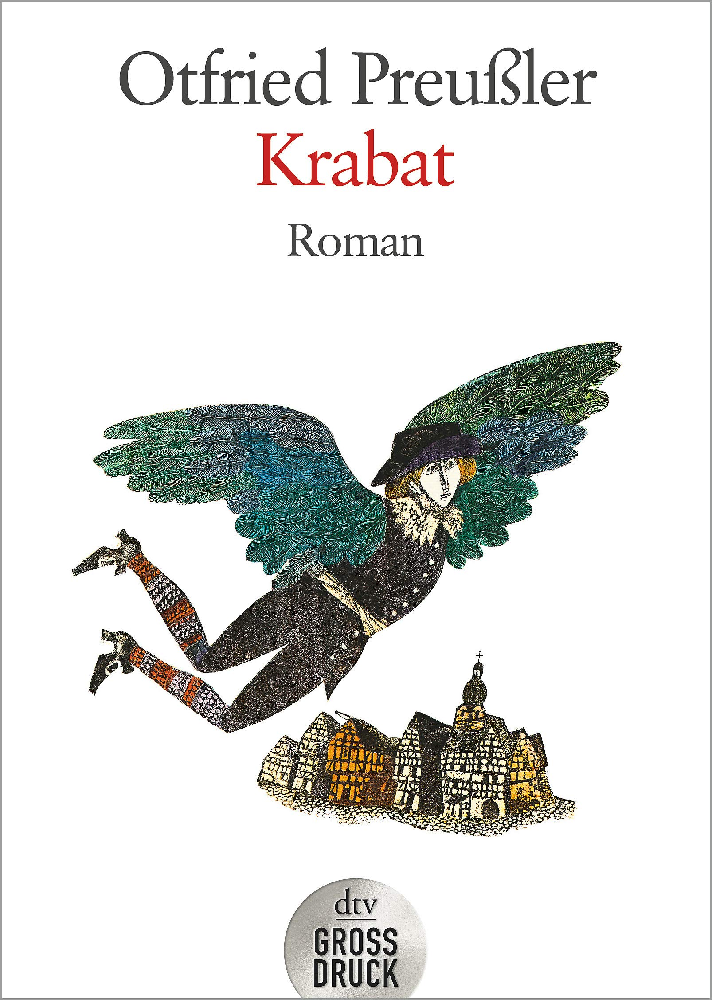
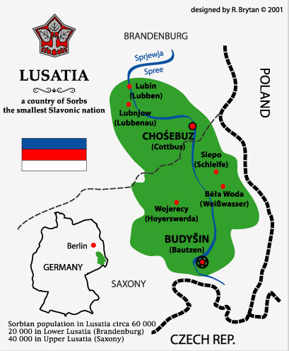

0
стр. з
0
сторінок

завантаження...

Отфрид Пройслер
Крабат
Текст адаптировали Екатерина Макаренко и Илья Франк
Метод чтения Ильи Франка
Inhalt
Das erste JahrDie Mühle im KoselbruchElf und einerKein HonigleckenWege im TraumDer mit der HahnenfederHusch, auf die StangeDas Mal der Geheimen BruderschaftGedenke, dass ich der Meister binOchsenblaschke aus KamenzFeldmusikDas AndenkenOhne Pastor und KreuzDas zweite JahrNach Mühlenordnung und ZunftgebrauchEin milder WinterVivat AugustusIm Schein einer OsterkerzeGeschichten von PumphuttPferdehandelWein und WasserHahnenkampfAm Ende der ReiheDas dritte JahrDer MohrenkönigFluchtversucheSchnee auf die SaatenIch bin KrabatHinter Sonne und MondÜberraschungenEin schweres Stück ArbeitDer Adler des SultansEin Ring von HaarDas AngebotZwischen den Jahren
Das erste Jahr
(первый год).
Die Mühle im Koselbruch
(мельница в Козельбрухе).
Es war (это было) in der Zeit zwischen (во время между) Neujahr und dem Dreikönigstag (Новым годом и праздником Богоявления). Krabat, ein Junge von vierzehn Jahren damals (мальчик четырнадцати лет тогда), hatte sich mit zwei anderen wendischen Betteljungen (с двумя другими сорбскими /лужицкими/[1] нищими мальчишками; betteln — просить милостыню; der Junge — мальчишка) zusammengetan (сошелся/сговорился; sich zusammentun — объединяться), und obgleich Seine allerdurchlauchtigste Gnaden (и хотя Его Светлейшее Величество; aller — самый; die Durchlaucht — светлость /титулование князя/; die Gnade — милость), der Kurfürst von Sachsen (курфюрст саксонский), das Betteln und Vagabundieren (попрошайничество и бродяжничество) in Höchstderoselben Landen (в своих августейших землях) bei Strafe verboten hatten (запретил под угрозой штрафа; verbieten — запрещать) aber die Richter (но судьи) und sonstigen Amtspersonen (и другие чиновники; das Amt — служба) nahmen es (восприняли это) glücklicherweise (к счастью) nicht übermäßig genau damit (не слишком точно/буквально /для исполнения/ = смотрели на это сквозь пальцы; übermäßig — чрезмерно; das Maß — мера; das Übermaß — избыток, излишек), zogen sie (пошли они: «потянулись они»; ziehen — тянуть; проходить /процессией/) als Dreikönige (в качестве трех королей = волхвов = ряжеными) in der Gegend von Hoyerswerda (в местности = в окрестностях города Хойерсверды) von Dorf zu Dorf (от деревни к деревне; das Dorf): Strohkränze (венки из соломы; das Stroh — солома; der Kranz — венок) um die Mützen (на шапках: «вокруг шапок»; die Mütze) waren die Königskronen (были королевскими коронами; der König — король; die Krone — корона); und einer von ihnen (и один из них), der lustige kleine Lobosch aus Maukendorf (веселый маленький Лобош из Маукендорфа), machte den Mohrenkönig (изображал: «делал» маврского короля; der Mohr — мавр, мавританин) und schmierte sich jeden Morgen (и обмазывался каждое утро) mit Ofenruß voll (печной сажей полностью = весь, все тело; der Ofen — печь; der Ruß — сажа). Stolz trug er ihnen den Bethlehemstern voran (гордо нес он перед ними вифлеемскую звезду; Bethlehem — Вифлеем; der Stern — звезда), den Krabat an einen Stecken genagelt hatte (которую Крабат прибил к палке; der Stecken — палка; посох; жердь; nageln — прибивать гвоздями; der Nagel — гвоздь).
Es war in der Zeit zwischen Neujahr und dem Dreikönigstag. Krabat, ein Junge von vierzehn Jahren damals, hatte sich mit zwei anderen wendischen Betteljungen zusammengetan, und obgleich Seine allerdurchlauchtigste Gnaden, der Kurfürst von Sachsen, das Betteln und Vagabundieren in Höchstderoselben Landen bei Strafe verboten hatten (aber die Richter und sonstigen Amtspersonen nahmen es glücklicherweise nicht übermäßig genau damit), zogen sie als Dreikönige in der Gegend von Hoyerswerda von Dorf zu Dorf: Strohkränze um die Mützen waren die Königskronen; und einer von ihnen, der lustige kleine Lobosch aus Maukendorf, machte den Mohrenkönig und schmierte sich jeden Morgen mit Ofenruß voll. Stolz trug er ihnen den Bethlehemstern voran, den Krabat an einen Stecken genagelt hatte.
Wenn sie auf einen Hof kamen (когда они приходили к одному /какому-нибудь/ двору), nahmen sie Lobosch (ставили: «брали», они Лобоша; nehmen) in die Mitte (в середину) und sangen (и пели: singen): »Hosianna Davidssohn (осанна сыну Давидову)!« — das heißt (это означает/то есть): Krabat bewegte nur stumm die Lippen (Крабат лишь шевелил бесшумно губами), weil er gerade im Stimmbruch war (потому что у него как раз ломался голос: «он был в процессе ломки голоса»; die Stimme — голос; der Bruch — ломка; brechen — ломать/ся/). Dafür sangen die anderen Hoheiten (зато другие «высочества» пели; die Hoheit — величие; высочество /титулование/) um so lauter (тем громче, laut — громко), da glich sich das wieder aus (тут = так что это уравнивалось/компенсировалось снова; sich ausgleichen — выравниваться; gleich — равный). Viele Bauern hatten auf Neujahr ein Schwein geschlachtet (многие крестьяне на Новый год закололи свинью), sie beschenkten die Herren Könige aus dem Morgenland (они одаривали волхвов: «господ королей из Восточной страны»; das Morgenland — Восток) reichlich (обильно/вдоволь) mit Wurst und Speck (колбасой и салом; die Wurst, der Speck). Anderswo (в других местах) gab es Äpfel, Nüsse und Backpflaumen (давали: «имелись» яблоки, орехи и чернослив; der Apfel; die Nuss; die Pflaume — слива, Backpflaumen — чернослив), Honigbrot manchmal (иногда медовые лепешки: der Honig — мед; das Brot — хлеб) und Schmalzküchlein, Anisplätzchen (а также пироги, анисовое печенье; der Anis; das Plätzchen — маленькое плоское печенье) und Zimtsterne (и печенье в виде звезд с корицей: der Zimt — корица). »Das Jahr fängt gut an (год начинается хорошо: anfangen — начинать/ся/)!« meinte Lobosch (сказал Лобош: meinen — полагать, выражать мнение) am Abend des dritten Tages (вечером третьего дня), »so dürfte es bis Silvester weitergehen (так должно продолжаться до Сильвестра, Silvester — последний день года; новогодний вечер, канун Нового года)!« Da nickten die beiden anderen Majestäten (тут кивнули головой /в знак согласия/ оба других величества) gemessen (сдержанно/с достоинством; messen — мерить) und seufzten (и вздохнули): »Von uns aus (согласны: «для нас, по-нашему, так») — gern (пожалуйста: «охотно»)!«
Wenn sie auf einen Hof kamen, nahmen sie Lobosch in die Mitte und sangen: »Hosianna Davidssohn!« — das heißt: Krabat bewegte nur stumm die Lippen, weil er gerade im Stimmbruch war. Dafür sangen die anderen Hoheiten um so lauter, da glich sich das wieder aus. Viele Bauern hatten auf Neujahr ein Schwein geschlachtet, sie beschenkten die Herren Könige aus dem Morgenland reichlich mit Wurst und Speck. Anderswo gab es Äpfel, Nüsse und Backpflaumen, Honigbrot manchmal und Schmalzküchlein, Anisplätzchen und Zimtsterne. »Das Jahr fängt gut an!« meinte Lobosch am Abend des dritten Tages, »so dürfte es bis Silvester weitergehen!« Da nickten die beiden anderen Majestäten gemessen und seufzten: »Von uns aus — gern!«
Die folgende Nacht (следующую ночь; folgen — следовать) verbrachten sie (провели они: verbringen) in der Schmiede von Petershain (в кузне Петерсхайна, der Hain — роща, дубрава) auf dem Heuboden (на сеновале, das Heu — сено, der Boden — земля); dort geschah es (там случилось: geschehen — происходить, случаться), dass Krabat zum erstenmal (что Крабату в первый раз) jenen seltsamen Traum hatte (привиделся тот таинственный сон). Elf Raben saßen (одиннадцать воронов сидели: sitzen) auf einer Stange (на жерди) und blickten ihn an (и смотрели на него: jemanden anblicken — смотреть на ког-либо). Er sah (он увидел: sehen), dass ein Platz auf der Stange frei war (что одно место на жерди было свободно), am linken Ende (на левом конце). Dann hörte er eine Stimme (затем он услышал голос). Die Stimme klang heiser (голос звучал хрипло; klingen), sie schien aus den Lüften zu kommen (он, казалось, шел с небес: «из воздухов», scheinen — казаться), von fernher (издалека), und rief ihn bei seinem Namen (и звал его по имени: rufen — кричать; звать). Er traute sich nicht zu antworten (он не решался ответить; sich trauen, etwas zu machen — решаться на что-либо). »Krabat!« erscholl es zum zweitenmal (раздалось во второй раз; erschallen; der Schall — звук) — und ein drittesmal (и в третий раз): »Krabat!« Dann sagte die Stimme (затем голос сказал): »Komm nach Schwarzkollm in die Mühle (ступай в Шварцкольм, на мельницу; die Mühle — мельница), es wird nicht zu deinem Schaden sein (ты не пожалеешь: «это не станет тебе во вред»; der Schaden — ущерб, убыток)!« Hierauf erhoben die Raben sich von der Stange (потом взмыли: «поднялись» вороны с жерди; sich erheben — подниматься) und krächzten (и прокаркали): »Gehorche der Stimme des Meisters (повинуйся голосу мастера; der Meister — мастер, наставник, повелитель), gehorche ihr (повинуйся ему /голосу/)!«
Die folgende Nacht verbrachten sie in der Schmiede von Petershain auf dem Heuboden; dort geschah es, dass Krabat zum erstenmal jenen seltsamen Traum hatte.
Elf Raben saßen auf einer Stange und blickten ihn an. Er sah, dass ein Platz auf der Stange frei war, am linken Ende. Dann hörte er eine Stimme. Die Stimme klang heiser, sie schien aus den Lüften zu kommen, von fernher, und rief ihn bei seinem Namen. Er traute sich nicht zu antworten. »Krabat!« erscholl es zum zweitenmal — und ein drittesmal: »Krabat!« Dann sagte die Stimme: »Komm nach Schwarzkollm in die Mühle, es wird nicht zu deinem Schaden sein!« Hierauf erhoben die Raben sich von der Stange und krächzten: »Gehorche der Stimme des Meisters, gehorche ihr!«
Davon erwachte Krabat (от этого Крабат проснулся). »Was man nicht alles zusammenträumt (чего только тебе не привидится)!« dachte er (подумал он; denken), wälzte sich auf die andere Seite (перевернулся на другой бок; sich wälzen — переворачиваться) und schlief wieder ein (и снова заснул: einschlafen — засыпать). Anderntags (на другой день) zog er mit seinen Gefährten weiter (двинулся со своими спутниками дальше в путь; der Gefährte), und wenn ihm die Raben einfielen (и когда ему пришли на ум/вспомнились вороны; einfallen — приходить на ум), lachte er (он засмеялся). Doch der Traum wiederholte sich (однако сон повторился) in der Nacht darauf (на следующую ночь: «в ночь после этого»). Abermals (снова, abermals — вторично, опять, вновь) rief ihn die Stimme beim Namen, und abermals krächzten die Raben: »Gehorche ihr!« Das gab Krabat zu denken (это заставило Крабата задуматься; geben — давать). Er fragte am anderen Morgen den Bauern (он спросил на следующее утро крестьянина), bei dem sie genächtigt hatten (у которого они ночевали), ob er ein Dorf kenne (знает ли он деревню), das Schwarzkollm heiße (которая называется Шварцкольм) oder so ähnlich (или как-нибудь похоже = или что-то вроде этого). Der Bauer entsann sich (вспомнил; sich entsinnen; der Sinn — чувство), den Namen gehört zu haben (что слышал это название). »Schwarzkollm...«, überlegte er (поразмыслил он). »Ja doch — im Hoyerswerdaer Forst (да, в самом деле, в Хойерсвердском лесу), an der Straße nach Leippe (на пути к Ляйпе): da gibt es ein Dorf, das so heißt (там есть деревня, которая так называется).«
Davon erwachte Krabat. »Was man nicht alles zusammenträumt!« dachte er, wälzte sich auf die andere Seite und schlief wieder ein. Anderntags zog er mit seinen Gefährten weiter, und wenn ihm die Raben einfielen, lachte er. Doch der Traum wiederholte sich in der Nacht darauf. Abermals rief ihn die Stimme beim Namen, und abermals krächzten die Raben: »Gehorche ihr!« Das gab Krabat zu denken. Er fragte am anderen Morgen den Bauern, bei dem sie genächtigt hatten, ob er ein Dorf kenne, das Schwarzkollm heiße oder so ähnlich. Der Bauer entsann sich, den Namen gehört zu haben. »Schwarzkollm...«, überlegte er. »Ja doch — im Hoyerswerdaer Forst, an der Straße nach Leippe: da gibt es ein Dorf, das so heißt.«
Das nächstemal (в следующий раз) übernachteten die Dreikönige in Groß-Partwitz. Auch hier träumte Krabat den Traum von den Raben und von der Stimme (и здесь привиделся Крабату сон о воронах и о голосе), die aus den Lüften zu kommen schien (который, казалось, раздавался с небес); und es spielte sich alles genauso ab (и все происходило в точности: «разворачивалось») wie beim ersten und zweiten Mal (как в первый и второй раз). Da beschloss er (тут = тогда он решил; beschließen — прийти к решению, решиться), der Stimme zu folgen (последовать голосу). Im Morgengrauen (на рассвете), als die Gefährten noch schliefen (когда путники еще спали; schlafen), stahl er sich aus der Scheune (выскользнул он из сарая; sich stehlen — прокрасться; stehlen — красть). Am Hoftor (у ворот двора; der Hof — двор; das Tor — ворота) begegnete er der Magd (случайно встретил девушку/служанку: jemandem begegnen — встречать кого-либо /случайно, без предварительной договоренности/), die zum Brunnen ging (которая шла к колодцу; gehen — идти; der Brunnen — колодец, источник). »Grüß mir die beiden (передай от меня привет обоим /путникам/: «поприветствуй мне обоих») «, trug er ihr auf (поручил он ей: auftragen), »ich hab wegmüssen (мне пришлось уйти; ich muss weg — мне нужно уйти: «я должен прочь»).«
Das nächstemal übernachteten die Dreikönige in Groß-Partwitz. Auch hier träumte Krabat den Traum von den Raben und von der Stimme, die aus den Lüften zu kommen schien; und es spielte sich alles genauso ab wie beim ersten und zweiten Mal. Da beschloss er, der Stimme zu folgen. Im Morgengrauen, als die Gefährten noch schliefen, stahl er sich aus der Scheune. Am Hoftor begegnete er der Magd, die zum Brunnen ging. »Grüß mir die beiden«, trug er ihr auf, »ich hab wegmüssen.«
Von Dorf zu Dorf (от деревни к деревне) fragte Krabat sich weiter (продвигался с расспросами Крабат; sich weiterfragen). Der Wind trieb ihm Schneekörner ins Gesicht («ветер бросал ему зерна снега в лицо»; treiben — гнать, загонять; der Schnee — снег, das Korn — зерно; das Gesicht), alle paar Schritte (через каждые несколько шагов; der Schritt) musste er stehen bleiben (он должен был = ему приходилось останавливаться) und sich die Augen wischen (и протирать глаза; das Auge) Im Hoyerswerdaer Forst verlief er sich (в Хойерсвердовском лесу он заблудился, Forst, m — лес, бор, sich verlaufen), brauchte zwei volle Stunden (ему понадобилось целых два часа: «два полных часа», brauchen — нуждаться в чем-л.), bis er die Straße nach Leippe wiederfand (пока он снова нашел дорогу в Ляйпе). So kam es (получилось: «так пришло»), dass er erst gegen Abend sein Ziel erreichte (что он лишь к вечеру достиг своей цели = добрался до своей цели). Schwarzkollm war ein Dorf (был деревней; das Dorf) wie die anderen Heidedörfer (как другие луговые деревни; die Heide — вересковая пустошь, поле, луг): Häuser und Scheunen in langer Zeile (дома и амбары в длинном ряду: «длинным рядом») zu beiden Seiten der Straße (по обе стороны улицы), tief eingeschneit (глубоко под снегом: «заснеженные», der Schnee — снег); Rauchfahnen über den Dächern (дым над крышами; der Rauch — дым; die Fahne — знамя, зд. шлейф дыма; das Dach — крыша), dampfende Misthaufen (дымящиеся навозные кучи; der Dampf — пар; der Mist — навоз; der Haufen — куча), Rindergebrüll (мычание коров: das Rind — крупный рогатый скот, das Gebrüll — мычание, brüllen — реветь). Auf dem Ententeich (на утином пруду; die Ente — утка; der Teich — пруд) liefen mit lautem Gejohle (с громкими криками катались; das Gejohl — крики, johlen — громко кричать) die Kinder Schlittschuh (на коньках дети; Schlittschuh laufen — кататься на коньках).
Von Dorf zu Dorf fragte Krabat sich weiter. Der Wind trieb ihm Schneekörner ins Gesicht, alle paar Schritte musste er stehen bleiben und sich die Augen wischen. Im Hoyerswerdaer Forst verlief er sich, brauchte zwei volle Stunden, bis er die Straße nach Leippe wiederfand. So kam es, dass er erst gegen Abend sein Ziel erreichte. Schwarzkollm war ein Dorf wie die anderen Heidedörfer: Häuser und Scheunen in langer Zeile zu beiden Seiten der Straße, tief eingeschneit; Rauchfahnen über den Dächern, dampfende Misthaufen, Rindergebrüll. Auf dem Ententeich liefen mit lautem Gejohle die Kinder Schlittschuh.
Vergebens hielt Krabat Ausschau nach einer Mühle (тщетно высматривал Крабат мельницу; Ausschau halten nach etw. = ausschauen). Ein alter Mann, der ein Bündel Reisig trug (старик, который нес вязанку хвороста; das Bündel — связка; das Reisig — хворост; tragen), kam die Straße herauf (шел по улице сюда-вверх = шел навстречу по улице): den fragte er (его он спросил). »Wir haben im Dorf keine Mühle (у нас в деревне нет мельницы) «, erhielt er zur Antwort (получил он в ответ; erhalten — получать; die Antwort — ответ; antworten — отвечать). »Und in der Nachbarschaft (а по соседству; der Nachbar — сосед)?«
»Wenn du die meinst... (если ты ту имеешь в виду) « Der Alte deutete mit dem Daumen (старик указал большим пальцем; der Daumen — большой палец) über die Schulter (через плечо). »Im Koselbruch hinten (там, за Козельбрухом, hinten — позади, сзади), am Schwarzen Wasser (у Черной Воды), da gibt es eine (там есть одна = мельница). Aber... (но) « Er unterbrach sich (он прервался, unterbrechen — прерывать), als habe er schon zu viel gesagt (как будто бы он уже слишком много сказал). Krabat dankte ihm für die Auskunft (поблагодарил его за ответ; die Auskunft — справка, сведения), er wandte sich in die Richtung (он повернулся в /том/ направлении, sich wenden, die Richtung), die ihm der Alte gewiesen hatte (которое указал ему старик; weisen). Nach wenigen Schritten (через несколько шагов) zupfte ihn wer am Ärmel (дергает его кто-то за рукав; der Ärmel); als er sich umblickte (когда он обернулся), war es (это был) der Mann mit dem Reisigbündel. »Was gibt's?« (что есть? = что /такое/?) fragte Krabat (спросил Крабат). Der Alte trat näher (подошел по-ближе: treten — ступать; nah — близко), sagte mit ängstlicher Miene (сказал с испуганным выражением лица; ängstlich; die Angst — страх; die Miene — вид, выражение лица): »Ich möchte dich warnen, Junge (я хотел бы тебя предостеречь, парень). Meide (избегай) den Koselbruch und die Mühle am Schwarzen Wasser, es ist nicht geheuer dort... (что-то неладно/нечисто там) «
Vergebens hielt Krabat Ausschau nach einer Mühle. Ein alter Mann, der ein Bündel Reisig trug, kam die Straße herauf: den fragte er. »Wir haben im Dorf keine Mühle«, erhielt er zur Antwort. »Und in der Nachbarschaft?«
»Wenn du die meinst...« Der Alte deutete mit dem Daumen über die Schulter. »Im Koselbruch hinten, am Schwarzen Wasser, da gibt es eine. Aber...« Er unterbrach sich, als habe er schon zu viel gesagt. Krabat dankte ihm für die Auskunft, er wandte sich in die Richtung, die ihm der Alte gewiesen hatte. Nach wenigen Schritten zupfte ihn wer am Ärmel; als er sich umblickte, war es der Mann mit dem Reisigbündel. »Was gibt's?« fragte Krabat. Der Alte trat näher, sagte mit ängstlicher Miene: »Ich möchte dich warnen, Junge. Meide den Koselbruch und die Mühle am Schwarzen Wasser, es ist nicht geheuer dort...«
Einen Augenblick (какой-то момент: «один момент») zögerte Krabat (Крабат помедлил), dann ließ er den Alten stehen (потом он ушел: «оставил старика стоять»; stehen lassen) und ging seines Weges (и пошел своей дорогой: der Weg), zum Dorf hinaus (к деревне отсюда: «туда-вовне»). Es wurde rasch finster (быстро стемнело: «стало быстро темно»; finster — темный, мрачный; сумрачный), er musste achtgeben (он должен был обращать внимание на то), dass er den Pfad nicht verlor (чтобы он не потерял дорогу; verlieren; der Pfad — тропа, дорога), ihn fröstelte (его знобило/ему было холодно; frösteln — зябнуть, мерзнуть; mich fröstelt — меня знобит; я зябну; der Frost — мороз). Wenn er den Kopf wandte (когда он повернул голову), sah er dort (увидел он там), von woher er kam (откуда он пришел), Lichter aufschimmern (мерцание огней: «огни мерцают»): hier eines, da eines (здесь один, там один = то тут, то там). Ob es nicht klüger war umzukehren (не было ли умнее вернуться назад; klug — умный; umkehren — поворачивать обратно)? »Ach was (а, все равно) «, brummte Krabat und klappte den Kragen hoch (пробормотал Крабат и поднял ворот; hochklappen; der Kragen — ворот). »Bin ich ein kleiner Junge (я что, маленький мальчик)? Ansehen kostet nichts (ничего не случится, если я посмотрю: «взглянуть ничего не стоит»).« Krabat tappte (побрел неуверенным шагом) ein Stück durch den Wald (кусок/отрезок /пути/ через лес; das Stück; der Wald) wie ein Blinder im Nebel (как слепой в тумане; der Nebel), dann stieß er auf eine Lichtung (потом он наткнулся на просеку; stoßen auf etwas — наткнуться на что-либо; stoßen — толкать). Als er sich anschickte (когда он собирался), unter den Bäumen hervorzutreten (выйти из-под деревьев: «под деревьями выйти вперед»), riss das Gewölk auf (тучи разорвались; aufreißen; das Gewölk — тучи), der Mond kam zum Vorschein (луна стала видна; zum Vorschein kommen — появиться, обнаружиться; проявиться); alles war plötzlich in kaltes Licht getaucht (все оказалось погружено вдруг в холодный свет; das Licht). Jetzt sah Krabat die Mühle (теперь Крабат видел мельницу).
Einen Augenblick zögerte Krabat, dann ließ er den Alten stehen und ging seines Weges, zum Dorf hinaus. Es wurde rasch finster, er musste achtgeben, dass er den Pfad nicht verlor, ihn fröstelte. Wenn er den Kopf wandte, sah er dort, von woher er kam, Lichter aufschimmern: hier eines, da eines. Ob es nicht klüger war umzukehren? »Ach was«, brummte Krabat und klappte den Kragen hoch. »Bin ich ein kleiner Junge? Ansehen kostet nichts.« Krabat tappte ein Stück durch den Wald wie ein Blinder im Nebel, dann stieß er auf eine Lichtung. Als er sich anschickte, unter den Bäumen hervorzutreten, riss das Gewölk auf, der Mond kam zum Vorschein, alles war plötzlich in kaltes Licht getaucht. Jetzt sah Krabat die Mühle.
Da lag sie vor ihm (она находилась: «лежала» перед ним), in den Schnee geduckt (притаившись: «пригнувшись» в снегу), dunkel (темная), bedrohlich (угрожающая; drohen — грозить), ein mächtiges, böses Tier (мощный, злой зверь), das auf Beute lauert (который подстерегает добычу). »Niemand zwingt mich dazu (никто не принуждает меня к тому), dass ich hingehe (чтобы я пошел туда) «, dachte Krabat (подумал Крабат). Dann schalt er sich einen Hasenfuß (потом обругал себя трусишкой; schelten — ругать; der Hasenfuß — трусишка: «заячья нога»), nahm seinen Mut zusammen (набрался смелости: «взял свою смелость вместе = собрал воедино свою смелость») und trat aus dem Waldesschatten ins Freie (и вышел из тени леса на простор; der Wald; der Schatten). Beherzt schritt er auf die Mühle zu (смело зашагал он по направлению к мельнице: zuschreiten/zugehen auf etwas), fand die Haustür verschlossen (дверь была заперта: «нашел дверь дома запертой»; verschließen — запирать) und klopfte (и постучал). Er klopfte einmal (один раз), er klopfte zweimal: nichts rührte sich drinnen (ничто не пошевелилось внутри). Kein Hund schlug an (не залаяла собака; anschlagen — залаять; schlagen — бить), keine Treppe knarrte (не заскрипела лестница), kein Schlüsselbund rasselte (не зазвенела связка ключей; der Schlüssel; der Bund; rasseln) — nichts (ничего).
Da lag sie vor ihm, in den Schnee geduckt, dunkel, bedrohlich, ein mächtiges, böses Tier, das auf Beute lauert. »Niemand zwingt mich dazu, dass ich hingehe«, dachte Krabat. Dann schalt er sich einen Hasenfuß, nahm seinen Mut zusammen und trat aus dem Waldesschatten ins Freie. Beherzt schritt er auf die Mühle zu, fand die Haustür verschlossen und klopfte. Er klopfte einmal, er klopfte zweimal: nichts rührte sich drinnen. Kein Hund schlug an, keine Treppe knarrte, kein Schlüsselbund rasselte — nichts.
Krabat klopfte ein drittesmal (постучал в третий раз), dass ihn die Knöchel schmerzten (до боли: «так что у него кости заболели»; der Knöchel — лодыжка, щиколотка; сгиб пальцев /рук и ног/). Wieder blieb alles (снова осталось все; bleiben) still in der Mühle (тихо на мельнице). Da drückte er (тут нажимает он) probehalber (чтобы проверить: «ради пробы»; die Probe) die Klinke nieder (ручку двери вниз): die Tür ließ sich öffnen (дверь поддалась: «дала себя открыть»), sie war nicht verriegelt (она была не заперта на засов: der Riegel — задвижка), er trat in den Hausflur ein (он вошел в коридор дома). Grabesstille (гробовая тишина; das Grab — могила; die Stille — тишина) empfing ihn (встретила его; empfangen) und tiefe Finsternis (и глубокая тьма; finster — темный, мрачный). Hinten jedoch (позади однако), am Ende des Ganges (в конце прохода; das Ende; der Gang), etwas wie schwacher Lichtschein (что-то как/вроде слабого света; das Licht — свет; der Schein — сияние). Der Schimmer (мерцание) von einem Schimmer bloß (всего лишь от /другого/ мерцания). »Wo Licht ist (где есть свет), werden auch Leute sein (там будут = видимо, есть также и люди) «, sagte sich Krabat (сказал себе = подумал Крабат). Die Arme vorgestreckt (протянув руки), tastete er sich weiter (продвигался наощупь далее; sich weitertasten, weiter — дальше; tasten — ощупывать). Das Licht drang (свет проникал; dringen — проникать, пробиваться), er sah es im Näherkommen (он видел его, приближаясь; nah — близко; näher — ближе), durch einen Spalt in der Tür (через щель в двери), die den Gang an der Rückseite abschloss (которая закрывала проход на обратной стороне = с другой стороны). Neugier ergriff ihn (любопытство охватило его; die Neugier: neu — новый + die Gier — жажда, стремление, ergreifen), auf Zehenspitzen (на цыпочках; die Zehe — палец ноги; die Spitze — кончик) schlich er sich (прокрался; sich schleichen) zu der Ritze (к щели) und spähte hindurch (и посмотрел вовнутрь через нее; spähen — смотреть внимательно, высматривать).
Krabat klopfte ein drittesmal, dass ihn die Knöchel schmerzten. Wieder blieb alles still in der Mühle. Da drückte er probehalber die Klinke nieder: die Tür ließ sich öffnen, sie war nicht verriegelt, er trat in den Hausflur ein. Grabesstille empfing ihn und tiefe Finsternis. Hinten jedoch, am Ende des Ganges, etwas wie schwacher Lichtschein. Der Schimmer von einem Schimmer bloß. »Wo Licht ist, werden auch Leute sein«, sagte sich Krabat. Die Arme vorgestreckt, tastete er sich weiter. Das Licht drang, er sah es im Näherkommen, durch einen Spalt in der Tür, die den Gang an der Rückseite abschloss. Neugier ergriff ihn, auf Zehenspitzen schlich er sich zu der Ritze und spähte hindurch.
Sein Blick fiel (его взгляд упал; der Blick — взгляд; blicken — смотреть; fallen) in eine schwarze (в черную), vom Schein einer einzigen Kerze (светом одной единственной свечи) erhellte Kammer (освещенную каморку; erhellen — освещать /изнутри/; hell — светлый). Die Kerze war rot (свеча была красной). Sie klebte (она держалась/была прилеплена; kleben — липнуть) auf einem Totenschädel (на черепе; der Tote —умерший; der Schädel — череп), der lag auf dem Tisch (который лежал на столе), der die Mitte des Raumes einnahm (который занимал середину комнаты; der Raum — пространство; помещение). Hinter dem Tisch (за столом) saß ein massiger (сидел крупный; massig — огромный, объемистый; громоздкий, массивный; тяжеловесный), dunkelgekleideter Mann (одетый в темное мужчина; kleiden — одевать), sehr bleich im Gesicht (очень бледный лицом: «в лице»; das Gesicht) wie mit Kalk bestächen (как известью наштукатуренный; der Kalk — известь); ein schwarzes Pflaster bedeckte sein linkes Auge (черный пластырь покрывал его левый глаз). Vor ihm auf dem Tisch (перед ним на столе) lag ein dickes, in Leder eingebundenes Buch (лежала толстая, переплетенная кожей книга; das Leder; einbinden), das an einer Kette hing (которая висела на цепочке; hängen): darin las er (он внимательно читал ее: «в ней он читал»; lesen).
Sein Blick fiel in eine schwarze, vom Schein einer einzigen Kerze erhellte Kammer. Die Kerze war rot. Sie klebte auf einem Totenschädel, der lag auf dem Tisch, der die Mitte des Raumes einnahm. Hinter dem Tisch saß ein massiger, dunkelgekleideter Mann, sehr bleich im Gesicht, wie mit Kalk bestächen; ein schwarzes Pflaster bedeckte sein linkes Auge. Vor ihm auf dem Tisch lag ein dickes, in Leder eingebundenes Buch, das an einer Kette hing: darin las er.
Nun hob er den Kopf (вот поднял он голову; heben) und starrte herüber (и пристально смотрел туда /через помещение/; starren), als habe er Krabat hinter dem Türspalt ausgemacht (словно он приметил Крабата за дверной щелью). Der Blick ging dem Jungen durch Mark und Bein (взгляд пронзил мальчика насквозь; durch Mark und Bein gehen — пронизывать насквозь: «сквозь /костный/ мозг и кость»). Das Auge begann ihn zu jucken (в глаз как будто что-то попало: «у него начал чесаться = зачесался глаз»), es tränte (глаз заслезился), das Bild in der Kammer verwischte sich (все будто подернулось пеленой: «картина /происходящего/ в каморке стерлась = стала расплывчатой»). Krabat rieb sich das Auge (Крабат потер глаз; reiben) — da merkte er (тут он заметил), wie sich ihm eine eiskalte Hand auf die Schulter legte (как холодная, словно лед, рука легла ему плечо), von hinten (сзади), er spürte die Kälte (он почувствовал холод) durch Rock und Hemd hindurch (сквозь тужурку и рубаху; der Rock; das Hemd; hindurch — насквозь). Gleichzeitig (одновременно) hörte er jemand (услышал он, как кто-то) mit heiserer Stimme (хриплым голосом) auf Wendisch sagen (сказал по-сорбски): »Da bist du ja!« (вот ты и пришел: «тут ты ведь») Krabat zuckte zusammen (вздрогнул), die Stimme kannte er (он знал этот голос = голос был ему знаком). Als er sich umwandte (когда он обернулся: sich umwenden), stand er dem Mann gegenüber (он стоял напротив мужчины) — dem Mann mit der Augenklappe (мужчины с повязкой на глазу). Wie kam der auf einmal hierher (как тот здесь очутился; auf einmal — вдруг)? Durch die Tür war er jedenfalls nicht gekommen (не через дверь же: «через дверь он во всяком случае не прошел»). Der Mann hielt ein Kerzenlicht in der Hand (мужчина держал в руке свечу). Er musterte Krabat schweigend (он молча разглядывал Крабата), dann schob er das Kinn vor (затем он выдвинул вперед подбородок; vorschieben — выдвигать вперед; schieben — толкать, двигать) und sagte: »Ich bin hier der Meister (я здесь мастер/хозяин). Du kannst bei mir Lehrjunge werden (ты можешь стать моим учеником; lehren — обучать; der Lehrling — ученик), ich brauche einen (мне нужен один = ученик). Du magst doch (ты ведь хочешь; mögen)?«
Nun hob er den Kopf und starrte herüber, als habe er Krabat hinter dem Türspalt ausgemacht. Der Blick ging dem Jungen durch Mark und Bein. Das Auge begann ihn zu jucken, es tränte, das Bild in der Kammer verwischte sich. Krabat rieb sich das Auge — da merkte er, wie sich ihm eine eiskalte Hand auf die Schulter legte, von hinten, er spürte die Kälte durch Rock und Hemd hindurch. Gleichzeitig hörte er jemand mit heiserer Stimme auf Wendisch sagen: »Da bist du ja!« Krabat zuckte zusammen, die Stimme kannte er. Als er sich umwandte, stand er dem Mann gegenüber — dem Mann mit der Augenklappe. Wie kam der auf einmal hierher? Durch die Tür war er jedenfalls nicht gekommen. Der Mann hielt ein Kerzenlicht in der Hand. Er musterte Krabat schweigend, dann schob er das Kinn vor und sagte: »Ich bin hier der Meister. Du kannst bei mir Lehrjunge werden, ich brauche einen. Du magst doch?«
»Ich mag (хочу) «, hörte Krabat sich antworten (услышал Крабат свой голос как бы со стороны: «услышал себя отвечающим») Seine Stimme klang fremd (его голос звучал, как чужой: «звучал отчужденно»; klingen), als gehörte sie gar nicht ihm (как будто бы он принадлежал вовсе не ему). »Und was soll ich dich lehren (и чему я должен тебя научить)? Das Müllern (молоть зерно) — oder auch alles andere (или также всему остальному)?« wollte der Meister wissen (допытывался мастер: «хотел знать мастер»). »Das andere auch« (другому тоже), sagte Krabat. Da hielt ihm der Müller die linke Hand hin (тут мельник протянул ему левую руку; halten — держать; hinhalten — протягтвать). »Schlag ein!« (по рукам/договорились; einschlagen — ударить по рукам /в знак договора/) In dem Augenblick (в тот самый момент), da sie den Handschlag vollzogen (когда они ударили по рукам: «когда они совершили/произвели удар по рукам»; vollziehen; schlagen — ударять), erhob sich ein dumpfes Rumóren (поднялся глухой шум; sich erheben) und Tosen im Haus (и рев в доме; das Tosen; tosen — бушевать, реветь, шуметь). Es schien aus der Tiefe der Erde zu kommen (казалось, что этот шум исходит из глубины земли: «он казался исходить…»). Der Fußboden schwankte (пол пошатнулся), die Wände fingen zu zittern an (стены начали дрожать), Balken und Pfosten erbebten (бревна и косяки содрогнулись; der Balken — бревно; балка; der Pfosten — столб; косяк /окна, двери/). Krabat schrie auf (Крабат закричал/вскрикнул; aufschreien), wollte weglaufen (хотел убежать: weg — прочь): weg, bloß weg von hier (только бы поскорей прочь отсюда; bloß — только, лишь)! — doch der Meister vertrat ihm den Weg (но Мастер преградил ему дорогу; vertreten — заступить; treten — ступать). »Die Mühle!« rief er (закричал/позвал он; rufen), die Hände zum Trichter geformt (сложив руки воронкой; der Trichter; formen). »Nun mahlt sie wieder (теперь она снова начала молоть)!«
»Ich mag«, hörte Krabat sich antworten. Seine Stimme klang fremd, als gehörte sie gar nicht ihm. »Und was soll ich dich lehren? Das Müllern — oder auch alles andere?« wollte der Meister wissen. »Das andere auch«, sagte Krabat. Da hielt ihm der Müller die linke Hand hin. »Schlag ein!« In dem Augenblick, da sie den Handschlag vollzogen, erhob sich ein dumpfes Rumoren und Tosen im Haus. Es schien aus der Tiefe der Erde zu kommen. Der Fußboden schwankte, die Wände fingen zu zittern an, Balken und Pfosten erbebten. Krabat schrie auf, wollte weglaufen: weg, bloß weg von hier! — doch der Meister vertrat ihm den Weg. »Die Mühle!« rief er, die Hände zum Trichter geformt. »Nun mahlt sie wieder!«
Elf und einer
(одиннадцать и /еще/ один).
Der Meister bedeutete Krabat, er möge mitkommen (показал Крабату знаками, что тот может пойти с ним = чтобы он шел с ним). Wortlos (не говоря ни слова) leuchtete er dem Jungen (освещал он мальчику /путь/) über die steile Holztreppe auf den Dachboden (по крутой деревянной лестнице на чердак; das Holz — дерево, древесина), wo die Mühlknappen ihren Schlafraum hatten (где находилась спальня подмастерьев). Krabat erkannte (разглядел: «узнал») im Schein der Kerze zwölf niedrige Pritschen (в свете свечи низкие лавки; die Pritsche — полка; нары) mit Strohsäcken (c мешками соломы = тюфяками; das Stroh; der Sack), sechs auf der einen Seite des Mittelganges (шесть на одной стороне прохода: der Mittelgang — проход посредине: «средний ход»), sechs auf der anderen (шесть на другой); neben jeder ein Spind (возле каждой шкафчик; das Spind — узкий одностворчатый шкаф) und ein Hocker aus Fichtenholz (и табуретка из ели; der Hocker; die Fichte — ель). Auf den Strohsäcken lagen (на cоломенных тюфяках лежали; liegen) zerknüllte Decken (скомканные одеяла; die Decke), im Gang ein paar umgeworfene Schemel (в проходе — пара перевернутых скамеек; der Schemel), auch Hemden und Fußlappen (а также рубахи и портянки; der Lappen — тряпка) da und dort (/разбросанные/ то тут, то там: «здесь и там»). Dem Anschein nach (по всей видимости) waren die Mühlknappen überstürzt (подмастерья были очень быстро/поспешно) aus den Betten geholt worden (были вынуты = позваны прямо из постелей; holen — доставать), an die Arbeit (/чтобы приняться/ за работу). Ein einziger Schlafplatz (одна единственная постель; der Schlaf — сон; der Platz — место) war unberührt (была нетронутой; berühren — трогать, дотрагиваться), der Meister deutete auf (указал /рукой/) das Kleiderbündel am Fußende (на узелок одежды у изголовья; das Fußende). »Deine Sachen!« (твои вещи!; die Sache) Dann machte er kehrt (затем он повернулся; das Kehrt — поворот кругом /на 180°/) und entfernte sich mit dem Licht (и удалился со светом = со свечой: fern — далеко). Nun stand Krabat allein in der Finsternis (теперь Крабат стоял один в темноте). Langsam (медленно) begann er sich auszuziehen (начал он раздеваться). Als er die Mütze vom Kopf nahm (как только он снял шапку с головы; nehmen — брать; der Kopf — голова), berührte er mit den Fingerspitzen (дотронулся он кончиками пальцев) den Strohkranz (венка из соломы): Ach richtig (ну да, правильно), noch gestern war er ja ein Dreikönig gewesen (еще вчера он был одним из троих королей = волхвом /на Крещении/) — wie weit lag das hinter ihm (как давно это было: «как далеко это лежало за ним»).
Der Meister bedeutete Krabat, er möge mitkommen. Wortlos leuchtete er dem Jungen über die steile Holztreppe auf den Dachboden, wo die Mühlknappen ihren Schlafraum hatten. Krabat erkannte im Schein der Kerze zwölf niedrige Pritschen mit Strohsäcken, sechs auf der einen Seite des Mittelganges, sechs auf der anderen; neben jeder ein Spind und ein Hocker aus Fichtenholz. Auf den Strohsäcken lagen zerknüllte Decken, im Gang ein paar umgeworfene Schemel, auch Hemden und Fußlappen da und dort. Dem Anschein nach waren die Mühlknappen überstürzt aus den Betten geholt worden, an die Arbeit. Ein einziger Schlafplatz war unberührt, der Meister deutete auf das Kleiderbündel am Fußende. »Deine Sachen!« Dann machte er kehrt und entfernte sich mit dem Licht. Nun stand Krabat allein in der Finsternis. Langsam begann er sich auszuziehen. Als er die Mütze vom Kopf nahm, berührte er mit den Fingerspitzen den Strohkranz: Ach richtig, noch gestern war er ja ein Dreikönig gewesen — wie weit lag das hinter ihm.
Auch der Dachboden hallte vom Poltern und Stampfen der Mühle wider (чердак тоже загремел от шума и грохота мельницы; widerhallen — отражаться, отзываться /о звуке/). Ein Glück für den Jungen (счастье для мальчика; das Glück), dass er zum Umfallen müde war (что он с ног валился от усталости: «был устал к падению = так, что готов был упасть»). Kaum lag er auf seinem Strohsack (едва он прилег на соломенный тюфяк: «едва он лежал на тюфяке»), da schlief er schon (и он уже уснул: «тут он уже спал»). Wie ein Klotz schlief er (он спал как убитый; der Klotz — бревно, чурбан), schlief und schlief — bis ein Lichtstrahl ihn weckte (пока его не разбудил луч света; der Strahl — луч). Krabat setzte sich auf (поднялся и сел; sich setzen — сесть; sich aufsetzen — сесть /поднявшись из сидячего положения/) und erstarrte vor Schreck (и оцепенел от страха; starr — оцепенелый; der Schreck). Es standen elf weiße Gestalten (одиннадцать белых фигур стояли; die Gestalt — фигура, образ) an seinem Lager (у его постели; das Lager — ложе), die blickten (они смотрели) im Schein einer Stallaterne (в свете одного фонаря хлева = единственного фонаря, который был в хлеву; der Stall; die Latérne) auf ihn herunter (на него сверху вниз): elf weiße Gestalten mit weißen Gesichtern (с белыми лицами; das Gesicht) und weißen Händen (и белыми руками). »Wer seid ihr (вы кто)?« fragte der Junge ängstlich (боязливо; die Angst — страх, боязнь). »Das, was auch du bald sein wirst (/мы/ то, чем и ты скоро будешь) «, gab eins der Gespenster zur Antwort (ответило одно из привидений; das Gespenst; zur Antwort geben — отвечать: «давать к ответу»). »Aber wir tun dir nichts (но мы не причиним тебе зла: «ничего тебе не сделаем») «, fügte ein zweites hinzu (добавило второе; hinzufügen — добавлять; fügen — связывать, присоединять; пригонять; вставлять; hinzu — к /этому/). »Wir sind hier die Mühlknappen (мы подмастерья).«
»Elf seid ihr (вас одиннадцать)?«
»Du bist der zwölfte (ты двенадцатый). Wie heißt du denn (как же тебя зовут = ну и как тебя зовут)?«
»Krabat. — Und du?«
Auch der Dachboden hallte vom Poltern und Stampfen der Mühle wider. Ein Glück für den Jungen, dass er zum Umfallen müde war. Kaum lag er auf seinem Strohsack, da schlief er schon. Wie ein Klotz schlief er, schlief und schlief — bis ein Lichtstrahl ihn weckte. Krabat setzte sich auf und erstarrte vor Schreck. Es standen elf weiße Gestalten an seinem Lager, die blickten im Schein einer Stallaterne auf ihn herunter: elf weiße Gestalten mit weißen Gesichtern und weißen Händen. »Wer seid ihr?« fragte der Junge ängstlich. »Das, was auch du bald sein wirst«, gab eins der Gespenster zur Antwort. »Aber wir tun dir nichts«, fügte ein zweites hinzu. »Wir sind hier die Mühlknappen.«
»Elf seid ihr?«
»Du bist der zwölfte. Wie heißt du denn?«
»Krabat. — Und du?«
»Ich bin Tonda, der Altgesell (старший подмастерье; der Geselle — подмастерье). Dies ist Michal, dies Merten, dies Juro...« Tonda nannte der Reihe nach ihre Namen (назвал по порядку их имена; die Reihe — ряд; очередь; der Reihe nach — по очереди, по порядку); dann meinte er (потом он сказал; meinen — иметь в виду; высказывать мнение), dass es genug sei für heute (что на сегодня достаточно). »Schlaf weiter (спи дальше = продолжай спать), Krabat, du wirst deine Kräfte noch brauchen können auf dieser Mühle (тебе еще понадобятся твои силы на этой мельнице; die Kraft).« Die Müllerburschen (подмастерья; der Bursche — парень) krochen auf ihre Pritschen (заползли на свои лавки; kriechen), der letzte pustete die Laterne aus (последний затушил свет; pusten — сильно дунуть) — gute Nacht (спокойной ночи), und schon schnarchten sie (и вот они уже захрапели). Zum Frühstück (на завтрак) versammelten sich (собрались) die Mühlknappen in der Gesindestube (в людской; das Gesinde — прислуга, дворовые, челядь; die Stube — комнатка). Sie saßen zu zwölft (они сидели все двенадцать; ср.: zu zweit — вдвоем) um den langen Holztisch (вокруг длинного деревянного стола), es gab eine fette Hafergrütze (была жирная овсяная каша; der Hafer — овес), je vier der Gesellen (по четверо подмастерьев = подмастерья по четверо) aßen aus einer Schüssel (ели из одной миски). Krabat war hungrig (был голоден; der Hunger — голод), er machte sich über die Grütze her wie ein Scheunendrescher (он набросился на кашу /и ел/ за троих; wie ein Scheunendrescher essen/fressen — есть за троих: «есть, как молотильщик»; die Scheune — амбар, dreschen — молотить). Hielten Mittagessen und Abendbrot (если обед и ужин были такими же: «сдержали бы /слово/»; halten — держать), was das Frühstück versprach (что обещал завтрак = каким был завтрак: versprechen), dann ließ es sich auf der Mühle leben (тогда на мельнице можно было жить = жилось неплохо; es läßt sich hier leben — здесь живется неплохо; lassen — пускать; позволять).
»Ich bin Tonda, der Altgesell. Dies ist Michal, dies Merten, dies Juro...« Tonda nannte der Reihe nach ihre Namen; dann meinte er, dass es genug sei für heute. »Schlaf weiter, Krabat, du wirst deine Kräfte noch brauchen können auf dieser Mühle.« Die Müllerburschen krochen auf ihre Pritschen, der letzte pustete die Laterne aus — gute Nacht, und schon schnarchten sie. Zum Frühstück versammelten sich die Mühlknappen in der Gesindestube. Sie saßen zu zwölft um den langen Holztisch, es gab eine fette Hafergrütze, je vier der Gesellen aßen aus einer Schüssel. Krabat war hungrig, er machte sich über die Grütze her wie ein Scheunendrescher. Hielten Mittagessen und Abendbrot, was das Frühstück versprach, dann ließ es sich auf der Mühle leben.
Tonda, der Altgesell, war ein stattlicher Bursche (Тонда, старший подмастерье, был статным парнем) mit dichtem, eisgrauem Haar (с густыми, седыми волосами; das Haar; das Eis — лед; grau — серый, седой); doch schien er noch keine dreißig zu sein (но ему, казалось, не было еще и тридцати; scheinen — казаться), dem Gesicht nach (/судя/ по его лицу; das Gesicht). Ein großer Ernst ging von Tonda aus (большая серьезность исходила от Тонды), genauer: von seinen Augen (точнее /говоря/ — от его глаз). Krabat fasste vom ersten Tag an Vertrauen zu ihm (Крабат испытывал к нему доверие с первого дня; fassen — хватать, схватить; получать; взять); seine Gelassenheit (его спокойствие; gelassen — спокойный, расслабленный) und die freundliche Art (дружественность: «и дружественная манера»), wie er ihn behandelte (с которой он к нему относился: «с ним обращался»), nahmen ihn für ihn ein (расположили его к себе; einnehmen). »Ich hoffe (я надеюсь), wir haben dich heute Nacht nicht zu sehr erschreckt (мы не слишком испугали тебя сегодня ночью) «, wandte Tonda sich an den Jungen (обратился Тонда к мальчику; sich wenden). »Nicht allzu sehr (не очень) «, sagte Krabat.
Tonda, der Altgesell, war ein stattlicher Bursche mit dichtem, eisgrauem Haar; doch schien er noch keine dreißig zu sein, dem Gesicht nach. Ein großer Ernst ging von Tonda aus, genauer: von seinen Augen. Krabat fasste vom ersten Tag an Vertrauen zu ihm; seine Gelassenheit und die freundliche Art, wie er ihn behandelte, nahmen ihn für ihn ein. »Ich hoffe, wir haben dich heute Nacht nicht zu sehr erschreckt«, wandte Tonda sich an den Jungen. »Nicht allzu sehr«, sagte Krabat.
Besah er sich die Gespenster bei Tageslicht (когда он осмотрел привидения при дневном свете), waren es Burschen wie tausend andere (это были парни, как тысячи других). Alle elf sprachen Wendisch (все одиннадцать говорили по-сорбски) und waren um einige Jahre älter als Krabat (и были на несколько лет старше, чем Крабат). Wenn sie ihn anblickten (когда они смотрели на него), so geschah das nicht ohne Mitleid (то это было: «происходило» не без сочувствия; geschehen — случаться), wie er zu spüren meinte (как ему казалось, что он чувствует; spüren — ощущать). Das wunderte ihn (это его удивляло), doch er dachte sich weiter nichts dabei (но он не слишком об этом задумывался: «не думал себе дальше ничего /особенного/ при этом»). Was ihm zu denken gab (что заставляло его задуматься: «давало ему думать»), waren die Kleider (была одежда; das Kleid — платье; die Kleider — одеяния; одежда), die er am Ende der Pritsche gefunden hatte (которые он обнаружил в ногах лавки; das Ende — конец; am Fußende — в ногах /кровати/): getragene Sachen zwar (хотя и ношеные вещи), doch sie passten ihm auf den Leib wie für ihn geschneidert (но они были ему впору, как будто с него брали мерки; der Leib — тело; schneiden — резать; кроить; der Schneider — портной). Er fragte die Burschen (он спросил парней/подмастерьев; der Bursche — парень, малый; ученик /ремесленника/), woher sie das Zeug denn hätten (откуда у них были эти вещи; das Zeug — вещь, предмет вообще) und wem es zuvor gehört habe (и кому они прежде принадлежали; zuvor — до сего времени, раньше, прежде); aber er hatte die Frage kaum ausgesprochen (но едва он произнес вопрос), da ließen die Müllergesellen die Löffel sinken (как подмастерья опустили ложки; der Löffel) und blickten ihn traurig an (и грустно посмотрели на него; jemanden anblicken — посмотреть на кого-либо).
Besah er sich die Gespenster bei Tageslicht, waren es Burschen wie tausend andere. Alle elf sprachen Wendisch und waren um einige Jahre älter als Krabat. Wenn sie ihn anblickten, so geschah das nicht ohne Mitleid, wie er zu spüren meinte. Das wunderte ihn, doch er dachte sich weiter nichts dabei. Was ihm zu denken gab, waren die Kleider, die er am Ende der Pritsche gefunden hatte: getragene Sachen zwar, doch sie passten ihm auf den Leib wie für ihn geschneidert. Er fragte die Burschen, woher sie das Zeug denn hätten und wem es zuvor gehört habe; aber er hatte die Frage kaum ausgesprochen, da ließen die Müllergesellen die Löffel sinken und blickten ihn traurig an.
»Hab ich was Dummes gesagt (я сказал что-то глупое)?« fragte Krabat. »Nein, nein«, sagte Tonda. »Die Sachen... Sie stammen von deinem Vorgänger (вещи… они от твоего предшественника; stammen von — быть от кого-либо; der Stamm — ствол, племя, род; vorgehen — идти вперед).«
»Und (и что же)?« wollte Krabat wissen (осведомился: «захотел узнать» Крабат). »Warum ist er nicht mehr da (почему его больше нет здесь)? Hat er ausgelernt (он уже выучился)?«
»Ja, der hat — ausgelernt«, sagte Tonda. In diesem Augenblick flog die Tür auf (в этот самый момент дверь распахнулась; auffliegen). Der Meister trat ein (вошел Мастер; eintreten — входить), er war zornig (он был зол/гневен; der Zorn — гнев, ярость), die Mühlknappen duckten sich (подмастерья /мельника/ наклонились/втянули головы в плечи; ducken — нагибать, наклонять /голову/). »Schwätzt mir nicht (не болтать мне тут)!« fuhr er sie an (пригрозил он им: «наехал на них»; anfahren — /разг./ накричать, напуститься, грубо наброситься /на кого-либо/), und den Blick seines einen Auges auf Krabat gerichtet (и, направив взгляд своего единственного глаза на Крабата), fügte er barsch hinzu (он резко добавил; barsch — грубый, резкий): »Wer viel fragt, der viel irrt (кто много спрашивает, тот много ошибается; irren — блуждать). — Wiederhole das (повтори это)!« Krabat stammelte (пролепетал; stammeln — заикаться, запинаться; /смущенно/ лепетать; бормотать): »Wer viel fragt, der viel irrt...«
»Hab ich was Dummes gesagt?« fragte Krabat. »Nein, nein«, sagte Tonda. »Die Sachen... Sie stammen von deinem Vorgänger.«
»Und?« wollte Krabat wissen. »Warum ist er nicht mehr da? Hat er ausgelernt?«
»Ja, der hat — ausgelernt«, sagte Tonda. In diesem Augenblick flog die Tür auf. Der Meister trat ein, er war zornig, die Mühlknappen duckten sich. »Schwätzt mir nicht!« fuhr er sie an; und den Blick seines einen Auges auf Krabat gerichtet, fügte er barsch hinzu: »Wer viel fragt, der viel irrt. — Wiederhole das!« Krabat stammelte: »Wer viel fragt, der viel irrt...«
»Schreib dir das hinter die Ohren (заруби себе на носу: «запиши себе за уши»; das Ohr)!« Der Meister verließ die Gesindestube (покинул людскую; die Gesindestube — помещение для батраков/для прислуги, людская) — krach (хлоп)! fiel die Tür hinter ihm ins Schloss (закрылась за ним дверь: «упала в замок»). Die Burschen begannen aufs neue draufloszulöffeln (парни начали снова во всю черпать ложками; drauflos — вперед, ср. immer drauflos! — вперед!, гони вовсю; за дело!), doch Krabat war plötzlich satt (но Крабат вдруг почувствовал, что он сыт). Ratlos (растерянно; der Rat — совет) starrte er auf die Tischplatte (уставился он на стол; die Tischplatte — доска стола), keiner beachtete ihn (никто не обращал на него внимания). Oder ja (или все-таки)? Als er aufblickte (когда он поднял глаза; aufblicken — посмотреть вверх, поднять глаза), schaute Tonda zu ihm herüber (на него смотрел Тонда) und nickte ihm zu (и кивнул ему) — kaum merklich zwar (хотя и едва заметно: merken — замечать, помечать), doch der Junge war dankbar dafür (но мальчик был все же благодарен за это). Es war gut, einen Freund zu haben in dieser Mühle (было хорошо иметь друга на этой мельнице), das spürte er (это он чувствовал). Nach dem Frühstück (после завтрака) gingen die Mühlknappen an die Arbeit (подмастерья принялись за работу), Krabat verließ mit den anderen die Gesindestube (Крабат покинул вместе со всеми: «с другими» комнату для подмастерьев/людскую). Im Flur stand der Meister (в сенях стоял Мастер; der Flur — коридор, прихожая, сени), er winkte ihm mit der Hand (он махнул ему рукой), sagte: »Mitkommen (пошли /вместе/)!« Krabat folgte dem Müller ins Freie (последовал за мельником наружу = на улицу). Die Sonne schien (солнце светило; scheinen), es war windstill und kalt (было безветренно и холодно), an den Bäumen hing Rauhreif (на деревьях висел иней; der Rauhreif — иней; rauh — шершавый, грубый; der Reif — иней).
»Schreib dir das hinter die Ohren!« Der Meister verließ die Gesindestube — krach! fiel die Tür hinter ihm ins Schloss. Die Burschen begannen aufs neue draufloszulöffeln, doch Krabat war plötzlich satt. Ratlos starrte er auf die Tischplatte, keiner beachtete ihn. Oder ja? Als er aufblickte, schaute Tonda zu ihm herüber und nickte ihm zu — kaum merklich zwar, doch der Junge war dankbar dafür. Es war gut, einen Freund zu haben in dieser Mühle, das spürte er. Nach dem Frühstück gingen die Mühlknappen an die Arbeit, Krabat verließ mit den anderen die Gesindestube. Im Flur stand der Meister, er winkte ihm mit der Hand, sagte: »Mitkommen!« Krabat folgte dem Müller ins Freie. Die Sonne schien, es war windstill und kalt, an den Bäumen hing Rauhreif.
Der Meister führte ihn hinter die Mühle (мастер повел его за мельницу), dort war eine Tür in der Rückwand des Hauses (там была дверь в задней двери дома), die öffnete er (ее-то он и открыл). Dann betraten sie miteinander die Mehlkammer (потом они вместе вошли в мучную каморку), einen niedrigen Raum (низкое помещение) mit zwei winzigen Fensterchen (с двумя крошечными окошками), blind von Mehlstaub (залепленными мучной пылью: «слепыми от мучной пыли»; der Mehlstaub — мучная пыль: das Mehl + der Staub). Mehlstaub auch auf dem Fußboden, an den Wänden (мучная пыль также на полу, на стенах; die Wand) und fingerdick (и толщиной с палец) auf dem eichenen Wiegebalken (на дубовой люлечной балке; der Wiegebalken — люлечная балка; die Eiche — дуб; wiegen — качаться), der unter der Decke hing (которая висела под потолком). »Ausfegen (вымести)!« sagte der Meister. Er zeigte auf einen Besen neben der Tür (он указал на метлу у двери), überließ dann den Jungen sich selbst (оставил: «предоставил» мальчика самого себе) und ging fort (и ушел).
Der Meister führte ihn hinter die Mühle, dort war eine Tür in der Rückwand des Hauses, die öffnete er. Dann betraten sie miteinander die Mehlkammer, einen niedrigen Raum mit zwei winzigen Fensterchen, blind von Mehlstaub. Mehlstaub auch auf dem Fußboden, an den Wänden und fingerdick auf dem eichenen Wiegebalken, der unter der Decke hing. »Ausfegen!« sagte der Meister. Er zeigte auf einen Besen neben der Tür, überließ dann den Jungen sich selbst und ging fort.
Krabat machte sich an die Arbeit (принялся за работу). Nach wenigen Besenstrichen (после нескольких движений метлой; der Strich — черта, мазок; streichen — прикасаться /к чему-либо/; проводить /рукой по чему-либо/; намазывать) war er von einer dichten Staubwolke eingehüllt (он был окружен толстым облаком пыли; einhüllen — закутывать; die Hülle — оболочка), einer Wolke aus Mehlstaub (облаком из мучной пыли). »So geht das nicht (так не пойдет) «, überlegte er (подумал/поразмыслил он). »Wenn ich bis hinten durch bin (когда я доберусь до задней части; hinten — позади, сзади), liegt vorn wieder alles voll (спереди уже опять будет полно пыли: «спереди будет снова лежать все полно»). Ich werde ein Fenster öffnen... (открою-ка я окно) « Die Fenster waren von außen zugenagelt (окна были заколочены снаружи; der Nagel — гвоздь), die Tür verriegelt (дверь заперта на засов; der Riegel — засов). Da konnte er rütteln (тут он мог трясти /дверь/) und mit den Fäusten dagegenschlagen (и стучать кулаками; die Faust), so viel er wollte (столько, сколько он хотел = сколько угодно): es half nichts (это никак не помогало), er war gefangen hier (он был здесь пленником; gefangen nehmen — заключать в плен: «брать плененным, заключенным»).
Krabat machte sich an die Arbeit. Nach wenigen Besenstrichen war er von einer dichten Staubwolke eingehüllt, einer Wolke aus Mehlstaub. »So geht das nicht«, überlegte er. »Wenn ich bis hinten durch bin, liegt vorn wieder alles voll. Ich werde ein Fenster öffnen...« Die Fenster waren von außen zugenagelt, die Tür verriegelt. Da konnte er rütteln und mit den Fäusten dagegenschlagen, so viel er wollte: es half nichts, er war gefangen hier.
Krabat fing an zu schwitzen (вспотел: «начал потеть»; anfangen — начинать). Der Mehlstaub verkleisterte ihm das Haar und die Wimpern (мучная пыль склеила его волосы и ресницы; der Kleister — клей, клейстер; die Wimper — ресница) er kitzelte in der Nase (щекотала в носу), er kratzte im Hals (першила в горле; der Hals; kratzen — царапать). Es war wie ein böser Traum (это было как страшный сон), der kein Ende nahm (у которого не было конца): Mehlstaub und wieder Mehlstaub in dichten Schwaden (мучная пыль и снова мучная пыль толстыми клубами; der Schwaden — облако пара/дыма), wie Nebel (как туман; der Nebel), wie Schneegestöber (как снежная вьюга; das Gestöber). Krabats Atem ging mühsam (дыхание Крабата было затрудненным: «шло затрудненно»; der Atem — дыхание; die Mühe — усилие, старание), er stieß mit der Stirne gegen den Wiegebalken (он ударился головой о люлечную балку; stoßen — толкать; пихать; ударять), ihn schwindelte (у него кружилась голова). Sollte er aufgeben (должен он был бросить /это занятие/ = смириться/сдаться; ср.: eine Hoffnung aufgeben — оставить надежду)? Doch was würde der Meister sagen (но что скажет Мастер), wenn er jetzt einfach den Besen weglegte (если он сейчас просто отложит /в сторону/ веник)? Krabat wollte sich's nicht verscherzen mit ihm (Крабат не хотел из-за такой ерунды/по легкомыслию упустить это = упустить случай, возможность; verscherzen — /по легкомыслию/ потерять/утратить/упустить; der Scherz — шутка), nicht zuletzt (не в последнюю очередь), weil er Angst hatte um das gute Essen (потому что он боялся потерять хорошую еду). So zwang er sich weiterzukehren (так что он заставил себя подметать дальше; zwingen — принуждать): von vorne nach hinten (спереди назад), von hinten nach vorn (сзади вперед), ohne Unterlass (беспрестанно, непрерывно), Stunde um Stunde (час за часом). Bis endlich (пока наконец), nach einer halben Ewigkeit (через целую вечность: «после половины вечности»; ewig — вечный), jemand kam und die Tür aufriss (пришел кто-то и распахнул дверь: aufreißen — распахивать; reißen — рвать): Tonda. »Komm raus (выходи оттуда: «наружу»)!« rief er (крикнул/позвал он; rufen — кричать; звать). »Mittag (полдень = обед)! Das ließ sich der Junge nicht zweimal sagen (это мальчик не заставил говорить себе дважды), er torkelte an die Luft (пошел неуверенным шагом на воздух), holte keuchend Atem (дышал, тяжело переводя дыхание: holen — доставать; keuchen — пыхтеть, задыхаться, тяжело переводить дыхание).
Krabat fing an zu schwitzen. Der Mehlstaub verkleisterte ihm das Haar und die Wimpern, er kitzelte in der Nase, er kratzte im Hals. Es war wie ein böser Traum, der kein Ende nahm: Mehlstaub und wieder Mehlstaub in dichten Schwaden, wie Nebel, wie Schneegestöber. Krabats Atem ging mühsam, er stieß mit der Stirne gegen den Wiegebalken, ihn schwindelte. Sollte er aufgeben? Doch was würde der Meister sagen, wenn er jetzt einfach den Besen weglegte? Krabat wollte sich's nicht verscherzen mit ihm, nicht zuletzt, weil er Angst hatte um das gute Essen. So zwang er sich weiterzukehren: von vorne nach hinten, von hinten nach vorn, ohne Unterlass, Stunde um Stunde. Bis endlich, nach einer halben Ewigkeit, jemand kam und die Tür aufriss: Tonda. »Komm raus!« rief er. »Mittag! Das ließ sich der Junge nicht zweimal sagen, er torkelte an die Luft, holte keuchend Atem.
Der Altgesell warf einen Blick in die Mehlkammer (старший подмастерье заглянул: «бросил взгляд» в каморку), dann erklärte er achselzuckend (потом сказал, пожимая плечами; die Achseln zucken — пожимать плечами; die Achsel — плечо; zucken — дергать; erklären — объяснять, пояснять; заявлять, объявлять): »Lass gut sein, Krabat (ничего: «оставь») — keinem ergeht es am Anfang besser (сначала никому не бывает легко: «легче»).« Er murmelte ein paar unverständliche Worte (он пробормотал несколько непонятных слов), er schrieb mit der Hand etwas in die Luft (он написал что-то рукой в воздухе: «в воздух»). Da erhob sich der Staub in der Kammer (тут в каморке поднялась пыль), als bliese aus allen Fugen und Ritzen der Wind hervor (как будто бы из всех швов и щелей поднялся ветер; blasen — дуть; die Fuge; der Ritz). Eine Rauchfahne (шлейф дыма; der Rauch — дым; die Fahne — знамя), weiß (белый), stob zur Tür hinaus (рассеялся клубами к двери; stieben — разлетаться, распыляться) — über Krabats Kopf weg (над головой Крабата прочь), dem Walde zu (по направлению к лесу). Die Kammer war leergefegt (каморка была начисто выметена; leer — пустой; fegen — мести). Blank war sie (она сверкала чистотой), bis auf das letzte Stäubchen (до последней пылинки; blank — чистый; начищенный /до блеска/, сверкающий белизной). Dem Jungen weiteten sich vor Staunen die Augen (у мальчика от удивления расширились глаза; weit — широко). »Wie macht man das (как это делается)?« fragte er (спросил он). Tonda blieb ihm die Antwort schuldig (Тонда ничего не ответил на это: «остался ему должен ответ»), er meinte (он сказал; meinen — высказывать мнение): »Lass uns ins Haus gehen, Krabat (пойдем в дом, Крабат), die Suppe wird kalt (суп стынет: «становится холодным»)!«
Der Altgesell warf einen Blick in die Mehlkammer, dann erklärte er achselzuckend: »Lass gut sein, Krabat — keinem ergeht es am Anfang besser.« Er murmelte ein paar unverständliche Worte, er schrieb mit der Hand etwas in die Luft. Da erhob sich der Staub in der Kammer, als bliese aus allen Fugen und Ritzen der Wind hervor. Eine Rauchfahne, weiß, stob zur Tür hinaus — über Krabats Kopf weg, dem Walde zu. Die Kammer war leergefegt. Blank war sie, bis auf das letzte Stäubchen. Dem Jungen weiteten sich vor Staunen die Augen. »Wie macht man das?« fragte er. Tonda blieb ihm die Antwort schuldig, er meinte: »Lass uns ins Haus gehen, Krabat, die Suppe wird kalt!«
Kein Honiglecken
(/работа/ — не мед; der Honig — мед; lecken — облизывать).
Für Krabat begann eine harte Zeit (для Крабата началось тяжелое время), der Meister hetzte ihn unbarmherzig zur Arbeit (Мастер гонял его немилосердно на работу; die Barmherzigkeit — милосердие). »Wo steckst du, Krabat (где ты застрял, Крабат)? Da sind ein paar Säcke Korn auf den Speicher zu schleppen (тут нужно отнести пару мешков зерна в амбар; schleppen — тащить, тянуть)!« und: »Krabat, komm her (и: Крабат, иди сюда)! Das Getreide da (вот это зерно), auf dem Schüttboden (в амбаре; der Schüttboden — /хлебный/ амбар; schütten — сыпать; насыпать) — schaufle es um (переверни: «перелопать» его; die Schaufel — лопата /совковая/), aber richtig von Grund auf (но чтобы как следует = да чтобы…; der Grund — основание), dass es nicht auskeimt (чтобы оно не проросло; der Keim — проросток, зародыш)!« oder: »Das Mehl, das du gestern gesiebt hast (в муке, которую ты вчера просеивал: sieben — просеивать, das Sieb — сито), Krabat, ist voller Spelzen (полно мякины; die Spelze)! Du wirst es dir nach dem Abendbrot hernehmen (после ужина ты достанешь ее /муку/), und bevor es nicht ohne Makel ist (и прежде чем она не станет чистой; der Makel — недостаток, изъян; ср.: makellos — безукоризненный), gehst du mir nicht zu Bett (ты у меня не пойдешь спать)!« Die Mühle im Koselbruch mahlte Tag für Tag (мельница молола день за днем), werktags und sonntags (по рабочим дням и по воскресеньям), vom frühen Morgen an bis zum Einbruch der Dunkelheit (с раннего утра до наступления темноты; einbrechen — врываться, вламываться; наступать /о ночи, зиме и т. п./).
Für Krabat begann eine harte Zeit, der Meister hetzte ihn unbarmherzig zur Arbeit. »Wo steckst du, Krabat? Da sind ein paar Säcke Korn auf den Speicher zu schleppen!« und: »Krabat, komm her! Das Gedreide da, auf dem Schüttboden — schaufle es um, aber richtig von Grund auf, dass es nicht auskeimt!« oder: »Das Mehl, das du gestern gesiebt hast, Krabat, ist voller Spelzen! Du wirst es dir nach dem Abendbrot hernehmen, und bevor es nicht ohne Makel ist, gehst du mir nicht zu Bett!« Die Mühle im Koselbruch mahlte Tag für Tag, werktags und sonntags, vom frühen Morgen an bis zum Einbruch der Dunkelheit.
Nur einmal die Woche (только раз в неделю), am Freitag (в пятницу), machten die Mühlknappen früher Feierabend als sonst (подмастерья кончали работу раньше, чем обычно; Feierabend machen — заканчивать рабочий день: «делать праздничный вечер»), und samstags begannen sie mit der Arbeit zwei Stunden später (а по субботам они начинали работу на два часа позже). Wenn Krabat nicht Korn schleppte oder Mehl siebte (когда Крабат не перетаскивал зерно и не просеивал муку), musste er Holz spalten (он должен был/ему приходилось колоть дрова), Schnee räumen (счищать: «убирать» снег), Wasser zur Küche tragen (носить воду на кухню), die Pferde striegeln (чистить лошадей; der Striegel — скребница; чесалка /для ухода за лошадью/), Mist aus dem Kuhstall karren (вывозить навоз из коровника; der Mist — навоз; der Kuhstall — коровник; die Kuh — корова; der Stall — хлев; der Karren — тачка, тележка; karren — везти в тележке) — kurzum (короче говоря), es gab immer genug zu tun für ihn (для него всегда было достаточно работы); und des Abends (и вечером), wenn er dann auf dem Strohsack lag (когда он лежал на соломенном тюфяке), war er wie gerädert (он чувствовал себя совершенно разбитым; rädern — колесовать; das Rad — колесо). Das Kreuz tat ihm weh (поясница болела: «делала ему больно»; das Kreuz — крест; крестец, поясница), die Haut an den Schultern war durchgescheuert (кожа на плечах была стертой; scheuern — тереть, натирать /повреждать трением/), Arme und Beine schmerzten ihn (у него болели руки и ноги; der Arm; das Bein), dass es kaum zu ertragen war (так что это было невыносимо: «едва можно было вынести»; kaum — едва; ertragen — выносить, терпеть; unerträglich).
Nur einmal die Woche, am Freitag, machten die Mühlknappen früher Feierabend als sonst, und samstags begannen sie mit der Arbeit zwei Stunden später. Wenn Krabat nicht Korn schleppte oder Mehl siebte, musste er Holz spalten, Schnee räumen, Wasser zur Küche tragen, die Pferde striegeln, Mist aus dem Kuhstall karren — kurzum, es gab immer genug zu tun für ihn; und des Abends, wenn er dann auf dem Strohsack lag, war er wie gerädert. Das Kreuz tat ihm weh, die Haut an den Schultern war durchgescheuert, Arme und Beine schmerzten ihn, dass es kaum zu ertragen war.
Krabat bewunderte seine Mitgesellen (Крабат восхищался своими товарищами). Das schwere Tagewerk auf der Mühle (тяжелая ежедневная работа на мельнице) schien denen nichts auszumachen (казалось, не составляла им труда), keiner ermüdete (никто не уставал; müde — усталый), keiner klagte (никто не жаловался), keiner geriet bei der Arbeit in Schweiß oder außer Atem (никто во время работы не потел и не задыхался; geraten — попасть /в какую-либо ситуацию/, прийти /в какое-либо состояние/; außer — вне, лишенный). Eines Morgens (однажды утром: «одним утром») war Krabat damit beschäftigt (Крабат был занят тем), den Zugang zum Brunnen freizuschaufeln (что счищал снег с дороги к колодцу; der Zugang — доступ; der Brunnen — колодец). Vergangene Nacht über (на протяжении всей прошлой ночи) hatte es unablässig geschneit (снег шел беспрестанно; es schneit — идет снег; ablassen — переставать), der Wind hatte Wege und Stege zugeweht (ветер замел пути и дорожки; der Weg; der Steg). Krabat musste die Zähne zusammenbeißen (Крабат должен был стиснуть зубы), bei jedem Schaufelwurf spürte er einen stechenden Schmerz im Kreuz (при каждом броске /снега/ лопатой он ощущал колющую боль в пояснице; der Wurf — бросок; werfen — бросать). Da kam Tonda zu ihm heraus (тут к нему вышел Тонда). Nachdem er sich vergewissert hatte (после того, как он удостоверился), dass sie allein waren (что они были одни), legte er ihm die Hand auf die Schulter (он положил ему руку на плечо). »Nicht aufgeben, Krabat... (держись, Крабат: «не бросать/не сдаваться») «
Krabat bewunderte seine Mitgesellen. Das schwere Tagewerk auf der Mühle schien denen nichts auszumachen, keiner ermüdete, keiner klagte, keiner geriet bei der Arbeit in Schweiß oder außer Atem. Eines Morgens war Krabat damit beschäftigt, den Zugang zum Brunnen freizuschaufeln. Vergangene Nacht über hatte es unablässig geschneit, der Wind hatte Wege und Stege zugeweht. Krabat musste die Zähne zusammenbeißen, bei jedem Schaufelwurf spürte er einen stechenden Schmerz im Kreuz. Da kam Tonda zu ihm heraus. Nachdem er sich vergewissert hatte, dass sie allein waren, legte er ihm die Hand auf die Schulter. »Nicht aufgeben, Krabat...«
Da war es dem Jungen (мальчику показалось: «мальчику было так»), als fließe ihm neue Kraft zu (будто в него вливается: «ему приливает» новая сила). Die Schmerzen waren wie weggeblasen (боли как рукой сняло; der Schmerz — боль; wegblasen — сдуть), er packte die Schaufel (он схватил лопату) und hätte mit Feuereifer drauflosgeschippt (и он начал бы разбрасывать /снег/ с огромным усердием: «огненным усердием»; das Feuer — огонь; der Eifer — усердие, пыл; drauflos — вперед; schippen — рыть/сгребать лопатой) wäre Tonda ihm nicht in den Arm gefallen (если бы Тонда не помешал бы ему). »Der Meister darf es nicht merken« (Мастер не должен этого заметить), bat er ihn (попросил он его; bitten), »und auch Lyschko nicht (и Люшко тоже)!« Lyschko, ein zaundürrer (тощий как жердь; der Zaun — забор; dürr — сухой; тощий), langer Bursche (долговязый парень) mit spitzer Nase (с острым носом) und scheelem Blick (и косым взглядом), hatte Krabat vom ersten Tag an nicht übermäßig gefallen (c первого дня не слишком понравился Крабату; übermäßig — чрезмерно, das Maß — мера): ein Schnüffler (шпик/ищейка; schnüffeln — разнюхивать; добывать информацию), so schien es (так это казалось; scheinen), ein Ohrenspitzer (тот кто навострил уши; die Ohren spitzen — прислушиваться), und Um-die-Ecken-Schleicher (и тот, кто подглядывает из-за угла; die Ecke — угол; schleichen — красться), vor dem man sich keinen Augenblick sicher wusste (которого постоянно нужно было остерегаться: «перед которым не чувствуешь себя в безопасности ни на одно мгновение»; sicher — безопасный).
Da war es dem Jungen, als fließe ihm neue Kraft zu. Die Schmerzen waren wie weggeblasen, er packte die Schaufel und hätte mit Feuereifer drauflosgeschippt, wäre Tonda ihm nicht in den Arm gefallen. »Der Meister darf es nicht merken«, bat er ihn, »und auch Lyschko nicht!« Lyschko, ein zaundürrer, langer Bursche mit spitzer Nase und scheelem Blick, hatte Krabat vom ersten Tag an nicht übermäßig gefallen: ein Schnüffler, so schien es, ein Ohrenspitzer und Um-die-Ecken-Schleicher, vor dem man sich keinen Augenblick sicher wusste.
»Ist gut (хорошо/ладно) «, sagte Krabat und gab sich beim Weiterschaufeln den Anschein (и делал вид при дальнейшем орудовании лопатой; sich den Anschein geben, als ob… — делать вид, будто…), als ob es ihn große Mühe und Überwindung kostete (будто это ему стоит больших усилий: «большого усилия и преодоления»; / die Schwierigkeiten/ überwinden — преодолевать /трудности/). Bald danach kam (вскоре после этого пришел), wie zufällig (как будто случайно; der Zufall — случайность), Lyschko des Weges (Люшко откуда-то: «по пути», «путем»). »Na, Krabat, wie schmeckt die Arbeit (ну, Крабат, как тебе работка; schmecken — быть каким-либо на вкус)?«
»Wie wird sie schon schmecken (какой она может быть /сам разве не видишь/)!« knurrte der Junge (буркнул мальчик; knurren — рычать; ворчать). »Friss einen Hundedreck (отведай собачьего дерьма; fressen — жрать), Lyschko — dann weißt du es (тогда узнаешь /что это за работа/).« Von nun an (с этого момента) kam Tonda öfters zu Krabat (Тонда стал частенько приходить к Крабату) und legte ihm heimlich die Hand auf (и потихонечку: «тайком» клал ему руку на плечо). Dann spürte der Junge (тогда мальчик ощущал), wie frische Kraft ihn durchdrang (как его пронизывала свежая сила), und die Arbeit, so schwer sie auch sein mochte (и работа, какой бы тяжелой она ни была), ging ihm für eine Weile leicht von der Hand (для него становилась на какое-то время легкой: «ему легко сходила с руки»; die Weile — промежуток времени). Der Meister und Lyschko erfuhren von alledem nichts (Мастер и Люшко не узнали обо всем этом ничего) — und ebensowenig die anderen Müllerburschen (и также мало /узнали/ другие подмастерья): nicht Michal und Merten (не /узнали/ Михаль и Мертен), die beiden Vettern (двоюродные братья), von denen der eine so bärenstark war (из которых один был силен как медведь; der Bär — медведь; stark — сильный) und gutmütig wie der andere (и добродушен, как другой = которые оба были сильны как медведи и добродушны); nicht Andrusch (не /узнал/ Андруш), der pockennarbige Spaßvogel (рябой весельчак; die Pocken /pl/ — оспа; die Narbe — шрам; der Spaß — шутка; der Vogel — птица), und nicht Hanzo (не /узнал/ Ханцо), den sie den Bullen nannten (которого они называли увальнем: «быком»; der Bulle — бык) mit seinem Stiernacken und dem kurzgeschorenen Haar (с его бычим затылком и коротко остриженными волосами; der Stier — бык; der Nacken — затылок; kurz — короткий; scheren — стричь); auch Petar nicht (также не /узнал/ Петар), der sich am Feierabend (который после работы) mit Löffelschnitzen die Zeit vertrieb (проводил свободное время за вырезанием ложек: schnitzen — вырезать; vertreiben — прогонять, изгонять; sich die Zeit mit etwas vertreiben — коротать/проводить время за чем-либо), und nicht Staschko (и не узнал Сташко), der Tausendsassa (бедовый парень/шельма), der flink wie ein Wiesel war (который был проворен как белка: das Wiesel — ласка) und geschickt wie der kleine Affe (и ловок как обезьянка), den Krabat vor Jahren in Königswartha auf dem Jahrmarkt bestaunt hatte (которой Крабат дивился несколько лет назад на ярмарке в Кёнигсварта). Kito, der immer mit einer Miene herumlief (Кито, который всегда ходил с /таким/ выражением лица; die Miene — мина, выражение лица), als liege ihm ein Pfund Schusternägel im Magen (как будто бы у него в желудке лежит фунт сапожных гвоздей; das Pfund — фунт; der Schuster — сапожник; der Magen — желудок), und Kubo, der Schweigsame (и Кубо, молчун/молчаливый, schweigen — молчать), merkten auch nichts davon (тоже ничего не заметили; davon — из этого, от этого) — und erst recht nicht (и уж точно не заметил), versteht sich (само собой разумеется), der dumme Juro (глупый Юро).
»Ist gut«, sagte Krabat und gab sich beim Weiterschaufeln den Anschein, als ob es ihn große Mühe und Überwindung kostete. Bald danach kam, wie zufällig, Lyschko des Weges. »Na, Krabat, wie schmeckt die Arbeit?«
»Wie wird sie schon schmecken!« knurrte der Junge. »Friss einen Hundedreck, Lyschko — dann weißt du es.« Von nun an kam Tonda öfters zu Krabat und legte ihm heimlich die Hand auf. Dann spürte der Junge, wie frische Kraft ihn durchdrang, und die Arbeit, so schwer sie auch sein mochte, ging ihm für eine Weile leicht von der Hand. Der Meister und Lyschko erfuhren von alledem nichts — und ebensowenig die anderen Müllerburschen: nicht Michal und Merten, die beiden Vettern, von denen der eine so bärenstark war und gutmütig wie der andere; nicht Andrusch, der pockennarbige Spaßvogel, und nicht Hanzo, den sie den Bullen nannten mit seinem Stiernacken und dem kurzgeschorenen Haar; auch Petar nicht, der sich am Feierabend mit Löffelschnitzen die Zeit vertrieb, und nicht Staschko, der Tausendsassa, der flink wie ein Wiesel war und geschickt wie der kleine Affe, den Krabat vor Jahren in Königswartha auf dem Jahrmarkt bestaunt hatte. Kito, der immer mit einer Miene herumlief, als liege ihm ein Pfund Schusternägel im Magen, und Kubo, der Schweigsame, merkten auch nichts davon — und erst recht nicht, versteht sich, der dumme Juro.
Juro, ein stämmiger Bursche (коренастый/плотный паренек) mit kurzen Beinen (с короткими ногами) und flachem, von Sommersprossen gesprenkeltem Mondgesicht (и с плоским, похожим на луну лицом, усыпанным веснушками; der Mond — луна; das Gesicht — лицо; sprenkeln — кропить, брызгать; die Sommersprosse — веснушка), war nächst Tonda am längsten im Dienst hier (служил здесь наряду с Тондой дольше всех; der Dienst — служба). Zum Müllern taugte er wenig (для работы на мельнице он мало подходил/годился), da er (поскольку он), wie Andrusch zu spötteln pflegte (как обычно подсмеивался Андруш; der Spott — насмешка; etwas zu tun pflegen — иметь обыкновение что-либо делать), »zu dumm war (был слишком глупым), um Kleie und Mehl auseinanderzuhalten (чтобы отличить отруби от муки; die Kleie; auseinanderhalten — разделять; различать, отличать; auseinander — далеко друг от друга, врозь; halten — держать) «; und dass er nicht längst (и что он недавно) aus Versehen (по недосмотру/нечаянно) ins Mahlwerk gestolpert (споткнулся/упал в мельничный постав; das Mahlwerk — мельничный постав; дробильная установка) und zwischen die Steine geraten sei (и угодил между камней): das verdanke er nur dem Umstand (этим он обязан был лишь тому обстоятельству; der Umstand), dass Dummheit und Glück ja (что ведь глупость и счастье/удача; dumm — глупый, das Glück) mit Vorliebe (особенно любят: «предпочтительно»; die Vorliebe — пристрастие, предпочтение) Hand in Hand gingen (ходили рука об руку). Solche Reden war Juro gewöhnt (к таким речам Юро привык; die Rede) Er ließ sich von Andrusch geduldig hänseln (он с терпением относился к подтруниваниям Андруша: «терпеливо позволял себя Андрушу дразнить»; die Geduld — терпение); er zog ohne Widerrede den Kopf ein (он без возражений втягивал голову), wenn Kito ihm einer Nichtigkeit halber mit Schlägen drohte (когда Кито угрожал ему из-за какой-нибудь ерунды ударами; nichtig — незначительный, пустячный; der Schlag — удар; schlagen — ударять, бить); und wenn ihm (и когда с ним: «ему»), was häufig vorkam (что случалось часто), die Mühlknappen einen Schabernack spielten (подмастерья играли злую шутку), ließ er sich's grinsend gefallen (он терпел, ухмыляясь; sich etwas gefallen lassen — мириться с чем-либо, терпеливо сносить что-либо: «допускать себе что-либо понравиться»), als wollte er sagen (как будто хотел сказать): »Was habt ihr denn (ну и что) — dass ich der dumme Juro bin (то, что я глупый Юро), weiß ich sowieso (я и так знаю).«
Juro, ein stämmiger Bursche mit kurzen Beinen und flachem, von Sommersprossen gesprenkeltem Mondgesicht, war nächst Tonda am längsten im Dienst hier. Zum Müllern taugte er wenig, da er, wie Andrusch zu spötteln pflegte, »zu dumm war, um Kleie und Mehl auseinanderzuhalten«; und dass er nicht längst aus Versehen ins Mahlwerk gestolpert und zwischen die Steine geraten sei: das verdanke er nur dem Umstand, dass Dummheit und Glück ja mit Vorliebe Hand in Hand gingen. Solche Reden war Juro gewöhnt. Er ließ sich von Andrusch geduldig hänseln; er zog ohne Widerrede den Kopf ein, wenn Kito ihm einer Nichtigkeit halber mit Schlägen drohte; und wenn ihm, was häufig vorkam, die Mühlknappen einen Schabernack spielten, ließ er sich's grinsend gefallen, als wollte er sagen: »Was habt ihr denn — dass ich der dumme Juro bin, weiß ich sowieso.«
Bloß für die Hausarbeit (только /вот/ до домашней работы) war er nicht zu dumm (он не был слишком глуп). Da jemand auch diese Dinge erledigen musste (так как кто-то должен был делать «улаживать» эти дела тоже), waren es alle zufrieden (все тем были довольны), dass Juro sie ihnen abnahm (что Юро брал их на себя: «их у них забирал = освобождал их от них»; abnehmen — отнимать, отбирать; освобождать /от чего-либо/; делать за другого /что-либо/): das Kochen und Spülen (готовка и мытье посуды; spülen — полоскать, промывать, мыть), das Brotbacken und das Heizen (выпечка хлеба и топка /печи/; heizen — топить, отапливать), das Fußbodenschrubben (отдраивание полов; schrubben — чистить, скоблить, тереть шваброй) und Treppenscheuern (и мытье лестниц; die Treppe; scheuern — тереть, мыть /мочалкой, щеткой/, чистить, скрести), das Staubwischen (вытирание пыли; der Staub), Wäschewaschen (стирка белья; die Wäsche — белье) und Bügeln (и глажка) und alles andere (и все остальное), was es in Küche und Haus zu tun gab (что нужно было сделать на кухне и дома). Die Hühner, die Gänse und Schweine versorgte er obendrein (сверх того, он кормил: «обеспечивал» /едой/ кур, гусей и свиней; das Huhn; die Gans; das Schwein). Wie Juro mit seinen vielen Pflichten zu Rande kam (как Юро справлялся: «выходил на край», со своими многочисленными обязанностями; die Pflicht, der Rand), war dem Jungen ein Rätsel (для мальчика было загадкой; das Rätsel). Die Mitgesellen nahmen dies alles für selbstverständlich (подмастерья считали это самим собой разумеющимся; der Mitgeselle — подмастерье, работающий у того же мастера; товарищ по работе), und vollends der Meister behandelte Juro (и уж тем более Мастер относился к Юро /так/; vollends — совершенно, полностью), als ob er der letzte Dreck sei (как будто он был последней грязью). Krabat fand das nicht richtig (Крабат считал: «находил» это неправильным), und einmal (и однажды) — da hatte er eine Ladung Holz in die Küche gebracht (тогда он принес на кухню груз = охапку дров), und zum Dank steckte Juro ihm (и в знак благодарности Юро засунул ему), nicht zum erstenmal übrigens (впрочем, не в первый раз), einen Wurstzipfel in die Rocktasche (кончик колбасы в карман куртки; der Rock — пиджак, сюртук, мундир) — einmal sprach er ihn rundheraus darauf an (тогда он напрямик заговорил с ним об этом; jemanden ansprechen — заговорить с кем-либо). »Ich versteh dich nicht (я тебя не понимаю), dass du dir alles gefallen lässt (что ты /безропотно/ терпишь все это).«
Bloß für die Hausarbeit war er nicht zu dumm. Da jemand auch diese Dinge erledigen musste, waren es alle zufrieden, dass Juro sie ihnen abnahm: das Kochen und Spülen, das Brotbacken und das Heizen, das Fußbodenschrubben und Treppenscheuern, das Staubwischen, Wäschewaschen und Bügeln und alles andere, was es in Küche und Haus zu tun gab. Die Hühner, die Gänse und Schweine versorgte er obendrein. Wie Juro mit seinen vielen Pflichten zu Rande kam, war dem Jungen ein Rätsel. Die Mitgesellen nahmen dies alles für selbstverständlich, und vollends der Meister behandelte Juro, als ob er der letzte Dreck sei. Krabat fand das nicht richtig, und einmal — da hatte er eine Ladung Holz in die Küche gebracht, und zum Dank steckte Juro ihm, nicht zum erstenmal übrigens, einen Wurstzipfel in die Rocktasche —: einmal sprach er ihn rundheraus darauf an. »Ich versteh dich nicht, dass du dir alles gefallen lässt.«
»Ich?« fragte Juro verwundert (спросил Юро удивленно). »Ja — du!« sagte Krabat. »Der Meister springt mit dir um (Мастер обращается с тобой бесцеремонно/пренебрегает тобой; mit jemandem umspringen — бесцеремонно обращаться с кем-либо), dass es eine Schande ist (так, что просто позор), und die Burschen verspotten dich (и парни насмехаются над тобой: der Spott — насмешка).«
»Tonda nicht (а Тонда — нет) «, wandte Juro ein (возразил Юро; einwenden; der Einwand — возражение). »Und du auch nicht (и ты тоже нет).«
»Was ändert das (что это меняет)!« widersprach ihm Krabat (возразил ему Крабат). »Ich wüsste mir schon zu helfen (я бы не дал себя в обиду: «я бы сумел помочь себе»), wenn ich an deiner Stelle wäre (если бы я был на твоем месте). Ich würde mich wehren (я стал бы защищаться), verstehst du (понимаешь), mir nichts mehr gefallen lassen (не стал бы больше все терпеть) — von Kito nicht (от Кито /не стал бы терпеть/), und von Andrusch nicht (и от Андруша), und von keinem anderen (и от всех других: «и от никого другого»)!«
»Hm«, meinte Juro, sich im Genick kratzend (почесывая затылок; das Genick).« Du vielleicht (ты, наверное), Krabat — du könntest das... (ты бы смог) Aber wenn man ein Dummkopf ist (но если кто дурак; der Dummkopf — дурак, глупец: dumm + der Kopf — голова)?«
»Dann lauf weg (тогда убеги; weg — прочь)!« rief der Junge (крикнул мальчик). »Lauf weg hier (беги отсюда) — und such dir woanders was (и найди себе где-нибудь в другом месте что-нибудь; woanders — где-либо в другом месте; где-нибудь еще), wo du's besser hast (где тебе будет лучше)!«
»Weglaufen?« Juro wirkte für einen Augenblick gar nicht dumm (Юро на какой-то момент показался вовсе не глупым; wirken — воздействовать; производить впечатление), nur enttäuscht und müde (только разочарованным и усталым). »Versuch das mal (попробуй-ка), Krabat, hier wegzulaufen (сбежать отсюда)!«
»Ich hab keinen Grund dazu (у меня нет на это причин).«
»Nein«, brummte Juro (нет, — пробормотал Юро), »gewiss nicht (конечно нет) — und hoffen wir (и будем надеяться), dass du nie einen haben wirst... (что у тебя никогда не будет причины) «
»Ich?« fragte Juro verwundert. »Ja — du!« sagte Krabat. »Der Meister springt mit dir um, dass es eine Schande ist, und die Burschen verspotten dich.«
»Tonda nicht«, wandte Juro ein. »Und du auch nicht.«
»Was ändert das!« widersprach ihm Krabat. »Ich wüsste mir schon zu helfen, wenn ich an deiner Stelle wäre. Ich würde mich wehren, verstehst du, mir nichts mehr gefallen lassen — von Kito nicht, und von Andrusch nicht, und von keinem anderen!«
»Hm«, meinte Juro, sich im Genick kratzend. »Du vielleicht, Krabat — du könntest das... Aber wenn man ein Dummkopf ist?«
»Dann lauf weg!« rief der Junge. »Lauf weg hier — und such dir woanders was, wo du's besser hast!«
»Weglaufen?« Juro wirkte für einen Augenblick gar nicht dumm, nur enttäuscht und müde. »Versuch das mal, Krabat, hier wegzulaufen!«
»Ich hab keinen Grund dazu.«
»Nein«, brummte Juro, »gewiss nicht — und hoffen wir, dass du nie einen haben wirst...«
Er steckte ihm einen Kanten Brot (он сунул ему краюху хлеба) in die andere Rocktasche (в другой карман куртки), winkte ab (махнул рукой /в знак отказа/), als der Junge ihm danken wollte (когда мальчик хотел его поблагодарить), und schob ihn zur Tür hinaus (и вытолкнул его из двери: «двинул его к двери наружу»; schieben — двигать; толкать): dümmlich grinsend (глуповато ухмыляясь), wie man's von ihm gewohnt war (как к этому уже привыкли /видеть его таким/: «от него уже привыкли»). Krabat hob Brot und Wurstzipfel bis zum Ende des Tages auf (Крабат сохранил/припас хлеб и кончик колбасы до конца дня; der Wurstzipfel — кончик колбасы; aufheben — поднимать; сохранять; прятать; приберечь). Bald nach dem Abendessen (вскоре после ужина), während es sich die Müllerburschen in der Gesindestube bequem machten (в то время когда подмастерья устраивались в людской; sich bequem machen — устраиваться, располагаться: «делать себе удобно»), Petar sein Schnitzzeug hervorholte (Петар достал свою работу по резьбе; das Zeug — инструмент/ы/; снаряжение, оснащение; принадлежности) und die anderen anfingen (и другие начали; anfangen), sich mit Geschichtenerzählen die Zeit zu vertreiben (проводить время за рассказыванием историй; die Geschichte — история), entfernte der Junge sich aus der Runde (мальчик вышел: «удалился» из круга) und stieg auf den Dachboden (и забрался на чердак; steigen), wo er sich gähnend auf seinen Strohsack warf (где он, зевая, бросился на свой тюфяк). Er verzehrte das Brot und die Wurst (он поглощал хлеб и колбасу); und während er auf dem Rücken lag (и в то время, когда он лежал на спине; der Rücken) und es sich schmecken ließ (и ел с аппетитом/наслаждался едой) musste er unwillkürlich an Juro denken (он непроизвольно думал о Юро: «он должен был невольно…»; die Willkür — произвол) — und an das Gespräch (и о разговоре), das sie in der Küche geführt hatten (что они провели на кухне).
Er steckte ihm einen Kanten Brot in die andere Rocktasche, winkte ab, als der Junge ihm danken wollte, und schob ihn zur Tür hinaus: dümmlich grinsend, wie man's von ihm gewohnt war. Krabat hob Brot und Wurstzipfel bis zum Ende des Tages auf. Bald nach dem Abendessen, während es sich die Müllerburschen in der Gesindestube bequem machten, Petar sein Schnitzzeug hervorholte und die anderen anfingen, sich mit Geschichtenerzählen die Zeit zu vertreiben, entfernte der Junge sich aus der Runde und stieg auf den Dachboden, wo er sich gähnend auf seinen Strohsack warf. Er verzehrte das Brot und die Wurst; und während er auf dem Rücken lag und es sich schmecken ließ, musste er unwillkürlich an Juro denken — und an das Gespräch, das sie in der Küche geführt hatten.
»Weglaufen?« (сбежать?) ging es ihm durch den Kopf (раздумывал он: «прошло ему через голову»). »Wovor denn (от чего же)? Die Arbeit, gewiss (работа, конечно), ist kein Honiglecken (не мед: «не лизание меда»; lecken — лизать, облизывать, вылизывать) — und hätte ich Tondas Hilfe nicht (и если бы у меня не было помощи Тонды), stünde es schlimm um mich (дело было бы плохо для меня: stünde — стояло бы; stehen — стоять). Aber das Essen ist gut und reichlich (но еда хорошая и обильная), ich habe ein Dach überm Kopf (у меня есть крыша над головой) — und ich weiß (и я знаю), wenn ich morgens aufstehe (когда я встаю по утрам), dass mein Schlafplatz mir für den Abend sicher ist (что у меня точно будет постель вечером): warm und trocken und leidlich weich (теплая и сухая, и даже относительно: «сносно» мягкая), ohne Wanzen und Flöhe (без клопов и блох; die Wanze; der Floh). Ist das nicht mehr (не больше ли это), als ein Betteljunge sich durfte träumen lassen (чем вправе мечтать нищий мальчишка)?«
»Weglaufen?« ging es ihm durch den Kopf. »Wovor denn? Die Arbeit, gewiss, ist kein Honiglecken — und hätte ich Tondas Hilfe nicht, stünde es schlimm um mich. Aber das Essen ist gut und reichlich, ich habe ein Dach überm Kopf — und ich weiß, wenn ich morgens aufstehe, dass mein Schlafplatz mir für den Abend sicher ist: warm und trocken und leidlich weich, ohne Wanzen und Flöhe. Ist das nicht mehr, als ein Betteljunge sich durfte träumen lassen?«
Wege im Traum
(пути-дороги во сне; der Weg; der Traum).
Schon einmal (уже однажды) war Krabat weggelaufen (Крабат убегал): bald nach dem Tod seiner Eltern (вскоре после смерти своих родителей; der Tod), die letztes Jahr an den Pocken gestorben waren (которые в прошлом: «последнем» году умерли от оспы); da hatte ihn der Herr Pastor zu sich genommen (тогда господин пастор взял его к себе), um, wie er sagte (чтобы, как он сказал), ihn nicht verludern zu lassen (не дать ему опуститься; ludern — вести распутный образ жизни, бездельничать; das Luder — падаль; verludern — /морально/ опускаться, вести беспутную жизнь) — und nichts gegen den Herrn Pastor und seine Frau (/и он/ ничего /не имел/ против господина пастора и его жены), die sich immer schon einen Jungen ins Haus gewünscht hatte (которая вообще всегда хотела: «желала для себя» иметь мальчика в доме = чтобы у нее был мальчик). Aber für jemand wie Krabat (но для такого, как Крабат), der seine Jahre in einer lausigen kleinen Hütte verbracht hat (который провел свое детство: «свои годы» в жалкой маленькой хижине; lausig — вшивый; дрянной; жалкий; die Laus — вошь), im Hirtenhäusel von Eutrich (в пастушьем домике Ойтриха) — für so jemand war es schwer (для такого /человека/ это было трудно), sich bei Pfarrers einzuleben (привыкнуть: «вжиться» к жизни у священника; der Pfarrer — пастор, священник): von morgens bis abends brav zu sein (с утра до вечера быть послушным), nicht zu schimpfen und nicht zu raufen (не ругаться и не драться), in weißen Hemden umherzugehen (ходить в белых рубашках; umher — вокруг; umhergehen — ходить /повсюду/, расхаживать), den Hals gewaschen (с мытой шеей) das Haar gekämmt (с причесанными волосами; der Kamm — гребень, расческа; kämmen — причёсывать, расчёсывать), niemals barfuß (никогда босиком), mit reinen Händen und saubergekratzten Fingernägeln (с чистыми руками и вычищенными ногтями; der Fingernagel; kratzen — царапать) — und obendrein (и сверх того) auch noch Deutsch zu sprechen die ganze Zeit (еще и все время говорить по-немецки), Hochdeutsch (на литературном/правильном немецком /не на диалекте/: «на высоком немецком»)! Krabat hatte versucht (Крабат пытался), was in seinen Kräften stand (что было: «стояло» в его силах; die Kraft), eine Woche lang (на протяжении одной недели) eine zweite (второй); dann war er den Pfarrersleuten davongelaufen (потом он убежал от семьи священника: «от людей священника») und unter die Betteljungen gegangen (и пошел к нищим мальчишкам).
Schon einmal war Krabat weggelaufen: bald nach dem Tod seiner Eltern, die letztes Jahr an den Pocken gestorben waren; da hatte ihn der Herr Pastor zu sich genommen, um, wie er sagte, ihn nicht verludern zu lassen — und nichts gegen den Herrn Pastor und seine Frau, die sich immer schon einen Jungen ins Haus gewünscht hatte. Aber für jemand wie Krabat, der seine Jahre in einer lausigen kleinen Hütte verbracht hat, im Hirtenhäusel von Eutrich — für so jemand war es schwer, sich bei Pfarrers einzuleben: von morgens bis abends brav zu sein, nicht zu schimpfen und nicht zu raufen, in weißen Hemden umherzugehen, den Hals gewaschen, das Haar gekämmt, niemals barfuß, mit reinen Händen und saubergekratzten Fingernägeln — und obendrein auch noch Deutsch zu sprechen die ganze Zeit, Hochdeutsch! Krabat hatte versucht, was in seinen Kräften stand, eine Woche lang, eine zweite; dann war er den Pfarrersleuten davongelaufen und unter die Betteljungen gegangen.
Nicht ausgeschlossen (не исключено; ausschließen — исключать), dass er es auch auf der Mühle im Koselbruch nicht auf ewig aushielt (что он и на мельнице в Козельбрухе сможет выдержать не долго: «не на вечно»). »Aber«, beschloss er (но, решил он; beschließen), sich nach dem letzten Bissen die Lippen leckend (облизывая губы после последнего кусочка; der Bissen — кусок /пищи/; beißen — кусать; die Lippe), halb schon im Einschlafen (уже засыпая: «наполовину уже засыпая»), »wenn ich hier ausreiße (когда я вырвусь отсюда; reißen — рвать; ausreißen — вырвать/ся/), muss es Sommer sein... (это будет летом: «это должно быть лето») Eh' die Wiesen nicht blühen (прежде чем не зацветут луга; ehe /eh'/ — прежде чем, раньше чем; пока не; die Wiese), das Korn auf den Feldern nicht stäubt (не заколосится зерно на полях; das Feld; stäuben — распыляться; der Staub — пыль) und die Fische im Mühlenweiher nicht schnalzen (не заплещутся рыбы на мельничном пруду: der Weiher, schnalzen — щелкать), bringt mich hier keiner weg...« (никто меня отсюда не вытащит).
Nicht ausgeschlossen, dass er es auch auf der Mühle im Koselbruch nicht auf ewig aushielt. »Aber«, beschloss er, sich nach dem letzten Bissen die Lippen leckend, halb schon im Einschlafen, »wenn ich hier ausreiße, muss es Sommer sein... Eh' die Wiesen nicht blühen, das Korn auf den Feldern nicht stäubt und die Fische im Mühlenweiher nicht schnalzen, bringt mich hier keiner weg...«
Es ist Sommer (пришло лето), die Wiesen blühen (цветут луга), das Korn stäubt (зерно колосится), im Mühlenweiher schnalzen die Fische (в мельничном пруду плещутся рыбы). Krabat hat Streit mit dem Meister gehabt (Крабат поссорился с Мастером): er hat sich, statt Säcke zu schleppen (вместо того, чтобы таскать мешки; schleppen — /с трудом/ тащить, тянуть; волочить), im Schatten der Mühle ins Gras gelegt (он улегся в тени мельницы на травку; der Schatten) und ist eingeschlafen (и заснул); der Meister hat ihn dabei ertappt (Мастер уличил/поймал его при этом) und ihm eins mit dem Knotenstock übergezogen (и влепил ему разок: «одно» сучковатой палкой; der Knoten — сук; узел, der Stock — палка). »Dir werd ich's austreiben (я отучу тебя от этого: «я это выведу из тебя»; treiben — гнать), Bürschlein (паренек; der Bursche — парень), am hellichten Tag zu faulenzen (средь бела дня бездельничать; faul — гнилой; ленивый)!« Braucht Krabat sich das gefallen zu lassen (разве Крабат стал бы терпеть такое: «нужно ли Крабату терпеть такое»)? Im Winter vielleicht (зимой, может быть), als der Eiswind über die Heide fauchte (когда ледяной ветер завывал над полем; die Heide — пустошь, вересковая степь; поле; луг; fauchen — шипеть), da hätte er kuschen müssen (тогда он должен был бы терпеть как собака: kusch — ложись /собаке/, цыц; kuschen — ложиться /о собаке/; не пикнуть). Der Meister hat wohl vergessen (Мастер, видимо, забыл), dass Sommer ist (что на дворе лето)! Krabats Entschluss steht fest (решение Крабата было окончательным: «стоит крепко»; der Entschluss, sich entschließen zu etw. = решиться на что-либо). Keinen Tag länger bleibt er in dieser Mühle (больше ни дня не останется он в этой мельнице)!
Es ist Sommer, die Wiesen blühen, das Korn stäubt, im Mühlenweiher schnalzen die Fische. Krabat hat Streit mit dem Meister gehabt: er hat sich, statt Säcke zu schleppen, im Schatten der Mühle ins Gras gelegt und ist eingeschlafen; der Meister hat ihn dabei ertappt und ihm eins mit dem Knotenstock übergezogen. »Dir werd ich's austreiben, Bürschlein — am hellichten Tag zu faulenzen!« Braucht Krabat sich das gefallen zu lassen? Im Winter vielleicht, als der Eiswind über die Heide fauchte, da hätte er kuschen müssen. Der Meister hat wohl vergessen, dass Sommer ist! Krabats Entschluss steht fest. Keinen Tag länger bleibt er in dieser Mühle!
Er stiehlt sich ins Haus (он прокрадывается в дом: sich stehlen), holt vom Dachboden Rock und Mütze (достает с чердака тужурку и шапку; der Rock; die Mütze), dann schleicht er davon (потом он украдкой выходит /оттуда/; schleichen — красться). Niemand sieht ihn (никто его не видит). Der Meister hat sich in seine Stube zurückgezogen (Мастер уединился в своей комнатке; sich zurückziehen — уединяться: «оттягивать себя назад = уходить к себе»), die Fenster sind wegen der Hitze mit Tüchern verhängt (окна из-за жары занавешены полотнами; das Tuch — платок, тряпка); die Mühlknappen arbeiten auf dem Speicher (подмастерья работают в амбаре) und an den Mahlgängen (и на мельничных поставах; der Mahlgang); selbst Lyschko hat keine Zeit, sich um Krabat zu scheren (даже у Люшко нет времени заботиться о Крабате).
Und dennoch (и все же) fühlt sich der Junge heimlich beobachtet (мальчик чувствует, что за ним тайно следят: «чувствует себя тайно наблюдаемым»; heimlich — украдкой, исподтишка). Wie er sich umblickt (когда он оборачивается), bemerkt er (он замечает), dass auf dem Dach des Holzschuppens (что на крыше дровяного сарая; der Holzschuppen) jemand sitzt und ihn anstarrt (кто-то сидит и пристально на него смотрит): ein struppiger schwarzer Kater (взъерошенный черный кот), fremd hier (чужой здесь) — und einäugig (и одноглазый). Krabat bückt sich (Крабат нагибается), er wirft einen Stein nach ihm (бросает камень в его сторону), scheucht ihn fort (отгоняет его /прочь/). Dann eilt er (потом он спешит) im Schutz der Weidenbüsche (в тени ивовых зарослей: «под защитой»; der Schutz — защита; die Weide — ива; der Busch — куст) zum Mühlenweiher (к мельничному пруду). Zufällig sieht er (случайно он видит), dass nahe dem Ufer (что вблизи от берега; das Ufer) ein feister Karpfen im Wasser steht (в воде «стоит» /подплыв/ жирный карп): einäugig glotzt er zu Krabat empor (одним глазом смотрит он на Крабата снизу вверх; empór — вверх).
Er stiehlt sich ins Haus, holt vom Dachboden Rock und Mütze, dann schleicht er davon. Niemand sieht ihn. Der Meister hat sich in seine Stube zurückgezogen, die Fenster sind wegen der Hitze mit Tüchern verhängt; die Mühlknappen arbeiten auf dem Speicher und an den Mahlgängen; selbst Lyschko hat keine Zeit, sich um Krabat zu scheren.
Und dennoch fühlt sich der Junge heimlich beobachtet. Wie er sich umblickt, bemerkt er, dass auf dem Dach des Holzschuppens jemand sitzt und ihn anstarrt: ein struppiger schwarzer Kater, fremd hier — und einäugig. Krabat bückt sich, er wirft einen Stein nach ihm, scheucht ihn fort. Dann eilt er im Schutz der Weidenbüsche zum Mühlenweiher. Zufällig sieht er, dass nahe dem Ufer ein feister Karpfen im Wasser steht: einäugig glotzt er zu Krabat empor.
Dem Jungen wird unbehaglich (мальчику становится жутко; sich behagen — хорошо чувствовать себя, находиться в приятных обстоятельствах), er hebt einen Stein auf (он поднимает камень), er schleudert ihn nach dem Fisch (и швыряет его в рыбу). Der Karpfen taucht weg (карп уплывает, tauchen — нырять, погружаться), in die grüne Tiefe hinab (в зеленую глубь; hinab — туда-вниз). Nun folgt Krabat (теперь направляется: «следует» Крабат) dem Schwarzen Wasser bis zu der Stelle im Koselbruch (по Черной Воде до того места в Козельбрухе), die sie den Wüsten Plan nennen (которое они называют пустошью); dort verweilt er (там находится он: «пребывает») für ein paar Augenblicke (какое-то время: «пару моментов») an Tondas Grab (у могилы Тонды; das Grab). Er erinnert sich dunkel (он смутно: «темно» вспоминает), dass sie den Freund eines Wintertages hier draußen begraben mussten (как им здесь одним зимним днем пришлось похоронить друга). Er denkt an den Toten (он думает об умершем) — und plötzlich (и вдруг), es trifft ihn so unerwartet (это охватывает его так неожиданно; treffen — попадать; поражать; erwarten — ожидать), dass ihm das Herz stockt (что у него останавливается сердце): ein heiseres Krächzen (хриплое карканье). Auf einer verkrüppelten Föhre (на кривой сосне; der Krüppel — калека, увечный) am Rand des Planes (на краю пустоши) hockt reglos ein fetter Rabe (сидит неподвижно жирный ворон; hocken — сидеть /о птице/; сидеть на корточках; sich regen — шевелиться). Sein Blick ist auf Krabat gerichtet (его взгляд направлен на Крабата) — auch ihm fehlt (и у него нет: «и ему не хватает»), der Junge sieht es mit Schaudern (мальчик видит это с ужасом; schaudern — дрожать /от холода/; трепетать; содрогаться /от ужаса/), das linke Auge (левого глаза). Krabat weiß nun, woran er ist (теперь понимает: «знает», с чем он имеет дело: «при чем он есть»). Er besinnt sich nicht lange (он раздумывает недолго), er rennt davon (он бежит прочь: «оттуда»): rennt, was die Sohlen halten (бежит во все ноги: «что пятки/подошвы держат»), am Schwarzen Wasser entlang (вдоль Черной Воды), bachaufwärts (вверх вдоль ручья; der Bach; aufwärts — вверх, наверх). Wie er das erstemal anhalten muss (когда ему в первый раз приходится остановиться), weil er außer Atem ist (потому что он задыхается: «/находится/ вне дыхания»; der Atem — дыхание), schlängelt sich eine Natter durchs Heidekraut (/он видит, как/ извивается гадюка в луговой траве), richtet sich zischelnd auf (шипя поднимается; sich aufrichten — выпрямляться), blickt ihn an (смотрит на него) — sie ist einäugig (она — одноглазая)! Einäugig ist auch der Fuchs (одноглазая также и лиса), der ihm aus dem Dickicht entgegenspäht (которая смотрит на него из зарослей; das Dickicht — чаща; entgegen — навстречу; spähen — высматривать; наблюдать; шпионить).
Dem Jungen wird unbehaglich, er hebt einen Stein auf, er schleudert ihn nach dem Fisch. Der Karpfen taucht weg, in die grüne Tiefe hinab. Nun folgt Krabat dem Schwarzen Wasser bis zu der Stelle im Koselbruch, die sie den Wüsten Plan nennen; dort verweilt er für ein paar Augenblicke an Tondas Grab. Er erinnert sich dunkel, dass sie den Freund eines Wintertages hier draußen begraben mussten. Er denkt an den Toten — und plötzlich, es trifft ihn so unerwartet, dass ihm das Herz stockt: ein heiseres Krächzen. Auf einer verkrüppelten Föhre am Rand des Planes hockt reglos ein fetter Rabe. Sein Blick ist auf Krabat gerichtet — auch ihm fehlt, der Junge sieht es mit Schaudern, das linke Auge. Krabat weiß nun, woran er ist. Er besinnt sich nicht lange, er rennt davon: rennt, was die Sohlen halten, am Schwarzen Wasser entlang, bachaufwärts. Wie er das erstemal anhalten muss, weil er außer Atem ist, schlängelt sich eine Natter durchs Heidekraut, richtet sich zischelnd auf, blickt ihn an — sie ist einäugig! Einäugig ist auch der Fuchs, der ihm aus dem Dickicht entgegenspäht.
Krabat rennt (Крабат бежит) und verschnauft eine Weile (переводит дух какое-то время; die Weile — промежуток времени), er rennt und verschnauft. Gegen Abend (где-то под вечер) erreicht er das obere Ende des Koselbruchs (он достигает начала: «верхнего конца» Козельбруха). Wenn er ins Freie hinaustritt (когда он выходит на простор; treten — ступать), so hofft er (то он надеется), wird er dem Zugriff des Meisters entronnen sein (что он убежал уже от Мастера: «от хватки Мастера»; entrinnen — ускользать, избегать; zugreifen — схватывать, захватывать). Flüchtig taucht er die Hände ins Wasser (слегка опускает он руки в воду; flüchtig — беглый; мельком, мимоходом; рассеянно, небрежно, наспех), netzt Stirn und Schläfen (смачивает лоб и виски; die Stirn; die Schläfe). Dann steckt er das Hemd in die Hosen (потом он засовывает рубаху в брюки), es ist ihm beim Laufen herausgerutscht (она при беге выбилась наружу; rutschen — скользить; heraus — наружу), zieht den Gürtel stramm (туго затягивает пояс), bringt die letzten paar Schritte hinter sich (делает последние пару шагов) — und erschrickt (и ужасается): Statt, wie erhofft (вместо, как ожидалось), auf die freie Heide (чистого поля), tritt er auf eine Lichtung hinaus (он выходит на поляну; die Lichtung — просека, прогалина, поляна); und mitten auf dieser Lichtung (и посередине этой поляны), friedlich im Abendschein (как ни в чем не бывало: «мирно», в лучах заходящего солнца: «в вечернем свете»), liegt die Mühle (расположена: «лежит» мельница). Der Meister erwartet ihn vor der Haustür (Мастер поджидает его перед дверью дома).
»Na, Krabat (ну, Крабат) «, begrüßt er ihn spöttisch (приветствует он его насмешливо; der Spott — насмешка). »Ich wollte schon nach dir suchen lassen (я хотел уже отправить людей на твои поиски: «распорядиться, чтобы тебя искали»).«
Krabat rennt und verschnauft eine Weile, er rennt und verschnauft. Gegen Abend erreicht er das obere Ende des Koselbruchs. Wenn er ins Freie hinaustritt, so hofft er, wird er dem Zugriff des Meisters entronnen sein. Flüchtig taucht er die Hände ins Wasser, netzt Stirn und Schläfen. Dann steckt er das Hemd in die Hosen, es ist ihm beim Laufen herausgerutscht, zieht den Gürtel stramm, bringt die letzten paar Schritte hinter sich — und erschrickt: Statt, wie erhofft, auf die freie Heide, tritt er auf eine Lichtung hinaus; und mitten auf dieser Lichtung, friedlich im Abendschein, liegt die Mühle. Der Meister erwartet ihn vor der Haustür.
»Na, Krabat«, begrüßt er ihn spöttisch. »Ich wollte schon nach dir suchen lassen.«
Krabat ist wütend (Крабат в ярости; die Wut — ярость; wüten — бушевать; неистовствовать; wütend — яростный, находящиймся в ярости), er kann sich das Missgeschick nicht erklären (он не может объяснить себе эту неудачу). Anderntags (на другой день) läuft er wieder weg (он снова убегает), diesmal in aller Frühe (на этот раз очень рано: «в самую рань»), vor Tau und Tag («до росы и дня»; der Tau; der Tag) — in entgegengesetzter Richtung (в противоположном направлении), zum Wald hinaus (через лес; der Wald), über Felder und Wiesen (за поля и луга; das Feld; die Wiese), durch Dörfer und Weiler (через деревни и хутора; das Dorf — деревня; der Weiler — небольшая деревня, крестьянская усадьба, хутор). Er springt über Wasserläufe (он перепрыгивает через ручьи; der Wasserlauf — водоток), er watet durch einen Sumpf (он переходит вброд болото), ohne Rast (без отдыха; die Rast — отдых, передышка, привал), ohne Aufenthalt (без остановки; der Aufenthalt — задержка, пребывание). Raben, Nattern und Füchse beachtet er nicht (на воронов, ужей и лис он не обращает никакого внимания; die Natter — уж); keinen Fisch blickt er an (он не смотрит на рыб), keine Katze (кошек), kein Huhn (куриц), keinen Enterich (селезней). »Mögen sie einäugig sein oder zweiäugig (пусть они будут: «они могут быть» хоть одноглазыми, хоть двуглазыми) — oder von mir aus blind (или — мне все равно — хоть слепыми) «, denkt er (думает он). »Diesmal lasse ich mich nicht irremachen (в этот раз я не позволю сбить себя с толку: irren — блуждать; irremachen — сбивать с толку, вводить в заблуждение)!«
Krabat ist wütend, er kann sich das Missgeschick nicht erklären. Anderntags läuft er wieder weg, diesmal in aller Frühe, vor Tau und Tag — in entgegengesetzter Richtung, zum Wald hinaus, über Felder und Wiesen, durch Dörfer und Weiler. Er springt über Wasserläufe, er watet durch einen Sumpf, ohne Rast, ohne Aufenthalt. Raben, Nattern und Füchse beachtet er nicht; keinen Fisch blickt er an, keine Katze, kein Huhn, keinen Enterich. »Mögen sie einäugig sein oder zweiäugig — oder von mir aus blind«, denkt er. »Diesmal lasse ich mich nicht irremachen!«
Trotzdem (несмотря на все) steht er am Ende des langen Tages (стоит он в конце длинного дня) abermals vor der Mühle im Koselbruch (снова перед мельницей в Козельбрухе; abermals — вторично, опять, вновь). Heut sind es die Mühlknappen (сегодня это подмастерья), die ihn empfangen (которые его встречают = а на этот раз его встречают подмастерья): Lyschko mit hämischen Reden (Люшко с язвительными речами), die anderen schweigend und eher mitleidig (другие молчаливо и скорее сочувственно; das Mitleid — сострадание; das Leid — страдание). Krabat ist der Verzweiflung nahe (Крабат близок к отчаянию; die Verzweiflung; verzweifeln — отчаиваться). Er weiß, dass er aufgeben sollte (он знает, что он должен оставить это/сдаться); aber er will es nicht wahrhaben (но он не допускает и мысли об этом/не хочет признать; etwas nicht wahrhaben wollen — не допускать возможности /и мысли о чем-либо/, не желать признать), er versucht es ein drittes Mal (он пытается в третий раз), diese Nacht noch (этой же ночью: «еще этой ночью»). Das Weglaufen aus der Mühle (побег с мельницы) fällt ihm nicht schwer (для него не труден: «дается ему не тяжело») — und dann immer dem Nordstern nach (и потом все время по Полярной звезде: «северной звезде»; der Stern — звезда)! Mag er auch straucheln (если даже он оступится), mag er sich in der Finsternis Beulen und Schrammen holen (если даже он в темноте получит шишки и шрамы; die Beule; die Schramme): Hauptsache (главное: «главное дело»; das Haupt — глава; die Sache — дело), dass ihn niemand sieht (что его никто не увидит), dass ihn keiner behexen kann... (что его никто не сможет заколдовать; die Hexe — колдунья, ведьма).
Trotzdem steht er am Ende des langen Tages abermals vor der Mühle im Koselbruch. Heut sind es die Mühlknappen, die ihn empfangen: Lyschko mit hämischen Reden, die anderen schweigend und eher mitleidig. Krabat ist der Verzweiflung nahe. Er weiß, dass er aufgeben sollte; aber er will es nicht wahrhaben, er versucht es ein drittes Mal, diese Nacht noch. Das Weglaufen aus der Mühle fällt ihm nicht schwer — und dann immer dem Nordstern nach! Mag er auch straucheln, mag er sich in der Finsternis Beulen und Schrammen holen: Hauptsache, dass ihn niemand sieht, dass ihn keiner behexen kann...
Unweit von ihm (недалеко от него) schreit ein Käuzchen (кричит сыч; das Käuzchen — сыч домовый), dann streicht eine Eule vorbei (потом мимо пролетает сова: streichen — гладить; задевать); wenig später (чуть позже) entdeckt er im Sternenlicht einen alten Uhu (он обнаруживает при свете звезд старого филина; das Licht — свет): zum Greifen nahe (близко так, что рукой достать можно; greifen — хватать) sitzt er auf einem Ast (сидит он на суку; der Ast — сук, ветка, ветвь) und beobachtet ihn (и наблюдает за ним) — mit dem rechten Auge (правым глазом), das linke fehlt ihm (левого у него нет; fehlen — отсутствовать). Krabat läuft weiter (Крабат бежит дальше), er fällt über Wurzeln (спотыкается о корни: «падает через корни»; die Wurzel), er stolpert in einen Wassergraben (он падает /споткнувшись/ в канаву с водой). Es wundert ihn kaum noch (его уже мало: «едва» удивляет), dass er bei Tagesanbruch (что он на рассвете) zum drittenmal vor der Mühle steht (в третий раз оказывается: «стоит» перед мельницей).
Unweit von ihm schreit ein Käuzchen, dann streicht eine Eule vorbei; wenig später entdeckt er im Sternenlicht einen alten Uhu: zum Greifen nahe sitzt er auf einem Ast und beobachtet ihn — mit dem rechten Auge, das linke fehlt ihm. Krabat läuft weiter, er fällt über Wurzeln, er stolpert in einen Wassergraben. Es wundert ihn kaum noch, dass er bei Tagesanbruch zum drittenmal vor der Mühle steht.
Im Haus ist zu dieser Stunde noch alles still (в доме к этому часу все еще тихо), nur Juro rumort in der Küche herum (только Юро возиться: «шумит» на кухне, rumóren), er hantiert am Herd (он орудует у очага/плиты; der Herd — очаг, плита). Krabat hört ihn und geht hinein (Крабат слышит его и заходит /вовнутрь/). »Du hast Recht gehabt, Juro (ты был прав, Юро) — man kann hier nicht weglaufen (отсюда не убежишь).« Juro gibt ihm zu trinken (Юро дает ему попить), dann meint er (потом он говорит): »Du solltest dich erst mal waschen, Krabat (сначала ты должен помыться, Крабат; erst mal — сначала).« Er hilft ihm aus seinem nassen (он помогает ему снять мокрую: «помогает ему из его мокрой»), mit Blut und Erde beschmutzten Hemd (запачканную кровью и землей рубаху; das Blut; die Erde), er füllt ihm ein Schaff mit Wasser (он наполняет ему чан с водой; das Wasser) und sagt dann (и говорит потом) — ernsthaft (серьезно) und ohne sein übliches blödes Grinsen sagt er es (и без своей обычной тупой ухмылки говорит он это): »Was du allein nicht geschafft hast, Krabat (то, что тебе не удалось сделать одному, Крабат) — das wäre vielleicht zu schaffen (это могло бы быть, пожалуй, сделано), wenn zwei sich zusammentun (если объединятся двое). Wollen wir beiden es miteinander versuchen (давай попробуем вместе), das nächste Mal (в следующий раз)?«
Im Haus ist zu dieser Stunde noch alles still, nur Juro rumort in der Küche herum, er hantiert am Herd. Krabat hört ihn und geht hinein. »Du hast Recht gehabt, Juro — man kann hier nicht weglaufen.« Juro gibt ihm zu trinken, dann meint er: »Du solltest dich erst mal waschen, Krabat.« Er hilft ihm aus seinem nassen, mit Blut und Erde beschmutzten Hemd, er füllt ihm ein Schaff mit Wasser und sagt dann — ernsthaft und ohne sein übliches blödes Grinsen sagt er es: »Was du allein nicht geschafft hast, Krabat — das wäre vielleicht zu schaffen, wenn zwei sich zusammentun. Wollen wir beiden es miteinander versuchen, das nächste Mal?«
Krabat erwachte vom Lärm der Mühlknappen (Крабат проснулся от шума подмастерьев), als sie die Treppe heraufkamen (когда они поднимались вверх по лестнице) und zu Bett gingen (и шли спать). Deutlich spürte er noch den Wurstgeschmack auf den Lippen (отчетливо чувствовал он еще вкус колбасы на губах): er konnte nicht lange geschlafen haben (он, видимо, спал совсем не долго), auch wenn es zwei Tage und Nächte waren (даже если это были два дня и две ночи = двое суток), die er im Traum durchlebt hatte (которые он провел: «прожил» во сне). Anderntags in der Frühe (на другой день рано утром) ergab es sich (вышло так), dass er für einige Augenblicke mit Juro allein war (что он на несколько минут остался с Юро наедине). »Ich habe von dir geträumt (ты мне приснился) «, sagte Krabat (сказал Крабат). »Du hast mir im Traum etwas vorgeschlagen (ты что-то предложил мне во сне; vorschlagen — предлагать).«
»Ich?« meinte Juro (я? — спросил Юро; meinen — говорить, сказать). »Dann wird es ein schöner Blödsinn gewesen sein, Krabat (тогда это была, видимо, настоящая: «хорошая» глупость). Am besten, du spuckst darauf (лучше всего, плюнь на это)!«
Krabat erwachte vom Lärm der Mühlknappen, als sie die Treppe heraufkamen und zu Bett gingen. Deutlich spürte er noch den Wurstgeschmack auf den Lippen: er konnte nicht lange geschlafen haben, auch wenn es zwei Tage und Nächte waren, die er im Traum durchlebt hatte. Anderntags in der Frühe ergab es sich, dass er für einige Augenblicke mit Juro allein war. »Ich habe von dir geträumt«, sagte Krabat» »Du hast mir im Traum etwas vorgeschlagen.«
»Ich?« meinte Juro. »Dann wird es ein schöner Blödsinn gewesen sein, Krabat. Am besten, du spuckst darauf!«
Der mit der Hahnenfeder
(незнакомец: «тот, кто-то» с петушиным пером; der Hahn — петух).
Die Mühle im Koselbruch hatte sieben Mahlgänge (у мельнице в Козельбрухе было семь жерновых поставов). Sechs wurden ständig benützt (шесть использовались: «были используемы» постоянно), der siebente nie (седьмой никогда); deshalb nannten sie ihn den Toten Gang (поэтому его называли мертвым поставом). Er befand sich im hinteren Teil der Mahlstube (он находился в задней части мельничной галереи; mahlen — молоть; die Stube — комната). Anfangs war Krabat der Meinung gewesen (сначала Крабат придерживался мнения), es müsse da wohl ein Zapfen im Kammrad gebrochen (что там, вероятно, должна была быть сломана втулка в гребенчатом колесе; der Zapfen; das Kammrad), die Antriebswelle verkeilt (заклинил приводной вал; der Keil — клин) oder sonstwas am Laufwerk schadhaft sein (или еще что-то повредилось в ходовом механизме; das Laufwerk) — da entdeckte er eines Morgens beim Ausfegen (тут он обнаружил одним утром, когда он подметал: «при подметании»; fegen — мести; ausfegen — выметать, подметать), dass auf den Bodenbrettern (что на на полу: «половых досках»; das Brett) unter dem Auslauf des Toten Ganges (под стоком мертвого постава) ein wenig Mehl lag (лежало немного муки; das Mehl).
Die Mühle im Koselbruch hatte sieben Mahlgänge. Sechs wurden ständig benützt, der siebente nie; deshalb nannten sie ihn den Toten Gang. Er befand sich im hinteren Teil der Mahlstube. Anfangs war Krabat der Meinung gewesen, es müsse da wohl ein Zapfen im Kammrad gebrochen, die Antriebswelle verkeilt oder sonstwas am Laufwerk schadhaft sein — da entdeckte er eines Morgens beim Ausfegen, dass auf den Bodenbrettern unter dem Auslauf des Toten Ganges ein wenig Mehl lag.
Bei näherem Hinsehen (при ближайшем рассмотрении) fanden sich auch im Mahlkasten (нашлись также и в ларе; der Kasten — ящик) Spuren von frischem Mehl (следы свежей муки), als habe man ihn nach der Arbeit (как будто бы его после работы) nicht gründlich genug von außen abgeklopft (недостаточно основательно вытряхнули/выбили снаружи; abklopfen — выбивать, выстукивать). War vergangene Nacht auf dem Toten Mahlgang gemahlen worden (неужели прошлой ночью мололи: «было молото»)? Dann musste es heimlich geschehen sein (тогда это должно было произойти втайне), während alles schlief (в то время, когда все: «всё» спали). Oder hatten nicht alle geschlafen in dieser Nacht (или этой ночью спали не все), tief und fest wie der Junge selbst (так же глубоко и крепко, как сам мальчик)? Ihm fiel ein (ему пришло на ум; einfallen — приходить на ум), dass die Mühlknappen heute mit grauen Gesichtern zum Frühstück erschienen waren (что подмастерья сегодня появились на завтрак с серыми лицами; erscheinen; das Gesicht; das Frühstück), hohl um die Augen (с запавшими глазами; hohl — пустой, полый), und mancher verstohlen gähnend (и кто-то украдкой зевая = при этом украдкой зевал); jetzt kam ihm das reichlich verdächtig vor (сейчас это казалось весьма подозрительным; der Verdacht — подозрение).
Bei näherem Hinsehen fanden sich auch im Mahlkasten Spuren von frischem Mehl, als habe man ihn nach der Arbeit nicht gründlich genug von außen abgeklopft. War vergangene Nacht auf dem Toten Mahlgang gemahlen worden? Dann musste es heimlich geschehen sein, während alles schlief. Oder hatten nicht alle geschlafen in dieser Nacht, tief und fest wie der Junge selbst? Ihm fiel ein, dass die Mühlknappen heute mit grauen Gesichtern zum Frühstück erschienen waren, hohl um die Augen, und mancher verstohlen gähnend; jetzt kam ihm das reichlich verdächtig vor.
Neugierig (с любопытством: «любопытно»; die Neugier — любопытство) stieg er die hölzernen Staffeln zur Bühne hinauf (поднялся он по деревянным ступенькам вверх на площадку; die Staffel — ступень, уступ; ярус; die Bühne), von der aus das Mahlgut (из которой размалываемое зерно) sackweise (мешками; der Sack) in die trichterförmige Schütte gekippt wird (опрокидывается в воронкообразный жёлоб), aus der es dann (из которой оно потом) über den Rüttelschuh (через потрясковый питатель; rütteln — трясти, der Schuh — ботинок; der Rüttelschuh — вибрационный питатель /напр. жернового постава/) zwischen die Steine läuft (попадает: «бежит» между камней; der Stein). Beim Einkippen (при опрокидывании вовнутрь) lässt es sich nie vermeiden (никогда не избежать), dass Körner danebenfallen (что зерна просыпаются: «падают рядом = мимо») — nur lag kein Getreide unter der Schütte (вот только под воронкой не было зерна; das Getreide), wie Krabat erwartet hatte (как того ожидал Крабат). Was da verstreut auf der Bühne umherlag (что здесь лежало рассыпанным на площадке; umherliegen — лежать вокруг, валяться, быть разбросанным; umher — вокруг) und auf den ersten Blick (и на первый взгляд) aussah wie Kieselsteine (выглядело как галька; der Kiesel — галька; der Stein — камень): beim zweiten zeigte sich's (на второй /взгляд/ оказалось), dass es Zähne waren (что это были зубы; der Zahn) — Zähne und Knochensplitter (зубы и осколки костей; der Knochen; der Splitter).
Neugierig stieg er die hölzernen Staffeln zur Bühne hinauf, von der aus das Mahlgut sackweise in die trichterförmige Schütte gekippt wird, aus der es dann über den Rüttelschuh zwischen die Steine läuft. Beim Einkippen lässt es sich nie vermeiden, dass Körner danebenfallen — nur lag kein Getreide unter der Schütte, wie Krabat erwartet hatte. Was da verstreut auf der Bühne umherlag und auf den ersten Blick aussah wie Kieselsteine: beim zweiten zeigte sich's, dass es Zähne waren — Zähne und Knochensplitter.
Entsetzen packte den Jungen (ужас охватил мальчика; das Entsetzen), er wollte schreien (он хотел закричать) und brachte doch keinen Laut aus der Kehle (но не смог произвести ни звука: «не вынес ни звука из горла»; die Kehle — горло, глотка). Plötzlich stand Tonda hinter ihm (вдруг за ним оказался: «стоял» Тонда). Krabat musste ihn überhört haben (Крабат, должно быть, его прослушал = не услышал, как тот подошел). Nun ergriff er die Hand des Jungen (тут он схватил мальчика за руку; ergreifen). »Was suchst du da oben, Krabat (что ты там наверху ищешь = делаешь, Крабат)? Komm runter (спускайся вниз), bevor dich der Meister erwischt (прежде чем тебя поймает Мастер) — und vergiss (и забудь; vergessen), was du hier gesehen hast (что ты тут видел). Hörst du mich, Krabat — vergiss es (ты слышишь меня, Крабат, забудь это)!« Dann führte er ihn die Staffeln hinab (потом он провел его вниз по ступенькам); und kaum dass der Junge die Dielen der Mahlstube unter den Füßen spürte (и едва мальчик почувствовал половицы мельничной галереи под ногами; die Diele — доска, половица; der Fuß — ступня; mahlen — молоть; die Stube — комната), war alles, was er an diesem Morgen erlebt hatte (было все, что он испытал этим утром), in ihm ausgelöscht (в нем стерто: «погашено»; auslöschen — гасить, тушить; стирать /написанное/; изглаживать /из памяти/).
Entsetzen packte den Jungen, er wollte schreien und brachte doch keinen Laut aus der Kehle. Plötzlich stand Tonda hinter ihm. Krabat musste ihn überhört haben. Nun ergriff er die Hand des Jungen. »Was suchst du da oben, Krabat? Komm runter, bevor dich der Meister erwischt — und vergiss, was du hier gesehen hast. Hörst du mich, Krabat — vergiss es!« Dann führte er ihn die Staffeln hinab; und kaum dass der Junge die Dielen der Mahlstube unter den Füßen spürte, war alles, was er an diesem Morgen erlebt hatte, in ihm ausgelöscht.
In der zweiten Hälfte des Monats Februar (во второй половине февраля месяца) setzte starker Frost ein (начался сильный мороз). Sie mussten nun jeden Morgen (теперь они должны были каждое утро) das Eis vor der Schleuse aufhacken (раскалывать лед перед шлюзом). Über Nacht (за ночь), wenn das Mühlrad stillstand (когда мельничное колесо не работало: «тихо стояло»), gefror in den Schaufelkehlen das Wasser zu dicken Krusten (вода в лопастях замерзала толстыми корками: die Schaufel — лопата /совковая/; лопасть; die Kehle — горло, гортань, глотка; паз, выемка, желобок; die Kruste — корка): auch sie galt es loszuschlagen (и их нужно было разбивать; gelten — быть действительным, актуальным, es gilt, das zu machen — нужно это сделать), bevor sie das Mahlwerk anließen (прежде чем они запускали сам механизм мельницы; anlassen — заводить, запускать, пускать /в ход, в действие/ /машину/). Am gefährlichsten war das Grundeis (самым опасным был донный лед; der Grund — земля, почва, дно), das im Gerinne emporwuchs (который нарастал в жёлобе; das Gerinne — канал; канава; жёлоб; сток, лоток; rinnen — течь, струиться, сочиться, вытекать).
In der zweiten Hälfte des Monats Februar setzte starker Frost ein. Sie mussten nun jeden Morgen das Eis vor der Schleuse aufhacken. Über Nacht, wenn das Mühlrad stillstand, gefror in den Schaufelkehlen das Wasser zu dicken Krusten: auch sie galt es loszuschlagen, bevor sie das Mahlwerk anließen. Am gefährlichsten war das Grundeis, das im Gerinne emporwuchs.
Um zu verhindern (чтобы воспрепятствовать), dass es das Mühlrad lahmlegte (тому, что это сделает невозможным: «парализует» работу мельничного колеса; lahm — парализованный), mussten von Zeit zu Zeit (должны были время от времени) zwei Gesellen hinabsteigen (два подмастерья спускаться вниз) und es lospickeln (и откалывать /лед/; der Pickel — небольшая кирка; los — неприкрепленный; отвязанный) — eine Arbeit (работа), um die sich keiner besonders riss (за которую никто особо не дрался = которую никто не любил; sich um etwas reißen; reißen — рвать). Tonda achtete streng darauf (Тонда строго следил за тем), dass sich niemand drückte (чтобы никто /от нее/ не уклонялся; sich drücken — уклоняться /от работы/; сачковать). Als aber die Reihe an Krabat kam (но когда очередь дошла до Крабата), stieg er selbst ins Gerinne hinab (он сам спустился в жёлоб) — weil das nichts für den Jungen sei (потому что было вовсе не для мальчика /задание/), wie er sagte (как он сказал), der könnte dabei zu Schaden kommen (он мог бы при этом пораниться; der Schaden — вред, повреждение). Die anderen waren einverstanden (другие были согласны), bloß Kito maulte wie immer (только Кито ворчал как всегда; das Maul — морда; пасть), und Lyschko erklärte (а Люшко заявил): »Zu Schaden kommen kann jeder (пораниться может каждый), wenn er nicht aufpaßt (если он не будет внимательным; aufpassen — следить, быть внимательным).«
Um zu verhindern, dass es das Mühlrad lahmlegte, mussten von Zeit zu Zeit zwei Gesellen hinabsteigen und es lospickeln — eine Arbeit, um die sich keiner besonders riss. Tonda achtete streng darauf, dass sich niemand drückte. Als aber die Reihe an Krabat kam, stieg er selbst ins Gerinne hinab — weil das nichts für den Jungen sei, wie er sagte, der könnte dabei zu Schaden kommen. Die anderen waren einverstanden, bloß Kito maulte wie immer, und Lyschko erklärte: »Zu Schaden kommen kann jeder, wenn er nicht aufpaßt.«
Ob es nun Zufall war oder nicht (была это случайность или нет): eben jetzt kam der dumme Juro vorbei (именно сейчас мимо проходил глупый Юро), einen Eimer voll Schweinefutter in jeder Hand (с ведром, полным еды для свиней в каждой руке; das Schwein — свинья; das Futter — корм); als er auf Lyschkos Höhe war (и когда он был на той же высоте, что и Люшко), strauchelte er (он оступился) und beschwappte ihn über und über mit Schweinefraß (и выплеснул на него свиную жратву: schwapp — шлеп! бац!; fressen — есть /о животных/; жрать). Lyschko fluchte (Люшко стал ругаться), und Juro beteuerte händeringend (и Юро заверял, ломая /в отчаянье/ руки; Hände ringen — ломать руки /в отчаянии/; ringen — выкручивать), er könnte sich ohrfeigen für sein Missgeschick (он сам себя казнит: «он мог бы сам себе дать пощечину из-за своей неудачи/неловкости», jemandem eine Ohrfeige geben — дать пощечину кому-либо). »Wenn ich mir vorstelle (когда я себе представляю) «, sagte er (сказал он), »wie du stinken wirst in den nächsten Tagen (как ты будешь вонять в ближайшие дни) — und ich bin schuld daran... (и я в этом виноват) Oj-jojojoj, Lyschko, oj-jojojoj! Sei mir nicht böse (не обижайся на меня: «не будь мне зол»; böse — злой), ich bitte dich vielmals (очень тебя прошу: «много раз»), es tut mir ja auch für die armen Schweinchen Leid (мне ведь также очень жалко и бедных свинок)!«
Ob es nun Zufall war oder nicht: eben jetzt kam der dumme Juro vorbei, einen Eimer voll Schweinefutter in jeder Hand; als er auf Lyschkos Höhe war, strauchelte er und beschwappte ihn über und über mit Schweinefraß. Lyschko fluchte, und Juro beteuerte händeringend, er könnte sich ohrfeigen für sein Missgeschick. »Wenn ich mir vorstelle«, sagte er, »wie du stinken wirst in den nächsten Tagen — und ich bin schuld daran... Oj-jojojoj, Lyschko, oj-jojojoj! Sei mir nicht böse, ich bitte dich vielmals, es tut mir ja auch für die armen Schweinchen Leid!«
Krabat fuhr jetzt mit Tonda und anderen Burschen (Крабат выезжал теперь часто с Тондой и другими парнями) häufig zum Holzfällen in den Wald hinaus (часто в лес, чтобы валить деревья; fällen — валить /деревья/). Wenn sie dick eingemummt auf dem Schlitten saßen (когда они плотно: «толсто» закутанные сидели в санях; der Schlitten), die Morgengrütze im Bauch (с утренней кашей в животе; der Bauch) und die Pelzmütze tief in die Stirn gedrückt (в меховых шапках, нахлобученных на лоб; der Pelz — мех; tief — глубоко), war ihm so wohl zumute (ему было так хорошо на душе) bei allem Frost (несмотря на мороз: «при всем морозе»; der Frost), dass er meinte (что он думал), es könnte selbst einem jungen Bären nicht wohler sein (что даже молодому медведю не могло быть лучше; könnte — могло бы; der Bär).
Krabat fuhr jetzt mit Tonda und anderen Burschen häufig zum Holzfällen in den Wald hinaus. Wenn sie dick eingemummt auf dem Schlitten saßen, die Morgengrütze im Bauch und die Pelzmütze tief in die Stirn gedrückt, war ihm so wohl zumute bei allem Frost, dass er meinte, es könnte selbst einem jungen Bären nicht wohler sein.
Das Holz, das sie schlugen (у деревьев: «древесины», которые они срубали; schlagen — бить), wurde an Ort und Stelle entästet (на месте отрубались сучья; der Ast — сук; an Ort und Stelle — на месте), geschält (с них обдирали кору: die Schale — скорлупа; кожица, кожура, корка; шелуха; оболочка), auf die richtige Länge geschnitten (распиливали их до нужной: «правильной» длины; schneiden — резать) und aufgestapelt (и складывали; der Stapel — стопка, поленница), schön locker (довольно-таки свободно = с зазорами; locker — рыхлый; зыбкий; расшатанный, неплотный, имеющий зазор), mit Querhölzern zwischen den einzelnen Lagen (с поперечинами между отдельными слоями; die Lage; quer — поперечный), damit es gut durchlüften konnte (чтобы они могли хорошо проветриваться; die Luft — воздух), bevor es im kommenden Winter zur Mühle geschafft wurde (прежде чем оно грядущей зимой будет доставлено в мельницу), um zu Balken behauen (чтобы обтесать на бревна/балки) oder auf Bretter und Bohlen geschnitten zu werden (или распилить на доски и брусья; das Brett; die Bohle). So verstrich Woche um Woche (так проходила неделя за неделей; verstreichen — проходить, протекать /о времени, о сроке/), ohne dass sich in Krabats Leben viel Neues ereignet hätte (а в жизни Крабата не было никаких перемен: «без того чтобы в жизни Крабата произошло что-то новое»; das Leben). Manches, was ringsum vorging (/из того/, что проходило вокруг; manch — не один /не одна, не одно, не одни/, некоторый; manches — немалое, многое), gab ihm zu denken (заставляло его задуматься: «давало ему подумать»). Befremdlich war (странно было; fremd — чужой; befremdlich — странный, поражающий, удивительный /о неприятном/), unter anderem (среди всего прочего), dass sich nie Mahlgäste auf der Mühle einfanden (что на мельнице никогда не появлялись люди, которым нужно бы было что-нибудь молоть; der Gast — гость; клиент). Wurde sie von den Bauern aus der Umgebung gemieden (избегали ли ее окрестные крестьяне: «была ли она избегаема…»; der Bauer; die Umgebung — окрестность; meiden)?
Das Holz, das sie schlugen, wurde an Ort und Stelle entästet, geschält, auf die richtige Länge geschnitten und aufgestapelt, schön locker, mit Querhölzern zwischen den einzelnen Lagen, damit es gut durchlüften konnte, bevor es im kommenden Winter zur Mühle geschafft wurde, um zu Balken behauen oder auf Bretter und Bohlen geschnitten zu werden. So verstrich Woche um Woche, ohne dass sich in Krabats Leben viel Neues ereignet hätte. Manches, was ringsum vorging, gab ihm zu denken. Befremdlich war, unter anderem, dass sich nie Mahlgäste auf der Mühle einfanden. Wurde sie von den Bauern aus der Umgebung gemieden?
Trotzdem liefen die Mahlgänge Tag für Tag (несмотря на это, мельничные поставы работали день за днем), wurde Korn in die Schütten gekippt (в желобы насыпалось зерно: kippen — опрокидывать), wurden Gerste und Hafer geschrotet und Buchweizen (перемалывались ячмень, овес и гречиха; die Gerste; der Hafer; der Buchweizen; schroten — крупно молоть). Ob sich das Mehl und der Schrot (может быть, мука и крупа; ob — /не/ … ли — т.е. не превращались ли), die am Tag aus den Mahlkästen in die Säcke rannen (которые текли днем из короба в мешки; rinnen), bei Nacht in Getreide zurückverwandelten (ночью обратно превращались в зерно; die Nacht; das Getreide)? Krabat hielt es durchaus für möglich (Крабат считал это: «держал это» совершенно возможным). Am Ende der ersten Märzwoche (в конце первой недели марта) schlug das Wetter um (погода резко изменилась; umschlagen — опрокидывать; резко меняться /о погоде/). Westwind kam auf (поднялся западный ветер; der Wind), schob den Himmel mit grauem Gewölk voll (затянул: «задвинул» небо полностью серыми облаками; das Gewölk — облака; schieben — толкать). »Wird Schnee geben (пойдет снег: «будет иметься снег»; der Schnee) «, brummte Kito (пробормотал Кито), »ich spür's in den Knochen (костями чувствую: «я чувствую это в костях»; der Knochen — кость).« Es schneite auch wirklich ein wenig (и действительно, было немного снега), in dicken, wäßrigen Flocken (толстыми, мокрыми: «водянистыми» хлопьями; die Flocke — снежинка; пушинка; клочок /шерсти, шёлка/; /множ. ч./ хлопья; хлопья снега; es schneit in großen Flocken — снег падает большими хлопьями); dann klatschten die ersten Tropfen dazwischen (потом застучали и первые капли; der Tropfen — капля; klatschen — хлопать, шлепать; dazwischen — между этим /тем, ними/), der Schnee ging in Regen über (снег перешел в дождь; der Regen), das prasselte nur so fort (и забарабанило; prasseln — трещать, потрескивать; падать с шумом /о дожде/; nur so fort — сильно, без остановки: «только так далее»).
Trotzdem liefen die Mahlgänge Tag für Tag, wurde Korn in die Schütten gekippt, wurden Gerste und Hafer geschrotet und Buchweizen. Ob sich das Mehl und der Schrot, die am Tag aus den Mahlkästen in die Säcke rannen, bei Nacht in Getreide zurückverwandelten? Krabat hielt es durchaus für möglich. Am Ende der ersten Märzwoche schlug das Wetter um. Westwind kam auf, schob den Himmel mit grauem Gewölk voll. »Wird Schnee geben«, brummte Kito, »ich spür's in den Knochen.« Es schneite auch wirklich ein wenig, in dicken, wäßrigen Flocken; dann klatschten die ersten Tropfen dazwischen, der Schnee ging in Regen über, das prasselte nur so fort.
»Weißt du was (знаешь что)?« meinte Andrusch zu Kito. »Du solltest dir einen Laubfrosch halten (тебе нужно бы держать = завести квакушку), auf deine Knochen ist kein Verlass mehr (на твои кости уже нельзя положиться: sich verlassen auf jemanden — полагаться, рассчитывать на кого-либо).« Ein scheußliches Wetter war das (это была ужасная погода)! Regengüsse (ливни; der Regenguss; gießen — лить), vom Sturm gepeitscht (гонимые штурмом; peitschen — бить, хлестать), und der Schnee und das Eis schmolzen drunter hin (снег и лед тают под ним: / hin/schmelzen), dass der Mühlenweiher bedrohlich anschwoll (так что мельничный пруд вырос угрожающе; anschwellen — набухать, прибывать /о воде/; bedrohen — угрожать). Sie mussten hinaus in die Nässe (они должны были = им пришлось выйти наружу в дождь: «во влажность», nass — мокрый, влажный), die Schleuse dichtmachen (закрыть шлюз: dicht — плотный, густой; dichtmachen — плотно закрывать), sie mit Pfosten abstützen (подпереть его подпорками; der Pfosten — подпорка). Ob das Stauwehr den Fluten standhielt (устоит ли водоподъёмная плотина перед наводнением: die Flut — поток; stauen — запруживать, скапливаться; standhalten — стойко держаться, устоять)? »Wenn das so weitergeht (если дело так будет продолжаться), dauert es keine drei Tage (то не пройдет: «не продлится» и трех дней), dann saufen wir mit der Mühle ab (как мы потонем вместе с мельницей) «, dachte Krabat (подумал Крабат). Am Abend des sechsten Tages (вечером шестого дня) hatte sich's ausgeregnet (дождь прекратился), die Wolkendecke riss auf («покров облаков» разорвался; aufreißen), dann erglühte für wenige Augenblicke (потом на какой-то момент: «на малые мгновения» вспыхнул) der schwarze, von Nässe triefende Wald (черный, насквозь промокший лес: «сочащийся влагой лес»; die Nässe — влага; triefen — капать, течь, струиться; быть совершенно мокрым) in den Strahlen der Abendsonne (в лучах вечернего солнца; der Strahl — луч).
»Weißt du was?« meinte Andrusch zu Kito. »Du solltest dir einen Laubfrosch halten, auf deine Knochen ist kein Verlass mehr.« Ein scheußliches Wetter war das! Regengüsse, vom Sturm gepeitscht, und der Schnee und das Eis schmolzen drunter hin, dass der Mühlenweiher bedrohlich anschwoll. Sie mussten hinaus in die Nässe, die Schleuse dichtmachen, sie mit Pfosten abstützen. Ob das Stauwehr den Fluten standhielt? »Wenn das so weitergeht, dauert es keine drei Tage, dann saufen wir mit der Mühle ab«, dachte Krabat. Am Abend des sechsten Tages hatte sich's ausgeregnet, die Wolkendecke riss auf, dann erglühte für wenige Augenblicke der schwarze, von Nässe triefende Wald in den Strahlen der Abendsonne.
Nachts darauf (следующей ночью: «ночью после этого») wurde Krabat von einem Traum erschreckt (Крабат проснулся от страшного сна: «был вспугнут сном»; erschrecken — пугать): Feuer war in der Mühle ausgebrochen (на мельнице вспыхнул пожар; das Feuer — огонь; пожар; ausbrechen — разражаться, вспыхивать). Die Mühlknappen stoben von ihren Strohsäcken hoch (подмастерья вскочили со своих соломенных тюфяков; stieben — разлетаться, рассеиваться; распыляться; броситься врассыпную), rannten polternd die Treppe hinunter (с топотом сбежали вниз по лестнице); er selbst aber, Krabat (но он сам, Крабат), lag wie ein Holzklotz auf seiner Pritsche (лежал как чурбан на своих нарах; das Holzklotz), unfähig (не в состоянии; fähig — способный), sich vom Fleck zu rühren (сдвинуться с места; der Fleck — место). Schon knisterten im Gebälk die Flammen (пламя уже трещало в перекрытиях; das Gebälk), schon sprühten die ersten Funken ihm ins Gesicht (уже первые искры полетели ему в лицо; der Funke; sprühen — разлетаться, разбрызгиваться) — da fuhr er mit einem Aufschrei empor (тут он вскочил с криком; emporfahren — вскакивать; empor — вверх). Er rieb sich die Augen (он потер себе глаза; reiben), er gähnte (он зевнул), er blickte umher (он огляделся). Da — mit einemmal stutzte er (тут он вдруг остолбенел), glaubte nicht recht zu sehen (подумал, что глаза его обманывают: «что он видел неправильно»). Wo waren die Müllerburschen (где были подмастерья)?
Nachts darauf wurde Krabat von einem Traum erschreckt: Feuer war in der Mühle ausgebrochen. Die Mühlknappen stoben von ihren Strohsäcken hoch, rannten polternd die Treppe hinunter; er selbst aber, Krabat, lag wie ein Holzklotz auf seiner Pritsche, unfähig, sich vom Fleck zu rühren. Schon knisterten im Gebälk die Flammen, schon sprühten die ersten Funken ihm ins Gesicht — da fuhr er mit einem Aufschrei empor. Er rieb sich die Augen, er gähnte, er blickte umher. Da — mit einemmal stutzte er, glaubte nicht recht zu sehen. Wo waren die Müllerburschen?
Die Strohsäcke leer und verlassen (тюфяки были пустыми и оставленными: «покинутыми») — in Eile verlassen (оставленными в спешке; die Eile — спешка), dem Anschein nach (по всей видимости; der Anschein — /внешний/ вид, видимость): hastig zurückgeschlagene Decken (наспех откинутые одеяла; die Decke), zerknüllte Leintücher (скомканные простыни; das Leintuch). Hier eine Wolljacke auf dem Fußboden (здесь шерстяная кофта на полу), dort eine Mütze (там шапка), ein Halstuch (шарф: «шейный платок»), ein Gürtel (пояс, ремешок; der Gürtel) — deutlich zu sehen alles (все отчетливо видно; / das ist/ zu sehen — /это/ можно видеть), im Widerschein (в отражении; der Widerschein) eines zuckenden roten Lichts (подрагивающего красного света; das Licht) vor dem Giebelfenster... (перед фронтоном) Brannte es in der Mühle wirklich (на мельнице действительно был пожар: «горело»; brennen)? Krabat, hellwach nun mit einem Schlag (теперь разом очнувшийся: «одним ударом»; der Schlag), riss das Fenster auf (распахнул окно; aureißen). Sich hinausbeugend sah er (высовываясь наружу, он увидел; sich beugen — наклоняться), dass auf dem Vorplatz der Mühle ein Fuhrwerk stand (что на площадке перед мельницей стояла повозка; der Vorplatz — площадь перед зданием; das Fuhrwerk), schwer beladen (тяжело нагруженная), mit praller, vom Regen geschwärzter Plane (с натянутым брезентом, черным от дождя: prall — упругий; der Regen; die Plane), sechs Rösser davorgespannt (перед ней: «спереди» были запряжены шесть коней; das Ross), rabenschwarz alle sechs (все шесть вороные; der Rabe — ворон).
Die Strohsäcke leer und verlassen — in Eile verlassen, dem Anschein nach: hastig zurückgeschlagene Decken, zerknüllte Leintücher. Hier eine Wolljacke auf dem Fußboden, dort eine Mütze, ein Halstuch, ein Gürtel — deutlich zu sehen alles, im Widerschein eines zuckenden roten Lichts vor dem Giebelfenster... Brannte es in der Mühle wirklich? Krabat, hellwach nun mit einem Schlag, riss das Fenster auf. Sich hinausbeugend sah er, dass auf dem Vorplatz der Mühle ein Fuhrwerk stand, schwer beladen, mit praller, vom Regen geschwärzter Plane, sechs Rösser davorgespannt, rabenschwarz alle sechs.
Auf dem Kutschbock (на облучке; der Kutschbock — козлы, облучок) saß einer mit hochgeschlagenem Mantelkragen (сидел человек: «один» с высоко поднятым воротом пальто; der Mantel; der Kragen), den Hut in die Stirn gezogen (со шляпой, опущенной на лоб), nachtschwarz auch er (он был «черный как ночь»). Nur die Hahnenfeder (только петушиное перо), die er am Hut trug (которое было: «он носил» на шляпе; tragen) — die Feder war hell und rot (перо было светлое и красное = было ярко-красным). Gleich einer Flamme (подобно пламени) loderte sie im Wind (пылало оно на ветру): bald auf züngelnd (то вверх извиваясь языками; züngeln — шевелить языком /о змее/; колебаться, извиваться /о пламени/; die Zunge — язык); jäh und grell (резко и ярко), bald sich duckend (то утихая: «пригибаясь»), als ob sie verlöschen wollte (как будто хотело погаснуть). Ihr Schein reichte hin (его света было достаточно), um den Vorplatz in flackerndes Licht zu tauchen (чтобы погрузить площадку в мерцающий свет; flackern — мерцать, мигать, колыхаться /например, об огне/).
Auf dem Kutschbock saß einer mit hochgeschlagenem Mantelkragen, den Hut in die Stirn gezogen, nachtschwarz auch er. Nur die Hahnenfeder, die er am Hut trug — die Feder war hell und rot. Gleich einer Flamme loderte sie im Wind: bald auf züngelnd, jäh und grell, bald sich duckend, als ob sie verlöschen wollte. Ihr Schein reichte hin, um den Vorplatz in flackerndes Licht zu tauchen.
Die Mühlknappen hasteten zwischen Haus und Planwagen hin und her (подмастерья бегали /спеша/ туда и обратно между домом и крытым фургоном), luden Säcke ab (разгружали мешки: abladen), schleppten sie in die Mahlstube (тащили их на мельничную галерею), kamen aufs neue herbeigerannt (неслись снова /за мешками/). Stumm ging das alles vonstatten (все это происходило безмолвно; stumm — немой; vonstatten gehen — происходить, протекать, делаться; vonstatten — вперед, дальше), in fiebernder Eile (в лихорадочной спешке; das Fieber — горячка, повышенная температура тела; fiebern — лихорадить). Kein Zuruf (никаких криков), kein Fluch (никаких ругательств; der Fluch — проклятие; fluchen — проклинать; ругаться, сквернословить), nur das Keuchen der Müllerburschen (только тяжелое дыхание/задыхание подмастерьев; keuchen — пыхтеть, задыхаться, с трудом переводить дыхание) — und dann und wann (и время от времени: «и тогда и когда») ließ der Fuhrmann die Peitsche knallen (извозчик щелкал кнутом: «давал кнуту щелкнуть = делал так, что кнут щелкал»), knapp über ihren Köpfen (почти над их головами), dass sie den Luftzug zu spüren bekamen (так что они чувствовали волну воздуха; der Luftzug — сквозняк; тяга воздуха, воздушная тяга): das spornte zu doppeltem Eifer an (это подстегивало к двойному усердию; der Eifer; doppelt; anspornen; der Sporn — шпора).
Die Mühlknappen hasteten zwischen Haus und Planwagen hin und her, luden Säcke ab, schleppten sie in die Mahlstube, kamen aufs neue herbeigerannt. Stumm ging das alles vonstatten, in fiebernder Eile. Kein Zuruf, kein Fluch, nur das Keuchen der Müllerburschen — und dann und wann ließ der Fuhrmann die Peitsche knallen, knapp über ihren Köpfen, dass sie den Luftzug zu spüren bekamen: das spornte zu doppeltem Eifer an.
Eifer bezeugte sogar der Meister (усердие показывал/обнаруживал даже Мастер). Er, der sonst nie einen Handgriff tat in der Mühle (он, который обычно не делал ни одного движения рукой на мельнице; der Handgriff — /ручной/ прием, ухватка), der nie einen Finger krümmte (который никогда и пальца не пошевельнет: «не сгибал»; krumm — кривой): heut Nacht war er mit dabei (сегодня ночью он тоже участвовал: «был при этом»). Er schuftete mit den anderen (он вкалывал с другими = с остальными) um die Wette (наперегонки; die Wette — заклад), als ob er's bezahlt kriegte (как будто бы он получит за это деньги: «получит это оплаченным»). Zwischendurch (время от времени; zwischendurch — иногда, по временам; вперемежку) setzte er einmal kurz mit der Arbeit aus (он приостанавливал работу) und verschwand in der Dunkelheit (и исчезал в темноте; verschwinden) — nicht zum Verschnaufen (не для того, чтобы перевести дух; schnaufen — сопеть, пыхтеть, тяжело дышать), wie Krabat argwöhnte (как подозревал Крабат; argwöhnen — подозревать, предчувствовать /недоброе/; не доверять; der Argwohn — подозрение, недоверие), sondern er rannte zum Mühlenweiher hinauf (а для того, чтобы сбегать к мельничному пруду), und nachdem er die Stützpfosten weggeräumt hatte (и, после того как он убрал опоры), zog er die Schleuse (он открыл шлюз).
Eifer bezeugte sogar der Meister. Er, der sonst nie einen Handgriff tat in der Mühle, der nie einen Finger krümmte: heut Nacht war er mit dabei. Er schuftete mit den anderen um die Wette, als ob er's bezahlt kriegte. Zwischendurch setzte er einmal kurz mit der Arbeit aus und verschwand in der Dunkelheit — nicht zum Verschnaufen, wie Krabat argwöhnte, sondern er rannte zum Mühlenweiher hinauf, und nachdem er die Stützpfosten weggeräumt hatte, zog er die Schleuse.
Das Wasser schoß in den Mühlgraben ein (вода хлынула в мельничный ручей; der Graben — ров, канава), kam herangebraust (прибывала с грохотом; brausen — бурлить) und ergoss sich mit Schwall und Prall ins Gerinne (и низвергалась в желоб мощными потоками; sich ergießen; der Schwall — поток; der Prall — толчок, удар). Ächzend (скрипя) begann sich das Rad zu drehen (колесо начало крутиться); es dauerte eine Weile (это заняло: «продлилось» какой-то момент), bis es in Fahrt kam (пока оно заработало), dann lief es ganz munter weiter (потом оно резво закрутилось: «побежало» дальше). Nun hätten mit dumpfem Gepolter die Mahlgänge einsetzen müssen (теперь должны были с глухим грохотом заработать: «вступить в работу» мельничные поставы; das Gepolter; poltern — катиться/двигаться/падать с шумом/с грохотом, громыхать), aber nur einer lief an (но заработал только один) — und der eine mit einem Geräusch (и тот с шумом), das dem Jungen fremd war (который был незнаком мальчику). Es schien aus dem hintersten Winkel der Mühle zu kommen (казалось, он раздавался из самого заднего угла мельницы; der Winkel), ein lärmendes Rattern und Schnarren (громкий: «шумящий» грохот и треск: der Lärm — шум), von häßlichem Quietschen begleitet (сопровождаемый ужасным скрипом), das bald in ein hohles, die Ohren marterndes Jaulen überging (который вскоре перешел в глухое, неприятное: «мучительное для ушей» завывание).
Das Wasser schoß in den Mühlgraben ein, kam herangebraust und ergoss sich mit Schwall und Prall ins Gerinne. Ächzend begann sich das Rad zu drehen; es dauerte eine Weile, bis es in Fahrt kam, dann lief es ganz munter weiter. Nun hätten mit dumpfem Gepolter die Mahlgänge einsetzen müssen, aber nur einer lief an — und der eine mit einem Geräusch, das dem Jungen fremd war. Es schien aus dem hintersten Winkel der Mühle zu kommen, ein lärmendes Rattern und Schnarren, von häßlichem Quietschen begleitet, das bald in ein hohles, die Ohren marterndes Jaulen überging.
Krabat entsann sich des Toten Ganges (Крабату вспомнился Мертвый Постав), er spürte (он чувствовал), wie ihm die Gänsehaut über den Rücken lief (как у него по спине бегут мурашки: «гусиная кожа»). Einstweilen (тем временем; einstweilen — пока, пока что, тем временем) war unten die Arbeit weitergegangen (внизу продолжалась работа). Der Planwagen wurde entladen (фургон разгружался: «был разгружаем»), dann hatten die Mühlknappen eine Weile Pause (потом у подмастерьев был небольшой перерыв) — aber nicht lange (но недолго), da ging es von neuem los mit der Plackerei (потом снова начались эти мучения; die Plackerei — мучение, хлопоты, возня, капитель; placken — латать; sich placken — мучиться), wenn auch diesmal (хотя на этот раз: «даже если») die Säcke vom Haus zum Fuhrwerk zu schleppen waren (мешки нужно было перетаскивать от дома к повозке). Was immer sie vorher enthalten hatten (что бы ни было в них до этого, enthalten — содержать /в себе/): nun wurde es in gemahlenem Zustand zurückgebracht (теперь это относилось обратно в размолотом состоянии; der Zustand). Krabat wollte die Säcke zählen (Крабат хотел подсчитать мешки), aber er nickte darüber ein (но он задремал/закивал носом /за этим занятием/; nicken — кивать). Beim ersten Hahnenschrei (при первом крике петуха) weckte ihn das Gerumpel von Wagenrädern (его разбудило громыхание колес повозки; rumpeln — греметь, стучать, громыхать). Der Fremde (незнакомец), das sah er gerade noch (это он еще увидел, успел увидеть: gerade — прямо, прямо сейчас), fuhr mit Peitschengeknall durch die nassen Wiesen davon (направлялся, нахлестывая коней, через мокрые луга), auf den Wald zu (в сторону леса) — und seltsam (и странно) der schwerbeladene Planwagen (тяжело нагруженная повозка): hinterließ keine Spur im Gras (не оставляла ни следа в траве; das Gras).
Krabat entsann sich des Toten Ganges, er spürte, wie ihm die Gänsehaut über den Rücken lief. Einstweilen war unten die Arbeit weitergegangen. Der Planwagen wurde entladen, dann hatten die Mühlknappen eine Weile Pause — aber nicht lange, da ging es von neuem los mit der Plackerei, wenn auch diesmal die Säcke vom Haus zum Fuhrwerk zu schleppen waren. Was immer sie vorher enthalten hatten: nun wurde es in gemahlenem Zustand zurückgebracht. Krabat wollte die Säcke zählen, aber er nickte darüber ein. Beim ersten Hahnenschrei weckte ihn das Gerumpel von Wagenrädern. Der Fremde, das sah er gerade noch, fuhr mit Peitschengeknall durch die nassen Wiesen davon, auf den Wald zu — und seltsam: der schwerbeladene Planwagen hinterließ keine Spur im Gras.
Einen Augenblick später wurde die Schleuse geschlossen (мгновение спустя шлюз был закрыт), das Mühlrad lief aus (колесо мельницы остановилось). Krabat huschte an seinen Platz zurück (Крабат прошмыгнул на свое место) und zog sich die Decke über den Kopf (и натянул одеяло на голову). Die Müllerburschen kamen die Treppe heraufgewankt (подмастерья, пошатываясь, поднимались по лестнице), müde und abgerackert (усталые и замученные; sich abrackern mit etwas — измучиться; провозиться /с чем-либо/). Wortlos nahmen sie ihre Schlafplätze ein (безмолвно они легли в свои постели: «заняли свои спальные места»), nur Kito murmelte etwas (только Кито пробурчал что-то) von dreimal verfluchten Neumondnächten (о трижды проклятом новолунии: «ночах новолуния») und höllischer Schinderei (и об адскоми издевательстве /непосильным трудом/; die Hölle — ад; schinden — сдирать шкуру /с животных/). Am Morgen kam Krabat vor Müdigkeit kaum vom Strohsack hoch (утром Крабат едва поднялся от усталости с тюфяка), ihm brummte der Schädel (голова у него гудела; der Schädel — череп; /разг./ голова) er hatte ein flaues Gefühl im Bauch (было неприятное: «вялое» ощущение в животе; der Bauch; flau — слабый, вялый; das Gefühl — чувство). Beim Frühstück musterte er die Müllerburschen (за завтраком он разглядывал парней): sie waren verschlafen und übernächtig (они были заспанные и утомленные; übernächtig — бледный/утомлённый от бессонной ночи). Mürrisch würgten sie ihre Grütze hinunter (они угрюмо проглатывали кашу; würgen — давиться; hinunter — «туда-вниз» = в глотку). Selbst Andrusch war nicht zum Spaßmachen aufgelegt (даже Андруш не был расположен к шуткам; der Spaß); finster stierte er in die Schüssel (он мрачно уставился в миску) und gab keinen Laut von sich (и не издавал ни звука). Nach dem Essen nahm Tonda den Jungen beiseite (после еды Тонда отвел мальчика в сторонку). »Du hast eine schlechte Nacht gehabt (ты плохо спал ночью)?«
Einen Augenblick später wurde die Schleuse geschlossen, das Mühlrad lief aus. Krabat huschte an seinen Platz zurück und zog sich die Decke über den Kopf. Die Müllerburschen kamen die Treppe heraufgewankt, müde und abgerackert. Wortlos nahmen sie ihre Schlafplätze ein, nur Kito murmelte etwas von dreimal verfluchten Neumondnächten und höllischer Schinderei. Am Morgen kam Krabat vor Müdigkeit kaum vom Strohsack hoch, ihm brummte der Schädel, er hatte ein flaues Gefühl im Bauch. Beim Frühstück musterte er die Müllerburschen: sie waren verschlafen und übernächtig. Mürrisch würgten sie ihre Grütze hinunter. Selbst Andrusch war nicht zum Spaßmachen aufgelegt; finster stierte er in die Schüssel und gab keinen Laut von sich. Nach dem Essen nahm Tonda den Jungen beiseite. »Du hast eine schlechte Nacht gehabt?«
»Wie man's nimmt (это как сказать) «, sagte Krabat. »Ich brauchte ja nicht zu schuften (мне ведь не нужно было надрываться; schuften — надрываться, вкалывать, работать, не разгибая спины), ich hab euch bloß zugeschaut (я только/всего лишь смотрел на вас). Aber ihr (но вы)! — Warum habt ihr mich nicht geweckt (почему вы не разбудили меня), als der Fremde vorfuhr (когда подъехал незнакомец)? Ihr wolltet es wohl vor mir geheimhalten (вы хотели сохранить это втайне от меня) — wie so vieles, was auf der Mühle vorgeht (как многое из того, что проиходит на мельнице), von dem ich nichts wissen soll (о чем я не должен знать). Bloß (но/только): ich bin ja nicht blind und nicht taub (я же не слепой и не глухой) — und vor allem nicht mit der Mütze gepocht (и не пришибленный: «не ударенный шапкой»; pochen — стучать), das schon gar nicht (это уж вовсе нет)!«
»Niemand behauptet das (никто этого и не утверждает) «, wandte Tonda ein (возразил Тонда). »Aber ihr tut so!« rief Krabat (но вы так поступаете, — крикнул Крабат; tun — делать). »Ihr spielt Blindekuh mit mir (вы играете со мной в жмурки: «слепую корову»; die Kuh) — warum macht ihr nicht endlich Schluss damit (почему бы вам не покончить с этим; der Schluss — конец, завершение)?«
»Alles braucht seine vorgeschriebene Zeit (всему свое время: «все нуждается в своем предписанном времени»; vorschreiben — предписывать) «, sagte Tonda ruhig (спокойно сказал Тонда). »Bald wirst du erfahren (скоро ты узнаешь), welche Bewandtnis es mit dem Meister und dieser Mühle hat (в чем тут дело: «какое обстоятельство связано в мастером и этой мельницей»). Der Tag und die Stunde sind näher (день и час ближе), als du vermutest (чем ты предполагаешь): bis dahin gedulde dich (до этого /момента/ наберись терпения; dulden — терпеть, сносить; die Geduld — терпение; sich gedulden — иметь терпение: gedulden Sie sich! — погодите!, потерпите!).«
»Wie man's nimmt«, sagte Krabat. »Ich brauchte ja nicht zu schuften, ich hab euch bloß zugeschaut. Aber ihr! — Warum habt ihr mich nicht geweckt, als der Fremde vorfuhr? Ihr wolltet es wohl vor mir geheimhalten — wie so vieles, was auf der Mühle vorgeht, von dem ich nichts wissen soll. Bloß: ich bin ja nicht blind und nicht taub — und vor allem nicht mit der Mütze gepocht, das schon gar nicht!«
»Niemand behauptet das«, wandte Tonda ein. »Aber ihr tut so!« rief Krabat. »Ihr spielt Blindekuh mit mir — warum macht ihr nicht endlich Schluss damit?«
»Alles braucht seine vorgeschriebene Zeit«, sagte Tonda ruhig. »Bald wirst du erfahren, welche Bewandtnis es mit dem Meister und dieser Mühle hat. Der Tag und die Stunde sind näher, als du vermutest: bis dahin gedulde dich.«
Husch, auf die Stange!
(Кш-ш, на шест)!
Karfreitag (страстная пятница), am frühen Abend (ранним вечером; der Abend), über dem Koselbruch hing ein fahler, aufgedunsener Mond (над Козельбрухом висела блеклая, распухшая луна; hängen — висеть; aufgedunsen — распухший, одутловатый; отечный). Die Mühlknappen saßen in der Gesindestube beisammen (подмастерья сидели вместе в людской), Krabat lag müde auf seiner Pritsche und wollte schlafen (Крабат лежал усталый на своих нарах и хотел спать). Auch heute hatten sie arbeiten müssen (и сегодня им пришлось работать). Wie gut, dass es endlich Abend geworden war (как хорошо, что наконец-то настал вечер), dass er nun seine Ruhe hatte... (что он мог теперь спокойно отдохнуть: «что он теперь имел свой покой») Mit einemmal (вдруг) hörte er seinen Namen rufen (он услышал, как его зовут по имени), wie damals im Traum (как тогда во сне; der Traum), in der Schmiede von Petershain (в кузне Петерсхайна) — nur dass die Stimme, die heisere (только голос, хриплый) die aus den Lüften zu kommen schien (который, казалось, исходил с небес), ihm jetzt nicht mehr fremd war (ему больше сейчас не казался чужим). Er setzte sich auf und lauschte (он поднялся, сел и прислушался), zum zweitenmal rief es (во второй раз /что-то/ позвало: Крабат): »Krabat!«
Karfreitag, am frühen Abend, über dem Koselbruch hing ein fahler, aufgedunsener Mond. Die Mühlknappen saßen in der Gesindestube beisammen, Krabat lag müde auf seiner Pritsche und wollte schlafen. Auch heute hatten sie arbeiten müssen. Wie gut, dass es endlich Abend geworden war, dass er nun seine Ruhe hatte... Mit einemmal hörte er seinen Namen rufen, wie damals im Traum, in der Schmiede von Petershain — nur dass die Stimme, die heisere, die aus den Lüften zu kommen schien, ihm jetzt nicht mehr fremd war. Er setzte sich auf und lauschte, zum zweitenmal rief es: »Krabat!«
Da griff er nach seinen Kleidern und zog sich an (тогда он схватил свои вещи и оделся; greifen, sich anziehen). Als er fertig war (когда он оделся: «был готов»), rief ihn der Meister zum drittenmal (Мастер позвал его в третий раз). Krabat beeilte sich (Крабат поспешил), tappte zur Bodentür (неуверенным шагом дошел до двери /ведущей/ вниз; der Boden — земля, грунт; пол), öffnete (открыл). Licht drang von unten herauf (свет проникал снизу вверх; das Licht), im Hausflur hörte er Stimmen (в коридоре дома он слышал голоса; das Haus; der Flur; die Stimme), das Klappern von Holzschuhen (стук деревянных башмаков). Unruhe überkam ihn (его охватило беспокойство; die Unruhe), er zögerte (он медлил), hielt den Atem an (затаил дыхание; anhalten — останавливать, задерживать; halten — держать) — doch dann gab er sich einen Ruck (потом все же он сделал над собой усилие: «дал себе толчок»; der Ruck — толчок, рывок), und drei Stufen auf einmal nehmend (и, перепрыгивая: «беря» за раз три ступеньки), lief er hinunter (побежал вниз). Am Ende des Flures standen die elf Gesellen (в конце коридора стояли одиннадцать подмастерьев). Die Tür zu der Schwarzen Kammer stand offen (дверь, ведущая в Черную комнату была: «стояла» открытой), der Meister saß hinter dem Tisch (Мастер сидел за столом). Wie damals, bei Krabats Ankunft (как тогда, когда Крабат пришел /в первый раз на мельницу/; die Ankunft — прибытие; ankommen — прибывать, приезжать), lag wieder das dicke, in Leder eingebundene Buch vor ihm (перед ним снова лежала толстая книга в кожаном переплете: «переплетенная в кожу»); es fehlte auch nicht der Totenkopf mit der brennenden roten Kerze (были также череп и горящая красная свечка: «не отсутствовали также…»); nur dass der Meister jetzt nicht mehr bleich im Gesicht war (только Мастер теперь не был бледен лицом; das Gesicht), das hatte sich in der Zwischenzeit längst gegeben (это между тем давно прошло; sich geben — проходить, улаживаться, ср.: das gibt sich alles — все уладится; die Zwischenzeit промежуток /времени/, интервал: in der Zwischenzeit — между тем, в это время; в промежутке). »Tritt näher, Krabat (подойди ближе, Крабат; treten — ступать)!« Der Junge trat vor (мальчик вышел вперед), an die Schwelle der Schwarzen Kammer (на порог Черной комнаты).
Da griff er nach seinen Kleidern und zog sich an. Als er fertig war, rief ihn der Meister zum drittenmal. Krabat beeilte sich, tappte zur Bodentür, öffnete. Licht drang von unten herauf, im Hausflur hörte er Stimmen, das Klappern von Holzschuhen. Unruhe überkam ihn, er zögerte, hielt den Atem an — doch dann gab er sich einen Ruck, und drei Stufen auf einmal nehmend, lief er hinunter. Am Ende des Flures standen die elf Gesellen. Die Tür zu der Schwarzen Kammer stand offen, der Meister saß hinter dem Tisch. Wie damals, bei Krabats Ankunft, lag wieder das dicke, in Leder eingebundene Buch vor ihm; es fehlte auch nicht der Totenkopf mit der brennenden roten Kerze; nur dass der Meister jetzt nicht mehr bleich im Gesicht war, das hatte sich in der Zwischenzeit längst gegeben. »Tritt näher, Krabat!« Der Junge trat vor, an die Schwelle der Schwarzen Kammer.
Er war nicht mehr müde (он не был больше усталым), er spürte auch keine Benommenheit mehr im Kopf und kein Herzklopfen (он не чувствовал больше ни оцепенелости в голове, ни ударов сердца; der Kopf; das Herzklopfen: das Herz + das Klopfen). Eine Weile betrachtete ihn der Meister (какой-то момент Мастер разглядывал его), dann hob er die Linke (потом он поднял левую руку; heben) und wandte sich den Gesellen zu (и обратился к подмастерьям; sich wenden — поворачиваться; обращаться), die im Flur standen (которые стояли в коридоре). »Husch, auf die Stange (кш-ш, на шест; husch — шмыг! husch, husch! — живо!; huschen — прошмыгнуть, промелькнуть, пробежать, скользнуть)!« Mit Krächzen und Flügelschlagen strichen elf Raben an Krabat vorbei (с карканьем и шумом крыльев: «ударами крыльев» мимо Крабата пролетели одиннадцать воронов; der Flügel; vorbeistreichen), durch die Kammertür (через дверь комнаты). Als er sich umschaute (когда он оглянулся), waren die Müllerburschen verschwunden (парни исчезли; verschwinden). Die Raben ließen sich in der hinteren linken Ecke des Raumes auf einer Stange nieder (вороны сели: «опустились» в заднем левом углу комнаты на шест; sich niederlassen — опускаться, садиться) und blickten ihn an (и смотрели на него).
Er war nicht mehr müde, er spürte auch keine Benommenheit mehr im Kopf und kein Herzklopfen. Eine Weile betrachtete ihn der Meister, dann hob er die Linke und wandte sich den Gesellen zu, die im Flur standen. »Husch, auf die Stange!« Mit Krächzen und Flügelschlagen strichen elf Raben an Krabat vorbei, durch die Kammertür. Als er sich umschaute, waren die Müllerburschen verschwunden. Die Raben ließen sich in der hinteren linken Ecke des Raumes auf einer Stange nieder und blickten ihn an.
Der Meister erhob sich (Мастер поднялся; sich erheben), sein Schatten fiel auf den Jungen (его тень упала на мальчика; der Schatten; fallen). »Seit einem Vierteljahr«, sagte er (уже три месяца: «четверть года», — сказал он; das Vierteljahr: das Viertel + das Jahr) »bist du nun auf der Mühle, Krabat (/как/ ты на мельнице, Крабат). Die Probezeit ist bestanden (испытательный срок пройден; bestehen — выстоять, преодолеть), du bist kein gewöhnlicher Lehrjunge mehr (ты теперь не просто ученик-подмастерье: «не обычный ученик»; der Lehrjunge — ученик /например, на производстве/) — du sollst fortan mein Schüler sein (впредь ты мой ученик: «ты должен будешь впредь быть моим учеником»). « Damit trat er auf Krabat zu (при этом он подошел к Крабату; zutreten auf jemanden) und berührte ihn mit der linken Hand an der linken Schulter (и дотронулся левой рукой до его левого плеча). Ein Schauder durchrieselte Krabat (Крабата пронизала дрожь; durchrieseln — просачиваться, протекать /струйкой сквозь что-либо/; пронизывать /насквозь/; rieseln — журчать, струиться; течь), er spürte, wie er zu schrumpfen anfing (он чувствовал, как он начал уменьшаться: «сокращаться»): sein Leib wurde klein und kleiner (его тело становилось все меньше и меньше; der Leib) es wuchsen ihm Rabenfedern (у него выросли вороньи перья; die Rabenfeder: der Rabe + die Feder; wachsen), ein Schnabel und Krallen (клюв и когти; der Schnabel; die Kralle). Zu Füßen des Meisters hockte er auf der Schwelle (он сидел на пороге у ног Мастера; hocken), er wagte nicht aufzublicken (он не смел поднять глаза).
Der Meister erhob sich, sein Schatten fiel auf den Jungen. »Seit einem Vierteljahr«, sagte er, »bist du nun auf der Mühle, Krabat. Die Probezeit ist bestanden, du bist kein gewöhnlicher Lehrjunge mehr — du sollst fortan mein Schüler sein.« Damit trat er auf Krabat zu und berührte ihn mit der linken Hand an der linken Schulter. Ein Schauder durchrieselte Krabat, er spürte, wie er zu schrumpfen anfing: sein Leib wurde klein und kleiner, es wuchsen ihm Rabenfedern, ein Schnabel und Krallen. Zu Füßen des Meisters hockte er auf der Schwelle, er wagte nicht aufzublicken.
Der Meister besah ihn sich eine Zeitlang (Мастер смотрел на него внимательно какое-то время; eine Zeitlang — некоторое время; недолго), dann klatschte er in die Hände (потом он хлопнул в ладоши), rief (крикнул): »Husch!«: Krabat, der Rabe Krabat (Крабат, ворон Крабат), breitete folgsam die Schwingen aus (послушно распростер крылья; die Schwinge; breit — широкий, широко; folgen — следовать; слушаться) und erhob sich zum Flug (и взлетел: «поднялся для полета»; der Flug; fliegen). Ungelenk flatternd (неуклюже порхая), durchmaß er die Kammer (он пролетел через всю комнату: «обмерил» комнату; durchmessen), umschwirrte den Tisch (пролетел над столом; schwirren — просвистеть, пролететь; кружиться), streifte Buch und Totenschädel (задел книгу и череп). Dann ließ er sich bei den anderen Raben nieder (потом он опустился рядом с другими воронами) und krallte sich an der Stange fest (и вцепился когтями в шест).
Der Müller besah ihn sich eine Zeitlang, dann klatschte er in die Hände, rief: »Husch!« Krabat, der Rabe Krabat, breitete folgsam die Schwingen aus und erhob sich zum Flug. Ungelenk flatternd, durchmaß er die Kammer, umschwirrte den Tisch, streifte Buch und Totenschädel. Dann ließ er sich bei den anderen Raben nieder und krallte sich an der Stange fest.
Der Meister belehrte ihn (Мастер поучал его): »Du musst wissen, Krabat, dass du in einer Schwarzen Schule bist (ты должен знать, Крабат, что ты в Школе чернокнижников). Man lernt hier nicht Lesen und Schreiben und Rechnen (здесь учатся не чтению, письму и счету) — hier lernt man die Kunst der Künste (здесь учатся искусству искусств). Das Buch, das da angekettet vor mir auf dem Tisch liegt (книга, которая прикована здесь передо мной на столе; anketten; die Kette — цепочка), ist der Koraktor (это Корактор), der Höllenzwang (черная книга: «принудитель ада /книга, заставляющая темные силы служить их заклинателю/»; die Hölle — ад; der Zwang — принуждение; zwingen — принуждать). Wie du siehst (как ты видишь), hat es schwarze Seiten, die Schrift ist weiß (у нее черные страницы, а шрифт — белый; die Seite). Es enthält alle Zaubersprüche der Welt (она содержит все заклинания мира; enthalten; der Zauberspruch: der Zauber — колдовство + der Spruch — изречение). Ich allein darf sie lesen (только я вправе их читать: allein — один, одинокий), weil ich der Meister bin (потому что я Мастер). Euch aber, dir und den anderen Schülern (но тебе и другим ученикам), ist es verboten (запрещено; verbieten — запрещать), darin zu lesen (ее читать: «в ней читать»), das merke dir (запомни это: «заметь себе это»)! Und versuche nicht (и не пытайся), mich zu hintergehen (меня обмануть: «обойти»), das würde dir schlecht bekommen (от этого тебе не поздоровится; ср.: bekömmlich — полезный, хорошо усваиваемый /о пище/)! Du hast mich verstanden, Krabat (ты меня понял, Крабат)?«
Der Meister belehrte ihn: »Du musst wissen, Krabat, dass du in einer Schwarzen Schule bist. Man lernt hier nicht Lesen und Schreiben und Rechnen — hier lernt man die Kunst der Künste. Das Buch, das da angekettet vor mir auf dem Tisch liegt, ist der Koraktor, der Höllenzwang. Wie du siehst, hat es schwarze Seiten, die Schrift ist weiß. Es enthält alle Zaubersprüche der Welt. Ich allein darf sie lesen, weil ich der Meister bin. Euch aber, dir und den anderen Schülern, ist es verboten, darin zu lesen, das merke dir! Und versuche nicht, mich zu hintergehen, das würde dir schlecht bekommen! Du hast mich verstanden, Krabat?«
»Verstanden«, krächzte der Junge (понял, — прокаркал мальчик), erstaunt, dass er sprechen konnte (удивляясь тому, что он мог говорить): mit heiserer Stimme zwar (хотя и хриплым голосом), aber deutlich (но отчетливо), und ohne dass es ihn im geringsten anstrengte (и «без того» что это его хоть как-то напрягало; das Geringste — самые мелочи, самое малое; gering — незначительный, малый, ничтожный). Krabat hatte von solchen Schwarzen Schulen schon munkeln hören (Крабат уже слышал, как поговаривали о таких школах чернокнижников; man munkelt — поговаривают, ходят слухи): es gab, wie es hieß, deren mehrere in der Lausitz (таковых было, по рассказам, много в Лужице; Lausitz — Лаузиц, Лужица /местность в Германии, где проживает славянское племя лужитов/); aber er hatte das immer für Schauermärlein gehalten (но он всегда считал это придуманными страшными историями: «держал это за …»), wie man sie in den Rockenstuben erzählt (таких, какие рассказывают в прядильных; der Rocken — прялка; die Stube — комната), beim Spinnen und Federnschleißen (во время прядения и при ощипывании перьев; schleißen — ощипывать /перья/; die Feder — перо).
»Verstanden«, krächzte der Junge, erstaunt, dass er sprechen konnte: mit heiserer Stimme zwar, aber deutlich, und ohne dass es ihn im geringsten anstrengte. Krabat hatte von solchen Schwarzen Schulen schon munkeln hören: es gab, wie es hieß, deren mehrere in der Lausitz; aber er hatte das immer für Schauermärlein gehalten, wie man sie in den Rockenstuben erzählt, beim Spinnen und Federnschleißen.
Und nun war er selber in eine von diesen Schulen geraten (и вот он сам попал в одну из таких школ; geraten — попасть куда-либо, в какую-л. ситуацию), die zwar als Mühle galt (которая хотя и считалась мельницей; gelten); doch es schien sich (но казалось), zumindest im näheren Umkreis (по меньшей мере в ближайшей округе; der Umkreis), herumgesprochen zu haben (поговаривали), dass hier nicht alles mit rechten Dingen zuging (что здесь было что-то не то/не чисто: «не все происходило с правильными вещами»): was sonst hätte wohl die Leute vom Koselbruch ferngehalten (что же еще удерживало бы людей подальше от Козельбруха = отчего же, как не от этого, люди держались от Козельбруха подальше)? Dem Jungen blieb keine Zeit (у мальчика не оставалось времени), sich darüber Gedanken zu machen (пораздумать над этим: «делать над этим мысли»; der Gedanke). Der Meister hatte sich wieder hinter den Tisch gesetzt (Мастер снова сел за стол) und fing an (и начал; anfangen), einen Abschnitt aus dem Koraktor vorzulesen (читать вслух отрывок из Корактора; vorlesen — читать вслух): langsam (медленно), in singendem Tonfall (нараспев: «распевным тоном»; der Tonfall), wobei er sich steif in den Hüften vor und zurück wiegte (при этом он раскачивал негибкое туловище: «покачивался негибко в бедрах» вперед и назад; steif — жесткий, твердый; негнущийся; die Hüfte — бедро), vor und zurück.
Und nun war er selber in eine von diesen Schulen geraten, die zwar als Mühle galt; doch es schien sich, zumindest im näheren Umkreis, herumgesprochen zu haben, dass hier nicht alles mit rechten Dingen zuging: was sonst hätte wohl die Leute vom Koselbruch ferngehalten? Dem Jungen blieb keine Zeit, sich darüber Gedanken zu machen. Der Meister hatte sich wieder hinter den Tisch gesetzt und fing an, einen Abschnitt aus dem Koraktor vorzulesen: langsam, in singendem Tonfall, wobei er sich steif in den Hüften vor und zurück wiegte, vor und zurück.
»Dies ist die Kunst (это искусство), einen Brunnen versiegen zu machen (высушить колодец; versiegen — иссякать), dass er von einem Tag auf den andern kein Wasser gibt (так чтобы за один день в нем не осталось воды) «, las er vor. »Zum ersten versieh dich (сперва/во-первых запасись; sich versehen) mit vier auf dem Ofen gedörrten Pflöcken von Birkenholz (четырьмя березовыми кольями, высушенными на печи; der Ofen — печь; dörren — сушить; высушивать; der Pflock — кол; die Birke — береза), dritthalb Spannen lang jeder (по три с половиной пяди каждый; die Spanne), gut einen Daumen dick (толщиной аж с большой палец) und am unteren Ende im Dreikant zugespitzt (нижний конец /должен быть/ заострен трехгранником; das Dreikant — трехгранник); zum andern verpflocke den Brunnen des Nachts zwischen zwölf und eins mit besagten Hölzern (далее/во-вторых огороди колодец ночью между двенадцатью и часом этими кольями; besagt — упомянутый, указанный выше) indem du ein jegliches sieben Schuh von der Mitte des Brunnens entfernt in den Boden treibst (вбивая каждый в землю на расстоянии семи футов от середины колодца; indem — тем, что/таким образом, что…; entfernt — удаленный), jedes in einer anderen Himmelsrichtung (каждое коЛюшко в другом направлении = во всех направлениях; die Himmelsrichtung — направление света) beginnend bei Mitternacht und im Abend endend (начиная в полночь и заканчивая вечером); zum dritten und letzten (в третьих, и это последнее) nachdem du dies alles schweigend verrichtet hast (после того, как ты молча все это проделаешь; verrichten — исполнять /поручение/; совершать /обряд/), sollst du den Brunnen dreimal umschreiten und sprechen (ты должен трижды обойти вокруг колодца и сказать), was hier geschrieben steht... (что здесь написано: «стоит написанным») «
»Dies ist die Kunst, einen Brunnen versiegen zu machen, dass er von einem Tag auf den andern kein Wasser gibt«, las er vor. »Zum ersten versieh dich mit vier auf dem Ofen gedörrten Pflöcken von Birkenholz, dritthalb Spannen lang jeder, gut einen Daumen dick und am unteren Ende im Dreikant zugespitzt; zum andern verpflocke den Brunnen des Nachts zwischen zwölf und eins mit besagten Hölzern, indem du ein jegliches sieben Schuh von der Mitte des Brunnens entfernt in den Boden treibst, jedes in einer anderen Himmelsrichtung, beginnend bei Mitternacht und im Abend endend; zum dritten und letzten, nachdem du dies alles schweigend verrichtet hast, sollst du den Brunnen dreimal umschreiten und sprechen, was hier geschrieben steht...«
Nun folgte (затем последовало), vom Meister verlesen (прочитанное мастером), der Zauberspruch (заклинание; der Zauber — колдовство; der Spruch — изречение): eine Folge von unverständlichen Wörtern (последовательность непонятных слов: das Wort, die Folge, folgen), wohllautend alle (все благозвучные) und dennoch mit einem dunklen (и все-же с каким-то темным), Unheil beschwörenden Unterton (вызывающим беду подтоном; das Unheil — беда, несчастье; beschwören — заклинать; вызывать /заклинаниями/), der dem Jungen noch lange im Ohr blieb (который еще долго звучал в ушах у мальчика) — selbst dann (даже тогда), als der Meister nach kurzem Verweilen von vorn begann (когда Мастер после короткой паузы начал сначала; verweilen — пребывать; задерживаться). »Dies ist die Kunst (это искусство), einen Brunnen versiegen zu machen... (высушить колодец) « Dreimal im ganzen (трижды полностью) verlas er den Text und die Zauberformel (прочитал он текст и магическую формулу), immer im gleichen Singsang (всегда одинаково монотонно: «с тем же напевом»), wobei er sich in den Hüften vor und zurück wiegte (покачиваясь при этом в бедрах вперед и назад).
Nun folgte, vom Meister verlesen, der Zauberspruch: eine Folge von unverständlichen Wörtern, wohllautend alle und dennoch mit einem dunklen, Unheil beschwörenden Unterton, der dem Jungen noch lange im Ohr blieb — selbst dann, als der Meister nach kurzem Verweilen von vorn begann. »Dies ist die Kunst, einen Brunnen versiegen zu machen...« Dreimal im ganzen verlas er den Text und die Zauberformel, immer im gleichen Singsang, wobei er sich in den Hüften vor und zurück wiegte.
Nach dem drittenmal schloss er das Buch (после третьего раза он закрыл книгу: schließen). Eine Zeitlang verharrte er nun in Schweigen (какой-то момент он молчал: «пребывал в молчании»), dann wandte er sich den Raben zu (потом он повернулся к вóронам). »Ich habe euch«, sagte er, wieder mit seiner gewohnten Stimme (я вас, — сказал он снова своим привычным голосом), »ein neues Stück der Geheimen Künste gelehrt (научил новому приему тайных искусств); lasst hören (давайте послушаем), was ihr davon behalten habt (что вы из этого запомнили; behalten — оставлять, удерживать, сохранять; запоминать). Du da — fang an (вот ты: «ты тут» — начинай)!« Er deutete mit dem Finger auf einen der Raben (он указал пальцем на одного из воронов) und hieß ihn, den Text und den Zauberspruch wiederholen (и приказал ему повторить текст и магическое заклинание; jemanden etwas zu tun heißen — приказывать кому-либо сделать что-либо). »Dies ist die Kunst... einen Brunnen versiegen zu machen (это искусство высушить колодец), dass er... von einem Tag auf den andern kein Wasser gibt... (так чтобы за один день в нем не осталось воды) « Der Müller bestimmte bald diesen Raben (мельник указывал: «определял», то на того ворона), bald jenen (то на другого) und fragte ihn ab (и слушал его: abfragen — спрашивать задание /учащихся/, опрашивать).
Nach dem drittenmal schloss er das Buch. Eine Zeitlang verharrte er nun in Schweigen, dann wandte er sich den Raben zu. »Ich habe euch«, sagte er, wieder mit seiner gewohnten Stimme, »ein neues Stück der Geheimen Künste gelehrt; lasst hören, was ihr davon behalten habt. Du da — fang an!« Er deutete mit dem Finger auf einen der Raben und hieß ihn, den Text und den Zauberspruch wiederholen. »Dies ist die Kunst... einen Brunnen versiegen zu machen, dass er... von einem Tag auf den andern kein Wasser gibt...« Der Müller bestimmte bald diesen Raben, bald jenen und fragte ihn ab.
Zwar nannte er keinen der zwölf beim Namen (хотя он никого из двенадцати не назвал по имени; nennen; der Name), doch an der Art, wie sie sprachen (но по тому: «по виду», как они говорили), vermochte der Junge sie auseinanderzuhalten (мальчик смог их различить; vermögen — мочь, быть в состоянии; auseinanderhalten — разделять; различать, отличать: «держать раздельно»); Tonda sprach selbst als Rabe gelassen und wohlbedacht (Тонда, даже будучи вороном, говорил спокойно и обдуманно: «даже в качестве ворона…»), Kito mit einem unüberhörbaren Ton der Verdrossenheit in der Stimme (Кито явно раздосадованным/обиженным: «таким, что нельзя прослушать/не услышать» тоном в голосе; überhören — недослышать, прослушать; пропустить мимо ушей; verdrossen — недовольный; раздосадованный; verdrießen — сердить, раздражать; огорчать), und Andrusch war mit dem Schnabel genauso hurtig wie mit der Zunge (а Андруш был с клювом такой же проворный, как и с языком), während sich Juro beim Wiederholen schwer tat und häufig stecken blieb (в то время как Юро тяжело давалось повторение и он часто останавливался: «застревал»; stecken bleiben — застревать: «оставаться торчать») — kurz (короче говоря), es gab keinen im ganzen Schwarm (не было никого в целой стае; der Schwarm — рой /пчел/; стая; косяк /рыбы/; отряд; звено; толпа, сборище, скопление /людей/), den Krabat nicht bald erkannt hätte (кого бы Крабат вскоре не узнал).
Zwar nannte er keinen der zwölf beim Namen, doch an der Art, wie sie sprachen, vermochte der Junge sie auseinanderzuhalten; Tonda sprach selbst als Rabe gelassen und wohlbedacht, Kito mit einem unüberhörbaren Ton der Verdrossenheit in der Stimme, und Andrusch war mit dem Schnabel genauso hurtig wie mit der Zunge, während sich Juro beim Wiederholen schwer tat und häufig stecken blieb — kurz, es gab keinen im ganzen Schwarm, den Krabat nicht bald erkannt hätte.
»Dies ist die Kunst, einen Brunnen versiegen zu machen... (это искусство высушить колодец) « Wieder und immer wieder der Text aus dem Höllenzwang mit dem Zauberspruch (снова и снова: «снова и все время снова» текст из Черной книги с заклинанием): bald geläufig (то быстро; geläufig — бегло, свободно /например, говорить на каком-либо языке/), bald stockend (то запинаясь/с остановками; stocken — останавливаться, застревать; запинаться /в речи/), ein fünftes, ein neuntes, ein elftes Mal (пятый, девятый, одиннадцатый раз). »Und jetzt du!« — damit wandte der Meister sich an den Jungen (а теперь ты, — обратился Мастер к мальчику). Krabat begann zu zittern, er stammelte (Крабат задрожал: «начал дрожать», он залепетал): »Dies ist die Kunst... — ist die Kunst, einen... — einen Brunnen...« Hier brach er ab und verstummte (тут он прервался и замолчал). Er wusste nicht weiter (он не знал, как дальше), beim besten Willen nicht (при всем желании: «при лучшей воле» не знал; der Wille — воля). Würde der Meister ihn strafen (накажет ли его Мастер)? Der Meister blieb ruhig (Мастер оставался спокойным). »Ein nächstesmal, Krabat, solltest du mehr auf die Worte achten als auf die Stimmen (в следующий раз, Крабат, тебе следует обращать больше внимания на слова, чем на голоса) «, sagte er (сказал он).
»Dies ist die Kunst, einen Brunnen versiegen zu machen...« Wieder und immer wieder der Text aus dem Höllenzwang mit dem Zauberspruch: bald geläufig, bald stockend, ein fünftes, ein neuntes, ein elftes Mal. »Und jetzt du!« — damit wandte der Meister sich an den Jungen. Krabat begann zu zittern, er stammelte: »Dies ist die Kunst... — ist die Kunst, einen... — einen Brunnen...« Hier brach er ab und verstummte. Er wusste nicht weiter, beim besten Willen nicht. Würde der Meister ihn strafen? Der Meister blieb ruhig. »Ein nächstesmal, Krabat, solltest du mehr auf die Worte achten als auf die Stimmen«, sagte er.
»Überdies musst du wissen (сверх того, ты должен знать), dass niemand in dieser Schule zum Lernen gezwungen wird (что в этой школе никого не принуждают к учебе: «никто не становится принуждаем; zwingen — принуждать). Prägst du dir ein (если ты запомнишь; einprägen — выбивать, чеканить; запечатлевать), was ich aus dem Koraktor vorlese (что я читаю тебе из Корактора), ist es zu deinem Nutzen (то это пойдет тебе на пользу; der Nutzen — польза, выгода) — andernfalls schadest du nur dir selber (в противном случае ты лишь повредишь себе сам), bedenke das (подумай над этим; bedenken — обдумывать).« Hiermit schloss er die Unterweisung (на этом он закончил наставление; schließen — закрывать; запирать; unterweisen — наставлять, поучать), die Tür tat sich auf (дверь отворилась; sich auftun), die Raben entschwirrten (вороны упорхнули; schwirren — просвистеть, прожужжать, пролететь /со свистом/). Im Hausflur nahmen sie Menschengestalt an (в сенях они снова приняли человеческий облик; der Mensch — человек; die Gestalt — фигура; форма, образ, /общий/ вид, облик; annehmen — принимать). Auch Krabat wurde (Крабат также был), er wusste nicht wie und von wem (он не знал, как и кем), zurückverwandelt (превращен обратно /в человека/) — und während er hinter den Müllerburschen die Bodenstiege hinauftappte (и в то время, когда он на ощупь поднимался по чердачной лестнице за подмастерьями; tappen — тяжело ступать; брести ощупью), kam er sich vor wie nach einem wirren Traum (он чувствовал себя, как после смутного сна; der Traum — сновидение; wirr — запутанный, спутанный; смутный, неясный; vorkommen — казаться).
»Überdies musst du wissen, dass niemand in dieser Schule zum Lernen gezwungen wird. Prägst du dir ein, was ich aus dem Koraktor vorlese, ist es zu deinem Nutzen — andernfalls schadest du nur dir selber, bedenke das.« Hiermit schloss er die Unterweisung, die Tür tat sich auf, die Raben entschwirrten. Im Hausflur nahmen sie Menschengestalt an. Auch Krabat wurde, er wusste nicht wie und von wem, zurückverwandelt — und während er hinter den Müllerburschen die Bodenstiege hinauftappte, kam er sich vor wie nach einem wirren Traum.
Das Mal der Geheimen Bruderschaft
(знак Тайного Братства).
Am folgenden Tag (на следующий день), dem Karsamstag (в канун Пасхи; der Karsamstag — страстная суббота /перед Пасхой/), brauchten die Mühlknappen nicht zu arbeiten (подмастерьям не нужно было работать), was die meisten von ihnen zum Anlass nahmen (что большинство из них и использовали в качестве предлога; der Anlass), sich nach dem Frühstück wieder aufs Ohr zu legen (чтобы после завтрака снова прилечь поспать: «лечь на ухо»). »Auch du«, sagte Tonda zu Krabat (и тебе, — сказал Тонда Крабату), »solltest hinaufgehen und auf Vorrat schlafen (следует пойти наверх и поспать про запас; der Vorrat — запас).«
»Auf Vorrat — wieso (как это, про запас)?«
»Du wirst es erfahren (узнаешь). Leg dich jetzt hin und versuch zu schlafen (ложись сейчас и попытайся поспать; sich hinlegen — лечь), so lang du kannst (сколько сможешь; so lange — так долго).«
Am folgenden Tag, dem Karsamstag, brauchten die Mühlknappen nicht zu arbeiten, was die meisten von ihnen zum Anlass nahmen, sich nach dem Frühstück wieder aufs Ohr zu legen. »Auch du«, sagte Tonda zu Krabat, »solltest hinaufgehen und auf Vorrat schlafen.«
»Auf Vorrat — wieso?«
»Du wirst es erfahren. Leg dich jetzt hin und versuch zu schlafen, so lang du kannst.«
»Schön«, maulte Krabat, »ich geh ja schon... (хорошо, — проворчал Крабат, иду уж; maulen — дуться, капризничать, ворчать; das Maul — морда; пасть, зев; /фам./ рот) Und entschuldige, dass ich gefragt habe… (и извини, что я спросил) « Auf dem Dachboden hatte jemand das Giebelfenster mit einem Tuch verhängt (на чердаке кто-то завесил окно платком; das Giebelfenster — слуховое окно; окно в поле фронтона; der Giebel — фронтон; щипец), das war gut so (так было хорошо = и это к лучшему), da schlief es sich rascher ein (так быстрее можно было уснуть; einschlafen — уснуть). Krabat legte sich auf die rechte Seite (Крабат улеглся на правый бок), den Rücken zum Fenster (спиной к окну), den Kopf in die Arme geschmiegt (уткнув лицо в ладони; schmiegen — прижимать). So lag er und schlief (так он лежал и спал), bis Juro ihn wecken kam (пока Юро не пришел разбудить его).
»Schön«, maulte Krabat, »ich geh ja schon... Und entschuldige, dass ich gefragt habe...« Auf dem Dachboden hatte jemand das Giebelfenster mit einem Tuch verhängt, das war gut so, da schlief es sich rascher ein. Krabat legte sich auf die rechte Seite, den Rücken zum Fenster, den Kopf in die Arme geschmiegt. So lag er und schlief, bis Juro ihn wecken kam.
»Aufstehen, Krabat, das Essen steht auf dem Tisch (поднимайся, Крабат, еда на столе)!«
»Was — schon Mittag (что, уже полдень)?« Juro zog lachend das Tuch vom Fenster weg (Юро, смеясь, стянул платок с окна; wegziehen). »Mittag ist gut!« rief er (ничего себе полдень, — крикнул он; rufen). »Draußen geht bald die Sonne unter (на улице: «снаружи» уже солнце скоро зайдет; untergehen — заходить /о светилах/)!« An diesem Tag gab es für die Mühlknappen Mittag- und Abendessen in einem (в этот день для подмастерьев обед и ужин был в одном), besonders fett und besonders reichlich (особенно жирно и особенно сытно), fast schon ein Festmahl (почти что праздничная трапеза; das Fest — праздник; das Mahl — прием пищи, трапеза). »Esst euch nur tüchtig satt!« mahnte Tonda (ешьте как следует досыта, — предупреждал Тонда; tüchtig — дельный, хороший; порядочный, изрядный). »Ihr wisst ja, es muss eine Weile vorhalten (вы знаете, в другой раз придется есть не скоро; die Weile — промежуток времени; vorhalten — лишать, не давать; продолжаться)!« Nach dem Essen (после еды; das Essen), bei Anbruch der Osternacht (при наступлении Пасхальной ночи), kam der Meister zu ihnen in die Gesindestube (к ним в людскую пришел Мастер) und schickte die Burschen aus (и послал парней), sich »das Mal zu holen« («принести себе знак»).
»Aufstehen, Krabat, das Essen steht auf dem Tisch!«
»Was — schon Mittag?« Juro zog lachend das Tuch vom Fenster weg. »Mittag ist gut!« rief er. »Draußen geht bald die Sonne unter!« An diesem Tag gab es für die Mühlknappen Mittag- und Abendessen in einem, besonders fett und besonders reichlich, fast schon ein Festmahl. »Esst euch nur tüchtig satt!« mahnte Tonda. »Ihr wisst ja, es muss eine Weile vorhalten!« Nach dem Essen, bei Anbruch der Osternacht, kam der Meister zu ihnen in die Gesindestube und schickte die Burschen aus, sich »das Mal zu holen«.
Sie bildeten einen Kreis um ihn (они встали в круг: «образовали» круг вокруг него), dann begann er sie auszuzählen (потом он начал их считать), wie Kinder es tun (как это делают дети /считалкой/), wenn sie Schwarzer Mann spielen oder Der-Fuchs-geht-um (когда они играют в «трубочиста» или в «лиса пошла бродить»). Mit Worten (при помощи считалок: «со словами»), die fremd und bedrohlich klangen (которые звучали странно и угрожающе; bedrohen — угрожать; klingen — звучать) zählte der Meister je einmal von rechts nach links und von links nach rechts (Мастер сосчитал справа налево, потом слева направо; je — по /одному разу/). Beim erstenmal traf es Staschko (в первый раз выпало на Сташко: «это попало в Сташко»; treffen), beim zweitenmal Andrusch (во второй раз — на Андруша). Schweigend verließen die beiden den Kreis (оба молча покинули круг; schweigen — молчать) und entfernten sich (и удалились), während der Meister aufs neue zu zählen anfing (в то время как Мастер начал считать снова; anfangen). Jetzt waren es Merten und Hanzo (в этот раз это были Мертен и Ханцо), die gehen mussten (которые должны были уйти), dann Lyschko und Petar (потом Люшко и Петар) — zum Schluss blieben Krabat und Tonda übrig (в конце остались Крабат и Тонда; übrig — остальной; лишний; übrig bleiben — оставаться /в наличии/).
Sie bildeten einen Kreis um ihn, dann begann er sie auszuzählen, wie Kinder es tun, wenn sie Schwarzer Mann spielen oder Der-Fuchs-geht-um. Mit Worten, die fremd und bedrohlich klangen, zählte der Meister je einmal von rechts nach links und von links nach rechts. Beim erstenmal traf es Staschko, beim zweitenmal Andrusch. Schweigend verließen die beiden den Kreis und entfernten sich, während der Meister aufs neue zu zählen anfing. Jetzt waren es Merten und Hanzo, die gehen mussten, dann Lyschko und Petar — zum Schluss blieben Krabat und Tonda übrig.
Ein letztesmal wiederholte der Meister die dunklen Worte (в последний раз Мастер повторил непонятные слова; dunkel — темный) langsam und feierlich (медленно и торжественно; die Feier — празднество); dann entließ er die beiden mit einer Handbewegung (потом он отпустил обоих одним движением руки; bewegen — двигать) und wandte sich ab (и отвернулся; sich abwenden). Tonda bedeutete Krabat (Тонда указал/дал знак Крабату), dass er ihm folgen möge (чтобы он следовал за ним). Schweigend verließen auch sie die Mühle (молча они также покинули мельницу), schweigend gingen sie miteinander zum Holzschuppen (молча они пошли вместе к дровяному сараю). »Warte hier einen Augenblick (подожди здесь минуточку; der Augenblick — мгновение)!« Tonda holte zwei Wolldecken aus dem Schuppen (Тонда вынес два шерстяных одеяла из сарая; die Wolldecke = die Wolle — шерсть + die Decke — одеяло). Eine davon gab er Krabat (одно из них он отдал Крабату), dann schlug er den Weg nach Schwarzkollm ein (потом он пошел по направлению к Шварцкольму; den Weg einschlagen — отправиться по дороге, избрать дорогу), am Mühlenweiher vorbei (мимо пруда мельницы), durch den vorderen Koselbruch (через передний Козельбрух).
Ein letztesmal wiederholte der Meister die dunklen Worte, langsam und feierlich; dann entließ er die beiden mit einer Handbewegung und wandte sich ab. Tonda bedeutete Krabat, dass er ihm folgen möge. Schweigend verließen auch sie die Mühle, schweigend gingen sie miteinander zum Holzschuppen. »Warte hier einen Augenblick!« Tonda holte zwei Wolldecken aus dem Schuppen. Eine davon gab er Krabat, dann schlug er den Weg nach Schwarzkollm ein, am Mühlenweiher vorbei, durch den vorderen Koselbruch.
Als sie den Wald betraten (когда они вошли в лес), brach vollends die Nacht herein (уже полностью наступила ночь; / her/einbrechen — наступать /о ночи, зиме и т. п./). Krabat bemühte sich (Крабат старался; die Mühe — усилие), dicht hinter Tonda zu bleiben (не отставать от Тонды: «оставаться близко за Тондой»; dicht — плотно). Ihm fiel ein (ему вспомнилось; einfallen — приходить на ум: «западать внутрь»), dass er hier schon einmal gegangen war (что он однажды уже проходил здесь), in entgegengesetzter Richtung (в противоположном направлении), einsam zur Winterszeit (один, зимой: «во время зимы»). Und das sollte kaum weiter zurückliegen als ein Vierteljahr (и это было не более, чем три месяца: «четверть года» назад)? Nicht zu fassen (трудно себе представить; fassen — хватать, схватить; понимать, постигать)! »Schwarzkollm«, sagte Tonda nach einer Weile (Шварцкольм, — сказал Тонда через некоторое время). Sie sahen die Lichter des Dorfes zwischen den Stämmen aufschimmern (они увидели, как вспыхивают огни деревни между стволами; der Stamm — ствол; schimmern — мерцать; поблескивать; слабо светиться), hielten sich aber von jetzt an nach rechts (но с этого момента держались правее), auf die freie Heide hinaus (по направлению к лугу). Der Pfad war nun sandig und trocken (тропа была теперь песчаной и сухой; der Sand — песок), er führte an einzelnen dürftigen Bäumen vorbei (она вела мимо отдельных жидких деревьев; dürftig — скудный, убогий, жалкий) durch Gebüsch und Kusseln (через кустарники и сосенки; das Gebüsch; die Kussel = die Kuschel — низкая сосна). Der Himmel hier draußen war hoch und weit (небо здесь: «здесь снаружи» было высоким и широким), voller Sternenglanz (полным сияния звезд; der Stern; der Glanz).
Als sie den Wald betraten, brach vollends die Nacht herein. Krabat bemühte sich, dicht hinter Tonda zu bleiben. Ihm fiel ein, dass er hier schon einmal gegangen war, in entgegengesetzter Richtung, einsam zur Winterszeit. Und das sollte kaum weiter zurückliegen als ein Vierteljahr? Nicht zu fassen! »Schwarzkollm«, sagte Tonda nach einer Weile. Sie sahen die Lichter des Dorfes zwischen den Stämmen aufschimmern, hielten sich aber von jetzt an nach rechts, auf die freie Heide hinaus. Der Pfad war nun sandig und trocken, er führte an einzelnen dürftigen Bäumen vorbei durch Gebüsch und Kusseln. Der Himmel hier draußen war hoch und weit, voller Sternenglanz.
»Wohin gehen wir?« wollte Krabat wissen (куда мы идем, — допытывался: «хотел знать» Крабат). »Zum Mordkreuz«, sagte der Altgesell (к кресту /убитого/, сказал старший подмастерье; das Kreuz — крест; der Mord — убийство). Wenig später (спустя немного времени) gewahrten sie (они заметили) in der Heide den Widerschein eines Feuers (на лугу отражение огня), das auf dem Grund einer Sandkuhle brannte (который горел в песчаном углублении; der Grund — почва, грунт, земля; дно; die Kuhle — яма; промоина). Wer mochte es wohl entfacht haben (и кто только расжег этот огонь; entfachen — разжигать, раздувать)? »Hirten«, sagte sich Krabat, »sind das gewiss nicht, so früh im Jahr (это не могли быть пастухи, — сказал себе Крабат, — слишком рано для них; gewiss — определенно, конечно); dann schon eher Zigeuner oder ein wandernder Rastelbinder mit seinem Kram (тогда уж скорее цыгане или лудильщик со своим барахлом; der Rastelbinder — бродячий паяльщик /жестянщик, лудильщик/; бродячий торговец скобяным товаром; der Kram — хлам; скарб, пожитки).« Tonda war stehen geblieben (Тонда остановился; stehen bleiben — останавливаться /о пешеходе/: «оставаться стоять»). »Sie sind uns zuvorgekommen beim Mordkreuz (они нас опередили у креста) — lass uns zu Bäumels Tod gehen (давай пойдем к месту гибели Боймеля).«
»Wohin gehen wir?« wollte Krabat wissen. »Zum Mordkreuz«, sagte der Altgesell. Wenig später gewahrten sie in der Heide den Widerschein eines Feuers, das auf dem Grund einer Sandkuhle brannte. Wer mochte es wohl entfacht haben? »Hirten«, sagte sich Krabat, »sind das gewiss nicht, so früh im Jahr; dann schon eher Zigeuner oder ein wandernder Rastelbinder mit seinem Kram.« Tonda war stehen geblieben. »Sie sind uns zuvorgekommen beim Mordkreuz — lass uns zu Bäumels Tod gehen.«
Ohne ein Wort der Erklärung machte er kehrt (без /единого/ слова объяснения он повернул обратно). Sie mussten den Pfad, auf dem sie gekommen waren, zurückstapfen bis zum Wald (им пришлось пойти обратно по дороге до /самого/ леса, по которой они пришли; stapfen — тяжело ступать/шагать); dort bogen sie dann zur Rechten auf einen Feldweg ein (там они свернули затем направо, чтобы выйти на полевую дорогу), der führte sie an Schwarzkollm vorbei (которая проходила мимо Шварцкольма) und mündete jenseits des Ortes auf eine Fahrstraße (и с другой стороны «местечка» выходила на проезжую улицу), die sich am gegenüberliegenden Waldrand dahinzog (которая тянулась по противоположной окраине леса; der Wald — лес; der Rand — край; gegenüber — напротив). »Gleich sind wir da«, meinte Tonda (скоро будем на месте, — сказал Тонда; gleich — сейчас, немедленно). Der Mond war inzwischen aufgegangen und leuchtete ihnen (тем временем взошла луна и освещала им путь: «светила им»; leuchten — светить). Sie folgten der Straße bis an die nächste Biegung (они пошли по улице до следующего поворота; biegen — гнуть; огибать), wo sich im Schatten der Föhren ein mannshohes Holzkreuz fand (где в тени сосен стоял деревянный крест в человеческий рост; der Schatten — тень; die Föhre — сосна), stark verwittert schon (уже сильно пострадавший от времени непогоды/обветшалый; verwittert — ветхий; полуразрушенный /временем и непогодой/; выветрившийся), ohne Inschrift und Schmuck (без надписи и украшений; die Inschrift, der Schmuck).
Ohne ein Wort der Erklärung machte er kehrt. Sie mussten den Pfad, auf dem sie gekommen waren, zurückstapfen bis zum Wald; dort bogen sie dann zur Rechten auf einen Feldweg ein, der führte sie an Schwarzkollm vorbei und mündete jenseits des Ortes auf eine Fahrstraße, die sich am gegenüberliegenden Waldrand dahinzog. »Gleich sind wir da«, meinte Tonda. Der Mond war inzwischen aufgegangen und leuchtete ihnen. Sie folgten der Straße bis an die nächste Biegung, wo sich im Schatten der Föhren ein mannshohes Holzkreuz fand, stark verwittert schon, ohne Inschrift und Schmuck.
»Bäumels Tod«, sagte Tonda (гибель Боймеля, — сказал Тонда). »Vor vielen Jahren ist hier ein Mann namens Bäumel ums Leben gekommen (много лет назад здесь погиб мужчина по имени Боймель; ums Leben kommen — погибнуть). beim Holzfällen, wie man sagt (говорят, пока валил лес; fällen — валить, срубать /деревья/) — genau weiß das heute niemand mehr (сегодня уже никто не скажет: «не знает» точно).«
»Und wir?« fragte Krabat (а мы? — cпросил Крабат). »Weshalb sind wir hier (почему мы здесь)?«
»Weil der Meister es so verlangt«, sagte Tonda (потому что этого требует Мастер, — сказал Тонда). »Wir müssen — wie alle — die Osternacht unter freiem Himmel verbringen (мы должны, как все, проводить пасхальную ночь под открытым небом), je zwei miteinander an einer Stelle (по двое, в каком-нибудь месте), wo jemand gewaltsam zu Tode gekommen ist (где кто-то умер насильственной смертью; die Gewalt — сила; gewaltsam — насильственный, насильно).«
»Bäumels Tod«, sagte Tonda. »Vor vielen Jahren ist hier ein Mann namens Bäumel ums Leben gekommen: beim Holzfällen, wie man sagt — genau weiß das heute niemand mehr.«
»Und wir?« fragte Krabat. »Weshalb sind wir hier?«
»Weil der Meister es so verlangt«, sagte Tonda. »Wir müssen — wie alle — die Osternacht unter freiem Himmel verbringen, je zwei miteinander an einer Stelle, wo jemand gewaltsam zu Tode gekommen ist.«
»Und was nun?« fragte Krabat weiter (и что теперь? — допытывался Крабат дальше). »Wir zünden ein Feuer an«, sagte Tonda (мы разожжем огонь, — сказал Тонда; anzünden — зажигать). »Dann wachen wir unter dem Kreuz (потом мы будет сидеть у креста: «под крестом»; wachen — бодрствовать, не спать; стоять на страже; нести вахту), bis der Morgen graut (пока не настанет утро; grauen — сереть; grau — серый) — und bei Anbruch des Tages werden wir uns mit dem Mal versehen (а когда настанет день, мы пометим друг друга знаком; versehen — снабжать): einer den anderen (один другого).« Sie hielten das Feuer mit Absicht niedrig (они специально: «с намерением» не давали огню разгореться очень сильно: «держали огонь невысоким»; die Absicht), um in Schwarzkollm kein Aufsehen zu erregen (чтобы не привлечь внимания со стороны Шварцкольма; erregen — возбуждать). Jeder in seine Decke eingehüllt (каждый укутанный в свое одеяло), saßen sie unter dem Holzkreuz und wachten (они сидели у креста и ждали). Ab und zu fragte Tonda den Jungen (время от времени Тонда спрашивал мальчика), ob er nicht friere (не мерзнет ли он), oder er hieß ihn ein paar von den dürren Ästen ins Feuer schieben (или он просил его подбросить пару сухих веток в костер; der Ast — сук, ветка, ветвь; schieben — толкать, совать), die sie am Waldrand gesammelt hatten (которые они собрали на окраине леса). Später verstummte er mehr und mehr (позже он умолкал все больше и больше); da versuchte es Krabat von sich aus mit einem Gespräch (тогда Крабат сам пытался начать новый разговор).
»Und was nun?« fragte Krabat weiter. »Wir zünden ein Feuer an«, sagte Tonda. »Dann wachen wir unter dem Kreuz, bis der Morgen graut — und bei Anbruch des Tages werden wir uns mit dem Mal versehen: einer den anderen.« Sie hielten das Feuer mit Absicht niedrig, um in Schwarzkollm kein Aufsehen zu erregen. Jeder in seine Decke eingehüllt, saßen sie unter dem Holzkreuz und wachten. Ab und zu fragte Tonda den Jungen, ob er nicht friere, oder er hieß ihn ein paar von den dürren Ästen ins Feuer schieben, die sie am Waldrand gesammelt hatten. Später verstummte er mehr und mehr; da versuchte es Krabat von sich aus mit einem Gespräch.
»Du — Tonda (послушай, Тонда)?«
»Was gibt's (что: «что имеется = что такое»)?«
»Ist das immer so in der Schwarzen Schul (в Школе чернокнижников всегда так)? Der Meister liest einen Abschnitt aus dem Koraktor vor (Мастер читает вслух отрывок из Корактора), und dann heißt es (и потом говорится): Sieh zu, wie du ihn im Kopf behältst... (посмотрим, как ты это запомнил: «удерживаешь в голове») «
»Ja«, sagte Tonda (да, — сказал Тонда). »Ich kann mir nicht vorstellen (я не могу себе представить), dass man auf die Art zaubern lernt (что таким образом учатся колдовать).«
»Doch«, sagte Tonda (однако это так, — сказал Тонда). »Ob ich den Meister erzürnt habe, weil ich unaufmerksam gewesen bin (не рассердил ли я Мастера своей невнимательностью: «потому что я бы невнимателен»)?«
»Nein«, sagte Tonda (нет, — сказал Тонда). »Ich will mich in Zukunft zusammennehmen und aufpassen, dass ich mir alles merke (я хочу в будущем взять себя в руки/сосредоточиться и быть внимательнее с тем, чтобы все запомнить; aufpassen — быть внимательным, внимательно слушать/смотреть/следить; merken — замечать; запоминать, брать на заметку). Glaubst du, ich schaffe es (ты думаешь, у меня получится: «я справлюсь с этим»)?«
»Du — Tonda?«
»Was gibt's?«
»Ist das immer so in der Schwarzen Schule? Der Meister liest einen Abschnitt aus dem Koraktor vor, und dann heißt es: Sieh zu, wie du ihn im Kopf behältst...«
»Ja«, sagte Tonda. »Ich kann mir nicht vorstellen, dass man auf die Art zaubern lernt.«
»Doch«, sagte Tonda. »Ob ich den Meister erzürnt habe, weil ich unaufmerksam gewesen bin?«
»Nein«, sagte Tonda. »Ich will mich in Zukunft zusammennehmen und aufpassen, dass ich mir alles merke. Glaubst du, ich schaffe es?«
»Doch«, sagte Tonda. Er schien nicht besonders darauf erpicht zu sein (ему, казалось, не очень хотелось: erpicht — падкий, жадный), sich mit Krabat zu unterhalten (разговаривать с Крабатом). Den Rücken gegen das Kreuz gelehnt (опершись спиной на крест; lehnen — прислонить), saß er aufrecht da (он сидел прямо), reglos (неподвижно; regen — двигать, шевелить), den Blick in die Ferne gerichtet (уставившись: «направив взгляд» вдаль), über das Dorf hinaus (за деревню) auf die mondhelle Heide (на луг, освещенный луной; hell — светлый). Von jetzt an (с этого момента) sagte er überhaupt nichts mehr (он вообще ничего не сказал). Als Krabat ihn leise beim Namen rief (когда Крабат тихонько позвал его по имени), gab er ihm keine Antwort (он не ответил): ein Toter hätte nicht tiefer schweigen (мертвый не мог молчать глубже), nicht starrer blicken können (не мог смотреть неподвижнее: starr — застывший, оцепеневший).
»Doch«, sagte Tonda. Er schien nicht besonders darauf erpicht zu sein, sich mit Krabat zu unterhalten. Den Rücken gegen das Kreuz gelehnt, saß er aufrecht da, reglos, den Blick in die Ferne gerichtet, über das Dorf hinaus auf die mondhelle Heide. Von jetzt an sagte er überhaupt nichts mehr. Als Krabat ihn leise beim Namen rief, gab er ihm keine Antwort: ein Toter hätte nicht tiefer schweigen, nicht starrer blicken können.
Mit der Zeit wurde Tondas Verhalten dem Jungen unheimlich (скоро поведение Тонды стало для мальчика жутким = ему стало не по себе). Er entsann sich, davon gehört zu haben (он вспомнил, что слышал о том: sich entsinnen), dass manche Leute sich auf die Kunst verstanden (что многие люди умеют: «понимают в искусстве»), »aus sich hinauszugehen (выходить из себя/за пределы себя; hinaus — «туда-наружу») «, indem sie aus ihrem Körper ausschlüpften wie ein Schmetterling aus der Puppe (выскакивая из своего тела, как бабочки из куколки; schlüpfen — шмыгнуть, скользнуть; der Körper; der Schmetterling) und ihn als leere Hülle zurückließen (и оставляют его как пустую оболочку), während ihr wahres Ich seiner Wege ging (в то время как их подлинное Я идет своей дорогой: «своими путями»), unsichtbar (невидимо; sichten — увидеть, обнаружить, ср.: Land sichten — увидеть /с судна/ землю), auf geheimen Pfaden einem geheimen Ziel nach (тайными тропами к своей тайной цели; der Pfad; das Ziel). War Tonda aus sich hinausgegangen (вышел ли Тонда из своего тела)? Konnte es sein, dass er hier am Feuer saß und in Wirklichkeit ganz woanders war (могло ли такое быть, что он сидел здесь у огня/костра, а, на самом деле, был где-то в другом месте; die Wirklichkeit — действительность; wirklich — действительный; woanders — где-либо в другом месте; где-нибудь еще)?
Mit der Zeit wurde Tondas Verhalten dem Jungen unheimlich. Er entsann sich, davon gehört zu haben, dass manche Leute sich auf die Kunst verstanden, »aus sich hinauszugehen«, indem sie aus ihrem Körper ausschlüpften wie ein Schmetterling aus der Puppe und ihn als leere Hülle zurückließen, während ihr wahres Ich seiner Wege ging, unsichtbar, auf geheimen Pfaden einem geheimen Ziel nach. War Tonda aus sich hinausgegangen? Konnte es sein, dass er hier am Feuer saß und in Wirklichkeit ganz woanders war?
»Ich muss wachbleiben«, nahm sich Krabat vor (я должен продолжать бодрствовать, — решил для себя Крабат; etwas sich vornehmen — вознамериться сделать что-либо). Er stützte sich bald auf den rechten Ellbogen (он опирался то на левый локоть), bald auf den linken (то на левый); er sorgte dafür (он следил за тем; sorgen — заботиться), dass das Feuer gleichmäßig weiterbrannte (чтобы огонь продолжал гореть равномерно; brennen — гореть); er machte sich an den Ästen zu schaffen (он хлопотал/занимался с сучьями), brach handliche Stücke zurecht (разламывал их на удобные палочки; zurecht — в надлежащем порядке, по правилам, как следует) und schichtete sie zu kunstvollen kleinen Stapeln auf (и складывал их искусно в маленькие поленницы: «в искусные…»; der Stapel — стопка, куча /книг, белья и т. п./; штабель /дров/; aufschichten — класть/укладывать, слоями/пластами, наслаивать; die Schicht — слой; пласт). So verrannen die Stunden (так пробегали часы: verrinnen — протекать /о времени/). Die Sterne zogen am Himmel weiter (звезды медленно передвигались по небу; ziehen — тянуть/ся/), die Schatten der Häuser und Bäume wanderten unterm Mond hin (тени домов и деревьев передвигались под луной; / hin/wandern — брести) und wandelten langsam ihre Gestalt dabei (медленно = постепенно изменяя при этом свой облик).
»Ich muss wachbleiben«, nahm sich Krabat vor. Er stützte sich bald auf den rechten Ellbogen, bald auf den linken; er sorgte dafür, dass das Feuer gleichmäßig weiterbrannte; er machte sich an den Ästen zu schaffen, brach handliche Stücke zurecht und schichtete sie zu kunstvollen kleinen Stapeln auf. So verrannen die Stunden. Die Sterne zogen am Himmel weiter, die Schatten der Häuser und Bäume wanderten unterm Mond hin und wandelten langsam ihre Gestalt dabei.
Plötzlich, so schien es (вдруг, как показалось), kehrte das Leben in Tonda zurück (в Тонду вернулась жизнь). Sich zu Krabat herüberneigend (наклонившись к Крабату; herüber — через; сюда; на эту сторону /по направлению к говорящему через что-либо, поверх чего-либо/; sich neigen — склоняться), zeigte er in die Runde (он показал вокруг /обвел рукой/; die Runde — круг). »Die Glocken... Hörst du (колокола, ты слышишь)?« Seit dem Gründonnerstag (с четверга; der Gründonnerstag — последний четверг перед Пасхой — когда была Вечеря — в этот день существует обычай есть зеленые овощи) waren die Glocken verstummt gewesen (колокола молчали: «были немыми»); jetzt, um die Mitte der Osternacht (сейчас, в середине пасхальной ночи), fingen sie allerorten wieder zu tönen an (они снова начали повсюду звонить; anfangen — начинать). Von den benachbarten Kirchdörfern (с окрестных деревень; das Kirchdorf — село /с церковью/; benachbart — соседний, смежный; окрестный; der Nachbar— сосед) klang ihr Geläut nach Schwarzkollm herüber (их звон доносился до Шварцкольма; das Geläut; läuten — звонить): gedämpft zwar (хотя и приглушенно), ein dunkles Gebrause nur (это был только глухой гул; dunkel — темный; глухой /о звуке/; brausen — бушевать, шуметь /например, о море, лесе/), das Gesumm eines Bienenschwarmes (/как/ гул пчелиного улья; die Biene; der Schwarm; summen — жужжать; гудеть) — und doch war die Heide und waren das Dorf und die Felder und Wiesen erfüllt davon bis zum fernsten Hügelrand (и все же были луг, деревня, поля и луга заполнены им до самого отдаленного края холма; der Hügel — холм; der Rand — край). Fast zugleich mit den fernen Glocken (почти одновременно с далекими колоколами) hob in Schwarzkollm eine Mädchenstimme zu singen an (в Шварцкольме раздался/вознесся высокий голос девочки; heben — поднимать; anheben — приподнимать; начать, zu singen anheben — начать петь, запеть, ср.: das alte Lied anheben — затянуть старую песню), jubelnd sang sie ein altes Osterlied (радостно: «ликуя» она пела старую пасхальную песню; jubeln — ликовать, веселиться; торжествовать; /бурно/ выражать свою радость). Krabat kannte es (Крабат знал ее; kennen), hatte es selber als Kind in der Kirche mitgesungen (он даже сам пел ее ребенком в церкви вместе с другими: mitsingen); aber es war ihm (но он чувствовал: «но ему было так»), als hörte er's heute zum erstenmal (словно сегодня он слышал это впервые).
Plötzlich, so schien es, kehrte das Leben in Tonda zurück. Sich zu Krabat herüberneigend, zeigte er in die Runde. »Die Glocken... Hörst du?« Seit dem Gründonnerstag waren die Glocken verstummt gewesen; jetzt, um die Mitte der Osternacht, fingen sie allerorten wieder zu tönen an. Von den benachbarten Kirchdörfern klang ihr Geläut nach Schwarzkollm herüber: gedämpft zwar, ein dunkles Gebrause nur, das Gesumm eines Bienenschwarmes — und doch war die Heide und waren das Dorf und die Felder und Wiesen erfüllt davon bis zum fernsten Hügelrand. Fast zugleich mit den fernen Glocken hob in Schwarzkollm eine Mädchenstimme zu singen an, jubelnd sang sie ein altes Osterlied. Krabat kannte es, hatte es selber als Kind in der Kirche mitgesungen; aber es war ihm, als hörte er's heute zum erstenmal.
»Erstanden ist Der heilig Christ (воскрес святой Иисус), Halleluja, Halleluja!« Nun fiel eine Gruppe von zwölf oder fünfzehn weiteren Mädchen ein (теперь влились /голоса/ еще двенадцати-пятнадцати девушек), die sangen die Strophe im Chor zu Ende (они хором допевали эту строку; der Chor). Dann stimmte das eine Mädchen die nächste an (потом одна девушка затянула следующую) — und so sangen sie weiter (и так они пели дальше), das eine abwechselnd mit den anderen (поочередно сменяясь: «одна сменяясь с другими»; einander abwechseln — сменять друг друга; wechseln — менять), Lied um Lied (песню за песней; das Lied). Krabat kannte das von daheim (Крабат знал это со своей родины; daheim — дома, у себя; на родине). In der Osternacht pflegten die Mädchen (в пасхальную ночь девушки обычно: «имели обыкновение») singend die Dorfstraße auf und ab zu ziehen (ходили с песнями по улицам деревни; auf und ab — вверх и вниз; взад и вперед), von Mitternacht bis zum Morgengrauen (с полуночи до рассвета; es graut — светает).
»Erstanden ist Der heilig Christ, Halleluja, Halleluja!« Nun fiel eine Gruppe von zwölf oder fünfzehn weiteren Mädchen ein, die sangen die Strophe im Chor zu Ende. Dann stimmte das eine Mädchen die nächste an — und so sangen sie weiter, das eine abwechselnd mit den anderen, Lied um Lied. Krabat kannte das von daheim. In der Osternacht pflegten die Mädchen singend die Dorfstraße auf und ab zu ziehen, von Mitternacht bis zum Morgengrauen.
Sie gingen zu dreien und vieren (они ходили по трое и по четверо) nebeneinander in dichten Reihen (рядом друг с другом плотными рядами; die Reihe), und eine von ihnen (и одна из них), das wusste er (он знал это), war die Kantorka (была /по имени/ Канторка): sie, mit der schönsten und reinsten Stimme von allen (она, с самым красивым и чистым голосом из всех), ging in der ersten Reihe (шла в первом ряду) und durfte vorsingen (и ей отводилось: «было разрешено» запевать) — sie allein (только ей одной). Die Glocken tönten von ferne (колокола звучали издалека), die Mädchen sangen (девушки пели), und Krabat, am Feuer unter dem Holzkreuz sitzend (а Крабат, сидя у костра под деревянным крестом), traute sich kaum zu atmen (не решался вздохнуть; trauen — верить, доверять; sich trauen — осмеливаться; рисковать; решаться; kaum — еле-еле, едва). Er lauschte nur (он только слушал) — lauschte zum Dorf hinüber (вслушивался в /звуки/ деревни) und war wie verzaubert (и был словно зачарованный; verzaubern — заколдовать, околдовать; зачаровать, очаровать; der Zauber — колдовство; чары).
Sie gingen zu dreien und vieren nebeneinander in dichten Reihen, und eine von ihnen, das wusste er, war die Kantorka: sie, mit der schönsten und reinsten Stimme von allen, ging in der ersten Reihe und durfte vorsingen — sie allein. Die Glocken tönten von ferne, die Mädchen sangen, und Krabat, am Feuer unter dem Holzkreuz sitzend, traute sich kaum zu atmen. Er lauschte nur — lauschte zum Dorf hinüber und war wie verzaubert.
Tonda schob einen Ast in die Glut (Тонда подбросил сук в огонь; die Glut — зной, жар, пекло). »Ich hatte ein Mädchen lieb«, sagte er (я любил девушку, — сказал он). »Worschula war ihr Name (ее имя было Воршула). Nun liegt sie seit einem halben Jahr auf dem Friedhof von Seidewinkel (сейчас она уже полгода лежит на кладбище Зайдевинкеля; das Jahr; der Friedhof): ich hab ihr kein Glück gebracht (я не принес ей счастья). — Du musst wissen (ты должен знать), dass keiner von uns auf der Mühle den Mädchen Glück bringt (что никто из нас на мельнице не приносит счастья девушкам). Ich weiß nicht, woran das liegt (я не знаю, в чем тут дело), und ich will dir auch keine Angst machen (я и не хочу также пугать тебя = и тебя я не хочу пугать; die Angst — страх). Solltest du aber jemals ein Mädchen liebhaben (если ты когда-нибудь полюбишь девушку), Krabat, dann lass dir's nicht anmerken (Крабат, то не подавай виду: «не давай /по/ тебе это заметить»). Sorge dafür (старайся: «заботься о том»), dass der Meister es nicht erfährt (чтобы Мастер об этом не узнал) — und auch Lyschko nicht, der ihm alles zuträgt (и Люшко тоже, который ему все доносит).«
Tonda schob einen Ast in die Glut. »Ich hatte ein Mädchen lieb«, sagte er. »Worschula war ihr Name. Nun liegt sie seit einem halben Jahr auf dem Friedhof von Seidewinkel: ich hab ihr kein Glück gebracht. — Du musst wissen, dass keiner von uns auf der Mühle den Mädchen Glück bringt. Ich weiß nicht, woran das liegt, und ich will dir auch keine Angst machen. Solltest du aber jemals ein Mädchen liebhaben, Krabat, dann lass dir's nicht anmerken. Sorge dafür, dass der Meister es nicht erfährt — und auch Lyschko nicht, der ihm alles zuträgt.«
»Haben der Meister und Lyschko damit zu tun, dass dein Mädchen gestorben ist (имеют ли какое-то отношение Мастер и Люшко к тому, что твоя девушка умерла; mit etwas zu tun haben — иметь отношение к чему-либо, быть связанным с чем-либо)?« fragte Krabat (спросил Крабат). »Ich weiß es nicht«, sagte Tonda (не знаю, — сказал Тонда). »Ich weiß nur, dass Worschula noch am Leben wäre (я знаю только то, что Воршула была бы еще жива: «при жизни»; das Leben — жизнь), hätte ich ihren Namen für mich behalten (если бы я ее имя не говорил бы никому: «оставил бы для себя»). Ich habe das erst erfahren (я узнал это лишь тогда), als es zu spät war (когда было слишком поздно). Du aber, Krabat — du weißt es nun (но ты, Крабат, ты знаешь это теперь), und du weißt es rechtzeitig (и ты знаешь это своевременно): Gib, wenn du je ein Mädchen hast, ihren Namen nicht preis auf der Mühle (когда у тебя будет девушка, не выдавай ее имени на мельнице; preisgeben — оставлять, бросать; ein Geheimnis preisgeben — выдать тайну)! Um nichts auf der Welt lass ihn dir entlocken (ни за что на свете не позволяй, чтобы его из тебя вытянули; entlocken выманивать, выуживать; locken — манить, заманивать; завлекать). Von niemand, hörst du (чтобы никто, слышишь)! Im Wachen nicht und im Schlaf nicht (ни бодрствуя, ни во сне) — damit du euch nicht ins Unglück bringst (чтобы ты не вовлек вас /обоих/ в беду; das Unglück — несчастье).«
»Haben der Meister und Lyschko damit zu tun, dass dein Mädchen gestorben ist?« fragte Krabat. »Ich weiß es nicht«, sagte Tonda. »Ich weiß nur, dass Worschula noch am Leben wäre, hätte ich ihren Namen für mich behalten. Ich habe das erst erfahren, als es zu spät war. Du aber, Krabat — du weißt es nun, und du weißt es rechtzeitig: Gib, wenn du je ein Mädchen hast, ihren Namen nicht preis auf der Mühle! Um nichts auf der Welt lass ihn dir entlocken. Von niemand, hörst du! Im Wachen nicht und im Schlaf nicht — damit du euch nicht ins Unglück bringst.«
»Da sei unbesorgt«, sagte Krabat (по этому поводу: «тут» не волнуйся, — сказал Крабат: «будь необеспокоен»). »Ich mache mir nichts aus Mädchen (я не интересуюсь девчонками) und kann mir nicht vorstellen (я не могу себе представить), wie sich das ändern sollte (что: «как» это могло бы измениться).« Bei Tagesanbruch (на рассвете) verstummten die Glocken und der Gesang im Dorf (замолкли колокола и пение в деревне). Tonda schnitt mit dem Messer zwei Holzspäne aus dem Kreuz (Тонда вырезал ножом две щепки из креста; schneiden — резать; der Holzspan), die steckten sie in die Glut (их они положили: «засунули» в костер: «в жар/пламя») und ließen sie an den Enden ankohlen (и дали им обуглиться на концах; das Ende — конец; die Kohlе — уголь). »Was ein Drudenfuß ist (что такое пентаграмма; der Drudenfuß — пентаграмма /на амулетах/; die Drude — друд, ночной злой дух /в образе мужчины или женщины/; der Fuß — ступня) «, fragte Tonda, »das weißt du wohl (спросил Тонда, — ты, наверное, знаешь)?«
»Nein«, sagte Krabat.
»Da sei unbesorgt«, sagte Krabat. »Ich mache mir nichts aus Mädchen und kann mir nicht vorstellen, wie sich das ändern sollte.« Bei Tagesanbruch verstummten die Glocken und der Gesang im Dorf. Tonda schnitt mit dem Messer zwei Holzspäne aus dem Kreuz, die steckten sie in die Glut und ließen sie an den Enden ankohlen. »Was ein Drudenfuß ist«, fragte Tonda, »das weißt du wohl?«
»Nein«, sagte Krabat.
»Sieh her (смотри сюда)!« Mit der Fingerspitze (пальцем: «кончиком пальца»: der Finger — палец; die Spitze — острие; кончик) zeichnete Tonda eine Figur in den Sand (Тонда нарисовал фигуру на песке): einen Stern mit fünf Zacken (звезду с пятью зубцами; die Zacke), gebildet aus ebenso vielen geraden Linien (образованную из стольких же прямых линий; die Linie), deren jede sich mit zwei anderen überschnitt (из которых каждая пересекалась с двумя другими; überschneiden — пересекать), so dass sich das Ganze in einem Zug zeichnen ließ (так что все это можно было нарисовать, не отрывая руки: «одной чертой»; der Zug — движение; переход; линия, черта; ziehen — тянуть/ся/; переходить; проводить /линию/). »Dies ist das Mal«, sagte Tonda (это знак, — сказал Тонда). »Versuche es nachzuziehen (попробуй его повторить)!«
»Das kann nicht so schwer sein«, meinte der Junge (это, вроде бы, не так трудно, — сказал мальчик). »Du hast es erst so gemacht... (сперва ты сделал так…) und dann so... und dann so... (потом так… и так…) « Beim drittenmal glückte es Krabat (с третьей попытки Крабату удалось: «посчастливилось»), den Drudenfuß fehlerlos in den Sand zu zeichnen (безошибочно нарисовать пентаграмму на песке; der Fehler — ошибка; погрешность; промах; неправильность).
»Sieh her!« Mit der Fingerspitze zeichnete Tonda eine Figur in den Sand: einen Stern mit fünf Zacken, gebildet aus ebenso vielen geraden Linien, deren jede sich mit zwei anderen überschnitt, so dass sich das Ganze in einem Zug zeichnen ließ. »Dies ist das Mal«, sagte Tonda. »Versuche es nachzuziehen!«
»Das kann nicht so schwer sein«, meinte der Junge. »Du hast es erst so gemacht... und dann so... und dann so...« Beim drittenmal glückte es Krabat, den Drudenfuß fehlerlos in den Sand zu zeichnen.
»Gut«, sagte Tonda (хорошо, — сказал Тонда), wobei er ihm einen der beiden Holzspäne in die Hand drückte (сунув ему в руку одну из щепок; drücken — жать; wobei — причем). »Knie dich ans Feuer (наклонись к костру) und zeichne mir über die Glut weg das Mal auf die Stirne (и нарисуй мне над огнем этот знак на лбу). Ich werde dir vorsprechen (я буду говорить/подсказывать тебе), was du zu sagen hast... (что ты должен повторить) « Krabat tat, wie der Altgesell ihn geheißen hatte (Крабат сделал, как приказал ему старший подмастерье). Während die beiden sich gegenseitig den Drudenfuß auf die Stirn schrieben (в то время как оба написали на друг другу лбу пентаграмму; gegenseitig — обоюдно, взаимно), sprach er ihm langsam nach (он медленно повторял за ним): »Ich zeichne dich, Bruder, mit Kohle vom Holzkreuz (я мечу тебя, брат, углем от деревянного креста), Ich zeichne dich Mit dem Mal der Geheimen Bruderschaft (я мечу тебя знаком Тайного братства).«
»Gut«, sagte Tonda, wobei er ihm einen der beiden Holzspäne in die Hand drückte. »Knie dich ans Feuer und zeichne mir über die Glut weg das Mal auf die Stirne. Ich werde dir vorsprechen, was du zu sagen hast...« Krabat tat, wie der Altgesell ihn geheißen hatte. Während die beiden sich gegenseitig den Drudenfuß auf die Stirn schrieben, sprach er ihm langsam nach: »Ich zeichne dich, Bruder, mit Kohle vom Holzkreuz, Ich zeichne dich Mit dem Mal der Geheimen Bruderschaft.«
Dann tauschten sie miteinander den Osterkuss linksherum (потом они поцеловали друг друга: «обменялись пасхальным поцелуем» слева; linksherum — в левую сторону /вращать/), scharrten Sand auf die Feuerstelle (сгребли песок на место костра), verstreuten das übrige Holz (рассыпали оставшиеся дрова) und traten den Heimweg an (и тронулись в путь домой; den Weg antreten — пуститься в путь). Wieder schlug Tonda den Pfad durch die Felder ein (снова Тонда пошел по дороге полями; einschlagen — выбирать /путь, направление/), außen am Dorf entlang (вдоль окраины деревни), auf den von Morgennebeln verschleierten Wald zu (по направлению к лесу, окутанным утренними дымками; der Morgen — утро; der Nebel — туман) — da tauchten vor ihnen die Umrisse schattenhafter Gestalten im Frühlicht auf (тут появились: «всплыли» перед ними очертания призрачных образов в утреннем свете; die Gestalt — фигура; форма, образ; tauchen — нырять; auftauchen — выныривать). Lautlos (безмолвно; der Laut — звук, тон), in langer Reihe (длинным рядом) kamen die Mädchen des Dorfes ihnen entgegen (им навстречу шли девушки деревни): dunkle Tücher um Kopf und Schultern (темные платки на голове и плечах; das Tuch; der Kopf; die Schulter; um — вокруг), jede mit einem irdenen Wasserkrug (каждая с глиняным кувшином воды; das Wasser; der Krug).
Dann tauschten sie miteinander den Osterkuss linksherum, scharrten Sand auf die Feuerstelle, verstreuten das übrige Holz und traten den Heimweg an. Wieder schlug Tonda den Pfad durch die Felder ein, außen am Dorf entlang, auf den von Morgennebeln verschleierten Wald zu — da tauchten vor ihnen die Umrisse schattenhafter Gestalten im Frühlicht auf. Lautlos, in langer Reihe kamen die Mädchen des Dorfes ihnen entgegen: dunkle Tücher um Kopf und Schultern, jede mit einem irdenen Wasserkrug.
»Komm«, sagte Tonda leise zu Krabat (иди сюда, — тихо сказал Тонда Крабату), »sie haben das Osterwasser geholt (они набрали пасхальной воды), wir wollen sie nicht erschrecken... (давай не будем их пугать) « Sie duckten sich in den Schatten der nächsten Hecke (они пригнулись в тени ближайшего кустарника; die Hecke) und ließen die Mädchen vorüberziehen (и пропустили мимо себя девушек: «позволили девочкам пройти мимо»; vorüber — мимо) Das Osterwasser, der Junge wusste es (пасхальную воду, мальчик знал это), musste man schweigend am Ostermorgen vor Sonnenaufgang aus einer Quelle schöpfen (нужно было молча черпнуть из какого-нибудь источника в пасхальное утро до восхода солнца) und schweigend nach Hause tragen (и молча принести домой). Wenn man sich darin wusch (если в ней вымыться; sich waschen), erwarb man sich Schönheit und Glück für ein ganzes Jahr (то «приобретешь» красоту и счастье на целый год) — so wenigstens sagten die Mädchen (так, во всяком случае, говорили девушки; wenigstens — по крайней мере, по меньшей мере). Und außerdem konnte man (и кроме того можно было), wenn man das Osterwasser ins Dorf trug (если принести пасхальную воду в деревню), ohne sich dabei umzuschauen (не оглядываясь при этом; schauen — смотреть; umschauen — осматриваться, оглядываться), dem künftigen Liebsten begegnen (встретить будущего возлюбленного): das sagten die Mädchen auch (это тоже говорили девушки) — und wer weiß (и кто знает), was davon zu halten war (верить или не верить этому: «как к этому надо относиться»).
»Komm«, sagte Tonda leise zu Krabat, »sie haben das Osterwasser geholt, wir wollen sie nicht erschrecken...« Sie duckten sich in den Schatten der nächsten Hecke und ließen die Mädchen vorüberziehen. Das Osterwasser, der Junge wusste es, musste man schweigend am Ostermorgen vor Sonnenaufgang aus einer Quelle schöpfen und schweigend nach Hause tragen. Wenn man sich darin wusch, erwarb man sich Schönheit und Glück für ein ganzes Jahr — so wenigstens sagten die Mädchen. Und außerdem konnte man, wenn man das Osterwasser ins Dorf trug, ohne sich dabei umzuschauen, dem künftigen Liebsten begegnen: das sagten die Mädchen auch — und wer weiß, was davon zu halten war.
Gedenke, dass ich der Meister bin
(не забывай, что я Мастер).
Der Meister hatte ein Ochsenjoch vor der geöffneten Haustür angebracht (Мастер прибил воловье ярмо перед входной дверью; der Ochse; das Joch), in Schulterhöhe war es mit beiden Enden am Türstock festgenagelt (оно было прибито двумя /своими/ концами к раме на высоте плеч; der Türstock — рама крепи, дверной оклад). Als die Burschen zurückkamen (когда парни вернулись) mussten sie einzeln darunter (они должны были по одному под ним) hindurchgehen mit den Worten (проходить со словами): »Ich beuge mich unter das Joch der Geheimen Bruderschaft (я покоряюсь ярму Тайного братства; sich beugen — склоняться).« Im Hausflur erwartete sie der Meister (в сенях их ожидал Мастер). Jedem von ihnen (каждому из них) versetzte er einen Backenstreich auf die rechte Wange (он давал пощечину сначала по правой щеке; die Backe, die Wange — щека; der Streich — удар), wobei er ihm zurief: »Gedenke, dass du ein Schüler bist (приговаривая при этом: помни, что ты ученик)!« Dann schlug er ihn auf die linke Wange und fügte hinzu (потом он ударял его по левой щеке и добавлял; hinzufügen — добавлять): »Gedenke, dass ich der Meister bin (помни, что я Мастер)!«
Der Meister hatte ein Ochsenjoch vor der geöffneten Haustür angebracht, in Schulterhöhe war es mit beiden Enden am Türstock festgenagelt. Als die Burschen zurückkamen, mussten sie einzeln darunter hindurchgehen mit den Worten: »Ich beuge mich unter das Joch der Geheimen Bruderschaft.« Im Hausflur erwartete sie der Meister. Jedem von ihnen versetzte er einen Backenstreich auf die rechte Wange, wobei er ihm zurief: »Gedenke, dass du ein Schüler bist!« Dann schlug er ihn auf die linke Wange und fügte hinzu: »Gedenke, dass ich der Meister bin!«
Nun musste der Knappe sich dreimal tief vor dem Müller verneigen (теперь подмастерье должен был трижды низко поклониться перед мельником) und ihm geloben (и дать ему обет): »Ich werde dir, Meister, in allen Dingen gehorsam sein (я буду тебе, Мастер, послушным во всех вещах), jetzt und immerdar (сейчас и всегда).« Auch Tonda und Krabat wurden auf diese Weise empfangen (Тонду и Крабата также встретили таким образом; empfangen — принимать, получать; встречать). Noch ahnte der Junge nicht (мальчик еще не подозревал; ahnen — предчувствовать, предугадывать, подозревать, предвидеть, догадываться, смутно сознавать), dass er dem Meister von nun an verfallen war (что с этого момента он был полностью во власти Мастера/подпал под власть Мастера; verfallen — быть обречённым; стать добычей, ср.: er ist ihm ganz verfallen — он полностью в его власти), ausgeliefert mit Leib und Seele (отдан на его произвол душой и телом; der Leib; die Seele), auf Tod und Leben (на жизнь и на смерть; der Tod; das Leben), mit Haut und Haar (целиком и полностью: «с кожей и волосами»; die Haut; das Haar). Er gesellte sich zu den anderen Mühlknappen (он присоединился к другим подмастерьям), die im hinteren Teil des Ganges standen (которые стояли в задней части коридора) und auf die Morgengrütze zu warten schienen (и которые, казалось, ждали утреннюю кашу; scheinen — казаться) — alle, wie Tonda und er, mit dem Drudenfuß auf der Stirn (все, как Тонда и он, с пентаграммой на лбу). Es fehlten noch Petar und Lyschko (не было только Петара и Люшко; fehlen — отсутствовать).
Nun musste der Knappe sich dreimal tief vor dem Müller verneigen und ihm geloben: »Ich werde dir, Meister, in allen Dingen gehorsam sein, jetzt und immerdar.« Auch Tonda und Krabat wurden auf diese Weise empfangen. Noch ahnte der Junge nicht, dass er dem Meister von nun an verfallen war, ausgeliefert mit Leib und Seele, auf Tod und Leben, mit Haut und Haar. Er gesellte sich zu den anderen Mühlknappen, die im hinteren Teil des Ganges standen und auf die Morgengrütze zu warten schienen — alle, wie Tonda und er, mit dem Drudenfuß auf der Stirn. Es fehlten noch Petar und Lyschko.
Auch sie tauchten bald an der Haustür auf (они также скоро появились в дверях; auftauchen — выныривать; появляться), und nachdem sie sich unter das Joch gebeugt (и после того, как они наклонились под ярмом), die Backenstreiche empfangen (получили пощечины) und das Gelöbnis abgelegt hatten (и дали обет), lief mit Lärm und Gepolter die Mühle an (мельница наполнилась шумом и грохотом; anlaufen — заработать, прийти в действие; начинаться). »Los!« rief der Meister den Knappen zu (давай/начали/живо, — крикнул Мастер мальчикам). »An die Arbeit (за работу)!« Da warfen die Müllerburschen die Röcke ab (тут подмастерья сбросили тужурки; abwerfen); sich im Laufen die Hemdsärmel aufkrempelnd (на бегу засучивая рукава рубах; das Hemd; der Ärmel), rannten sie in die Mahlstube (побежали в мельничную галерею; rennen; mahlen — молоть; die Stube — комната), schleppten Getreide herzu (притащили зерно; das Getreide) und begannen draufloszumahlen (и начали молоть), vom Meister durch Zuruf und ungeduldiges Fuchteln in Trab gehalten (подгоняемые выкриками и нетерпеливыми размахиваниями руками Мастера; fuchteln махать, размахивать: mit den Händen fuchteln — размахивать руками, сильно жестикулировать; der Trab = рысь /бег лошади/).
Auch sie tauchten bald an der Haustür auf, und nachdem sie sich unter das Joch gebeugt, die Backenstreiche empfangen und das Gelöbnis abgelegt hatten, lief mit Lärm und Gepolter die Mühle an. »Los!« rief der Meister den Knappen zu. »An die Arbeit!« Da warfen die Müllerburschen die Röcke ab; sich im Laufen die Hemdsärmel aufkrempelnd, rannten sie in die Mahlstube, schleppten Getreide herzu und begannen draufloszumahlen, vom Meister durch Zuruf und ungeduldiges Fuchteln in Trab gehalten.
»Und dies«, dachte Krabat (и это, — подумал Крабат), »nennt sich nun Ostersonntag (называется Христово воскресенье)! Die Nacht nicht geschlafen (не спать ночью), kein Frühstück im Bauch (не позавтракав: «без завтрака в животе») — aber schuften müssen für drei (но вкалывать должны за троих)!« Selbst Tonda geriet mit der Zeit außer Atem (даже Тонда скоро запыхался: «со временем выбился из дыхания»; geraten — попасть, оказаться /в каком-лбо положении, состоянии/; der Atem — дыхание; außer — вне) und fing zu schwitzen an (и начал потеть). Schwitzen mussten sie alle an diesem Morgen (попотеть-то всем им пришлось этим утром), das troff von der Stirn und den Schläfen (это /пот/ капало со лба и висков; triefen, die Schläfe), das rann in den Nacken (бежало по затылку), das strömte den Buckel hinunter (стекало по спине вниз: der Buckel — горб; /разг./ спина); dass ihnen die Hemden am Leib klebten (так что у них рубашки прилипали к телу) und die Hosen dazu (и штаны тоже; dazu — к этому, к тому же).
»Und dies«, dachte Krabat, »nennt sich nun Ostersonntag! Die Nacht nicht geschlafen, kein Frühstück im Bauch — aber schuften müssen für drei!« Selbst Tonda geriet mit der Zeit außer Atem und fing zu schwitzen an. Schwitzen mussten sie alle an diesem Morgen, das troff von der Stirn und den Schläfen, das rann in den Nacken, das strömte den Buckel hinunter, dass ihnen die Hemden am Leib klebten und die Hosen dazu.
»Wie lange noch soll das so weitergehen (как долго еще это будет продолжаться)?« fragte sich Krabat (спрашивал себя Крабат). Verbissene Mienen (хмурые лица; die Miene — вид, выражение /лица/; мина), wohin er schaut (куда он ни смотрел). Alles hechelt und stöhnt (все крутится-вертится: hecheln — чесать /лен/, stöhnen — стонать), alles trieft und dampft (все капает и клубится /паром/; der Dampf — пар; испарения). Und die Drudenfüße auf ihren Stirnen verwischen sich mehr und mehr (и пентаграммы на их лбах стираются все более и более), lösen sich auf im Schweiß (растекаются от пота: «растворяются в поту»; der Schweiß), werden langsam ausgelöscht (постепенно стираются; langsam — медленно; постепенно). Dann geschieht etwas Unerwartetes (затем происходит что-то неожиданное; erwarten — ожидать). Krabat, mit einem Sack Weizen beladen (Крабат, нагруженный мешком пшеницы), quält sich die Staffeln zur Bühne hinauf (пытается подняться по ступенькам вверх на площадку; die Qual — мучение; sich quälen — мучиться; hinauf — туда-наверх). Es kostet ihn seine letzte Kraft (на это уходит его последняя сила: «это стоит ему последней силы»), seinen ganzen Willen (вся его воля; der Wille).
»Wie lange noch soll das so weitergehen?« fragte sich Krabat. Verbissene Mienen, wohin er schaut. Alles hechelt und stöhnt, alles trieft und dampft. Und die Drudenfüße auf ihren Stirnen verwischen sich mehr und mehr, lösen sich auf im Schweiß, werden langsam ausgelöscht. Dann geschieht etwas Unerwartetes. Krabat, mit einem Sack Weizen beladen, quält sich die Staffeln zur Bühne hinauf. Es kostet ihn seine letzte Kraft, seinen ganzen Willen.
Gleich wird er straucheln (он вот-вот оступится), gleich unter der Last zusammenbrechen (вот-вот упадет под тяжестью груза; die Last — тяжесть, ноша; груз, поклажа) — da plötzlich ist es mit aller Mühsal vorbei (но вдруг его усталось куда-то улетучивается; die Mühsal — тягостный труд; vorbei — мимо): Der Krampf in den Beinen ist weg (судороги в ногах прошли; das Bein; weg — прочь), die Kreuzschmerzen haben aufgehört (боли в спине прекратились; das Kreuz — крест; крестец, поясница; der Schmerz — боль), auch beim Atmen hat er nun keine Beschwerden mehr (и дышится теперь легче: «при дыхании нет теперь затруднений»; die Beschwerde). »Tonda!« ruft er. »Sieh her (смотри сюда)!« Mit einem Satz ist er auf der Bühne (одним прыжком он наверху: «на площадке»), dann kippt er den Sack von der Schulter (затем он скидывает мешок с плеча; kippen — опрокидывать), erwischt ihn an beiden Enden (хватает его за оба конца) — und schwenkt ihn (и размахивает им), bevor er ihn in die Schütte leert (прежде чем он высыпет его содержимое в желоб; leeren — опустошить; leer — пустой), unter lautem Juchhe-Geschrei in der Luft herum (под громкие крики в воздухе; herum — вокруг; das Juchhe — возглас «ура!«), als sei er mit Bettfedern statt mit Getreide angefüllt (как будто бы он наполнен перьями вместо зерна; das Bett — постель; die Feder — перо; das Getreide).
Gleich wird er straucheln, gleich unter der Last zusammenbrechen — da plötzlich ist es mit aller Mühsal vorbei: Der Krampf in den Beinen ist weg, die Kreuzschmerzen haben aufgehört, auch beim Atmen hat er nun keine Beschwerden mehr. »Tonda!« ruft er. »Sieh her!« Mit einem Satz ist er auf der Bühne, dann kippt er den Sack von der Schulter, erwischt ihn an beiden Enden — und schwenkt ihn, bevor er ihn in die Schütte leert, unter lautem Juchhe-Geschrei in der Luft herum, als sei er mit Bettfedern statt mit Getreide angefüllt.
Die Mühlknappen sind wie ausgewechselt (подмастерьев как будто подменили), sie recken die Arme (они вытягивают руки; der Arm), sie lachen (смеются), sie schlagen sich auf die Schenkel (хлопают себя по бедрам; der Schenkel — бедро; ляжка). Selbst Kito (даже Кито), der alte Sauertopf (всегда недовольный брюзга: «старый кислый горшок»; der Sauertopf — кувшин для уксуса) macht keine Ausnahme (не является исключением). Krabat will auf den Speicher eilen (Крабат собирается поспешить = устремляется к амбару), den nächsten Sack holen (чтобы принести следующий мешок). »Halt!« ruft der Altgesell (стой, — кричит старший подмастерье), »dageblieben, es reicht schon (останься здесь, уже достаточно; reichen — хватать,быть достаточным)!« Sie lassen den Weizen durchlaufen (они пропускают пшеницу; durchlaufen — пробегать; протекать), dann hält Tonda das Mahlwerk an (затем Тонда останавливает мельницу; anhalten). »Schluss für heute (хватит на сегодня; der Schluss — конец, окончание; завершение)!« Ein Knirschen, ein letztes Klappern (хруст, последнее громыхание), das Mühlrad läuft aus (колесо мельницы останавливается), die Mehlkästen werden abgeklopft (с мельничных коробов стряхивают муку).
Die Mühlknappen sind wie ausgewechselt, sie recken die Arme, sie lachen, sie schlagen sich auf die Schenkel. Selbst Kito, der alte Sauertopf, macht keine Ausnahme. Krabat will auf den Speicher eilen, den nächsten Sack holen. »Halt!« ruft der Altgesell, »dageblieben, es reicht schon!« Sie lassen den Weizen durchlaufen, dann hält Tonda das Mahlwerk an. »Schluss für heute!« Ein Knirschen, ein letztes Klappern, das Mühlrad läuft aus, die Mehlkästen werden abgeklopft.
»Brüder!« ruft Staschko (братцы, — кричит Сташко). »Nun lasst uns feiern (теперь давайте отпразднуем)!« Auf einmal ist Wein da (тут же появляется вино; der Wein; auf einmal — вдруг; сразу, одновременно), in großen Kannen (большими кувшинами: die Kanne — кувшин; кружка; чайник; бидон /для молока/), und Juro schleppt Osterküchlein herbei (а Юро тащит: «притаскивает» пасхальные пирожки): in Schmalz gebacken (печеные на топленом сале; der Schmalz; backen — печь, выпекать), goldbraun und süß (золото-коричневые и сладкие), mit Quark gefüllt oder mit Zwetschgenmus (наполненные творогом или сливовым мусом; der Quark; die Zwetschge; das Mus — пюре /из фруктов/; мусс). »Esst, Brüder, esst — und vergesst den Wein nicht (ешьте, братцы, и не забывайте о вине)!« Sie essen, sie trinken, sie lassen sich's wohl sein (они едят, пьют и наслаждаются: «дают себе это быть хорошо»). Später fängt Andrusch zu singen an (позже Андруш начинает петь), laut und ausgelassen (громко и весело: «развязно/свободно»). Da kauen sie ihre Küchlein hinunter (они поглощают: «жуют туда-вниз» свои пирожки) und spülen mit Rotwein nach (и запивают их красным вином; spülen — смывать, промывать, полоскать). Dann stellen sie sich im Kreis auf (потом они становятся в круг; sich aufstellen — встать /в каком-либо порядке/, построиться; aufstellen — ставить, устанавливать; расставлять), sie haken sich unter (берут друг друга под руки; der Haken — крюк) und stampfen den Takt dazu (и топают в такт).
»Brüder!« ruft Staschko. »Nun lasst uns feiern!« Auf einmal ist Wein da, in großen Kannen, und Juro schleppt Osterküchlein herbei: in Schmalz gebacken, goldbraun und süß, mit Quark gefüllt oder mit Zwetschgenmus. »Esst, Brüder, esst — und vergesst den Wein nicht!« Sie essen, sie trinken, sie lassen sich's wohl sein. Später fängt Andrusch zu singen an, laut und ausgelassen. Da kauen sie ihre Küchlein hinunter und spülen mit Rotwein nach. Dann stellen sie sich im Kreis auf, sie haken sich unter und stampfen den Takt dazu.
»Der Müllscher saß (мельник сидел).
Vorm Mühlentor (перед воротами мельницы; das Tor),
Klabuster, klabaster (клабустер, клабастер: klabustern — загрязнять, пачкать),
Klabumm (клабум)!
Da trat ein schmucker Knapp' hervor (тут вышел один парень)!
Klabuster, klabaster,
Ein Knapp' hervor — (парень вперед).
Klabuster, klabaster,
Klabumm!«
Das »Klabuster-klabaster« sangen die Burschen gemeinsam im Chor (слова «клабустер — клабастер» парни пели вместе хором), danach stimmte Hanzo die nächste Strophe an (после этого Ханцо запевал последнюю строфу) — und so sangen sie reihum weiter (и так они пели рядами дальше) und tanzten im Kreis herum (и танцевали в кругу), bald nach links, bald nach rechts (/двигаясь/ то влево, то вправо), bald zur Mitte und bald von der Mitte weg (то к середине, то от середины). Zuletzt, wie sich das für den Lehrjungen ziemte (в конце, как и приличествовало ученику), kam Krabat dran (очередь дошла до Крабата; wer ist dran? — чья очередь?). Da schloss er die Augen (тут он закрыл глаза) und sang den Beschluss des Liedes (и запел концовку песни):
»Der Knappe aber (но парень).
War nicht dumm (был не глупым),
Klabuster, klabaster,
Klabumm!
Er drehte dem Müllscher (он свернул мельнику).
Den Kragen um (шею: «воротник»):
Klabuster, klabaster,
Den Kragen um —
Klabuster, klabaster,
Klabumm!«
»Der Müllscher saß
Vorm Mühlentor,
Klabuster, klabaster,
Klabumm!
Da trat ein schmucker Knapp' hervor!
Klabuster, klabaster,
Ein Knapp' hervor —
Klabuster, klabaster,
Klabumm!«
Das »Klabuster-klabaster« sangen die Burschen gemeinsam im Chor, danach stimmte Hanzo die nächste Strophe an — und so sangen sie reihum weiter und tanzten im Kreis herum, bald nach links, bald nach rechts, bald zur Mitte und bald von der Mitte weg.
Zuletzt, wie sich das für den Lehrjungen ziemte, kam Krabat dran. Da schloss er die Augen und sang den Beschluss des Liedes:
»Der Knappe aber
War nicht dumm,
Klabuster, klabaster,
Klabumm!
Er drehte dem Müllscher
Den Kragen um:
Klabuster, klabaster,
Den Kragen um —
Klabuster, klabaster,
Klabumm!«
Nun hörten sie auf zu tanzen (тут они прекратили танцевать) und fingen aufs neue zu trinken an (и снова начали пить). Kubo, der sonst so Schweigsame (Кубо, который обычно был таким молчаливым; schweigen — молчать), nahm den Jungen beiseite (отвел парня в сторону), er klopfte ihm auf die Schulter (и похлопал его по плечу). »Du hast eine schöne Stimme, Krabat (у тебя красивый голос, Крабат) — an dir ist ein Kantor verlorengegangen (в тебе пропал кантор; verloren — потерянный, утраченный; verlieren — терять, утрачивать).«
»An mir?« fragte Krabat (во мне? — спросил Крабат) — und jetzt erst (и лишь сейчас), als Kubo davon gesprochen hatte (когда Кубо об этом заговорил), merkte er, was geschehen war (он заметил, что произошло): dass er nun wieder singen konnte (что он снова мог петь), mit dunklerer Stimme zwar (хотя и более низким голосом), aber fest und sicher (но крепко и уверенно) und ohne das lästige Kratzen im Hals (и без ненужного скрипа в горле; der Hals — шея; горло; kratzen — расчесывать, чесать; царапать; скрести, скоблить), das ihn seit Anfang des letzten Winters geplagt hatte (который мучал его с начала последней зимы; der Anfang; der Winter).
Nun hörten sie auf zu tanzen und fingen aufs neue zu trinken an. Kubo, der sonst so Schweigsame, nahm den Jungen beiseite, er klopfte ihm auf die Schulter. »Du hast eine schöne Stimme, Krabat — an dir ist ein Kantor verlorengegangen.«
»An mir?« fragte Krabat — und jetzt erst, als Kubo davon gesprochen hatte, merkte er, was geschehen war: dass er nun wieder singen konnte, mit dunklerer Stimme zwar, aber fest und sicher und ohne das lästige Kratzen im Hals, das ihn seit Anfang des letzten Winters geplagt hatte.
Am Ostermontag (в пасхальный понедельник) nahmen die Müllerburschen ihre gewohnte Arbeit auf (подмастерья принялись за свою привычную работу). Weiter ging es im alten Trott (дальше все снова пошло своим чередом: «старой рысью») — nur dass Krabat sich nicht mehr zu schinden brauchte wie früher (разве только что Крабату не приходилось мучиться/вкалывать как раньше). Was immer der Meister von ihm verlangte (что бы ни требовал от него Мастер): jetzt ging es dem Jungen mit Leichtigkeit von der Hand (у мальчика получалось легко: «с легкостью сходило с руки»; leicht — легкий; die Leichtigkeit — легкость) Die Zeiten, in denen er Abend für Abend (времена, в которые он вечер за вечером; die Zeit; der Abend) halb tot vor Erschöpfung (еле живой: «наполовину мертвый» от изнурения; die Erschöpfung — усталость, изнеможение, истощение, изнурение; erschöpfen — вычерпать; исчерпывать, истощать; schöpfen — черпать) auf seine Pritsche gefallen war (падал на свои нары), schienen ausgestanden (казалось, были позади: «выстоянными»; ausstehen — выносить, переносить /трудности/). Krabat nahm die Veränderung dankbar hin (Крабат с благодарностью воспринял изменение; hinnehmen — hinnehmen брать, взять /себе/; принимать, мириться; терпеть). Er konnte sich denken (он мог себе представить: «подумать»), wie es dazu gekommen war (как /дело/ дошло до этого). Als er mit Tonda das nächstemal unter vier Augen zusammentraf (когда он следующий раз встретился с Тондой с глазу на глаз: «между четырьма глазами»; zusammentreffen), sprach er ihn darauf an (он заговорил с ним об этом; jemanden ansprechen — заговорить с кем-либо, обратиться к кому-либо).
Am Ostermontag nahmen die Müllerburschen ihre gewohnte Arbeit auf. Weiter ging es im alten Trott — nur dass Krabat sich nicht mehr zu schinden brauchte wie früher. Was immer der Meister von ihm verlangte: jetzt ging es dem Jungen mit Leichtigkeit von der Hand. Die Zeiten, in denen er Abend für Abend halb tot vor Erschöpfung auf seine Pritsche gefallen war, schienen ausgestanden. Krabat nahm die Veränderung dankbar hin. Er konnte sich denken, wie es dazu gekommen war. Als er mit Tonda das nächstemal unter vier Augen zusammentraf, sprach er ihn darauf an.
»Du hast Recht«, sagte Tonda (ты прав, — сказал Тонда). »Solang wir den Drudenfuß auf der Stirn trugen (пока на наших лицах были пентаграммы), haben wir schuften müssen wie Ochsen (мы должны были пахать как волы) — bis zu dem Augenblick (до того момента), da auch der letzte sich ihn heruntergeschwitzt hatte (пока не стерлась последняя: «не смылась пóтом»). Dafür wird uns die Arbeit von nun an leicht sein (потому работа станет с этого момента для нас легкой; dafür — за это; зато), sofern wir sie zwischen Morgen und Abend verrichten (пока мы делаем ее с утра до вечера), das ganze Jahr lang (на протяжении всего года).«
»Und zwischendurch?« fragte Krabat (а между тем = между вечером и утром, — спросил Крабат). »Ich meine: nach Feierabend (я имею в виду: после окончания /рабочего дня/; der Feierabend — конец рабочего дня)?«
»Du hast recht«, sagte Tonda. »Solang wir den Drudenfuß auf der Stirn trugen, haben wir schuften müssen wie Ochsen — bis zu dem Augenblick, da auch der letzte sich ihn heruntergeschwitzt hatte. Dafür wird uns die Arbeit von nun an leicht sein, sofern wir sie zwischen Morgen und Abend verrichten, das ganze Jahr lang.«
»Und zwischendurch?« fragte Krabat. »Ich meine: nach Feierabend?«
»Dann nicht«, sagte Tonda (тогда нет, — ответил Тонда). »Dann liegt es bei uns allein (тогда это зависит только от нас; liegen — лежать), wie wir damit fertig werden (как мы справимся с ней; fertig — готовый /управившийся с чем-либо/). Aber ich kann dich beruhigen, Krabat (но я могу тебя успокоить, Крабат)! Erstens geschieht es nicht allzu oft (во-первых, это происходит не слишком часто), dass wir nachts aus den Federn müssen (что мы должны вставать с постели: «с перины» ночью; die Feder — перо, перина) — und zweitens lässt sich auch das ertragen (во-вторых, и это можно: «дает себя» перенести).« Über die Osternacht (о пасхальной ночи) und von Tondas Kummer mit seinem Mädchen (и о страданиях Тонды с его девушкой; der Kummer) sprachen sie nie mehr (они больше никогда не говорили), auch andeutungsweise nicht (даже в cкользь: «намеками»; die Andeutung, andeuten). Und doch glaubte Krabat zu wissen (и все же Крабату казалось, что он знает = Крабат догадывался), wo Tonda gewesen war (где был Тонда), als er wie tot am Feuer gesessen (когда он сидел у костра, как мертвый) und in die Ferne gestarrt hatte (уставившись вдаль; starren — пристально смотреть, уставиться). Immer wenn Krabat an die Geschichte mit Worschula dachte (всегда = каждый раз, когда Крабат думал об истории с Воршулой), fiel ihm sogleich die Kantorka ein (ему на память приходила Канторка): vielmehr ihre Stimme (особенно ее голос; vielmehr — скорее, напротив /того/, более того), wie er sie damals gehört hatte (как он слышал его тогда), von Schwarzkollm herüber (доносившийся из Шварцкольма), um Mitternacht (в полночь). Das befremdete ihn (это казалось ему странным; fremd — чужой; странный), und er hätte sie gern vergessen (и он хотел бы ее забыть: «охотно бы ее забыл»), doch es gelang ihm nicht (но ему не удавалось; gelingen).
»Dann nicht«, sagte Tonda. »Dann liegt es bei uns allein, wie wir damit fertig werden. Aber ich kann dich beruhigen, Krabat! Erstens geschieht es nicht allzu oft, dass wir nachts aus den Federn müssen — und zweitens lässt sich auch das ertragen.« Über die Osternacht und von Tondas Kummer mit seinem Mädchen sprachen sie nie mehr, auch andeutungsweise nicht. Und doch glaubte Krabat zu wissen, wo Tonda gewesen war, als er wie tot am Feuer gesessen und in die Ferne gestarrt hatte. Immer wenn Krabat an die Geschichte mit Worschula dachte, fiel ihm sogleich die Kantorka ein: vielmehr ihre Stimme, wie er sie damals gehört hatte, von Schwarzkollm herüber, um Mitternacht. Das befremdete ihn, und er hätte sie gern vergessen, doch es gelang ihm nicht.
Einmal die Woche, am Freitag (раз в неделю, в пятницу), versammelten sich die Mühlknappen nach dem Abendbrot vor der Schwarzen Kammer (подмастерья собирались после ужина перед Черной комнатой), verwandelten sich in Raben (превращались в воронов), auch Krabat erlernte das bald (Крабат также скоро научился этому), und ließen sich auf der Stange nieder (и опускались на жердь). Der Meister las ihnen jeweils einen bestimmten Abschnitt aus dem Koraktor vor (Мастер каждый раз читал им какой-нибудь определенный отрывок из Корактора), dreimal im ganzen (всего три раза), den mussten sie wiederholen (они должны были его повторить) — gleichgültig (независимо /от того/; gleichgültig — безразлично), was und wie viel sie davon behalten hatten (что и сколько они запомнили из этого): in diesem Punkt war der Meister nicht kleinlich (в этом вопросе: «по этому пункту», Мастер не придирался; der Punkt; kleinlich — мелочный).
Einmal die Woche, am Freitag, versammelten sich die Mühlknappen nach dem Abendbrot vor der Schwarzen Kammer, verwandelten sich in Raben, auch Krabat erlernte das bald, und ließen sich auf der Stange nieder. Der Meister las ihnen jeweils einen bestimmten Abschnitt aus dem Koraktor vor, dreimal im ganzen, den mussten sie wiederholen — gleichgültig, was und wie viel sie davon behalten hatten: in diesem Punkt war der Meister nicht kleinlich.
Krabat war eifrig darum bemüht (Крабат очень: «ревностно» старался; der Eifer — рвение), sich alles, was sie der Meister lehrte, zu merken (запомнить все, что говорил Мастер): den Wetterbann und den Hagelzauber (обуздание погоды и заклинание града; der Bann — принуждение, приказание; запрет; der Hagel — град), das Festmachen und den Umgang mit Freikugeln (как привязыть = отводить шальные пули и как обращаться с ними; umgehen mit etw. — обращаться с чем-л.; die Kugel — шарик; пуля) das Sich-Unsichtbarmachen (как сделать себя невидимым; unsichtbar — невидимый), die Kunst des Aus-sich-Hinausgehens (искусство выхода из себя) und was sonst an der Reihe war (и /все остальное/ что там было еще: «на очереди»; sonst — помимо /этого/). Tagsüber bei der Arbeit (целый день за работой) und nachts vor dem Einschlafen (и ночами перед сном) wiederholte er unermüdlich die Texte und Formeln (повторял он без устали тексты и формулы = заклинания; unermüdlich — неустанно; müde — уставший; ermüden — уставать, утомляться), um sie sich einzuprägen (чтобы их запомнить: «запечатлеть себе»).
Krabat war eifrig darum bemüht, sich alles, was sie der Meister lehrte, zu merken: den Wetterbann und den Hagelzauber, das Festmachen und den Umgang mit Freikugeln, das Sich-Unsichtbarmachen, die Kunst des Aus-sich-Hinausgehens und was sonst an der Reihe war. Tagsüber bei der Arbeit und nachts vor dem Einschlafen wiederholte er unermüdlich die Texte und Formeln, um sie sich einzuprägen.
Denn Krabat hatte inzwischen begriffen (так как Крабат тем временем понял): Wer in der Kunst der Künste bewandert war (кто овладевал искусством искусств; bewandert — сведущий, опытный), der gewann über andere Menschen Macht (тот приобретал власть над другими людьми; gewinnen — выигрывать; получать; die Macht); und Macht zu gewinnen (и приобрести власть) — so viel, wie der Meister besaß (столько, сколько было у Мастера; besitzen — владеть, обладать), wenn nicht mehr (если не больше) —, das erschien ihm als hohes Ziel (это казалось ему высшей целью), dafür lernte und lernte und lernte er (для этого он учился, учился и учился). Es war in der zweiten Woche nach Ostern (это было на второй неделе после Пасхи), da wurden die Mühlknappen eines Nachts aus den Betten geholt (ночью подмастерьев разбудили: «вытащили из постели»; das Bett). Der Meister stand in der Tür des Schlafraums (Мастер стоял в дверях спальни; der Schlafraum = der Schlaf — сон + der Raum — помещение), ein Licht in der Hand (со свечкой в руке; das Licht — свет; свеча, светильник). »Es gibt Arbeit (есть работа), der Herr Gevatter kommt (приедет кум; der Gevatter — кум, крестный отец), tummelt euch, tummelt euch (поторапливайтесь; tummeln — проезжать /лошадь/; sich tummeln — резвиться; возиться; спешить)!« Krabat fand in der Aufregung seine Schuhe nicht (от волнения Крабат не мог найти свои ботинки; der Schuh; sich auregen — волноваться), barfuß lief er den anderen nach (босиком он побежал за остальными; nachlaufen) vor die Mühle hinaus (перед мельницу наружу = выбежал и встал перед мельницей). Es war Neumond (было новолуние), die Nacht war so schwarz (ночь была такой черной), dass die Mühlknappen nicht die Hand vor den Augen sahen (что подмастерья ничего не видели: «не видели руку перед глазами»; die Hand; das Auge). Jemand trat Krabat im allgemeinen Gedränge mit seinen Holzschuhen auf die Zehen (кто-то во всеобщей толкотне наступил Крабату деревянными башмаками на кончики пальцев»; treten, das Gedränge — толкотня, давка, теснота; drängen — напирать; теснить; die Zehe — палец ноги).
Denn Krabat hatte inzwischen begriffen: Wer in der Kunst der Künste bewandert war, der gewann über andere Menschen Macht; und Macht zu gewinnen — so viel, wie der Meister besaß, wenn nicht mehr —, das erschien ihm als hohes Ziel, dafür lernte und lernte und lernte er. Es war in der zweiten Woche nach Ostern, da wurden die Mühlknappen eines Nachts aus den Betten geholt. Der Meister stand in der Tür des Schlafraums, ein Licht in der Hand. »Es gibt Arbeit, der Herr Gevatter kommt, tummelt euch, tummelt euch!« Krabat fand in der Aufregung seine Schuhe nicht, barfuß lief er den anderen nach, vor die Mühle hinaus. Es war Neumond, die Nacht war so schwarz, dass die Mühlknappen nicht die Hand vor den Augen sahen. Jemand trat Krabat im allgemeinen Gedränge mit seinen Holzschuhen auf die Zehen.
»He!« rief der Junge (эй, — крикнул мальчик). »Kannst du nicht aufpassen, Trampeltier (поосторожней: «не можешь следить/быть внимательным», увалень; das Trampeltier — двугорбый верблюд)!« Da verschloss eine Hand ihm den Mund (тут чья-то рука закрыла ему рот; verschließen — запирать). »Kein Wort mehr!« flüsterte Tonda (больше ни слова, — прошептал Тонда). Dem Jungen fiel auf (мальчику бросилось в глаза/мальчик заметил; auffallen — бросаться в глаза, /резко/ выделяться, обращать на себя внимание), dass keiner der Burschen gesprochen hatte (что никто из подмастерьев не говорил), seit sie geweckt worden waren (с тех пор, как они были разбужены). Sie blieben auch weiter stumm (они не говорили и дальше: «оставались и дальше немы»), für den Rest der Nacht (на протяжении остатка ночи = всей оставшейся ночи); Krabat desgleichen (и Крабат также /молчал/; desgleichen — подобный тому; равным образом). Er konnte sich denken (он мог себе представить), welcherart Arbeit ihnen bevorstand (какого рода работа им предстояла; die Art — вид, разновиность). Bald schon (уже скоро), mit lodernder Hahnenfeder am Hut (с пылающим петушиным пером на шляпе), kam der Fremde auf seinem Fuhrwerk dahergerasselt (с громыханием приехал тот незнакомец на своей повозке; das Fuhrwerk; rasseln — греметь, звенеть, громыхать, побрякивать /о металлических предметах/).
»He!« rief der Junge. »Kannst du nicht aufpassen, Trampeltier!« Da verschloss eine Hand ihm den Mund. »Kein Wort mehr!« flüsterte Tonda. Dem Jungen fiel auf, dass keiner der Burschen gesprochen hatte, seit sie geweckt worden waren. Sie blieben auch weiter stumm, für den Rest der Nacht; Krabat desgleichen. Er konnte sich denken, welcherart Arbeit ihnen bevorstand. Bald schon, mit lodernder Hahnenfeder am Hut, kam der Fremde auf seinem Fuhrwerk dahergerasselt.
Die Burschen stürzten zum Wagen (парни бросились к повозке), sie rissen die schwarze Plane auf (они откинули черную парусину; reißen — рвать; aufreißen — срывать) und begannen die Säcke ins Haus zu schleppen (и начали втаскивать мешки в дом) — zum Toten Gang in der hintersten Ecke der Mahlstube (к Мертвому поставу в заднем углу мельной галереи). Es war alles wie vor vier Wochen (все было, как четыре недели назад), als Krabat die Burschen durchs Giebelfenster beobachtet hatte (когда Крабат наблюдал за парнями через слуховое окно), nur dass der Meister sich diesmal (только Мастер в этот раз) neben dem Fremden aufs Sitzbrett des Wagens schwang (запрыгнул рядом с незнакомцем на сиденье повозки; schwingen — махать, размахивать; sich schwingen — раскачиваться; перескакивать, перепрыгивать; взлетать). Heute war er es (сегодня он был тем), der mit der Peitsche knallte (который щелкал кнутом): knapp über ihre Köpfe weg (чуть ли не по их головам), dass die Burschen sich duckten (там что парни втягивали головы в плечи; ducken — нагибать, наклонять /голову/; sich ducken — нагибаться, наклоняться), wenn sie den Luftzug spürten (когда чувствовали волну воздуха; der Luftzug — поток воздуха, сквозняк, ср.: es zieht — сквозит).
Die Burschen stürzten zum Wagen, sie rissen die schwarze Plane auf und begannen die Säcke ins Haus zu schleppen — zum Toten Gang in der hintersten Ecke der Mahlstube. Es war alles wie vor vier Wochen, als Krabat die Burschen durchs Giebelfenster beobachtet hatte, nur dass der Meister sich diesmal neben dem Fremden aufs Sitzbrett des Wagens schwang. Heute war er es, der mit der Peitsche knallte: knapp über ihre Köpfe weg, dass die Burschen sich duckten, wenn sie den Luftzug spürten.
Krabat hatte schon fast vergessen (Крабат уже почти забыл), wie schwer man zu schleppen hatte an solch einem vollen Sack (как тяжело было нести такой полный мешок), und wie rasch man dabei außer Atem kam (и как быстро при этом можно запыхаться). »Gedenke, dass du ein Schüler bist (помни, что ты ученик)!« Die Worte des Meisters (слова Мастера): je länger er darauf herumkaute (чем больше он их пережевывал; kauen — жевать), desto weniger schmeckten sie ihm (тем меньше они ему нравились; schmecken — пробовать, ощущать вкус). Die Peitsche knallte (бич щелкал), die Burschen rannten (подмастерья бегали), das Mühlrad lief an (колесо мельницы закрутилось), und das Rattern und Jaulen des Toten Ganges erfüllte das Haus (треск и визг Мертвого постава заполнил дом). Was enthielten die Säcke wohl (что же содержалось в мешках; enthalten — содержать /в себе/)? Krabat warf einen Blick in die Schütte (Крабат заглянул: «бросил взгляд» в желоб). Im spärlichen Licht der Laterne (в скудном свете фонаря; sparen — сберегать, экономить), die unter der Decke schaukelte (который раскачивался под потолком), war nicht viel zu erkennen (было видно не так много: «можно было узнать не так много»). Waren es Rossäpfel (был ли это лошадиный помет; das Ross — лошадь; der Apfel — яблоко), die er hineinkippte (которые он опрокинул туда; hinein — туда-внутрь), waren es Föhrenzapfen (были ли это сосновые шишки; die Föhre; der Zapfen)? Es konnten auch Steine sein (это также могли быть камни; der Stein), runde, schmutzverkrustete Steine... (круглые, покрытые коркой грязи камни; der Schmutz — грязь; die Kruste — корка).
Krabat hatte schon fast vergessen, wie schwer man zu schleppen hatte an solch einem vollen Sack, und wie rasch man dabei außer Atem kam. »Gedenke, dass du ein Schüler bist!« Die Worte des Meisters: je länger er darauf herumkaute, desto weniger schmeckten sie ihm. Die Peitsche knallte, die Burschen rannten, das Mühlrad lief an, und das Rattern und Jaulen des Toten Ganges erfüllte das Haus. Was enthielten die Säcke wohl? Krabat warf einen Blick in die Schütte. Im spärlichen Licht der Laterne, die unter der Decke schaukelte, war nicht viel zu erkennen. Waren es Rossäpfel, die er hineinkippte, waren es Föhrenzapfen? Es konnten auch Steine sein, runde, schmutzverkrustete Steine...
Dem Jungen blieb keine Zeit zu genauerem Hinsehen (у мальчика не оставалось времени, чтобы все внимательно рассмотреть; hinsehen — посмотреть туда; genau — точно), schon kam Lyschko herangekeucht mit dem nächsten Sack (уже пришел, тяжело дыша, Люшко со следующим мешком; keuchen — пыхтеть, задыхаться, с трудом переводить дыхание). Krabat den Ellbogen in die Rippen stoßend (толкнув Крабату локтем в ребра; die Rippe), drängte er ihn beiseite (оттолкнул/оттеснил его в сторонку). Michal und Merten hatten am Auslauf des Mahlkastens Posten gefasst (Михаль и Мертен заняли пост у стока мельничного короба; fassen — хватать, ухватить), sie füllten das fertig vermahlene Gut in die leeren Säcke ab und verschnürten sie (они наполняли готовым размолотым зерном: «добром» пустые мешки и перевязывали их; das Gut — добро; товар, продукт). Nun ging alles wie damals weiter (теперь все продолжалось = происходило, как тогда). Beim ersten Hahnenschrei war die Fuhre aufs neue vollgepackt (при первом крике петуха повозка было снова заполнена), war die Plane geschlossen und festgezurrt (брезент был закрыт и закреплен; fest — крепко; zurren — /мор./ принайтовить, прикреплять). Der Fremde griff nach der Peitsche (незнакомец схватил бич) — und hussa (и ноо)! preschte er mit dem Wagen los (помчался на повозке; ср.: losfahren — выезжать, отправляться /со двора/): so schnell (так быстро), dass der Meister gerade noch abspringen konnte (что Мастер едва успел спрыгнуть: «как раз еще смог спрыгнуть»), ohne den Hals zu brechen (не сломав шеи).
Dem Jungen blieb keine Zeit zu genauerem Hinsehen, schon kam Lyschko herangekeucht mit dem nächsten Sack. Krabat den Ellbogen in die Rippen stoßend, drängte er ihn beiseite. Michal und Merten hatten am Auslauf des Mahlkastens Posten gefasst, sie füllten das fertig vermahlene Gut in die leeren Säcke ab und verschnürten sie. Nun ging alles wie damals weiter. Beim ersten Hahnenschrei war die Fuhre aufs neue vollgepackt, war die Plane geschlossen und festgezurrt. Der Fremde griff nach der Peitsche — und hussa! preschte er mit dem Wagen los: so schnell, dass der Meister gerade noch abspringen konnte, ohne den Hals zu brechen.
»Komm!« sagte Tonda zu Krabat (пошли! — сказал Тонда Крабату). Während die anderen Burschen im Haus verschwanden (пока другие парни скрылись в доме; verschwinden — исчезать), gingen die beiden zum Weiher hinauf (эти оба поднялись к пруду; der Weiher — /небольшой/ пруд), um die Schleuse zu schließen (чтобы закрыть шлюз). Sie hörten, wie unten das Mühlrad auslief und alles still wurde (они услышали, как внизу остановилось колесо мельницы и все затихло); nur der Hahn krähte (только петух кукарекал), und die Hühner gackerten (и кудахтали курицы; das Huhn). »Kommt er oft?« fragte Krabat (он часто приезжает? — спросил Крабат) und deutete mit dem Kopf in die Richtung (и указал головой в том направлении), wo das Gefährt im Nebel verschwunden war (где в тумане пропала повозка). »Jede Neumondnacht«, sagte Tonda (в каждое новолуние, — сказал Тонда). »Du weißt, wer er ist (ты знаешь, кто он)?«
»Komm!« sagte Tonda zu Krabat. Während die anderen Burschen im Haus verschwanden, gingen die beiden zum Weiher hinauf, um die Schleuse zu schließen. Sie hörten, wie unten das Mühlrad auslief und alles still wurde; nur der Hahn krähte, und die Hühner gackerten. »Kommt er oft?« fragte Krabat und deutete mit dem Kopf in die Richtung, wo das Gefährt im Nebel verschwunden war. »Jede Neumondnacht«, sagte Tonda. »Du weißt, wer er ist?«
»Nur der Meister weiß das (только Мастер знает это). Er nennt ihn den Herrn Gevatter (он называет его кумом) — und fürchtet ihn (и боится его).« Langsam gingen sie durch die taufeuchten Wiesen zur Mühle hinab (медленно они шли через мокрые от росу луга вниз к мельнице; der Tau — роса; feucht — влажный; hinab — туда-вниз). »Etwas versteh ich nicht«, meinte Krabat (я что-то не понимаю, — сказал Крабат), bevor sie das Haus betraten (прежде чем они зашли домой). »Das letztemal hat der Meister mitgearbeitet (в последний раз Мастер работал вместе с нами), als der Fremde hier war — und heute (когда незнакомец был здесь — а сегодня)?«
»Damals«, sagte der Altgesell (в тот раз, — сказал старший подмастерье), »musste er einspringen (он должен был работать /чтобы заменить одного/: einspringen — впрыгивать; быстро заменить /кого-либо/, выручить) und das Dutzend vollmachen (и быть двенадцатым: «сделать полной дюжину»). Aber seit Ostern sind wir ja wieder vollzählig in der Schwarzen Schule (но с Пасхи нас ведь в Школе чернокнижников снова полное число; die Zahl — число; vollzählig — полный /о численном составе/; в полном составе; полностью) — jetzt kann er sich's leisten (сейчас он может себе это позволить), dass er die Neumondnächte mit Peitschenknallen verbringt (проводить ночи новолуния, щелкая бичом).«
»Nur der Meister weiß das. Er nennt ihn den Herrn Gevatter — und fürchtet ihn.« Langsam gingen sie durch die taufeuchten Wiesen zur Mühle hinab. »Etwas versteh ich nicht«, meinte Krabat, bevor sie das Haus betraten. »Das letztemal hat der Meister mitgearbeitet, als der Fremde hier war — und heute?«
»Damals«, sagte der Altgesell, »musste er einspringen und das Dutzend vollmachen. Aber seit Ostern sind wir ja wieder vollzählig in der Schwarzen Schule — jetzt kann er sich's leisten, dass er die Neumondnächte mit Peitschenknallen verbringt.«
Ochsenblaschke aus Kamenz
(Бычий Блашке из Каменца).
Manchmal schickte der Meister die Mühlknappen (иногда Мастер отправлял подмастерьев) paarweise oder in kleinen Gruppen mit Aufträgen über Land (парами или маленькими группами с поручениями в окрестности: «через местность = по местности»; der Auftrag; jemanden beauftragen — давать поручение кому-либо), um ihnen Gelegenheit zu verschaffen (чтобы предоставить им возможность/удобный случай; gelegen sein — быть удобным, подходящим), die in der Schwarzen Schule erworbenen Kenntnisse anzuwenden (применить знания, полученные в Школе чернокнижников: erwerben — приобретать; die Kenntnis — знание; kennen — знать; anwenden — примененять). Eines Morgens kam Tonda zu Krabat und meinte (как-то утром Тонда пришел к Крабату и сказал): »Heut muss ich mit Andrusch nach Wittichenau auf den Viehmarkt (сегодня я должен пойти с Андрушем в Витенау на рынок скота; der Viehmarkt = das Vieh — скот + der Markt — рынок). Wenn du mitkommen magst (если ты хочешь пойти с нами) — der Meister ist einverstanden (Мастер отпускает: «согласен»).«
Manchmal schickte der Meister die Mühlknappen paarweise oder in kleinen Gruppen mit Aufträgen über Land, um ihnen Gelegenheit zu verschaffen, die in der Schwarzen Schule erworbenen Kenntnisse anzuwenden. Eines Morgens kam Tonda zu Krabat und meinte: »Heut muss ich mit Andrusch nach Wittichenau auf den Viehmarkt. Wenn du mitkommen magst — der Meister ist einverstanden.«
»Fein«, sagte Krabat (хорошо, — сказал Крабат). »Das ist mal was anderes als die ewige Müllerei (это хотя бы что-то новенькое, а то всегда эта мельница; ewig — вечный; die Müllerei —мельничное дело, все, что связано с мельницей)!« Sie schlugen den Waldweg ein (они отправились в путь лесной дорогой), der bei den Neudorfer Teichhäusern auf die Landstraße mündet (которая возле домов у пруда Нойдорфера переходит в большую дорогу; das Teichhaus = der Teich — пруд + das Haus — дом; die Landstraße = das Land —земля, страна + die Straße — улица — проселочная дорога; гужевая дорога; тракт; münden — впадать, вливаться; выходить на /о дороге/) Es war ein schöner, sonniger Julitag (был пригожий, солнечный июльский день). In den Zweigen ratschten die Häher (в кронах деревьев трещали сойки; der Zweig — ветка, der Häher), ein Specht ließ sein Klopfen hören (было слышно, как стучал дятел: «дятел давал услышать свой стук»; der Specht), Schwärme von Bienen und Hummeln (рои пчел и шмелей; der Schwarm; die Biene; die Hummel) erfüllten die Himbeersträucher mit ihrem Gesumm (наполняли своим гулом кусты малины; der Strauch; die Himbeere; das Gesumm, summen — жужжать, гудеть). Krabat merkte (Крабат заметил), dass Tonda und Andrusch Gesichter machten (что Тонда и Андруш сделали лица; das Gesicht), als ginge es auf die Kirmes (как будто они шли на ярмарку: «как будто оно шло = путь лежал…»). Das konnte nicht nur am schönen Wetter liegen (дело здесь было не только в хорошей погоде; das Wetter). Andrusch war ja auch sonst ein lustiger Vogel (Андруш был всегда весельчаком: «веселой птицей»; sonst — иначе, а то, не то, в противном случае; обычно, обыкновенно) und immer gut aufgelegt (и всегда в хорошем расположении духа); aber dass Tonda vergnügt vor sich hinpfiff (но чтобы Тонда что-то сам себе довольно насвистывал; vergnügt; vergnügen — развлекать, веселить, забавлять; vor sich hin — себе /под нос/, pfeifen — свистеть), kam selten vor (было: «происходило» редко; vorkommen — случаться, происходить). Zwischendurch knallte er mit dem Ochsenziemer (время от времени он ударял воловьим кнутом; der Ziemer — кнут, бич, плетка).
»Fein«, sagte Krabat. »Das ist mal was anderes als die ewige Müllerei!« Sie schlugen den Waldweg ein, der bei den Neudorfer Teichhäusern auf die Landstraße mündet. Es war ein schöner, sonniger Julitag. In den Zweigen ratschten die Häher, ein Specht ließ sein Klopfen hören, Schwärme von Bienen und Hummeln erfüllten die Himbeersträucher mit ihrem Gesumm. Krabat merkte, dass Tonda und Andrusch Gesichter machten, als ginge es auf die Kirmes. Das konnte nicht nur am schönen Wetter liegen. Andrusch war ja auch sonst ein lustiger Vogel und immer gut aufgelegt; aber dass Tonda vergnügt vor sich hinpfiff, kam selten vor. Zwischendurch knallte er mit dem Ochsenziemer.
»Du übst das wohl«, meinte Krabat (ты, наверное, упражняешься, — сказал Крабат), »damit du es auf dem Heimweg kannst (с тем, чтобы уметь это по пути домой; der Heimweg = das Heim — дом, жилище + der Weg — путь, дорога)?«
»Auf dem Heimweg?«
»Ich denke, wir sollen in Wittichenau einen Ochsen kaufen (я думаю, мы должны в Витихенау купить вола).«
»Im Gegenteil«, meinte Tonda (напротив, — сказал Тонда). In diesem Augenblick (в этот момент) machte es hinter dem Jungen »Muh!« (за мальчиком кто-то промычал: «сделал Му») Als er sich umdrehte (когда он обернулся), stand da, wo eben noch Andrusch gestanden hatte (там, где только что стоял Андруш, стоял), ein feister Ochse, rotbunt, mit glattem Fell (жирный вол, рыжий и гладкий: «с гладкой шкурой»; das Fell — шкура, мех), der ihn freundlich anglotzte (который дружелюбно смотрел на него; anglotzen — таращить/пялить глаза). »He!« sagte Krabat und rieb sich die Augen (эй, — сказал Крабат и потер глаза; reiben; das Auge). Tonda war plötzlich auch weg (Тонда также вдруг исчез; weg sein — исчезнуть: «быть прочь»).
»Du übst das wohl«, meinte Krabat, »damit du es auf dem Heimweg kannst?«
»Auf dem Heimweg?«
»Ich denke, wir sollen in Wittichenau einen Ochsen kaufen.«
»Im Gegenteil«, meinte Tonda. In diesem Augenblick machte es hinter dem Jungen »Muh!« Als er sich umdrehte, stand da, wo eben noch Andrusch gestanden hatte, ein feister Ochse, rotbunt, mit glattem Fell, der ihn freundlich anglotzte. »He!« sagte Krabat und rieb sich die Augen. Tonda war plötzlich auch weg.
An seinem Platz stand ein altes wendisches Bäuerlein (на его месте стоял старенький сорбский крестьянин), Bastschuhe an den Füßen (на ногах — лапти; der Bastschuh = der Bast — луб + der Schuh — башмак), die Leinenhosen vom Knöchel aufwärts mit Riemen verschnürt (льняные штаны зашнурованы ремешками от щиколоток вверх; die Leinenhose = das Leinen — холст + die Hose — штаны; der Knöchel; der Riemen — ремень), einen Strick um den Kittel (подпоясан веревкой: «веревка вокруг кителя»; der Kittel — спецодежда; /рабочий/ халат, рабочая блуза), die Mütze speckig (засаленная шапка; der Speck — сало, жир), den Pelzrand kahlgewetzt (со стершимся меховым краем: der Pelzrand = der Pelz — мех + der Rand — край; kahl — голый; wetzen — точить, заострять). »He!« sagte Krabat zum zweitenmal (эй! — сказал Крабат во второй раз); da klopfte ihm wer auf die Schulter und lachte (тогда кто-то стукнул его по плечу и засмеялся). Als Krabat herumfuhr (когда Крабат обернулся; herumfahren — /резко/ оборачиваться; fahren — ехать; /указывает на быстрое движение: вскакивать и т.п./), erblickte er Andrusch wieder (он снова увидел Андруша). »Wo bist du gewesen, Andrusch (где ты был, Андруш)? Und wo ist der Ochs hin (и куда делся вол), der eben noch da stand (который только что тут стоял), wo du jetzt stehst (где ты сейчас стоишь)?«
»Muh!« sagte Andrusch mit Ochsenstimme (му, — сказал Андруш голосом вола). »Und Tonda (а Тонда)?«
An seinem Platz stand ein altes wendisches Bäuerlein, Bastschuhe an den Füßen, die Leinenhosen vom Knöchel aufwärts mit Riemen verschnürt, einen Strick um den Kittel, die Mütze speckig, den Pelzrand kahlgewetzt. »He!« sagte Krabat zum zweitenmal; da klopfte ihm wer auf die Schulter und lachte. Als Krabat herumfuhr, erblickte er Andrusch wieder. »Wo bist du gewesen, Andrusch? Und wo ist der Ochs hin, der eben noch da stand, wo du jetzt stehst?«
»Muh!« sagte Andrusch mit Ochsenstimme. »Und Tonda?«
Vor Krabats Augen verwandelte sich der Bauer in Tonda zurück (перед глазами Крабата крестьянин обратно превратился в Тонду). »Ach — so ist das?« meinte der Junge (ах, вот оно что, сказал мальчик). »Ja«, sagte Tonda, »so ist das (да, — сказал Тонда, — это так). Wir werden mit Andrusch Staat machen auf dem Viehmarkt (мы с Андрушем устроим на рынке нечто особенное/произведем фурор; das Vieh — скот; der Staat — государство; наряд, туалет; парадная одежда; великолепие, блеск, роскошь, пышность; щегольство: Staat machen — блистать, щеголять).«
»Du willst ihn — verkaufen (ты что же, собираешься его продать)?«
»Der Meister wünscht es so (этого желает Мастер).«
»Und wenn Andrusch geschlachtet wird (а если Андруша зарежут; schlachten — колоть, резать, забивать /скот, птицу/)?«
»Keine Bange!« versicherte Tonda (не бойся, — заверил Тонда; die Bange — страх, боязнь). »Verkaufen wir Andrusch (если мы продадим Андруша), so brauchen wir nur den Kopfstrick zurückzubehalten (то нам нужно будет оставить для себя веревку), an dem wir ihn führen (на которой мы его ведем): dann kann er sich jederzeit weiterverwandeln (тогда он сможет в любой момент превратиться еще: «дальше»), in welche Gestalt auch immer (в любой другой образ).«
»Und wenn wir den Strick aus der Hand geben (а если мы упустим веревку)?«
Vor Krabats Augen verwandelte sich der Bauer in Tonda zurück. »Ach — so ist das?« meinte der Junge. »Ja«, sagte Tonda, »so ist das. Wir werden mit Andrusch Staat machen auf dem Viehmarkt.«
»Du willst ihn — verkaufen?«
»Der Meister wünscht es so.«
»Und wenn Andrusch geschlachtet wird?«
»Keine Bange!« versicherte Tonda. »Verkaufen wir Andrusch, so brauchen wir nur den Kopfstrick zurückzubehalten, an dem wir ihn führen: dann kann er sich jederzeit weiterverwandeln, in welche Gestalt auch immer.«
»Und wenn wir den Strick aus der Hand geben?«
»Untersteht euch!« rief Andrusch (только посмейте, — закричал Андруш). »Dann müsste ich für den Rest meiner Tage ein Ochse bleiben (тогда я должен был бы до окончания: «на остаток» моих дней оставаться волом) und Heu und Stroh fressen (есть сено и солому; das Heu; der Stroh) — haltet euch das vor Augen (представьте себе это: «подержите это перед глазами») und macht mich nicht unglücklich (и не делайте меня несчастным)!« Tonda und Krabat erregten mit ihrem Ochsen in Wittichenau auf dem Viehmarkt Aufsehen und Bewunderung (Тонда и Крабат вызвали со своим волом в Витихенау на рынке шумиху и удивление; Aufsehen erregen — вызывать сенсацию; etwas bewundern — любоваться, восхищаться, восторгаться чем-либо). Die Viehhändler kamen von allen Seiten herbeigeeilt (со всех сторон к ним сбежались торговцы скотом; eilen — спешить) und umringten sie (и окружили их).
Auch, ein paar Bürger und einige Bauersleute (также несколько горожан и крестьян), die ihre Schweine und Rinder bereits versilbert hatten (которые уже продали своих свиней и коров: «уже обратили их в серебро»; das Schwein — свинья; das Rind — корова, бык, вол; das Silber — серебро), drängten heran (поспешили: «теснились» сюда). Solch einen fetten Ochsen gab es nicht alle Tage (такой жирный вол бывает не каждый день): da hieß es zugreifen (тут надо было брать; zugreifen — хватать, брать), ehe ein anderer einem das schöne Tier vor der Nase wegschnappte (пока кто-нибудь другой не перехватит перед носом этого красавца; wegschnappen — /разг./ выхватить; хапать, хватать ртом; vor der Nase wegschnappen — выхватить у из-под носа)! »Was kostet der Bursche (сколько стоит «паренек»)?«
»Untersteht euch!« rief Andrusch. »Dann müsste ich für den Rest meiner Tage ein Ochse bleiben und Heu und Stroh fressen — haltet euch das vor Augen und macht mich nicht unglücklich!« Tonda und Krabat erregten mit ihrem Ochsen in Wittichenau auf dem Viehmarkt Aufsehen und Bewunderung. Die Viehhändler kamen von allen Seiten herbeigeeilt und umringten sie. Auch, ein paar Bürger und einige Bauersleute, die ihre Schweine und Rinder bereits versilbert hatten, drängten heran. Solch einen fetten Ochsen gab es nicht alle Tage: da hieß es zugreifen, ehe ein anderer einem das schöne Tier vor der Nase wegschnappte! »Was kostet der Bursche?«
Die Viehhändler sprachen von allen Seiten auf Tonda ein (торговцы скотом со всех сторон уговаривали Тонду; auf jemanden einsprechen — уговаривать, убеждать кого-либо), lautstark rückten sie ihm aufs Leder (со всех сторон надвинулись/наседали они на него; das Leder — /дубленая/ кожа). Der Krause-Fleischer aus Hoyerswerda (мясник Краузе из Хойерсверды) bot fünfzehn Gulden für Andrusch (предлагал за Андруша пятнадцать гульденов: bieten — предлагать), der krumme Leuschner aus Königsbrück sechzehn (горбатый Лойшнер из Кёнигсбрюка — шестнадцать: krumm — кривой, искривленный). Tonda schüttelte zu den Angeboten den Kopf (Тонда качал головой на эти предложения; das Angebot — предложение; anbieten — предлагать). »Bisschen wenig«, erklärte er (маловато будет, — заявлял он). Bisschen wenig? Er sei wohl nicht recht im Koppe (да он, видимо, не в своем уме: «не вполне в голове /диал./»)! Ob er sie denn für dumm halte (или он считает их глупцами). Dumm oder nicht, meinte Tonda, das müssten die Herren selber am allerbesten wissen (глупцы или нет, — сказал Тонда, — это господа должны знать сами лучше). »Schön«, sagte Krause aus Hoyerswerda (хорошо, — сказал Краузе из Хойерсверды), »ich geb dir achtzehn (я даю тебе восемнадцать).«
Die Viehhändler sprachen von allen Seiten auf Tonda ein, lautstark rückten sie ihm aufs Leder. Der Krause-Fleischer aus Hoyerswerda bot fünfzehn Gulden für Andrusch, der krumme Leuschner aus Königsbrück sechzehn. Tonda schüttelte zu den Angeboten den Kopf. »Bisschen wenig«, erklärte er. Bisschen wenig? Er sei wohl nicht recht im Koppe! Ob er sie denn für dumm halte. Dumm oder nicht, meinte Tonda, das müssten die Herren selber am allerbesten wissen. »Schön«, sagte Krause aus Hoyerswerda, »ich geb dir achtzehn.«
»Für achtzehn behalt ich ihn lieber selbst«, brummte Tonda (за пятнадцать я его лучше себе оставлю, — пробормотал Тонда). Er gab ihn auch Leuschnern aus Königsbrück nicht für neunzehn (он не отдал его также Лойшнеру из Кёнигсбрюка за девятнадцать) und Neubauers Gustav aus Senftenberg nicht für zwanzig (и Густаву Нойбауеру из Зенфтенберга за двадцать). »Dann lass dich mitsamt deinem Ochsen einkümmeln (ну и оставайся со своим волом: «пусть тебя приготовят вместе с ним с тмином»; der Kümmel — тмин)!« schimpfte der Krause-Fleischer (выругнулся мясник Краузе); und Leuschner tippte sich an die Stirn und rief (и Лойшнер постучал себе по лбу и крикнул): »Blöd müsst ich sein, mich zu ruinieren (я должен бы быть глупцом, чтобы разорять себя)! Ich biete dir zweiundzwanzig (я предлагаю тебе двадцать два), und dies ist mein letztes Wort (и это мое последнее слово).«
»Für achtzehn behalt ich ihn lieber selbst«, brummte Tonda. Er gab ihn auch Leuschnern aus Königsbrück nicht für neunzehn und Neubauers Gustav aus Senftenberg nicht für zwanzig. »Dann lass dich mitsamt deinem Ochsen einkümmeln!« schimpfte der Krause-Fleischer; und Leuschner tippte sich an die Stirn und rief: »Blöd müsst ich sein, mich zu ruinieren! Ich biete dir zweiundzwanzig, und dies ist mein letztes Wort.«
Es schien so (казалось что: « казалось так»; scheinen), als habe der Handel sich festgefahren (что торговля завязла, зашла в тупик; fest — крепкий). Da schob sich (тут протиснулся: sich schieben), bei jedem Schritt wie ein Walross schnaufend (тяжело дыша при каждом шаге, как морж; der Schritt; schreiten — шагать; das Walross), ein unförmig dicker Mann durch die Menge (бесформенно толстый мужчина сквозь толпу). Sein Froschgesicht mit den runden Glupschaugen glänzte von Schweiß (его лягушачье лицо в круглыми выпученными глазами блестело от пота; der Frosch; das Gesicht; glupschen — смотреть исподлобья, смотреть волком; уставиться; der Schweiß). Er trug einen grünen, mit Silberknöpfen besetzten Frack (он был в зеленом фраке с серебряными пуговицами; das Silber — серебро; der Knopf), eine protzige Uhrkette über der roten Samtweste (с роскошной цепочкой для часов поверх красного бархатного жилета), und am Gürtel (а на поясе; der Gürtel), gut sichtbar für jedermann (на виду для всех: «хорошо видимо для всех»), eine pralle Geldbörse (туго набитый кошелек с деньгами; prall — упругий; тугой; /туго/ натянутый; /туго/ набитый).
Es schien so, als habe der Handel sich festgefahren. Da schob sich, bei jedem Schritt wie ein Walroß schnaufend, ein unförmig dicker Mann durch die Menge. Sein Froschgesicht mit den runden Glupschaugen glänzte von Schweiß. Er trug einen grünen, mit Silberknöpfen besetzten Frack, eine protzige Uhrkette über der roten Samtweste, und am Gürtel, gut sichtbar für jedermann, eine pralle Geldbörse.
Ochsenblaschke aus Kamenz war einer der reichsten (Бычий Блашке из Каменца был одним из самых богатых) und wohl der gerissenste aller Viehhändler weit und breit (и, вероятно, самый ловкий из всех торговцев скота повсюду: «вдаль и вширь»; gerissen — продувной, хитрый, ловкий; бывалый). Er schob Leuschnern und Neubauers Gustav beiseite (он отодвинул Лойшнера и Густава Нойбауера в сторону), dann rief er mit seiner lauten, polternden Stimme (затем он крикнул своим громким, громыхающим голосом; poltern — катиться с шумом/с грохотом, громыхать): »Wie kommt denn, zum Kuckuck, der fette Ochs an den dürren Bauern (как же это так, черт подери, откуда такой жирный вол у худого крестьянина; der Kuckuck — кукушка; /разг./ черт)? Ich nehm ihn für fünfundzwanzig (я возьму его за двадцать пять).« Tonda kratzte sich hinterm Ohr (Тонда почесал за ухом). »Bisschen wenig, Herr... (маловато будет, господин) «
Ochsenblaschke aus Kamenz war einer der reichsten und wohl der gerissenste aller Viehhändler weit und breit. Er schob Leuschnern und Neubauers Gustav beiseite, dann rief er mit seiner lauten, polternden Stimme: »Wie kommt denn, zum Kuckuck, der fette Ochs an den dürren Bauern? Ich nehm ihn für fünfundzwanzig.« Tonda kratzte sich hinterm Ohr. »Bisschen wenig, Herr...«
»Bisschen wenig? Na hör mal (маловато? тогда слушай-ка)!« Blaschke zog eine große silberne Schnupftabaksdose hervor (Блашке вытащил большую серебряную табакерку; hervor — наружу; ziehen — тащить; hervorziehen — вытащить; der Schnupftabak — нюхательный табак), ließ den Deckel aufschnappen (открыл с щелчком крышку: «дал крышке с щелчком открыться»), hielt sie Tonda hin (протянул ее Тонде; hinhalten — протягивать; halten — держать). »Prise gefällig (не угодно ли щепотку; die Prise)?« Erst schnupfte er selber (сначала он понюхал сам), dann ließ er den alten Wenden schnupfen (потом дал понюхать старому сорбу). »Haptschi — dass es wahr ist (апчхи, так что правда = вот так-то)!« »Zum Wohlsein, Herr (будьте здоровы, господин)!« Ochsenblaschke schneuzte sich in ein großes kariertes Taschentuch (Бычий Блашке высморкался в большой клетчатый носовой платок; das Taschentuch = die Tasche — карман + das Tuch — платок). »Also siebenundzwanzig (итак, двадцать семь), in Teufelsnamen (черт подери: «во имя черта»; der Teufel; der Name) — und her mit ihm (и давай его сюда)!«
»Bisschen wenig? Na hör mal!« Blaschke zog eine große silberne Schnupftabaksdose hervor, ließ den Deckel aufschnappen, hielt sie Tonda hin. »Prise gefällig?« Erst schnupfte er selber, dann ließ er den alten Wenden schnupfen. »Haptschi — dass es wahr ist!«
»Zum Wohlsein, Herr!« Ochsenblaschke schneuzte sich in ein großes kariertes Taschentuch. »Also siebenundzwanzig, in Teufelsnamen — und her mit ihm!«
»Bisschen wenig, Herr.« Blaschke lief rot an (Блашке побагровел: «стал красным»; anlaufen — меняться в цвете, покрываться налетом). »He — wofür hältst du mich (эй ты, за кого: «за что» ты меня принимаешь)? Siebenundzwanzig für deinen Ochsen (двадцать семь за твоего вола), und keinen Hosenknopp drüber (и ни полушкой больше: «ни пуговицы от штанов сверху»), so wahr ich der Ochsenblaschke aus Kamenz bin (не будь я Бычий Блашке из Каменца; wahr — истинный, правда)!«
»Dreißig, Herr«, sagte Tonda (тридцать, господин, — сказал Тонда). »Für dreißig bekommt Ihr ihn (за тридцать получите его; Ihr — Вы /вежливая форма для и среди простонародья/).«
»Das ist Wucher!« rief Blaschke (это грабеж, — закричал Блашке; der Wucher — ростовщичество). »Willst du mich auf den Hund bringen (ты хочешь разорить меня: «довести до собаки»)?« Er verdrehte die Augen (он закатывал глаза; verdrehen — скручивать; перекручивать; крутить; die Augen verdrehen — закатывать глаза; drehen — крутить, вращать), er rang die Hände (ломал руки /в отчаяньи/; Hände ringen — ломать руки /в отчаяньи/: «выкручивать руки»). »Hast du kein Herz im Leib (у тебя нет сердца; der Leib — тело)? Bist du blind und taub für die Not eines armen Handelsmannes (ты слеп и глух к беде бедного торговца; der Handel — торговля)? Lass dich erweichen, Alter (сжалься, старик: «дай себя смягчить»; weich — мягкий), und gib mir den Ochsen für achtundzwanzig (отдай мне вола за двадцать восемь)!«
»Bisschen wenig, Herr.« Blaschke lief rot an. »He — wofür hältst du mich? Siebenundzwanzig für deinen Ochsen, und keinen Hosenknopp drüber, so wahr ich der Ochsenblaschke aus Kamenz bin!«
»Dreißig, Herr«, sagte Tonda. »Für dreißig bekommt Ihr ihn.«
»Das ist Wucher!« rief Blaschke. »Willst du mich auf den Hund bringen?« Er verdrehte die Augen, er rang die Hände. »Hast du kein Herz im Leib? Bist du blind und taub für die Not eines armen Handelsmannes? Lass dich erweichen, Alter, und gib mir den Ochsen für achtundzwanzig!«
Tonda blieb ungerührt (Тонда оставался неумолимым: «нетронутым»; rühren — двигать, шевелить; растрогать, разжалобить). »Dreißig — und basta (тридцать и точка; basta — баста!, хватит!, довольно! und damit basta! — ни слова больше!, кончено!)! Der Ochs ist ein Prachtstück (вол — отменный; die Pracht — великолепие, роскошь; das Stück — штука, предмет; das Prachtstück великолепная вещь, роскошный экземпляр), den geb ich nicht unterm Preis her (за меньшее: «ниже цены» я его не отдам; der Preis). Ihr ahnt nicht (вы и не догадываетесь), wie schwer ich mich von ihm trenne (как тяжело мне разлучаться с ним; trennen — отделять; sich trennen — разлучаться). Müsste ich meinen eigenen Sohn verkaufen (если бы я должен был продать собственного сына), das könnte nicht schlimmer sein (это не могло бы быть хуже).« Ochsenblaschke sah ein (Бычий Блашке осознал; einsehen), dass er hier nicht weiterkam (что большего он здесь не добьется: «не продвинулся дальше»). Aber der Ochs war ein kapitaler Bursche (но вол был отличный). Wozu also Zeit verschwenden mit diesem wendischen Dickschädel (зачем зря тратить время с этим сорбским упрямцем: «толстолобым»; der Dickschädel = dick /толстый/ + der Schädel /череп, голова/)?
Tonda blieb ungerührt. »Dreißig — und basta! Der Ochs ist ein Prachtstück, den geb ich nicht unterm Preis her. Ihr ahnt nicht, wie schwer ich mich von ihm trenne. Müsste ich meinen eigenen Sohn verkaufen, das könnte nicht schlimmer sein.« Ochsenblaschke sah ein, dass er hier nicht weiterkam. Aber der Ochs war ein kapitaler Bursche. Wozu also Zeit verschwenden mit diesem wendischen Dickschädel?
»Gib ihn schon her, in Dreiteufelsnamen!« rief er (давай его сюда, будь он трижды проклят, —крикнул он). »Ich hab meinen weichen Tag heut (я сегодня добрый: «у меня сегодня мой мягкий день»), da lass ich mich um den Finger wickeln (я позволяю обвести: «обернуть, намотать» себя вокруг пальца), das ist mein Nachteil (это моя слабинка: «это мой недостаток»). Und alles nur, weil ich ein Herz für die armen Leute habe (и все благодаря потому, что мне жалко бедняков: «у меня есть сердце для бедных людей»). Die Hand drauf — und topp (давай руку — и по рукам)!«
»Topp!« sagte Tonda (по рукам, — сказал Тонда). Dann nahm er die Mütze herunter (потом он снял шапку) und ließ sich von Blaschke die dreißig Gulden hineinzählen (и Блашке отсчитал в нее тридцать гульденов; hinein — туда-внутрь), Stück für Stück (монету за монетой; das Stück). »Hast du mitgezählt (ты следил, считал? / вместе со мной/)?«
»Hab ich (да).«
»Dann her mit dir, Wendensohn (тогда давай сюда, сорб: «сорбский сын»)!« Ochsenblaschke nahm Andrusch beim Strick und wollte ihn wegzerren (Бычий Блашке взял Андруша за веревку и хотел уже оттащить его); Tonda jedoch hielt den Dicken am Ärmel zurück (однако Тонда удержал толстяка за рукав).
»Gib ihn schon her, in Dreiteufelsnamen!« rief er. »Ich hab meinen weichen Tag heut, da lass ich mich um den Finger wickeln, das ist mein Nachteil. Und alles nur, weil ich ein Herz für die armen Leute habe. Die Hand drauf — und topp!«
»Topp!« sagte Tonda. Dann nahm er die Mütze herunter und ließ sich von Blaschke die dreißig Gulden hineinzählen, Stück für Stück. »Hast du mitgezählt?«
»Hab ich.«
»Dann her mit dir, Wendensohn!« Ochsenblaschke nahm Andrusch beim Strick und wollte ihn wegzerren; Tonda jedoch hielt den Dicken am Ärmel zurück.
»Was gibt's?« fragte Blaschke (что такое? — спросил Блашке). »Nu ja«, sagte Tonda und tat verlegen (ну, — сказал Тонда, и сделал вид, что смущен). »Bloß eine Kleinigkeit (только одно: «одна мелочь»).«
»Nämlich (а именно)?«
»Wenn der Herr Blaschke so gut war (если бы господин Блашке был так добр) und möcht mir den Kopfstrick dalassen (и оставил бы мне веревку), tat ich's ihm danken... (я был бы ему очень благодарен) «
»Den Kopfstrick?«
»Zum Andenken (на память). Weil der Herr Blaschke doch wissen sollte (ибо господин Блашке должен знать), wie schwer ich mich von dem Ochsen trenne (как тяжело мне расставаться с волом). Ich geb ihm auch einen Ersatz dafür (я также дам ему другую: «дам замену»), dem Herrn Blaschke (господину Блашке) — damit er ihn wegführen kann (чтобы он мог его отвести), meinen armen Ochsen, der ja nun ihm gehört... (моего бедного вола, который ведь теперь принадлежит ему) « Tonda löste den Strick (Тонда развязал веревку), den er um die Hüften trug (которую он носил на поясе: «вокруг бедер»).
»Was gibt's?« fragte Blaschke. »Nu ja«, sagte Tonda und tat verlegen. »Bloß eine Kleinigkeit.«
»Nämlich?«
»Wenn der Herr Blaschke so gut war und möcht mir den Kopfstrick dalassen, tat ich's ihm danken...«
»Den Kopfstrick?«
»Zum Andenken. Weil der Herr Blaschke doch wissen sollte, wie schwer ich mich von dem Ochsen trenne. Ich geb ihm auch einen Ersatz dafür, dem Herrn Blaschke — damit er ihn wegführen kann, meinen armen Ochsen, der ja nun ihm gehört...« Tonda löste den Strick, den er um die Hüften trug.
Blaschke erlaubte ihm achselzuckend (Блашке разрешил ему, пожимая плечами; die Achsel/n/ zucken, mit den Achseln/mit der Achsel zucken — пожимать плечами/плечом), ihn gegen den Kopfstrick des Ochsen auszutauschen (поменять эту на веревку вола; tauschen — менять; austauschen — выменивать). Dann rückte der Händler mit Andrusch ab (потом торговец с Андрушем двинулись в путь); und kaum war er um die nächste Ecke (и едва он был за следующим углом = поворотом), da fing er zu schmunzeln an (как он начал ухмыляться) — denn er hatte zwar dreißig Gulden für Andrusch bezahlt (так как хотя он и заплатил тридцать гульденов за Андруша), und das war ein gesunder Preis (и это было хорошей: «здоровой» ценой): doch in Dresden (однако в Дрездене), da sollte es ihm nicht schwerfallen (это было бы ему не тяжело: «далось бы ему не тяжело»), diesen Staatsochsen für das Doppelte an den Mann zu bringen (этого роскошного вола продать за двойную цену), vielleicht auch für mehr (а, может быть, и за больше).
Blaschke erlaubte ihm achselzuckend, ihn gegen den Kopfstrick des Ochsen auszutauschen. Dann rückte der Händler mit Andrusch ab; und kaum war er um die nächste Ecke, da fing er zu schmunzeln an — denn er hatte zwar dreißig Gulden für Andrusch bezahlt, und das war ein gesunder Preis: doch in Dresden, da sollte es ihm nicht schwerfallen, diesen Staatsochsen für das Doppelte an den Mann zu bringen, vielleicht auch für mehr.
Am Waldrand hinter den Teichhäusern (на окраине леса за домами, что около пруда; der Rand — край; der Teich — пруд) ließen sich Tonda und Krabat im Gras nieder (Тонда и Крабат опустились на траву; sich niederlassen — опуститься, присесть; das Gras), um auf Andrusch zu warten (чтобы подождать Андруша). Sie hatten in Wittichenau ein Stück Speck und ein Brot gekauft (они купили в Витихенау кусок сала и хлеб), davon aßen sie nun (это они теперь и ели; davon — от этого). »Du warst gut!« sagte Krabat zu Tonda (ты был хорош, — сказал Крабат Тонде). »Du hättest dich sehen müssen (ты должен был видеть самого себя), wie du dem Dicken die Goldstücke aus der Nase gezogen hast (когда ты у этого толстяка вытягивал деньжата: «из носа толстяка вытаскивал золотые монеты»; ziehen — тянуть): Bisschen wenig, Herr, bisschen wenig... Ein Glück nur (хорошо еще; das Glück — удача), dass du zur rechten Zeit an den Kopfstrick gedacht hast (что ты вовремя: «в правильное время» подумал о веревке; denken); den hätte ich glatt vergessen (я бы о ней совсем позабыл; glatt — гладкий; начисто).«
Am Waldrand hinter den Teichhäusern ließen sich Tonda und Krabat im Gras nieder, um auf Andrusch zu warten. Sie hatten in Wittichenau ein Stück Speck und ein Brot gekauft, davon aßen sie nun. »Du warst gut!« sagte Krabat zu Tonda. »Du hättest dich sehen müssen, wie du dem Dicken die Goldstücke aus der Nase gezogen hast: Bisschen wenig, Herr, bisschen wenig... Ein Glück nur, dass du zur rechten Zeit an den Kopfstrick gedacht hast; den hätte ich glatt vergessen.«
»Alles Gewohnheit (дело привычное: «все привычка») «, versicherte Tonda leichthin (заверил Тонда, не задумываясь; leichthin — слегка, вскользь, мимоходом; leicht — легкий). Sie hoben ein Stück von dem Brot und vom Speck für Andrusch auf (они оставили кусок хлеба и сала для Андруша; aufheben — поднимать; сохранять; прятать; беречь), wickelten beides in Krabats Kittel ein (укутались оба в тужурку Крабата) und beschlossen (и решили; beschließen), sich eine Weile langzulegen (полежать какое-то время; sich langlegen — прилечь, растянуться). Satt, wie sie waren (сытые, какими они были = поскольку они были сытые), und müde vom weiten Weg auf der Landstraße (и усталые от дальнего пути по большой дороге), schliefen sie tief und fest (они спали глубоко и крепко) — bis ein »Muh!« sie weckte (пока их не разбудило «Му!«) und Andrusch vor ihnen stand (и Андруш оказался: «стоял» перед ними; stehen): wieder in Menschengestalt und (снова в человеческом облике и; der Mensch; die Gestalt), soweit sich das sehen ließ (насколько это было видно: «давало себя увидеть»), wohlbehalten an Leib und Gliedern (в целости и сохранности: «хорошо сохранившийся телом и членами»; der Leib; das Glied; wohlbehalten — неповрежденный, целый, невредимый; хорошо сохранившийся).
»Alles Gewohnheit«, versicherte Tonda leichthin. Sie hoben ein Stück von dem Brot und vom Speck für Andrusch auf, wickelten beides in Krabats Kittel ein und beschlossen, sich eine Weile langzulegen. Satt, wie sie waren, und müde vom weiten Weg auf der Landstraße, schliefen sie tief und fest — bis ein »Muh!« sie weckte und Andrusch vor ihnen stand: wieder in Menschengestalt und, soweit sich das sehen ließ, wohlbehalten an Leib und Gliedern.
»He, ihr da — es hat schon mal welche gegeben (эй, вы тут, уже были такие), die haben sich krumm und dumm geschlafen (которые спали до одурения; krumm — согнутый, кривой; dumm — глупый)! Habt ihr nicht wenigstens ein Stück Brot für mich (у вас есть хотя бы кусок хлеба для меня; wenigstens — по крайней мере, по меньшей мере, хотя бы)?«
»Brot und Speck«, sagte Tonda (хлеб и сало, — сказал Тонда). »Setz dich zu uns her, Bruder, und lass dir's schmecken (садись к нам, брат, и угощайся)! Wie ist es dir denn ergangen mit Ochsenblaschke (ну как там у тебя с Бычьим Блашке; wie ist es dir ergangen? — как тебе жилось?)?«
»Wie wird es mir schon ergangen sein!« brummte Andrusch (как у меня может быть, — пробурчал Андруш). »Dass es für einen Ochsen bei dieser Hitze kein reines Vergnügen ist (при этой жаре волу несладко: «не чистое = сплошное удовольствие»), meilenweit über Land zu trotten (тащиться миля за милей) und Staub zu schlucken (и глотать пыль; der Staub), versteht sich ja wohl von selbst (само собой ведь разумеется) — noch dazu (а еще к тому же), wenn man's nicht gewöhnt ist (если к этому не привык). Jedenfalls bin ich nicht böse gewesen (во всяком случае, я не рассердился: «не был зол»), als Blaschke im Oßlinger Kretscham einkehrte (когда Блашке заехал в корчму в Ослинге; der Kretscham).
»He, ihr da — es hat schon mal welche gegeben, die haben sich krumm und dumm geschlafen! Habt ihr nicht wenigstens ein Stück Brot für mich?«
»Brot und Speck«, sagte Tonda. »Setz dich zu uns her, Bruder, und lass dir's schmecken! Wie ist es dir denn ergangen mit Ochsenblaschke?«
»Wie wird es mir schon ergangen sein!« brummte Andrusch. »Dass es für einen Ochsen bei dieser Hitze kein reines Vergnügen ist, meilenweit über Land zu trotten und Staub zu schlucken, versteht sich ja wohl von selbst — noch dazu, wenn man's nicht gewöhnt ist. Jedenfalls bin ich nicht böse gewesen, als Blaschke im Oßlinger Kretscham einkehrte.
‘Gucke da!’ ruft der Kretschmer (гляди-ка, закричал корчмарь), wie er uns kommen sieht (когда он увидел, как мы идем), ‘der Herr Vetter aus Kamenz (двоюродный брат/кум из Каменца)! Wie geht's denn, wie steht's noch immer (как живы-здоровы, как поживаете)?’ — ‘Gehen tut's leidlich’, sagt Blaschke (сносно, — сказал Блашке), ‘wenn bloß der Durst nicht so groß war bei dieser Hitze (если бы только не хотелось так сильно пить при такой жаре; der Durst — жажда)!’ — ‘Dem können wir abhelfen!’ meint der Kretschmer (этому можем помочь/это мы можем исправить, — говорит корчмарь). ‘Komm in die Schankstube an den Herrentisch (ступай в трактир, за господский стол)! Bier ist genug im Keller (пива в подвале достаточно), das schaffst du in sieben Wochen nicht (не выпить и за семь недель: «не управишься…») — nicht einmal du schaffst das (даже ты не сможешь; nicht einmal — даже не)!’ — ‘Und der Ochs?’ fragt der Dicke (а как же вол, — спрашивает толстяк), ‘mein Dreißigguldenochse (мой вол за тридцать гульденов)?’ — ‘Den bringen wir in den Stall (а его отведем в хлев), er soll Wasser und Futter haben (он должен получить питье и корм; das Wasser — вода; das Futter — корм), so viel er mag (сколько он хочет)!’ — Ochsenfutter, versteht sich... (корма для волов, разумеется) «
‘Gucke da!’ ruft der Kretschmer, wie er uns kommen sieht, ‘der Herr Vetter aus Kamenz! Wie geht's denn, wie steht's noch immer?’ — ‘Gehen tut's leidlich’, sagt Blaschke, ‘wenn bloß der Durst nicht so groß war bei dieser Hitze!’ — ‘Dem können wir abhelfen!’ meint der Kretschmer. ‘Komm in die Schankstube an den Herrentisch! Bier ist genug im Keller, das schaffst du in sieben Wochen nicht — nicht einmal du schaffst das!’ — ‘Und der Ochs?’ fragt der Dicke, ‘mein Dreißigguldenochse ?’ — ‘Den bringen wir in den Stall, er soll Wasser und Futter haben, so viel er mag!’ — Ochsenfutter, versteht sich...«
Andrusch spießte ein großes Stück Speck aufs Messer (Андруш подцепил ножом: «на нож» большой кусок сала; spießen — пронзать, накалывать) und schnupperte dran (понюхал его), bevor er es in den Mund schob (прежде чем отправить в рот; schieben — двигать, толкать) und fortfuhr (и продолжал дальше): »Sie haben mich in den Stall gebracht (они привели меня в хлев), der Kretschmer von Oßling hat nach der Stallmagd gerufen (кречмер Ослинга позвал дворовую прислугу; die Magd — служанка). ‘He, Kathel — versorg mir den Ochsen vom Kamenzer Vetter gut (эй, Катель, покорми мне тут вола моего кума из Каменца; versorgen — снабжать, обеспечивать), dass er uns nicht vom Fleisch fällt (чтобы он не похудел у нас: «не упал с мяса»)!’ — ‘Schon recht’ sagt die Kathel (будет сделано, говорит Катель) und stopft mir auch gleich einen Arm voll Heu in die Raufe (и набивает мне полные ясли целой охапкой сена: der Arm — рука; das Heu; die Raufe). Da reicht es mir mit dem Ochsenleben (с меня достаточно этой жизни вола), und ohne mich lang zu besinnen (и не долго думая; sich besinnen — опомниться, прийти в себя; раздумывать, размышлять; не торопиться с принятием решения), sag ich, mit Menschenworten sag ich es (я говорю, человеческими словами): ‘Heu und Stroh könnt ihr selber fressen (сено и солому можете жрать сами) — ich mag einen Schweinebraten mit Knödeln und Kraut (я люблю свиное жаркое с клецками и зеленью; das Schwein; der Braten; der Knödel; das Kraut — /сорная/ трава; зелень, овощи; капуста) und ein schönes Bier dazu (и к этому хорошее пиво)!’«
»Ach du grüne Sieben!« rief Krabat (ах ты, зеленая семерка /несчастливое число/ = ну и ну, черт возьми, сказал Крабат). »Und weiter (а дальше)?«
»Nu ja«, sagte Andrusch (ну да, — сказал Андруш). »Die drei sind vor Schreck auf den Hintern gefallen (все трое с перепугу попадали на задницу) und haben um Hilfe geschrien (и закричали на помощь; schreien), als ob sie am Spieße steckten (как будто они висели: «торчали» на вертеле; der Spieß).
Andrusch spießte ein großes Stück Speck aufs Messer und schnupperte dran, bevor er es in den Mund schob und fortfuhr: »Sie haben mich in den Stall gebracht, der Kretschmer von Oßling hat nach der Stallmagd gerufen. ‘He, Kathel — versorg mir den Ochsen vom Kamenzer Vetter gut, dass er uns nicht vom Fleisch fällt!’ — ‘Schon recht’ sagt die Kathel und stopft mir auch gleich einen Arm voll Heu in die Raufe. Da reicht es mir mit dem Ochsenleben, und ohne mich lang zu besinnen, sag ich, mit Menschenworten sag ich es: ‘Heu und Stroh könnt ihr selber fressen — ich mag einen Schweinebraten mit Knödeln und Kraut und ein schönes Bier dazu!’»
»Ach du grüne Sieben!« rief Krabat. »Und weiter?«
»Nu ja«, sagte Andrusch. »Die drei sind vor Schreck auf den Hintern gefallen und haben um Hilfe geschrien, als ob sie am Spieße steckten.
Da habe ich sie zum Abschied noch einmal angemuht (тогда я еще раз на прощанье мукнул = протянул: «Му!«) — und dann bin ich als Schwälbchen zur Stalltür hinausgesegelt (и вылетел ласточкой через дверь хлева: die Schwalbe — ласточка; der Segel — парус; segeln — плавать /под парусами/; парить; плыть; скользить), tschieptschiep (чик-чирик), das war alles (вот и все).«
»Und Blaschke (а Блашке)?«
»Hol ihn der Teufel samt seinem Viehhandel (черт бы его побрал вместе с его торговлей скотом; das Vieh — скот; der Handel — торговля)!« Andrusch griff nach dem Ochsenziemer (Андруш схватил воловий кнут; greifen), und wie zur Bekräftigung knallte er wild drauflos (и как бы для подтверждения /своих слов/ сильно ударил им; wild — дико; drauflos — вперед; вовсю). »Ich bin froh, dass ich wieder da bin mit meiner Pockennase (я рад, что я снова со своим конопатым носом; die Pocken /pl./ — оспа)!«
»Ich auch«, sagte Tonda (я тоже, —сказал Тонда). »Du hast deine Sache gut gemacht (ты здорово сделал свое дело) — und Krabat, denke ich (и Крабат, я думаю), wird eine Menge dabei gelernt haben (при этом, видимо, многому научился).«
»Ja!« rief der Junge (да, — воскликнул мальчик). »Ich weiß nun, wie spaßig es ist (я знаю теперь, как это забавно; der Spaß — шутка; забава), wenn man zaubern kann (когда умеешь колдовать)!«
»Spaßig?« Der Altgesell wurde ernst (старший подмастерье стал серьезным). »Du magst Recht haben (может быть, ты и прав) — spaßig ist es zuweilen auch (иногда это и забавно).«
Da. habe ich sie zum Abschied noch einmal angemuht — und dann bin ich als Schwälbchen zur Stalltür hinausgesegelt, tschieptschiep, das war alles.«
»Und Blaschke?«
»Hol ihn der Teufel samt seinem Viehhandel!« Andrusch griff nach dem Ochsenziemer, und wie zur Bekräftigung knallte er wild drauflos. »Ich bin froh, dass ich wieder da bin mit meiner Pockennase!«
»Ich auch«, sagte Tonda. »Du hast deine Sache gut gemacht — und Krabat, denke ich, wird eine Menge dabei gelernt haben.«
»Ja!« rief der Junge. »Ich weiß nun, wie spaßig es ist, wenn man zaubern kann!«
»Spaßig?« Der Altgesell wurde ernst. »Du magst Recht haben — spaßig ist es zuweilen auch.«
Feldmusik
(полевая музыка; das Feld; die Musik).
Der polnischen Krone wegen (из-за польской короны) führte der Kurfürst von Sachsen (курфюрст Саксонский вел) seit Jahren Krieg mit dem Schwedenkönig (уже многие годы войну с шведским королем); und da man zum Kriegführen außer Geld und Kanonen vor allem Soldaten braucht (и так как для ведения войны кроме денег и пушек нужны прежде всего солдаты), ließ er im Lande fleißig die Trommel rühren und Truppen anwerben (он велел барабанщикам пойти по стране: «бить барабан по стране» и вербовать солдат: «вербовать войска»; fleißig — прилежно; rühren — двигать, шевелить). Es gab Burschen genug (было достаточно парней), die freiwillig zu den Fahnen liefen (добровольно присоединяющихся: «бегущих к знаменам»; die Fahne; laufen — идти пешком; бежать) besonders am Anfang des Krieges (особенно в начале войны: der Anfang, der Krieg); bei anderen mussten die Werber nachhelfen (другим должны были «помогать» вербовщики; nachhelfen — помогать /несправляющимся, отстающим/), sei es mit Branntwein (будь то с водкой = либо подпаивая их), sei es mit Stockschlägen (или же избивая их: «ударами палки»; der Stock; der Schlag). Doch was tat man nicht alles (чего только не сделаешь) im Dienst eines glorreichen Regimentes (служа прославленному полку; der Dienst; das Regimént), zumal es für jeden Rekruten (тем более что за каждого рекрута), den man ihm zuführte (которого ему = для полка приводили), ein besonderes Kopfgeld gab (полагалось особое вознаграждение). Ein Trupp Werber (команда вербовщиков; werben — вербовать), bestehend aus einem Leutnant vom Dresdener Fußregiment (состоящая из лейтенанта дрезденского пехотного полка), einem Schnauzbart von Korporal (усатого капрала; der Schnauzbart — /густые/ усы; die Schnauze — морда, рыло; der Bart — борода), zwei Gefreiten und einem Tambour (двух ефрейторов и барабанщика: der Gefreite), der seine Trommel wie einen Buckelkorb auf dem Rücken trug (который носил свой барабан, как корзину на спине; der Buckel — горб; /разг./ спина) — ein Trupp Werber verirrte sich eines Abends im Frühherbst auch in den Koselbruch (команда вербовщиков однажды вечером, ранней осенью, оказалась: «заблудилась» в Козельбрухе).
Der polnischen Krone wegen führte der Kurfürst von Sachsen seit Jahren Krieg mit dem Schwedenkönig; und da man zum Kriegführen außer Geld und Kanonen vor allem Soldaten braucht, ließ er im Lande fleißig die Trommel rühren und Truppen anwerben. Es gab Burschen genug, die freiwillig zu den Fahnen liefen, besonders am Anfang des Krieges; bei anderen mussten die Werber nachhelfen, sei es mit Branntwein, sei es mit Stockschlägen. Doch was tat man nicht alles im Dienst eines glorreichen Regimentes, zumal es für jeden Rekruten, den man ihm zuführte, ein besonderes Kopfgeld gab. Ein Trupp Werber, bestehend aus einem Leutnant vom Dresdener Fußregiment, einem Schnauzbart von Korporal, zwei Gefreiten und einem Tambour, der seine Trommel wie einen Buckelkorb auf dem Rücken trug — ein Trupp Werber verirrte sich eines Abends im Frühherbst auch in den Koselbruch.
Es dunkelte schon (уже темнело), der Meister war über Land geritten (Мастер был в отъезде; reiten — ехать верхом), auf drei, vier Tage (на три — четыре дня), die Mühlknappen lümmelten in der Gesindestube herum (подмастерья бездельничали в людской; der Lümmel — болван; олух; дубина, шалопай; невежа) und gedachten den Rest des Tages mit Faulenzen zuzubringen (и собирались провести остаток дня ничего не делая; gedenken — намереваться; faulenzen — бездельничать; faul — гнилой; ленивый; zubringen — проводить /время/ определенным образом): da klopfte es an der Tür (тут в дверь постучали), und als Tonda hinausging (и когда Тонда вышел), stand draußen der Leutnant mit seinen Soldaten (снаружи = на дворе стоял лейтенант со своими солдатами): Man sei Offizier Seiner Durchlaucht des allergnädigsten Kurfürsten (/представился/: он является офицером его светлости курфюрста), und man habe den Weg verloren (заблудился: «потерял дорогу»), weshalb man in dieser verdammten Mühle Quartier zu nehmen sich resolviert habe für die Nacht (в связи с чем они хотят квартироваться на ночь на этой проклятой мельнице) — ob das klar sei (понятно ли это)?
Es dunkelte schon, der Meister war über Land geritten, auf drei, vier Tage, die Mühlknappen lümmelten in der Gesindestube herum und gedachten den Rest des Tages mit Faulenzen zuzubringen: da klopfte es an der Tür, und als Tonda hinausging, stand draußen der Leutnant mit seinen Soldaten: Man sei Offizier Seiner Durchlaucht des allergnädigsten Kurfürsten, und man habe den Weg verloren, weshalb man in dieser verdammten Mühle Quartier zu nehmen sich resolviert habe für die Nacht — ob das klar sei?
»Gewiss, Euer Gnaden (конечно, Ваша милость). Ein Platz auf dem Heuboden findet sich allemal für Euch (на сеновале всегда найдется для вас место).«
»Auf dem Heuboden?« schnauzte der Korporal (на сеновале? — зарычал капрал; schnauzen — говорить грубо; громко браниться, кричать, драть горло; die Schnauze — рыло). »Er ist wohl nicht recht bei Trost, Kerl (вы, вероятно, не в себе, парень)! Das beste Bett in der Mühle für Seine Gnaden (для его милости — лучшую постель, которая только есть на мельнице), potz Schlapperment (черт побери) — und der Schinder holt Ihn (и шкуру спущу: «и вас заберет живодер»), wenn meines um ein Haar schlechter ist (если моя будет чуть хуже: «на волосок хуже»)! Hunger haben wir außerdem (кроме того, мы голодны; der Hunger — голод). Also aufgetischt, was die Küche hergibt (выкладывай все, что есть на кухне: «все выложено на стол, что дает кухня»), und Bier oder Wein dazu (пиво и вино также; dazu — к этому, к тому же), das ist einerlei, wenn's nur ausreicht (неважно, лишь бы хватило; einerlei — одинаковый; das ist mir einerlei — это мне безразлично/все равно) — und ausreichen muss es (и должно хватить; ausreichen — быть достаточным), sonst schlag ich Ihm eigenhändig die Knochen im Leib entzwei (или я собственноручно разломаю вам кости в теле; der Knochen — кость; entzwei — надвое, пополам; ganz entzwei — вдребезги)! Vorwärts, und sput Er sich (вперед, поторапливайтесь), oder die Pestilenz soll Ihm in den Balg fahren (чума бы вас побрала: «должна вам в шкуру войти»)!«
»Gewiss, Euer Gnaden. Ein Platz auf dem Heuboden findet sich allemal für Euch.«
»Auf dem Heuboden?« schnauzte der Korporal. »Er ist wohl nicht recht bei Trost, Kerl! Das beste Bett in der Mühle für Seine Gnaden, potz Schlapperment — und der Schinder holt Ihn, wenn meines um ein Haar schlechter ist! Hunger haben wir außerdem. Also aufgetischt, was die Küche hergibt, und Bier oder Wein dazu, das ist einerlei, wenn's nur ausreicht — und ausreichen muss es, sonst schlag ich Ihm eigenhändig die Knochen im Leib entzwei! Vorwärts, und sput Er sich, oder die Pestilenz soll Ihm in den Balg fahren!«
Tonda pfiff durch die Zähne (Тонда присвистнул сквозь зубы; pfeifen), leicht nur und kurz (слегка и коротко), doch die Mühlknappen in der Stube hörten ihn (однако парни в комнате услышали его). Als der Altgesell mit den Werbern die Stube betrat (когда старший подмастерье вошел с вербовщиками в комнату; betreten), war sie leer (она была пуста). »Belieben die Herren Soldaten nur Platz zu nehmen (занимайте, пожалуйста, места: «да будет угодно господам солдатам…»), das Essen kommt gleich (еда сейчас будет; gleich — сейчас, немедленно)!« Während die ungebetenen Gäste sich's in der Gesindestube behaglich machten (в то время пока незванные гости устраивались поудобней в людской; bitten — просить; приглашать), die Halsbinden lockerten (распускали посвободней воротнички; die Halsbinde — галстук; der Hals — шея; горло; die Binde — повязка; locker — свободно, нетуго, не затянуто; lockern — ослаблять) und die Gamaschen aufknöpften (и расстегивали гамаши; der Knopf — пуговица), steckten die Mühlknappen in der Küche die Köpfe zusammen (подмастерья собрались /для совещания/ на кухне: «состыковали головы»), um zu beratschlagen (чтобы посовещаться; der Ratschlag — совет). »Diese bezopften Affen (обезьяны с косичками; der Zopf — коса)!« rief Andrusch (воскликнул Андруш). »Was glauben die eigentlich, wer sie sind (что они о себе возомнили: «что они собственно думают, кто они»)!«
Tonda pfiff durch die Zähne, leicht nur und kurz, doch die Mühlknappen in der Stube hörten ihn. Als der Altgesell mit den Werbern die Stube betrat, war sie leer. »Belieben die Herren Soldaten nur Platz zu nehmen, das Essen kommt gleich!« Während die ungebetenen Gäste sich's in der Gesindestube behaglich machten, die Halsbinden lockerten und die Gamaschen aufknöpften, steckten die Mühlknappen in der Küche die Köpfe zusammen, um zu beratschlagen. »Diese bezopften Affen!« rief Andrusch. »Was glauben die eigentlich, wer sie sind!«
Er hatte schon einen Plan parat (у него уже был готов план; parát — наготове). Alle Burschen, selbst Tonda (все парни, даже Тонда), erklärten sich unter großem Hallo damit einverstanden (согласились с ним под громкое «ура»: «объявили себя согласными…»). In Eile richteten Andrusch und Staschko mit Michals und Mertens Hilfe die Speisen her (вмиг Андруш и Сташко вместе с Михалем и Мертенсом приготовили блюда): drei Schüsseln voll Kleie und Sägemehl (три миски отрубей и опилок; die Schüssel; die Kleie; das Sägemehl; die Säge — пила; das Mehl — мука), mit ranzigem Leinöl zu einem Brei verrührt (замешанные прогорклым льняным маслом; der Lein; das Öl; der Brei) und mit Tabakskrümeln gewürzt (и приправленные махоркой; der Tábak; der Krümel — крошка). Juro lief in den Schweinestall (Юро сбегал в свинарник) und kam mit zwei angeschimmelten Broten unter dem Arm zurück (и вернулся, неся под мышкой два заплесневелых батона хлеба; der Schimmel — плесень). Krabat und Hanzo füllten fünf Bierkrüge mit dem brackigen Traufwasser aus der Regentonne (Крабат и Ханцо наполнили пять пивных кружек застоявшейся дождевой водой из бочки для дождевой воды; das Bier; der Krug; das Traufwasser; die Traufe — капель; водосточная труба; der Regen — дождь).
Er hatte schon einen Plan parat. Alle Burschen, selbst Tonda, erklärten sich unter großem Hallo damit einverstanden. In Eile richteten Andrusch und Staschko mit Michals und Mertens Hilfe die Speisen her: drei Schüsseln voll Kleie und Sägemehl, mit ranzigem Leinöl zu einem Brei verrührt und mit Tabakskrümeln gewürzt. Juro lief in den Schweinestall und kam mit zwei angeschimmelten Broten unter dem Arm zurück. Krabat und Hanzo füllten fünf Bierkrüge mit dem brackigen Traufwasser aus der Regentonne.
Als alles bereit war (когда все было готово), ging Tonda zu den Soldaten hinein und meldete (Тонда зашел к солдатам и сообщил), dass das Essen fertig sei (что еда готова). Wenn Seine Gnaden gestatten (если Его милость позволит), werde er auftragen lassen (то он велит вынести блюда). Dann schnalzte er mit den Fingern (потом он щелкнул пальцами: der Finger); und dies war ein Fingerschnalzen besonderer Art (и это был щелчок особого рода; die Art — манера, образ, вид), wie sich noch herausstellen sollte (как еще выяснится). Zunächst ließ der Altgesell die drei Schüsseln herbeibringen (сначала старший подмастерье велел занести три блюда; herbei — сюда). »Hier, wenn's gefällig ist (здесь, если Вам угодно), eine Nudelsuppe mit Rindfleisch und Hühnerklein (суп-лапша с говядиной и куриными потрохами; die Nudel; das Rindfleisch; das Huhn — курица) — da eine Schüssel Grünkohl mit Kuttelfleck (тут — блюдо зеленой капусты с потрохами; die Kuttelflecke /pl./ — рубец, потроха /крупного рогатого скота/; der Kohl — капуста) — dort ein Gemüse von weißen Bohnen (там — овощи — белые бобы), gerösteten Zwiebeln und Speckgrieben... (поджаренный лук и шкварки; die Zwiebel — лук) «
Als alles bereit war, ging Tonda zu den Soldaten hinein und meldete, dass das Essen fertig sei. Wenn Seine Gnaden gestatten, werde er auftragen lassen. Dann schnalzte er mit den Fingern; und dies war ein Fingerschnalzen besonderer Art, wie sich noch herausstellen sollte. Zunächst ließ der Altgesell die drei Schüsseln herbeibringen. »Hier, wenn's gefällig ist, eine Nudelsuppe mit Rindfleisch und Hühnerklein — da eine Schüssel Grünkohl mit Kuttelfleck — dort ein Gemüse von weißen Bohnen, gerösteten Zwiebeln und Speckgrieben...«
84 Der Leutnant schnupperte an den Speisen (лейтенант понюхал еду; die Speise — пища), ihm fiel die Wahl schwer (выбрать было нелегко; die Wahl — выбор; schwerfallen — даваться тяжело). »Recht brav, was Er uns da auftischt (неплохо, то, чем Вы нас тут угощаете; brav — добрый, славный). Lass Er mich mal die Suppe versuchen, fürs erste (перво-наперво, дайте-ка я попробую суп)!« Auch Schinken sei da und Rauchfleisch (и окорок здесь, и копченое мясо; der Schinken; das Rauchfleisch; rauchen — курить, коптить), fuhr Tonda fort (продолжил Тонда; fortfahren), auf die schimmligen Brote zeigend (указывая на заплесневелый хлеб), die Juro auf einer Platte hereintrug (который вносил Юро на блюде). »Fehlt aber noch das Wichtigste!« mahnte der Korporal (но нет самого главного, — напомнил капрал; mahnen — предупреждать, напоминать). »Rauchfleisch macht durstig (от копченого мяса захочется пить: «копченое мясо делает жаждущим») — und Durst will gelöscht sein (а жажду нужно утолять: «а жажда хочет быть утоленной»; löschen — тушить, гасить; den Brand löschen — тушить пожар; den Durst löschen — утолять жажду), solang er jung ist (пока она небольшая: «молодая»), potz Krätze-und-Cholera-auf-den-Hals (схвати тебя холера за горло)!«
Der Leutnant schnupperte an den Speisen, ihm fiel die Wahl schwer. »Recht brav, was Er uns da auftischt. Lass Er mich mal die Suppe versuchen, fürs erste!« Auch Schinken sei da und Rauchfleisch, fuhr Tonda fort, auf die schimmligen Brote zeigend, die Juro auf einer Platte hereintrug. »Fehlt aber noch das Wichtigste!« mahnte der Korporal. »Rauchfleisch macht durstig — und Durst will gelöscht sein, solang er jung ist, potz Krätze-und-Cholera-auf-den-Hals!«
Auf Tondas Wink kamen Hanzo und Krabat (по знаку Тонды подошли Ханцо и Крабат; der Wink — знак /рукой/; кивок /головой/; winken — делать знак; махать), Petar, Lyschko und Kubo hereinmarschiert (Петар, Люшко и Кубо зашли строем; hereinmarschieren — смело заходить /внутрь/; marschieren — маршировать), jeder mit einem Bierkrug voll Traufwasser (каждый с пивной кружкой дождевой воды). »In Respekt, Euer Gnaden — auf Dero Gesundheit (с уважением, Ваша милость — за Ваше здоровье)!« Der Korporal leerte seinen Krug auf das Wohl des Leutnants (капрал опустошил свою кружку за здоровье лейтенанта), dann wischte er sich den Schnauzbart und rülpste (затем вытер усы и рыгнул). »Nicht schlecht, das Gesöff (неплохо, это пойло; saufen — пить /о животных/; пить, пьянствовать) — meiner Seele, nicht schlecht, das Zeug (про мою душу, неплохая вещица; das Zeug — материя, ткань; штука, штуковина)! — Selbstgebraut (сами сварили; brauen — варить /пиво/)?«
Auf Tondas Wink kamen Hanzo und Krabat, Petar, Lyschko und Kubo hereinmarschiert, jeder mit einem Bierkrug voll Traufwasser. »In Respekt, Euer Gnaden — auf Dero Gesundheit!« Der Korporal leerte seinen Krug auf das Wohl des Leutnants, dann wischte er sich den Schnauzbart und rülpste. »Nicht schlecht, das Gesöff — meiner Seele, nicht schlecht, das Zeug! — Selbstgebraut?«
»Nein«, sagte Tonda. »Vom Bräuhof in Traufersdorf, mit Verlaub (с пивоварни Трауферсдорфа, с /Вашего/ позволения).« Es wurde ein lustiger Abend (получился веселый вечер). Die Werber aßen und tranken für zehn (вербовщики ели и пили за десятерых), und die Mühlknappen lachten sich eins (а подмастерья насмеялись вдоволь), denn sie sahen ja (они ведь видели), was die Herren Soldaten in Wirklichkeit zu verspeisen beliebten (что солдатам было угодно в действительности откушать), ohne es im geringsten zu ahnen (и при этом они даже не догадывались об этом ни в малейшей степени; gering — незначительный, малый, ничтожный). Die Regentonne war groß (бочка с дождевой водой была огромной). Das Traufwasser reichte hin (дождевой воды хватало; reichen/hinreichen — быть достаточным, хватать), um die Bierkrüge wieder und wieder aufzufüllen (чтобы наполнять пивные кружки снова и снова). Allmählich begannen sich die Gesichter der Gäste zu röten (постепенно лица гостей начали краснеть).
»Nein«, sagte Tonda. »Vom Bräuhof in Traufersdorf, mit Verlaub.« Es wurde ein lustiger Abend. Die Werber aßen und tranken für zehn, und die Mühlknappen lachten sich eins, denn sie sahen ja, was die Herren Soldaten in Wirklichkeit zu verspeisen beliebten, ohne es im geringsten zu ahnen. Die Regentonne war groß. Das Traufwasser reichte hin, um die Bierkrüge wieder und wieder aufzufüllen. Allmählich begannen sich die Gesichter der Gäste zu röten.
Der Tambour, ein Junge in Krabats Alter (барабанщик, мальчик — ровесник Крабата; das Alter — возраст), kippte beim fünften Krug wie ein Mehlsack vornüber (при пятой кружке упал /головой вперед/, как мешок с мукой; vornüber — /головой/ вперед, ничком /упасть/); er schlug mit dem Kopf auf die Tischplatte (он ударился головой о стол), dass es sich anhörte wie ein Paukenschlag (что было похоже: «звучало как» удар в литавры; die Pauke — литавры), und begann zu schnarchen (и захрапел: «начал храпеть»). Die anderen tranken fleißig weiter (остальные продолжали прилежно пить) — und mitten im schönsten Gelage (и в самый разгар пиршества: «посреди самой прекрасной пирушки»; das Gelage — пиршество, пир, пирушка, попойка) entsann sich der Leutnant beim Anblick der Müllerburschen des Kopfgeldes (лейтенант при виде подмастерьев вспомнил о вознаграждениях за каждого завербованного; sich entsinnen), das ihm für jeden der Fahne zugeführten Rekruten winkte (которое ему светило за каждого приведенного: «приведенного к знамени» рекрута: winken — подмигивать, давать знак).
Der Tambour, ein Junge in Krabats Alter, kippte beim fünften Krug wie ein Mehlsack vornüber; er schlug mit dem Kopf auf die Tischplatte, dass es sich anhörte wie ein Paukenschlag, und begann zu schnarchen. Die anderen tranken fleißig weiter — und mitten im schönsten Gelage entsann sich der Leutnant beim Anblick der Müllerburschen des Kopfgeldes, das ihm für jeden der Fahne zugeführten Rekruten winkte.
»Wie wäre es«, rief er (как это было бы = как насчет того, — воскликнул он), den Bierkrug schwenkend (размахивая пивной кружкой), »wenn ihr die Müllerei an den Nagel hängtet (если бы вы оставили: «повесили на гвоздь» мельничное дело) und Kriegsdienst nähmet (и взялись бы за военную службу)? Als Mühlenknecht ist man ein Nichts (подмастерье на мельнице — это ничто: «в качестве подмастерья на мельнице ты — ничто»), ein Niemand, ein Haufen Dreck (никто, кучка дерьма; der Haufen; der Dreck). Als Soldat aber...« (но солдат…) »Als Soldat«, fiel der Korporal ein (солдат, — вмешался капрал: einfallen) und hieb mit der Faust auf den Tisch (и ударил кулаком по столу; hauen), dass der Tambour aufquäkte (так, что барабанщик крякнул; quäken — пищать, визжать, верещать), »als Soldat hat man gute Zeiten bei festem Sold unter fröhlichen Kameraden (солдатам живется неплохо при твердом жалованье среди веселых товарищей). Und bei den Bürgersleuten (а для гражданских), insonderheit bei den Mädchens und jungen Witwen (особенно для девушек и юных вдов), da ist man wer (это некто = что-то из себя представляющий), wenn man zweifarben Tuch trägt (если носишь двухцветное сукно; das Tuch) — und Nickelknöppe am Rock (и блестящие пуговицы на мундире; das Nickel — никель; der Knopf; der Rock) — und Gamaschen, bis übers Knie herauf (и гамаши до колена: das Knie — колено; herauf — сюда-вверх)!«
»Wie wäre es«, rief er, den Bierkrug schwenkend, »wenn ihr die Müllerei an den Nagel hängtet und Kriegsdienst nähmet? Als Mühlenknecht ist man ein Nichts, ein Niemand, ein Haufen Dreck. Als Soldat aber...«
»Als Soldat«, fiel der Korporal ein und hieb mit der Faust auf den Tisch, dass der Tambour aufquäkte, »als Soldat hat man gute Zeiten bei festem Sold unter fröhlichen Kameraden. Und bei den Bürgersleuten, insonderheit bei den Mädchens und jungen Witwen, da ist man wer, wenn man zweifarben Tuch trägt — und Nickelknöppe am Rock — und Gamaschen, bis übers Knie herauf!«
»Und der Krieg?« wollte Tonda wissen (а как же война, поинтересовался Тонда). »Der Krieg?« rief der Leutnant (война? — воскликнул лейтенант). »Der Krieg ist für einen Soldaten das beste (война — это самое лучшее, что может быть для солдата), was er sich wünschen kann (что он может себе пожелать). Wenn er das Herz auf dem rechten Fleck (если его сердце там, где положено: «на правильном месте»; der Fleck) und ein bisschen Glück hat (и если ему везет; das Glück — удача), wird es ihm weder an Ruhm noch an Beute fehlen (он не будет страдать от недостатка славы и добычи; der Ruhm; die Beute). Er kriegt einen Orden (он получит орден), man macht ihn für seine Heldentaten zum Korporal (его произведут в капралы за его подвиги: «героические поступки»; der Held; die Tat) oder gar zum Wachtmeister... (или даже в вахмистры) «
»Und der Krieg?« wollte Tonda wissen. »Der Krieg?« rief der Leutnant. »Der Krieg ist für einen Soldaten das beste, was er sich wünschen kann. Wenn er das Herz auf dem rechten Fleck und ein bisschen Glück hat, wird es ihm weder an Ruhm noch an Beute fehlen. Er kriegt einen Orden, man macht ihn für seine Heldentaten zum Korporal oder gar zum Wachtmeister...«
»Und manch einer (а кое-кто; manch — не один /не одна, не одно, не одни/, некоторый /некоторая, некоторое, некоторые/, иной) «, trumpfte der Korporal auf (козырял капрал; der Trumpf — козырь; auftrumpfen — козырять, ходить с козыря; бить козырем; хвастаться), »manch einer hat es im Krieg vom gemeinen Mann bis zum Offizier gebracht (кое-кто дошел на войне от простолюдина до офицера: es bringen /bis/ — достичь /чего-либо/, осуществить /что-либо/), ja zu Generalsehren (да даже до генерала; die Ehre — честь)! Fressen will ich mich lassen und hinterher wieder ausspucken (даю голову на отсечение: «позволю себя сожрать и затем снова выплюнуть»), wenn dies nicht alles die reinste und lauterste Wahrheit ist (если все это не чистейшая правда; rein — чистый; lauter — чистый; свободный от примесей; прозрачный)!«
»Darum fackelt nicht lang!« rief der Leutnant (поэтому не мешкайте: «мешкайте недолго», — воскликнул лейтенант). »Seid brave Burschen und folgt uns zum Regiment (будьте славными/послушными парнями и следуйте за нами в полк)! Ich nehme euch als Rekruten an (я принимаю вас как рекрутов), wie ihr seid — auf Handschlag (такими, какие вы есть, по рукам: «по удару руки»; die Hand; der Schlag)!«
»Und manch einer«, trumpfte der Korporal auf, »manch einer hat es im Krieg vom gemeinen Mann bis zum Offizier gebracht, ja zu Generalsehren! Fressen will ich mich lassen und hinterher wieder ausspucken, wenn dies nicht alles die reinste und lauterste Wahrheit ist!«
»Darum fackelt nicht lang!« rief der Leutnant. »Seid brave Burschen und folgt uns zum Regiment! Ich nehme euch als Rekruten an, wie ihr seid — auf Handschlag!«
»Auf Handschlag!« Der Altgesell schlug in die dargebotene Rechte des Leutnants ein (старший подмастерье ударил по протянутой: «предложенной» правой руке лейтенанта»; einschlagen; darbieten). Michal, Merten und alle übrigen taten desgleichen (Михаль, Мертен и все остальные сделали то же самое). Der Leutnant strahlte (лейтенант сиял /от радости/). Der Korporal, nicht ganz sicher mehr auf den Beinen (капрал, уже не стоявший «уверенно» на ногах; das Bein), wankte reihum (ходил, шатаясь, по кругу; reihum — /все/ по очереди, подряд; die Reihe — ряд) und griff ihnen nach den Schneidezähnen (и проверял: «хватал» их зубы; der Schneidezahn — резец; schneiden — резать; der Zahn — зуб). »Mal sehen, verdammt noch eins, ob die Dinger festsitzen (посмотрим, черт побери: «проклято еще раз», крепко ли они: «эти штуки» сидят; das Ding — вещь, /pl./ die Dinge, /разг./ die Dinger — штуки; fest — крепко)! Die Vorderzähne, das weiß man ja (передние зубы, как известно: «это ведь знаешь»), müssen bei einem Soldaten in Ordnung sein (должны быть у солдата в порядке; der Soldát; die Ordnung) sonst könnte er keine Patronen abbeißen im Gefecht (иначе в бою он не сможет обкусывать патроны; die Patrone; das Gefecht; beißen — кусать) und nicht auf die Feinde des allerdurchlauchtigsten Kurfürsten schießen (и стрелять во врагов его сиятельства курфюрста; der Feind; durchlauchtig — сиятельный, княжеский; aller- — усилительная приставка /как архи-/), wie man es ihn gelehrt hat (как его учили) und wie er's der Fahne schuldig ist (как он давал присягу: «как он обязан знамени»).«
»Auf Handschlag!« Der Altgesell schlug in die dargebotene Rechte des Leutnants ein. Michal, Merten und alle übrigen taten desgleichen. Der Leutnant strahlte. Der Korporal, nicht ganz sicher mehr auf den Beinen, wankte reihum und griff ihnen nach den Schneidezähnen. »Mal sehen, verdammt noch eins, ob die Dinger festsitzen! Die Vorderzähne, das weiß man ja, müssen bei einem Soldaten in Ordnung sein, sonst könnte er keine Patronen abbeißen im Gefecht und nicht auf die Feinde des allerdurchlauchtigsten Kurfürsten schießen, wie man es ihn gelehrt hat und wie er's der Fahne schuldig ist.«
Aber da fehlte nichts (но там все было на месте: «ничего не отсутствовало»). Nur bei Andrusch war sich der Korporal im Zweifel (только относительно Андруша капрал был в сомнении: der Zweifel; zweifeln — сомневаться). Ein Ruck und ein Gegendruck mit dem Daumen (резко надавил большим пальцем на зуб и дернул его обратно; der Ruck — резкое движение; der Gegendruck — /противо/давление, давление в другую сторону): da war es geschehen (и это случилось; geschehen — случаться). »Himmelfixtürken (разрази его гром: «небо, укокошь турка»)!« Der Korporal hatte Andrusch zwei Zähne herausgebrochen (капрал выбил Андрушу два зуба; heraus — наружу; brechen — ломать). »Was denkt Er sich, Lausekerl (что вы о себе думаете, вшивый парень = паршивец; die Laus — вошь)? Will Er mit Seinem Altweibergebiss Soldat werden (хотите стать солдатом с вашей старушечьей челюстью; das Altweib — старуха, das Gebiss — челюсть, зубы)? Scher Er sich weg da, Er Zahnkrüppel (убираетесь отсюда, калека на зубы; der Krüppel — калека), sonst vergess ich mich (иначе я за себя не ручаюсь: «забуду себя»)!« Andrusch blieb ruhig und freundlich (Андруш оставался спокойным и доброжелательным). »Wenn es gestattet ist«, sagte er, »das sind meine Zähne (если разрешите: «если это разрешено», — сказал он, — это мои зубы), die möcht ich wiederhaben (их-то я и хотел бы получить: «снова иметь»).«
Aber da fehlte nichts. Nur bei Andrusch war sich der Korporal im Zweifel. Ein Ruck und ein Gegendruck mit dem Daumen: da war es geschehen. »Himmelfixtürken!« Der Korporal hatte Andrusch zwei Zähne herausgebrochen. »Was denkt Er sich, Lausekerl? Will Er mit Seinem Altweibergebiss Soldat werden? Scher Er sich weg da, Er Zahnkrüppel, sonst vergess ich mich!« Andrusch blieb ruhig und freundlich. »Wenn es gestattet ist«, sagte er, »das sind meine Zähne, die möcht ich wiederhaben.«
»Er kann sie sich an den Hut stecken!« knurrte der Korporal (вы можете приделать их себе на шляпу, — прорычал капрал). »An den Hut?« meinte Andrusch, als ob er nicht recht gehört habe (на шляпу? — спросил Андруш, как будто бы он не расслышал). »Nicht doch (да нет же = да что вы такое говорите)!« Er ließ sich die Zähne geben und spuckte darauf (он попросил вернуть себе зубы, плюнул на них), dann setzte er sie sich ein (потом вставил их себе), an die alte Stelle (на старое место). »Nun werden sie fester sitzen als vorher (теперь они будут сидеть крепче, чем прежде). Belieben der Herr, sich zu überzeugen (господину угодно убедиться в этом)?« Die Burschen grinsten (парни ухмыльнулись), dem Korporal schwoll die Zornesader (у капрала вздулась жила от злости = вышел из себя; schwellen — вздуваться; der Zorn — злость; die Ader — жила, вена). Der Leutnant indessen, des Kopfgeldes eingedenk (лейтенант тем временем, помня о вознаграждении за рекрутов; eingedenk sein /+ Gen/ — помнить о чем-либо), mochte auf Andrusch ungern verzichten (не хотел упускать: «отказываться» от Андруша), er drängte (он настаивал):
»Er kann sie sich an den Hut stecken!« knurrte der Korporal. »An den Hut?« meinte Andrusch, als ob er nicht recht gehört habe. »Nicht doch!« Er ließ sich die Zähne geben und spuckte darauf, dann setzte er sie sich ein, an die alte Stelle. »Nun werden sie fester sitzen als vorher. Belieben der Herr, sich zu überzeugen?« Die Burschen grinsten, dem Korporal schwoll die Zornesader. Der Leutnant indessen, des Kopfgeldes eingedenk, mochte auf Andrusch ungern verzichten, er drängte:
»Nu — zieh Er schon (ну, вырывайте же)!« Der Korporal, obzwar widerstrebend (капрал, хотя и нехотя: «противясь»; wider — против; streben — стремиться), parierte Order (выполнял приказ; die Order) und fasste nach Andruschs Zähnen (и ухватился за зубы Андруша). Doch seltsam (но вот что странно): wie stark er auch daran ruckte und rüttelte (как бы сильно он ни давил на них и не расшатывал; rucken — двигать/ся/ толчками/рывками; rütteln — трясти, встряхивать), diesmal gaben sie nicht um ein Jota nach (на этот раз они не поддавались: «не уступали» ни на йоту; nachgeben — поддаваться, уступать) — selbst dann nicht, als er versuchte (не поддались даже тогда, когда он попытался), sie mit dem Stiel seiner Stummelpfeife herauszubrechen (выбить их ручкой своей короткой трубки; der Stiel — рукоятка, ручка, черенок; der Stummel — остаток сигареты; die Pfeife — трубка; die Stummelpfeife — носогрейка /короткая курительная трубка/). »Das geht nicht mit rechten Dingen zu (что-то здесь нечисто: «происходит не с правильными вещами»)!« stieß er keuchend hervor (процедил он, кряхтя; hervorstoßen — выталкивать; восклицать, выкрикивать; keuchen — пыхтеть, задыхаться, с трудом переводить дыхание). »Das kann nicht mit rechten Dingen zugehen (что-то здесь не то)! Aber je nun, mir soll's gleich sein (но, как бы то ни было, мне все равно). Ob diese Pockennase Soldat werden darf oder nicht (может ли этот конопатый = позволят ли ему стать солдатом или нет), hab nicht ich zu entscheiden (не мне решать), das muss Euer Gnaden tun... (это должна делать Ваша милость) «
»Nu — zieh Er schon!« Der Korporal, obzwar widerstrebend, parierte Order und fasste nach Andruschs Zähnen. Doch seltsam: wie stark er auch daran ruckte und rüttelte, diesmal gaben sie nicht um ein Jota nach — selbst dann nicht, als er versuchte, sie mit dem Stiel seiner Stummelpfeife herauszubrechen. »Das geht nicht mit rechten Dingen zu!« stieß er keuchend hervor. »Das kann nicht mit rechten Dingen zugehen! Aber je nun, mir soll's gleich sein. Ob diese Pockennase Soldat werden darf oder nicht, hab nicht ich zu entscheiden, das muss Euer Gnaden tun...«
Der Leutnant kratzte sich hinterm Ohr (лейтенант почесал за ухом; das Ohr). Auch er hatte viel getrunken (он тоже много выпил), auch ihm kam die Sache spanisch vor (ему это также показалось странным/непонятным: «испанским»; vorkommen — казаться). »Wollen den Fall überschlafen«, meinte er (утро вечера мудренее: «давайте переспим этот случай = подождем до утра», — сказал он). »Vor dem Abmarsch werden wir uns den Burschen noch einmal vorknöpfen (перед выходом мы еще раз займемся этим парнем/взглянем на этого парня: «возьмем, притянем его за пуговицу»).« Dann verlangte er schlafen zu gehen (он захотел: «потребовал» отправиться спать). »Sehr wohl«, sagte Tonda (очень хорошо, — сказал Тонда). »Ich habe für Euer Gnaden das Bett richten lassen (я велел постелить постель для Вашей милости), worin sonst der Meister schläft (где: «в которой» обычно спит Мастер), und für den Herrn Korporal einen Platz in der Gästestube (а для господина капрала место в гостиной; der Gast — гость). Wohin aber mit den Herren Gefreiten und dem Herrn Tambour (но куда положить ефрейторов и барабанщика)?«
Der Leutnant kratzte sich hinterm Ohr. Auch er hatte viel getrunken, auch ihm kam die Sache spanisch vor. »Wollen den Fall überschlafen«, meinte er. »Vor dem Abmarsch werden wir uns den Burschen noch einmal vorknöpfen.« Dann verlangte er schlafen zu gehen. »Sehr wohl«, sagte Tonda. »Ich habe für Euer Gnaden das Bett richten lassen, worin sonst der Meister schläft, und für den Herrn Korporal einen Platz in der Gästestube. Wohin aber mit den Herren Gefreiten und dem Herrn Tambour?«
»D-da mach Er sich keine Umstände!« lallte der Korporal (н-не беспокойтесь, пролепетал капрал; der Umstand — обстоятельство; die Umstände — хлопоты, церемонии, беспокойства). »D-die sollen ins Heu kriechen (э-эти пускай спят в сене: «пускай ползут в сено»), d-das ist allemal gut genug für d-die (э-это во всяком случае = вполне достаточно для н-них)!« Am anderen Morgen erwachte der Leutnant in einer Kiste voll Runkelrüben (на следующее утро лейтенант проснулся в ящике со свеклами; die Runkelrübe), die hinter dem Haus stand (который стоял за домом); der Korporal aber fand sich im Sautrog wieder (капрал же очнулся: «нашел себя снова» в корыте для свиней; die Sau; der Trog; wiederfinden — находить, обретать /вновь/; sich wiederfinden — прийти в себя; овладеть собой). Da hoben die beiden gewaltig zu schimpfen an und zu donnerwettern (оба начали громко ругаться и скандалить: das Donnerwetter — /разг./ нагоняй; шумная ссора, скандал: «громовая погода»; anheben — приподнимать; начать). Die Müllerburschen kamen herbeigestürzt (мигом прибежали подмастерья; herbei — сюда; stürzen — броситься, ринуться, устремиться), alle zwölfe, und taten ganz unschuldig (все двенадцать, и делали невинные лица: «делали совсем невинно»).
»D-da mach Er sich keine Umstände!« lallte der Korporal. »D-die sollen ins Heu kriechen, d-das ist allemal gut genug für d-die!« Am anderen Morgen erwachte der Leutnant in einer Kiste voll Runkelrüben, die hinter dem Haus stand; der Korporal aber fand sich im Sautrog wieder. Da hoben die beiden gewaltig zu schimpfen an und zu donnerwettern. Die Müllerburschen kamen herbeigestürzt, alle zwölfe, und taten ganz unschuldig.
Was denn, wie denn (что это такое, как же так), man habe die Herren doch gestern Abend gebührend zu Bett gebracht (господ вчера отправили вчера вечером спать самым достойным образом; gebühren — подобать, надлежать, следовать). Ob sie mondsüchtig seien (может быть, они лунатики; der Mond — луна; süchtig — страдающий /болезненной/ привязанностью)? Das sehe nach Schlafwandelei aus (это похоже на лунатизм: «хождения во сне»; der Schlaf — сон; die Wandelei — от wandeln — ходить, бродить; aussehen — выглядеть), zumindest aber (по меньшей мере), bescheidentlich anzumerken (следует заметить самым скромным образом; bescheiden — скромный), nach einem gewaltigen Bierrausch (/похоже/ на сильное опьянение пивом; das Bier; der Rausch). Ein Glück, dass die Herren sich (хорошо хоть: «удача», что господа), während sie in der Mühle umhertappten (в то время, когда они бродили /на ощупь/ по мельнице), keine Beulen und Schrammen geholt hätten (не заработали себе шишки и ссадины; die Beule; die Schramme; sich holen — заработать: «достать себе»), wenn nicht Schlimmeres (если не еще худшее)! Doch man wisse ja aus Erfahrung (однако по опыту известно), dass Kinder, Narren und Saufköppe ihren besonderen Schutzengel hätten (что у детей, дураков и пьяниц есть особые ангелы-хранители; das Kind; der Narr; der Saufkopf — пьяница: «пьющая/пьяная голова»; saufen — пить /о животных/; пьянствовать; der Schutz — защита; der Engel).
Was denn, wie denn, man habe die Herren doch gestern Abend gebührend zu Bett gebracht. Ob sie mondsüchtig seien? Das sehe nach Schlafwandelei aus, zumindest aber, bescheidentlich anzumerken, nach einem gewaltigen Bierrausch. Ein Glück, dass die Herren sich, während sie in der Mühle umhertappten, keine Beulen und Schrammen geholt hätten, wenn nicht Schlimmeres! Doch man wisse ja aus Erfahrung, dass Kinder, Narren und Saufköppe ihren besonderen Schutzengel hätten.
»Maul halten!« schnauzte der Korporal (заткнуться: «держать морду»! — закричал капрал: das Maul — морда, /грубо/ рот). »Verschwindet jetzt, fertiggemacht zum Abmarsch (разойтись: «пропасть, раствориться», приготовиться к выходу; der Abmarsch — выход, выступление)! Und Er da, der Pockennasige, lass Er sich an die Zähne fassen (а вы, конопатый, вас надо проверить еще раз: «позвольте схватить себя за зубы»)!« Da Andruschs Zähne der Probe standhielten (так как зубы Андруша выстояли испытание; die Probe; der Probe standhalten) brauchte der Leutnant sich kein Gewissen daraus zu machen (лейтенанту не надо было сомневаться/испытывать беспокойство; das Gewissen — совесть; ein schlechtes Gewissen haben — иметь нечистую совесть, испытывать внутреннее беспокойство), als er entschied, dass der Bursche tauglich sei (когда он решил, что парень пригоден; entscheiden — решать; taugen — годиться). Nach dem Frühstück rückten die Werber mit den Rekruten ab (после завтрака вербовщики с рекрутами тронулись в путь; abrücken — отодвигаться, отходить; /воен./ выступать, отступать). Sie marschierten nach Kamenz, zum Musterplatz ihres Regiments (они направились в сторону Каменца, к смотровой площади их полка; mustern — осматривать; обозревать; разглядывать; der Platz — место; площадь): an der Spitze der Leutnant (во главе лейтенант; die Spitze — острие, кончик), vom Tambour gefolgt (за ним барабанщик; folgen — следовать), dann die Müllerburschen in Reih und Glied (потом подмастерья друг за другом, по звеньям; die Reihe — ряд, das Glied — член /тела/; звено), dann die beiden Gefreiten und schließlich (потом оба ефрейтора и наконец), am Ende des Zuges, der Korporal (в конце процессии капрал; das Ende; der Zug; ziehen — тянуть; тянуться, проходить процессией).
»Maul halten!« schnauzte der Korporal. »Verschwindet jetzt, fertiggemacht zum Abmarsch! Und Er da, der Pockennasige, lass Er sich an die Zähne fassen!« Da Andruschs Zähne der Probe standhielten, brauchte der Leutnant sich kein Gewissen daraus zu machen, als er entschied, dass der Bursche tauglich sei. Nach dem Frühstück rückten die Werber mit den Rekruten ab. Sie marschierten nach Kamenz, zum Musterplatz ihres Regiments: an der Spitze der Leutnant, vom Tambour gefolgt, dann die Müllerburschen in Reih und Glied, dann die beiden Gefreiten und schließlich, am Ende des Zuges, der Korporal.
Die Mühlknappen waren bei guter Laune (подмастерья были в хорошем настроении), ihren Begleitern schien minder wohl zu sein (их сопровождающим, казалось, было не так хорошо: «менее хорошо»; der Begleiter — сопровождающий; begleiten — сопровождать; scheinen — казаться). Je länger der Weg (чем длиннее дорога), desto bleicher und käsiger wurden sie im Gesicht (тем бледнее и белее они становились в лице; käsig — цвета сыра — от der Käse; das Gesicht), desto häufiger musste der eine oder der andere in den Büschen am Wegrand verschwinden (тем чаще должен был один или другой пропадать в кустах у обочины: «у края дороги»; der Busch; der Weg; der Rand). Krabat, mit Staschko im letzten Glied marschierend, hörte (Крабат, шагая со Сташко в последнем звене, слышал), wie einer der beiden Gefreiten dem anderen klagte (как один из двух ефрейторов жаловался другому):
Die Mühlknappen waren bei guter Laune, ihren Begleitern schien minder wohl zu sein. Je länger der Weg, desto bleicher und käsiger wurden sie im Gesicht, desto häufiger musste der eine oder der andere in den Büschen am Wegrand verschwinden. Krabat, mit Staschko im letzten Glied marschierend, hörte, wie einer der beiden Gefreiten dem anderen klagte:
»Bei Gott, Kamerad, es ist mir, als hätte ich zehn Pfund Kleister gefressen (ей-богу, товарищ, я так чувствую, как будто бы я сожрал десять фунтов клейстера; das Pfund; der Kleister) — so scheußlich liegt mir's im Magen (так ужасно у меня в желудке: «лежит оно мне в желудке»; der Magen)!« Krabat wechselte einen belustigten Blick mit Staschko (Крабат обменялся веселым взглядом со Сташко; belustigen — веселить, забавлять; sich belustigen über jemanden — насмехаться, издеваться над кем-либо). »Das kommt davon«, dachte er (это от того получается, — подумал он), »wenn man Sägespäne für Nudeln in sich hineinschlingt (если проглотить древесные опилки вместо лапши; in sich hinein — в себя: «в себя внутрь»), verschimmeltes Brot für Rauchfleisch und Tabakskrümel für Majoran (заплесневелый хлеб вместо копченого мяса и махорку вместо майорана; der Krümel — крошка)!« Am Nachmittag ließ sie der Leutnant am Rand eines Birkenwäldchens noch einmal rasten (после обеда лейтенант приказал еще раз остановиться на окраине березового леса, чтобы передохнуть; der Rand; die Birke — береза; das Wäldchen — лесок; der Wald — лес). »Wir haben von hier eine Viertelmeile bis Kamenz«, sagte er (отсюда еще четверть мили до Каменца, — сказал он). »Wer verschwinden muss, der verschwinde (кому нужно отлучиться, пускай отлучается; verschwinden — исчезать, пропадать), denn dies ist die letzte Gelegenheit (так как это последний удобный случай). — Korporal!«
»Euer Gnaden (да, Ваша милость)?«
»Lass Er die Kerls ihre Sachen in Ordnung bringen (прикажите парням привести в порядок их вещи), und halt Er sie an (и смотрите за ними: «придерживайте их»), dass sie nicht aus der Reihe tanzen (чтобы они не нарушали порядок: «не танцевали за пределы ряда»), wenn's in die Stadt geht (когда будем заходить в город: «когда оно пойдет в город») — und dass sie brav Schritt halten (и чтобы они шли в ногу: «славно/послушно держали шаг»; der Schritt), akkurat mit dem Trommelschlag (точно под барабанную дробь; die Trommel — барабан; der Schlag — удар)!« Nach kurzem Aufenthalt (после недолгой остановки; der Aufenthalt — остановка; задержка) setzte der Trupp sich erneut in Marsch (строй снова двинулся в путь), diesmal mit Trommelklang und Trompetenschall (на этот раз под дробь барабана и звуки трубы; der Klang — звон; звук; тон, тембр; die Trompete — труба; der Schall — звук).
»Bei Gott, Kamerad, es ist mir, als hätte ich zehn Pfund Kleister gefressen — so scheußlich liegt mir's im Magen!« Krabat wechselte einen belustigten Blick mit Staschko. »Das kommt davon«, dachte er, »wenn man Sägespäne für Nudeln in sich hineinschlingt, verschimmeltes Brot für Rauchfleisch und Tabakskrümel für Majoran!« Am Nachmittag ließ sie der Leutnant am Rand eines Birkenwäldchens noch einmal rasten. »Wir haben von hier eine Viertelmeile bis Kamenz«, sagte er. »Wer verschwinden muss, der verschwinde, denn dies ist die letzte Gelegenheit. — Korporal!«
»Euer Gnaden?«
»Lass Er die Kerls ihre Sachen in Ordnung bringen, und halt Er sie an, dass sie nicht aus der Reihe tanzen, wenn's in die Stadt geht — und dass sie brav Schritt halten, akkurat mit dem Trommelschlag!« Nach kurzem Aufenthalt setzte der Trupp sich erneut in Marsch, diesmal mit Trommelklang und Trompetenschall.
Mit — Trompetenschall (под звуки трубы)? Andrusch hatte die Rechte zu einem Trichter geformt an die Lippen gesetzt (Андруш сложил правую руку воронкой у губ: «сложенную воронкой правую руку приставил к губам»), und nun blies er aus vollen Backen den schwedischen Grenadiermarsch (и затрубил во все щеки шведский марш гренадеров; blasen — дуть; трубить; играть /на духовом музыкальном инструменте/; die Backe — щека), wie ihn der beste Hornist auf dem prächtigsten aller Hörner nicht trefflicher hätte blasen können (так что лучший горнист не смог бы играть превосходней на самой роскошной трубе; das Horn blasen — играть на рожке/на горне). Den anderen Burschen gefiel das (другим парням это понравилось; gefallen). Auch sie fingen lautstark zu musizieren an (они также начали громко музицировать): Tonda, Staschko und Krabat bliesen Posaune (Тонда, Сташко и Крабат трубили в тромбоны; blasen; die Posaune), Michal, Merten und Hanzo das Flügelhorn (Михал, Мертен и Ханцо заиграли на рожке); die übrigen teilten sich in die kleinen und großen Trompeten (остальные разделились на маленькие и большие трубы), und Juro spielte das Bombardon (а Юро играл на туба-басе).
Mit — Trompetenschall? Andrusch hatte die Rechte zu einem Trichter geformt an die Lippen gesetzt, und nun blies er aus vollen Backen den schwedischen Grenadiermarsch, wie ihn der beste Hornist auf dem prächtigsten aller Hörner nicht trefflicher hätte blasen können. Den anderen Burschen gefiel das. Auch sie fingen lautstark zu musizieren an: Tonda, Staschko und Krabat bliesen Posaune, Michal, Merten und Hanzo das Flügelhorn; die übrigen teilten sich in die kleinen und großen Trompeten, und Juro spielte das Bombardon.
Obgleich sie, wie Andrusch, nur auf den Händen bliesen (хотя они, как и Андруш, дули только в ладони: «на руках»), klang es (это звучало; klingen), als käme da eine ganze königlich schwedische Regimentsmusik anmarschiert (как будто бы приближался маршем целый оркестр королевского шведского полка). »Aufhören!« wollte der Leutnant schreien (прекратить, — хотел закричать лейтенант), und »Aufhören, Lausekerls, aufhören (и прекратить, паршивцы, прекратить)!« setzte der Korporal zu brüllen an (зарычал было капрал). Doch sie brachten kein Wort heraus (однако они не произнесли ни слова; herausbringen — выговорить: «вынести наружу»), und sie konnten auch nicht (да они и не могли), wie sie gern gewollt hätten (как они бы ни хотели), mit dem Krückstock dazwischenfahren (пустить в ход палки; der Krückstock; die Krücke — палка, костыль; der Stock — палка; dazwischenfahren — вмешаться; навести порядок; dazwischen — между; fahren — ехать; делать быстрое движение). Sie mussten an ihren Plätzen bleiben und mitmarschieren (они должны были оставаться на своих местах и маршировать вместе с остальными), der eine voraus und der andere hinterdrein (один спереди, и один сзади) — da half alles nichts (тут вовсе ничего не помогало), auch kein Fluch und kein Stoßgebet (ни проклятия, ни мольбы; das Stoßgebet — короткая молитва /в моменты приближения опасности/; der Stoß — толчок, удар; das Gebet — молитва; beten — молиться).
Obgleich sie, wie Andrusch, nur auf den Händen bliesen, klang es, als käme da eine ganze königlich schwedische Regimentsmusik anmarschiert. »Aufhören!« wollte der Leutnant schreien, und »Aufhören, Lausekerls, aufhören!« setzte der Korporal zu brüllen an. Doch sie brachten kein Wort heraus, und sie konnten auch nicht, wie sie gern gewollt hätten, mit dem Krückstock dazwischenfahren. Sie mussten an ihren Plätzen bleiben und mitmarschieren, der eine voraus und der andere hinterdrein — da half alles nichts, auch kein Fluch und kein Stoßgebet.
Mit Trompeten und Hörnerklang ging es nach Kamenz hinein (под звуки труб и рожков они вошли в Каменц; hinein — туда-внутрь), zum Gaudium aller Soldaten und Bürgersleute (на потеху всех солдат и горожан; das Gaudium — веселье, потеха das war ein /wahres/ Gaudium! — вот была /настоящая/ потеха!), denen sie auf der Straße begegneten (которых они встречали на улице; denen — которым). Kinder kamen herbeigelaufen und riefen Hurra (с криками «ура» подбегали: «прибывали, прибегая» дети), in den Häusern wurden die Fenster geöffnet (в домах открывали окна: «были открываемы окна»), die Kamenzer Jungfern winkten ihnen und warfen Kusshände (девушки Каменца махали им и посылали: «бросали» воздушные поцелуи: die Jungfer — дева, девица, девственница; барышня; werfen; die Kusshand). Unter klingendem Spiel (под громкую музыку; das Spiel — игра; klingen — звенеть, звучать, раздаваться) zogen Tonda und seine Mitgesellen samt der Eskorte etliche Male rund um den Rathausplatz (Тонда и его товарищи вместе с эскортом несколько раз обошли соборную площадь ратуши: ziehen; das Rathaus — ратуша), dessen Ränder sich rasch mit Zuschauern füllten (края которой быстро наполнились зрителями = которая до краев …; der Zuschauer; zuschauen — смотреть, глядеть, быть свидетелем чего-либо), bis schließlich (пока наконец), vom Klang der verhassten schwedischen Feldmusik in Alarm versetzt (встревоженный звуками ненавистной шведской полевой музыки: der Klang — звучание; klingen — звучать; der Alárm — тревога; in einen Zustand versetzen — приводить в какое-либо состояние), Herr Christian Leberecht Fürchtegott Edler von Landtschaden-Pummerstorff auf den Plan trat (господин Кристиан Леберехт Фюрхтеготт Эдлер фон Ландтшаден Пуммерсторф вышел на площадь: treten), Obrist Seiner allerdurchlauchtigsten Gnaden des sächsischen Kurfürsten Fußregiments zu Dresden (полковник его светлейшей милости саксонского курфюрста пехотного полка Дрездена), ein alter, in langen Dienstjahren etwas dicklich gewordener Haudegen (старый вояка, немного потолстевший за долгие годы службы; der Dienst — служба; dick — толстый; dicklich — полный, довольно толстый; der Haudegen — рубящее оружие /шашка, сабля/; рубака; hauen — рубить; der Degen — шпага). Herr von Landtschaden-Pummerstorff kam (господин фон Ландтшаден Пуммерсторф появился), von drei Stabsoffizieren und mehreren Ordonnanzen gefolgt (в сопровождении трех офицеров штаба и несколькими адъютантами: «сопровождаемый…»; folgen — следовать, сопровождать), auf den Marktplatz gestapft (тяжело ступая по направлению к рыночной площади; stapfen — тяжело ступать/шагать). Ob des närrischen Schauspieles (по поводу шутовского спектакля; der Narr — дурак; шут), das sich ihm darbot (который представился ему; sich darbieten — представляться; darbieten — преподносить, давать, предлагать), wollte er seiner Entrüstung mit einem Schwall der erlesensten Flüche Luft machen (он хотел выразить свое возмущение потоком отборнейших ругательств; die Entrüstung; der Schwall — поток; наплыв; волна; ein Schwall von Worten — поток слов; schwellen — прибывать /о воде/; der Fluch; sich Luft machen — высказать всё, что на душе/что наболело, дать волю чувствам, отвести душу; сорвать злость: «сделать = даь себе воздух») — da verschlug's ihm die Sprache (но тут он потерял дар речи; verschlagen — заколачивать /гвоздями, досками/, перегораживать; делать загородку; es verschlug ihm die Rede/die Sprache — он онемел/лишился дара речи /от удивления и т. п./).
Mit Trompeten und Hörnerklang ging es nach Kamenz hinein, zum Gaudium aller Soldaten und Bürgersleute, denen sie auf der Straße begegneten. Kinder kamen herbeigelaufen und riefen Hurra, in den Häusern wurden die Fenster geöffnet, die Kamenzer Jungfern winkten ihnen und warfen Kusshände. Unter klingendem Spiel zogen Tonda und seine Mitgesellen samt der Eskorte etliche Male rund um den Rathausplatz, dessen Ränder sich rasch mit Zuschauern füllten, bis schließlich, vom Klang der verhaßten schwedischen Feldmusik in Alarm versetzt, Herr Christian Leberecht Fürchtegott Edler von Landtschaden-Pummerstorff auf den Plan trat, Obrist Seiner allerdurchlauchtigsten Gnaden des sächsischen Kurfürsten Fußregiments zu Dresden, ein alter, in langen Dienstjahren etwas dicklich gewordener Haudegen. Herr von Landtschaden-Pummerstorff kam, von drei Stabsoffizieren und mehreren Ordonnanzen gefolgt, auf den Marktplatz gestapft. Ob des närrischen Schauspieles, das sich ihm darbot, wollte er seiner Entrüstung mit einem Schwall der erlesensten Flüche Luft machen — da verschlug's ihm die Sprache.
Denn Andrusch, kaum dass er den Herrn Obristen erspäht hatte (так как Андруш, едва он заприметил полковника; erspähen — высматривать, выслеживать; увидеть, узреть), stimmte mit seinen Gefährten den Defiliermarsch der schwedischen Reiterei an (запел со своими спутниками марш-дефиле шведской конницы; reiten — ездить верхом, скакать; der Reiter — всадник) — was, wie vorauszusehen (что, как можно было предвидеть), den Alten als wackeren kurfürstlich sächsischen Fußsoldaten in Weißglut brachte (довело старика как славного курфюрстского саксонского пехотинца до белого каления; die Glut — зной, жар, пекло; накал; калильный жар). Zudem war es eine Weise (к тому же это был мотив), zu der es sich besser traben ließ als marschieren (которым было лучше идти рысью, чем маршировать), weshalb sich die Müllerburschen und ihre Begleiter sogleich in Trab setzten (поэтому подмастерья и их сопровождающие тут же пустились рысью), was recht possierlich aussah (что выглядело весьма забавно), nur in den Augen des Herrn Obristen nicht (но только не для полковника: «не в глазах полковника»).
Denn Andrusch, kaum dass er den Herrn Obristen erspäht hatte, stimmte mit seinen Gefährten den Defiliermarsch der schwedischen Reiterei an — was, wie vorauszusehen, den Alten als wackeren kurfürstlich sächsischen Fußsoldaten in Weißglut brachte. Zudem war es eine Weise, zu der es sich besser traben ließ als marschieren, weshalb sich die Müllerburschen und ihre Begleiter sogleich in Trab setzten, was recht possierlich aussah, nur in den Augen des Herrn Obristen nicht.
Sprachlos vor Zorn (онемев от гнева; der Zorn — гнев, ярость), und nach Luft schnappend wie ein Karpfen im Netz (и хватая ртом воздух, словно карп в сети; die Luft; der Karpfen; das Netz), musste Landtschaden-Pummerstorff zusehen (Ландтшаден Пуммерсторф вынужден был смотреть), wie auf dem Kamenzer Marktplatz ein Dutzend Rekruten (как на рыночной площади Каменца дюжина рекрутов) zu den Klängen eines noch dazu feindlichen Kavalleriemarsches Hoppe-Hoppe-Reiter machte (скачет, словно верхом на палочке, к тому же под звуки вражеского кавалерийского марша). Was aber, zum Satan (что же, черт побери), war in den sie eskortierenden Leutnant gefahren (вселилось: «въехало» в лейтенанта, возглавлявшего этот марш), dass er den Schlingeln auf seinem Säbel voransprengte (что он помчался перед этими сорванцами на своей сабле; der Schlingel — озорник, сорванец; der Säbel — сабля; voran — вперед; sprengen — подрывать, взрывать; скакать /о всаднике/), den er sich wie ein Steckenpferd zwischen die Beine geklemmt hatte (оседлав, ее как деревянную лошадь: «зажав ее, как деревянную лошадку, между ног»; das Steckenpferd; das Bein)! Angesichts dieses höchst würdelosen Verhaltens eines kursächsischen Offiziers (ввиду этого в высшей степени недостойного поведения офицера саксонского курфюрста) fiel es kaum ins Gewicht (уже не имело значения/не играло никакой роли; fallen — падать; das Gewicht — вес, масса), dass sich auch dessen Leute einschließlich Tambour und Korporal nicht entblödeten (что также и другие, включая барабанщика и капрала, не постеснялись; sich nicht entblöden /etwas zu tun/ — не постесняться, осмелиться, иметь наглость, иметь глупость /сделать что-либо/; blöd — глупый), bei der Hopserei mitzumachen (принять участие в этих попрыгушках; hopsen — подпрыгивать, прыгать, скакать).
Sprachlos vor Zorn, und nach Luft schnappend wie ein Karpfen im Netz, musste Landtschaden-Pummerstorff zusehen, wie auf dem Kamenzer Marktplatz ein Dutzend Rekruten zu den Klängen eines noch dazu feindlichen Kavalleriemarsches Hoppe-Hoppe-Reiter machte. Was aber, zum Satan, war in den sie eskortierenden Leutnant gefahren, dass er den Schlingeln auf seinem Säbel voransprengte, den er sich wie ein Steckenpferd zwischen die Beine geklemmt hatte! Angesichts dieses höchst würdelosen Verhaltens eines kursächsischen Offiziers fiel es kaum ins Gewicht, dass sich auch dessen Leute einschließlich Tambour und Korporal nicht entblödeten, bei der Hopserei mitzumachen.
»Eskadron — halt!« kommandierte Tonda (эскадрон, стой, — скомандовал Тонда), nachdem sie den Marsch zu Ende geblasen hatten (когда они доиграли марш до конца). Dann bauten die Müllerburschen sich vor dem Obristen auf (потом подмастерья выстроились перед полковником), schwenkten zum Gruß die Mützen und grinsten ihn an (помахали в знак приветствия шапками и улыбались/усмехались ему). Herr von Landtschaden-Pummerstorff trat auf sie zu (господин Ландтшаден Пуммерсторф подошел к ним; auf jemanden zutreten — подступить к кому-либо) und begann zu brüllen wie zwölf Korporale gleichzeitig (и зарычал, как двенадцать капралов одновременно): »Wer, zum Teufel, hat euch ins Hirn geschissen (кто, черт побери, надоумил вас: «наложил вам в мозги»; scheißen — испражняться), verdammtes Lausepack, dass ihr euch untersteht (проклятый сброд, что вы смеете), einen solchen Affentanz aufzuführen (исполнять такой обезьяний танец), bei hellem Tag und vor allen Leuten (средь бела дня и при всем народе: «при светлом дне и перед всеми людьми»)! Wer seid ihr denn, Lumpenkerls (кто же вы такие, негодяи; der Lumpen — тряпка, лоскут; /pl./ лохмотья, тряпье, рвань; der Kerl — парень), dass ihr die Stirn habt, mich anzugrinsen (что у вас есть нахальство: «лоб», скалиться, глядя на меня)! Aber ich sage euch (но я говорю вам) — ich, der Obrist dieses glorreichen Regimentes (я, полковник этого славного полка), das sich in siebenunddreißig Schlachten und einhundertneunundfünfzig Scharmützeln mit Ruhm bedeckt hat (который покрыл себя славой в тридцати семи битвах и ста пятидесяти девяти стычках; die Schlacht; das Scharmützel — перестрелка, стычка; пальба; der Ruhm) —, ich sage euch, dass ich gesonnen bin (я говорю вам, что я намерен), euch die Narrens-Possen von Grund auf auszutreiben (вытрясти из вас эту дурь: «вам дурьи шутки основательно выгнать»; austreiben — выгнать /например, духа из человека/; der Grund — основание)! Ich werde euch dem Profos übergeben (я передам вас военному судье), ich lasse euch durch die Spieße jagen, ich... (я прогоню вас сквозь шпицрутены) «
»Eskadron — halt!« kommandierte Tonda, nachdem sie den Marsch zu Ende geblasen hatten. Dann bauten die Müllerburschen sich vor dem Obristen auf, schwenkten zum Gruß die Mützen und grinsten ihn an. Herr von Landtschaden-Pummerstorff trat auf sie zu und begann zu brüllen wie zwölf Korporale gleichzeitig: »Wer, zum Teufel, hat euch ins Hirn geschissen, verdammtes Lausepack, dass ihr euch untersteht, einen solchen Affentanz aufzuführen, bei hellem Tag und vor allen Leuten! Wer seid ihr denn, Lumpenkerls, dass ihr die Stirn habt, mich anzugrinsen! Aber ich sage euch — ich, der Obrist dieses glorreichen Regimentes, das sich in siebenunddreißig Schlachten und einhundertneunundfünfzig Scharmützeln mit Ruhm bedeckt hat —, ich sage euch, dass ich gesonnen bin, euch die Narrens-Possen von Grund auf auszutreiben! Ich werde euch dem Profos übergeben, ich lasse euch durch die Spieße jagen, ich...«
»Schluss!« sagte Tonda (хватит, — сказал Тонда; der Schluss — конец, завершение; schließen — заканчивать; запирать) und schnitt ihm das Wort ab (и оборвал его слова; abschneiden — отрезать; schneiden — резать). »Ich denke, dass Ihr Euch den Profos und die Spieße sparen könnt (я думаю, что вы можете обойтись без военного судьи и спицрутенов: «смогли бы сберечь/сэкономить себе…»).
Wir zwölf nämlich, die wir da vor Euch stehen (дело в том, что мы — двенадцать, такие, как сейчас перед вами стоим), eignen uns ohnehin nicht für das Soldatenleben (и без того не подходим для солдатской жизни). Tröpfe wie der da« — er deutete auf den Leutnant (простофили, как вон тот, — он указал на лейтенанта; der Tropf) — »und Schwartenhälse wie er (и крикуны, как он; schwarten — сдирать кожу; der Hals — горло) — damit zeigte er auf den Korporal (при этом он показал на капрала) — »mögen sich bei der Armee ja ganz wohl befinden (могут чувствовать себя очень хорошо в армии), solang man sie nicht zusammenschießt (до тех пор, пока их не застрелят; schießen — стрелять). Wir aber, meine Freunde und ich (но мы, мои друзья и я), sind von anderem Holz gemacht (сделаны из другого теста: «из другого дерева»; das Holz — дерево /древесина/): wir pfeifen auf Euer ganzes Brimborium samt dem allerdurchlauchtigsten Kurfürsten (нам наплевать на всю вашу помпу/шумиху вместе с пресветлейшим курфюрстом; pfeifen — свистеть), dem Ihr das gern bestellen könnt (которому вы можете это передать), wenn Ihr mögt (если хотите)!« Dann verwandelten sich die Müllerburschen in Raben und schwangen sich in die Lüfte (затем подмастерья превратились в воронов и взмыли в небо; die Luft — воздух; die Lüfte — небеса: «воздухи»). Krächzend zogen sie eine Schleife über dem Rathausplatz (каркая, они пролетели круг: «протянули петлю» над площадью ратуши); und zum Abschied bedeckten sie Hut und Schultern des Herrn Obristen (и на прощание они покрыли шляпу и плечи господина полковника) — wenngleich nicht gerade mit Ruhm (хотя и не славой).
»Schluss!« sagte Tonda und schnitt ihm das Wort ab. »Ich denke, dass Ihr Euch den Profos und die Spieße sparen könnt. Wir zwölf nämlich, die wir da vor Euch stehen, eignen uns ohnehin nicht für das Soldatenleben. Tröpfe wie der da« — er deutete auf den Leutnant — »und Schwartenhälse wie er — damit zeigte er auf den Korporal —»mögen sich bei der Armee ja ganz wohl befinden, solang man sie nicht zusammenschießt. Wir aber, meine Freunde und ich, sind von anderem Holz gemacht: wir pfeifen auf Euer ganzes Brimborium samt dem allerdurchlauchtigsten Kurfürsten, dem Ihr das gern bestellen könnt, wenn Ihr mögt!« Dann verwandelten sich die Müllerburschen in Raben und schwangen sich in die Lüfte. Krächzend zogen sie eine Schleife über dem Rathausplatz; und zum Abschied bedeckten sie Hut und Schultern des Herrn Obristen — wenngleich nicht gerade mit Ruhm.
Das Andenken
(подарок на память).
In der zweiten Oktoberhälfte (во второй половине октября) war es noch einmal sonnig und warm geworden (было еще несколько солнечных и теплых деньков: «стало еще разок солнечно и тепло»), fast wie im Spätsommer (почти как поздним летом). Sie nutzten die schönen Tage (они использовали погожие деньки), um ein paar Fuder Torf zu holen (чтобы привезти пару возов торфа; das Fuder; der Torf), Juro spannte die Ochsen ein (Юро запряг волов), Staschko und Krabat beluden das Fuhrwerk mit Brettern und Holzbohlen (Сташко и Крабат нагрузили телегу досками и деревянными балками; beladen; die Bohle — /толстая/ доска, брус), auch zwei Schubkarren packten sie auf (они также погрузили две тачки). Dann kam Tonda hinzu (потом подошел Тонда; hinzu — к этому, вдобавок; hinzukommen — подходить; добавляться, присоединяться), und sie fuhren los (и они отправились в путь; losfahren — выезжать). Der Torfstich lag draußen (торфяник находился за пределами /территории мельницы/; draußen — снаружи; der Torfstich — резка/добыча торфа; Torf stechen — резать/добывать торф), im oberen Teil des Koselbruchs (в верхней части Козельбруха), jenseits des Schwarzen Wassers (по ту сторону Черной Воды). Krabat hatte im Sommer mit einigen anderen dort gearbeitet (летом Крабат работал там с некоторыми другими), während der heißesten Zeit des Jahres (в самое жаркое время года).
In der zweiten Oktoberhälfte war es noch einmal sonnig und warm geworden, fast wie im Spätsommer. Sie nutzten die schönen Tage, um ein paar Fuder Torf zu holen, Juro spannte die Ochsen ein, Staschko und Krabat beluden das Fuhrwerk mit Brettern und Holzbohlen, auch zwei Schubkarren packten sie auf. Dann kam Tonda hinzu, und sie fuhren los. Der Torfstich lag draußen, im oberen Teil des Koselbruchs, jenseits des Schwarzen Wassers. Krabat hatte im Sommer mit einigen anderen dort gearbeitet, während der heißesten Zeit des Jahres.
Im Umgang mit Stechscheit und Torfmesser ungeübt (не имея навыков обращения с колом и ножом для торфа; das Scheit — полено), hatte er Michal und Merten geholfen (он помогал Михалю и Мертену), die schwarzen, fettig glänzenden Torfziegel aus der Kuhle herauszukarren (вывозить черные, блестящие от жира кирпичики торфа из ямы; der Ziegel — кирпич; karren — везти в тележке/на тачке, на вагонетке; die Karre — тачка; тележка; вагонетка) und aufzuschlichten (и ровнять их; schlichten — сглаживать, выравнивать). Die Sonne schien (солнце светило; scheinen), in den Wassertümpeln am Wegrand spiegelten sich die Birken (в лужах на окраине дороги отражались березы; der Wassertümpel; der Wegrand; die Birke). Das Gras auf den Hügeln im Moor war vergilbt (трава на холмиках на болоте уже пожелтела; der Hügel — холм; das Moor — /торфяное/ болото; топь, трясина), das Heidekraut längst verblüht (вереск уже давно отцвел; blühen — цвести). Im Gesträuch hingen rote Beeren (в кустах висели красные ягоды; das Gesträuch — кустарник), spärlich (изредка: «скудно»), wie Blutstropfen da und dort (как капли крови здесь и там; das Blut; der Tropfen). Und zuweilen (и иногда), von Zweig zu Zweig gespannt (протянутая от ветви к ветви; der Zweig), glitzerte silbrig das späte Netz einer Spinne auf (серебристо поблескивала поздняя сеть паука).
Im Umgang mit Stechscheit und Torfmesser ungeübt, hatte er Michal und Merten geholfen, die schwarzen, fettig glänzenden Torfziegel aus der Kuhle herauszukarren und aufzuschlichten. Die Sonne schien, in den Wassertümpeln am Wegrand spiegelten sich die Birken. Das Gras auf den Hügeln im Moor war vergilbt, das Heidekraut längst verblüht. Im Gesträuch hingen rote Beeren, spärlich, wie Blutstropfen da und dort. Und zuweilen, von Zweig zu Zweig gespannt, glitzerte silbrig das späte Netz einer Spinne auf.
Krabat dachte an früher zurück (Крабат возвращался мыслями к прошлому), an die Kinderjahre in Eutrich (к детству в Ойтрихе): Wie sie an solchen Herbsttagen Klaubholz gesammelt hatten im Wald und Föhrenzapfen (как они в такие осенние дни собирали в лесу хворост и сосновые шишки; die Föhre — сосна). Und manchmal hatten sie im Oktober noch Pilze gefunden (f иногда они в октябре еще находили грибы; der Pilz), Hallimasch, Reizker und Täublinge (опята, рыжики и сыроежки). — Ob es auch diesmal noch Pilze gab (интересно, а на этот раз есть грибы)? Warm genug war es ja... (было ведь довольно тепло) Auf der Höhe des Torfplatzes angekommen (дойдя до высоты торфяника), hielt Juro die Ochsen an (Юро остановил волов). »Abladen, wir sind da (разгружайся, приехали)!« Sie legten an einer schmalen Stelle die Bohlen über das Schwarze Wasser und pflockten sie fest (они перетянули через узкое место Черной Воды брусья и закрепили их /колышками/; der Pflock — колышек). Dann fügten sie Brett um Brett aneinander (затем они соединили доску с доской; aneinander — друг к другу; fügen — связывать, присоединять; пригонять; вставлять), der Länge nach (по длине), dass sie eine Bahn ergaben (так что из них получилась дорожка: «так что они дали/составили дорожку»; ergeben), und Staschko schob Holzknüttel unter (и Сташко подсунул деревянную дубинку; schieben — толкуть, совать), damit sie nicht durchhingen (чтобы они не провисали; hängen — висеть) oder an moorigen Stellen absackten (или чтобы не осели/затонули на болотном месте; absacken — оседать /о почве, куче, постройке/; тонуть, идти ко дну /о судне/; der Sack — мешок).
Krabat dachte an früher zurück, an die Kinderjahre in Eutrich: Wie sie an solchen Herbsttagen Klaubholz gesammelt hatten im Wald und Föhrenzapfen. Und manchmal hatten sie im Oktober noch Pilze gefunden, Hallimasch, Reizker und Täublinge. — Ob es auch diesmal noch Pilze gab? Warm genug war es ja... Auf der Höhe des Torfplatzes angekommen, hielt Juro die Ochsen an. »Abladen, wir sind da!« Sie legten an einer schmalen Stelle die Bohlen über das Schwarze Wasser und pflockten sie fest. Dann fügten sie Brett um Brett aneinander, der Länge nach, dass sie eine Bahn ergaben, und Staschko schob Holzknüttel unter, damit sie nicht durchhingen oder an moorigen Stellen absackten.
Aber die Strecke vom Steg bis zum Torfplatz war länger (но путь от мостика до торфяника был длиннее; der Steg — тропинка; мостик, мосток), als sie geschätzt hatten (чем они расчитывали). Juro erbot sich (Юро вызвался; sich erbieten), die fehlenden Bretter zu holen (принести недостающие доски), doch Staschko erklärte (но Сташко заявил), dass das nicht nötig sei (что в этом не было необходимости; nötig — нужный, необходимый). Er brach einen Zweig von der nächsten Birke (он отломил ветку с соседней березы), dann schritt er die Karrenbahn ab (потом он прошелся по дорожке для тележек; schreiten — шагать), wobei er im Takt eines Zauberspruchs mit dem Zweig auf die Bretter einschlug (ударяя при этом веткой по доскам в такт заклинанию; wobei — причем, при этом). Da fingen sie an, sich zu strecken und schoben sich bis zum Torfplatz vor (тут они начали удлиняться: «протягиваться» и дотянулись до торфяника).
Aber die Strecke vom Steg bis zum Torfplatz war länger, als sie geschätzt hatten. Juro erbot sich, die fehlenden Bretter zu holen, doch Staschko erklärte, dass das nicht nötig sei. Er brach einen Zweig von der nächsten Birke, dann schritt er die Karrenbahn ab, wobei er im Takt eines Zauberspruchs mit dem Zweig auf die Bretter einschlug. Da fingen sie an, sich zu strecken und schoben sich bis zum Torfplatz vor.
Krabat war überwältigt (Крабат был потрясен; überwältigen — одолевать, пересиливать; захватывать, потрясать). »Ich frage mich«, rief er (я спрашиваю себя, — воскликнул он), »weshalb wir denn überhaupt noch arbeiten (зачем же мы вообще работаем), wo sich doch alles zaubern lässt (если все можно наколдовать: «дает себя наколдовать»), was wir mit unseren Händen verrichten müssen (то, что мы должны делать своими руками; verrichten — исполнять /поручение/; исправлять /обязанности/; совершать /обряд/)!«
»Gewiss«, sagte Tonda (конечно, — сказал Тонда). »Aber was meinst du (но что ты думаешь), wie bald dir ein solches Leben zum Hals heraushinge (как скоро тебе надоест такая жизнь: «станет тебе свешиваться из горла»)! Ohne Arbeit: das ist auf die Dauer nichts (без работы долго не проживешь: «это на продолжительность — ничего») — außer (кроме как) du willst über kurz oder lang (если ты хочешь рано или поздно) vor die Hunde gehen (пропасть/погубить себя: «пойти пред собаками»).« Am Rand des Torfplatzes stand ein Bretterschuppen (на краю торфяника стоял сарай из досок; der Schuppen — сарай, навес), dort waren die trockenen Torfziegel aus dem Vorjahr gelagert (там хранились сухие торфяные кирпичи с прошлого года). Die Burschen brachten sie schubkarrenweise zum Wagen (парни перетащили их на тачке/тачками к повозке; die Schubkarre — тачка; schieben — толкать), wo Juro sie auf das Fuhrwerk umpackte (где Юро их перекладывал их на телегу; umpacken — заново паковать; перекладывать /например, вещи в чемодане/). War es beladen (когда она была нагружена), dann kletterte er aufs Sitzbrett, rief (он забирался на облучок и кричал): »Wüüüh!«, und die Ochsen zockelten los (и волы начинали медленно брести = трогались; zockeln — трусить /о лошади/; идти трусцой; медленно брести, плестись), gemächlich der Mühle zu (неторопливо по направлению к мельнице; gemächlich — спокойный, удобный; медленный; не спеша, не торопясь, медленно; спокойно, удобно; das Gemach — /большая парадная/ комната, покой).
Krabat war überwältigt. »Ich frage mich«, rief er, »weshalb wir denn überhaupt noch arbeiten, wo sich doch alles zaubern lässt, was wir mit unseren Händen verrichten müssen!«
»Gewiss«, sagte Tonda. »Aber was meinst du, wie bald dir ein solches Leben zum Hals heraushinge! Ohne Arbeit: das ist auf die Dauer nichts — außer, du willst über kurz oder lang vor die Hunde gehen.« Am Rand des Torfplatzes stand ein Bretterschuppen, dort waren die trockenen Torfziegel aus dem Vorjahr gelagert. Die Burschen brachten sie schubkarrenweise zum Wagen, wo Juro sie auf das Fuhrwerk umpackte. War es beladen, dann kletterte er aufs Sitzbrett, rief: »Wüüüh!«, und die Ochsen zockelten los, gemächlich der Mühle zu.
Die Zeit bis zu Juros Rückkehr verwendeten Tonda, Staschko und Krabat darauf (время до возвращения Юро Тонда, Сташко и Крабат использовали для того), den im Sommer gestochenen Torf in den Schuppen zu bringen und einzuschlichten (чтобы перенести торф, нарезанный летом, в сарай и поравнять его). Sie brauchten sich nicht zu beeilen damit (им не нужно было торопиться с этим), und das brachte den Jungen auf einen Gedanken (и это навело мальчика на /одну/ мысль; der Gedanke). Er fragte den Altgesellen und Staschko (он спросил старшего подмастерья и Сташко), ob sie es ihm erlauben würden, für kurze Zeit wegzugehen (разреш aт ли они ему отлучиться на недолгое время). »Wohin (куда)?«
»In die Pilze (по грибы). Ihr braucht nur zu pfeifen (вам стоит только свистнуть), dann komme ich gleich zurück (как я сразу вернусь).«
Die Zeit bis zu Juros Rückkehr verwendeten Tonda, Staschko und Krabat darauf, den im Sommer gestochenen Torf in den Schuppen zu bringen und einzuschlichten. Sie brauchten sich nicht zu beeilen damit, und das brachte den Jungen auf einen Gedanken. Er fragte den Altgesellen und Staschko, ob sie es ihm erlauben würden, für kurze Zeit wegzugehen. »Wohin?«
»In die Pilze. Ihr braucht nur zu pfeifen, dann komme ich gleich zurück.«
»Wenn du glaubst, dass du welche findest... (если ты думаешь, что ты найдешь /грибы/) « Tonda war einverstanden und Staschko auch (Тонда согласился, и Сташко тоже). »Hoffentlich«, rief er, »hast du ein langes Messer mit (надеюсь, — крикнул он, — у тебя есть с собой длинный нож; hoffentlich — будем надеяться: «надеятельно»; hoffen — надеяться)!«
»Wenn ich eins hätte, würde ich's mitnehmen«, meinte Krabat (если бы у меня он был, я бы взял его с собой, — сказал Крабат). »Dann leih ich dir meines«, sagte der Altgesell (тогда я одолжу тебе мой, — сказал старший подмастерье). »Da — und verlier es nicht (вот он — и не потеряй его)!« Er zeigte ihm, wie sich das Messer mit einem Druck auf die Schalen des Griffes öffnen ließ (он показал ему, как нож открывался: «давал себя открыть» нажатием на черенки рукоятки; die Schale — скорлупа; кожица, кожура, корка; черенок ножа; der Griff — ручка, рукоятка; greifen — хватать). Die Klinge schnappte heraus (клинок выскочил), sie war schwärzlich verfärbt (он был почерневшим: «черновато окрашенным»; die Farbe — цвет, краска; färben — красить, окрашивать; sich verfärben — менять окраску), als ob Tonda sie über den Docht einer brennenden Kerze gehalten hätte (как будто бы Тонда подержал его над фитилем горящей свечи).
»Wenn du glaubst, dass du welche findest...« Tonda war einverstanden und Staschko auch. »Hoffentlich«, rief er, »hast du ein langes Messer mit!«
»Wenn ich eins hätte, würde ich's mitnehmen«, meinte Krabat. »Dann leih ich dir meines«, sagte der Altgesell. »Da — und verlier es nicht!« Er zeigte ihm, wie sich das Messer mit einem Druck auf die Schalen des Griffes öffnen ließ. Die Klinge schnappte heraus, sie war schwärzlich verfärbt, als ob Tonda sie über den Docht einer brennenden Kerze gehalten hätte.
»Jetzt du (а теперь ты)!« Damit schloss er das Messer wieder (тут он снова сложил нож; schließen — закрывать, запирать) und gab es dem Jungen (и дал его мальчику). »Lass sehen, ob du damit zurechtkommst (посмотрим, справишься ли ты с ним)!« Als Krabat die Klinge aufschnappen ließ (когда Крабат выпустил клинок: «дал клинку выскочить»; aufschnappen — открываться /со щелчком/), war sie blank und unverfärbt (он был блестящим и бесцветным/не закопченным). »Hast du was?« fragte Staschko (что с тобой, — спросил Сташко). »N-nein«, sagte Krabat (н-ничего, — ответил Крабат). Er musste sich wohl getäuscht haben (он, должно быть, ошибся). »Dann aber los!« drängte Tonda (ну, тогда ступай, — торопил Тонда). »Sonst riechen die Herren Pilze Lunte und nehmen Reißaus vor dir (иначе господа грибы унюхают фитиль = почувствуют опасность и пустятся наутек от тебя; Reißaus nehmen — пуститься наутек, дать тягу; ausreißen — вырывать, выдирать; удирать, убегать).« Vier Tage brachten sie auf dem Torfplatz zu (четыре дня они провели на торфянике), viermal ging Krabat zum Pilzesuchen (четыре раза выходил Крабат по грибы; suchen — искать). Er fand aber nichts (но он ничего не находил), mit Ausnahme einiger überständiger Birkenpilze (за исключением нескольких перезрелых подберезовиков), die braun und zäh waren (которые были коричневыми и жесткими). »Mach dir nichts draus«, sagte Staschko (это ничего/не беспокойся: «не делай тебе ничего из этого», — сказал Сташко). »So spät im Jahr kannst du nicht verlangen (так поздно /в году/ ты не можешь требовать), dass du was findest (чтобы ты что-то нашел; was = etwas) — es sei denn, du hättest ein bisschen nachgeholfen... (разве только, если ты помог бы немного; nachhelfen — помогать /отстающим/) «
»Jetzt du!« Damit schloss er das Messer wieder und gab es dem Jungen. »Lass sehen, ob du damit zurechtkommst!« Als Krabat die Klinge aufschnappen ließ, war sie blank und unverfärbt. »Hast du was?« fragte Staschko. »N-nein«, sagte Krabat. Er musste sich wohl getäuscht haben. »Dann aber los!« drängte Tonda. »Sonst riechen die Herren Pilze Lunte und nehmen Reißaus vor dir.« Vier Tage brachten sie auf dem Torfplatz zu, viermal ging Krabat zum Pilzesuchen. Er fand aber nichts, mit Ausnahme einiger überständiger Birkenpilze, die braun und zäh waren. »Mach dir nichts draus«, sagte Staschko. »So spät im Jahr kannst du nicht verlangen, dass du was findest — es sei denn, du hättest ein bisschen nachgeholfen...«
Er sprach eine Zauberformel (он произнес волшебную формулу), er drehte sich siebenmal um sich selber (семь раз повернулся вокруг себя самого), die Arme vom Körper abgespreizt (растопырив руки /от туловища/; spreizen — /широко/ расставлять, растопыривать) — da entsprossen dem Torfplatz wohl an die siebzig Pilze (тут на торфянике появились около семидесяти грибов; entsprießen — произрастить, вырастать). Gleich Maulwürfen stießen sie aus dem Boden (как кроты, вылезали они из-под земли; der Maulwurf — крот; das Maul — морда; werfen — бросать; stoßen — толкать; der Boden — земля, почва), Kappe an Kappe (шляпка к шляпке; die Kappe), nach Art eines Hexenringes zum Kreis gereiht (в виде ведьмовского кольца построенные рядком в круг; der Ring — кольцо, круг; der Kreis — круг; reihen — ставить в ряд): Steinpilze, Rotkappen, Braunkappen, Birkenpilze und Blaupilze (боровики, подосиновики /с красной шляпкой/ и строфарии /с коричневой шляпкой/, подберезовики и синяки; der Steinpilz — белый гриб, боровик; die Rotkappe — подосиновик, осиновик; der Blaupilz — синяк /Gyroporus cyanescens/), einer so kernig und frisch wie der andere (все как один крепкие и свежие; kernig — с косточками; здоровый, крепкий, ядреный; der Kern — косточка; ядро; зерно; семя; сердцевина). »Oh!« staunte Krabat (ого, — удивился Крабат). »Den Zauber musst du mich lehren, Staschko (этому колдовству ты должен меня научить, Сташко)!«
Er sprach eine Zauberformel, er drehte sich siebenmal um sich selber, die Arme vom Körper abgespreizt — da entsprossen dem Torfplatz wohl an die siebzig Pilze. Gleich Maulwürfen stießen sie aus dem Boden, Kappe an Kappe, nach Art eines Hexenringes zum Kreis gereiht: Steinpilze, Rotkappen, Braunkappen, Birkenpilze und Blaupilze, einer so kernig und frisch wie der andere. »Oh!« staunte Krabat. »Den Zauber musst du mich lehren, Staschko!«
Er zückte das Messer (он выхватил нож), er wollte sich auf die Pilze stürzen (хотел наброситься на грибы), um sie zu ernten (чтобы их сорвать; ernten — собирать урожай; die Ernte — урожай). Sie aber, ehe er sie berühren konnte (но они, как только ему удавалось до них дотонуться), schrumpften zusammen und schlüpften zurück in den Boden (съеживались и ускользали обратно в землю), flink, wie an Fäden hinabgezogen (быстро, как будто их потянули вниз за веревочки; flink — быстрый, проворный, юркий; ловкий; der Faden — нитка, нить; hinab — туда-вниз). »Halt!« rief der Junge. »Halt doch (стойте, — кричал мальчик, — стойте же)!« Da waren die Pilze schon weg (но грибы уже пропали: «были уже прочь»), und weg blieben sie (и больше не появлялись: «оставались пропавшими). »Mach dir nichts draus«, sagte Staschko abermals (это ничего, — снова сказал Сташко; abermals — вторично, опять, вновь). »Solche herbeigezauberten Pilze sind gallenbitter (такие наколдованные грибы — горькие, как желчь; herbei — сюда; die Galle — желчь), an denen verdirbst du dir bloß den Magen (ими можно только желудок испортить; verderben)! Vergangenes Jahr hat nicht viel gefehlt (в прошлом году чуть было: «не много не хватало»), und ich wäre krepiert daran (я не околел из-за них: «и я бы околел из-за них»).«
Er zückte das Messer, er wollte sich auf die Pilze stürzen, um sie zu ernten. Sie aber, ehe er sie berühren konnte, schrumpften zusammen und schlüpften zurück in den Boden, flink, wie an Fäden hinabgezogen. »Halt!« rief der Junge. »Halt doch!« Da waren die Pilze schon weg, und weg blieben sie. »Mach dir nichts draus«, sagte Staschko abermals. »Solche herbeigezauberten Pilze sind gallenbitter, an denen verdirbst du dir bloß den Magen! Vergangenes Jahr hat nicht viel gefehlt, und ich wäre krepiert daran.«
Am Abend des vierten Tages fuhr Staschko mit Juro heim (вечером четвертого дня Сташко и Юро поехали домой), auf der letzten Torffuhre (на последней торфяной повозке), während Tonda und Krabat zu Fuß nach der Mühle zurückkehrten (в то время как Тонда и Крабат возвращались обратно на мельницу пешком), einen kürzeren Pfad wählend (выбирая более короткий путь; der Pfad — тропа; путь), der sie quer durch das Moor führte (который вел через болото). Über den Torfkuhlen und den Tümpeln brauten die ersten Nebel (над торфяными ямами и лужами клубились ранние: «первые» туманы; der Nebel; brauen — варить /пиво/; клубиться /о тумане/). Der Junge war froh (мальчик был рад), als sie endlich auf festen Boden kamen (когда они наконец ступили на твердую землю), das war in der Nähe des Wüsten Planes (это было недалеко от Пустоши). Von jetzt an konnten sie nebeneinander gehen (теперь они могли идти друг с другом рядом).
Am Abend des vierten Tages fuhr Staschko mit Juro heim, auf der letzten Torffuhre, während Tonda und Krabat zu Fuß nach der Mühle zurückkehrten, einen kürzeren Pfad wählend, der sie quer durch das Moor führte. Über den Torfkuhlen und den Tümpeln brauten die ersten Nebel. Der Junge war froh, als sie endlich auf festen Boden kamen, das war in der Nähe des Wüsten Planes. Von jetzt an konnten sie nebeneinander gehen.
Es war eine Gegend, die von den Müllerburschen gemieden wurde (это была местность, которую подмастерья избегали: «которая была избегаема подмастерьями»; meiden); aus welchen Gründen, war Krabat unbekannt (по каким причинам, Крабату было неизвестно; der Grund). Er entsann sich des Traumes von seiner Flucht (он вспомнил сон о своем побеге; sich entsinnen). War da nicht etwas mit Tonda gewesen (не случилось ли тогда что-то с Тондой) — mit einer Stelle hier draußen (вот здесь на этом месте), wo sie den Altgesellen begraben hatten (где они похоронили старшего подмастерье; begraben — похоронить; graben — рыть)? Doch Tonda, gottlob, ging an seiner Seite, er lebte (но Тонда, слава Богу, шел рядом: «со своей стороны», он был жив). »Ich möchte dir etwas schenken, Krabat (я хочу тебе кое-что подарить, Крабат).« Der Altgesell zog sein Klappmesser aus der Tasche (старший подмастерье вытащил складной ножик из кармана). »Zum Andenken (на память).«
Es war eine Gegend, die von den Müllerburschen gemieden wurde; aus welchen Gründen, war Krabat unbekannt. Er entsann sich des Traumes von seiner Flucht. War da nicht etwas mit Tonda gewesen — mit einer Stelle hier draußen, wo sie den Altgesellen begraben hatten? Doch Tonda, gottlob, ging an seiner Seite, er lebte. »Ich möchte dir etwas schenken, Krabat.« Der Altgesell zog sein Klappmesser aus der Tasche. »Zum Andenken.«
»Wirst du uns denn verlassen?« fragte der Junge (разве ты нас покидаешь, — спросил мальчик). »Vielleicht«, sagte Tonda (может быть, — сказал Тонда). »Aber der Meister! Ich kann mir nicht denken, dass er dich ziehen lässt (а как же Мастер, я не могу себе представить, что он тебя отпустит: «даст тебе уйти»).« »Manches geschieht, was sich mancher nicht denken kann«, sagte Tonda (иногда происходят вещи, которые невозможно себе представить: «которые некоторый не может себе представить», — сказал Тонда). »So darfst du nicht sprechen!« rief Krabat (не говори так: «тебе нельзя так говорить», — сказал Крабат). »Bleib mir zuliebe (останься ради меня)! Ich kann es mir auf der Mühle nicht vorstellen ohne dich (я не могу представить себе жизнь на мельнице без тебя).«
»Manches im Leben«, sagte der Altgesell (некоторые вещи в жизни, — сказал старший подмастерье) »kann sich mancher nicht vorstellen, Krabat (невозможно себе представить, Крабат). Man muss damit fertig werden (но с ними нужно справляться; damit — с этим).«
»Wirst du uns denn verlassen?« fragte der Junge. »Vielleicht«, sagte Tonda. »Aber der Meister! Ich kann mir nicht denken, dass er dich ziehen lässt.«
»Manches geschieht, was sich mancher nicht denken kann«, sagte Tonda. »So darfst du nicht sprechen!« rief Krabat. »Bleib mir zuliebe! Ich kann es mir auf der Mühle nicht vorstellen ohne dich.«
»Manches im Leben«, sagte der Altgesell, »kann sich mancher nicht vorstellen, Krabat. Man muss damit fertig werden.«
Der Wüste Plan war ein freies Geviert (Пустошь представляла собой открытый четырехугольник), kaum größer als eine Tenne (едва ли больший, чем гумно), an dessen Rändern verkrüppelte Föhren wuchsen (по краям которого росли кривые сосны; verkrüppelt — изуродованный, изувеченный, искалеченный; кривоствольный; der Krüppel — калека, увечный; wachsen). Der Junge erkannte im Dämmerlicht eine Reihe von länglichen flachen Hügeln (в сумеречном свете мальчик увидел: «распознал» ряд длинных плоских холмиков; dämmern — смеркаться): wie Gräber auf einem aufgelassenen Friedhof (как могилы на заброшенном кладбище; der Friedhof — кладбище; der Friede — мир; der Hof — двор), von Heidekraut überwuchert (поросшие разнотравьем; überwuchern — /буйно/ разрастаться), ungepflegt (неухоженные; pflegen — ухаживать), ohne Kreuz und Stein — wessen Gräber wohl (без крестов и камней, чьи это были могилы)?
Der Wüste Plan war ein freies Geviert, kaum größer als eine Tenne, an dessen Rändern verkrüppelte Föhren wuchsen. Der Junge erkannte im Dämmerlicht eine Reihe von länglichen flachen Hügeln: wie Gräber auf einem aufgelassenen Friedhof, von Heidekraut überwuchert, ungepflegt, ohne Kreuz und Stein — wessen Gräber wohl?
Tonda war stehen geblieben (Тонда остановился; stehen bleiben). »Nimm schon«, sagte er (возьми уж = ну возьми же, — сказал он), Krabat das Messer reichend (протягивая Крабату нож), und Krabat begriff, dass er sich nicht weigern durfte (и Крабат понял, что нельзя было отказываться; begreifen). »Es hat«, sagte Tonda, »eine besondere Eigenschaft (у него есть, — сказал Тонда, — особое свойство), die du kennen musst (которое ты должен знать). Sollte dir je Gefahr drohen (если тебе когда-либо будет угрожать опасность: «должна бы тебе когда-либо…») — ernste Gefahr (серьезная опасность) —, dann verfärbt sich die Klinge (тогда лезвие ножа окрашивается/меняет цвет), sobald du sie aufklappst (как только ты его откроешь).« »Wird sie dann — schwarz?« fragte Krabat (оно становится тогда — черным? — спросил Крабат). »Ja«, sagte Tonda. »Als ob du sie über den Docht einer brennenden Kerze gehalten hättest (да, — сказал Тонда, — как будто бы ты подержал его над фитилем горящей свечи).«
Tonda war stehen geblieben. »Nimm schon«, sagte er, Krabat das Messer reichend, und Krabat begriff, dass er sich nicht weigern durfte. »Es hat«, sagte Tonda, »eine besondere Eigenschaft, die du kennen musst. Sollte dir je Gefahr drohen — ernste Gefahr —, dann verfärbt sich die Klinge, sobald du sie aufklappst.«
»Wird sie dann — schwarz?« fragte Krabat. »Ja«, sagte Tonda. »Als ob du sie über den Docht einer brennenden Kerze gehalten hättest.«
Ohne Pastor und Kreuz
(без пастора и креста).
Auf den schönen Herbst kam ein früher Winter (после погожей осени пришла ранняя зима). Zwei Wochen nach Allerheiligen schneite es zu (через две недели после дня всех святых пошел снег), und das endgültig (и он уже не расстаял: «и это окончательно»). Krabat musste nun wieder Schnee räumen (Крабату снова пришлось убирать снег) und die Zufahrt zur Mühle freihalten (и освобождать подъезд/доступ к мельнице). Trotzdem kam in der nächsten Neumondnacht der Gevatter mit seinem Fuhrwerk quer über die verschneite Wiese herangeprescht (несмотря на это, в следующее новолуние приехал кум со своей повозкой прямо по заснеженному лугу: «прибыл, примчавшись»; preschen — мчаться). Ohne stecken zu bleiben (не застревая) und ohne dass das Gefährt eine Spur hinterließ (и при том что его повозка не оставляла следа в снегу; hinterlassen — оставлять за собой).
Auf den schönen Herbst kam ein früher Winter. Zwei Wochen nach Allerheiligen schneite es zu, und das endgültig. Krabat musste nun wieder Schnee räumen und die Zufahrt zur Mühle freihalten. Trotzdem kam in der nächsten Neumondnacht der Gevatter mit seinem Fuhrwerk quer über die verschneite Wiese herangeprescht. Ohne stecken zu bleiben und ohne dass das Gefährt eine Spur hinterließ.
Dem Jungen machte der Winter nichts aus (мальчик не боялся зимы: «мальчику зима ничего не составляла»), zumal es bei allem Schnee nicht besonders kalt war (тем более что при всем этом снеге было не особенно холодно); aber den anderen Müllerburschen schien er sich aufs Gemüt zu legen (но другие подмастерья, казалось, чувствовали себя все хуже и хуже: «но другим подмастерьям он /снег/, казалось, ложился на душу/на настроение»; das Gemüt — душевное состояние): von Woche zu Woche wurden sie mürrischer (с каждой неделей они становились все ворчливей), und je näher das Jahresende heranrückte (и чем ближе приближался конец года), desto schwieriger war es, mit ihnen auszukommen (тем сложнее было ужиться с ними). Sie waren empfindlich wie rohe Eier und reizbar wie Truthähne (они были чувствительны, как «сырые яйца» и раздражительны, как индюки). Beim nichtigsten Anlass gerieten sie aneinander (по малейшему поводу они набрасывались друг на друга), selbst Andrusch machte in diesem Punkt keine Ausnahme (даже Андруш в этом смысле не составлял исключения).
Dem Jungen machte der Winter nichts aus, zumal es bei allem Schnee nicht besonders kalt war; aber den anderen Müllerburschen schien er sich aufs Gemüt zu legen: von Woche zu Woche wurden sie mürrischer, und je näher das Jahresende heranrückte, desto schwieriger war es, mit ihnen auszukommen. Sie waren empfindlich wie rohe Eier und reizbar wie Truthähne. Beim nichtigsten Anlass gerieten sie aneinander, selbst Andrusch machte in diesem Punkt keine Ausnahme.
Krabat erfuhr das (Крабат узнал это), als er ihm einmal mit einem Schneeball die Mütze vom Kopf warf (когда он однажды снежком сбил ему шапку), aus Spaß nur (только ради шутки; der Spaß), weil es ihn in den Fingern gejuckt hatte (просто потому, что у него чесались пальцы: «чесалось в пальцах»). Da ging Andrusch sofort auf ihn los (тут Андруш сразу набросился на него; sofort — сейчас, тотчас, немедленно, сию минуту; auf jemanden losgehen — набрасываться на кого-либо), und er hätte den Jungen zusammengeschlagen wie nichts (и он запросто избил бы мальчика), wenn nicht Tonda dazwischengetreten wäre und sie getrennt hätte (если бы не вступился Тонда и не разъединил их; trennen — разделять). »Ist doch wahr!« schimpfte Andrusch (ну, в самом деле: «это же точно», — ругался Андруш). »Kaum hat er ein bisschen Flaum am Kinn, dieser Milchbart (едва пушок появился на подбородке у этого молокососа; der Flaum — пух, пушок; der Milchbart — пушок на верхней губе; молокосос), da muss er schon frech werden (а уже обнаглел; frech — дерзкий)!
Aber warte, ein nächstesmal sollst du Haare lassen, dass du dich umschaust (ну погоди, в следующий раз ты получишь: «оставишь волосы», не успеешь оглянуться)!«
Krabat erfuhr das, als er ihm einmal mit einem Schneeball die Mütze vom Kopf warf, aus Spaß nur, weil es ihn in den Fingern gejuckt hatte. Da ging Andrusch sofort auf ihn los, und er hätte den Jungen zusammengeschlagen wie nichts, wenn nicht Tonda dazwischengetreten wäre und sie getrennt hätte. »Ist doch wahr!« schimpfte Andrusch. »Kaum hat er ein bisschen Flaum am Kinn, dieser Milchbart, da muss er schon frech werden! Aber warte, ein nächstesmal sollst du Haare lassen, dass du dich umschaust!«
Im Gegensatz zu den anderen Burschen (в противоположность другим парням) war Tonda besonnen und freundlich geblieben wie eh und je (Тонда, как всегда, оставался рассудительным и приветливым; besonnen — рассудительный, благоразумный, вдумчивый; осторожный, осмотрительный), nur dass er dem Jungen um eine Spur trauriger vorkam als sonst (только разве что он казался парням немного более грустным, чем обычно; die Spur — след), auch wenn er bemüht war, es keinen merken zu lassen (даже когда он пытался не подавать виду/что это так/: «не дать заметить»). »Vielleicht ist ihm bange nach seinem Mädchen (может быть, он боится за свою девушку) «, vermutete Krabat (предположил Крабат) — und wieder, obgleich er es nicht gewollt hatte (и снова, хотя он и не хотел), kam ihm die Kantorka in den Sinn (ему пришла на ум Канторка). Seit langem hatte er nicht mehr an sie gedacht (давно он уже не думал о ней). Er fand, es war besser (он полагал: «находил», что было бы лучше), wenn er sie überhaupt vergaß (если бы он вообще забыл о ней; vergessen). Aber wie das anstellen (но как это устроить)?
Im Gegensatz zu den anderen Burschen war Tonda besonnen und freundlich geblieben wie eh und je, nur dass er dem Jungen um eine Spur trauriger vorkam als sonst, auch wenn er bemüht war, es keinen merken zu lassen. »Vielleicht ist ihm bange nach seinem Mädchen«, vermutete Krabat — und wieder, obgleich er es nicht gewollt hatte, kam ihm die Kantorka in den Sinn. Seit langem hatte er nicht mehr an sie gedacht. Er fand, es war besser, wenn er sie überhaupt vergaß. Aber wie das anstellen?
Weihnachten kam (пришло Рождество), für die Mühlknappen waren es Tage wie alle anderen (для подмастерьев это были такие же дни, как и другие). Lahm und verdrossen gingen sie ihrer Arbeit nach (вяло и в плохом настроении справляли они свою работу; verdrossen — недовольный; раздосадованный; verdrießen — сердить, раздражать). Krabat wollte sie aufmuntern (Крабат хотел взбодрить их; munter — бодрый, веселый; живой, резвый), holte im Wald ein paar Tannenzweige und schmückte den Tisch damit (принес из леса несколько еловых веток и украсил ими стол). Als die Burschen zum Essen kamen (когда парни пришли к столу), wurden sie zornig (они рассердились: «стали гневны»; der Zorn — гнев). »Was soll das?« rief Staschko (что это такое, — закричал Сташко; was soll das /bedeuten// — что это значит/это еще что такое?). »Fort mit dem Plunder, weg damit (уберите это барахло прочь; der Plunder — барахло, рвань; /старый/ хлам, рухлядь)!«
Weihnachten kam, für die Mühlknappen waren es Tage wie alle anderen. Lahm und verdrossen gingen sie ihrer Arbeit nach. Krabat wollte sie aufmuntern, holte im Wald ein paar Tannenzweige und schmückte den Tisch damit. Als die Burschen zum Essen kamen, wurden sie zornig. »Was soll das?« rief Staschko. »Fort mit dem Plunder, weg damit!«
»Weg damit!« rief es von allen Seiten (убрать, — закричали со всех сторон), selbst Michal und Merten fingen zu schimpfen an (даже Михаль и Мертен начали ругаться). »Wer das Zeug in die Stube gebracht hat«, verlangte Kito (кто принес эту штуку в комнату, — потребовал Кито), »der soll es auch wieder hinausschaffen (тот должен и убрать; hinaus — туда-наружу)!«
»Und zwar schnell!« drohte Hanzo (и побыстрее: «а именно быстро», — погрозил Ханцо), »sonst schlag ich ihm alle Zähne ein (иначе я выбью ему все зубы)!« Krabat versuchte sie zu beschwichtigen (Крабат пытался их успокоить), wollte ein Wort der Erklärung sagen (хотел объяснить: «сказать слово объяснения»; beschwichtigen — успокаивать, унимать), doch Petar ließ ihn nicht ausreden (но Петар не дал ему оправдываться). »Weg damit!« fuhr er ihm über den Mund (убрать прочь, — перебил он его; der Mund — рот). »Oder muss man dir mit dem Knüppel kommen (иначе ты отведаешь дубинки; der Knüppel)!«
»Weg damit!« rief es von allen Seiten, selbst Michal und Merten fingen zu schimpfen an. »Wer das Zeug in die Stube gebracht hat«, verlangte Kito, »der soll es auch wieder hinausschaffen!«
»Und zwar schnell!« drohte Hanzo, »sonst schlag ich ihm alle Zähne ein!« Krabat versuchte sie zu beschwichtigen, wollte ein Wort der Erklärung sagen, doch Petar ließ ihn nicht ausreden. »Weg damit!« fuhr er ihm über den Mund. »Oder muss man dir mit dem Knüppel kommen!«
Da fügte sich Krabat dem Willen der Burschen (тут Крабат подчинился воле парней; der Wille), aber es wurmte ihn (но это не давало ему покоя; der Wurm — червь; es wurmt mich — меня берет досада; это не дает мне покоя). Was, zum Kuckuck, hatte er falsch gemacht (что же, черт возьми, сделал он не так; falsch — неверно, ложно)? Oder maß er dem Zwischenfall mehr Bedeutung bei (или этому проишествию он придавал больше значения; beimessen), als ihm zukam (чем следовало)? Es gab ja in letzter Zeit ständig Verdruss auf der Mühle und Streiterei hin und her (в последнее время на мельнице постоянно было расстройство и споры то и дело; streiten — спорить, ссориться; hin und her — туда-сюда; туда и обратно), wegen nichts und wieder nichts (и все из-за ничего). Außerdem war er (кроме этого, он был), das durfte er nicht vergessen (этого он не должен был забывать), der Lehrjunge hier (здесь учеником) — und als Lehrjunge musste man eben was einstecken dann und wann (а как ученик он должен был как раз нечто сносить время от времени; einstecken — вкладывать /шпагу в ножны/; засовывать, всовывать, сунуть; /молча/ сносить). Seltsam nur, dass er das früher niemals zu spüren bekommen hatte (странно только, что он никогда раньше ему этого не доводилось почувствовать).
Da fügte sich Krabat dem Willen der Burschen, aber es wurmte ihn. Was, zum Kuckuck, hatte er falsch gemacht? Oder maß er dem Zwischenfall mehr Bedeutung bei, als ihm zukam? Es gab ja in letzter Zeit ständig Verdruss auf der Mühle und Streiterei hin und her, wegen nichts und wieder nichts. Außerdem war er, das durfte er nicht vergessen, der Lehrjunge hier — und als Lehrjunge musste man eben was einstecken dann und wann. Seltsam nur, dass er das früher niemals zu spüren bekommen hatte.
Erst jetzt, seit es Winter geworden war (только теперь, с тех пор, как наступила зима), hackten sie alle auf ihm herum (они все его долбили; hacken — рубить, колоть). Sollte das für den Rest der Lehrzeit so weitergehen (неужели это будет продолжаться все остальное время его учебы; der Rest — остаток) — zwei volle Jahre noch (еще целых два года)? Bei Gelegenheit fragte Krabat den Altgesellen (при удобном случае Крабат спросил старшего подмастерье), was mit den Burschen los sei (что это случилось с парнями; was ist los? — что случилось?) »Was haben die (что с ними: «что у них»)?«
»Angst«, meinte Tonda und blickte an ihm vorbei (это страх, — сказал Тонда и посмотрел мимо него; die Angst). »Angst wovor?« wollte Krabat wissen (страх перед чем, — допытывался Крабат). »Ich darf nicht darüber sprechen«, sagte der Altgesell (мне запрещено об этом говорить, — сказал старший подмастерье). »Früh genug wirst du es erfahren (довольно скоро: «рано достаточно» ты узнаешь это).«
Erst jetzt, seit es Winter geworden war, hackten sie alle auf ihm herum. Sollte das für den Rest der Lehrzeit so weitergehen — zwei volle Jahre noch? Bei Gelegenheit fragte Krabat den Altgesellen, was mit den Burschen los sei. »Was haben die?«
»Angst«, meinte Tonda und blickte an ihm vorbei. »Angst wovor?« wollte Krabat wissen. »Ich darf nicht darüber sprechen«, sagte der Altgesell. »Früh genug wirst du es erfahren.«
»Und du?« fragte Krabat (а ты? — спросил Крабат). »Du, Tonda, hast keine Angst (ты, Тонда, не боишься)?«
»Mehr als du ahnst«, sagte Tonda mit einem Achselzucken (больше, чем ты думаешь, — сказал Тонда, пожав плечами: «с пожатием плечами»; ahnen — предчувствовать, предугадывать, подозревать, предвидеть; die Achsel — плечо; die Achsel/n/ zucken — пожимать плечами; zucken — дернуть). Am Silvesterabend gingen sie früher als sonst zu Bett (в новогодний вечер они пошли спать раньше, чем обычно). Der Meister hatte sich während des ganzen Tages nicht blicken lassen (Мастер не показывался: «не давал себя увидеть» на протяжении всего дня). Vielleicht saß er in der Schwarzen Kammer (может быть, он сидел в Черной комнате) und hatte sich eingeschlossen, wie er das manchmal tat (закрылся, как он это иногда делал) — oder er war mit dem Pferdeschlitten über Land gefahren (или поехал на санях /по местности/). Niemand vermisste ihn, keiner sprach von ihm (никто по нему не скучал, никто о нем не говорил: jemanden vermissen — недосчитываться, жалеть об отсутствии кого-либо). Wortlos verkrochen die Burschen sich nach dem Abendbrot auf die Strohsäcke (безмолвно забрались парни после ужина на свои соломенные тюфяки; sich verkriechen — залезать, забиваться; kriechen — ползать). »Gute Nacht«, sagte Krabat wie jeden Abend (спокойной ночи, — сказал Крабат, как каждый вечер), weil es sich für den Lehrjungen so gehörte (как и полагалось ученику). Heute schienen ihm die Gesellen das übelzunehmen (сегодня подмастерья, казалось, обиделись на него за это; übel — плохо, дурно).
»Und du?« fragte Krabat. »Du, Tonda, hast keine Angst?«
»Mehr als du ahnst«, sagte Tonda mit einem Achselzucken. Am Silvesterabend gingen sie früher als sonst zu Bett. Der Meister hatte sich während des ganzen Tages nicht blicken lassen. Vielleicht saß er in der Schwarzen Kammer und hatte sich eingeschlossen, wie er das manchmal tat — oder er war mit dem Pferdeschlitten über Land gefahren. Niemand vermisste ihn, keiner sprach von ihm. Wortlos verkrochen die Burschen sich nach dem Abendbrot auf die Strohsäcke. »Gute Nacht«, sagte Krabat wie jeden Abend, weil es sich für den Lehrjungen so gehörte. Heute schienen ihm die Gesellen das übelzunehmen.
»Halt's Maul!« fauchte Petar (заткнись: «придержи пасть», — фыркнул Петар; fauchen — шипеть, фыркать /например , о кошке/), und Lyschko warf einen Schuh nach ihm (а Люшко швырнул в него башмак). »Oha!« rief Krabat, vom Strohsack hochschnellend (ого, — сказал Крабат, вскакивая с тюфяка). »Immer sachte (полегче; sacht — легко, нежно; тихо; медленно; еле-еле; осторожно)! Man wird doch wohl gute Nacht sagen dürfen... (нельзя, что ли, просто сказать «спокойной ночи») « Ein zweiter Schuh kam geflogen (полетел второй башмак: «прибыл, летя»), er streifte ihn an der Schulter (он задел его за плечо); den dritten fing Tonda ab (третий поймал/перехватил Тонда; abfangen — перехватить; fangen — ловить). »Lasst den Jungen in Frieden!« gebot er (оставьте парня в покое, — повелел он; gebieten; der Friede — мир). »Auch diese Nacht wird vorübergehen (и эта ночь пройдет; vorüber — мимо).« Dann wandte er sich an Krabat (потом он обратился к Крабату). »Du solltest dich hinlegen, Junge, und still sein (тебе нужно прилечь, парень, и лежать тихонько: «быть тихим»).«
»Halt's Maul!« fauchte Petar, und Lyschko warf einen Schuh nach ihm. »Oha!« rief Krabat, vom Strohsack hochschnellend. »Immer sachte! Man wird doch wohl gute Nacht sagen dürfen...« Ein zweiter Schuh kam geflogen, er streifte ihn an der Schulter; den dritten fing Tonda ab. »Lasst den Jungen in Frieden!« gebot er. »Auch diese Nacht wird vorübergehen.« Dann wandte er sich an Krabat. »Du solltest dich hinlegen, Junge, und still sein.«
Krabat gehorchte (Крабат послушался). Er ließ es geschehen (он не был против: «позволил этому произойти»), dass Tonda ihn zudeckte und ihm die Hand auf die Stirn legte (что = когда Тонда укрыл его и положил ему руку на лоб). »Schlaf du nun, Krabat — und komm gut hinüber ins neue Jahr (спи теперь, Крабат, и счастливого нового года: «счастливо перейди в новый год»; hinüber — туда-через)!« Für gewöhnlich schlief Krabat die Nächte durch bis zum nächsten Morgen (обычно Крабат спал по ночам до следующего утра), es sei denn, man weckte ihn (если только его не будили; es sei denn, … — разве что…). Heute erwachte er gegen Mitternacht ganz von selber (сегодня он сам проснулся около полуночи). Es wunderte ihn, dass das Licht in der Lampe brannte (его удивило, что в светильнике горел свет; brennen) und dass auch die anderen Burschen wach waren (и что другие парни также не спали; wach — бодрствующий) — alle, soweit er es übersehen konnte (все, насколько он мог видеть: «обозреть»). Sie lagen auf ihren Pritschen und schienen auf etwas zu warten (они лежали на своих нарах и, казалось, чего-то ждали).
Krabat gehorchte. Er ließ es geschehen, dass Tonda ihn zudeckte und ihm die Hand auf die Stirn legte. »Schlaf du nun, Krabat — und komm gut hinüber ins neue Jahr!« Für gewöhnlich schlief Krabat die Nächte durch bis zum nächsten Morgen, es sei denn, man weckte ihn. Heute erwachte er gegen Mitternacht ganz von selber. Es wunderte ihn, dass das Licht in der Lampe brannte und dass auch die anderen Burschen wach waren — alle, soweit er es übersehen konnte. Sie lagen auf ihren Pritschen und schienen auf etwas zu warten.
Kaum dass sie atmeten (чуть дыша), kaum dass sich einer zu rühren wagte (не смея шевельнуться). Im Haus war es totenstill (в доме стояла гробовая тишина; totenstill — совершенно тихо) — so still, dass der Junge sich vorkam, als sei er taub geworden (было так тихо, что мальчику показалось, будто он оглох: «стал глухим»). Aber er war nicht taub (но он не был глухим), denn mit einemmal hörte er dann den Schrei (так как вдруг он услышал крик) — und das Poltern im Hausflur (и грохот в сенях; der Hausflur — сени; передняя, прихожая) — und wie die Gesellen aufstöhnten (и как застонали подмастерья): halb entsetzt, halb befreit (наполовину ужаснувшиеся = от ужаса, наполовину освобожденные = от облегчения). War ein Unglück geschehen (произошло несчастье)? Wer war es, der da geschrien hatte in höchster Todesnot (кто это был, что закричал в смертельном ужасе; die Not — нужда; беда)? Krabat besann sich nicht lange (Крабат не думал долго). Mit einem Satz war er auf den Beinen (одним прыжком он оказался на ногах; der Satz).
Kaum dass sie atmeten, kaum dass sich einer zu rühren wagte. Im Haus war es totenstill — so still, dass der Junge sich vorkam, als sei er taub geworden. Aber er war nicht taub, denn mit einemmal hörte er dann den Schrei — und das Poltern im Hausflur — und wie die Gesellen aufstöhnten: halb entsetzt, halb befreit. War ein Unglück geschehen? Wer war es, der da geschrien hatte in höchster Todesnot? Krabat besann sich nicht lange. Mit einem Satz war er auf den Beinen.
Er rannte zur Bodentür, wollte sie aufreißen (он помчался к чердачной двери, хотел ее распахнуть), wollte die Treppe hinuntereilen, um nachzusehen (хотел сбежать вниз по лестнице, чтобы посмотреть; eilen — спешить, торопиться). Die Tür war von draußen verriegelt (дверь была заперта снаружи; der Riegel — задвижка, засов; запор). Sie ließ sich nicht öffnen, so wild er auch daran rüttelte (она не открывалась, как бы сильно: «дико» он ее ни тряс). Jemand legte ihm dann den Arm um die Schulter und sprach ihn an (кто-то положил ему руку вокруг плеча = обнял за плечи и заговорил с ним). Es war Juro, der dumme Juro, Krabat erkannte ihn an der Stimme (это был Юро, глупый Юро, Крабат узнал его по голосу). »Komm«, sagte Juro (пойдем, — сказал Юро). »Leg dich jetzt wieder auf deinen Strohsack (ложись на своей тюфяк).«
»Aber der Schrei!« keuchte Krabat (но этот крик, — сказал, задыхаясь, Крабат). »Der Aufschrei vorhin (крик перед этим = только что)!«
Er rannte zur Bodentür, wollte sie aufreißen, wollte die Treppe hinuntereilen, um nachzusehen. Die Tür war von draußen verriegelt. Sie ließ sich nicht öffnen, so wild er auch daran rüttelte. Jemand legte ihm dann den Arm um die Schulter und sprach ihn an. Es war Juro, der dumme Juro, Krabat erkannte ihn an der Stimme. »Komm«, sagte Juro. »Leg dich jetzt wieder auf deinen Strohsack.«
»Aber der Schrei!« keuchte Krabat. »Der Aufschrei vorhin!«
»Meinst du«, erwiderte Juro, »wir hätten ihn nicht gehört (ты думаешь, — ответил/возразил Юро, — мы его не слышали)?« Damit führte er Krabat an seinen Platz zurück (при этом он отвел Крабата обратно на его место). Die Mühlknappen hockten auf ihren Pritschen (подмастерья сидели на своих нарах). Schweigend, mit großen Augen starrten sie Krabat an (молча, большими глазами смотрели они на Крабата; jemanden anstarren — пристально уставиться на кого-либо). Nein — nicht Krabat (нет, не на Крабата). Sie starrten an ihm vorbei, auf den Schlafplatz des Altgesellen (они смотрели сквозь: «мимо» него, на место старшего подмастерья). »Ist — Tonda nicht da?« fragte Krabat (а что, Тонды нет? — спросил Крабат). »Nein«, sagte Juro (нет, — сказал Юро). »Leg dich jetzt wieder hin und versuch zu schlafen (ложись и попытайся уснуть; sich hinlegen — ложиться, прилечь). Und heul nicht, hörst du (и не реви, слышишь)! Mit Heulen macht man nichts ungeschehen (слезами горю не поможешь: «ничего не сделаешь неслучившимся»).«
»Meinst du«, erwiderte Juro, »wir hätten ihn nicht gehört?« Damit führte er Krabat an seinen Platz zurück. Die Mühlknappen hockten auf ihren Pritschen. Schweigend, mit großen Augen starrten sie Krabat an. Nein — nicht Krabat! Sie starrten an ihm vorbei, auf den Schlafplatz des Altgesellen. »Ist — Tonda nicht da?« fragte Krabat. »Nein«, sagte Juro. »Leg dich jetzt wieder hin und versuch zu schlafen. Und heul nicht, hörst du! Mit Heulen macht man nichts ungeschehen.«
Am Neujahrsmorgen fanden sie Tonda (на утро нового года они нашли Тонду). Mit dem Gesicht nach unten lag er am Fuß der Bodenstiege (лицом вниз лежал он внизу у чердачной лестницы). Die Mühlknappen schienen nicht überrascht zu sein (подмастерья, казалось, не были удивлены; überraschen — поражать, удивлять); nur Krabat vermochte es nicht zu fassen (только Крабат не мог осознать; vermögen — быть в состоянии, мочь), dass Tonda tot war (что Тонда был мертв). Schluchzend warf er sich über ihn (рыдая, бросился он на него), rief ihn beim Namen und bettelte (называл его по имени и умолял; betteln — нищенствовать, просить, милостыню, попрошайничать; умолять): »Sag doch was, Tonda, sag doch was (скажи же что-нибудь, Тонда, скажи же что-нибудь; was = etwas)!« Er griff nach der Hand des Toten (он схватил руку умершего; greifen; der Tote — мертвый).
Am Neujahrsmorgen fanden sie Tonda. Mit dem Gesicht nach unten lag er am Fuß der Bodenstiege. Die Mühlknappen schienen nicht überrascht zu sein; nur Krabat vermochte es nicht zu fassen, dass Tonda tot war. Schluchzend warf er sich über ihn, rief ihn beim Namen und bettelte: »Sag doch was, Tonda, sag doch was!« Er griff nach der Hand des Toten.
Gestern noch hatte er sie gespürt (еще вчера он ее ощущал), auf der Stirn, vor dem Einschlafen (на лбу, перед тем как заснуть). Jetzt war sie starr und kalt (сейчас она была застывшей и холодной). Und sehr fremd war sie ihm geworden, sehr fremd (и очень чужой стала она ему, очень чужой). »Steh auf«, sagte Michal (вставай, — сказал Михаль). »Wir können ihn hier nicht liegen lassen (мы не можем оставить его лежать здесь).« Er und sein Vetter Merten trugen den Toten in die Gesindestube und legten ihn auf ein Brett (он и его двоюродный брат Мертен отнесли умершего в людскую и положили его на доску). »Wie ist es dazu gekommen?« fragte der Junge (как же это вышло: «к этому пришло», — спросил мальчик; dazu — к этому). Michal zögerte mit der Antwort (Михаль медлил с ответом). »Er hat sich«, sagte er stockend, »den Hals gebrochen (он сломал себе шею, — сказал он, запинаясь; brechen).«
»Dann ist er wohl — auf der Treppe fehlgetreten — im Finstern... (он, наверное, оступился на лестнице, в темноте; finster — темный, мрачный) «
Gestern noch hatte er sie gespürt, auf der Stirn, vor dem Einschlafen. Jetzt war sie starr und kalt. Und sehr fremd war sie ihm geworden, sehr fremd. »Steh auf«, sagte Michal. »Wir können ihn hier nicht liegen lassen.« Er und sein Vetter Merten trugen den Toten in die Gesindestube und legten ihn auf ein Brett. »Wie ist es dazu gekommen?« fragte der Junge. Michal zögerte mit der Antwort. »Er hat sich«, sagte er stockend, »den Hals gebrochen.«
»Dann ist er wohl — auf der Treppe fehlgetreten — im Finstern...«
»Kann sein«, sagte Michal (может быть, — сказал Михаль). Er drückte dem Toten die Augen zu (он закрыл умершему глаза), schob ihm ein Bündel Stroh in den Nacken (подложил ему связку соломы под голову: «затылок»; schieben — толкать; совать), das Tondas Gesicht war fahl (лицо Тонды было поблекшим; fahl — блёклый, бледный, белёсый). »Wie aus Wachs«, dachte Krabat (как из воска, — подумал Крабат; das Wachs). Er konnte nicht hinsehen, ohne dass ihm die Tränen kamen (он не мог смотреть на него без слез). Andrusch und Staschko brachten ihn in den Schlafraum (Андруш и Сташко перенесли его в спальню). »Lass uns hierbleiben«, meinten sie (давай останемся здесь, — сказали они). »Unten stünden wir bloß im Weg herum (внизу мы только мешаем: «стояли бы на пути»; herumstehen — стоять вокруг; стоять без дела; herum — вокруг; stünde — стоял бы).«
»Kann sein«, sagte Michal. Er drückte dem Toten die Augen zu, schob ihm ein Bündel Stroh in den Nacken, das Juro geholt hatte. Tondas Gesicht war fahl. »Wie aus Wachs«, dachte Krabat. Er konnte nicht hinsehen, ohne dass ihm die Tränen kamen. Andrusch und Staschko brachten ihn in den Schlafraum. »Lass uns hierbleiben«, meinten sie. »Unten stünden wir bloß im Weg herum.«
Krabat hockte sich auf den Rand der Pritsche (Крабат сел на край нар). Er fragte, was nun mit Tonda geschehen werde (он спросил, что же теперь будет: «случится» с Тондой). »Was eben so geschieht«, sagte Andrusch (что как раз так случается = как обычно бывает, — сказал Андруш). »Juro versorgt ihn (Юро позаботится о нем), der tut so was nicht zum erstenmal (он делает такое не в первый раз) — und dann werden wir ihn begraben (и потом мы его похороним).«
»Wann (когда)?«
»Heute Nachmittag, denke ich (сегодня после обеда, я думаю).«
»Ohne den Meister (без Мастера)?«
»Den brauchen wir nicht dazu«, sagte Staschko barsch (он нам для этого не нужен, — грубо/резко сказал Сташко). Am Nachmittag trugen sie Tonda in einem Fichtensarg aus der Mühle (после обеда они вынесли Тонду в еловом гробу из мельницы; die Fichte — ель; пихта), hinaus in den Koselbruch (в Козельбрух), auf den Wüsten Plan (на Пустошь).
Krabat hockte sich auf den Rand der Pritsche. Er fragte, was nun mit Tonda geschehen werde. »Was eben so geschieht«, sagte Andrusch. »Juro versorgt ihn, der tut so was nicht zum erstenmal — und dann werden wir ihn begraben.«
»Wann?«
»Heute Nachmittag, denke ich.«
»Ohne den Meister?«
»Den brauchen wir nicht dazu«, sagte Staschko barsch. Am Nachmittag trugen sie Tonda in einem Fichtensarg aus der Mühle, hinaus in den Koselbruch, auf den Wüsten Plan.
Das Grab war schon vorbereitet (могила была уже приготовлена), die Wände der Grube waren mit Rauhreif bedeckt (стены могилы были покрыты изморозью; die Wand; der Rauhreif — иней), der Aushub zugeschneit (выемка была припорошена снегом; ausheben — /поднимая/ вынимать). Sie begruben den Toten hastig und ohne Umstände (они похоронили умершего спешно и без церемоний; die Hast — спешка; der Umstand — обстоятельство; die Umstände — церемонии, хлопоты, Umstände machen — церемониться; хлопотать). Ohne Pastor und Kreuz (без пастора и креста), ohne Kerzen und Klagelied (без свечей и причитаний; die Klage — жалоба; das Lied — песня). Keinen Augenblick länger als nötig verweilten die Burschen am Grabe (парни оставались у могилы не более: «ни мгновения дольше», чем необходимо; verweilen — пребывать; задерживаться). Krabat allein blieb zurück (Крабат один остался один/отстал). Er wollte für Tonda ein Vaterunser beten (он хотел прочитать «Отче наш» для Тонды; beten — молиться), aber es war ihm entfallen (но он забыл молитву; entfallen — забыться, выпасть из головы): so oft er auch anfing (сколько он ни начинал), er brachte es nicht zusammen (он не доводил ее до конца; zusammenbringen — собирать; сводить /вместе/, составлять). Auf Wendisch nicht (ни по-сорбски), und auf Deutsch erst recht nicht (ни уж тем более по-немецки).
Das Grab war schon vorbereitet, die Wände der Grube waren mit Rauhreif bedeckt, der Aushub zugeschneit. Sie begruben den Toten hastig und ohne Umstände. Ohne Pastor und Kreuz, ohne Kerzen und Klagelied. Keinen Augenblick länger als nötig verweilten die Burschen am Grabe. Krabat allein blieb zurück. Er wollte für Tonda ein Vaterunser beten, aber es war ihm entfallen: so oft er auch anfing, er brachte es nicht zusammen. Auf Wendisch nicht, und auf Deutsch erst recht nicht.
Das zweite Jahr
(второй год).
Nach Mühlenordnung und Zunftgebrauch
(по цеховому уставу мельников: «по мельничному порядку и цеховой традиции; die Ordnung — порядок; die Zunft — цех, гильдия; der Gebrauch — обычай).
Der Meister blieb während der nächsten Tage verschwunden (Мастер в последующие дни отсутствовал: «оставался исчезнувшим»), in dieser Zeit stand die Mühle still (простаивала). Die Mühlknappen lungerten auf den Pritschen herum (околачивались без дела на нарах; / herum/lungern — лениться, бездельничать, слоняться без дела), sie hockten am warmen Ofen (сидели у теплой печки; der Ofen). Sie aßen wenig und sprachen nicht viel, besonders nicht über Tondas Tod. Als habe es einen Altgesellen (как будто бы старшего подмастерья), der Tonda hieß, auf der Mühle im Koselbruch nie gegeben (никогда и не было). Am Ende der Pritsche, die ihm gehört hatte (на краю постели, которая ему принадлежала), lagen Tondas Kleider, sauber gefaltet und aufeinandergeschichtet (лежала одежда Тонды, чистая и аккуратно сложенная; aufeinander — друг на друга; schichten — укладывать /одно на другоое, слоями, рядами/; die Schicht — слой): die Hosen, das Hemd und der Kittel (брюки, рубашка, рабочая блуза), der Leibgurt, das Schurztuch und oben darauf die Mütze (пояс, передник и сверху шапка; oben darauf — сверху на этом/на них).
Der Meister blieb während der nächsten Tage verschwunden, in dieser Zeit stand die Mühle still. Die Mühlknappen lungerten auf den Pritschen herum, sie hockten am warmen Ofen. Sie aßen wenig und sprachen nicht viel, besonders nicht über Tondas Tod. Als habe es einen Altgesellen, der Tonda hieß, auf der Mühle im Koselbruch nie gegeben. Am Ende der Pritsche, die ihm gehört hatte, lagen Tondas Kleider, sauber gefaltet und aufeinandergeschichtet: die Hosen, das Hemd und der Kittel, der Leibgurt, das Schurztuch und oben darauf die Mütze.
Juro hatte die Sachen am Abend des Neujahrstages heraufgebracht (принес в вечер Нового года эти вещи наверх = на чердак), und die Burschen bemühten sich, so zu tun (и парни старались сделать вид: «так делать»), als gelänge es ihnen, darüber hinwegzusehen (как будто бы им удается не смотреть на эти вещи: «смотреть мимо них»; gelingen — удаваться; hinweg — прочь; hinwegsehen über etwas — смотреть поверх чего-либо; не замечать что-либо, закрывать глаза на что-либо). Krabat war traurig, er fühlte sich gottverlassen und elend (Крабат был грустным, он чувствовал себе покинутым и жалким; gottverlassen — брошенный, покинутый: «покинутый Богом»). Dass Tonda ums Leben gekommen war, konnte kein Zufall gewesen sein (то, что Тонда погиб, не могло быть случайностью; der Zufall): das wurde ihm mehr und mehr zur Gewissheit (это становилось ему все более и более очевидным; die Gewissheit — уверенность, достоверность), je länger er sich darüber Gedanken machte (чем более он задумывался над этим: «делал себе мысли об этом»). Es musste da etwas geben, wovon er nichts wusste (должно быть что-то такое, о чем он не знал), was die Gesellen vor ihm geheimhielten (что подмастерья держали от него в тайне). Worin bestand das Geheimnis (в чем же была: «состояла» эта тайна)? Warum hatte Tonda es ihm nicht anvertraut (не доверил ему это)?
Juro hatte die Sachen am Abend des Neujahrstages heraufgebracht, und die Burschen bemühten sich, so zu tun, als gelänge es ihnen, darüber hinwegzusehen. Krabat war traurig, er fühlte sich gottverlassen und elend. Dass Tonda ums Leben gekommen war, konnte kein Zufall gewesen sein: das wurde ihm mehr und mehr zur Gewissheit, je länger er sich darüber Gedanken machte. Es musste da etwas geben, wovon er nichts wusste, was die Gesellen vor ihm geheimhielten. Worin bestand das Geheimnis? Warum hatte Tonda es ihm nicht anvertraut?
Fragen und wieder Fragen, die sich dem Jungen aufdrängten (вопросы и снова вопросы, которые напрашивались мальчику; drängen — теснить; aufdrängen — навязывать; sich aufdrängen — напрашиваться /о мысли, вопросе/). Hätte er wenigstens etwas zu tun gehabt (если у него было бы хотя бы чем-нибудь заняться)! Das Herumlungern machte ihn noch ganz krank (от ничегонеделания он совсем раскисал: «…делало его больным»). Juro allein war in diesen Tagen beschäftigt wie immer (один Юро был в эти дни занят, как всегда). Er heizte die Öfen (топил печи), er kochte (готовил /еду/; kochen — варить), er sorgte dafür (следил за тем; für etwas sorgen — заботиться о чем-либо), dass das Essen rechtzeitig auf den Tisch kam (чтобы еда вовремя попадала на стол = чтобы стол был вовремя накрыт), obgleich die Gesellen das meiste davon in den Schüsseln ließen (подмастерья большую часть из этого оставляли в мисках; die Schüssel). Es mag wohl am Morgen des vierten Tages gewesen sein (это случилось, по всей видимости, утром четвертого дня), dass er den Jungen im Hausflur ansprach (когда он заговорил с мальчиком в сенях; jemanden ansprechen — заговорить с кем-либо, обратиться к кому-либо).
Fragen und wieder Fragen, die sich dem Jungen aufdrängten. Hätte er wenigstens etwas zu tun gehabt! Das Herumlungern machte ihn noch ganz krank. Juro allein war in diesen Tagen beschäftigt wie immer. Er heizte die Öfen, er kochte, er sorgte dafür, dass das Essen rechtzeitig auf den Tisch kam, obgleich die Gesellen das meiste davon in den Schüsseln ließen. Es mag wohl am Morgen des vierten Tages gewesen sein, dass er den Jungen im Hausflur ansprach.
»Magst du mir einen Gefallen tun, Krabat (ты можешь сделать мне одолжение, Крабат)? Du könntest mir ein paar Späne schneiden (наколи мне щепок для растопки: «ты мог бы мне несколько щепок нарезать»).«
»Ist recht (ладно) «, sagte Krabat und folgte ihm in die Küche (и пошел: «последовал» за ним на кухню). Neben dem Herd lag ein Bündel Kienholz bereit (возле очага лежала подготовленная вязанка сосновых дров; der Herd — очаг; плита; das Bündel — связка, вязанка; der Kien — смолистое /сосновое/ дерево; сосновая лучина), zum Aufspanen (для того, чтобы расщепить). Juro ging an den Schrank, um ein Messer zu holen (подошел к шкафу, чтобы достать нож), doch Krabat erklärte (но Крабат заявил), er habe sein eigenes bei der Hand (что у него есть свой собственный нож при себе; er hat — у него есть; er habe — что у него есть). »Um so besser (тем лучше)! Dann los — und gib acht, dass du dich nicht schneidest (тогда вперед — и смотри, не порежься)!« Krabat machte sich an die Arbeit (принялся за работу). Es war ihm (он чувствовал: «ему было»), als ginge von Tondas Messer eine lebendige Kraft aus (словно от ножа Тонды исходила какая-то живая сила). Nachdenklich wog er es in der Hand (задумчиво взвесил = подержал он нож в руке; wiegen). Zum erstenmal seit der Neujahrsnacht fasste er wieder Mut (в первый раз с новогодней ночи он воспрянул духом; fassen — хватать; der Mut — мужество, смелость, храбрость, отвага), zum erstenmal spürte er neue Zuversicht (почувствовал он снова уверенность). Juro war unbemerkt neben ihn getreten (подошел: «подступил» к нему незаметно) und schaute ihm über die Schulter (и посмотрел ему через плечо). »Dein Messer«, meinte er — »damit kannst du dich sehen lassen... (твой нож = что касается твоего ножа — с ним ты можешь показываться = нож у тебя на зависть) «
»Ein Andenken (это — память; das Andenken — память, воспоминание; сувенир, подарок на память; вещь, сохраняемая как память) «, sagte der Junge.
»Von einem Mädchen wohl (видимо, от девушки)?«
»Magst du mir einen Gefallen tun, Krabat? Du könntest mir ein paar Späne schneiden.«
»Ist recht«, sagte Krabat und folgte ihm in die Küche. Neben dem Herd lag ein Bündel Kienholz bereit, zum Aufspanen. Juro ging an den Schrank, um ein Messer zu holen, doch Krabat erklärte, er habe sein eigenes bei der Hand. »Um so besser! Dann los — und gib acht, dass du dich nicht schneidest!« Krabat machte sich an die Arbeit. Es war ihm, als ginge von Tondas Messer eine lebendige Kraft aus. Nachdenklich wog er es in der Hand. Zum erstenmal seit der Neujahrsnacht fasste er wieder Mut, zum erstenmal spürte er neue Zuversicht. Juro war unbemerkt neben ihn getreten und schaute ihm über die Schulter. »Dein Messer«, meinte er — »damit kannst du dich sehen lassen...«
»Ein Andenken«, sagte der Junge. »Von einem Mädchen wohl?«
»Nein«, sagte Krabat. »Von einem Freund, wie es keinen mehr geben wird auf der Welt (от одного друга, какого уже не будет на свете).«
»Das weißt du bestimmt (это ты точно знаешь; bestimmt — определенно)?« fragte Juro. »Das«, sagte Krabat, »weiß ich für Zeit und Ewigkeit (это я знаю точно: «навсегда: на время и вечность»).«
Am Morgen nach Tondas Begräbnis (после похорон Тонды) waren die Mühlknappen übereingekommen (решили, пришли к согласию) dass Hanzo von nun an (отныне) die Stelle des Altgesellen bekleiden sollte (будет занимать место старшего подмастерья), und Hanzo erklärte sich damit einverstanden (выразил свое согласие с этим). Der Meister blieb außer Haus (оставался вне дома = отсутствовал/был в отъезде) bis zum Vorabend des Dreikönigstages (до кануна праздника Богоявления /6 января/). Sie lagen schon auf den Pritschen, und Krabat wollte gerade das Licht ausblasen (хотел как раз затушить: «задуть» свет), da öffnete sich die Bodentür (тут открылась дверь на чердак). Der Meister erschien auf der Schwelle (появился на пороге; erscheinen), sehr bleich, wie mit Kalk bestrichen (очень бледный, как известью покрашенный; der Kalk — известь; bestreichen).
»Nein«, sagte Krabat. »Von einem Freund, wie es keinen mehr geben wird auf der Welt.«
»Das weißt du bestimmt?« fragte Juro. »Das«, sagte Krabat, »weiß ich für Zeit und Ewigkeit.« Am Morgen nach Tondas Begräbnis waren die Mühlknappen übereingekommen, dass Hanzo von nun an die Stelle des Altgesellen bekleiden sollte, und Hanzo erklärte sich damit einverstanden. Der Meister blieb außer Haus bis zum Vorabend des Dreikönigstages. Sie lagen schon auf den Pritschen, und Krabat wollte gerade das Licht ausblasen, da öffnete sich die Bodentür. Der Meister erschien auf der Schwelle, sehr bleich, wie mit Kalk bestrichen.
Er warf einen Blick in die Runde (взглянул на всех: «бросил взгляд в круг /присутствующих/»). Dass Tonda nicht da war, schien er zu übersehen (что Тонды тут не было, он, казалось, и не заметил); wenigstens ließ er es sich nicht anmerken (по крайней мере, он не показал и виду: «не дал по себе заметить»). »An die Arbeit!« befahl er (за работу! — приказал он; befehlen). Dann machte er kehrt (затем он развернулся) und verschwand für den Rest der Nacht (и исчез на всю оставшуюся ночь; der Rest — оставшаяся часть, остаток). In die Müllerburschen kam Leben (в подмастерья вернулась жизнь). Sie schlugen die Decken zurück (они откинули одеяла), sprangen hoch von den Strohsäcken (вскочили с соломенных тюфяков), zogen hastig die Kleider über (поспешно натянули на себя одежду). »Los (давайте/вперед/взялись)!« drängte Hanzo (торопил Ханцо). »Der Meister wird uns sonst ungeduldig (иначе Мастер потеряет терпение: «станет нам = по отношению к нам иначе нетерпеливым»; die Geduld — терпение), ihr kennt ihn ja (вы ведь его знаете)!« Petar und Staschko rannten zum Mühlenweiher (побежали к мельничному пруду), die Schleuse öffnen (открывать шлюз). Die anderen stolperten in die Mahlstube (остальные пошли, спотыкаясь, в мельничную галерею; mahlen — молоть; die Stube — комната), schütteten Korn auf (засыпали зерно; das Korn) und ließen die Mühle anlaufen (и привели в движение мельницу) Als sie in Fahrt kam (когда она заработала; die Fahrt — поездка; движение), mit Ächzen und Stampfen und dumpfem Gedröhne (со скрипом, стуком и глухим гулом), wurde es den Gesellen leicht ums Herz (подмастерьям стало легко на сердце). »Sie mahlt wieder (она снова мелет)!« dachte Krabat. »Die Zeit geht weiter... (время продолжается) «
Er warf einen Blick in die Runde. Dass Tonda nicht da war, schien er zu übersehen; wenigstens ließ er es sich nicht anmerken. »An die Arbeit!« befahl er. Dann machte er kehrt und verschwand für den Rest der Nacht. In die Müllerburschen kam Leben. Sie schlugen die Decken zurück, sprangen hoch von den Strohsäcken, zogen hastig die Kleider über. »Los!« drängte Hanzo. »Der Meister wird uns sonst ungeduldig, ihr kennt ihn ja!« Petar und Staschko rannten zum Mühlenweiher, die Schleuse öffnen. Die anderen stolperten in die Mahlstube, schütteten Korn auf und ließen die Mühle anlaufen. Als sie in Fahrt kam, mit Ächzen und Stampfen und dumpfem Gedröhne, wurde es den Gesellen leicht ums Herz. »Sie mahlt wieder!« dachte Krabat. »Die Zeit geht weiter...«
Um Mitternacht waren sie mit der Arbeit fertig (к полуночи они управились с работой). Als sie den Schlafraum betraten (когда они зашли в спальную комнату), sahen sie, dass auf der Pritsche, die Tonda gehört hatte, jemand lag (то увидели, что на ложе, которое принадлежало Тонде, кто-то лежал): ein schmächtiges blasses Bürschlein mit schmalen Schultern und rotem Schоpf (тощий бледный паренек с узкими плечами и рыжим чубом; der Schopf). Sie umringten den Schläfer und weckten ihn (они окружили спящего и разбудили его) — so, wie sie Krabat geweckt hatten, damals, vor einem Jahr (так, как они разбудили Крабата, тогда, год назад). Und wie Krabat vor ihnen erschrocken war (и как Крабат их испугался; erschrecken), so erschrak nun der Rotschopf beim Anblick der elf Gespenster an seinem Bett (так испугался теперь красный чуб при виде одиннадцати призраков у своей постели; das Gespenst). »Keine Angst (не бойся)!« sagte Michal. »Wir sind hier die Müllerburschen (мы здешние мельничные подмастерья), vor uns brauchst du nicht zu zittern (тебе не нужно бояться нас: «дрожать перед нами»). — Wie heißt du denn?«
»Witko. — Und du?«
Um Mitternacht waren sie mit der Arbeit fertig. Als sie den Schlafraum betraten, sahen sie, dass auf der Pritsche, die Tonda gehört hatte, jemand lag: ein schmächtiges blasses Bürschlein mit schmalen Schultern und rotem Schöpf. Sie umringten den Schläfer und weckten ihn — so, wie sie Krabat geweckt hatten, damals, vor einem Jahr. Und wie Krabat vor ihnen erschrocken war, so erschrak nun der Rotschopf beim Anblick der elf Gespenster an seinem Bett. »Keine Angst!« sagte Michal. »Wir sind hier die Müllerburschen, vor uns brauchst du nicht zu zittern. — Wie heißt du denn?«
»Witko. — Und du?«
»Ich bin Michal — und dies hier ist Hanzo, der Altgesell. Dies ist mein Vetter Merten (мой двоюродный брат Мертен) — dies Juro...« Am anderen Morgen, als Witko zum Frühstück kam, trug er Tondas Kleider (на нем была одежда Тонды). Sie passten ihm (она подходила ему), wie für ihn gemacht (как будто с него мерки брали: «как для него сделанная»). Er schien sich nichts weiter dabei zu denken (он, казалось, не задумывался: «ничего дальше при этом себе не думал») und fragte auch nicht, wem sie vorher gehört hatten (кому они принадлежали раньше). Das war gut so, das machte die Sache für Krabat erträglicher (так было лучше, это делало данное обстоятельство более сносным для Крабата; ertragen — сносить). Am Abend — der neue Lehrjunge hatte sich tagsüber in der Mehlkammer abgerackert (промучился целый день в мучной каморке; tagsüber — в течение дня, за день; sich abrackern — измучиться; провозиться) und war schon zu Bett gegangen — am Abend befahl der Müller die Burschen und Krabat zu sich in die Meisterstube (вечером мельник приказал парням и Крабату явиться к нему в комнату).
»Ich bin Michal — und dies hier ist Hanzo, der Altgesell. Dies ist mein Vetter Merten — dies Juro...« Am anderen Morgen, als Witko zum Frühstück kam, trug er Tondas Kleider. Sie passten ihm, wie für ihn gemacht. Er schien sich nichts weiter dabei zu denken und fragte auch nicht, wem sie vorher gehört hatten. Das war gut so, das machte die Sache für Krabat erträglicher. Am Abend — der neue Lehrjunge hatte sich tagsüber in der Mehlkammer abgerackert und war schon zu Bett gegangen — am Abend befahl der Müller die Burschen und Krabat zu sich in die Meisterstube.
Bekleidet mit einem schwarzen Mantel (одетый в черное пальто; der Mantel), saß er in seinem Armstuhl (он сидел в кресле; der Armstuhl): zwei brennende Kerzen vor sich auf dem Tisch (перед ним на столе были две горящие свечи: «две горящие свечи перед собой на столе»), zwischen denen ein Handbeil lag — und sein Dreispitz (между которыми лежал топор и его треуголка; das Handbeil; der Dreispitz), der gleichfalls von schwarzer Farbe war (которая также была черного цвета). »Ich habe euch (я вас) «, sagte er, als die Gesellen sich in der Stube versammelt hatten (когда подмастерья собрались в комнате), »zu mir beschieden, wie es die Mühlenordnung verlangt (созвал к себе, как этого требует устав цеха мельников; bescheiden — вызывать, велеть прийти). Ist ein Lehrjunge unter euch (среди вас есть ученик)? Der mag vortreten (пусть выйдет вперед: «он может выйти»)!« Krabat verstand nicht gleich, dass der Meister ihn meinte (Крабат не сразу понял, что Мастер имел в виду его). Petar versetzte ihm einen Rippenstoß (Петар толкнул его под ребра; jemandem einen Stoß versetzen — толкнуть, ударить кого-либо; die Rippe — ребро), da besann er sich und trat vor (тут он опомнился и вышел вперед; vortreten). »Deinen Namen!«
»Ich heiße Krabat.«
»Wer bürgt dafür (кто поручится за это)?«
»Ich«, sagte Hanzo, an Krabats Seite tretend (становясь возле Крабата). »Ich bürge für diesen Jungen und seinen Namen.«
Bekleidet mit einem schwarzen Mantel, saß er in seinem Armstuhl: zwei brennende Kerzen vor sich auf dem Tisch, zwischen denen ein Handbeil lag — und sein Dreispitz, der gleichfalls von schwarzer Farbe war. »Ich habe euch«, sagte er, als die Gesellen sich in der Stube versammelt hatten, »zu mir beschieden, wie es die Mühlenordnung verlangt. Ist ein Lehrjunge unter euch? Der mag vortreten!« Krabat verstand nicht gleich, dass der Meister ihn meinte. Petar versetzte ihm einen Rippenstoß, da besann er sich und trat vor. »Deinen Namen!«
»Ich heiße Krabat.«
»Wer bürgt dafür?«
»Ich«, sagte Hanzo, an Krabats Seite tretend. »Ich bürge für diesen Jungen und seinen Namen.«
»Einer ist keiner (один не в счет) «, versetzte der Meister (возразил Мастер), »Das wohl (это так: «вполне») «, ließ sich Michal vernehmen (сказал Михаль: «дал себя услышать»), wobei er an Krabats andere Seite trat (и при этом встал с другой стороны от Крабата). »Zwei aber sind ein Paar (но двое — это уже пара), und ein Paar ist ausreichend für die Zeugenschaft (а пара — достаточно для свидетельства; ausreichen — хватать, быть достаточным; der Zeuge — свидетель). Darum verbürge auch ich mich für diesen Jungen und seinen Namen (поэтому я тоже ручаюсь за этого юношу и за его имя).« Zwischen dem Meister und den Gesellen an Krabats Seite entspann sich ein Wechselgespräch (возник диалог: «меняющийся разговор» = вопросы и ответы), das nach festen Regeln verlief und in festen Formeln (который проходил по определенным правилам и в определенных формулах; die Regel; die Formel). Der Meister fragte die beiden (спросил обоих), ob, wo und wann der Lehrjunge Krabat das Müllerhandwerk erlernt habe (изучил ли, где и когдп /изучил/ Крабат мельничное дело; das Handwerk — ремесло), und sie versicherten ihm (и они заверили его), dass der Junge in allen Künsten und Handgriffen hinlänglich unterwiesen sei (что мальчик был достаточно обучен всем искусствам и приемам; der Handgriff — /ручной/ прием, ухватка; unterweisen — обучать). »Dafür bürgt ihr mir (за это = в этом вы мне ручаетесь)?«
»Einer ist keiner«, versetzte der Meister. »Das wohl«, ließ sich Michal vernehmen, wobei er an Krabats andere Seite trat. »Zwei aber sind ein Paar, und ein Paar ist ausreichend für die Zeugenschaft. Darum verbürge auch ich mich für diesen Jungen und seinen Namen.« Zwischen dem Meister und den Gesellen an Krabats Seite entspann sich ein Wechselgespräch, das nach festen Regeln verlief und in festen Formeln. Der Meister fragte die beiden, ob, wo und wann der Lehrjunge Krabat das Müllerhandwerk erlernt habe, und sie versicherten ihm, dass der Junge in allen Künsten und Handgriffen hinlänglich unterwiesen sei. »Dafür bürgt ihr mir?«
»Dafür bürgen wir«, sagten Hanzo und Michal. »Wohlan denn (тогда ладно/хорошо же; wohlan — хорошо!, ладно!; вперёд!, ну!; что ж!), so wollen wir diesen Lehrjungen Krabat nach Mühlenordnung und Zunftgebrauch freisprechen (тогда согласно мельничному порядку и цеховому обычаю мы переводим этого мальчика; freisprechen — оправдать /перед законом; einen Gesellen freisprechen — перевести подмастерье в мастера)!« Freisprechen? Krabat glaubte nicht recht zu hören (не верил своим ушам: «полагал, что неправильно слышит»). War seine Lehrzeit denn abgelaufen (значит, его срок учебы истек) — jetzt, nach dem ersten Jahr schon (сейчас, уже после первого года = всего лишь спустя год)? Der Meister erhob sich (Мастер поднялся; sich erheben; heben — поднимать), er setzte den Dreispitz auf (надел треуголку; aufsetzen — надевать: «насаживать» /о шапке, очках/). Dann ergriff er das Handbeil und trat auf den Jungen zu (затем схватил топор и подошел к мальчику; ergreifen). Indem er ihn mit der Schneide des Beiles am Scheitel und an den Schultern berührte (дотронувшись лезвием топора до темени и плеч мальчика; das Scheitel — темя; макушка; die Schulter; indem… — в то время как /делая что-либо/), rief er: »Von Zunft wegen (ради цеха), Krabat! Ich, als dein Lehrherr und Meister (в качестве твоего учителя и Мастера), spreche dich hiermit (тем самым объявляю; hiermit — этим, сим, настоящим), in Gegenwart der versammelten Mühlknappen (в присутствии собравшихся мельничных подмастерьев), deines bisherigen Standes als Lehrjunge los und ledig (объявляю, что отныне ты свободен от своего статуса ученика; der Stand — состояние; статус; los und ledig — свободен, освобожден).
»Dafür bürgen wir«, sagten Hanzo und Michal. »Wohlan denn, so wollen wir diesen Lehrjungen Krabat nach Mühlenordnung und Zunftgebrauch freisprechen!« Freisprechen? Krabat glaubte nicht recht zu hören. War seine Lehrzeit denn abgelaufen — jetzt, nach dem ersten Jahr schon? Der Meister erhob sich, er setzte den Dreispitz auf. Dann ergriff er das Handbeil und trat auf den Jungen zu. Indem er ihn mit der Schneide des Beiles am Scheitel und an den Schultern berührte, rief er: »Von Zunft wegen, Krabat! Ich, als dein Lehrherr und Meister, spreche dich hiermit, in Gegenwart der versammelten Mühlknappen, deines bisherigen Standes als Lehrjunge los und ledig.
Fortan (впредь) sollst du ein Geselle unter Gesellen sein (ты должен быть подмастерьем среди подмастерьев) und als Knappe gehalten werden nach Mühlenbrauch (и содержаться в качестве подмастерья по мельничному обычаю; der Knappe — оруженосец; подручный /рабочий/).« Damit drückte er Krabat das Beil in die Hand (с этими словами он вложил Крабату в руку топор), das im Gürtel zu tragen ein Vorrecht der freigesprochenen Burschen war (носить который за поясом было преимущественным правом тех, кто стал подмастерьем); dann entließ er ihn mit den anderen aus der Stube (затем он отпустил его и всех остальных из комнаты; entlassen — отпускать, освобождать). Krabat war überrascht und verwirrt (был поражен и сбит с толку; wirr — запутанный, спутанный; verwirren — спутывать, запутывать /пряжу, волосы/), damit hatte er nicht gerechnet (на это он не рассчитывал). Als letzter verließ er den Raum (последним он покинул комнату; der Raum — помещение; пространство) und zog hinter sich die Tür zu (и закрыл за собой дверь). Da wurde ihm unversehens ein Mehlsack über den Kopf gestülpt (тут неожиданно на него нахлобучили мешок с мукой; unversehens — внезапно, неожиданно), dann packte ihn wer bei den Schultern und wer an den Beinen (потом его схватил кто-то за плечи, а кто-то — за ноги). »Ab mit ihm, in die Mahlstube (давай его: «прочь с ним» = несите его в мельничную галерею)!« Das war Andrusch, der da gerufen hatte (это крикнул Андруш: «это был Андруш, который тут крикнул»). Krabat versuchte sich freizustrampeln — vergebens (пытался высвободиться — напрасно; strampeln — сучить ногами)!
Fortan sollst du ein Geselle unter Gesellen sein und als Knappe gehalten werden nach Mühlenbrauch.« Damit drückte er Krabat das Beil in die Hand, das im Gürtel zu tragen ein Vorrecht der freigesprochenen Burschen war; dann entließ er ihn mit den anderen aus der Stube. Krabat war überrascht und verwirrt, damit hatte er nicht gerechnet. Als letzter verließ er den Raum und zog hinter sich die Tür zu. Da wurde ihm unversehens ein Mehlsack über den Kopf gestülpt, dann packte ihn wer bei den Schultern und wer an den Beinen. »Ab mit ihm, in die Mahlstube!« Das war Andrusch, der da gerufen hatte. Krabat versuchte sich freizustrampeln — vergebens!
Lachend und lärmend (с хохотом и шумом: «смеясь и шумя»; der Lärm — шум) schleppten die Burschen ihn in die Mahlstube (потащили…), warfen ihn auf die Mehlkiste (бросили его на мельничный короб) und begannen ihn durchzuwalken (и начали его мять = мять ему бока; Häute walken — мять кожи). »Ein Lehrjunge ist er gewesen (учеником он был)!« rief Andrusch. »Nun lasst ihn uns zwischen die Steine nehmen (теперь нам нужно его перемолоть: «давайте возьмем = пропустим его между камней»), ihr Brüder (братцы) — ein Mühlknappe muss ohne Spelz und Makel sein (он должен быть подмастерьем без сучка и задоринки; der Spelz — /бот./ спельта; der Makel — порок, недостаток, изъян)!« Sie kneteten Krabat wie einen Brotteig durch (они мяли Крабата, как тесто для хлеба); sie rollten ihn auf der Mehlkiste hin und her (катали его туда-сюда на мельничном коробе), dass ihm schwindlig wurde (так что у него голова закружилась; schwindlig — подверженный головокружению; mir ist schwindlig — у меня кружится голова); sie knufften und pufften ihn mit den Fäusten (пихали и толкали его кулаками; die Faust) — und einer hieb ihm (а один ударил его; hauen) ein paarmal mit aller Gewalt auf den Schädel (пару раз со всей силы по башке: «по черепу»), bis Hanzo dazwischenfuhr (пока Ханцо не вмешался): »Aufhören (прекратить), Lyschko! Wir wollen ihn freimüllern (мы хотим его перемолоть/сделать мельником /из ученика/), aber nicht totschlagen (а не убить)!« Als sie von Krabat abließen (когда они отстали от Крабата), kam er sich vor (он чувствовал себя так: «казался себе»), als sei er tatsächlich durch eine Mühle gedreht worden (словно его в самом деле провернули/прокрутили через мельницу). Petar zog ihm den Sack herunter (снял с него мешок: «стянул вниз»; herunter — вниз), und Staschko streute ihm eine Handvoll Mehl auf den Kopf (посыпал ему горсть муки на голову). »Er ist durchgemahlen (он промолот)!« verkündete Andrusch (объявил). »Ich danke euch, Brüder! Nun ist er ein Knappe von Schrot und Korn geworden (теперь он стал подмастерьем полной мере; ein Mann von echtem Schrot und Korn — настоящий человек, человек в полном смысле этого слова; das Schrot — /охотничья/ дробь), dessen sich keiner von uns zu schämen braucht (за которого никому из нас не будет стыдно: «не нужно стыдиться»; sich schämen + Gen).
Lachend und lärmend schleppten die Burschen ihn in die Mahlstube, warfen ihn auf die Mehlkiste und begannen ihn durchzuwalken. »Ein Lehrjunge ist er gewesen!« rief Andrusch. »Nun lasst ihn uns zwischen die Steine nehmen, ihr Brüder — ein Mühlknappe muss ohne Spelz und Makel sein!« Sie kneteten Krabat wie einen Brotteig durch; sie rollten ihn auf der Mehlkiste hin und her, dass ihm schwindlig wurde; sie knufften und pufften ihn mit den Fäusten — und einer hieb ihm ein paarmal mit aller Gewalt auf den Schädel, bis Hanzo dazwischenfuhr: »Aufhören, Lyschko! Wir wollen ihn freimüllern, aber nicht totschlagen!« Als sie von Krabat abließen, kam er sich vor, als sei er tatsächlich durch eine Mühle gedreht worden. Petar zog ihm den Sack herunter, und Staschko streute ihm eine Handvoll Mehl auf den Kopf. »Er ist durchgemahlen!« verkündete Andrusch. »Ich danke euch, Brüder! Nun ist er ein Knappe von Schrot und Korn geworden, dessen sich keiner von uns zu schämen braucht.
»Hoch (ура, да здравствует)!« riefen Petar und Staschko, die hier mit Andrusch das große Wort führten (были заводилами здесь, наряду с Андрушем: «вели большое слово»). »Hoch mit ihm (качать его: «вверх с ним»)!« Abermals wurde Krabat an Armen und Beinen gepackt (снова Крабат был схвачен за руки и за ноги), die Mühlknappen warfen ihn in die Höhe und fingen ihn auf (подмастерья подбросили его вверх и поймали; die Höhe — высь, высота). Das taten sie dreimal hintereinander (это они проделали трижды подряд; hintereinander — один за другим), dann schickten sie Juro um Wein in den Keller (затем они послали Юро за вином в погреб), und Krabat musste ihnen reihum Bescheid trinken (и Крабат должен был чокнуться со всеми по порядку; reihum — /все/ по очереди, подряд; die Reihe — ряд; jemandem Bescheid tun — выпивать, чокаться с кем-либо; разделить с компанию /при выпивке/). »Deine Gesundheit (твое здоровье), Bruder — zum Wohlsein (за здоровье)!«
»Hoch!« riefen Petar und Staschko, die hier mit Andrusch das große Wort führten. »Hoch mit ihm!« Abermals wurde Krabat an Armen und Beinen gepackt, die Mühlknappen warfen ihn in die Höhe und fingen ihn auf. Das taten sie dreimal hintereinander, dann schickten sie Juro um Wein in den Keller, und Krabat musste ihnen reihum Bescheid trinken. »Deine Gesundheit, Bruder — zum Wohlsein!«
»Zum Wohlsein, Bruder!« Während die anderen weitertranken (пока другие продолжали пить), setzte sich Krabat abseits (Крабат отсел в сторонку) auf einen Stapel von leeren Säcken (на груду пустых мешков). War es ein Wunder (удивительно ли: «было ли это чудом»), dass ihm der Schädel brummte (что башка у него гудела) — nach allem, was er an diesem Abend erlebt hatte (после всего, что он в этот вечер пережил = испытал)? Später kam Michal und setzte sich neben ihn (позже подошел Михаль и сел возле него). »Du scheinst mit gewissen Dingen nicht klarzukommen (ты, кажется, не можешь понять некоторые вещи; gewiss — определенный; klarkommen — справиться; mit einer Sache klarkommen — завершить какое-либо дело).«
»Nein«, sagte Krabat. »Wie konnte der Meister mich freisprechen! Ist meine Lehrzeit denn schon zu Ende (разве время моей учебы уже закончилось)?«
»Zum Wohlsein, Bruder!« Während die anderen weitertranken, setzte sich Krabat abseits auf einen Stapel von leeren Säcken. War es ein Wunder, dass ihm der Schädel brummte — nach allem, was er an diesem Abend erlebt hatte? Später kam Michal und setzte sich neben ihn. »Du scheinst mit gewissen Dingen nicht klarzukommen.«
»Nein«, sagte Krabat. »Wie konnte der Meister mich freisprechen! Ist meine Lehrzeit denn schon zu Ende?«
»Das erste Jahr auf der Mühle im Koselbruch gilt für drei (первый год на мельнице в Козельбрухе считается за три; gelten — быть действительным, считаться) «, meinte Michal. »Es sollte dir nicht entgangen sein (от тебя = от твоего внимания не должно было ускользнуть), dass du seit deiner Ankunft älter geworden bist (что ты со времени твоего прихода стал старше; die Ankunft — прибытие), Krabat — genau um drei Jahre (точно на три года).«
»Aber das ist nicht möglich (но это невозможно)!«
»Doch (да нет же/напротив) «, sagte Michal. »Auf dieser Mühle sind noch ganz andere Dinge möglich (на этой мельнице еще не такое возможно: «еще совершенно другие вещи возможны») — das solltest du mittlerweile gemerkt haben (это ты должен был бы уже заметить; mittlerweile — между тем, тем временем).«
»Das erste Jahr auf der Mühle im Koselbruch gilt für drei«, meinte Michal. »Es sollte dir nicht entgangen sein, dass du seit deiner Ankunft älter geworden bist, Krabat — genau um drei Jahre.«
»Aber das ist nicht möglich!«
»Doch«, sagte Michal. »Auf dieser Mühle sind noch ganz andere Dinge möglich — das solltest du mittlerweile gemerkt haben.«
Ein milder Winter
(мягкая зима).
Wie der Winter begonnen hatte, so blieb er auch (как зима началась, такой она и осталась): schneereich und mild (снежной: «богатой снегом» и мягкой/теплой). Das Eis vor der Schleuse, am Wehr (лед перед шлюзом, у плотины; das Wehr) und im Mühlgraben (и в мельничном ручье; der Graben — ров, канава) machte den Burschen wenig zu schaffen in diesem Jahr (не доставлял подмастерьям особых хлопот в жтом году: «давал парням мало трудиться»). Rasch war es weggepickelt (лед было счищался быстро; der Pickel — небольшая мотыга, кирка), und manchmal fror eine halbe Woche lang nichts mehr nach (и подчас целые полнедели не ничего не намерзало снова; frieren — мерзнуть, замерзать). Dafür (зато/вместо этого) schneite es oft und reichlich (снег шел часто и обильно) — zum Kummer des neuen Lehrjungen (к досаде нового ученика; der Kummer — горе, печаль, скорбь), der mit Schneeräumen kaum noch nachkam (который еще не особенно: «едва еще» успевал с уборкой снега; räumen — убирать; nachkommen — поспевать, догонять; угнаться).
Wie der Winter begonnen hatte, so blieb er auch: schneereich und mild. Das Eis vor der Schleuse, am Wehr und im Mühlgraben machte den Burschen wenig zu schaffen in diesem Jahr. Rasch war es weggepickelt, und manchmal fror eine halbe Woche lang nichts mehr nach. Dafür schneite es oft und reichlich — zum Kummer des neuen Lehrjungen, der mit Schneeräumen kaum noch nachkam.
Wenn Krabat sich diesen Witko betrachtete (когда Крабат рассматривал этого Витко) — dürr, wie er war (такого тощего: «тощего, каким он был»), und rotznasig (и сопливого; der Rotz — сопли; die Nase — нос) —, wurde ihm klar (ему стало ясно), dass wohl stimmen musste (что, видимо, было правдой: «что, видимо, должно было соответствовать»), was Michal gesagt hatte von den drei Jahren (что Михаль сказал о трех годах), um die er inzwischen älter geworden war (на которые он между тем стал старше) — und dass er es eigentlich längst hätte merken müssen, von selber (по себе/глядя на себя): an seiner Stimme (по собственному голосу), an seinem Körper (по своему телу; der Körper), an seinen Kräften (по своим силам; die Kraft) und weil ihm seit Anfang des Winters um Kinn und Wangen (и потому что у него с начала зимы на подбородке и щеках; der Anfang; das Kinn; die Wange; um — вокруг) ein leichter Flaum spross (появился пушок; leicht — легкий; sprießen — рорастать; всходить; распускаться /о растениях/), nicht weiter ins Auge fallend (не особенно бросаясь в глаза), und doch, wenn man mit den Fingern darüber hinstrich (и все же, если провести по нему пальцами; streichen — задевать; гладить), deutlich zu spüren (он /пушок/ ясно чувствовался).
Wenn Krabat sich diesen Witko betrachtete — dürr, wie er war, und rotznasig —, wurde ihm klar, dass wohl stimmen musste, was Michal gesagt hatte von den drei Jahren, um die er inzwischen älter geworden war — und dass er es eigentlich längst hätte merken müssen, von selber: an seiner Stimme, an seinem Körper, an seinen Kräften und weil ihm seit Anfang des Winters um Kinn und Wangen ein leichter Flaum spross, nicht weiter ins Auge fallend, und doch, wenn man mit den Fingern darüber hinstrich, deutlich zu spüren.
An Tonda dachte er immer wieder in diesen Wochen (о Тонде он все время думал = вспоминал в эти недели), er fehlte ihm überall (ему его везде не хватало), und es schmerzte ihn (и ему причиняло боль), dass er sein Grab nicht besuchen konnte (что оне не мог посетить его могилу). Er hatte es zweimal versucht (он попытался /сделать/ это дважды) und war beide Male nicht weit gekommen (и оба раза не далеко зашел): es lag zu viel Schnee im Koselbruch (слишком много снега лежало в Козельбрухе), darin war er stecken geblieben (в нем он застрял; stecken bleiben — застрять: «остаться торчать»), nach wenigen hundert Schritten schon (уже через несколько сотен шагов; der Schritt — шаг; schreiten — шагать). Trotzdem blieb er entschlossen (несмотря на это он сохранял решимость: «оставался решительным»; sich entschließen zu etwas, für etwas — решаться на что-либо), bei nächster Gelegenheit (при следующем удобном случае) einen dritten Versuch zu wagen (осмелиться на третью попытку) — da kam ihm ein Traum zuvor (но он увидел сон: «но сон опередил его»; zuvorkommen — опережать, предупреждать; zuvor — раньше, прежде).
An Tonda dachte er immer wieder in diesen Wochen, er fehlte ihm überall, und es schmerzte ihn, dass er sein Grab nicht besuchen konnte. Er hatte es zweimal versucht und war beide Male nicht weit gekommen: es lag zu viel Schnee im Koselbruch, darin war er stecken geblieben, nach wenigen hundert Schritten schon. Trotzdem blieb er entschlossen, bei nächster Gelegenheit einen dritten Versuch zu wagen — da kam ihm ein Traum zuvor.
Es ist Frühling, der Schnee ist dahingeschmolzen (уже весна, снег растаял; / dahin/schmelzen — таять; dahin — туда; /придает также значение: «пропало», «исчезло»), der Wind hat ihn aufgetilgt (ветер уничтожил/стер его; tilgen — уничтожать; искоренять). Krabat geht durch den Koselbruch, es ist Nacht und Tag. Der Mond steht am Himmel (луна стоит на небе), die Sonne scheint (солнце светит). Bald muss Krabat beim Wüsten Plan sein (вскоре Крабат должен дойти до Пустоши) — da sieht er im Nebel eine Gestalt (и тут он видит в тумане фигуру) auf sich zukommen (которая подходит к нему; auf jemanden zukommen — подходить к кому-либо). Nein, sie entfernt sich (удаляется). Er glaubt, dass es Tonda ist (он думает, что это Тонда). »Tonda!« ruft er (зовет он), »bleib stehen (остановись)! Ich bin es — Krabat (это я, Крабат)!« Es ist ihm (ему кажется), als zögere die Gestalt einen Augenblick (как будто бы фигура медлит одно мгновение; zögern — медлить; колебаться). Wie er dann weitergeht (когда он тогда идет дальше = вновь начинает идти), setzt auch sie ihren Weg fort (она уходит: «продолжает свой путь»; fortsetzen — продолжать).
Es ist Frühling, der Schnee ist dahingeschmolzen, der Wind hat ihn aufgetilgt. Krabat geht durch den Koselbruch, es ist Nacht und Tag. Der Mond steht am Himmel, die Sonne scheint. Bald muss Krabat beim Wüsten Plan sein — da sieht er im Nebel eine Gestalt auf sich zukommen. Nein, sie entfernt sich. Er glaubt, dass es Tonda ist. »Tonda!« ruft er, »bleib stehen! Ich bin es — Krabat!« Es ist ihm, als zögere die Gestalt einen Augenblick. Wie er dann weitergeht, setzt auch sie ihren Weg fort.
»Bleib stehen, Tonda!« Krabat beginnt zu laufen (начинает бежать = побежал; laufen — идти пешком, бежать). Er rennt was er kann (бежит что есть сил: «что он может»; rennen — бежать; мчаться). Der Abstand verringert sich (расстояние /между ними/ уменьшается; der Abstand — расстояние, дистанция, интервал; просвет; промежуток; abstehen — отстоять, находиться на расстоянии). »Tonda!« ruft er. Nun ist er auf wenige Schritte herangekommen (теперь он приблизился на несколько шагов) — da steht er vor einem Graben (и вот он стоит перед канавой). Der Graben ist breit und tief (канава широкая и глубокая), kein Steg führt hinüber (ни мостика через нее), kein Balken liegt in der Nähe (ни бревна поблизости), auf dem er ihn überqueren könnte (по которому: «на котором» он мог бы пересечь). Drüben steht Tonda (по ту сторону стоит Тонда), er kehrt ihm den Rücken zu (повернувшись к нему спиной). »Warum fliehst du mich, Tonda (почему ты убегаешь от меня; fliehen — убегать, спасаться бегством)?«
»Ich fliehe dich nicht. Du musst wissen, dass ich am anderen Ufer bin (ты должен знать, что я на другом берегу; das Ufer). Bleib du auf deinem (оставайся на своем).«
»Wende mir wenigstens das Gesicht zu (хотя бы взгляни на меня: «поверни мне, по меньшей мере, лицо»)!«
»Bleib stehen, Tonda!« Krabat beginnt zu laufen. Er rennt was er kann. Der Abstand verringert sich. »Tonda!« ruft er. Nun ist er auf wenige Schritte herangekommen — da steht er vor einem Graben. Der Graben ist breit und tief, kein Steg führt hinüber, kein Balken liegt in der Nähe, auf dem er ihn überqueren könnte. Drüben steht Tonda, er kehrt ihm den Rücken zu. »Warum fliehst du mich, Tonda?«
»Ich fliehe dich nicht. Du musst wissen, dass ich am anderen Ufer bin. Bleib du auf deinem.«
»Wende mir wenigstens das Gesicht zu!«
»Ich kann nicht zurückblicken (я не могу оглядываться), Krabat, ich darf es nicht (мне нельзя). Doch ich höre und werde dir antworten (но я слышу и отвечу тебе), dreimal im ganzen (на три вопроса в целом = всего на три вопроса). Nun frage mich, was zu fragen ist (теперь спрашивай меня, что нужно спросить).« Was ist zu fragen? Krabat braucht nicht darüber nachzudenken (Крабату не нужно /долго/ об этом раздумывать). »Wer, Tonda, hat deinen Tod verschuldet (кто виновен в твоей смерти; die Schuld — вина; etwas verschulden быть виновником чего-либо, провиниться в чем-либо)?«
»Am meisten ich selbst (больше всего я сам).«
»Und wer noch (а кто еще)?«
»Du wirst es erfahren (ты это узнаешь), Krabat, wenn du die Augen offenhältst (если откроешь глаза/будешь держать глаза открытыми). Nun die letzte Frage (теперь последний вопрос).« Krabat besinnt sich (призадумывается). Es gäbe noch viel, was er wissen möchte (было бы = было, пожалуй, много всего, что он хотел бы знать)... »Ich bin sehr allein (мне очень одиноко) «, sagt er. »Seit du weg bist, habe ich keinen Freund mehr (с тех пор как тебя нет, у меня больше нет друга). Wem kann ich mich anvertrauen (кому я могу довериться), was rätst du mir (что ты мне посоветуешь; raten)?«
»Ich kann nicht zurückblicken, Krabat, ich darf es nicht. Doch ich höre und werde dir antworten, dreimal im ganzen. Nun frage mich, was zu fragen ist.« Was ist zu fragen? Krabat braucht nicht darüber nachzudenken. »Wer, Tonda, hat deinen Tod verschuldet?«
»Am meisten ich selbst.«
»Und wer noch?«
»Du wirst es erfahren, Krabat, wenn du die Augen offenhältst. Nun die letzte Frage.« Krabat besinnt sich. Es gäbe noch viel, was er wissen möchte... »Ich bin sehr allein«, sagt er. »Seit du weg bist, habe ich keinen Freund mehr. Wem kann ich mich anvertrauen, was rätst du mir?«
Tonda blickt ihn nicht an (не взглянул на него; jemanden anblicken — взглянуть на кого-либо), auch jetzt nicht (даже и сейчас). »Geh heim (ступай домой) «, sagt er, »und vertraue dem ersten besten (поверь первому же/первому встречному), der dich beim Namen ruft (кто назовет тебя по имени): auf ihn wird Verlass sein (на него можно положиться; sich verlassen auf jemanden — полагаться на кого-либо; der Verlass — надежность, ср.: es ist kein Verlaß auf ihn — на него нельзя полагаться). — Und noch eins, bevor ich gehe, ein Letztes (и еще одно, перед тем, как я уйду, последнее)! Dass du mein Grab besuchst, ist nicht wichtig (чтобы ты посещал мою могилу, это неважно). Ich weiß, dass du an mich denkst (я знаю, что ты думаешь обо мне) — das ist wichtiger (это важнее).« Langsam hebt Tonda die Hand zum Gruße (медленно Тонда поднимает руку в знак прощания; der Gruß — привет, приветствие). Dann löst er sich auf (растворяется; auflösen — растворять) in den Nebeln (в туманах; der Nebel) — und ohne den Kopf zu wenden (и, не повернув головы), entschwindet er (исчезает). »Tonda!« ruft Krabat ihm nach (кричит Крабат ему вслед; rufen — звать; кричать). »Geh nicht fort, Tonda! Geh nicht fort von mir (не уходи от меня)!« Er schreit es aus tiefster Seele (он кричит из из глубины души: «из глубочайшей души»; schreien — кричать, вопить) — und plötzlich hört er (и вдруг он слышит), wie jemand »Krabat!« ruft.
Tonda blickt ihn nicht an, auch jetzt nicht. »Geh heim«, sagt er, »und vertraue dem ersten besten, der dich beim Namen ruft: auf ihn wird Verlass sein. — Und noch eins, bevor ich gehe, ein Letztes! Dass du mein Grab besuchst, ist nicht wichtig. Ich weiß, dass du an mich denkst — das ist wichtiger.« Langsam hebt Tonda die Hand zum Gruße. Dann löst er sich auf in den Nebeln — und ohne den Kopf zu wenden, entschwindet er. »Tonda!« ruft Krabat ihm nach. »Geh nicht fort, Tonda! Geh nicht fort von mir!« Er schreit es aus tiefster Seele — und plötzlich hört er, wie jemand »Krabat!« ruft.
— »Aufwachen, Krabat, aufwachen (просыпайся)!« Michal und Juro standen an Krabats Pritsche (стояли у постели Крабата), sie beugten sich über ihn (они склонились над ним). Krabat wusste nicht, ob er noch träumte (не знал, видел ли еще сон) oder schon wach war (или уже бодрствовал). »Wer hat mich gerufen (кто меня позвал)?« fragte er. »Wir«, sagte Juro. »Du hättest dich hören müssen, wie du im Schlaf geschrien hast (слышал бы ты, как ты кричал во сне; der Schlaf)!«
»Ich?« fragte Krabat. »Es war zum Erbarmen (это жалкое зрелище).« Michal fasste nach seiner Hand (взял его за руку). »Hast du Fieber (у тебя горячка; das Fieber — температура, жар; лихорадка, горячка)?« »Nein«, sagte Krabat. »Ich hatte bloß — einen Traum... (я всего лишь видел сон) « Und dann fügte er hastig hinzu (и затем он поспешно добавил; hinzufügen): »Wer von euch hat meinen Namen zuerst gerufen (кто из вас первым крикнул мое имя; zuerst — сначала, первым)? Sagt mir's, ich muss es wissen (скажите мне это,я должен это знать)!« Michal und Juro erklärten sich überfragt (не знали, что ответить: «заявили, что он слишком много спрашивает»; überfragen — задавать слишком много вопросов, закидывать вопросами), darauf hätten sie nicht geachtet (на это они не обратили внимания).
— »Aufwachen, Krabat, aufwachen!« Michal und Juro standen an Krabats Pritsche, sie beugten sich über ihn. Krabat wusste nicht, ob er noch träumte oder schon wach war. »Wer hat mich gerufen?« fragte er. »Wir«, sagte Juro. »Du hättest dich hören müssen, wie du im Schlaf geschrien hast!«
»Ich?« fragte Krabat. »Es war zum Erbarmen.« Michal fasste nach seiner Hand. »Hast du Fieber?«
»Nein«, sagte Krabat. »Ich hatte bloß — einen Traum...« Und dann fügte er hastig hinzu: »Wer von euch hat meinen Namen zuerst gerufen? Sagt mir's, ich muss es wissen!« Michal und Juro erklärten sich überfragt, darauf hätten sie nicht geachtet.
»Aber ein nächstesmal (но следующий раз) «, meinte Juro, »werden wir an den Knöpfen abzählen (мы будем тянуть жребий: «считаться по пуговицам»; der Knopf), wer dich wecken darf (кому первому будет можно тебя будить) — damit's hinterher keinen Zweifel gibt (чтобы потом не было сомнения).« Für Krabat stand fest (для Крабата было несомненным: «стояло крепко») dass es Michal gewesen sein musste (что это должен был быть Михаль), der ihn als erster gerufen hatte (который первым позвал его). Juro, gewiss, war ein braver Bursche (Юро, конечно, был хорошим парнем), gutmütig durch und durch (очень и очень: «насквозь» добрым), aber eben ein Dummkopf (но вс же: «как раз/именно» глуповатым; der Dummkopf — дурак; «глупая голова»). Tonda konnte nur Michal gemeint haben (Тонда мог иметь в виду только Михаля), als sie im Traum miteinander gesprochen hatten (когда они во сне говорили друг с другом). Von nun an (с этих пор) wandte sich Krabat an ihn (Крабат обращался к нему), wann immer er Rat oder Antwort auf eine Frage brauchte (когда только у него была нужда в совете или ответе). Michal enttäuschte ihn nie (Михаль никогда не разочаровывал его), bereitwillig gab er ihm Auskunft in allen Dingen (охотно объяснял ему все: «давал справку во всех вещах»; bereitwillig — услужливый; послушный; охотно; das Ding).
»Aber ein nächstesmal«, meinte Juro, »werden wir an den Knöpfen abzählen, wer dich wecken darf — damit's hinterher keinen Zweifel gibt.« Für Krabat stand fest, dass es Michal gewesen sein musste, der ihn als erster gerufen hatte. Juro, gewiss, war ein braver Bursche, gutmütig durch und durch, aber eben ein Dummkopf. Tonda konnte nur Michal gemeint haben, als sie im Traum miteinander gesprochen hatten. Von nun an wandte sich Krabat an ihn, wann immer er Rat oder Antwort auf eine Frage brauchte. Michal enttäuschte ihn nie, bereitwillig gab er ihm Auskunft in allen Dingen.
Nur einmal, als Krabat die Rede auf Tonda brachte (только однажды, когда Крабат завел разговор о Тонде; die Rede — речь), wies er ihn ab (он осадил его; abweisen). »Die Toten sind tot (мртвые мертвы) «, sagte Michal. »Sie werden nicht wieder lebendig (они не оживут: «не станут снова живыми»), wenn man von ihnen spricht (если о них говорить).« Michal war Tonda in manchem ähnlich (Михаль был в чем-то похож на Тонду). Krabat vermutete (Крабат предполагал/подозревал), dass er dem neuen Lehrjungen heimlich Beistand leistete (что он тайно поддерживал нового ученика; der Beistand — помощь, содействие; Beistand leisten — оказывать помощь/содействие), da er ihn hin und wieder bei Witko stehen und mit ihm sprechen sah (поскольку он видел, как тот время от времени стоял возле Витко и говорил с ним; hin und wieder — время от времени: «туда и снова») — so wie Tonda vergangenen Winter zuweilen mit Krabat gesprochen und ihm geholfen hatte (так же, как Тонда прошлой зимой подчас разговаривал с Крабатом и помогал ему). Auch Juro nahm sich auf seine Weise des Neuen an (Юро также взялся по-своему за новичка), indem er ihn ständig zum Essen nötigte (заставляя его постоянно налегать на еду: «принуждая его постоянно к еде»). »Iss du nur, Jungchen (ешь-ка, парнишка), iss du nur, was du runterkriegst (сколько можешь проглотить; runter — вниз; kriegen — получать; управиться), dass du groß und stark wirst (чтобы ты стал высоким и сильным) und Speck auf die Rippen bekommst (и чтобы на ребрах появился жир: «получил жир на ребра»; der Speck — /свиное/ сало, шпик; /подкожный/ жир; die Rippe — ребро)!« In der Woche nach Lichtmess (на неделе после Сретения; die Lichtmess) begannen sie mit der Waldarbeit (они начали работать в лесу).
Nur einmal, als Krabat die Rede auf Tonda brachte, wies er ihn ab. »Die Toten sind tot«, sagte Michal. »Sie werden nicht wieder lebendig, wenn man von ihnen spricht.« Michal war Tonda in manchem ähnlich. Krabat vermutete, dass er dem neuen Lehrjungen heimlich Beistand leistete, da er ihn hin und wieder bei Witko stehen und mit ihm sprechen sah — so wie Tonda vergangenen Winter zuweilen mit Krabat gesprochen und ihm geholfen hatte. Auch Juro nahm sich auf seine Weise des Neuen an, indem er ihn ständig zum Essen nötigte. »Iss du nur, Jungchen, iss du nur, was du runterkriegst, dass du groß und stark wirst und Speck auf die Rippen bekommst!« In der Woche nach Lichtmess begannen sie mit der Waldarbeit.
Sechs Burschen, darunter Krabat (шесть парней, и среди них Крабат), sollten die Stämme (должны были стволы; der Stamm), die sie im Vorjahr geschlagen (которые они в прошлом году срубили) und draußen gelagert hatten (и сложили/складировали снаружи = в лесу), zur Mühle schaffen (принести к мельнице). Das war bei dem hohen Schnee keine leichte Sache (это была при высоком снеге непростая вещь). Um sich zum Holzplatz durchzuschaufeln (чтобы пробраться до места повала, расчищая дорогу; die Schaufel — /совковая/ лопата), brauchten sie eine volle Woche (им нужна была целая неделя; voll — полный) — und dies, obgleich Michal und Merten dabei waren (и это несмотря на то, что Михаль и Мертен были при этом = участвовали в работе), die sich gewaltig ins Zeug legten (которые усердно взялись за дело = и они вкалывали в полную силу; gewaltig — сильный, могущественный; /очень/ сильно). Andrusch zeigte für solchen Eifer wenig Verständnis (не понимал такого усердия: «показывал мало понимания»; das Verständnis — понимание, разумение). Er tat nur gerade das Allernötigste (он делал как раз только самое необходимое), um sich warmzuhalten (чтобы погреться/не замерзнуть: «держать себя теплым»). »Wer bei der Arbeit friert (кто мерзнет за работой), ist ein Esel (/тот/ осел; der Esel) «, erklärte er (заявлял он), »und wer schwitzt (а кто потеет) — ein Hornochse (дурак: «рогатый вол»).«
Sechs Burschen, darunter Krabat, sollten die Stämme, die sie im Vorjahr geschlagen und draußen gelagert hatten, zur Mühle schaffen. Das war bei dem hohen Schnee keine leichte Sache. Um sich zum Holzplatz durchzuschaufeln, brauchten sie eine volle Woche — und dies, obgleich Michal und Merten dabei waren, die sich gewaltig ins Zeug legten. Andrusch zeigte für solchen Eifer wenig Verständnis. Er tat nur gerade das Allernötigste, um sich warmzuhalten. »Wer bei der Arbeit friert, ist ein Esel«, erklärte er, »und wer schwitzt — ein Hornochse.«
Um die Mittagszeit war es an diesen Februartagen so warm (в полдень в эти февральские дни было так тепло), dass die Burschen sich nasse Füße holten im Wald (что у парней в лесу промокали ноги: «доставали/получали себе промокшие ноги»). Wenn sie abends nach Hause kamen, mussten sie reichlich Talg auf die Stiefel schmieren (им приходилось обильно смазывать сапоги жиром; der Talg — сало /нетопленое/, жир; der Stiefel), der wurde dann mit den Handballen eingewalkt (который потом втирался большими пальцами; der Handballen — возвышение большого пальца руки), um das Leder geschmeidig zu halten (чтобы кожа оставалась гладкой: «чтобы держать…»), sonst wäre es über Nacht (иначе она бы за ночь), wenn die Stiefel zum Trocknen über dem Ofen hingen (когда сапоги для просушивания висели над печкой; hängen), steinhart geworden (стала твердой, как камень). Alle verrichteten diese lästige Arbeit selbst — (все выполняли эту скучную/обременительную работу сами) bis auf Lyschko (все, кроме Люшко), der sich an Witko hielt (который держался за Витко) und ihn zwang (и принуждал его; zwingen), sie ihm abzunehmen (взять ее /работу/ на себя: «ее ему = у него взять»).
Um die Mittagszeit war es an diesen Februartagen so warm, dass die Burschen sich nasse Füße holten im Wald. Wenn sie abends nach Hause kamen, mussten sie reichlich Talg auf die Stiefel schmieren, der wurde dann mit den Handballen eingewalkt, um das Leder geschmeidig zu halten, sonst wäre es über Nacht, wenn die Stiefel zum Trocknen über dem Ofen hingen, steinhart geworden. Alle verrichteten diese lästige Arbeit selbst — bis auf Lyschko, der sich an Witko hielt und ihn zwang, sie ihm abzunehmen.
Als Michal das merkte (когда Михаль это заметил), stellte er Lyschko in Gegenwart aller Burschen dafür zur Rede (он в присутствии всех подмастерьев заставил Люшко ответить за это/призвал к ответу; jemanden zur Rede stellen — потребовать кого-либо к ответу, потребовать от объяснений от кого-либо). Auf Lyschko machte das wenig Eindruck (на Люшко это не произвело особого впечатления). »Was ist schon dabei (ну и что такого: «что уж при этом»)?« erklärte er leichthin (заявил он небрежно; leichthin — слегка, вскользь, мимоходом). »Die Stiefel sind nass gewesen (сапоги были мокрыми) — und Lehrjungen sind dazu da (а ученики здесь как раз для того), dass sie arbeiten (чтобы они работали = стобы работать).«
»Nicht für dich (не на тебя)!« sagte Michal. »Ach was (да брось: «ах, что»)!« widersprach ihm Lyschko (возразил ему Люшко). »Du steckst deine Nase in Dinge (ты суешь нос в вещи), die dich nichts angehen (которые тебя вовсе не касаются). Bist du hier etwa der Altgesell (ты кто тут, старший подмастерье; etwa — что ли)?«
»Nein«, musste Michal einräumen (вынужден был признать). »Aber ich schätze (но я полагаю: «оцениваю»), dass Hanzo es mir nicht übelnimmt (что Ханцо не обидится на меня), wenn ich dir trotzdem sage (если я все равно/все же тебе скажу), dass du dir deine Stiefel in Zukunft selber walken sollst, Lyschko (что ты себе свои сапоги в будущем сам дожен будешь мять, Люшко). Sonst könnte es sein (иначе вполне возможно: «могло бы быть»), dass du Ärger bekommst (что у тебя будут неприятности: «получишь неприятности»; der Ärger — гнев, досада, раздражение; неприятность, огорчение) — und kein Mensch soll mir nachsagen dürfen (и никто не сможет меня обвинить), ich hätte dich nicht gewarnt (что я тебя не предупреждал; warnen — предостерегать, предупреждать).«
Als Michal das merkte, stellte er Lyschko in Gegenwart aller Burschen dafür zur Rede. Auf Lyschko machte das wenig Eindruck. »Was ist schon dabei?« erklärte er leichthin. »Die Stiefel sind nass gewesen — und Lehrjungen sind dazu da, dass sie arbeiten.«
»Nicht für dich!« sagte Michal. »Ach was!« widersprach ihm Lyschko. »Du steckst deine Nase in Dinge, die dich nichts angehen. Bist du hier etwa der Altgesell?«
»Nein«, musste Michal einräumen. »Aber ich schätze, dass Hanzo es mir nicht übelnimmt, wenn ich dir trotzdem sage, dass du dir deine Stiefel in Zukunft selber walken sollst, Lyschko. Sonst könnte es sein, dass du Ärger bekommst — und kein Mensch soll mir nachsagen dürfen, ich hätte dich nicht gewarnt.«
Wer bald darauf Ärger bekam, war nicht Lyschko (кто вскоре после этого получил неприятности, был не Люшко = но не у Люшко случились вскоре после этого неприятности). Am Abend des nächsten Freitages (вечером следующей пятницы), als die Burschen in Rabengestalt in der Schwarzen Kammer hockten (когда подмастерья в вороньем образе сидели в Черной комнате), eröffnete ihnen der Meister (открыл/сообщил им Мастер), es sei ihm zu Ohren gekommen (что до его ушей дошло), dass einer von ihnen dem neuen Lehrjungen heimlich zur Hand gehe (что один из них тайно помогает новому ученику) und ihm verbotenerweise die Arbeit erleichtere (и ему запрещенным образом = незаконно облегчает работу; verboten — запрещено): das verdiene (это заслуживает), bestraft zu werden (наказания: «быть наказанным»). Dann wandte er sich an Michal (затем он обратился к Михалю). »Wie kommst du dazu (как это ты дошел к тому = пришел к такой мысли), dem Jungen zu helfen — antworte!«
»Weil er mir Leid tut (потому что мне его жаль; das Leid — страдание), Meister. Die Arbeit, die du ihm zumutest (работа, которую ты ожидаешь от него; jemandem etwas zumuten — требовать чего-либо /непосильного/ от кого-либо), ist zu schwer für ihn (слишком тяжела для него).«
»Findest du (ты /так/ находишь = считаешь)?«
»Ja«, sagte Michal.
»Dann höre mir jetzt gut zu (тогда слушай сейчас меня внимательно)!«
Wer bald darauf Ärger bekam, war nicht Lyschko. Am Abend des nächsten Freitages, als die Burschen in Rabengestalt in der Schwarzen Kammer hockten, eröffnete ihnen der Meister, es sei ihm zu Ohren gekommen, dass einer von ihnen dem neuen Lehrjungen heimlich zur Hand gehe und ihm verbotenerweise die Arbeit erleichtere: das verdiene, bestraft zu werden. Dann wandte er sich an Michal. »Wie kommst du dazu, dem Jungen zu helfen — antworte!«
»Weil er mir Leid tut, Meister. Die Arbeit, die du ihm zumutest, ist zu schwer für ihn.«
»Findest du?«
»Ja«, sagte Michal.
»Dann höre mir jetzt gut zu!«
Der Müller war aufgesprungen (вскочил), er stützte sich mit den Händen auf den Koraktor (оперся ладонями на Корактор), den Oberkörper weit vorgebeugt (далеко наклонив вперед верхнюю частью тела). »Was ich wem zumute oder nicht (что я от кого ожидаю), geht dich einen Dreck an (тебя ни черта не касается; der Dreck — грязь, нечистоты)! Hast du vergessen, dass ich der Meister bin (ты забыл, что я Мастер)? Was ich anschaffe (что я приказываю), schaffe ich an, damit basta (и все тут)! Ich werde dir eine Lektion erteilen (я преподам тебе урок), an die du dein Lebtag denken sollst (который ты будешь помнить всю жизнь)! — Raus da (вон отсюда), ihr andern (остальные)!« Er jagte die Mühlknappen aus der Kammer (он выгнал подмастерьев из комнаты) und schloss sich mit Michal ein (и заперся с Михалем). Die Burschen trollten sich (парни убрались) voller Sorge (обеспокоенные: «полные заботы») zu Bett (/и легли/ спать: «в постель»). Sie hörten die halbe Nacht lang ein grässliches Kreischen (они полночи слышали ужасные крики; kreischen — визжать, пронзительно кричать) und Krächzen im Haus (и карканье в доме) — dann kam Michal die Bodenstiege heraufgewankt (потом Михаль поднялся по чердачной лестнице, шатаясь; herauf — сюда-наверх; wanken — шататься, качаться; идти пошатываясь), bleich und verstört (бледный и испуганный; verstört — растерянный, сбитый с толку; испуганный; stören — сбивать с толку; мешать).
Der Müller war aufgesprungen, er stützte sich mit den Händen auf den Koraktor, den Oberkörper weit vorgebeugt. »Was ich wem zumute oder nicht, geht dich einen Dreck an! Hast du vergessen, dass ich der Meister bin? Was ich anschaffe, schaffe ich an, damit basta! Ich werde dir eine Lektion erteilen, an die du dein Lebtag denken sollst! — Raus da, ihr andern!« Er jagte die Mühlknappen aus der Kammer und schloss sich mit Michal ein. Die Burschen trollten sich voller Sorge zu Bett. Sie hörten die halbe Nacht lang ein grässliches Kreischen und Krächzen im Haus — dann kam Michal die Bodenstiege heraufgewankt, bleich und verstört.
»Was hat er mit dir gemacht?« wollte Merten wissen. Erschöpft winkte Michal ab (Михаль обессиленно отмахнулся/махнул рукой). »Lasst mich, ich bitte euch (оставьте меня, прошу вас)!« Die Burschen konnten sich denken (парни могли подумать себе = догадывались), wer Michal dem Meister verraten hatte (кто выдал Михаля Мастеру; verraten — предавать, выдавать). Anderntags hielten sie in der Mehlkammer eine Beratung ab (на другой день они провели в мучной каморке совет; die Beratung — совещание, совет; обсуждение) und beschlossen, es Lyschko heimzuzahlen (и решили отплатить Люшко; beschließen). »Wir werden ihn«, sagte Andrusch, »heut Nacht von der Pritsche holen und ihm das Fell gerben (спустим с нар и отдубасим его; das Fell gerben — дубить шкуру)! »Jeder mit einem Knüttel (каждый — дубинкой; der Knüttel)!« rief Merten. »Und hinterher (а затем) «, knurrte Hanzo (прорычал Ханцо), »bekommt er die Haare geschoren (подстрижем ему волосы: «он получит волосы подстриженными = его волосы будут подстрижены»; scheren — стричь) und Stiefelfett ins Gesicht geschmiert (и намажем лицо сапожным жиром) — und dann Ruß drüber (а сверху — сажей; der Ruß — сажа; копоть; drüber = darüber — поверх этого)!« Michal saß in der Ecke und schwieg (Михаль сидел в углу и молчал). »Sag du auch was (скажи и ты что-нибудь)!« rief Staschko. »Schließlich bist du es, den er beim Meister vergeigt hat (в конце концов это ведь ты, кого он заложил Мастеру = ведь это тебя…»)!«
»Was hat er mit dir gemacht?« wollte Merten wissen. Erschöpft winkte Michal ab. »Lasst mich, ich bitte euch!« Die Burschen konnten sich denken, wer Michal dem Meister verraten hatte. Anderntags hielten sie in der Mehlkammer eine Beratung ab und beschlossen, es Lyschko heimzuzahlen. »Wir werden ihn«, sagte Andrusch, »heut Nacht von der Pritsche holen und ihm das Fell gerben!«
»Jeder mit einem Knüttel!« rief Merten. »Und hinterher«, knurrte Hanzo, »bekommt er die Haare geschoren und Stiefelfett ins Gesicht geschmiert — und dann Ruß drüber!« Michal saß in der Ecke und schwieg. »Sag du auch was!« rief Staschko. »Schließlich bist du es, den er beim Meister vergeigt hat!«
»Gut«, meinte Michal, »ich werde euch etwas sagen.« Er wartete, bis sie still waren (он подождал, пока они замолчали/успокоились), dann begann er zu sprechen (затем начал говорить). Mit ruhiger Stimme sprach er (он говорил спокойным голосом), wie Tonda an seiner Stelle gesprochen hätte (как говорил бы Тонда на его месте). »Was Lyschko getan hat (то, что сделал Люшко) «, sagte er, »war eine Lumperei (было подлостью; der Lump — негодяй). Aber was ihr da vorhabt (но то, что вы намереваетесь сделать), ist nicht viel besser (не на много лучше). Im Zorn legt man seine Worte nicht auf die Goldwaage (в гневе не взвешиваешь слова должным образом: «не кладешь свои слова на золотые весы»; der Zorn) — gut (ладно). Doch nun habt ihr euch Luft gemacht (но теперь вы открыли себе отдушину = отвели душу), nun soll Schluss sein (теперь должен быть конец = на этом и закончим; der Schluss). Erspart es mir, dass ich mich für euch schämen muss (избавьте меня от того, чтобы стыдиться за вас; ersparen — сэкономить, сберечь; избавить, уберечь)!«
»Gut«, meinte Michal, »ich werde euch etwas sagen.« Er wartete, bis sie still waren, dann begann er zu sprechen. Mit ruhiger Stimme sprach er, wie Tonda an seiner Stelle gesprochen hätte. »Was Lyschko getan hat«, sagte er, »war eine Lumperei. Aber was ihr da vorhabt, ist nicht viel besser. Im Zorn legt man seine Worte nicht auf die Goldwaage — gut. Doch nun habt ihr euch Luft gemacht, nun soll Schluss sein. Erspart es mir, dass ich mich für euch schämen muss!«
Vivat Augustus
(слава Августу).
Die Müllerburschen verprügelten Lyschko nicht (подмастерья не стали бить Люшко): sie mieden ihn während der nächsten Zeit (они избегали его в течение некоторого: «ближайшего/следующего» времени: meiden). Keiner sprach mit ihm, keiner gab Antwort, wenn Lyschko ihn etwas fragte. Den Brei und die Suppe setzte ihm Juro in einem besonderen Napf vor (кашу и суп Юро подавал ему/ставил перед ним в особом горшке; der Napf), »weil du von niemand verlangen kannst (потому что ты ни от кого не можешь требовать), dass er mit einem Haderlumpen aus einer Schüssel isst (чтобы он ел с подлецом из одной миски; der Hader — лоскут, тряпка; распря; der Lumpen — тряпка, лоскут; лохмотья, тряпье, рвань) «. Krabat fand das in Ordnung (Крабат находил это правильным/справедливым: «в порядке»). Wer seine Mitgesellen beim Meister anschwärzte (кто чернил = клеветал на своих товарещей-подмастерьев перед Мастером), der verdiente es (тот заслуживал), dass sie ihm ihre Verachtung zu spüren gaben (чтобы они давали ему почувствовать свое презрение).
Die Müllerburschen verprügelten Lyschko nicht: sie mieden ihn während der nächsten Zeit. Keiner sprach mit ihm, keiner gab Antwort, wenn Lyschko ihn etwas fragte. Den Brei und die Suppe setzte ihm Juro in einem besonderen Napf vor, »weil du von niemand verlangen kannst, dass er mit einem Haderlumpen aus einer Schüssel isst«. Krabat fand das in Ordnung. Wer seine Mitgesellen beim Meister anschwärzte, der verdiente es, dass sie ihm ihre Verachtung zu spüren gaben.
Neumonds (в новолуние), wenn der Gevatter mit seinem Mahlgut vorfuhr (когда кум приезжал со своим помолом), musste der Müller jetzt wieder mithalten bei der Arbeit (мельник теперь снова был вынужден участвовать в работе; mithalten — участвовать; не отставать). Er tat es mit großem Eifer (он делал это с большим рвением), als gelte es, den Gesellen zu zeigen (словно было важно/необходимо показать подмастерьям), was Zupacken heißt (что означает браться за дело; zupacken — укладывать, упаковывать; хвататься, ухватиться) — oder war es ihm mehr um den Herrn Gevatter zu tun (или он больше заботился о господине куме = или он хотел предстать в лучшем счете перед кумом)? Übrigens war der Meister im Spätwinter viel unterwegs (впрочем, Мастер поздней зимой много разъезжал: «был в пути»), bald zu Ross (то верхом; das Ross — конь), bald im Pferdeschlitten (то на санях; das Pferd — лошадь; der Schlitten — сани). Die Burschen machten sich wenig Gedanken darüber (парни мало задумывались о том), von welcher Art die Geschäfte sein mochten (какого рода могут быть дела; das Geschäft — дело, занятие; сделка), die ihn dazu veranlassten (которые побуждали его к этому). Was sie nichts anging (что их не касалось), brauchten sie nicht zu wissen (им не нужно было знать); und was sie nicht wussten (а то, что они не знали), tat ihnen auch nicht weh (и не делало им больно = а много будешь знать — скоро состаришься).
Neumonds, wenn der Gevatter mit seinem Mahlgut vorfuhr, musste der Müller jetzt wieder mithalten bei der Arbeit. Er tat es mit großem Eifer, als gelte es, den Gesellen zu zeigen, was Zupacken heißt — oder war es ihm mehr um den Herrn Gevatter zu tun? Übrigens war der Meister im Spätwinter viel unterwegs, bald zu Ross, bald im Pferdeschlitten. Die Burschen machten sich wenig Gedanken darüber, von welcher Art die Geschäfte sein mochten, die ihn dazu veranlassten. Was sie nichts anging, brauchten sie nicht zu wissen; und was sie nicht wussten, tat ihnen auch nicht weh.
Eines Abends um den Josephitag (однажды вечером, в день святого Иосифа), der Schnee war geschmolzen (снег растаял; schmelzen), es regnete stark (шел сильный дождь), und die Mühlknappen wussten es zu schätzen (ценили: «смогли оценить»), dass sie im Trocknen saßen bei diesem Sauwetter (что они сидели под крышей: «в сухом месте» при такой скверной погоде; die Sau — свинья): eines Abends verlangte der Meister plitz-platz nach der Reisekutsche (однажды вечером Мастер потребовал /чтобы/ мигом, быстро /запрягли/ карету) er müsse in einer wichtigen Sache weg (он должен отправиться по важному делу; er muss — он должен; er müsse — /он сказал, что/ он должен; он якобы должен), es sei eilig (это срочно; es ist eilig — это срочно; es sei eilig — /он сказал, что/ это срочно; это якобы срочно)! Krabat half Petar die beiden Braunen anschirren (Крабат помог Петару запрячь обоих гнедых; anschirren — запрягать; надевать сбрую /на лошадь/), nahm, als sie fertig waren (взял, когда они были готовы), das Handpferd am Zügel (подручную лошадь за повод; der Zügel — повод, узда) und sagte: »Wüh!« Während Petar ins Haus rannte, um dem Meister zu melden (пока Петар побежал в дом сообщить Мастеру), die Kutsche sei fahrbereit (что карета готова к выезду; die Kutsche — карета, экипаж, повозка), führte Krabat Gespann und Wagen hinaus auf den Vorplatz (Крабат вывел упряжку и повозку на площадку перед мельницей; das Gespann; der Vorplatz — площадь перед каким-либо зданием).
Eines Abends um den Josephitag, der Schnee war geschmolzen, es regnete stark, und die Mühlknappen wussten es zu schätzen, dass sie im Trocknen saßen bei diesem Sauwetter: eines Abends verlangte der Meister plitz-platz nach der Reisekutsche, er müsse in einer wichtigen Sache weg, es sei eilig! Krabat half Petar die beiden Braunen anschirren, nahm, als sie fertig waren, das Handpferd am Zügel und sagte: »Wüh!« Während Petar ins Haus rannte, um dem Meister zu melden, die Kutsche sei fahrbereit, führte Krabat Gespann und Wagen hinaus auf den Vorplatz.
Er hatte sich eine Pferdedecke über den Kopf gezogen (он натянул попону себе на голову), des Regens halber (из-за дождя), und hatte auch für den Meister vorsorglich (предусмотрительно/заботливо) ein paar Decken bereitgelegt (приготовил несколько покрывал; die Decke — покрывало, одеяло), denn es war eine leichte Kutsche mit einem Wagenschlag (потому что это была легкая карета с дверцей), der in Fahrtrichtung offenstand (которая была открыта по направлению движения). Von Petar mit einem Windlicht gefolgt (в сопровождении Петара с фонарем; folgen — следовать) kam der Meister herbeigestapft (подошел, тяжело ступая). Er trug einen weiten Mantel (на нем было широкое пальто) und seinen schwarzen Dreispitz (и его черная треуголка). Sporen klirrten an seinen Stiefeln (шпоры звенели на его сапогах), ein Degen wippte unter dem Manteltuch (шпага раскачивалась под сукном пальто; der Degen; das Tuch). »Verrückt (сумасшедший)!« dachte Krabat, während der Müller sich auf dem Kutschbock zurechtsetzte (в то время как мельник усаживался на козлы; dr Bock — козел). »Muss das sein (разве обязательно: «должно это быть»), dass er ausfährt bei diesem Hundewetter (выезжать в такую собачью погоду)?« Der Meister hatte sich in die Decken eingewickelt (Мастер укутался в покрывала), nun fragte er beiläufig (и тут спросил вскользь; beiläufig — вскользь, между прочим, мимоходом): »Magst du mitkommen (хочешь поехать со мной)?«
»Ich?«
Er hatte sich eine Pferdedecke über den Kopf gezogen, des Regens halber, und hatte auch für den Meister vorsorglich ein paar Decken bereitgelegt, denn es war eine leichte Kutsche mit einem Wagenschlag, der in Fahrtrichtung offenstand. Von Petar mit einem Windlicht gefolgt, kam der Meister herbeigestapft. Er trug einen weiten Mantel und seinen schwarzen Dreispitz. Sporen klirrten an seinen Stiefeln, ein Degen wippte unter dem Manteltuch. »Verrückt!« dachte Krabat, während der Müller sich auf dem Kutschbock zurechtsetzte. »Muss das sein, dass er ausfährt bei diesem Hundewetter?« Der Meister hatte sich in die Decken eingewickelt, nun fragte er beiläufig: »Magst du mitkommen?«
»Ich?«
»Weil du wissen wolltest, weshalb ich ausfahre (потому что ты хотел знать, зачем я еду: «выезжаю»; weshalb — почему, отчего).« Krabats Neugier war stärker als alle Scheu vor dem Regen (любопытство Крабата было сильнее, чем какой-либо: «весь» страх перед дождем; die Neugier; die Scheu — робость, боязнь, страх), im Nu saß er neben dem Müller oben (вмиг он очутился: «сидел» наверху, возле Мастера). »Nun zeig, ob du fahren kannst (теперь покажи, умеешь ли ты править)!« Damit reichte der Meister ihm Peitsche und Zügel (с этим = с этими словами Мастер передал ему кнут и узду; die Peitsche, der Zügel). »Wir müssen in einer Stunde in Dresden sein (через час мы должны быть в Дрездене)!«
»Dresden? In einer Stunde?« Krabat hatte sich wohl verhört (видимо, ослышался). »Los, fahr schon (давай, поезжай же)!« Sie rumpelten (они с грохотом покатились) auf dem holprigen Waldweg dahin (по ухабистой лесной дороге; dahin — туда; прочь). Es war finster (было темно), als ginge es durch ein Ofenrohr (как будто путь лежал/словно ехали через печную трубу; der Ofen — печь; das Rohr — труба). »Schneller (быстрее)!« drängte der Meister (подгонял Мастер). »Kannst du nicht schneller fahren!«
»Dann werden wir umschmeißen, Meister... (тогда мы перевернемся) «
»Weil du wissen wolltest, weshalb ich ausfahre.« Krabats Neugier war stärker als alle Scheu vor dem Regen, im Nu saß er neben dem Müller oben. »Nun zeig, ob du fahren kannst!« Damit reichte der Meister ihm Peitsche und Zügel. »Wir müssen in einer Stunde in Dresden sein!«
»Dresden? In einer Stunde?« Krabat hatte sich wohl verhört. »Los, fahr schon!« Sie rumpelten auf dem holprigen Waldweg dahin. Es war finster, als ginge es durch ein Ofenrohr. »Schneller!« drängte der Meister. »Kannst du nicht schneller fahren!«
»Unsinn (чушь; der Sinn — смысл; der Unsinn — бессмыслица)! gib her (дай сюда)!« Von jetzt an (с этого момента) kutschierte der Müller selbst (мельник правил сам). Und wie er kutschierte: mit Windeseile (со скоростью ветра) zum Wald hinaus (через лес: «к лесу туда-наружу»), auf die Kamenzer Landstraße (на каменцевскую дорогу). Krabat klammerte sich am Sitz fest (Крабат крепко ухватился за сиденье), er musste die Sohlen gegen das Fußbrett stemmen (ему пришлось упереться ногами: «пятками» в подножку; die Sohle; das Fußbrett — подножка, опора для ног; das Brett — доска). Regen peitschte ihm ins Gesicht (дождь хлестал ему в лицо), der Fahrtwind wehte ihn fast vom Wagen (ветер /от езды/ почти сдувал его с повозки; der Fahrtwind — воздушный поток, обтекающий движущийся предмет; die Fahrt — езда; поездка).
»Dann werden wir umschmeißen, Meister...«
»Unsinn! gib her!« Von jetzt an kutschierte der Müller selbst. Und wie er kutschierte: mit Windeseile zum Wald hinaus, auf die Kamenzer Landstraße. Krabat klammerte sich am Sitz fest, er musste die Sohlen gegen das Fußbrett stemmen. Regen peitschte ihm ins Gesicht, der Fahrtwind wehte ihn fast vom Wagen.
Nebel war aufgekommen (поднялся = появился туман; aufkommen — подниматься; возникать, появляться), sie rasten hinein (они помчались в него; hinein — туда-внутрь), er umfing sie in dichten Schwaden (он окружил их густыми клубами: umfangen — охватывать, обвивать, обнимать; окружать; fangen — ловить; der Schwaden). Nicht lange (не долго = прошло совсем немного времени), da tauchten sie mit den Köpfen darüber hinaus (и они вынырнули головами из него) — und dann weiter und weiter (и потом все дальше и дальше), bis er den Braunen gerade noch zu den Fesseln reichte (пока он не стал доставать гнедым только до бабок; die Fessel — лодыжка; бабка /у лошадей/). Es hatte zu regnen aufgehört (дождь перестал), der Mond schien (светила луна), Nebelschleier bedeckten den Boden (пелены тумана покрывали землю; der Schleier — покрывало; вуаль; фата; пелена; туман; завеса), silberweiß (cеребряно-белую), eine weite Fläche (далекую поверхность = широкое пространство), wie zugeschneit (словно заснеженное). Fuhren sie über Wiesen (ехали ли они по лугам)? Kein Hufschlag zu hören (не было слышно ни топота копыт: «ни удара копытом не было слышно»; der Huf — копыто), kein Poltern von Wagenrädern (ни грохота колес повозки; das Rad — колесо). Das Rütteln und Schütteln der Kutsche hatte seit einer Weile aufgehört (всяческая тряска с какого-то времени прекратилась; rütteln — трясти, встряхивать; schütteln — трясти). Krabat hatte den Eindruck (у Крабата сложилось впечатление), als ob sie auf einem Teppich dahinrollten (словно они катились по ковру), wie auf Schnee (как по снегу), wie auf Daunen (как по пуху; die Daune — пух). Herrlich griffen die Pferde aus (лошади великолепно шли во всю прыть; ausgreifen — заспешить, зашагать; быстро побежать, ср.: die Pferde griffen tüchtig aus — лошади побежали во всю прыть), weich und federnd (мягко и упруго; federn — пружинить; die Feder — перо; пружина). Es war eine Lust (это была отрада = одно удовольствие), so dahinzujagen unter dem Mond auf der weiten Heide (так мчаться под луной по бескрайнему лугу).
Nebel war aufgekommen, sie rasten hinein, er umfing sie in dichten Schwaden. Nicht lange, da tauchten sie mit den Köpfen darüber hinaus — und dann weiter und weiter, bis er den Braunen gerade noch zu den Fesseln reichte. Es hatte zu regnen aufgehört, der Mond schien, Nebelschleier bedeckten den Boden, silberweiß, eine weite Fläche, wie zugeschneit. Fuhren sie über Wiesen? Kein Hufschlag zu hören, kein Poltern von Wagenrädern. Das Rütteln und Schütteln der Kutsche hatte seit einer Weile aufgehört. Krabat hatte den Eindruck, als ob sie auf einem Teppich dahinrollten, wie auf Schnee, wie auf Daunen. Herrlich griffen die Pferde aus, weich und federnd. Es war eine Lust, so dahinzujagen unter dem Mond auf der weiten Heide.
Plötzlich ein Ruck (вдруг толчок; der Ruck), dass der Wagen in allen Fugen krachte (так что повозка затрещала по швам; die Fuge — стык, паз, шов)! Ein Baumstrunk (пень дерева)? Ein Prellstein (камень при дороге; der Prellstein защитная тумба /на краю дороги/; prellen auf etwas — сильно удариться обо что-либо; наскочить на что-либо)? Was tun (что делать), wenn die Deichsel gebrochen war (если сломано дышло), eines der Räder womöglich... (возможно, одно из колес) »Ich werde mal nachsehen (я проверю)!« Krabat steht schon mit einem Fuß auf dem Trittbrett (Крабат стоит уже одной ногой на подножке) — da packt ihn der Meister (тут Мастер хватает его) und reißt ihn zurück (и отбрасывает обратно/назад; reißen — рвать). »Bleib sitzen (сидеть: «останься сидеть»)!« Er deutet nach unten (указывает вниз), der Nebel ist aufgerissen (пелена тумана прорвалась). Krabat traut seinen Augen nicht (Крабат не верит своим глазам). In der Tiefe ein Dachfirst (в глубине — конек крыши; der Dachfirst), ein Friedhof (кладбище; der Friedhof): Kreuze (кресты; das Kreuz) und Grabhügel (и могильные холмики; das Grab — могила; der Hügel — холм) werfen Schatten im Licht des Mondes (отбрасывают тени в свете луны; der Schatten; das Licht). »Wir hängen am Kamenzer Kirchturm fest (мы застряли: «крепко висим» на каменцевской колокольне; der Kirchturm; die Kirche — церковь; der Turm — башня) «, sagt der Meister. »Gib acht (смотри/будь осторожен; achtgeben — быть внимательным, осторожным: «давать внимание»), dass du nicht vom Wagen fällst (чтобы не свалиться с повозки)!« Er reißt an den Zügeln (он дернул поводья), er knallt mit der Peitsche (хлестнул кнутом). »Vorwärts (вперед)!« Ein zweiter Ruck (еще один толчок) — und die Kutsche ist wieder flott (и карета снова летит: «на плаву»). Ohne weiteren Zwischenfall (гладко: «без дальнейшего происшествия»; der Zwischenfall — инцидент, происшествие, случай) setzten sie ihre Reise fort (он продолжили свою поездку; fortsetzen — продолжать), lautlos (беззвучно; der Laut — звук) und schnell durch die Lüfte (и быстро по небу/по воздуху: «через воздухи»; die Luft — воздух), auf weißen, im Mondlicht schimmernden Wolken dahin (по белым, мерцающим в лунном свете облакам). »Und ich«, dachte Krabat — »ich hab sie für Nebel gehalten (а я считал их за туман = думал, что это туман) in meinem Unverstand... (непонимая: «в моем непонимании») « Von der Hofkirche schlug es halb zehn (с придворной церкви пробило половину десятого), als der Meister und Krabat in Dresden ankamen (когда Мастер и Крабат прибыли в Дрезден). Krachend setzte die Kutsche auf dem mit Steinen gepflasterten Vorplatz des Schlosses auf (с грохотом карета приземлилась на вымощенную камнями площадку перед замком; krachen — трещать, грохотать; das Pflaster — мостовая; das Schloss).
Plötzlich ein Ruck, dass der Wagen in allen Fugen krachte! Ein Baumstrunk? Ein Prellstein? Was tun, wenn die Deichsel gebrochen war, eines der Räder womöglich... »Ich werde mal nachsehen!« Krabat steht schon mit einem Fuß auf dem Trittbrett — da packt ihn der Meister und reißt ihn zurück. »Bleib sitzen!« Er deutet nach unten, der Nebel ist aufgerissen. Krabat traut seinen Augen nicht. In der Tiefe ein Dachfirst, ein Friedhof: Kreuze und Grabhügel werfen Schatten im Licht des Mondes. »Wir hängen am Kamenzer Kirchturm fest«, sagt der Meister. »Gib acht, dass du nicht vom Wagen fällst!« Er reißt an den Zügeln, er knallt mit der Peitsche. »Vorwärts!« Ein zweiter Ruck — und die Kutsche ist wieder flott. Ohne weiteren Zwischenfall setzten sie ihre Reise fort, lautlos und schnell durch die Lüfte, auf weißen, im Mondlicht schimmernden Wolken dahin. »Und ich«, dachte Krabat — »ich hab sie für Nebel gehalten in meinem Unverstand...« Von der Hofkirche schlug es halb zehn, als der Meister und Krabat in Dresden ankamen. Krachend setzte die Kutsche auf dem mit Steinen gepflasterten Vorplatz des Schlosses auf.
Ein Stallknecht stürzte herbei (конюх бросился вперед/к ним) und ergriff die Zügel (и схватил узду; der Stall — хлев, конюшня; der Knecht — слуга, работник). »Wie immer, Herr (как всегда, господин)?«
»Dumme Frage (глупый вопрос)!« Der Meister warf ihm ein Geldstück zu (бросил ему монету; das Geld — деньги; das Stück — штука). Dann sprang er vom Wagen (затем он соскочил с кареты) und forderte Krabat auf, ihm ins Schloss zu folgen (и велел Крабату следовать за ним в замок; auffordern — побуждать; приглашать, призывать, настоятельно просить). Sie eilten die Freitreppe zum Portal hinauf (они поспешно поднялись по наружной лестнице к дверям; eilen — спешить; die Freitreppe — подъезд; наружное крыльцо, наружная лестница; die Treppe — лестница; das Portal — портал, подъезд; ворота; hinauf — туда-наверх). Oben stellte sich ihnen ein Offizier in den Weg (наверху им путь заступил офицер; stellen — ставить), baumlang (длинный как жердь/долговязый; der Baum — дерево), mit breiter Seidenschärpe (с широкой шелковой лентой через плечо; die Seide — шелк), auf seinem Brustschild (на его нагруднике; die Brust — грудь; das Schild — вывеска, значок) spiegelte sich der Mond (отражалась луна; der Spiegel — зеркало). »Parole?« Der Meister, statt ihm zu antworten (вместо того, чтобы ему ответить), schob ihn beiseite (отодвинул его в сторону; schieben — толкать, двигать). Der Offizier griff zum Degen (схватился за шпагу; greifen) er wollte blankziehen (он хотел обнажить/вытащить из ножен; blankziehen — обнажать шпагу; blank — блестящий, сверкающий; обнаженный, непокрытый; голый; ziehen — тащить) — es gelang ihm nicht (это ему не удалось; gelingen). Mit einem Fingerschnalzen (щелкнув пальцами; der Finger — палец /руки/; schnalzen — щелкать) hatte der Meister ihn festgebannt (Мастер заставил его замереть; bannen — приковывать, очаровать): starr und steif (застывший и одеревенелый; starr — неподвижный; застывший /на месте/; steif — жесткий, твердый; негнущийся; затекший, одеревенелый, онемевший; окоченевший) stand er da (он стоял там), der Lange (высокий: «длинный»), die Augen weit aufgerissen (с широко распахнутыми глазами), die Rechte am Degenknauf (/держа/ правую руку на эфесе шпаги; der Knauf — набалдашник; головка эфеса /шпаги/). »Komm!« rief der Meister. »Der Kerl muss hier neu sein (/этот/ парень, должно быть, новичок здесь)!«
Ein Stallknecht stürzte herbei und ergriff die Zügel. »Wie immer, Herr?«
»Dumme Frage!« Der Meister warf ihm ein Geldstück zu. Dann sprang er vom Wagen und forderte Krabat auf, ihm ins Schloss zu folgen. Sie eilten die Freitreppe zum Portal hinauf. Oben stellte sich ihnen ein Offizier in den Weg, baumlang, mit breiter Seidenschärpe, auf seinem Brustschild spiegelte sich der Mond. »Parole?« Der Meister, statt ihm zu antworten, schob ihn beiseite. Der Offizier griff zum Degen, er wollte blankziehen — es gelang ihm nicht. Mit einem Fingerschnalzen hatte der Meister ihn festgebannt: starr und steif stand er da, der Lange, die Augen weit aufgerissen, die Rechte am Degenknauf. »Komm!« rief der Meister. »Der Kerl muss hier neu sein!«
Sie hasteten eine marmorne Innentreppe hinauf (они поспешно поднялись по внутренней лестнице; hasten — спешить; die Hast — спешка), durch Gänge und Säle (по коридорам и залам; der Gang; der Saal), an Spiegelwänden entlang (вдоль = мимо зеркальных стен; der Spiegel; die Wand) und an Fensterfronten (и /мимо/ оконных фасадов; das Fenster; die Front — фронт; фасад, фронтон) mit schweren, goldgemusterten Vorhängen (с тяжелыми, тиснеными золотом портьерами; das Muster — образец; рисунок, узор /на ткани, на обоях/; mustern — снабдить рисунком/узором; расписывать узорами; der Vorhang — занавес; шторы; портьеры). Den Türstehern (привратникам: «стоящим у дверей»; die Tür — дверь) und Lakaien (и лакеям; der Lakaie), denen sie unterwegs begegneten (с которыми они встречались по пути), schien der Meister bekannt zu sein (Мастер казался быть известным = Мастер, видимо, был знаком). Keiner vertrat ihm den Weg (ни один /из них/ не преграждал ему путь), keiner hielt ihn mit Fragen auf (не задерживал его вопросами; halten — держать; aufhalten — задерживать). Stumm traten alle zur Seite (безмолвно все отходили в сторону; stumm — немой), verbeugten sich (кланялись), ließen Krabat und ihn passieren (пропускали Крабата и его: «давали пройти»). Seit sie im Schloss waren, glaubte Krabat zu träumen (с тех пор, как они были в замке, Крабат думал, что ему снится сон). Er war überwältigt von all der Pracht hier (он был поражен всей этой роскошью), von Glanz und Herrlichkeit (блеском и великолепием; der Glanz; die Herrlichkeit) — und er kam sich in seinem Mühlenkittel unsagbar schäbig vor (и казался себе невыразимо убогим в своей мельничной тужурке). »Ob die Lakaien mich auslachen (не смеются ли надо мной лакеи; auslachen — высмеивать)?« dachte er. »Ob die Türsteher hinter meinem Rücken die Nase rümpfen (не морщат ли нос за моей спиной привратники)?«
Sie hasteten eine marmorne Innentreppe hinauf, durch Gänge und Säle, an Spiegelwänden entlang und an Fensterfronten mit schweren, goldgemusterten Vorhängen. Den Türstehern und Lakaien, denen sie unterwegs begegneten, schien der Meister bekannt zu sein. Keiner vertrat ihm den Weg, keiner hielt ihn mit Fragen auf. Stumm traten alle zur Seite, verbeugten sich, ließen Krabat und ihn passieren. Seit sie im Schloss waren, glaubte Krabat zu träumen. Er war überwältigt von all der Pracht hier, von Glanz und Herrlichkeit — und er kam sich in seinem Mühlenkittel unsagbar schäbig vor. »Ob die Lakaien mich auslachen?« dachte er. »Ob die Türsteher hinter meinem Rücken die Nase rümpfen?«
Er fühlte sich unsicher werden (почувствал, что становится неуверенным), er kam ins Stolpern (споткнулся; stolpern — спотыкаться). Was denn — das war ja ein Degen (что же = что такое — это ведь была шпага), der ihm da zwischen die Füße geraten war... (которая попала ему между ног) Wessen Degen, zum Kuckuck (чья = откуда еще, к черту, шпага)! Ein Blick in den nächsten Spiegel machte ihn stutzen (взгляд /брошенный/ в ближайшее зеркало озадачил его), es ging über seinen Verstand (это было выше его понимания): Er trug einen schwarzen, mit Silberknöpfen besetzten Waffenrock (на нем был черный военный мундир с серебряными пуговицами; tragen — носить; die Waffe — оружие), hohe Lederstiefel dazu (к нему высокие кожаные сапоги; das Leder — /дубленая/ кожа; der Stiefel — сапог) und, wahrhaftig (и правда/действительно), ein Wehrgehänge mit einem Stoßdegen (перевязь со шпагой; der Stoß — толчок, удар)! War das ein Dreispitz auf seinem Kopf (это /что же/ на его голове была треуголка)? Seit wann trug er eine Perücke (с каких пор он носил парик), weißgepudert (напудренный белым), mit einem Haarbeutel hinten dran (с сеткой для волос сзади; der Beutel — мешочек, кошелек, сумка; das Haar — волосы; hinten — сзади; dran = daran — при нем/при этом)?
Er fühlte sich unsicher werden, er kam ins Stolpern. Was denn — das war ja ein Degen, der ihm da zwischen die Füße geraten war... Wessen Degen, zum Kuckuck! Ein Blick in den nächsten Spiegel machte ihn stutzen, es ging über seinen Verstand: Er trug einen schwarzen, mit Silberknöpfen besetzten Waffenrock, hohe Lederstiefel dazu und, wahrhaftig, ein Wehrgehänge mit einem Stoßdegen! War das ein Dreispitz auf seinem Kopf? Seit wann trug er eine Perücke, weißgepudert, mit einem Haarbeutel hinten dran?
»Meister!« wollte er rufen (хотел он позвать). »Was soll das (но что это значило; was soll das /bedeuten/ — что это значит, это что такое)?« Er kam nicht dazu (ему не удалось /это сделать/; dazu — к этому), weil sie plötzlich in einen von Kerzen erleuchteten Vorsaal gelangten (потому что они вдруг добрались до освещенной свечами передней; der Vorsaal — передняя, прихожая; вестибюль), wo mehrere Herren herumstanden (где стояло много /разных/ господ; herum — вокруг), Hauptleute und Obristen (капитаны и полковники; der Hauptmann — капитан /армейский/; das Haupt — глава; der Obrist), auch Hofbeamte dazwischen (а среди них и придворные; der Hof — двор; der Beamte — служащий; das Amt — должность; dazwischen — между этим/тем, ними), mit Stern und Ordensband (со зведами и лентами орденов; der Stern; der Orden; das Band). Ein Kammerherr trat auf den Meister zu (к Мастеру подошел камердинер). »Dass Ihr nur endlich da seid (ну наконец-то вы здесь), der Kurfürst erwartet Euch schon (курфюрст уже ждет вас)!« — und auf Krabat deutend (и, указывая на Крабата): »Ihr seid nicht allein gekommen (вы прибыли не одни)?«
»Meister!« wollte er rufen. »Was soll das?« Er kam nicht dazu, weil sie plötzlich in einen von Kerzen erleuchteten Vorsaal gelangten, wo mehrere Herren herumstanden, Hauptleute und Obristen, auch Hofbeamte dazwischen, mit Stern und Ordensband. Ein Kammerherr trat auf den Meister zu. »Dass Ihr nur endlich da seid, der Kurfürst erwartet Euch schon!« — und auf Krabat deutend: »Ihr seid nicht allein gekommen?«
»Mein Junker (мой юнкер; der Junker — молодой барин; барич, барчук; юнкер /будущий офицер/) «, sagte der Meister. »Er mag hier warten (пусть подождет здесь: «он может здесь подождать»).« Der Kammerherr winkte einem der Hauptleute (камердинер подал знак рукой одному из капитанов). »Nehmt Euch des Junkers an (приглядите за юнкером/займитесь юнкером), Herr!« Der Hauptmann zog Krabat am Ärmel (капитан Крабата потянул за рукав; ziehen; der Ärmel) zu einem Tischchen in einer der Fensternischen (к столику в одной из оконных ниш). »Wein oder Schokolade, mein Lieber (вино или шоколад, мой любезный)?« Krabat entschied sich für ein Glas Rotwein (Крабат выбрал рюмку красного вина: sich entscheiden — решаться; sich entscheiden für etwas — выбрать что-либо). Während er mit dem Hauptmann anstieß (в то время как он чокался с капитаном; anstoßen), begab sich der Meister in die Gemächer des Kurfürsten. (Мастер направился в покои курфюрста; das Gemach — светлица, покои) »Hoffentlich (будем надеяться) «, meinte der Hauptmann, »gelingt es ihm (что ему это удастся)!«
»Was?« fragte Krabat. »Das solltet Ihr wissen, Junker (это вы должны бы знать, юнкер)! Ist Euer Herr nicht seit vielen Wochen bemüht (разве ваш господин не старается вот уже несколько недель), seine Durchlaucht zu überzeugen (убедить его светлость), dass Dero Ratgeber (что его советники; der Rat — совет; geben — давать; der Geber — дающий), die zum Friedensschluss mit den Schweden mahnen (которые призывают к заключению мира с шведами), Schafsköpfe sind (бараны: «бараньи головы»; das Schaf — овца; der Kopf — голова) und zum Teufel gejagt gehören (которых нужно гнать к черту: «которые относятся быть выгнанными к черту»)?«
»Mein Junker«, sagte der Meister. »Er mag hier warten.« Der Kammerherr winkte einem der Hauptleute. »Nehmt Euch des Junkers an, Herr!« Der Hauptmann zog Krabat am Ärmel zu einem Tischchen in einer der Fensternischen. »Wein oder Schokolade, mein Lieber?« Krabat entschied sich für ein Glas Rotwein. Während er mit dem Hauptmann anstieß, begab sich der Meister in die Gemächer des Kurfürsten. »Hoffentlich«, meinte der Hauptmann, »gelingt es ihm!«
»Was?« fragte Krabat. »Das solltet Ihr wissen, Junker! Ist Euer Herr nicht seit vielen Wochen bemüht, seine Durchlaucht zu überzeugen, dass Dero Ratgeber, die zum Friedensschluss mit den Schweden mahnen, Schafsköpfe sind und zum Teufel gejagt gehören?«
»Doch, doch (да нет же = как же, как же) «, sagte Krabat rasch (быстро), obgleich er von alledem keine Ahnung hatte (хотя он обо всем этом понятия не имел). Die Herren Obristen und Hauptleute, die sie umstanden (господа полковники и капитаны, которые стояли вокруг них), lachten und tranken ihm zu (смеялись пили за их здоровье). »Auf den Krieg mit den Schweden (за войну с шведами)!« riefen sie (кричали они). »Dass der Kurfürst beschließen möge (за то чтобы курфюрст решил), ihn fortzuführen (продолжать ее вести)! Auf Sieg oder Niederlage (до победы или поражения; der Sieg; die Niederlage) — bloß fortführen muss er den Schwedenkrieg (он должен просто продолжить шведскую войну)!« Gegen Mitternacht kam der Meister zurück (примерно в полночь Мастер вернулся). Der Kurfürst geleitete ihn zur Schwelle des Vorsaals (курфюрст сопровождал его до порога передней; geleiten — провожать, сопровождать; das Geleit — проводы; сопровождение; эскорт, конвой; leiten — вести). »Wir danken Euch (мы благодарим вас) «, sagte er. »Euer Rat ist Uns wert und teuer (ваш совет для нас ценен и дорог), das wisst Ihr (вы знаете это) — und wenn es auch eine Zeitlang gebraucht hat (и хотя потребовалось время), bis wir Uns Euren Gründen und Argumenten nicht länger verschließen konnten (пока мы не прислушались к вашим обоснованиям и доводам; ср.: sich gegen Bitten nicht verschließen — не быть глухим к /чьим-либо/ просьбам: «не запираться от просьб»; der Grund — причина, основание; das Argumént — аргумент, довод, доказательство): nun ist die Entscheidung gefallen (теперь решение принято: «выпало/упало»), der Krieg geht weiter (война продолжается)!« Die Herren im Vorsaal rasselten mit den Säbeln (господа в передней зазвенели саблями; der Säbel), sie schwenkten die Hüte (замахали шляпами; der Hut). »Vivat Augustus (да здравствует Август)!« riefen sie. »Ruhm und Ehre dem Kurfürsten (слава и честь курфюрсту; der Ruhm; die Ehre) — Tod den Schweden (смерть шведам; der Tod)!« Der Kurfürst von Sachsen (курфюрст саксонский), ein schwerer, fleischiger Mann von hünenhafter Gestalt (тяжелый = грузный, плотный/мясистый мужчина богатырского сложения; das Fleisch — мясо; hünenhaft богатырский, исполинский; der Hüne — богатырь, витязь; великан, исполин) mit dem Kreuz eines Grobschmieds (c телом кузнеца; das Kreuz — крест; крестец, поясница; der Schmied, der Grobschmied — кузнец; grob — грубый) und Fäusten (и кулаками; die Faust), die jedem Schiffsknecht zur Ehre gereicht hätten (которые любому матросу сделали бы честь: «были бы достаточны к чести»), dankte den Herren mit einer Handbewegung (поблагодарил господ движением руки; bewegen — двигать).
»Doch, doch«, sagte Krabat rasch, obgleich er von alledem keine Ahnung hatte. Die Herren Obristen und Hauptleute, die sie umstanden, lachten und tranken ihm zu. »Auf den Krieg mit den Schweden!« riefen sie. »Dass der Kurfürst beschließen möge, ihn fortzuführen! Auf Sieg oder Niederlage — bloß fortführen muss er den Schwedenkrieg!« Gegen Mitternacht kam der Meister zurück. Der Kurfürst geleitete ihn zur Schwelle des Vorsaals. »Wir danken Euch«, sagte er. »Euer Rat ist Uns wert und teuer, das wisst Ihr — und wenn es auch eine Zeitlang gebraucht hat, bis wir Uns Euren Gründen und Argumenten nicht länger verschließen konnten: nun ist die Entscheidung gefallen, der Krieg geht weiter!« Die Herren im Vorsaal rasselten mit den Säbeln, sie schwenkten die Hüte. »Vivat Augustus!« riefen sie. »Ruhm und Ehre dem Kurfürsten — Tod den Schweden!« Der Kurfürst von Sachsen, ein schwerer, fleischiger Mann von hünenhafter Gestalt mit dem Kreuz eines Grobschmieds und Fäusten, die jedem Schiffsknecht zur Ehre gereicht hätten, dankte den Herren mit einer Handbewegung.
Dann wandte er sich dem Meister zu (затем он повернулся к Мастеру), sagte ihm ein paar Worte (сказалему несколько слов), die bei dem Lärm, der im Vorsaal herrschte (которые при шуме, царящем в передней; der Lärm; herrschen — господствовать), von niemand verstanden wurden (не были никем поняты) und die wohl auch schwerlich (и которые также, пожалуй, едва ли) für anderer Leute Ohren bestimmt waren (предназначались: «были предназначены» для ушей других людей) — damit entließ er ihn (и на этом он его отпустил/попрощался с ним). Während die Herren von Hof und Armee im Vorsaal zurückblieben (в то время как господа из двора и армии = придворные и офицеры остались в передней), folgte Krabat dem Meister hinaus (Крабат последовал/вышел вслед за Мастером). Sie verließen das Schloss auf dem gleichen Wege (они покинули замок тем же путем; verlassen — оставлять, покидать), auf dem sie gekommen waren (которым пришли): an Fensterfronten und Spiegelwänden entlang (мимо оконных фасадов и зеркальных стен), durch Säle und Gänge (через залы и коридоры), die marmorne Innentreppe hinab zum Portal (вниз по мраморной внутренней лестнице; hinab — туда-вниз) — und hinaus auf die Freitreppe (и наружу на наружную лестницу), wo noch immer der baumlange Offizier stand (где все еще стоял долговязый офицер), die Augen weit aufgerissen (с широко раскрытыми глазами), die Rechte am Degenknauf (/держа/ правую руку на эфесе шпаги), steif und starr wie ein Zinnsoldat (застывший и неподвижный, как оловянный солдатик; das Zinn — олово; der Soldát).
Dann wandte er sich dem Meister zu, sagte ihm ein paar Worte, die bei dem Lärm, der im Vorsaal herrschte, von niemand verstanden wurden und die wohl auch schwerlich für anderer Leute Ohren bestimmt waren — damit entließ er ihn. Während die Herren von Hof und Armee im Vorsaal zurückblieben, folgte Krabat dem Meister hinaus. Sie verließen das Schloss auf dem gleichen Wege, auf dem sie gekommen waren: an Fensterfronten und Spiegelwänden entlang, durch Säle und Gänge, die marmorne Innentreppe hinab zum Portal — und hinaus auf die Freitreppe, wo noch immer der baumlange Offizier stand, die Augen weit aufgerissen, die Rechte am Degenknauf, steif und starr wie ein Zinnsoldat.
»Mach ihn los (освободи его), Krabat«, sagte der Meister. Das kostete Krabat nicht mehr als ein Fingerschnalzen (это стоило Крабату не более чем щелчок пальцев), wie er es in der Schwarzen Schule gelernt hatte (как он научился этому в Черной школе). »Ab mit Ihm (прочь его = пусть убирается)!« kommandierte er (приказал он). »Rrrechtsum — kehrt (напррраво — кругом; rechtsum — направо! /команда/)!« Der Offizier zog den Degen (вытащил шпагу), er salutierte mit blanker Klinge (отсалютовал обнаженным клинком: blank — блестящий, обнаженный). Dann machte er die befohlene Kehrtwendung (затем он повернулся назад, как приказали: «сделал приказанный поворот кругом»; befehlen) und marschierte davon (и зашагал прочь). Auf dem Schlossplatz stand schon die Kutsche für sie bereit (на площади перед замком для них уже стояла карета; bereit — готовый). Der Stallknecht meldete (конюх доложил), dass er die Braunen versorgt habe (что он покормил гнедых; versorgen — снабжать, обеспечивать), wie befohlen (как было приказано). »Das will ich Ihm auch geraten haben (еще бы не позаботился: «я вам бы так и посоветовал»)!« sagte der Meister. Dann stiegen sie auf (затем они сели в карету), und erst jetzt merkte Krabat (и только сейчас Крабат заметил), dass er sich wieder in seinen gewohnten Kleidern befand (что он снова очутился в своей обычной одежде; gewohnt — привычный; sich befinden — находиться; das Kleid — платье; die Kleider — одежда: «одеяния»). Recht so — was hätte er auf der Mühle denn anfangen sollen mit Dreispitz, Degen und Waffenrock (и хорошо — что он должен был бы делать: «начать» на мельнице с треуголкой, шпагой и мундиром)? Sie rumpelten über die steinerne Elbbrücke (прогромыхали по каменному мосту через Эльбу; die Brücke — мост).
»Mach ihn los, Krabat«, sagte der Meister. Das kostete Krabat nicht mehr als ein Fingerschnalzen, wie er es in der Schwarzen Schule gelernt hatte. »Ab mit Ihm!« kommandierte er. »Rrrechtsum — kehrt!« Der Offizier zog den Degen, er salutierte mit blanker Klinge. Dann machte er die befohlene Kehrtwendung und marschierte davon. Auf dem Schlossplatz stand schon die Kutsche für sie bereit. Der Stallknecht meldete, dass er die Braunen versorgt habe, wie befohlen. »Das will ich Ihm auch geraten haben!« sagte der Meister. Dann stiegen sie auf, und erst jetzt merkte Krabat, dass er sich wieder in seinen gewohnten Kleidern befand. Recht so — was hätte er auf der Mühle denn anfangen sollen mit Dreispitz, Degen und Waffenrock? Sie rumpelten über die steinerne Elbbrücke.
Als sie zur Stadt hinaus waren (когда они выехали из города: «были к городу наружу») und die Höhen am anderen Ufer des Stromes erreicht hatten (и достигли вершин другого берега реки = достигли высокого противоположного берега; die Höhe — вершина; das Ufer — берег; der Strom — поток; многоводная река / впадающая непосредственно в море/), lenkte der Meister die Kutsche auf freies Feld (Мастер направил карету в чистое/открытое поле). Dort erhoben die Pferde sich wieder vom Boden (там кони вновь оторвались от земли; sich erheben — подниматься; der Boden — земля, почва), und weiter ging es (и они отправились дальше), in luftiger Höhe heimzu (в воздушной выси, по направлению к дому). Der Mond stand im Westen (луна стояла на западе), recht tief schon (уже довольно низко; tief — глубоко), er musste bald untergehen (она должна была скоро зайти). Krabat hing schweigend seinen Gedanken nach (Крабат молча предался своим мыслям; hängen — висеть; nachhängen — предаваться, отдаваться). Er blickte hinab auf die Dörfer und kleinen Städte (он глядел вниз на деревнии маленькие города; das Dorf; die Stadt), die sie im Flug überquerten (над которыми они пролетали: «которые они пересекали в полете»; der Flug), auf Felder und Wald (на поля и лес; das Feld; der Wald), auf Teiche und Wasserläufe (на пруды и протоки; der Teich — пруд; заводь; der Wasserlauf — водоток) — und auf die Heide mit ihren Mooren (и на пустошь с ее болотами; das Moor) und flachen Sandkuhlen (и мелкими песчаными ямами: der Sand; die Kuhle; flach — плоский). Friedliches Land da unten (мирная/спокойная земля/страна там внизу), dunkel und still (темная и тихая). »Woran denkst du (о чем ты думаешь)?« wollte der Meister wissen. »Ich denke darüber nach (я думаю о том; nachdenken über etwas — размышлять, думать о чем-либо, задумываться) «, sagte Krabat, »wie weit man es bringen kann mit der Schwarzen Kunst (чего можно достичь Черной магией; die Kunst — искусство) — und dass sie ein Mittel ist (и что она — средство; das Mittel), das einem selbst über Fürsten und Könige Macht verleiht (которое тебе даже над князьями и королями дает власть; einem — Dativ от “man”; die Macht; verleihen — давать взаймы; придавать).«
Als sie zur Stadt hinaus waren und die Höhen am anderen Ufer des Stromes erreicht hatten, lenkte der Meister die Kutsche auf freies Feld. Dort erhoben die Pferde sich wieder vom Boden, und weiter ging es, in luftiger Höhe heimzu. Der Mond stand im Westen, recht tief schon, er musste bald untergehen. Krabat hing schweigend seinen Gedanken nach. Er blickte hinab auf die Dörfer und kleinen Städte, die sie im Flug überquerten, auf Felder und Wald, auf Teiche und Wasserläufe — und auf die Heide mit ihren Mooren und flachen Sandkuhlen. Friedliches Land da unten, dunkel und still. »Woran denkst du?« wollte der Meister wissen. »Ich denke darüber nach«, sagte Krabat, »wie weit man es bringen kann mit der Schwarzen Kunst — und dass sie ein Mittel ist, das einem selbst über Fürsten und Könige Macht verleiht.«
Im Schein einer Osterkerze
(при свете пасхальной свечи).
Ostern (Пасха) war diesmal spät im Jahr, es fiel in die zweite Aprilhälfte (выпала на вторую половину апреля). Am Abend des Karfreitags (в вечер страстной пятницы) wurde Witko in die Schwarze Schule aufgenommen (Витко был принят в Черную школу). Nie zuvor hatte Krabat einen so dürren und struppigen Raben gesehen wie ihn (никогда прежде не видел Крабат такого тощего и взъерошенного ворона, как он; struppig — растрепанный; взъерошенный; лохматый); auch glaubte er (к тому же ему казалось: «он полагал»), einen rötlichen Schimmer auf seinem Gefieder wahrzunehmen (что он различал в его оперении рыжеватый оттенок; der Schimmer — сверкание, блеск; проблеск; das Gefieder — оперение, перья; wahrnehmen — воспринимать; замечать; различать), aber das bildete er sich vielleicht nur ein (но, возможно, он это себе лишь вообразил; sich etwas einbilden — вообразить себе что-либо). Den Karsamstag verbrachten die Müllerburschen, indem sie auf Vorrat schliefen (страстную субботу мельничные подмастерья провели, спя про запас = стараясь отоспаться вперед; der Vorrat — запас). Am späten Nachmittag tischte Juro ihnen gewaltig zu essen auf (вечером Юро дал им как следует поесть: «обильно накрыл на стол»; gewaltig — мощно, сильно). »Haltet euch nur dazu (давайте-ка, ешьте как следует; sich dazuhalten — торопиться, спешить) «, mahnte Hanzo (призвал Ханцо; mahnen — предостерегать; призывать), »ihr wisst ja (вы ведь знаете), es muss eine Weile vorhalten (какое-то время придется обходиться без еды)!«
Ostern war diesmal spät im Jahr, es fiel in die zweite Aprilhälfte. Am Abend des Karfreitags wurde Witko in die Schwarze Schule aufgenommen. Nie zuvor hatte Krabat einen so dürren und struppigen Raben gesehen wie ihn; auch glaubte er, einen rötlichen Schimmer auf seinem Gefieder wahrzunehmen, aber das bildete er sich vielleicht nur ein. Den Karsamstag verbrachten die Müllerburschen, indem sie auf Vorrat schliefen. Am späten Nachmittag tischte Juro ihnen gewaltig zu essen auf. »Haltet euch nur dazu«, mahnte Hanzo, »ihr wisst ja, es muss eine Weile vorhalten!«
Lyschko durfte zum erstenmal wieder aus der gemeinsamen Schüssel essen (Люшко было позволено в первый раз есть снова из общей тарелки): bei Anbruch der Osternacht musste aller Streit (при наступлении пасхальной ночи всякий спор = всякое разногласие должно было), den es unter den Müllerburschen gegeben hatte (которое было среди подмастерьев), begraben sein (быть забытым: «зарытым/похороненным») — das verlangte die Regel (этого требовало правило). Ums Dunkelwerden (при наступлении сумерек) schickte der Meister die Knappen aus, sich das Mal zu holen (Мастер выслал подмастерьев, чтобы они добыли себе знак). Alles vollzog sich genau wie im Jahr zuvor (все происходило точно так, как в прошлом году; sich vollziehen). Wieder wurden die Burschen vom Meister ausgezählt (снова парни были посчитаны Мастером), wieder gingen sie paarweise aus der Mühle (снова они парами вышли с мельницы). Krabat kam diesmal mit Juro zusammen (Крабат на этот раз вышел вместе с Юро). »Wohin?« fragte Juro, nachdem sie sich Decken geholt hatten (куда? — спросил Юро, после того, как они взяли себе покрывала; holen — доставать; приносить).
»Wenn es dir recht ist: zu Bäumels Tod (если хочешь/если угодно — к /месту/ смерти Боймеля).«
Lyschko durfte zum erstenmal wieder aus der gemeinsamen Schüssel essen: bei Anbruch der Osternacht musste aller Streit, den es unter den Müllerburschen gegeben hatte, begraben sein — das verlangte die Regel. Ums Dunkelwerden schickte der Meister die Knappen aus, sich das Mal zu holen. Alles vollzog sich genau wie im Jahr zuvor. Wieder wurden die Burschen vom Meister ausgezählt, wieder gingen sie paarweise aus der Mühle. Krabat kam diesmal mit Juro zusammen. »Wohin?« fragte Juro, nachdem sie sich Decken geholt hatten. »Wenn es dir recht ist: zu Bäumels Tod.«
»Ist gut (ладно) «, meinte Juro, »wenn du den Weg nur weißt (если только ты знаешь дорогу). Auf mich ist bei Nacht kein Verlass (на меня ночью нельзя положиться), da muss ich schon froh sein (тут уж я должен быть рад), wenn ich vom Haus in den Stall finde (если дойду из дома в хлев), ohne mich zu verlaufen (не заблудившись).«
»Ich gehe voraus (я пойду вперед/первым) « sagte Krabat. »Sieh zu (смотри/будь внимателен), dass du in der Dunkelheit nicht abhanden kommst (не потеряйся в темноте; abhanden kommen — пропадать, затеряться)!« Den Weg, den sie gehen mussten, war Krabat erst einmal gegangen (дорогу, которой им нужно было пройти, Крабат однажды проходил), mit Tonda damals (тогда с Тондой). Den Koselbruch zu durchqueren war ja nicht schwer (пересечь Козельбрух было ведь нетрудно; schwer — тяжелый; трудный).
»Ist gut«, meinte Juro, »wenn du den Weg nur weißt. Auf mich ist bei Nacht kein Verlass, da muss ich schon froh sein, wenn ich vom Haus in den Stall finde, ohne mich zu verlaufen.«
»Ich gehe voraus«, sagte Krabat. »Sieh zu, dass du in der Dunkelheit nicht abhanden kommst!« Den Weg, den sie gehen mussten, war Krabat erst einmal gegangen, mit Tonda damals. Den Koselbruch zu durchqueren war ja nicht schwer.
Erst draußen (очутившись снаружи: «как только снаружи»), jenseits des Waldes konnte es schwierig werden (по ту сторону леса могло стать сложно), wenn es den Feldweg zu finden galt (если нужно было найти проселочную дорогу), der an Schwarzkollm vorbeiführte (которая вела мимо Шварцкольма). »Schlimmstenfalls (в самом худшем случае; schlimm — плохо; der Fall — случай) «, sagte sich Krabat, »müssen wir querfeldein laufen... (на придется идти прямо через поле; querfeldein — напрямик, через поле, не по дороге; laufen — идти пешком; бежать) « — aber da fehlte nichts (но все прошло хорошо: «ничего не отсутствовало, не не хватало»). Trotz der Finsternis (несмотря на темноту; finster — темный) stießen sie wie von selbst auf den Pfad (наткнулись сами по себе на тропу). Die Lichter des Dorfes zur Linken (/оставляя/ огоньки деревни по левую руку), gingen sie durch die Felder (они прошли по полям), erreichten nach einer Weile die Fahrstraße jenseits des Ortes (дошли спустя некоторое время до столбовой дороги по ту сторону поселка; der Ort — населенный пункт) und folgten ihr bis zur nächsten Biegung (и шли следовали по ней до ближайшего поворота). »Hier müsste es sein (здесь это должно было бы быть) «, sagte Krabat. Sie tasteten sich (они пошли на ощупь) am Waldrand (у опушки леса) von Föhre zu Föhre (от сосны к сосне). Krabat war froh, als er endlich den kantigen Stamm des Holzkreuzes mit den Fingern berührte (Крабат был рад, когда он наконец прикоснулся пальцами к ребристый стволу деревянного креста). »Zu mir her, Juro (иди сюда)!« Eilends (быстро/поспешно; eilen — спешить) kam Juro herbeigestolpert (Юро подошел, спотыкаясь). »Wie du das bloß geschafft hast (как ты только это сделал = как же это у тебя получилось), Krabat — das soll dir mal einer nachmachen (это надо бы сделать как ты/повторить за тобой)!«
Erst draußen, jenseits des Waldes konnte es schwierig werden, wenn es den Feldweg zu finden galt, der an Schwarzkollm vorbeiführte. »Schlimmstenfalls«, sagte sich Krabat, »müssen wir querfeldein laufen...« — aber da fehlte nichts. Trotz der Finsternis stießen sie wie von selbst auf den Pfad. Die Lichter des Dorfes zur Linken, gingen sie durch die Felder, erreichten nach einer Weile die Fahrstraße jenseits des Ortes und folgten ihr bis zur nächsten Biegung. »Hier müsste es sein«, sagte Krabat. Sie tasteten sich am Waldrand von Föhre zu Föhre. Krabat war froh, als er endlich den kantigen Stamm des Holzkreuzes mit den Fingern berührte. »Zu mir her, Juro!« Eilends kam Juro herbeigestolpert. »Wie du das bloß geschafft hast, Krabat — das soll dir mal einer nachmachen!«
Er kramte in seinen Taschen nach Stahl und Feuerstein (он порылся в своих карманах и нашел огниво и кремень: der Stahl — сталь; der Feuerstein), dann setzten sie eine Handvoll Reisig in Brand (затем они подожгли горсть хвороста; das Reisig; in Brand setzen — поджигать; der Brand — горение; пожар). Beim Schein des Feuerchens (при свете костерка) klaubten sie auf dem Waldboden Rindenstücke (они собрали кору на лесной почве кусочки коры; die Rinde; das Stück; klauben — выбирать, выковыривать; собирать /ягоды, хворост в лесу/; zusammenklauben — насобирать) und dürre Äste zusammen (и сухие ветки; der Ast). »Das Nachschüren übernehme ich (разжигание беру на себя; schüren — шуровать, мешать /угли/) «, sagte Juro. »Mit Feuer und Holz kann ich umgehen (с огнем и деревяшками я умею обращаться), dazu (для этого) reicht es (достаточно /умения/) gerade noch (как раз только).« Krabat hüllte sich in die Decke (Крабат закутался в покрывало) und setzte sich unter das Kreuz (и сел под крест). Wie Tonda vor einem Jahr hier gesessen hatte, saß heute er da (как Тонда сидел здесь год назад, сегодня сидел он здесь): aufrecht (прямо), mit angezogenen Knien (с поджатыми коленями), den Rücken gegen den Stamm gelehnt (прислонившись спиной к стволу). Juro vertrieb sich die Zeit (проводил время; vertreiben — проводить /время/; treiben — гнать) mit Geschichtenerzählen (рассказывая истории: «с рассказыванием историй»; die Geschichte — история). Dann und wann (время от времени: «тогда и когда») sagte Krabat »ja« dazu (к этому), oder »ach« oder »sieh mal an (да ну: «гляди-ка»)!«
Er kramte in seinen Taschen nach Stahl und Feuerstein, dann setzten sie eine Handvoll Reisig in Brand. Beim Schein des Feuerchens klaubten sie auf dem Waldboden Rindenstücke und dürre Äste zusammen. »Das Nachschüren übernehme ich«, sagte Juro. »Mit Feuer und Holz kann ich umgehen, dazu reicht es gerade noch.« Krabat hüllte sich in die Decke und setzte sich unter das Kreuz. Wie Tonda vor einem Jahr hier gesessen hatte, saß heute er da: aufrecht, mit angezogenen Knien, den Rücken gegen den Stamm gelehnt. Juro vertrieb sich die Zeit mit Geschichtenerzählen. Dann und wann sagte Krabat »ja« dazu, oder »ach« oder »sieh mal an!«
Er sagte es auf gut Glück (наобум: «на удачу»), ohne richtig hinzuhören (не слушая внимательно: «не прислушиваясь как следует»). Mehr brauchte es nicht (да больше было и не нужно), um Juro zufriedenzustellen (чтобы удовлетворить Юро; zufrieden — довольный; zufriedenstellen — удовлетворять). Eifrig erzählte er weiter (живо/задорно он продолжал рассказывать; der Eifer — усердие), von dem und jenem (о том и о сем: «об этом и том»), was ihm gerade einfiel (что ему как раз приходило в голову). Es schien ihm nichts auszumachen (казалось, его совсем не заботило; ausmachen — составлять; значить; das macht nichts aus — это ничего не значит, это не имеет никакого значения; это ни о чем не говорит), dass Krabat kaum bei der Sache war (что Крабат едва слушал/почти не слушал: «едва был при этой вещи/при этом деле»). Krabat dachte an Tonda — und dachte zugleich an die Kantorka (и одновременно думал о Канторке). Ohne dass er es wollte (вопреки своему желанию), war sie ihm eingefallen (он пришла ему на ум/вспомнилась). Er freute sich auf den Augenblick (он радовался тому мгновению = предвкушал то мгновение), da er sie würde singen hören (когда он услышит, как она поет), vom Dorf herüber um Mitternacht (из деревни в полночь).
Er sagte es auf gut Glück, ohne richtig hinzuhören. Mehr brauchte es nicht, um Juro zufriedenzustellen. Eifrig erzählte er weiter, von dem und jenem, was ihm gerade einfiel. Es schien ihm nichts auszumachen, dass Krabat kaum bei der Sache war. Krabat dachte an Tonda — und dachte zugleich an die Kantorka. Ohne dass er es wollte, war sie ihm eingefallen. Er freute sich auf den Augenblick, da er sie würde singen hören, vom Dorf herüber um Mitternacht.
Und wenn er sie nicht hörte (а если он ее не услышит)? Wenn ein anderes Mädchen vorsang in diesem Jahr (/что/ если другая девушка запевала в этом году)? Bei dem Versuch, sich die Stimme der Kantorka vorzustellen (при попытке представить себе голос Канторки), machte er die Entdeckung (он сделал открытие), dass ihm das nicht mehr möglich war (что это для него: «ему» не было больше возможно): dass sie weg war aus seinem Gedächtnis verschwunden (что она напрочь пропала из его памяти; das Gedächtnis; verschwinden — исчезать, пропадать), ausgelöscht (/оказалась/ стерта). Oder kam ihm das nur so vor (или это ему только так казалось; vorkommen — казаться)? Das war schmerzlich für ihn (это было для него обидно; schmerzlich — прискорбный; обидный; der Schmerz — боль); und der Schmerz, den er da empfand, war von einer besonderen Art (и боль/досада, которую он тут ощутил, была особого рода; empfinden — чувствовать, ощущать), die ihm neu war (который был для него нов = непривычен): als sei er an einer Stelle getroffen worden (словно его поразили в то место; treffen — попадать /например, при выстреле/), von der er bislang nicht gewusst hatte, dass es sie gab (о котором он до этого не знал, что оно есть).
Und wenn er sie nicht hörte? Wenn ein anderes Mädchen vorsang in diesem Jahr? Bei dem Versuch, sich die Stimme der Kantorka vorzustellen, machte er die Entdeckung, dass ihm das nicht mehr möglich war: dass sie weg war aus seinem Gedächtnis, verschwunden, ausgelöscht. Oder kam ihm das nur so vor? Das war schmerzlich für ihn; und der Schmerz, den er da empfand, war von einer besonderen Art, die ihm neu war: als sei er an einer Stelle getroffen worden, von der er bislang nicht gewusst hatte, dass es sie gab.
Er versuchte, darüber hinwegzukommen (он попытался не думать об этом; hinweg — прочь; hinwegkommen über etwas — преодолеть, пережить /что-либо/ неприятное: über einen Schmerz hinwegkommen — забыть горе), indem er sich sagte (говоря себе: «тем, что он говорил себе»): »Ich habe mir nie was aus Mädchen gemacht (я никогда не переживал из-за девушек = был равнодушен…), und so will ich es auch in Zukunft halten (и так же я буду держаться и в будущем; die Zukunft; halten — держать; соблюдать; исполнять, придерживаться). Was hätte ich denn davon (ведь что получилось бы из этого)? Es würde mir eines Tages doch nur wie Tonda ergehen (со мной в один прекрасный день случилось бы ведь то же самое, что с Тондой). Dann säße ich da (тогда я сидел бы тут; saß — сидел; säße — сидел бы) — und das Herz ist mir schwer von Kummer (с сердцем, тяжелым от печали; der — горе, печаль, скорбь). Und nachts, wenn mein Blick auf die mondhelle Heide fällt (а ночью, когда мой взгляд падает на освещенное луной поле), gehe ich manchmal aus mir hinaus (я иногда выхожу из себя = за свои пределы своего тела) und suche den Ort auf (и посещаю то место; aufsuchen — отыскивать, разыскивать; навещать, посещать; suchen — искать), wo die, der ich Unglück gebracht habe (где та, которой я принес несчастье), unterm Rasen liegt... (лежит под землей: «под травой»; der Rasen — /короткая густая/ трава; травяной покров, газон; дёрн) «
Er versuchte, darüber hinwegzukommen, indem er sich sagte: »Ich habe mir nie was aus Mädchen gemacht, und so will ich es auch in Zukunft halten. Was hätte ich denn davon? Es würde mir eines Tages doch nur wie Tonda ergehen. Dann säße ich da — und das Herz ist mir schwer von Kummer. Und nachts, wenn mein Blick auf die mondhelle Heide fällt, gehe ich manchmal aus mir hinaus und suche den Ort auf, wo die, der ich Unglück gebracht habe, unterm Rasen liegt...«
Die Kunst des Aus-sich-Hinausgehens hatte Krabat inzwischen erlernt (искусство выхода из себя Крабат тем между тем освоил = успел освоить; lernen — учить /что-либо/; erlernen — изучить, освоить). Sie gehörte zu jenen wenigen Künsten (оно относилось к тем немногим искусствам), die anzuwenden der Meister die Burschen gewarnt hatte (использовать которые Мастер предостерегал подмастерьев = против использования которых…) — »weil es leicht sein kann, dass jemand, der seinen Körper verlassen hat (потому что легко может случиться так, что некто, кто покинул свое тело), nicht mehr hineinfindet (не сможет вернуться назад: «не найдет пути вовнутрь») «. Denn das hatte der Meister den Mühlknappen eingeschärft (потому что это Мастер вбил в голову подмастерьям; scharf — острый; schärfen — точить /нож/; einschärfen — настрого приказывать, убедительно внушать): aus sich hinausgehen konnte man erst nach Einbruch der Dunkelheit (из себя можно выходить лишь после наступления темноты) — und zurückkehren nur vor Anbruch des neuen Tages (и возвращаться только перед рассветом: «перед наступлением нового дня»; der Anbruch).
Die Kunst des Aus-sich-Hinausgehens hatte Krabat inzwischen erlernt. Sie gehörte zu jenen wenigen Künsten, die anzuwenden der Meister die Burschen gewarnt hatte — »weil es leicht sein kann, dass jemand, der seinen Körper verlassen hat, nicht mehr hineinfindet«. Denn das hatte der Meister den Mühlknappen eingeschärft: aus sich hinausgehen konnte man erst nach Einbruch der Dunkelheit — und zurückkehren nur vor Anbruch des neuen Tages.
Wer sich versäumte (кто ошибался и опоздывал; versäumen — упустить; не воспользоваться) und länger ausblieb (и отсутствовал дольше), für den gab es kein Zurück mehr (для того больше не было пути назад). Sein Körper blieb ihm verschlossen (его тело оставалось для него закрытым; verschließen — запирать) und wurde für tot begraben (и погребалось за мертвое = поскольку его считали мертвым), während er selbst dann umherirren musste (в то время как ему самому приходилось блуждать вокруг; umher — вокруг; irren — блуждать), ruhelos (беспокойно = не зная покоя; die Ruhe — покой) zwischen Tod und Leben (между смертью и жизнью; der Tod; das Leben), unfähig (/будучи/ неспособным), sich zu zeigen (показаться/явиться), zu sprechen oder sich sonstwie bemerkbar zu machen (говорить или еще как-нибудь дать о себе знать: «сделать себя заметным») — und darin lag die besondere Qual dieses Zustandes (и в этом была: «лежала» особая мучительность этого состояния; die Qual — мука; der Zustand): noch der windigste Poltergeist konnte ja wenigstens klopfen (даже самый ветреный = бесплотный барабашка мог ведь хотя бы стучать; der Geist — дух; poltern — катиться с шумом/с грохотом, громыхать; шуметь, стучать /о людях/), mit Töpfen klappern (громыхать посудой: «горшками»; der Topf) und Holzscheiter gegen die Wand schmeißen (и швырять о стену поленья; das Holz — древесина; das Scheit — полено). »Nein«, dachte Krabat, »ich werde mich hüten, aus mir hinauszugehen (я остерегусь выходить из себя) — was immer mich auch verlocken sollte (что бы меня ни прельщало).« Juro war still geworden (Юро смолк: «стал тих»), er hockte am Feuer und rührte sich kaum (он сидел у костра и почти не двигался; hocken — сидеть на корточках; das Feuer— огонь; костер; kaum — едва; почти не). Wenn er nicht ab und zu einen Ast in die Glut geschoben (если бы он время от времени не совал ветку в костер: «пекло»; schieben — толкать; совать; ab und zu — время от времени: «от и к»), ein Rindenstück nachgeschürt hätte (не ворошил бы кусок коры): Krabat wäre versucht gewesen zu glauben, er sei ihm davongeschlafen (Крабат был бы склонен: «соблазнен» думать, что тот заснул: «что он ему заснул прочь»; versuchen — пытаться; испытывать; искушать, вводить в искушение).
Wer sich versäumte und länger ausblieb, für den gab es kein Zurück mehr. Sein Körper blieb ihm verschlossen und wurde für tot begraben, während er selbst dann umherirren musste, ruhelos zwischen Tod und Leben, unfähig, sich zu zeigen, zu sprechen oder sich sonstwie bemerkbar zu machen — und darin lag die besondere Qual dieses Zustandes: noch der windigste Poltergeist konnte ja wenigstens klopfen, mit Töpfen klappern und Holzscheiter gegen die Wand schmeißen. »Nein«, dachte Krabat, »ich werde mich hüten, aus mir hinauszugehen — was immer mich auch verlocken sollte.« Juro war still geworden, er hockte am Feuer und rührte sich kaum. Wenn er nicht ab und zu einen Ast in die Glut geschoben, ein Rindenstück nachgeschürt hätte: Krabat wäre versucht gewesen zu glauben, er sei ihm davongeschlafen.
So wurde es Mitternacht (так наступила полночь = и вот…). Wieder tönten von ferne die Osterglocken (снова послышались издалека пасхальные колокола; die Glocke), und abermals hob in Schwarzkollm eine Mädchenstimme zu singen an (и снова начал петь/затянул в Шварцкольме песню девичий голос) — die Stimme, die Krabat kannte (голос, который Крабат знал), auf die er gewartet (которого он ждал), nach der er vergebens in seinem Gedächtnis gesucht hatte (который он тщетно искал в своей памяти). Jetzt aber, da er sie hörte (теперь, когда он его услышал), fand er es unbegreiflich (он нашел непонятным/непостижимым = он не мог понять; begreifen — понимать, постигать), wie er sie hatte vergessen können (как он мог его забыть). »Erstanden ist Der heilig Christ (воскрес святой Христос) « Halleluja, Halleluja!«
So wurde es Mitternacht. Wieder tönten von ferne die Osterglocken, und abermals hob in Schwarzkollm eine Mädchenstimme zu singen an — die Stimme, die Krabat kannte, auf die er gewartet, nach der er vergebens in seinem Gedächtnis gesucht hatte. Jetzt aber, da er sie hörte, fand er es unbegreiflich, wie er sie hatte vergessen können. »Erstanden ist Der heilig Christ» Halleluja, Halleluja!«
Krabat lauscht dem Gesang der Mädchen im Dorf (Крабат прислушивается к пению девушек в деревне; der Gesang), wie die Stimmen sich abwechseln (как сменяют друг друга голоса; wechseln — менять), erst die eine und dann die andern (сначала один, а потом другие), und während die anderen singen, wartet er schon darauf (и в то время как поют другие, он уже ждет того), dass die eine sie wieder ablöst (что один их опять сменит). »Was für Haar sie wohl hat, die Kantorka (какие волосы могут быть у этой Канторки; wohl — пожалуй, видимо)?« muss er denken (невольно думается ему: «должен он думать»). »Braun vielleicht (коричневые, возможно) — oder schwarz (или черные) — oder weizenfarben (или цвета пшеницы; der Weizen — пшеница; die Farbe — цвет)?« Das möchte er wissen (это он хотел бы знать). Er möchte das Mädchen sehen, das er da singen hört (он хотел бы видеть девушку, которую он слышит, как она там поет), es verlangt ihn danach (ему очень хочется этого; verlangen — желать, просить; требовать; стремиться, жаждать). »Wenn ich aus mir hinausginge (а если бы я вышел из себя; ging — ушел; ginge — ушел бы)?« denkt er. »Für wenige Augenblicke nur (всего лишь на несколько мгновений: «на немногие мгновения только») — bloß so lang, um ihr ins Gesicht zu schauen... (лишь настолько, чтобы посмотреть ей в лицо) « Schon spricht er die Formel (/и вот/ уже он произносит заклинание: «формулу»), schon spürt er, wie er sich loslöst aus seinem Körper (уже чувствует, как он выходит/освобождается из своего тела; sich loslösen — отделяться, отрываться), wie er sich ausatmet (как он выдыхает сам себя; atmen — дышать), in die schwarze Nacht hinaus (наружу в черную ночь).
Krabat lauscht dem Gesang der Mädchen im Dorf, wie die Stimmen sich abwechseln, erst die eine und dann die andern, und während die anderen singen, wartet er schon darauf, dass die eine sie wieder ablöst. »Was für Haar sie wohl hat, die Kantorka?« muss er denken. »Braun vielleicht — oder schwarz — oder weizenfarben?« Das möchte er wissen. Er möchte das Mädchen sehen, das er da singen hört, es verlangt ihn danach. »Wenn ich aus mir hinausginge?« denkt er. »Für wenige Augenblicke nur — bloß so lang, um ihr ins Gesicht zu schauen...« Schon spricht er die Formel, schon spürt er, wie er sich loslöst als seinem Körper, wie er sich ausatmet, in die schwarze Nacht hinaus.
Er wirft einen Blick auf das Feuer zurück (он бросает взгляд обратно на костер): auf Juro, der dahockt (на Юро, который сидит там), als werde er jeden Augenblick einschlafen (/с таким видом/ будто он в любой момент = вот-вот заснет) — auf sich selbst, wie er aufrecht sitzend am Kreuz lehnt (на себя самого, как он, сидя прямо, прислоняется = прислонен к кресту), nicht tot, nicht lebendig (не мертв и не жив). Alles, was Krabats Leben ausmacht (все, что составляет жизнь Крабата), ist nun hier draußen (теперь находится здесь снаружи), ist außerhalb (за пределами/вне). Frei ist es (она /жизнь/ свободная), leicht und unbeschwert (легкая и необремененная) — und sehr wach (и бодрствующая), sehr viel wacher mit allen Sinnen (гораздо более бодрствующая = остро чувствующая всеми чувствами; der Sinn — ощущение; чувство;смысл; die Sinne /pl./ — органы чувств), als er es je gewesen ist (чем он был когда-либо). Noch zögert er, seinen Körper allein zu lassen (он еще колеблется/медлит оставить свое тело одним = в одиночестве). Es gilt da (тут нужно), ein letztes Band zu lösen (расторгнуть последнюю связь; das Band — лента, завязка; lösen — развязывать). Das fällt ihm nicht leicht (это дается ему нелегко), weil er weiß, dass es eine Trennung für immer sein kann (потому что он знает, что это может быть разлукой/разъединением навсегда). Trotzdem wendet er sich vom Anblick des Burschen am Feuer (и все же он отворачивается от вида парня у костра; trotzdem — несмотря на это; der Anblick — взгляд; вид), der seinen Namen trägt (который носит его имя; der Name — фамилия; фамилия и имя /вместе/), ab (отворачивается; sich abwenden) — und begibt sich ins Dorf (и направляется в деревню). Niemand hört Krabat (никто не слышит Крабата), niemand vermag ihn zu sehen (никто не может его увидеть; vermögen — быть в состоянии, мочь).
Er wirft einen Blick auf das Feuer zurück: auf Juro, der dahockt, als werde er jeden Augenblick einschlafen — auf sich selbst, wie er aufrecht sitzend am Kreuz lehnt, nicht tot, nicht lebendig. Alles, was Krabats Leben ausmacht, ist nun hier draußen, ist außerhalb. Frei ist es, leicht und unbeschwert — und sehr wach, sehr viel wacher mit allen Sinnen, als er es je gewesen ist. Noch zögert er, seinen Körper allein zu lassen. Es gilt da, ein letztes Band zu lösen. Das fällt ihm nicht leicht, weil er weiß, dass es eine Trennung für immer sein kann. Trotzdem wendet er sich vom Anblick des Burschen am Feuer, der seinen Namen trägt, ab — und begibt sich ins Dorf. Niemand hört Krabat, niemand vermag ihn zu sehen.
Er selbst aber hört und sieht alles mit einer Deutlichkeit, die ihn staunen macht (однако он сам слышит и видит все с отчетливостью, которая заставляет удивляться; deutlich — ясный, отчетливый, четкий). Singend (с пением: «поя») ziehen die Mädchen mit ihren Laternen und Osterkerzen (проходят девушки с их фонарями и пасхальными свечами; die Laterne — фонарь) die Dorfstraße auf und ab (по деревенской улице туда-сюда: «вверх и вниз»), in der Abendmahlstracht (в одеяниях для причащения; das Abendmal — ужин; причастие; причащение; die Tracht — /национальный/ костюм, одеяние), die schwarz ist, vom Schuh bis zum Häubchen (которые черны, с ног до головы: «от туфлей до чепчика»; der Schuh — башмак; die Haube — чепец; das Häubchen — чепчик) — mit Ausnahme eines weißen Stirnbandes (за исключением белой ленты на голове; die Ausnahme; die Stirn — лоб; das Band — лента) über dem in der Mitte gescheitelten, straff nach hinten gekämmten Haar (на гладко зачесанных назад волосами с пробором посередине; der Scheitel — темя; макушка; пробор /в волосах/; das Haar scheiteln — делать /себе/ пробор; расчесывать /волосы/ на пробор; straff — туго). Krabat verhält sich (Крабат ведет себя), wie Krabat sich auch verhalten hätte, wäre er sichtbar gewesen (как Крабат вел бы себя, будь он видимым): Er gesellt sich den Dorfburschen zu (он присоединяется к деревенскимпарням), die in Gruppen zu beiden Seiten der Straße stehen (которые стоят группками по обе стороны улицы; die Gruppe; die Seite), die Mädchen beobachtend (рассматривая девушек). Scherzworte fallen und Zurufe (раздаются шутки: «падают шутливые слова» и выкрики; scherzen — шутить; der Zuruf — оклик; призыв; возглас; jemandem etwas zurufen — кричать кому-либо что-либо): »Könnt ihr nicht lauter singen (не могли бы вы петь громче) — man hört euch kaum (вас едва слышно)!«
Er selbst aber hört und sieht alles mit einer Deutlichkeit, die ihn staunen macht. Singend ziehen die Mädchen mit ihren Laternen und Osterkerzen die Dorfstraße auf und ab, in der Abendmahlstracht, die schwarz ist, vom Schuh bis zum Häubchen — mit Ausnahme eines weißen Stirnbandes über dem in der Mitte gescheitelten, straff nach hinten gekämmten Haar. Krabat verhält sich, wie Krabat sich auch verhalten hätte, wäre er sichtbar gewesen: Er gesellt sich den Dorfburschen zu, die in Gruppen zu beiden Seiten der Straße stehen, die Mädchen beobachtend. Scherzworte fallen und Zurufe. »Könnt ihr nicht lauter singen — man hört euch kaum!«
»Aufpassen mit den Lichtern (осторожно со свечами; aufpassen — следить, быть внимательным, осторожным; das Licht — свет; источник света: фонарь, светильник, свеча) — dass ihr euch nicht die Nasen daran verbrennt (не обожгите себе носы)!« »Mögt ihr nicht herkommen (не угодно ли вам подойти сюда) und euch ein bisschen wärmen lassen (и немножко погрейться: «дать себя погреть») — ihr seid ja ganz blaugefroren (вы ведь уже совсем посинели от холода; frieren — мерзнуть)!« Die Mädchen tun so, als seien die Burschen am Straßenrand nicht für sie vorhanden (девушки делают вид, словно парни на краю дороги для них не существуют; vorhanden — имеющийся, наличный; vorhanden sein — существовать, иметься, быть налицо). Dies ist ihre Nacht, sie gehört ihnen ganz allein (это их ночь, она принадлежит им и только им: «принадлежит им совершенно единственно»). Ruhig ziehen sie ihres Weges und singen (спокойно идут они своей дорогой и поют; ziehen — тянуть/ся/; идти процессией), straßauf (вверх по улице), straßab (вниз по улице). Später gehen sie dann in eines der Bauernhäuser zum Aufwärmen (позже они заходят в один из крестьянских домов, чтобы согреться). Die Burschen versuchen nachzudrängen (арни пытаются проникнуть вслед за ними), der Hausvater weist sie ab (хозяин их не пускает; abweisen — отсылать; отклонять, выпроваживать). Da eilen sie an die Stubenfenster und spähen hinein (тогда они спешать к окнам и вглядываются вовнутрь; die Stube — комната; das Fenster — окно).
»Aufpassen mit den Lichtern — dass ihr euch nicht die Nasen daran verbrennt!«
»Mögt ihr nicht herkommen und euch ein bisschen wärmen lassen — ihr seid ja ganz blaugefroren!« Die Mädchen tun so, als seien die Burschen am Straßenrand nicht vorhanden für sie. Dies ist ihre Nacht, sie gehört ihnen ganz allein. Ruhig ziehen sie ihres Weges und singen, straßauf, straßab. Später gehen sie dann in eines der Bauernhäuser zum Aufwärmen. Die Burschen versuchen nachzudrängen, der Hausvater weist sie ab. Da eilen sie an die Stubenfenster und spähen hinein.
Die Mädchen umringen den Ofen (девушки окружают печь), die Bäuerin reicht ihnen Osterküchlein und heiße Milch (крестьянка подает им пасхальные пирожки и горячее молоко). Mehr sehen die Burschen nicht (/ничего/ больше парни не видят), denn gleich ist der Hausvater wieder zur Stelle (потому что тут же снова появляется хозяин; die Stelle — место; zur Stelle sein — быть налицо), diesmal mit einem Stecken (на этот раз с палкой; der Stecken — палка; посох; жердь). »Ksch!« macht er, wie man lästige Kater fortscheucht (как прогоняют надоедливых котов; der Kater). »Weg da (прочь отсюда: «прочь здесь»), ihr Kerle (вы, парни) — oder es setzt was (а то получите; es setzt /et/was! — ну, держись! /угроза/)!« Die Burschen verziehen sich maulend (парни удаляются, ворча); auch Krabat folgt ihnen (и Крабат также следует за ними), der es gar nicht nötig hätte (которому это /впрочем/ вовсе не обязательно; nötig — необходимый). In der Nachbarschaft warten sie, bis die Mädchen das Haus verlassen und weiterziehen (недалеко: «по соседству» они ждут, пока девушки не покинут дом = не выйдут из дома и не отправятся дальше). Krabat weiß ja nun, dass die Kantorka helles Haar hat (Крабат теперь ведь знает, что у Канторки светлые волосы). Schmal ist sie und von hohem Wuchs (она стройная и высокого роста), und sie hat eine stolze Art (и у нее гордая манера), wie sie geht und den Kopf hält (как она идет и держит голову).
Die Mädchen umringen den Ofen, die Bäuerin reicht ihnen Osterküchlein und heiße Milch. Mehr sehen die Burschen nicht, denn gleich ist der Hausvater wieder zur Stelle, diesmal mit einem Stecken. »Ksch!« macht er, wie man lästige Kater fortscheucht. »Weg da, ihr Kerle — oder es setzt was!« Die Burschen verziehen sich maulend; auch Krabat folgt ihnen, der es gar nicht nötig hätte. In der Nachbarschaft warten sie, bis die Mädchen das Haus verlassen und weiterziehen. Krabat weiß ja nun, dass die Kantorka helles Haar hat. Schmal ist sie und von hohem Wuchs, und sie hat eine stolze Art, wie sie geht und den Kopf hält.
Eigentlich könnte er längst zu Juro ans Feuer zurückkehren (собственно, он мог бы давно вернуться к Юро, к костру), und das sollte er wohl (и это, пожалуй, ему и нужно было сделать). Doch bisher ist es so gewesen (но до сих пор было = получалось так), dass er die Kantorka nur aus der Ferne beobachtet hat (что он видел Канторку лишь издали; fern — далекий; die Ferne — даль; beobachten — наблюдать), vom Straßenrand (с края дороги; der Rand), und nun will er ihr in die Augen sehen (а теперь он хочет заглянуть ей в глаза). Krabat wird eins mit dem Kerzenlicht (Крабат становится единым = сливается со светом свечи), das die Kantorka vor sich herträgt (который Канторка несет перед собой; das Kerzenlicht — свет /от/ свечи). Nun ist er ihr nahe (теперь он близок к ней) — so nah, wie er nie zuvor einem Mädchen gewesen ist (так близок, как никогда прежде он не был близок к девушке). Er blickt in ein junges Gesicht (он заглядывает в юное лицо), das sehr schön ist im strengen Rahmen von Stirnband und Häubchen (которое очень красиво в строгом обрамлении: «в строгой раме» из ленты и чепчика; der Rahmen — рама; das Stirnband — налобник; лента, бархотка, повязка /на лоб/). Die Augen sind groß und sanft (глаза большие и нежные), sie blicken auf ihn hernieder (они глядят на него сверху вниз) und sehen ihn nicht — oder doch (и не видят его — или все же /видят/)? Er weiß, dass es höchste Zeit ist, ans Feuer zurückzukehren (он знает, что теперь самое время: «высочайшее время» вернуться к костру).
Eigentlich könnte er längst zu Juro ans Feuer zurückkehren, und das sollte er wohl. Doch bisher ist es so gewesen, dass er die Kantorka nur aus der Ferne beobachtet hat, vom Straßenrand, und nun will er ihr in die Augen sehen. Krabat wird eins mit dem Kerzenlicht, das die Kantorka vor sich herträgt. Nun ist er ihr nahe — so nah, wie er nie zuvor einem Mädchen gewesen ist. Er blickt in ein junges Gesicht, das sehr schön ist im strengen Rahmen von Stirnband und Häubchen. Die Augen sind groß und sanft, sie blicken auf ihn hernieder und sehen ihn nicht — oder doch? Er weiß, dass es höchste Zeit ist, ans Feuer zurückzukehren.
Aber die Augen des Mädchens, die hellen Augen im Kranz der Wimpern (но глаза девушки, светлые глаза в венце ресниц; der Kranz; die Wimper) halten ihn fest (удерживают его: «держат его крепко»), er kommt nicht mehr los davon (ц него не получается оторваться от них; loskommen — освободиться). Die Stimme der Kantorka hört er nur noch von fern (голос Канторки он слышит только издалека; nur noch — только: «только еще»), sie ist ihm jetzt nicht mehr wichtig (он ему больше не важен), seit (с тех пор как) er ihr in die Augen sieht (он смотрит ей в глаза). Krabat weiß, dass es auf den Morgen zugeht (что приближается утро: «что дело идет к утру»): er kann sich nicht trennen (он не может разлучиться; trennen — отделять, разделять). Er weiß, dass sein Leben verspielt ist (он знает, что его жизнь проиграна/потеряна; verspielen — проигрывать /например, деньги/; /легкомысленно/ потерять, утратить /по своей вине/), wenn er sich nicht zur rechten Zeit losmacht (если он вовремя не освободится) und heimkehrt (и не возвратится): er weiß es — und schafft es nicht (и не может это сделать/не справляется с этим).
Aber die Augen des Mädchens, die hellen Augen im Kranz der Wimpern, halten ihn fest, er kommt nicht mehr los davon. Die Stimme der Kantorka hört er nur noch von fern, sie ist ihm jetzt nicht mehr wichtig, seit er ihr in die Augen sieht. Krabat weiß, dass es auf den Morgen zugeht: er kann sich nicht trennen. Er weiß, dass sein Leben verspielt ist, wenn er sich nicht zur rechten Zeit losmacht und heimkehrt: er weiß es — und schafft es nicht.
Bis ein plötzlicher, greller Schmerz ihn durchzuckt (пока внезапная, резкая боль не пронзает его), der wie Feuer brennt (которая жжет как огонь) und ihn jäh hinwegreißt (резко вырывает его). Krabat fand sich am Waldrand wieder, bei Juro (Крабат оказывается вновь на опушке, возле Юро). Auf seinem Handrücken lag ein glühendes Stückchen Holz (на его руке лежал тлеющий кусочек дерева; der Handrücken — тыльная сторона кисти руки; der Rücken — спина; glühen — накаляться, раскаляться; гореть; пылать), rasch schüttelte er es ab (он быстро стряхнул его). »O Krabat!« rief Juro, »das habe ich nicht gewollt (я этого не хотел = я нечаянно)! Du bist mir auf einmal so merkwürdig vorgekommen (ты мне вдруг показался таким странным; auf einmal — вдруг; merkwürdig — странный: «достойный быть замеченным»; merken — замечать), so anders als sonst (таким иным, чем обычно) — da hab ich dir ins Gesicht geleuchtet (тут = тогда я посветил тебе в лицо), mit diesem Span da (вот этой лучиной; der Span; dieser Span — эта лучина; dieser Span da — вот эта лучина: «эта лучина здесь»). Wer konnte denn wissen (кто же мог знать), dass dir die Glut auf die Hand fällt... (что /раскаленный/ уголек упадет тебе на руку; die Glut — жар; накал; калильный жар) Zeig her (покажи-ка: «покажи сюда»), ob es schlimm ist (насколько это плохо: «плохо ли это»)!«
Bis ein plötzlicher, greller Schmerz ihn durchzuckt, der wie Feuer brennt und ihn jäh hinwegreißt. Krabat fand sich am Waldrand wieder, bei Juro. Auf seinem Handrücken lag ein glühendes Stückchen Holz, rasch schüttelte er es ab. »O Krabat!« rief Juro, »das habe ich nicht gewollt! Du bist mir auf einmal so merkwürdig vorgekommen, so anders als sonst — da hab ich dir ins Gesicht geleuchtet, mit diesem Span da. Wer konnte denn wissen, dass dir die Glut auf die Hand fällt... Zeig her, ob es schlimm ist!«
»Es geht (ничего страшного: «идет») «, sagte Krabat. Er spuckte auf die verbrannte Stelle (он плюнул на обожжённое место). Wie dankbar er Juro war für sein Ungeschick (как благодарен он был Юро за его неловкость; das Ungeschick), durfte er ihm nicht zeigen (он не должен был ему показать). Ohne sein Zündeln säße er jetzt nicht hier (без его игры с огнем не сидел бы он здесь; saß — сидел; säße — сидел бы), gewiss nicht (конечно нет). Der Schmerz auf dem Handrücken hatte bewirkt (боль на руке стала причиной; wirken — действовать; воздействовать; etwas bewirken — вызывать что-либо, быть причиной чего-либо), dass Krabat sich in Gedankenschnelle mit seinem Körper vereinigt hatte (что Крабат со скоростью мысли соединился со своим телом) — um keine Minute zu früh (ни на минуту не слишком рано = и как раз вовремя). »Es tagt (светает) «, sagte Krabat, »wir wollen die Späne schneiden (давай нарежем лучины).« Sie schnitten die Späne, sie steckten sie in die Glut (они нарезали лучины, они сунули их в жар /углей/).
»Es geht«, sagte Krabat. Er spuckte auf die verbrannte Stelle. Wie dankbar er Juro war für sein Ungeschick, durfte er ihm nicht zeigen. Ohne sein Zündeln säße er jetzt nicht hier, gewiss nicht. Der Schmerz auf dem Handrücken hatte bewirkt, dass Krabat sich in Gedankenschnelle mit seinem Körper vereinigt hatte — um keine Minute zu früh. »Es tagt«, sagte Krabat, »wir wollen die Späne schneiden.« Sie schnitten die Späne, sie steckten sie in die Glut.
»Ich zeichne dich, Bruder, mit Kohle vom Holzkreuz (я мечу тебя, брат, углем от деревянного креста) — Ich zeichne dich mit dem Mal der Geheimen Bruderschaft (я мечу тебя знаком Тайного братства).« Auf dem Heimweg zur Mühle begegneten sie den Mädchen mit ihren Wasserkrügen (на обратном пути к мельнице они встретили девушек с кувшинами; der Krug — кувшин). Einen Augenblick überlegte Krabat (на мгновение Крабат подумал; überlegen — обдумывать, продумать; соображать, /мысленно/ взвешивать), ob er die Kantorka ansprechen sollte (не заговорить ли ему с Канторкой: «не должен ли он был бы…»). Aber dann ließ er es bleiben (но потом он не стал этого делать/оставил /эту затею/; etwas bleiben lassen — не делать что-либо, отказаться от какой-либо затеи): weil Juro dabei war (потому что тут был Юро; dabei — при этом; dabei sein — присутствовать) — und weil er die Kantorka nicht erschrecken wollte (и /еще/ потому, что он не хотел испугать Канторку).
»Ich zeichne dich, Bruder, mit Kohle vom Holzkreuz — Ich zeichne dich mit dem Mal der Geheimen Bruderschaft.« Auf dem Heimweg zur Mühle begegneten sie den Mädchen mit ihren Wasserkrügen. Einen Augenblick überlegte Krabat, ob er die Kantorka ansprechen sollte. Aber dann ließ er es bleiben: weil Juro dabei war — und weil er die Kantorka nicht erschrecken wollte.
Geschichten von Pumphutt
(истории о Пумпхуте).
Und wieder das Ochsenjoch vor der Tür (и снова воловье ярмо перед дверью), und die Backenstreiche (и пощечины), und das Gelöbnis, dem Meister in allen Dingen gehorsam zu bleiben (и обет оставаться во всех вещах покорными Мастеру). Krabat war schlecht bei der Sache (Крабат невнимательно следил за происходящим). Die Augen der Kantorka gingen ihm nach (глаза Канторки преследовали его): und doch hatten sie nur in das Licht einer Osterkerze geblickt (и при этом они лишь поглядели тогда в свет пасхальной свечи), ohne Krabat zu sehen (не видя /при этом/ Крабата). »Ein nächstesmal will ich ihr sichtbar vor Augen treten (следующий раз я зримо предстану перед ее глазами; treten — ступать, подходить) «, nahm er sich vor (вознамерился он = решил он; sich etwas vornehmen — взяться за что-либо, предпринять, затеять). »Sie soll wissen, dass ich es bin, den sie anblickt (пусть узнает, что это я, на кого она глядит = что это она на меня глядит).« Die letzten Burschen waren zurückgekommen (последние парни вернулись), das Wasser schoss ins Gerinne (вода хлынула в желоб; schießen — стрелять; пуститься, устремиться), die Mühle lief an (мельница заработала).
Und wieder das Ochsenjoch vor der Tür, und die Backenstreiche, und das Gelöbnis, dem Meister in allen Dingen gehorsam zu bleiben. Krabat war schlecht bei der Sache. Die Augen der Kantorka gingen ihm nach: und doch hatten sie nur in das Licht einer Osterkerze geblickt, ohne Krabat zu sehen. »Ein nächstesmal will ich ihr sichtbar vor Augen treten«, nahm er sich vor. »Sie soll wissen, dass ich es bin, den sie anblickt.« Die letzten Burschen waren zurückgekommen, das Wasser schoss ins Gerinne, die Mühle lief an.
Der Meister scheuchte die zwölf in die Mahlstube, an die Arbeit (Мастер прогнал всех двенадцать в мельничную галерею, за работу; scheuchen — спугивать, отпугивать; прогонять; mahlen — молоть; die Stube — комната). Krabat verrichtete, was zu tun war (Крабат совершал/выполнял, что было необходимо), in dem Gefühl, es sei gar nicht er selbst (с чувством/ощущением, что это вовсе не он; das Gefühl; fühlen — чувствовать, ощущать), der da Säcke vom Speicher herzuschleppte (тот, который таскает сюда мешки со склада; der Speicher — амбар; склад), Korn in die Schütte kippte (сыпал зерно в желоб) (es fiel eine Menge daneben heut (сегодня много просыпалось мимо; die Menge — масса, количество /вещества/) und allmählich ins Schwitzen kam (и постепенно все больше потел: «приходил в потение»). Die Stimme des Meisters hörte er wie durch Wände (голос Мастера он слышал словно сквозь стены), sie ging ihn nichts an (ему не было до него /до этого голоса/ никакого дела). Ein paarmal geschah es (несколько раз случилось), dass er mit einem der Mitgesellen zusammenstieß (что он столкнулся с одним из своих товарищей; zusammenstoßen), ungewollt (нечаянно/не желая того), weil er mit seinen Gedanken weit weg war (потому что мыслями он был далеко отсюда; der Gedanke).
Der Meister scheuchte die zwölf in die Mahlstube, an die Arbeit. Krabat verrichtete, was zu tun war, in dem Gefühl, es sei gar nicht er selbst, der da Säcke vom Speicher herzuschleppte, Korn in die Schütte kippte (es fiel eine Menge daneben heut) und allmählich ins Schwitzen kam. Die Stimme des Meisters hörte er wie durch Wände, sie ging ihn nichts an. Ein paarmal geschah es, dass er mit einem der Mitgesellen zusammenstieß, ungewollt, weil er mit seinen Gedanken weit weg war.
Einmal rutschte er auf den untersten Staffeln (один раз он поскользнулся на самых нижних ступенях; die Staffel) zur Bühne aus (/скатился/ к площадке) und schlug sich das Knie auf (и разбил себе колено); er spürte nicht viel davon (он не особенно это почувствовал), ruckte den Sack, der ihm von der Schulter zu gleiten drohte (поправил мешок, который чуть не соскользнул: «грозил соскользнуть» с плеча; rucken — двинуть толчком), ins Gleichgewicht (/поправил/ в равновесие; gleich — равный, одинаковый; das Gewicht — вес) und stieg weiter (и стал подниматься дальше; steigen — подниматься). Er schuftete wie ein Ross (он вкалывал как лошадь). Dass die Füße ihm schwer wurden mit der Zeit (что ноги у него отяжелели: «стали тяжелыми» со временем = постепенно); dass die Schweißtropfen von ihm wegspritzten (что капли пота брызгали с него; spritzen — брызгать), wenn er sich schüttelte (когда он отряхивался); dass er sich quälen und schinden musste (что он вынужден был мучиться и надрываться) mit den verdammten Maltersäcken (с этими проклятыми мешками; das Malter — мальтер /мера сыпучих тел, различного объема: между 1,5 и 7 гектолитрами /гектолитр = 100 литрам/): es machte ihm wenig aus (он не обращал на это внимания/ему было все равно), das betraf ihn nicht sonderlich (это не касалось его особо; betreffen — касаться, иметь отношение).
Einmal rutschte er auf den untersten Staffeln zur Bühne aus und schlug sich das Knie auf; er spürte nicht viel davon, ruckte den Sack, der ihm von der Schulter zu gleiten drohte, ins Gleichgewicht und stieg weiter. Er schuftete wie ein Ross. Dass die Füße ihm schwer wurden mit der Zeit; dass die Schweißtropfen von ihm wegspritzten, wenn er sich schüttelte; dass er sich quälen und schinden musste mit den verdammten Maltersäcken: es machte ihm wenig aus, das betraf ihn nicht sonderlich.
Alles, was auf der Mühle vorging an diesem Morgen (все, что происходило на мельнице этим утром), war Sache des einen Krabat (было дело одного Крабата), der unterm Holzkreuz gesessen hatte die Nacht lang (который просидел всю ночь под деревянным крестом); den anderen, der in Schwarzkollm gewesen war, ließ das gleichgültig (другого, который побывал в Шварцкольме, это оставляло равнодушным), der war fremd hier (он был здесь чужой), er hatte mit alledem nichts zu schaffen (он не имел ко всему этому никакого отношения), verstand es nicht (не понимал этого /всего/). Diesmal war Witko es, der als erster aufjauchzte (на этот раз это был Витко, который первым вскрикнул от радости; jauchzen — ликовать, издавать радостные возгласы, вскрикивать от радости) und das Zeichen zum großen Jubel gab (и подал знак к большому ликованию; der Jubel — ликование, веселье; бурное проявление радости). Verwundert hielt Krabat inne (удивленный, Крабат приостановился; innehalten — останавливаться; прекращать, прерывать), dann spuckte er in die Hände (затем поплевал на руки) und wollte sich auf den nächsten Sack stürzen (и хотел броситься на следующий мешок). Juro versetzte ihm einen Rippenstoß (Юро ткнул его в ребра). »Aufhören, Krabat (прекрати, Крабат)!«
Alles, was auf der Mühle vorging an diesem Morgen, war Sache des einen Krabat, der unterm Holzkreuz gesessen hatte die Nacht lang; den anderen, der in Schwarzkollm gewesen war, ließ das gleichgültig, der war fremd hier, er hatte mit alledem nichts zu schaffen, verstand es nicht. Diesmal war Witko es, der als erster aufjauchzte und das Zeichen zum großen Jubel gab. Verwundert hielt Krabat inne, dann spuckte er in die Hände und wollte sich auf den nächsten Sack stürzen. Juro versetzte ihm einen Rippenstoß. »Aufhören, Krabat!«
Der Stoß hatte gut gesessen (удар пришелся как раз/был хорошо расчитан: «хорошо сидел»; sitzen), genau an der Stelle unter der linken Achsel (как раз в место под левым плечом) wo es am meisten weh tat (где было больнее всего). Für eine Weile blieb Krabat die Luft weg (какое-то мгновение Крабат не мог дышать: «Крабату не хватало воздуха»); dann sagte er, und es waren nun wieder beide Krabats in einem (и теперь это снова были оба Крабата в одном), die sich da mit gepresster Stimme vernehmen ließen (которые проговорили: «дали себя услышать» сдавленным голосом): »He, Juro, ich... soll dir wohl eins auf... die Nase geben (я должен, пожалуй, врезать тебе по носу), du... Blödsack (придурок: «глупый мешок»)!« Sie lachten, sie tranken (они смеялись, они пили), sie aßen die fetten, goldgelben Osterküchlein (они ели жирные, золотистые пасхальные пирожки) — und später tanzten sie (а позже они плясали).
Der Stoß hatte gut gesessen, genau an der Stelle unter der linken Achsel, wo es am meisten weh tat. Für eine Weile blieb Krabat die Luft weg; dann sagte er, und es waren nun wieder beide Krabats in einem, die sich da mit gepresster Stimme vernehmen ließen: »He, Juro, ich... soll dir wohl eins auf... die Nase geben, du... Blödsack!« Sie lachten, sie tranken, sie aßen die fetten, goldgelben Osterküchlein — und später tanzten sie.
»Rumm-widi-bumm,
Das Rad läuft um (колесо крутится),
Der Müllscher ist alt (мельник стар),
Er ist krumm und dumm (он крив и глуп)!
Und da es ging
In die Maienzeit (а когда приблизился май),
Da hat er ein junges Weib gefreit — (он посватался к молодой бабенке; freien — свататься).
Schön fest rundherum (на крепенькой «отменно крепкой вокруг = со всех сторон»),
Und das Rad, das läuft um,
Und der Müllscher ist krumm
Und dumm.«
»Rumm-widi-bumm,
Das Rad läuft um,
Der Müllscher ist alt,
Er ist krumm und dumm!
Und da es ging
In die Maienzeit,
Da hat er ein junges Weib gefreit —
Schön fest rundherum,
Und das Rad, das läuft um,
Und der Müllscher ist krumm
Und dumm.«
Sie tanzten und sangen, und Witko krähte die Lieder hinaus (и Витко выкрикивал песни каркающим голосом; krähen — каркать; das Lied), als wollte er alle mit seiner grellen, blechernen Stimme (словно он всех хотел своим звонким, дребезжащим голосом; blechern — жестяной; das Blech — листовой металл; листовая сталь; жесть; стальной лист) in Grund und Boden singen (перепеть: «впеть в землю и почву»; der Grund; der Boden). Später wandte sich Staschko an Andrusch und fragte ihn (позже Сташко обратился к Андрушу и спросил его; sich wenden an jemanden — обращаться к кому-либо), ob er nicht Lust hätte (не хочет ли тот: «не имел бы он желания»; die Lust), ihnen was zu erzählen (им что-нибудь рассказать): vom Pumphutt vielleicht (о Пумпхуте, например; vielleicht — возможно). »Ist recht (ладно) «, sagte Andrusch. »Reicht mal den Wein herüber (давай-ка сюда вино; reichen — протягивать; подавать)!« Er tat einen langen Zug (он сделал большой глоток; ziehen — тянуть) aus der Kanne (из кружки; die Kanne — кувшин; кружка), bevor er mit seiner Geschichte anfing (прежде чем он начал свою историю; anfangen — начинать). »Also (итак) «, begann er (начал он; beginnen — начинать), »der Pumphutt ist eines Tages nach Schleife gekommen (Пумпхут однажды пришел в Шлейфу; die Schleife — бант; лента; петля; двойной поворот /дороги/), zum Obermüller (к главному мельнику; der Obermüller — главный крупчатник), und der war ein Geizkragen (а тогт был скупердяй: «скупой воротник»; der Geiz — скупость; der Kragen — воротник), wie ihr wissen müsst (как вы должны знать = скажу я вам), dass es zum Himmel gestunken hat (какого свет не видывал: «так что воняло до неба»; der Himmel; stinken).
Sie tanzten und sangen, und Witko krähte die Lieder hinaus, als wollte er alle mit seiner grellen, blechernen Stimme in Grund und Boden singen. Später wandte sich Staschko an Andrusch und fragte ihn, ob er nicht Lust hätte, ihnen was zu erzählen: vom Pumphutt vielleicht. »Ist recht«, sagte Andrusch. »Reicht mal den Wein herüber!« Er tat einen langen Zug aus der Kanne, bevor er mit seiner Geschichte anfing. »Also«, begann er, »der Pumphutt ist eines Tages nach Schleife gekommen, zum Obermüller, und der war ein Geizkragen, wie ihr wissen müsst, dass es zum Himmel gestunken hat.
Aber da fällt mir gerade ein (но тут я вспомнил/мне как раз пришло на ум), dass Witko vielleicht überhaupt nicht weiß, wer der Pumphutt ist... (что Витко, возможно, вообще не знает, кто такой Пумпхут) « Witko wusste es nicht, wie sich zeigte (Витко не знал, как оказалось; zeigen — показывать), und Krabat auch nicht (и Крабат тоже не знал). »Dann muss ich das wohl vorausschicken (тогда я должен, пожалуй, сначала рассказать об этом: «должен этим предварить»; vorausschicken — посылать вперед; предпосылать; предварять; schicken — посылать).« Andrusch versprach den Gesellen, sich kurz zu fassen (Андруш обещал подмастерьям быть кратким; versprechen; fassen — хватать, ухватить; вмещать; sich kurz fassen — быть кратким, уложиться в короткое время). »Pumphutt«, sagte er, »ist ein wendischer Mühlknappe wie wir auch (такой же лужицкий мельничный подмастерье, каки мы), aus der Gegend von Spohla, glaub ich (из Шполы родом, я полагаю; die Gegend — местность). Dürr ist er, lang ist er (он тощий, длинный) — und so alt, dass niemand es mit Bestimmtheit sagen kann (и такого возраста, о котором никто не может сказать с определенностью).
Aber da fällt mir gerade ein, dass Witko vielleicht überhaupt nicht weiß, wer der Pumphutt ist...« Witko wusste es nicht, wie sich zeigte, und Krabat auch nicht. »Dann muss ich das wohl vorausschicken.« Andrusch versprach den Gesellen, sich kurz zu fassen. »Pumphutt«, sagte er, »ist ein wendischer Mühlknappe wie wir auch, aus der Gegend von Spohla, glaub ich. Dürr ist er, lang ist er — und so alt, dass niemand es mit Bestimmtheit sagen kann.
Wenn ihr ihn aber sehen würdet (но если бы вы его увидели), dann möchtet ihr denken (тогда вы, возможно, подумали бы), dass er so um die Vierzig ist und nicht älter (что ему около сорока — не больше). Im linken Ohrläppchen trägt er ein goldenes Ringel (в левой мочке уха у него золотое колечко), ganz klein und schmal (очень маленькое и узкое), dass es kaum zu sehen ist (так что его едва видно), wenn's nicht zufällig in der Sonne aufblinkt (если оно случайно не сверкнет на солнце). Dafür ist sein Hut um so größer (зато шляпа у него огромная: «тем больше»), mit breiter Krempe (с широкими полями) und spitzem Kegel (и острой верхушкой; der Kegel — кегля; конус). Von diesem Hut hat er seinen Namen, der Pumphutt (от этой шляпы он и получил свое имя), daran erkennt man ihn (по ней/шляпе его узнают) — oder auch nicht (а то и не узнают), wie ihr hören werdet... (как вы услышите) Habt ihr mich (понятно/уловили)?« Krabat und Witko nickten (кивнули).
Wenn ihr ihn aber sehen würdet, dann möchtet ihr denken, dass er so um die Vierzig ist und nicht älter. Im linken Ohrläppchen trägt er ein goldenes Ringel, ganz klein und schmal, dass es kaum zu sehen ist, wenn's nicht zufällig in der Sonne aufblinkt. Dafür ist sein Hut um so größer, mit breiter Krempe und spitzem Kegel. Von diesem Hut hat er seinen Namen, der Pumphutt, daran erkennt man ihn — oder auch nicht, wie ihr hören werdet... Habt ihr mich?« Krabat und Witko nickten.
»Nun müsst ihr von Pumphutt noch wissen, dass er ein Zauberer ist (что он колдун) — der größte vielleicht, den es je in der Lausitz gegeben hat (возможно, самый великий, какой только был в Лужице; je — когда-либо), und das will was heißen (а это кое-что да значит). Wir alle, wie wir da sitzen (все мы, сидящие здесь), verstehen nicht halb so viel von der Kunst (не понимаем и половины того искусства), wie Pumphutt im kleinen Finger hat (что у Пумпхута в одном мизинце). Trotzdem ist er sein Lebtag ein einfacher Müllerbursche geblieben (несмотря на это он на всю свою жизнь остался простым мельничным подмастерьем). Meister zu werden, hat er wohl keine Lust gehabt (стать мастером у него, видимо, не было желания) — und was Höheres (а кем-то высшим: «чем-то высшим»), Amtmann vielleicht oder Richter (чиновником, может быть, или судьей) oder bei Hof was (или кем-либо: «чем-либо» при дворе): dazu schon gar nicht (на это уж вовсе /не было желания/).
»Nun müsst ihr von Pumphutt noch wissen, dass er ein Zauberer ist — der größte vielleicht, den es je in der Lausitz gegeben hat, und das will was heißen. Wir alle, wie wir da sitzen, verstehen nicht halb so viel von der Kunst, wie Pumphutt im kleinen Finger hat. Trotzdem ist er sein Lebtag ein einfacher Müllerbursche geblieben. Meister zu werden, hat er wohl keine Lust gehabt — und was Höheres, Amtmann vielleicht oder Richter oder bei Hof was: dazu schon gar nicht.
»Obgleich er das leicht hätte werden können (хотя он легко мог бы стать любым из них), wenn er gewollt hätte (если бы захотел), aber das will er nicht (но он этого не хочет). Und warum nicht? Weil er ein freier Bursch ist und bleiben will (потому что он свободный подмастерье и /таковым/ хочет остаться), einer, der sommers von Mühle zu Mühle zieht (такой, который летом переходит от мельницы к мельнице), wie es ihm passt (как ему нравится: «как ему это подходит»), keinen über sich (никого над ним: «над собой»), keinen unter sich (никого под ним: «под собой») — so gefällt ihm das (так ему это нравится), und so würde mir's auch gefallen (и так бы и мне понравилось), wenn ich's mir aussuchen könnte (если бы я мог выбирать), verdammt noch mal (проклятье: «/будь/ проклято еще раз»)!« Die Mühlknappen pflichteten Andrusch bei (согласились с Андрушем; jemandem in etwas beipflichten — соглашаться в чем-либо с кем-либо). Ein Leben zu führen wie Pumphutt (вести жизнь такую, как Пумпхут), sein eigener Herr sein (быть себе господином), nach niemandes Pfeife zu tanzen brauchen (чтобы не нужно было танцевать под чью-либо дудку), das wäre nach ihrem Geschmack gewesen (это было бы им по вкусу: «по их вкусу»; der Geschmack): heute, da sie dem Meister aufs neue geschworen hatten (сегодня, когда они вновь принесли мастеру клятву; schwören — клясться) und für ein weiteres Jahr auf der Mühle im Koselbruch festsaßen (и были привязаны /таким образом/ к мельнице в Козельбрухе еще на один год: «сидели крепко на дальнейший год»; festsitzen — завязнуть, застрять), mehr denn je (больше, чем когда-либо /увязли здесь/).
»Obgleich er das leicht hätte werden können, wenn er gewollt hätte, aber das will er nicht. Und warum nicht? Weil er ein freier Bursch ist und bleiben will, einer, der sommers von Mühle zu Mühle zieht, wie es ihm passt, keinen über sich, keinen unter sich — so gefällt ihm das, und so würde mir's auch gefallen, wenn ich's mir aussuchen könnte, verdammt noch mal!« Die Mühlknappen pflichteten Andrusch bei. Ein Leben zu führen wie Pumphutt, sein eigener Herr sein, nach niemandes Pfeife zu tanzen brauchen, das wäre nach ihrem Geschmack gewesen: heute, da sie dem Meister aufs neue geschworen hatten und für ein weiteres Jahr auf der Mühle im Koselbruch festsaßen, mehr denn je.
»Nun aber die Geschichte, Andrusch (ну а теперь историю, Андруш)!« rief Hanzo (крикнул Ханцо). »Recht hast du, Bruder (ты прав, брат) — die Vorrede denk ich, ist lang genug gewesen (вступление, я думаю, было достаточно длинным)! Gebt mir noch mal den Krug rüber (передайте-ка мне еще раз кружку; rüber = herüber — сюда-через; der Krug — кувшин; кружка), dann hört zu... (а потом слушайте) «
»Damals (тогда/в то время) «, erzählte Andrusch (рассказывал Андруш), »ist Pumphutt also nach Schleife gekommen (Пумпхут пришел и в Шлейфу), zum Obermüller (к главному мельнику), der, wie ich schon gesagt hab, ein Geizkragen sondersgleichen gewesen ist (который, как я уже сказал, был беспримерным скупердяем; sondersgleichen = sondergleichen — беспримерный, беспрецедентный; бесподобный, несравненный). Die Butter aufs Brot hat den Mann gereut (масла на хлеб — /и то/ было жаль этому человеку; ср.: es reut mich — я раскаиваюсь в этом), und das Salz in die Suppe (и соли в суп). Drum (поэтому: darum) hat er auch ständig Ärger gehabt mit den Mühlknappen (поэтому у него постоянно были трудности с подмастерьями; der Ärger — гнев, досада, раздражение; неприятность, огорчение), weil ihm keiner hat bleiben wollen (потому что у него никто не хотел оставаться). Viel Arbeit bei schlechtem Fraß (много работы при плохой жратве; der Fraß; fressen — жрать), das verträgt sich nicht lange (это долго переносить невозможно), das weiß man ja (это ведь известно). Damals kommt Pumphutt also vor diese Mühle und fragt nach Arbeit (и вот Пумпхут подходит к этой мельнице и спрашивает работу).
»Nun aber die Geschichte, Andrusch!« rief Hanzo. »Recht hast du, Bruder — die Vorrede, denk ich, ist lang genug gewesen! Gebt mir noch mal den Krug rüber, dann hört zu...«
»Damals«, erzählte Andrusch, »ist Pumphutt also nach Schleife gekommen, zum Obermüller, der, wie ich schon gesagt hab, ein Geizkragen sondersgleichen gewesen ist. Die Butter aufs Brot hat den Mann gereut, und das Salz in die Suppe. Drum hat er auch ständig Ärger gehabt mit den Mühlknappen, weil ihm keiner hat bleiben wollen. Viel Arbeit bei schlechtem Fraß, das verträgt sich nicht lange, das weiß man ja. Damals kommt Pumphutt also vor diese Mühle und fragt nach Arbeit.
»‘Arbeit genug (работы довольно) ’, sagt der Obermüller, der sich ja eigentlich (который, собственно говоря) hätte denken können (мог бы подумать), wer da vor ihm stand mit seinem spitzen Hut und dem Ring im Ohr (кто тут перед ним стоял в островерхой шалке и с кольцом в ухе; spitz — острый; der Hut; der Ring; das Ohr). Aber das ist es ja eben (но это уж так /бывает/; ja — ведь; eben — как раз), dass jeder, der es mit Pumphutt zu tun kriegt (что каждый, кто начинает общаться/иметь дело: «получает делать» с Пумпхутом), erst hinterher merkt (только впоследствии замечает), dass er's gleich hätte merken müssen (что ему надо было бы сразу это заметить). Der Obermüller in Schleife merkt auch nichts davon (тоже ничего этого не замечает; davon — от этого, из этого), und Pumphutt verdingt sich ihm auf drei Wochen zur Aushilfe (нанимается к нему на три недели на подсобную работу; die Aushilfe — /временная/ помощь, поддержка, выручка; временная работа; подсобная работа). Es sind noch zwei andere Knappen da und ein Lehrjunge (там есть еще два других подмастерья и один ученик), dürr wie die Zaunstecken alle drei (тощие все трое, как жерди забора), mit geschwollenen Beinen vom vielen Wassersaufen (с опухшими/отекшими от обильного питья воды ногами; schwellen — отекать, пухнуть; saufen — пить /о животных, грубо — о людях/). Denn Wasser gibt es genug in der Obermühle (поскольку воды на мельнице много), das ist aber auch das einzige (но это и единственное), was der Müllscher ihnen nicht zumisst (что мельник им не считает = не жалеет; messen — мерить; zumessen — отмерять).
»‘Arbeit genug’, sagt der Obermüller, der sich ja eigentlich hätte denken können, wer da vor ihm stand mit seinem spitzen Hut und dem Ring im Ohr. Aber das ist es ja eben, dass jeder, der es mit Pumphutt zu tun kriegt, erst hinterher merkt, dass er's gleich hätte merken müssen. Der Obermüller in Schleife merkt auch nichts davon, und Pumphutt verdingt sich ihm auf drei Wochen zur Aushilfe. Es sind noch zwei andere Knappen da und ein Lehrjunge, dürr wie die Zaunstecken alle drei, mit geschwollenen Beinen vom vielen Wassersaufen. Denn Wasser gibt es genug in der Obermühle, das ist aber auch das einzige, was der Müllscher ihnen nicht zumisst.
»Mit Brot sind sie knapp gehalten (хлеба они получают мало; knapp — скудный, ограниченный; едва, в обрез), mit Grütze noch knapper (каши еще меньше), und Fleisch oder Speck gibt es überhaupt nicht (а мяса или сала вообще нет; das Fleisch; der Speck), nur Käse manchmal (только сыр иногда; der Käse), und hie und da (и от случая к случаю) einen halben Hering (половину сельди). Sie arbeiten recht und schlecht (они работают не ахти как: «хорошо и плохо»), die drei, weil sie arme Teufel sind (эти трое, потому что они бедняги: «бедные черти»; der Teufel — черт), und der Müllscher hat ein Papier von ihnen (потому что у мельника от них документ; das Papier — бумага; документ), dass sie ihm Geld schulden (что они должны ему денег), deshalb können sie ihm nicht weglaufen (поэтому они не могут от него уйти). Pumphutt schaut sich das eine Weile an (Пумпхут смотрит на все это некоторое время). Er hört, wie der Lehrjunge jeden Abend vor Hunger flennt (он слышит, как ученик каждый вечер хнычет от голода; der Hunger), bis er einschläft (пока не засыпает). Er sieht, wie den beiden Gesellen (он видит, как у обоих подмастерьев), wenn sie sich morgens am Brunnen waschen (когда они утром моются у колодца; der Brunnen), die Sonne durch ihre Bäuche durchscheint (солнце просвечивает через их животы; der Bauch), so dünn sind sie (такие они худые).
»Mit Brot sind sie knapp gehalten, mit Grütze noch knapper, und Fleisch oder Speck gibt es überhaupt nicht, nur Käse manchmal, und hie und da einen halben Hering. Sie arbeiten recht und schlecht, die drei, weil sie arme Teufel sind, und der Müllscher hat ein Papier von ihnen, dass sie ihm Geld schulden, deshalb können sie ihm nicht weglaufen. Pumphutt schaut sich das eine Weile an. Er hört, wie der Lehrjunge jeden Abend vor Hunger flennt, bis er einschläft. Er sieht, wie den beiden Gesellen, wenn sie sich morgens am Brunnen waschen, die Sonne durch ihre Bäuche durchscheint, so dünn sind sie.
»Eines Mittags dann (однажды в полдень), wie sie bei Tisch sitzen (когда они сидят за столом), es ist laut in der Stube (в комнате шумно), die Mühle läuft weiter (мельница продолжает работать), sie haben zuvor einen Posten Buchweizen aufgeschüttet (они перед этим засыпали порцию гречихи; der Buchweizen — гречиха), der unterdessen geschrotet wird (которая тем временем дробится; schroten — крупно молоть) — eines Mittags kommt nun der Meister zu ihnen herein (и вот в один полдень мастер заходит к ним), wie sie gerade die Suppe löffeln (когда они как раз черпают ложками суп; der Löffel — ложка), ein wäßriges, fades Zeug (водянистую пресную похлебку; das Zeug — сырье, материал; /разг./ материя, ткань; /разг./ штука, ерунда), mit Brennesseln drin (с крапивой: die Brennessel; drin — внутри, в ней) und Melde (и лебедой; die Melde) und fünf, sechs Kümmelkörnern (и пятью-шестью зернами тмина; der Kümmel; das Korn), es können auch sieben gewesen sein (а, может быть, и с семью: «это могут быть также и семь»).
»Eines Mittags dann, wie sie bei Tisch sitzen, es ist laut in der Stube, die Mühle läuft weiter, sie haben zuvor einen Posten Buchweizen aufgeschüttet, der unterdessen geschrotet wird — eines Mittags kommt nun der Meister zu ihnen herein, wie sie gerade die Suppe löffeln, ein wäßriges, fades Zeug, mit Brennesseln drin und Melde und fünf, sechs Kümmelkörnern, es können auch sieben gewesen sein.
»Das ist für Pumphutt der Augenblick (это как раз /хороший/ момент для Пумпхута), um sich den Müllscher vorzunehmen (чтобы заняться мельником). ‘He, Meester!’ ruft er und zeigt in die Suppenschüssel (зовет/кричит он и показывает в суповую миску). ‘Ich hab mir das jetzt zwei Wochen lang angesehen (я вот уже две недели смотрел), was du den Leuten auf deiner Mühle vorsetzt (что ты людям на своей мельнице подаешь на стол = чем кормишь людей). Meinst du nicht, dass es bissel dürftig ist (ты не считаешь, что это немного скудно = жидковато; bissel = bißchen — чуть-чуть) auf die Dauer (чтобы надолго = так долго не может продолжаться; die Dauer — продолжительность)? Koste doch mal davon (попробуй-ка сам этого)!‘ — und er hält ihm den Löffel hin (и он протягивает ему ложку). Der Müller tut so (мельник делает вид), als habe er bei dem Lärm (словно он при шуме = из-за шума; der Lärm), den die Mühle macht (который производит мельница), nicht verstehen können, was Pumphutt gesagt hat (не может понять, что сказал Пумпхут). Er zeigt mit den Fingern auf seine Ohren (он показывает пальцами на свои уши), er schüttelt den Kopf und grinst dazu (качает головой и ухмыляется при этом; dazu — к этому). Aber das Grinsen vergeht ihm bald (но ухмылка у него быстро проходит). Pumphutt, der ja nun eben mehr kann als Brot essen (Пумпхут, который ведь как раз может больше есть, чем хлеб = которому не одним хлебом не угодишь), haut mit der flachen Hand auf den Tisch (ударяет ладонью: «плоской рукой» по столу) — und im Augenblick, klapp! steht die Mühle still (и в одно мгновение — хлоп! — мельница останавливается), und zwar ganz (а именно совсем), ohne dass was nachklappert (при этом ничто даже не стучит) oder ausrumpelt (и не громыхнет; rumpeln — греметь, стучать, громыхать).
»Das ist für Pumphutt der Augenblick, um sich den Müllscher vorzunehmen. ‘He, Meester!’ ruft er und zeigt in die Suppenschüssel. ‘Ich hab mir das jetzt zwei Wochen lang angesehen, was du den Leuten auf deiner Mühle vorsetzt. Meinst du nicht, dass es bissel dürftig ist auf die Dauer? Koste doch mal davon!’ — und er hält ihm den Löffel hin. Der Müller tut so, als habe er bei dem Lärm, den die Mühle macht, nicht verstehen können, was Pumphutt gesagt hat. Er zeigt mit den Fingern auf seine Ohren, er schüttelt den Kopf und grinst dazu. Aber das Grinsen vergeht ihm bald. Pumphutt, der ja nun eben mehr kann als Brot essen, haut mit der flachen Hand auf den Tisch — und im Augenblick, klapp! steht die Mühle still, und zwar ganz, ohne dass was nachklappert oder ausrumpelt.
»Nur das Wasser braust durchs Gerinne (только вода идет с шумом по желобу; brausen — бушевать, шуметь /о море, лесе/; мчаться, проноситься /с шумом/) und klatscht an die Radschaufeln (и хлопает по лопастям колеса; das Rad; die Schaufel): daran, dass jemand die Schleuse heruntergeleiert hat, kann es also nicht liegen (в том, что кто-то закрыл шлюз, таким образом, не может быть дело; herunter — вниз; leiern — играть на шарманке; вертеть рукоятку; die Leier — лира; шарманка). Es muss sich da was im Laufwerk verkeilt haben (должно быть, что-то заклинило в ходовой части; das Laufwerk; der Keil — клин), wenn es nur nicht das Kammrad (если только не гребенчатое колесо; der Kamm — гребень) ist oder die Mühlenwelle (или мельничный вал; die Welle — волна)! Der Obermüller von Schleife, wie er den ersten Schreck überwunden hat (как только преодолел первый страх; überwinden), kriegt das große Zappeln (задергался/занервничал: «получил большое трепыхание»; zappeln — трепыхаться, трепетать; барахтаться, биться). ‘Schnell (быстро)!’ ruft er, ‘schnell!’ ruft er. Junge, du machst die Schleuse dicht (мальчик /ученик/, ты закроешь наглухо шлюз; dichtmachen — /плотно/ закрывать; dicht — густой, плотный) — und wir anderen gehen nachsehen (а мы все: «мы остальные» посмотрим), was mit der Mühle los ist (что случилось с мельницей)! Rasch (живо), rasch aber (живо же), kommt schon (пошли же: «идите уж»)!’
»Nur das Wasser braust durchs Gerinne und klatscht an die Radschaufeln: daran, dass jemand die Schleuse heruntergeleiert hat, kann es also nicht liegen. Es muss sich da was im Laufwerk verkeilt haben, wenn es nur nicht das Kammrad ist oder die Mühlenwelle! Der Obermüller von Schleife, wie er den ersten Schreck überwunden hat, kriegt das große Zappeln. ‘Schnell!’ ruft er, ‘schnell!’ ruft er. Junge, du machst die Schleuse dicht — und wir anderen gehen nachsehen, was mit der Mühle los ist! Rasch, rasch aber, kommt schon!’
»‘Das braucht's nicht (это не нужно) ’, sagt Pumphutt in aller Seelenruhe (в совершенном спокойствии; die Seelenruhe — душевное спокойствие; die Seele — душа), und diesmal ist er es, der grinst (и на этот раз ухмыляется он: «это он, который ухмыляется»). ‘Wie das (как так)?’ fragt der Meister. ‘Weil ich es bin, der die Mühle zum Stehen gebracht hat (потому что это я остановил мельницу).’ ‘Du?’ ‘Ich bin Pumphutt.’ Ein Sonnenstrahl (солнечный луч), wie bestellt (как нарочно: «как заказан»), fällt durchs Stubenfenster herein (пробивается/падает через окно комнаты; herein — сюда-внутрь), und es blitzt ein gewisser Goldring auf (и вспыхивает определенное кольцо = известное кольцо), in einem gewissen Ohrläppchen (в известной мочке). ‘Du bist Pumphutt?’ Dem Müllscher wird's butterweich in den Knien (ноги мельника подкашиваются: «ему становится мягко, как масло, в коленях»; das Knie). Er weiß ja, wie Pumphutt mit Meistern umspringt (он ведь знает, как бесцеремонно обращается Пумпхут с мастерами), die ihre Knappen darben lassen und kujonieren (которые заставляют голодать и донимают своих подмастерьев; darben — терпеть нужду, жить в нищете, бедствовать; kujonieren — раздражать, донимать, мелочно придираться). ‘Mein Gott (Боже мой)!’ denkt er, ‘dass ich es nicht gemerkt habe, als er um Arbeit gefragt hat (как это я не заметил, когда он спрашивал работу)! Bin ich denn blind gewesen die ganze Zeit über (я что, был слеп все это время)?’ Pumphutt schickt ihn hinaus (посылает его принести: «шлет его наружу»), nach Papier und Tinte (бумагу и чернила; das Papier; die Tinte).
»‘Das braucht's nicht’, sagt Pumphutt in aller Seelenruhe, und diesmal ist er es, der grinst. ‘Wie das?’ fragt der Meister. ‘Weil ich es bin, der die Mühle zum Stehen gebracht hat.’ ‘Du?’ ‘Ich bin Pumphutt.’ Ein Sonnenstrahl, wie bestellt, fällt durchs Stubenfenster herein, und es blitzt ein gewisser Goldring auf, in einem gewissen Ohrläppchen. ‘Du bist Pumphutt?’ Dem Müllscher wird's butterweich in den Knien. Er weiß ja, wie Pumphutt mit Meistern umspringt, die ihre Knappen darben lassen und kujonieren. ‘Mein Gott!’ denkt er, ‘dass ich es nicht gemerkt habe, als er um Arbeit gefragt hat! Bin ich denn blind gewesen die ganze Zeit über?’ Pumphutt schickt ihn hinaus, nach Papier und Tinte.
»Dann schreibt er ihm vor (затем он предписывает ему), was die Müllerburschen von nun an zu kriegen haben (что подмастерья отныне должны получать): ‘Für jeden ein halbes Pfund Brot am Tag, gut gewogen (для каждого полфунта хлеба в день, точно отмеренного; wiegen — взвешивать). Früh eine dicke Grütze von Weizenschrot (утром: «рано» густую кашу из пшеничной муки грубого помола) oder Hirse (или овсянку), auch Buchweizen darf es sein oder Graupen (это может быть и гречка или перловка), in Milch gekocht (сваренную на молоке), sonn- und feiertags Zucker dran (по воскресеньям и праздничным дням с сахаром; dran = daran — при этом, при ней). Zweimal die Woche zu Mittag Fleisch und Gemüse (дважды в неделю на обед мясо или овощи; das Fleisch; das Gemüse), bis jeder satt ist (пока каждый не будет сытым); die anderen Tage Erbsenbrei (в другие дни гороховую кашу; die Erbse — горох /горошина/) oder Bohnen mit Speck (или фасоль со свиным салом; die Bohne) oder aufgebratene Knödel (или поджаренные клёцки; der Knödel) oder nach Gutdünken (или по усмотрению) eine andere nahrhafte Speise (другая питательная еда), ausreichend in der Menge (достаточная по массе/по количеству), mit allem Gewürz (со всеми специями), was darangehört... (которые к ней полагаются; das Gewürz — пряности; приправа; würzen mit etwas — приправлять чем-либо) ’
»Dann schreibt er ihm vor, was die Müllerburschen von nun an zu kriegen haben: ‘Für jeden ein halbes Pfund Brot am Tag, gut gewogen. Früh eine dicke Grütze von Weizenschrot oder Hirse, auch Buchweizen darf es sein oder Graupen, in Milch gekocht, sonn- und feiertags Zucker dran. Zweimal die Woche zu Mittag Fleisch und Gemüse, bis jeder satt ist; die anderen Tage Erbsenbrei oder Bohnen mit Speck oder aufgebratene Knödel oder nach Gutdünken eine andere nahrhafte Speise, ausreichend in der Menge, mit allem Gewürz, was darangehört...’
»So schreibt er und schreibt, eine ganze Liste voll (так он пишет и пишет, целый список). Haargenau (точно: «до волоска») legt er fest (он устанавливает), was der Obermüller in Schleife den Burschen in Zukunft zu geben hat (обязан давать подмастерьям в будущем). ‘Unterschreib das mit deinem Namen (подпиши это своим именем) ’, sagt Pumphutt, wie er mit seiner Liste fertig ist (как только он закончил со своим списком; fertig — готовый), ‘und dann schwöre mir, dass du dich daran halten wirst (и потом поклянись мне, что ты будешь этого придерживаться)!’ Der Müller weiß, dass ihm keine Wahl bleibt (не остается выбора). Er setzt also seinen Namen darunter und schwört (так что он ставит своеимя под ним и клянется). Da nimmt Pumphutt den Bann von der Mühle (тогда мельник снимает чары с мельницы): klapp! mit der Hand auf den Tisch (хлоп рукой по столу) — und schon läuft das wieder (и уже она работает снова).
»So schreibt er und schreibt, eine ganze Liste voll. Haargenau legt er fest, was der Obermüller in Schleife den Burschen in Zukunft zu geben hat. ‘Unterschreib das mit deinem Namen’, sagt Pumphutt, wie er mit seiner Liste fertig ist, ‘und dann schwöre mir, dass du dich daran halten wirst!’ Der Müller weiß, dass ihm keine Wahl bleibt. Er setzt also seinen Namen darunter und schwört. Da nimmt Pumphutt den Bann von der Mühle: klapp! mit der Hand auf den Tisch — und schon läuft das wieder.
»Die Liste gibt er dem einen der beiden Gesellen zur Aufbewahrung (список он дает обоим подмастерьям для сохранения; aufbewahren — хранить, сберегать; иметь на хранении /например, ценные вещи/); dann sagt er zum Müllscher, und diesmal versteht ihn der trotz des Mühlenlärms ausgezeichnet (и на этот раз тот отлично понимает его, несмотря нашум мельницы): ‘Damit wir uns recht verstehen, Meester (чтобы мы правильно/хорошо поняли друг друга, мастер): Was du beschworen hast (в чем ты поклялся; etwas beschwören — присягать /в чем-либо/, давать показания под присягой; подкреплять /показания/ клятвой), ist beschworene Sache (это верная: «закрепленная клятвой» вещь). Wenn ich jetzt weiterziehe (когда я теперь отправлюсь далее), dann hüte dich (тогда берегись), deinen Schwur zu brechen (нарушить клятву), sonst... (иначе) ’ Klapp! stand die Mühle schon wieder still (снова стояла без движения/остановилась), ohne Nachplempern (без брызг/капель; plempern — плескаться /в воде/; шлепать по воде), ohne Ausrumpeln (и не громыхнув), dass es den Müllscher vor Schreck gerissen hat (так что мельника со страха сбило с ног; der Schreck — испуг, страх, ужас; zu Boden reißen — повалить: «сорвать к земле») —
»Die Liste gibt er dem einen der beiden Gesellen zur Aufbewahrung; dann sagt er zum Müllscher, und diesmal versteht ihn der trotz des Mühlenlärms ausgezeichnet: ‘Damit wir uns recht verstehen, Meester: Was du beschworen hast, ist beschworene Sache. Wenn ich jetzt weiterziehe, dann hüte dich, deinen Schwur zu brechen, sonst...’ Klapp! stand die Mühle schon wieder still, ohne Nachplempern, ohne Ausrumpeln, dass es den Müllscher vor Schreck gerissen hat. —
»‘Aber dann’, hat der Pumphutt gesagt, ‘dann ist Feierabend für immer (конец работе навсегда), dann bringt dir kein Mensch den Krempel wieder zum Laufen (эту рухлядь /мельницу/тогда никто не сможет снова пустить в ход), merk dir das (заметь себе это)!’ — hat's gesagt, hat gemacht, dass die Mühle weitergelaufen ist, und ist weggegangen. Seither haben die Mühlknappen, wie man hört, auf der Obermühle in Schleife ein gutes Leben (с тех пор, как слышно, у подмастерьев на мельнице в Шлейфе хорошая жизнь). Sie kriegen, was ihnen zukommt (они получают то, что им полагается), keiner braucht Hunger zu leiden (никому не нужно = никто не вынужден страдать от голода), und Wasserbeine haben sie auch nicht mehr (и отекших ног у них также больше нет).« Den Burschen gefiel, was Andrusch ihnen von Pumphutt erzählt hatte (парням понравилось то, что Андруш рассказал им о Пумпхуте). »Weiter!« verlangten sie (дальше = еще! — требовали/просили они). »Mehr von ihm (больше о нем)! Trink noch was (выпей еще что-нибудь = еще немного) — und lass hören (и рассказывай: «дай послушать»)!«
»‘Aber dann’, hat der Pumphutt gesagt, ‘dann ist Feierabend für immer, dann bringt dir kein Mensch den Krempel wieder zum Laufen, merk dir das!’ — hat's gesagt, hat gemacht, dass die Mühle weitergelaufen ist, und ist weggegangen. Seither haben die Mühlknappen, wie man hört, auf der Obermühle in Schleife ein gutes Leben. Sie kriegen, was ihnen zukommt, keiner braucht Hunger zu leiden, und Wasserbeine haben sie auch nicht mehr.« Den Burschen gefiel, was Andrusch ihnen von Pumphutt erzählt hatte. »Weiter!« verlangten sie. »Mehr von ihm! Trink noch was — und lass hören!«
Andrusch setzte die Kanne an (поднес кувшин /к губам/), um sich die Gurgel zu schmieren (чтобы горло не высыхало: «чтобы смазать глотку»), und weiter ging es von Pumphutt (и дальше пошел рассказ о Пумпхуте): wie er's den Meistern gegeben hatte (проучил мастеров), in Bautzen und Sohrau, in Rumburg und Schluckenau — sich zum Spaß (на собственную радость; der Spaß — удовольствие) und den dortigen Müllerburschen zum Nutzen (а тамошним мельничным подмастерьям на пользу; der Nutzen — польза, выгода). Krabat musste an ihren eigenen Meister denken (Крабат невольно думал об их собственном мастере), die Reise nach Dresden zum Kurfürsten fiel ihm ein (ему вспомнилась поездка в Дрезден к курфюрсту) — und er fragte sich, wie es wohl ausgehen würde (и он спросил себя, чем же это может закончиться: «как это, пожалуй, закончилось бы»), wenn Pumphutt durch Zufall (если бы случайно/благодаря случаю: «через случайность; der Zufall) einmal an ihren Meister geriete (как-нибудь напал бы на их мастера = повстречался бы с их мастером; geraten — попадать; geriet — попал; geriete — попал бы): welcher von beiden dem anderen überlegen wäre (который из двоих: «обоих» взял бы верх: «был бы превосходящим другому»), falls es auf eine Kraftprobe zwischen ihnen hinausliefe (если бы дело дошло до пробы сил; die Kraft — сила).
Andrusch setzte die Kanne an, um sich die Gurgel zu schmieren, und weiter ging es von Pumphutt: wie er's den Meistern gegeben hatte, in Bautzen und Sohrau, in Rumburg und Schluckenau — sich zum Spaß und den dortigen Müllerburschen zum Nutzen. Krabat musste an ihren eigenen Meister denken, die Reise nach Dresden zum Kurfürsten fiel ihm ein — und er fragte sich, wie es wohl ausgehen würde, wenn Pumphutt durch Zufall einmal an ihren Meister geriete: welcher von beiden dem anderen überlegen wäre, falls es auf eine Kraftprobe zwischen ihnen hinausliefe.
Pferdehandel
(торговля лошадьми).
Nach Ostern fingen sie damit an, alles Holzwerk zu überholen (после Пасхи они начали ремонтировать все деревянные части; überholen — осматривать; ремонтировать /механизм/), das auf der Mühle vorhanden war (которые имелись на мельнице; vorhanden sein — иметься, быть в наличии). Staschko, als der geschickteste von den Burschen (Сташко, как самый ловкий из парней), hatte vom Meister den Auftrag dazu bekommen (получил на это поручение/задание от мастера); Kito und Krabat waren ihm als Gehilfen zugeteilt (Кито и Крабат были распределены ему = отданы в его распоряжение в качестве помощников; der Gehilfe). Von der Mehlkammer bis zum Dach hinauf sahen sie alles nach, was aus Holz war (от мучной каморки до самой крыши они все осмотрели, что было из дерева); und wo es sich zeigte (и где оказывалось: «показывало себя»), dass etwas schadhaft geworden war (что что-то повредилось; schadhaft — поврежденный, испорченный; schaden — вредить), dass ein Pfosten zu brechen drohte (что подпорка грозила сломаться; der Pfosten — столб; косяк; подпорка), ein Trittbrett sich aus den Zapfen gelöst hatte (что ступенька вышла из штырей; das Trittbrett — подножка; ступенька; treten — наступать; das Brett — доска; der Zapfen — затычка, пробка; шип; втулка), in den Bohlen der Zwischenböden der Wurm war (в брусьях полов завелся червь; die Bohle — /толстая/ доска, брус; der Zwischenboden — промежуточный /междуэтажный/ пол), wurde es von den dreien ausgewechselt (/тогда/ это заменялось тремя) oder auf andere Weise instand gesetzt (или приводились в исправное состояние другим образом), sei es durch Stützen (либо опорами; die Stütze), sei es durch einen Unterzug (либо прогонами/подбалками).
Nach Ostern fingen sie damit an, alles Holzwerk zu überholen, das auf der Mühle vorhanden war. Staschko, als der geschickteste von den Burschen, hatte vom Meister den Auftrag dazu bekommen; Kito und Krabat waren ihm als Gehilfen zugeteilt. Von der Mehlkammer bis zum Dach hinauf sahen sie alles nach, was aus Holz war; und wo es sich zeigte, dass etwas schadhaft geworden war, dass ein Pfosten zu brechen drohte, ein Trittbrett sich aus den Zapfen gelöst hatte, in den Bohlen der Zwischenböden der Wurm war, wurde es von den dreien ausgewechselt oder auf andere Weise instand gesetzt, sei es durch Stützen, sei es durch einen Unterzug.
An der Schalung des Mühlgrabens gab es manches zu flicken (дощатая обшивка мельничного ручья нуждалась в починке: «имелось немалое починить»), das Wehr musste frisch verzimmert werden (запруда/плотина должна была быть заново обшита досками; verzimmern — обшивать досками; крепить деревянной крепью), der Bau eines neuen Wasserrades stand ihnen auch ins Haus (изготовление нового водяного колеса также предстояло). Staschko und seine Gehilfen verrichteten nahezu alles mit ihren Handbeilen (выполняли прочти все своими топорами-тесаками; das Handbeil), wie sich's für Müllerburschen, die auf sich hielten (как это для мельничных подмастерьев, которые уважали самих себя; auf sich halten), von selbst verstand (было самим собой разумеющимся). Zur Säge griffen sie erst (к пиле они прибегали лишь /тогда/; die Säge), wenn es unbedingt sein musste (когда это обязательно должно было быть = когда без этого было не обойтись), und auch dann nur ungern (и тогда тоже лишь неохотно). Krabat war froh, dass er eine Arbeit hatte, die es ihm kaum erlaubte, »an andere Dinge« zu denken (Крабат был рад, что у него была работа, которая ему практически не позволяла думать «о других вещах»), das heißt: an die Kantorka (то есть о Канторке). Trotzdem dachte er oft genug an sie (и все же он довольно часто думал о ней; trotzdem — несмотря на это; oft genug — довольно часто: «часто достаточно»), und er fürchtete manchmal, die anderen müssten ihm diese Gedanken anmerken (и он иногда опасался, что другие должны заметить ему эти мысли = что другие заметят, о чем он думает). Lyschko zumindest hatte schon Lunte gerochen (Люшко, по крайней мере, уже пронюхал; die Lunte — фитиль; riechen — нюхать; слышать запах); er fragte ihn eines Tages, was mit ihm los sei (он спросил его однажды, чт с ним такое; was ist los? — что слцчилось?).
An der Schalung des Mühlgrabens gab es manches zu flicken, das Wehr musste frisch verzimmert werden, der Bau eines neuen Wasserrades stand ihnen auch ins Haus. Staschko und seine Gehilfen verrichteten nahezu alles mit ihren Handbeilen, wie sich's für Müllerburschen, die auf sich hielten, von selbst verstand. Zur Säge griffen sie erst, wenn es unbedingt sein musste, und auch dann nur ungern. Krabat war froh, dass er eine Arbeit hatte, die es ihm kaum erlaubte, »an andere Dinge« zu denken, das heißt: an die Kantorka. Trotzdem dachte er oft genug an sie, und er fürchtete manchmal, die anderen müssten ihm diese Gedanken anmerken. Lyschko zumindest hatte schon Lunte gerochen; er fragte ihn eines Tages, was mit ihm los sei.
»Mit mir?« fragte Krabat. »Wieso (как так/почему = а что такое)?«
»Weil du in letzter Zeit kaum noch hinhörst (потому что ты в последнее время едва слушаешь), wenn man dir etwas sagt (когда тебе что-либо говорят). Ich kannte mal einen (я знавал как-то одного), der Kummer mit einem Mädchen hatte (у которого была печаль с девушкой = кто томился по одной девушке) — bei dem war das ähnlich (у того это было похоже).«
»Und ich«, sagte Krabat so ruhig und unbefangen, wie er nur konnte (настолько спокойно и непринужденно, насколько он только мог = как можно более…) — »ich kannte mal einen, der hörte das Gras wachsen (который соышал, как трава растет), wie er meinte (как он полагал); es war aber bloß das Stroh (но это была всего лишь солома), das in seinem Schädel geknistert hat (которая потрескивала/шуршала в его башке; der Schädel — череп; башка).«
»Mit mir?« fragte Krabat. »Wieso?«
»Weil du in letzter Zeit kaum noch hinhörst, wenn man dir etwas sagt. Ich kannte mal einen, der Kummer mit einem Mädchen hatte — bei dem war das ähnlich.«
»Und ich«, sagte Krabat so ruhig und unbefangen, wie er nur konnte — »ich kannte mal einen, der hörte das Gras wachsen, wie er meinte; es war aber bloß das Stroh, das in seinem Schädel geknistert hat.«
In der Schwarzen Schule gab Krabat sich große Mühe (очень старался: «давал себе большое усилие»), bald stand er den meisten Mitgesellen in den Geheimen Wissenschaften um nichts mehr nach (вскоре он ни в чем больше не уступал в тайных науках большинству товарищей). Nur Hanzo und Merten waren ihm noch überlegen (только Ханцо и Мертен еще превосходили его) — und Michal vor allem (и прежде всего Михаль), der sich seit Anfang des Jahres zum Meisterschüler herausgemausert (который с начала года выбился в первые ученики; sich mausern — линять /о птицах/; изменяться к лучшему) und alle Burschen weit überflügelt hatte (и превзошел, «перелетел» далеко всех парней). Der Müller fand sichtbar Gefallen (мельник очевидно получал: «находил» удовольствие; der Gefallen) an Krabats Eifer (в рвении/усердии Крабата; der Eifer); er lobte ihn häufig (часто хвалил его) und spornte ihn an (и подстегивал/побуждал; anspornen — пришпоривать /лошадь/; подгонять; побуждать, поощрять), darin fortzufahren (так и продолжать: «в этом продолжать»). »Ich sehe schon (я уж вижу) «, sagte er eines Freitagabends im Mai nach dem Unterricht (сказал он однажды в пятницу вечером в мае после занятия; der Unterricht), »dass du es in den Geheimen Künsten zu etwas bringen wirst (что ты кое-чего добьешься в тайных искусствах; es zu etwas bringen — добиться чего-либо: «это к чему-либо принести»). Wie ich dich einschätze (как я тебя оцениваю), hast du wie selten einer das Zeug dazu (у тебя способности к этому, какие редко бывают: «имеешь способности к этому, как редко кто»). Meinst du, ich hätte dich sonst an den Hof des Kurfürsten mitgenommen (думаешь, в противном случае я взял бы тебя ко двору курфюрста)?«
In der Schwarzen Schule gab Krabat sich große Mühe, bald stand er den meisten Mitgesellen in den Geheimen Wissenschaften um nichts mehr nach. Nur Hanzo und Merten waren ihm noch überlegen — und Michal vor allem, der sich seit Anfang des Jahres zum Meisterschüler herausgemausert und alle Burschen weit überflügelt hatte. Der Müller fand sichtbar Gefallen an Krabats Eifer; er lobte ihn häufig und spornte ihn an, darin fortzufahren. »Ich sehe schon«, sagte er eines Freitagabends im Mai nach dem Unterricht, »dass du es in den Geheimen Künsten zu etwas bringen wirst. Wie ich dich einschätze, hast du wie selten einer das Zeug dazu. Meinst du, ich hätte dich sonst an den Hof des Kurfürsten mitgenommen?«
Krabat war stolz darauf (гордился: «был горд» тем), dass der Meister mit ihm zufrieden war (что мастер был им доволен). Nur schade, dass er nicht öfter Gelegenheit hatte (жаль лишь, что не чаще предоставлялась возможность; die Gelegenheit — возможность, удобный случай), die in der Zauberlehre erworbenen Kenntnisse anzuwenden (применить приобретенные в колдовском обучении знания; erwerben — приобретать)! »Dem können wir abhelfen (это мы можем поправить) «, sagte der Meister, als habe er Krabat denken hören (словно он услышал, что думает Крабат). »Morgen gehst du mit Juro nach Wittichenau auf den Markt (завтра ты отправишься с Юро в Витихенау на рынок) und verkaufst ihn für fünfzig Gulden als Rappenhengst (и продашь его за пятьдесят гульденов как вороного жеребца; der Rappe — вороной; der Hengst — жеребец). Aber pass auf (но смотри/будь внимателен; aufpassen — следить, быть внимательным), dass der Dummkopf dir keinen Ärger macht (чтобы у тебя не было неприятностей из-за этого дурака)!«
Krabat war stolz darauf, dass der Meister mit ihm zufrieden war. Nur schade, dass er nicht öfter Gelegenheit hatte, die in der Zauberlehre erworbenen Kenntnisse anzuwenden! »Dem können wir abhelfen«, sagte der Meister, als habe er Krabat denken hören. »Morgen gehst du mit Juro nach Wittichenau auf den Markt und verkaufst ihn für fünfzig Gulden als Rappenhengst. Aber pass auf, dass der Dummkopf dir keinen Ärger macht!«
Anderntags wanderte Krabat mit Juro nach Wittichenau (на другой день Крабат пошел с Юро в Витихенау; wandern — бродить, совершать путешествие пешком, идти в поход). Er dachte an Ochsenblaschke aus Kamenz und pfiff sich eins (он думал о Бычьем Блашке из Каменца и насвистывал песенку; pfeifen — свистеть). Der Pferdehandel versprach eine lustige Sache zu werden (торговля лошадьми обещала стать веселым делом). Um so befremdlicher fand er es (тем более странным ему показалось: «он нашел это»), als er merkte (когда он заметил), dass Juro bekümmert war (что Юро был озабочен/огорчен; der Kummer — горе, печаль, скорбь) und den Kopf immer tiefer hängen ließ (и все ниже опускал голову: «давал голове висеть все ниже»). »Was hast du (что случилось/в чем дело)?«
»Wieso (а что: «почему»)?«
»Weil du dreinschaust (потому что ты смотришь /так/; dreinschauen— смотреть, глядеть; darein — туда-внутрь), als ob es zum Galgen ginge (словно путь лежит к виселице: «как если бы шло к виселице»; der Galgen).«
»Was wird es schon sein (а что уж /другое/ будет) «, meinte Juro und schneuzte sich mit zwei Fingern die Nase (сказал Юро и высморкал двумя пальцами нос). »Ich schaff das nicht, Krabat (я с этим не справлюсь) — ich hab mich noch nie in ein Pferd verwandelt (я еще никогда не превращался в лошадь).«
Anderntags wanderte Krabat mit Juro nach Wittichenau. Er dachte an Ochsenblaschke aus Kamenz und pfiff sich eins. Der Pferdehandel versprach eine lustige Sache zu werden. Um so befremdlicher fand er es, als er merkte, dass Juro bekümmert war und den Kopf immer tiefer hängen ließ. »Was hast du?«
»Wieso?«
»Weil du dreinschaust, als ob es zum Galgen ginge.«
»Was wird es schon sein«, meinte Juro und schneuzte sich mit zwei Fingern die Nase. »Ich schaff das nicht, Krabat — ich hab mich noch nie in ein Pferd verwandelt.«
»Es kann nicht so schwer sein, Juro (это не может быть так трудно), ich werde dir dabei helfen (я тебе в этом помогу; dabei — пр этом).«
»Was nützt mir das (что мне толку от этого: nützen — быть полезным)?« Juro war stehen geblieben (Юро остановился), er blickte ihn traurig an (он глядел на него грустно; jemanden anblicken — смотреть на кого-либо). »Wir werden mich in ein Ross verwandeln, na schön (мы превратим меня в коня, ну ладно), du wirst mich für fünfzig Gulden verkaufen (ты продашь меня за пятьдесят гульденов) — und damit ist die Geschichte ausgestanden (и на этом истории конец; ausstehen — испытывать, терпеть: «выстоять»). Für dich, Krabat, aber nicht für mich (но не для меня)! Und warum nicht (а почему нет)? Ganz einfach (очень: «совсем» просто)! Wie komme ich aus der Pferdehaut wieder raus, ohne deine Hilfe (как я снова выберусь из лошадиной шкуры, без твоей помощи; raus = heraus — сюда-наружу)? Ich glaub fast (я почти полагаю = мне уже кажется даже), der Meister hat mir das eingebrockt, um mich loszuwerden (что мастер мне это устроил, чтобы избавиться от меня; einbrocken — накрошить /например, хлеб в суп/; натворить дел; der Brocken — кусочек; крошка).«
»Es kann nicht so schwer sein, Juro, ich werde dir dabei helfen.«
»Was nützt mir das?« Juro war stehen geblieben, er blickte ihn traurig an. »Wir werden mich in ein Ross verwandeln, na schön, du wirst mich für fünfzig Gulden verkaufen — und damit ist die Geschichte ausgestanden. Für dich, Krabat, aber nicht für mich! Und warum nicht? Ganz einfach! Wie komme ich aus der Pferdehaut wieder raus, ohne deine Hilfe? Ich glaub fast, der Meister hat mir das eingebrockt, um mich loszuwerden.«
»Bah!« sagte Krabat, »was faselst du da zusammen (что ты выдумываешь/что за ерунду ты несешь; faseln — пустословить, молоть вздор, нести чепуху)!«
»Doch, doch (и все же) «, widersprach ihm Juro (возразил ему Юро; wider- — против-). »Ich schaff das nicht, ich bin viel zu blöd dazu (я не справлюсь с этим, я слишком глуп для этого).« Wie er so dastand (как он здесь так стоял), mit hängenden Ohren und trauriger Nase (с висящими ушами и грустным носом), bot er ein Bild des Jammers (он представлял собой картину = воплощение скорби; bieten — предлагать, давать; представлять; der Jammer — громкий плач, причитание; горе, беда; бедствие; несчастье; жалость). »Und — wenn wir die Rollen tauschen (а если мы поменяемся ролями; die Rolle)?« schlug Krabat vor (предложил Крабат; vorschlagen). »Hauptsache (главное: «главная вещь»), dass er sein Geld kriegt (чтобы он получил свои деньги): dann kann es dem Meister egal sein (тогда мастеру это может быть все равно), wer von uns wen verkauft (кто из нас кого продаст).« Juro war glücklich (Юро был счастлив). »Dass du das für mich tun willst, Bruder (и ты действительно сделаешь это для меня, брат)!«
»Bah!« sagte Krabat, »was faselst du da zusammen!«
»Doch, doch«, widersprach ihm Juro. »Ich schaff das nicht, ich bin viel zu blöd dazu.« Wie er so dastand, mit hängenden Ohren und trauriger Nase, bot er ein Bild des Jammers. »Und — wenn wir die Rollen tauschen?« schlug Krabat vor. »Hauptsache, dass er sein Geld kriegt: dann kann es dem Meister egal sein, wer von uns wen verkauft.« Juro war glücklich. »Dass du das für mich tun willst, Bruder!«
»Lass gut sein (ладно, оставь) «, erwiderte Krabat (ответил Крабат). »Versprich mir, mit niemand darüber zu reden (обещай мне, ни с кем не говорить об этом) — das andere soll uns nicht schwerfallen, denke ich (остальное не будет для нас трудным, я думаю; schwerfallen — даваться с трудом).« Pfeifend marschierten sie ihres Weges (насвистывая, они шагали своим путем), bis sie die Dächer von Wittichenau erblickten (пока не заметили крыши Витихенау; das Dach; erblicken — увидеть, углядеть; blicken — глядеть). Da bogen sie von der Landstraße ab (тогда они свернули с дороги: abbiegen), hinter eine Feldscheune (за ригу; die Feldscheune — рига, сарай /в поле/). »Dies ist ein guter Platz (это хорошее место) «, sagte Krabat, »da sieht uns keiner, wenn ich mich in das Ross verwandle (тут нас никто не увидит, когда я буду превращаться в коня). Du weißt ja, dass du mich keinesfalls unter fünfzig Gulden verkaufen darfst (ты ведь знаешь, что ты меня ни в коем случае не должен продать меньше чем за пятьдесят гульденов). Und bevor du mich aus der Hand gibst, nimm mir den Halfter ab (и прежде чем ты меня отпустишь: «дашь из руки», возьми мне = сними с меня недоуздок): sonst muss ich zeitlebens ein Gaul bleiben (иначе мне придется всю жизнь оставаться лошадью; der Gaul — конь, лошадь) — und da wüsste ich mir was Besseres (а тут я бы кое-что получше знал = а я хотел бы получше распорядиться своей жизнью)!«
»Keine Angst (не бойся: «никакого страха /не имей/») «, sagte Juro, »ich werde mich schon in acht nehmen (уж я буду осторожен; sich in acht nehmen — быть осторожным)! Wenn ich auch dumm bin (даже если я и глуп = хотя я глуп; wenn auch — даже если, хотя) — so dumm bin ich doch nicht (но все же не настолько глуп).«
»Schön (ладно) «, sagte Krabat. »Das soll ein Wort sein (договорились: «это должно быть словом»).« Er murmelte einen Zauberspruch und verwandelte sich in ein schwarzes Ross (он пробормотал заклинание и превратился в черного коня), das war prächtig gesattelt (он был роскошно оседлан; die Pracht — великолепие, пышность, роскошь; der Sattel — седло) und aufgezäumt (и внуздан; der Zaum — узда, уздечка).
»Lass gut sein«, erwiderte Krabat. »Versprich mir, mit niemand darüber zu reden — das andere soll uns nicht schwerfallen, denke ich.« Pfeifend marschierten sie ihres Weges, bis sie die Dächer von Wittichenau erblickten. Da bogen sie von der Landstraße ab, hinter eine Feldscheune. »Dies ist ein guter Platz«, sagte Krabat, »da sieht uns keiner, wenn ich mich in das Ross verwandle. Du weißt ja, dass du mich keinesfalls unter fünfzig Gulden verkaufen darfst. Und bevor du mich aus der Hand gibst, nimm mir den Halfter ab: sonst muss ich zeitlebens ein Gaul bleiben — und da wüsste ich mir was Besseres!«
»Keine Angst«, sagte Juro, »ich werde mich schon in acht nehmen! Wenn ich auch dumm bin — so dumm bin ich doch nicht.«
»Schön«, sagte Krabat. »Das soll ein Wort sein.« Er murmelte einen Zauberspruch und verwandelte sich in ein schwarzes Ross, das war prächtig gesattelt und aufgezäumt.
»Donnerwetter!« rief Juro (черт побери! — воскликнул Юро). »Du bist ja das reinste Paradepferd (ты ведь самая настоящая: «чистейшая» лошадь для парада; rein — чистый)!« Die Rosshändler auf dem Wittichenauer Markt rissen Mund und Augen auf (торговцы лошадьми на витихенауском рынке разинули рты и вытаращили глаза; aufreißen — разрывать, раздирать; /рывком/ открыть: die Augen aufreißen — вытаращить глаза /от удивления/; Mund und Nase aufreißen — разинуть рот /от удивления, любопытства/), als sie den Hengst erblickten (когда они увидали жеребца), und kamen herbeigelaufen (и сбежались; herbei — сюда). »Was kostet er (сколько он стоит)?«
»Fünfzig Taler.« Nicht lang (не прошло долгого времени), und ein Bautzener Rosskamm war drauf und dran (и барышник из Бауцена был готов; drauf und dran sein — быть /совершенно/ готовым /к чему-либо/; drauf — на этом; dran — при этом), den geforderten Preis zu zahlen (уплатить запрашиваемую цену; fordern — требовать). Da mischte sich, eben als Juro »Topp!« rufen wollte, ein fremder Herr in den Handel (тут вмешался, как раз когда Юро хотел крикнуть «по рукам!«, чужой/неизвестный господин в торговлю). Er trug eine polnische Mütze (на нем была польская шляпа) und einen roten, mit Silberkordeln verschnürten Reitrock (и красный костюм для верховой езды с серебряной шнуровкой; die Kordel — шпагат, веревка, бечевка; лента; шнурок): ein abgedankter Obrist vielleicht (возможно, полковник в отставке) — oder sonst eine Standesperson (или еще какое-либо важное лицо; sonst — иначе, в противном случае; помимо этого; die Standesperson — знатная особа; дворянин, дворянка). »Er steht im Begriff (вы собираетесь/намереваетесь; im Begriff sein/stehen; der Begriff — понятие; begreifen — понимать, постигать), ein schlechtes Geschäft zu machen (совершить плохую = неудачную сделку) «, belehrte er Juro mit heiserer Stimme (поучал/наставлял он Юро хриплым голосом). »Sein Hengst ist weit mehr wert als fünfzig Gulden — ich biete Ihm hundert (ваш жеребец гораздо больше стоит, чем пятьдесят гульденов — я предлагаю вам сто)!«
»Donnerwetter!« rief Juro. »Du bist ja das reinste Paradepferd!« Die Rosshändler auf dem Wittichenauer Markt rissen Mund und Augen auf, als sie den Hengst erblickten, und kamen herbeigelaufen. »Was kostet er?«
»Fünfzig Taler.« Nicht lang, und ein Bautzener Rosskamm war drauf und dran, den geforderten Preis zu zahlen. Da mischte sich, eben als Juro »Topp!« rufen wollte, ein fremder Herr in den Handel. Er trug eine polnische Mütze und einen roten, mit Silberkordeln verschnürten Reitrock: ein abgedankter Obrist vielleicht — oder sonst eine Standesperson. »Er steht im Begriff, ein schlechtes Geschäft zu machen«, belehrte er Juro mit heiserer Stimme. »Sein Hengst ist weit mehr wert als fünfzig Gulden — ich biete Ihm hundert!«
Der Händler aus Bautzen war wütend (торговец из Бауцена был в ярости). Was musste ihm dieser verrückte Mensch in die Quere kommen (что это ему этот сумасшедший человек встал поперек пути/расстроил планы)! Wer war er denn überhaupt? Niemand kannte den Fremden, der wie ein Edelmann aussah und keiner war (никто не знал чужака, который выглядел, как дворянин, и /все же/ не был им; edel — благородный) — bis auf Krabat (за исключением Крабата). Krabat hatte ihn gleich erkannt (Крабат его сразу узнал; erkennen), an dem Pflaster über dem linken Auge und an der Stimme (по пластырю на левом глазу: «над левым глазом» и по голосу; das Pflaster). Er blähte die Nüstern (он раздул ноздри; die Nüster — ноздря /о ноздрях лошади/), er tänzelte hin und her (приплясывал туда-сюда; tanzen — плясать; tänzeln — приплясывать). Wenn er Juro bloß hätte warnen können (если бы он только смог предостеречь Юро). Doch Juro schien von der Unruhe, die über Krabat gekommen war, nichts zu merken (однако Юро, казалось, вовсе не замечал беспокойства, которое охватило Крабата). Offenbar dachte er nur an die hundert Gulden (он явно думал лишь о ста гульденах).
Der Händler aus Bautzen war wütend. Was musste ihm dieser verrückte Mensch in die Quere kommen! Wer war er denn überhaupt? Niemand kannte den Fremden, der wie ein Edelmann aussah und keiner war — bis auf Krabat. Krabat hatte ihn gleich erkannt, an dem Pflaster über dem linken Auge und an der Stimme. Er blähte die Nüstern, er tänzelte hin und her. Wenn er Juro bloß hätte warnen können! Doch Juro schien von der Unruhe, die über Krabat gekommen war, nichts zu merken. Offenbar dachte er nur an die hundert Gulden.
»Was zaudert Er (что ты медлишь/колеблешься; Er — /уст./ ты /обращение к простолюдину/)?« drängte der Fremde (настаивал чужак). Er zog einen Beutel, er warf ihn dem Burschen hin (он вытащил кошелек и бросил его парню; ziehen — тянуть, вытаскивать). Juro verbeugte sich (Юро поклонился). »Tausend Dank, Herr (тысячу благодарностей, господин)!« Im nächsten Augenblick griff der Fremde zu (в следующее мгновенье чужак схватился /за поводья/; zugreifen — хватать, брать; действовать; приниматься, приступать к делу). Er entriss dem verblüfften Juro die Zügel (он вырвал у сбитого с толку Юро поводья; reißen — рвать; entreißen — вырвать; verblüffen — ошеломлять, озадачивать, поражать; der Zügel — повод, узда) — ein Satz, und schon saß er auf Krabats Rücken (прыжок — и он уже сидел на спине у Крабата; der Satz; der Rücken). Er stieß ihm die Sporen mit solcher Gewalt in die Flanken (он вонзил ему шпоры с такой силой в бока; die Flanke — бок /животного/), dass Krabat sich wiehernd aufbäumte (что Крабат с ржанием: «ржа» встал на дыбы; wiehern — ржать). »Reitet mir nicht davon, Herr!« rief Juro (не уезжайте от меня; davon — от этого; прочь). »Der Halfter! Ihr müsst mir den Halfter lassen (вы должны оставить мне недоуздок)!«
»Was zaudert Er?« drängte der Fremde. Er zog einen Beutel, er warf ihn dem Burschen hin. Juro verbeugte sich. »Tausend Dank, Herr!« Im nächsten Augenblick griff der Fremde zu. Er entriss dem verblüfften Juro die Zügel — ein Satz, und schon saß er auf Krabats Rücken. Er stieß ihm die Sporen mit solcher Gewalt in die Flanken, dass Krabat sich wiehernd aufbäumte. »Reitet mir nicht davon, Herr!« rief Juro. »Der Halfter! Ihr müsst mir den Halfter lassen!«
»Nichts da (ничего подобного/вот еще: «ничего тут»)!« Der Fremde brach in Gelächter aus (чужак разразился смехом), nun erkannte selbst Juro ihn (тут даже Юро его узнал). Mit der Reitpeitsche drosch der Meister auf Krabat ein (мастер принялся бить Крабата кнутом; dreschen — молотить). »Vorwärts (вперед)!« Und ohne sich weiter um Juro zu scheren (и больше не обращая внимания на Юро: «не заботясь далее о Юро»), stob er davon (он понесся прочь; stieben — разлетаться, рассеиваться, распыляться). Armer Krabat (бедный Крабат)! Der Meister jagte ihn kreuz und quer durch die Heide (мастер гонял его вдоль и поперек по лугу), er hetzte ihn über Stock und Stein (гнал его через палку и камень = по неровной местности) über Hecken (через кустарники; die Hecke — живая изгородь) und Wassergräben (и канавы; der Graben — ров, канава), durch Dornengestrüpp (через заросли колючек; der Dorn; das Gestrüpp) und Morast (и трясину; der Morást). »Dich werd ich lehren, wie man pariert (я научу тебя, как нужно слушаться; parieren — слушаться, беспрекословно повиноваться)!« Wenn Krabat nachließ (когда замедлял ход), zog ihm der Müller die Peitsche über (мельник вытягивал его кнутом). Er gab ihm die Sporen (он вонзал в него: «давал ему» шпоры), dass es den Burschen schmerzte (так что парню было больно /так/), als ob sich ihm glühende Nägel ins Fleisch bohrten (словно ему в плоть вколачивались раскаленные гвозди; der Nagel — гвоздь; bohren — сверлить, буравить).
»Nichts da!« Der Fremde brach in Gelächter aus, nun erkannte selbst Juro ihn. Mit der Reitpeitsche drosch der Meister auf Krabat ein. »Vorwärts!« Und ohne sich weiter um Juro zu scheren, stob er davon. Armer Krabat! Der Meister jagte ihn kreuz und quer durch die Heide, er hetzte ihn über Stock und Stein, über Hecken und Wassergräben, durch Dornengestrüpp und Morast. »Dich werd ich lehren, wie man pariert!« Wenn Krabat nachließ, zog ihm der Müller die Peitsche über. Er gab ihm die Sporen, dass es den Burschen schmerzte, als ob sich ihm glühende Nägel ins Fleisch bohrten.
Krabat versuchte den Meister abzuschütteln (Крабат попытался стряхнуть/скинуть мастера; schütteln — трясти), er bockte (он взбрыкивал), er riss an den Zügeln (дергал поводья; reißen — рвать; дергать), er sperrte sich (упирался). »Bock du nur (повзбрыкивай только = давай, взбрыкивай)!« rief der Meister. »Mich kriegst du nicht runter (ты меня не скинешь: «не получешь вниз»; runter = herunter — сюда-вниз)!« Mit Peitsche und Sporen machte er Krabat mürbe (кнутом и шпорами он измотал Крабата; mürbe — мягкий, рыхлый). Ein letzter Versuch, sich dem Reiter zu widersetzen, schlug fehl (последняя попытка воспротивиться всаднику не удалась; fehlschlagen — промахнуться, не попасть в цель /при ударе/; не сбываться; не удаваться). Da gab Krabat den Kampf verloren (тут Крабат сдался: «дал бой потерянным») und fügte sich (и подчинился/смирился). Schweiß troff ihm aus der Mähne (пот капал у него с гривы; der Schweiß; triefen) und Schaum vom Maul (и пена с морды; der Schaum; das Maul). Er dampfte am ganzen Körper (от всего его тела шел пар: «он парил по всему телу»), er keuchte, er zitterte (задыхался, дрожал; keuchen — пыхтеть, задыхаться, с трудом переводить дыхание). Blut floss aus seinen Flanken (кровь текла из его боков; das Blut; fließen), er spürte es warm an der Innenseite der Schenkel hinabrinnen (он чувствал, как она тепло стекает по внутренней стороне бедер; der Schenkel — бедро, ляжка; hinab — туда-вниз; rinnen — течь).
Krabat versuchte den Meister abzuschütteln, er bockte, er riss an den Zügeln, er sperrte sich. »Bock du nur!« rief der Meister. »Mich kriegst du nicht runter!« Mit Peitsche und Sporen machte er Krabat mürbe. Ein letzter Versuch, sich dem Reiter zu widersetzen, schlug fehl. Da gab Krabat den Kampf verloren und fügte sich. Schweiß troff ihm aus der Mähne und Schaum vom Maul. Er dampfte am ganzen Körper, er keuchte, er zitterte. Blut floss aus seinen Flanken, er spürte es warm an der Innenseite der Schenkel hinabrinnen.
»Brav so (то-то же: «молодец так»)!« Der Meister versammelte Krabat (мастер поднянул Крабату поводья; versammeln — собирать; заставить насторожиться /лошадь/), dann ließ er ihn antraben (затем пустил его бежать рысью). Rechtsgalopp (правым галопом), Linksgalopp (левым галопом), wieder in leichten Trab zurück (затем снова на легкую рысь), eine Weile im Schritt (некоторое время шагом) — und dann halt (и затем стоп). »Das hättest du einfacher haben können (напрасно ты устроил себе лишние сложности: «это ты мог легче иметь»).« Der Müller schwang sich vom Ross (мельник спрыгнул с коня; sich schwingen — раскачиваться; перескакивать, перепрыгивать; взлетать), er löste den Halfter (снял недоуздок). »Nun mach, dass du wieder ein Mensch wirst (а ну-ка, давай, становись вновь человеком; nun mach, dass… — а ну давай живо…)!« Krabat verwandelte sich zurück (Крабат превратился обратно); die Striemen (рубцы; die Strieme), die Risse (ссадины; der Riss; reißen — рвать), die Wunden (раны; die Wunde) und blauen Flecke blieben ihm (и синяки унего остались; der blaue Fleck — синяк: «синее пятно»). »Nimm sie als Strafe für deinen Ungehorsam (прими их в качестве штрафа за свое непослушание)! Wenn ich dir einen Auftrag gebe (когда/если я даю тебе задание), hast du ihn auszuführen (ты должен его исполнить) — so, wie es dir befohlen ist (так, как тебе приказано; befehlen — приказывать), und nicht anders (и никак иначе). Ein nächstesmal kommst du mir nicht so glimpflich weg (следующий раз ты у меня так дешево не отделаешься; glimpflich — снисходительно, мягко), merk dir das (заметь себе это = запомни это)!« Der Meister ließ keinen Zweifel, dass es ihm tödlich ernst war mit seinen Worten (мастер не оставил сомнения, что ему было смертельно серьезно с его словами = что он вовсе не шутил). »Und noch eins (и еще одно = кое-что)!« Nun hob er die Stimme ein wenig (теперь он немного повысил голос; heben — поднимать). »Es hindert dich niemand daran (тебе никто не мешает/не будет препятствовать в том; hindern — препятствовать, мешать), dich an Juro schadlos zu halten (чтобы отомстить Юро, «возместить свои убытки за счет Юро»; der Schaden — вред, убыток; schadlos — безвредный, безубыточный; schadlos halten — возмещать убытки/ущерб; sich an jemandem schadlos halten — возмещать свои убытки /за счет кого-либо/) — da (вот)!« Er drückte dem Burschen die Reitpeitsche in die Hand (он сунул парню в руку кнут). Dann wandte er sich zum Gehen (затем он повернулся, чтобы уйти), und wenige Schritte später erhob er sich in die Lüfte (и спустя несколько шагов он поднялся в небо; sich erheben): ein Habicht, der raschen Fluges davonstob (ястреб, который взмыл в небо быстрым полетом; der Habicht).
»Brav so!« Der Meister versammelte Krabat, dann ließ er ihn antraben. Rechtsgalopp, Linksgalopp, wieder in leichten Trab zurück, eine Weile im Schritt — und dann halt. »Das hättest du einfacher haben können.« Der Müller schwang sich vom Ross, er löste den Halfter. »Nun mach, dass du wieder ein Mensch wirst!« Krabat verwandelte sich zurück; die Striemen, die Risse, die Wunden und blauen Flecke blieben ihm. »Nimm sie als Strafe für deinen Ungehorsam! Wenn ich dir einen Auftrag gebe, hast du ihn auszuführen — so, wie es dir befohlen ist, und nicht anders. Ein nächstesmal kommst du mir nicht so glimpflich weg, merk dir das!« Der Meister ließ keinen Zweifel, dass es ihm tödlich ernst war mit seinen Worten. »Und noch eins!« Nun hob er die Stimme ein wenig. »Es hindert dich niemand daran, dich an Juro schadlos zu halten — da!« Er drückte dem Burschen die Reitpeitsche in die Hand. Dann wandte er sich zum Gehen, und wenige Schritte später erhob er sich in die Lüfte: ein Habicht, der raschen Fluges davonstob.
Humpelnd trat Krabat den Heimweg an (хромая, Крабат побрел домой: «ступил на дорогу домой»; humpeln — прихрамывать, хромать; ковылять; treten — ступать). Alle paar Schritte musste er stehen bleiben (через каждые несколько шагов ему приходилось останавливаться). Bleigewichte hingen an seinen Füßen (свинцовые гири висели у него на ногах; das Bleigewicht; das Blei — свинец; das Gewicht — вес; тяжесть; hängen). Alle Knochen im Leib taten weh (все кости в теле болели: «делали больно»; der Knochen; der Leib), alle Muskeln schmerzten ihn (ныли все мышцы; der Muskel — мышца, мускул; schmerzen — болеть; причинять боль). Als er die Wittichenauer Straße erreicht hatte (когда он дошел до Витихенауской дороги), ließ er sich in den Schatten des nächsten Baumes fallen und rastete (он завалился: «дал себе упасть» в тень ближайшего дерева и передохнул). Wenn die Kantorka ihn jetzt sähe — was würde sie sagen (если бы Канторка его сейчас увидела — что бы она сказала)? Nach einer Weile kam Juro des Weges getrottet (спустя некоторое время, неуклюже шагая, явился Юро; trotten — тяжело/неуклюже ступать/шагать; des Weges kommen — прийти /навстречу/), kleinlaut (присмиревший; kleinlaut — робкий, неуверенный; смущенный; растерянный; der Laut — звук), mit schlechtem Gewissen (с угрызениями совести: «с плохой совестью»; das Gewissen). »He, Juro (эй, Юро)!« Der Dummkopf erschrak, als Krabat ihn anrief (дурачок испугался, когда Крабат ему крикнул; erschrecken — пугаться). »Du bist das (это ты)?«
Humpelnd trat Krabat den Heimweg an. Alle paar Schritte musste er stehen bleiben. Bleigewichte hingen an seinen Füßen. Alle Knochen im Leib taten weh, alle Muskeln schmerzten ihn. Als er die Wittichenauer Straße erreicht hatte, ließ er sich in den Schatten des nächsten Baumes fallen und rastete. Wenn die Kantorka ihn jetzt sähe — was würde sie sagen? Nach einer Weile kam Juro des Weges getrottet, kleinlaut, mit schlechtem Gewissen. »He, Juro!« Der Dummkopf erschrak, als Krabat ihn anrief. »Du bist das?«
»Ja«, sagte Krabat. »Ich bin das.« Juro wich einen Schritt zurück (сделал шаг назад; zurückweichen — отступать; weichen — уклоняться). Er deutete mit der einen Hand auf die Reitpeitsche (он указал одной рукой на кнут), während er sich die andere vors Gesicht hielt (в то время как другой он заслонял лицо). »Du wirst mich verprügeln, ja (ты меня изобьешь, так ведь)?«
»Das sollte ich wohl (это долже бы я, пожалуй = да стоило бы) «, meinte Krabat. »Der Meister erwartet es jedenfalls (мастер, во всяком случае, этого ожидает).«
»Dann schnell (тогда быстро)!« sagte Juro. »Ich hab meine Tracht verdient (я заслужил свои побои; eine Tracht Prügel — взбучка; die Tracht — ноша, груз; /национальный/ костюм; одежда; перемена кушаний, блюдо; die Prügel /pl/ — побои), das ist wahr (это правда) — und da hätte ich's hinter mir (давай быстрей: «тут имел бы я это за собой = это было бы уже позади»).« Krabat blies sich das Haar aus der Stirn (сдул себе волосы со лба; blasen). »Ob das Fell mir dann schneller heilte — was meinst du (думаешь, моя шкура тогда быстрее заживет; das Fell — шкура, мех)?«
»Aber der Meister!«
»Er hat es mir nicht befohlen«, erwiderte Krabat (он мне этого не приказывал, — ответил Крабат). »Es war bloß ein Rat von ihm (это был всего лишь его совет; der Rat). Komm her, Juro, setz dich zu mir ins Gras (иди сюда, Юро, садись ко мне в траву)!«
»Wie du meinst (как хочешь) «, sagte Juro. Er zog aus der Tasche ein Holzstück, oder was immer es war (он вытащил из кармана кусочек дерева, или что-то подобное: «или что всегда это было = или что там это было», damit zeichnete er einen Kreis um die Stelle (им он очертил круг вокруг места), an der sie rasteten (на котором они отдыхали); dann versah er den Kreis mit drei Kreuzen und einem Drudenfuß (затем он снабдил круг тремя крестами и пентаграммой; versehen; das Kreuz).
»Ja«, sagte Krabat. »Ich bin das.« Juro wich einen Schritt zurück. Er deutete mit der einen Hand auf die Reitpeitsche, während er sich die andere vors Gesicht hielt. »Du wirst mich verprügeln, ja?«
»Das sollte ich wohl«, meinte Krabat. »Der Meister erwartet es jedenfalls.«
»Dann schnell!« sagte Juro. »Ich hab meine Tracht verdient, das ist wahr — und da hätte ich's hinter mir.« Krabat blies sich das Haar aus der Stirn. »Ob das Fell mir dann schneller heilte — was meinst du?«
»Aber der Meister!«
»Er hat es mir nicht befohlen«, erwiderte Krabat. »Es war bloß ein Rat von ihm. Komm her, Juro, setz dich zu mir ins Gras!«
»Wie du meinst«, sagte Juro. Er zog aus der Tasche ein Holzstück, oder was immer es war, damit zeichnete er einen Kreis um die Stelle, an der sie rasteten; dann versah er den Kreis mit drei Kreuzen und einem Drudenfuß.
»Was tust du da (что это ты делаешь)?« wollte Krabat wissen. »Ach — nichts«, sagte Juro ausweichend (уклончиво; ausweichen — уклоняться, увертываться). »Bloß ein Schutz gegen Mücken (всего лишь защита от комаров; der Schutz; die Mücke) und Schmeißfliegen (и навозных мух; der Schmeiß — кал; помет; die Fliege — муха), weißt du... Ich lass mich nicht gerne piesacken (я не люблю, когда /они/ меня донимают: «неохотно даю себя донимать»). — Zeig mal den Rücken her (покажи-ка спину)!« Damit streifte er Krabat das Hemd hoch (при этом он поднял Крабату рубаху). »O weh, hat der Meister dich zugerichtet (ой-ей-ей, ак мастер тебя отделал)!« Er pfiff durch die Zähne (он просвистел сквозь зубы; pfeifen; der Zahn), er kramte in seinen Taschen (пошарил в своих карманах; die Tasche). »Ich hätte da eine Salbe (у меня тут найдется мазь: «я имел бы тут мазь»), die trage ich stets bei mir (я ее всегда: «постоянно» ношу с собой), das Rezept stammt von meiner Großmutter (рецепт принадлежит моей бабушке: «происходит от…»; das Rezépt) — soll ich dich damit einschmieren (помазать тебе: «должен я тебя ей помазать»)?«
»Was tust du da?« wollte Krabat wissen. »Ach — nichts«, sagte Juro ausweichend. »Bloß ein Schutz gegen Mücken und Schmeißfliegen, weißt du... Ich lass mich nicht gerne piesacken. — Zeig mal den Rücken her!« Damit streifte er Krabat das Hemd hoch. »O weh, hat der Meister dich zugerichtet!« Er pfiff durch die Zähne, er kramte in seinen Taschen. »Ich hätte da eine Salbe, die trage ich stets bei mir, das Rezept stammt von meiner Großmutter — soll ich dich damit einschmieren?«
»Wenn es was nützt... (если это хоть немного: «что-то» полезно; nützen — быть полезным, приносить пользу) «, meinte Krabat, und Juro versicherte (и Юро уверил): »Schaden tut es auf keinen Fall (во всяком случае, вреда уж не будет: «повредить не сделает»).« Vorsichtig strich er Krabat die Salbe auf (осторожно он намазал на Крабата мазь). Sie war angenehm kühl (он была приятно прохладной) und machte die Schmerzen rasch abklingen (и заставила боли быстро стихнуть; der Schmerz). Krabat hatte den Eindruck (у Крабата было впечатление), als wüchse ihm eine neue Haut (словно у него растет новая кожа). »Dass es so was gibt (ну надо же, бывает же такое)!« rief er überrascht (воскликнул он, пораженный). »Meine Großmutter (моя бабушка) «, meinte Juro, »war eben eine kluge Frau (была как раз умная женщина = дело в том, что моя бабушка…). Wir sind überhaupt eine kluge Familie, Krabat — mich ausgenommen (мы вообще умная семья, Крабат, за исключением меня: «меня исключив») Wenn ich mir vorstelle (когда я представляю себе), dass du durch meine Blödheit (что ты из-за моей глупости) ein Gaul hättest bleiben müssen für alle Zeiten... (должен был бы остаться лошадью навсегда: «на все времена») « Er schüttelte sich und verdrehte die Augen (он содрогнулся: «встряхнулся» и закатил глаза; das Auge; verdrehen — скручивать; перекручивать; вывихнуть, свернуть: die Augen verdrehen — закатывать глаза). »Hör auf (перестань; aufhören — прекращать, переставать)!« bat ihn Krabat (попросил его Крабат; bitten). »Du siehst ja, wir haben Glück gehabt (ты ведь видишь, нам повезло; das Glück — удача).«
»Wenn es was nützt...«, meinte Krabat, und Juro versicherte: »Schaden tut es auf keinen Fall.« Vorsichtig strich er Krabat die Salbe auf. Sie war angenehm kühl und machte die Schmerzen rasch abklingen. Krabat hatte den Eindruck, als wüchse ihm eine neue Haut. »Dass es so was gibt!« rief er überrascht. »Meine Großmutter«, meinte Juro, »war eben eine kluge Frau. Wir sind überhaupt eine kluge Familie, Krabat — mich ausgenommen. Wenn ich mir vorstelle, dass du durch meine Blödheit ein Gaul hättest bleiben müssen für alle Zeiten...« Er schüttelte sich und verdrehte die Augen. »Hör auf!« bat ihn Krabat. »Du siehst ja, wir haben Glück gehabt.«
Einträchtig wanderten sie miteinander heimzu (дружно они отправились вместе домой; die Eintracht — единодушие, согласие; einträchtig единодушный, дружный). Als sie den Koselbruch fast durchquert hatten (когда они уже почти пересекли Козельбрух), kurz vor der Mühle (немного не доходя до мельницы; kurz — коротко; незадолго), fing Juro zu hinken an (начал хромать; anfangen — начинать). »Du musst mithumpeln, Krabat (ты тоже должен хромать/ковылять; humpeln — ковылять; mithumpeln — ковылять вместе с кем-либо)!«
»Wieso (почему)?«
»Weil der Meister nichts von der Salbe zu wissen braucht (потому что мастеру не за чем знать о мази). Niemand braucht das zu wissen (никому не надо об этом знать).«
»Und du?« fragte Krabat. »Warum hinkst du auch (почему ты тоже хромаешь)?«
»Weil ich Prügel von dir bezogen habe (потому что я получил от тебя побои; / eine Tracht/ Prügel beziehen — получить хорошую трепку/взбучку), vergiss das nicht (не забывай это)!«
Einträchtig wanderten sie miteinander heimzu. Als sie den Koselbruch fast durchquert hatten, kurz vor der Mühle, fing Juro zu hinken an. »Du musst mithumpeln, Krabat!«
»Wieso?«
»Weil der Meister nichts von der Salbe zu wissen braucht. Niemand braucht das zu wissen.«
»Und du?« fragte Krabat. »Warum hinkst du auch?«
»Weil ich Prügel von dir bezogen habe, vergiss das nicht!«
Wein und Wasser
(вино и вода).
Ende Juni begannen sie mit dem Bau des Wasserrades (в конце июня они начали строительство водяного колеса). Krabat half Staschko das alte Mühlrad vermessen (Крабат помогал Сташко измерить старое мельничное колесо). Das neue musste in allen Teilen die gleichen Maße haben (новое должно было иметь во всех /своих/ частях такие же размеры; das Maß — мера; размер), weil sie es, wenn es fertig war, auf die vorhandene Mühlenwelle, aufsetzen wollten (потому что они хотели его, когда оно будет готово, насадить на старый: «имеющийся» мельничный вал; vorhanden — имеющийся, наличный). Hinter dem Pferdestall, zwischen Scheune und Schuppen (за конюшней, между сараем и навесом; der Pferdestall; die Scheune — амбар; сарай; рига; зернохранилище; der Schuppen — сарай, навес; склад, складское помещение), hatten sie ihren Zimmerplatz (у них была плотницкая мастерская; der Zimmerplatz место производства плотничных/строительных работ; ср.: der Zimmermann — плотник; zimmern — плотничать). Dort verbrachten sie nun die Tage damit, alles Nötige herzurichten (там они теперь проводили дни тем, что подготавливали все необходимое; herrichten — устраивать, приготовлять; обставлять /квартиру/, оборудовать), die Sprossen (перекладины; die Sprosse) und Speichen (спицы; die Speiche), die Teilstücke für den Radkranz (части для обода колеса), die Streben (распорки; die Strebe) und Schaufelbretter (лопасти), wie Staschko es ihnen aufriss und anschaffte (по мере того, как Сташко это им чертил и приказывал; aufreißen — чертить /в плане/; anschaffen — приобретать; приказывать; заказывать). »Alles muss stimmen (все должно подходить/соответствовать)!« schärfte er den Gehilfen ein (внушал он своим помощникам; der Gehilfe; einschärfen). »Damit wir beim Radhub nicht zum Gespött werden (чтобы при подъеме колеса мы не стали посмешищем; heben — поднимать; das Gespött; spotten über jemanden — насмехаться, издеваться, глумиться над кем-либо)!« An den Abenden war es jetzt lange hell (по вечерам теперь было долго светло), da saßen die Müllerburschen bei schönem Wetter oft vor der Mühle im Freien (тогда подмастерья сидели при хорошей погоде часто перед мельницей, на открытом воздухе/на улице), und Andrusch spielte auf seiner Maultrommel (и Андруш играл на своей губной гармошке; das Maul — морда; die Trommel — барабан).
Ende Juni begannen sie mit dem Bau des Wasserrades. Krabat half Staschko das alte Mühlrad vermessen. Das neue musste in allen Teilen die gleichen Maße haben, weil sie es, wenn es fertig war, auf die vorhandene Mühlenwelle aufsetzen wollten. Hinter dem Pferdestall, zwischen Scheune und Schuppen, hatten sie ihren Zimmerplatz. Dort verbrachten sie nun die Tage damit, alles Nötige herzurichten, die Sprossen und Speichen, die Teilstücke für den Radkranz, die Streben und Schaufelbretter, wie Staschko es ihnen aufriss und anschaffte. »Alles muss stimmen!« schärfte er den Gehilfen ein. »Damit wir beim Radhub nicht zum Gespött werden!« An den Abenden war es jetzt lange hell, da saßen die Müllerburschen bei schönem Wetter oft vor der Mühle im Freien, und Andrusch spielte auf seiner Maultrommel.
Gern wäre Krabat um diese Zeit einmal nach Schwarzkollm gegangen (Крабат в это время охотно сходил бы в Шварцкольм). Kann sein, dass die Kantorka vor dem Haus gesessen und ihm gewinkt hätte (может быть, Канторка сидела бы перед домом и махнула бы ему рукой; winken — делать знак; махать), seinen Gruß erwidernd (отвечая на его приветствие), wenn er vorüberschlenderte (когда он проходил мимо; schlendern — /не спеша/ бродить, плестись). Oder war sie vielleicht mit den anderen Mädchen beisammen, und sangen sie wieder (или, может быть, она снова была с другими девушками вместе, и они снова пели)? An manchen Abenden, wenn der Wind von Schwarzkollm kam (в некоторые вечера, когда ветер приходил из Шварцкольма), glaubte er den Gesang in der Ferne hören zu können (ему казалось, что он может слышать пение вдалеке); aber das war ja wohl nicht gut möglich, über den Wald herüber (но это было ведь, пожалуй, мало вероятно: «не особенно возможно», через лес). Wenn er nur einen Vorwand gefunden hätte, um wegzukommen (если бы он только нашел повод, чтобы уйти): einen vernünftigen (разумную = уважительную), unverfänglichen Grund (не вызывающую сомнения причину; unverfänglich — бесхитростный, безобидный /например, вопрос/; verfänglich — коварный, каверзный /о вопросе/; щекотливый, рискованный, двусмысленный /о разговоре/), der selbst Lyschkos Misstrauen nicht geweckt hätte (которая даже у Люшко не пробудило бы недоверия/подозрительности; das Misstrauen — недоверие, недоверчивость; подозрение; jemandem misstrauen — не доверять кому-либо)! Möglich, dass sich ihm eines Tages ein solcher Vorwand von selbst bot (возможно, что ему однажды такой повод сам по себе представится; sich bieten — представляться; bieten — предлагать), ohne dass er damit Verdacht erregte (и при этом он не возбудил бы им подозрения: «без того, чтобы…») — und ohne die Kantorka in Gefahr zu bringen (и не подвергнул опасности Канторку). Im Grunde genommen (по сути) wusste er ja nicht viel von ihr (он ведь знал о ней не много). Wie sie aussah: das wohl (как она выглядела, это пожалуй). Wie sie ging und den Kopf hielt, und wie ihre Stimme klang (как она ходила и держала голову, как звучал ее голос; klingen), das wusste er nun so sicher, als ob er's von jeher gewusst hätte (это он теперь знал так определенно, словно он это издавна знал; sicher — уверенно; надежно); und er wusste auch, dass sich die Kantorka nie wieder würde wegdenken lassen aus seinem Leben (и он знал также, что не мог вычеркнуть ее из своей жизни; wegdenken — /мысленно/ устранять) — so wenig, wie Tonda sich daraus wegdenken ließ (так же мало, как он не мог вычеркнуть из нее Тонду). Dabei kannte er nicht einmal ihren Namen (при /всем/ он этом даже не знал ее имени; nicht einmal — даже не).
Gern wäre Krabat um diese Zeit einmal nach Schwarzkollm gegangen. Kann sein, dass die Kantorka vor dem Haus gesessen und ihm gewinkt hätte, seinen Gruß erwidernd, wenn er vorüberschlenderte. Oder war sie vielleicht mit den anderen Mädchen beisammen, und sangen sie wieder? An manchen Abenden, wenn der Wind von Schwarzkollm kam, glaubte er den Gesang in der Ferne hören zu können; aber das war ja wohl nicht gut möglich, über den Wald herüber. Wenn er nur einen Vorwand gefunden hätte, um wegzukommen: einen vernünftigen, unverfänglichen Grund, der selbst Lyschkos Misstrauen nicht geweckt hätte! Möglich, dass sich ihm eines Tages ein solcher Vorwand von selbst bot, ohne dass er damit Verdacht erregte — und ohne die Kantorka in Gefahr zu bringen. Im Grunde genommen wusste er ja nicht viel von ihr. Wie sie aussah: das wohl. Wie sie ging und den Kopf hielt, und wie ihre Stimme klang, das wusste er nun so sicher, als ob er's von jeher gewußt hätte; und er wusste auch, dass sich die Kantorka nie wieder würde wegdenken lassen aus seinem Leben — so wenig, wie Tonda sich daraus wegdenken ließ. Dabei kannte er nicht einmal ihren Namen.
Er fragte sich hin und wieder danach (он спрашивал себя о нем /о ее имени/ время от времени), und es machte ihm Freude, ihr einen auszusuchen (и ему доставляло радость, его выискивать): Milenka... Raduschka... Duschenka wäre ein Name, der zu ihr passen könnte (Душенка было именем, которое могло бы к ней подойти). »Gut«, dachte Krabat, »dass ich nicht weiß, wie sie wirklich heißt (хорошо, что я не знаю, как ее на самом деле зовут; wirklich — действительно). Wenn ich den Namen nicht kenne, kann ich ihn auch nicht preisgeben (если я не знаю имени, то не могу его и выдать/разгласить): wachend nicht und im Schlaf nicht (ни бодрствуя, ни во сне), wie Tonda mir's auf die Seele gebunden hat (как это внушил: «привязал на душу» мне Тонда; binden), damals vor tausend Jahren (тогда, тысячу лет назад), als wir am Feuer saßen in jener Osternacht — er und ich (когда мы сидели у костра в ту пасхальную ночь — он и я).« Tondas Grab hatte Krabat noch immer nicht aufgesucht (могилу Тонды Крабат еще не проведывал/не посещал). Einmal in diesen Wochen, als er beim ersten Morgengrauen erwachte (однажы в эти недели, когда он проснулся на самом рассвете), stahl er sich aus der Mühle und lief in den Koselbruch (он ускользнул: «прокрался» с мельницы и побежал в Козельбух: sich stehlen). Tautropfen (капли росы; der Tau, der Tropfen) hingen an jedem Grashalm (висели на кажой былинке; der Halm — стебелек), in allen Zweigen (во всех ветках; der Zweig). Wo Krabat gegangen war, hinterließ er im Gras eine dunkle Spur (где бы ни шел Крабат, он оставлял за собой в траве темный след). Bei Sonnenaufgang (при восходе солнца) stand er am unteren Ende des Wüsten Planes (он стоял на нижнем конце Пустоши), unweit der Stelle, wo sie zum erstenmal festen Boden erreicht hatten (недалеко от того места, где они впервые достигли крепкой земли/почвы), als er mit Tonda vom Torfstich herübergekommen war (когда он с Тондой пришел сюда с добычи торфа; der Torfstich — резка/добыча торфа). Unterwegs hatte Krabat am Rand eines Moortümpels (дорогой Крабат у края небольшого болота; das Moor — /торфяное/ болото; топь, трясинаder Tümpel — трясина, стоячая вода; небольшой пруд, лужа) ein paar Kuckucksblumen gepflückt um sie Tonda aufs Grab zu legen (сорвал несколько цветков горицвета, чтобы положить их на могилу Тонды).
Er fragte sich hin und wieder danach, und es machte ihm Freude, ihr einen auszusuchen: Milenka... Raduschka... Duschenka wäre ein Name, der zu ihr passen könnte. »Gut«, dachte Krabat, »dass ich nicht weiß, wie sie wirklich heißt. Wenn ich den Namen nicht kenne, kann ich ihn auch nicht preisgeben: wachend nicht und im Schlaf nicht, wie Tonda mir's auf die Seele gebunden hat, damals vor tausend Jahren, als wir am Feuer saßen in jener Osternacht — er und ich.« Tondas Grab hatte Krabat noch immer nicht aufgesucht. Einmal in diesen Wochen, als er beim ersten Morgengrauen erwachte, stahl er sich aus der Mühle und lief in den Koselbruch. Tautropfen hingen an jedem Grashalm, in allen Zweigen. Wo Krabat gegangen war, hinterließ er im Gras eine dunkle Spur. Bei Sonnenaufgang stand er am unteren Ende des Wüsten Planes, unweit der Stelle, wo sie zum erstenmal festen Boden erreicht hatten, als er mit Tonda vom Torfstich herübergekommen war. Unterwegs hatte Krabat am Rand eines Moortümpels ein paar Kuckucksblumen gepflückt, um sie Tonda aufs Grab zu legen.
Nun sah er die Reihe der flachen, länglichen Hügel vor sich in der Morgensonne (теперь он видел ряд плоских, продолговатых холмиков перед собой в лучах утреннего солнца; der Hügel — холм): einer war wie die anderen, ohne Kennzeichen (один был как другие, без отличительного знака; das Kennzeichen), ohne Unterschied (без различия; der Unterschied). Hatten sie Tonda am linken Ende der Reihe begraben oder am rechten (они похоронили Тонду у левого конца ряда или у правого)? Die Abstände zwischen den Hügeln waren nicht gleichmäßig (расстояния между холмиками были неравномерными). Möglich, dass Tondas Grabstelle irgendwo zwischendrin lag (возможно, могила: «место могилы» Тонды находилась где-то посредине). Krabat war ratlos (Крабат был в растерянности). In seiner Erinnerung gab es nichts, was ihm Anhalt geboten hätte (в его памяти: «воспоминании» не было ничего, что дало бы ему подсказку; bieten — предлагать, предоставлять; der Anhalt — опора). Alles war weiß gewesen ringsum als sie Tonda begraben hatten (все было бело кругом, когда они хорошили Тонду), eingeebnet vom Schnee (уравненным под слоем снега: «снегом»; einebnen — выравнивать, уравнивать; eben — ровный, равный). »Es soll wohl nicht sein (видимо, это не она /могила/) «, dachte Krabat. Langsam schritt er die Reihe hinauf (медлено прошел он вдоль ряда: «туда—верх») und legte auf jeden Hügel eine der Kuckucksblumen (и положил на каждый холмик один из цветков горицвета). Zum Schluss blieb ihm eine übrig (наконец у него остался один цветок). Er drehte den Stengel zwischen den Fingern (он покрутил стебель между пальцами), betrachtete sie (посмотрел /на цветок/) und sagte: »Dem nächsten, den wir hier draußen begraben werden (следующему, кого мы здесь похороним; draußen — снаружи; /зд./ вне селения)...« Dann ließ er die Blume fallen (затем он уронил цветок) — und jetzt erst, während der kurzen Zeit, die sie brauchte, bis sie den Boden berührte (и только теперь, в течение того короткого времени, которое ему понадобилось, пока он не коснулся земли), wurde ihm klar, was er da gesagt hatte (ему стало ясно, что он тут /такое/ сказал). Krabat erschrak (испугался; erschrecken), doch das Wort ließ sich nicht zurücknehmen (но слово не возьмешь обратно: «слово не давало взять себя обратно»), und die Blume lag da, wo sie lag (и цветок лежал там, где он лежал): am oberen Ende der Reihe (у верхнего конца ряда), zwischen dem Hügel, der sich am weitesten rechts befand, und dem Waldrand (между холмиком, который находился дальше всего справа, и опушкой леса; sich befinden — находиться; der Rand — край).
Nun sah er die Reihe der flachen, länglichen Hügel vor sich in der Morgensonne: einer war wie die anderen, ohne Kennzeichen, ohne Unterschied. Hatten sie Tonda am linken Ende der Reihe begraben oder am rechten? Die Abstände zwischen den Hügeln waren nicht gleichmäßig. Möglich, dass Tondas Grabstelle irgendwo zwischendrin lag. Krabat war ratlos. In seiner Erinnerung gab es nichts, was ihm Anhalt geboten hätte. Alles war weiß gewesen ringsum, als sie Tonda begraben hatten, eingeebnet vom Schnee. »Es soll wohl nicht sein«, dachte Krabat. Langsam schritt er die Reihe hinauf und legte auf jeden Hügel eine der Kuckucksblumen. Zum Schluss blieb ihm eine übrig. Er drehte den Stengel zwischen den Fingern, betrachtete sie und sagte: »Dem nächsten, den wir hier draußen begraben werden...« Dann ließ er die Blume fallen — und jetzt erst, während der kurzen Zeit, die sie brauchte, bis sie den Boden berührte, wurde ihm klar, was er da gesagt hatte. Krabat erschrak, doch das Wort ließ sich nicht zurücknehmen, und die Blume lag da, wo sie lag: am oberen Ende der Reihe, zwischen dem Hügel, der sich am weitesten rechts befand, und dem Waldrand.
Daheim in der Mühle schien niemand gemerkt zu haben, wo Krabat gewesen war (дома на мельнице, казалось, никто не заметил, где побывал Крабат); und doch hatte einer ihn heimlich beobachtet (и все же один тайно наблюдал за ним): Michal. Am Abend nahm er sich Krabat unter vier Augen vor (вечером он взялся за Крабата с глазу на глаз; sich jemanden vornehmen — взяться за кого-либо, взять в оборот; прочитать нотацию кому-либо). »Die Toten sind tot (мертвые мертвы) «, sagte Michal. »Ich habe es dir schon einmal gesagt, und ich sage dir's noch einmal (я тебе это уже как-то говорил, и говорю тебе это еще раз). Wer auf der Mühle im Koselbruch stirbt, wird vergessen (если кто умирает на мельнице в Козельбухе, то его забывают), als ob es ihn nie gegeben habe (словно его никогда не было): nur so lässt sich's für die anderen weiterleben (только так возможно для остальных продолжать жить) — und weitergelebt muss werden (а продолжать жить нужно: «а должно быть продолжено жить»). Versprich mir, dass du dich daran halten wirst (обещай мне, что будешь придерживаться этого)!«
Daheim in der Mühle schien niemand gemerkt zu haben, wo Krabat gewesen war; und doch hatte einer ihn heimlich beobachtet: Michal. Am Abend nahm er sich Krabat unter vier Augen vor. »Die Toten sind tot«, sagte Michal. »Ich habe es dir schon einmal gesagt, und ich sage dir's noch einmal. Wer auf der Mühle im Koselbruch stirbt, wird vergessen, als ob es ihn nie gegeben habe: nur so lässt sich's für die anderen weiterleben — und weitergelebt muss werden. Versprich mir, dass du dich daran halten wirst!«
»Ich verspreche es.« Krabat nickte (кивнул) — doch während er nickte, wusste er, dass er etwas versprach, was zu halten er weder gewillt noch imstande war (однако /уже/ когда он кивал, он понял, что он обещает нечто, что сдержать он был и не готов, и был не в состоянии; gewillt — намеревающийся /что-либо сделать/; готовый /к чему-либо/; gewillt sein — намереваться; соглашаться /что-либо сделать/). Die Arbeit am neuen Wasserrad dauerte, alles in allem, gute drei Wochen (работа над новым колесом длилась в целом целые три недели; alles in allem — всего, в целом). Sie verwendeten keinen einzigen Nagel dabei (они не использовали при этом ни одного гвоздя). Die Teile wurden genau aufeinander eingepasst (части точно прилаживались друг к другу) und verzapft (и соединялись в шипы; verzapfen — соединять в шип; der Zapfen — цапфа, шейка, шип; втулка); später dann, wenn sie das Rad zu Wasser gebracht hatten (затем, когда они принесут колесо к воде), würden die Zapfen aufquellen (шипы разбухнут): das hielt besser als jeder Leim (это держало лучше, чем любой: «каждый» клей). Ein letztesmal überzeugte sich Staschko davon, dass die Maße stimmten (в последний раз Сташко убедился = проверил, что размеры соответствовали/были верны) und nichts mehr fehlte (и что ничего не недоставало); dann ging er zum Meister, um ihm zu melden, das Rad sei fertig (затем он пошел к Мастеру, чтобы доложить ему, что колесо готово).
»Ich verspreche es.« Krabat nickte — doch während er nickte, wusste er, dass er etwas versprach, was zu halten er weder gewillt noch imstande war. Die Arbeit am neuen Wasserrad dauerte, alles in allem, gute drei Wochen. Sie verwendeten keinen einzigen Nagel dabei. Die Teile wurden genau aufeinander eingepasst und verzapft; später dann, wenn sie das Rad zu Wasser gebracht hatten, würden die Zapfen aufquellen: das hielt besser als jeder Leim. Ein letztesmal überzeugte sich Staschko davon, dass die Maße stimmten und nichts mehr fehlte; dann ging er zum Meister, um ihm zu melden, das Rad sei fertig.
Der Meister bestimmte den nächsten Mittwoch zum Tag des Radhubs (Мастер назначил следующий вторник днем поднятия колеса). Nun hätte er Botschaft an alle Müller im Umkreis senden und sie mit ihren Knappen auf diesen Tag zu sich einladen müssen (теперь он должен был бы послать послание всем мельникам в округе и пригласить их с их подмастерьями на этот день; die Botschaft — послание; der Bote — посыльный), wie es der Brauch war (каким был обычай). Aber der Müller im Koselbruch hielt nichts von solchen Bräuchen (но мельник был небольшого мнения о подобных обычаях = не очень-то уважал…), ihm konnten die Nachbarmüller gestohlen bleiben (он и знать не желал о соседних мельниках: «у него соседние мельники могли оставаться украденными»; stehlen — красть), er meinte (он говорил/высказывал мнение): »Was soll uns das fremde Volk auf der Mühle (к чему нам чужие людина мельнице)? Den Radhub schaffen wir auch allein (с поднятием колеса сами управимся).«
Der Meister bestimmte den nächsten Mittwoch zum Tag des Radhubs. Nun hätte er Botschaft an alle Müller im Umkreis senden und sie mit ihren Knappen auf diesen Tag zu sich einladen müssen, wie es der Brauch war. Aber der Müller im Koselbruch hielt nichts von solchen Bräuchen, ihm konnten die Nachbarmüller gestohlen bleiben, er meinte: »Was soll uns das fremde Volk auf der Mühle? Den Radhub schaffen wir auch allein.«
Für Staschko, Krabat und Kito blieb bis zum Mittwoch genug zu tun (для Сташко, Крабата и Кито до среды оставалось довольно работы: «достаточно, что сделать»). Das alte Wasserrad musste samt dem Gerinne mit einem starken Balkengerüst überzimmert werden (старое мельничное колесо вместе с желобом должно было быть обито балками/лесами; das Balkengerüst — леса, подмостки; der Balken — балка; брус); es war ihre Aufgabe, für das Seilzeug zu sorgen (их задачей было позаботиться о тросах; das Seil — канат; трос), für Winde (о лебедка; die Winde) und Flaschenzug (и подъемном блоке; der Flaschenzug); auch Traghölzer waren herzurichten (кроме того, нужно было соорудить коромысла/доски для переноса; das Tragholz — коромысло: «несущее дерево»), Rollen (валики: die Rolle — ролик, колесико; валик; блок; каток; валок, шкив, цилиндр) und Hebebäume (и рычаги; der Hebebaum — аншпуг, вага; «подъемное дерево») und sonstiges Schirrholz (и прочие устройства для перемещения; schirren — запрягать /лошадь/). Am Dienstagabend durchflochten die Müllerburschen die Speichen des neuen Rades mit einem Laubgebinde (во вторник вечером подмастерья обвязали спицы нового колеса пучками листьев; flechten — плести; das Laub — листва, зелень; das Gebinde — связка; пучок), und Staschko steckte zum Schluss ein paar Blumen hinein (а Сташко под конец засунул туда несколько цветов). Er war stolz auf sein Werk, das sollten die anderen ruhig merken (он был горд своим произведением, другие могли это спокойно заметить = пусть остальные это видят). Den Mittwoch begannen sie damit, dass Juro ihnen zum Frühstück Speckkuchen auftischte (среду они начали с того, что Юро подал им пирожки со шпиком). »Weil ich mir denke (потому что мне подумалось): Wenn ihr was Gutes im Bauch habt, werdet ihr besser zupacken (если у вас будет что-нибудь хорошее в животе, вы лучше возьметесь за работу; zupacken — хвататься, ухватиться; энергично взяться за что-либо). Also esst euch schön satt — aber überfresst euch nicht (так что наешьтесь как следует, но не переешьте; satt — сытый; fressen — жрать)!«
Für Staschko, Krabat und Kito blieb bis zum Mittwoch genug zu tun. Das alte Wasserrad musste samt dem Gerinne mit einem starken Balkengerüst überzimmert werden; es war ihre Aufgabe, für das Seilzeug zu sorgen, für Winde und Flaschenzug; auch Traghölzer waren herzurichten, Rollen und Hebebäume und sonstiges Schirrholz. Am Dienstagabend durchflochten die Müllerburschen die Speichen des neuen Rades mit einem Laubgebinde, und Staschko steckte zum Schluss ein paar Blumen hinein. Er war stolz auf sein Werk, das sollten die anderen ruhig merken. Den Mittwoch begannen sie damit, dass Juro ihnen zum Frühstück Speckkuchen auftischte. »Weil ich mir denke: Wenn ihr was Gutes im Bauch habt, werdet ihr besser zupacken. Also esst euch schön satt — aber überfresst euch nicht!«
Nach dem Frühstück gingen sie auf den Zimmerplatz, wo der Meister sie schon erwartete (после завтрака они пошли на плотницкую площадку, где их уже ждал Мастер). Wie Staschko es ihnen anschaffte (как им приказывал Сташко), schoben sie nun die Traghölzer unter dem Rad hindurch (они подсовывали коромысла под колесо; hindurch — насквозь), je drei (по трое) auf der einen Seite der Nabe (по три штуки на одно стороне ступицы) und drei auf der anderen (и три на другой). »Fertig (готово)?« rief Staschko. »Fertig!« riefen der Müller und die Gesellen. »Auf gutes Gelingen also (итак, с Богом: «на удачу»; gelingen — удаваться)! Heeebt — an (пооднии-май; anheben)!« Sie schleppten das Rad auf den Traghölzern an den Mühlgraben (они потащили колесо на палках для переноса к мельничному ручью), wo sie es neben dem Balkengerüst auf der Wiese ablegten (где они опустили его возле /строительных/ лесов на лужайке). »Langsam (медленно)!« rief Staschko. »Schön sachte (поосторожнее/помягче), damit es nicht aus den Fugen geht (чтобы не вышло из сцеплений; die Fuge — стык, паз, шов; зазор, желобок)!« Michal und Merten erkletterten das Gerüst (забрались на помост), sie hängten die Mühlenwelle mit Hilfe des Flaschenzuges und einiger Seile hinter dem alten Wasserrad an den Querbalken auf (подвесили мельничный вал с помощью подъемных блоков и нескольких канатов за старым водяным колесом на перекладину; aufhängen — вешать).
Nach dem Frühstück gingen sie auf den Zimmerplatz, wo der Meister sie schon erwartete. Wie Staschko es ihnen anschaffte, schoben sie nun die Traghölzer unter dem Rad hindurch, je drei auf der einen Seite der Nabe und drei auf der anderen. »Fertig?« rief Staschko. »Fertig!« riefen der Müller und die Gesellen. »Auf gutes Gelingen also! Heeebt — an!« Sie schleppten das Rad auf den Traghölzern an den Mühlgraben, wo sie es neben dem Balkengerüst auf der Wiese ablegten. »Langsam!« rief Staschko. »Schön sachte, damit es nicht aus den Fugen geht!« Michal und Merten erkletterten das Gerüst, sie hängten die Mühlenwelle mit Hilfe des Flaschenzuges und einiger Seile hinter dem alten Wasserrad an den Querbalken auf.
Nun konnten die Burschen mit ihren Stangen und Hebebäumen das Mühlrad über das vordere Ende der Welle herabwuchten (теперь подмастерья могли своими шестами и рычагами снять/сдвинуть вниз мельничное колесо через передний конец вала; wuchten — двигать, поднимать, грузить /с помощью рычага/; herab — сюда-вниз), aus dem Gerinne heben und wegtragen (поднять из желоба и унести). Das neue Wasserrad wurde hochgestellt (новое водяное колесо было установлено/поднято), ans Gerinne gebracht und aufrecht hinabgelassen (принесено к желобу и опущено в вертикальном положении; hinab — туда-вниз), so weit (настолько), bis die Nabe auf gleicher Höhe war wie die Mühlenwelle (пока ступица не оказалась на той же высоте, что и мельничный вал). Nun galt es, das Rad mit dem Nabenring auf die Welle zu schieben (теперь нужно было колесо кольцом ступицы задвинуть на вал). Staschko schwitzte vor Aufregung (Сташко вспотел от волнения). Er war ins Gerinne hinabgestiegen (он спустился в желоб; hinabsteigen), mit Andrusch zusammen; von dort aus erteilte er seine Befehle (оттуда он отдавал свои приказания; der Befehl; befehlen — приказывать).
Nun konnten die Burschen mit ihren Stangen und Hebebäumen das Mühlrad über das vordere Ende der Welle herabwuchten, aus dem Gerinne heben und wegtragen. Das neue Wasserrad wurde hochgestellt, ans Gerinne gebracht und aufrecht hinabgelassen, so weit, bis die Nabe auf gleicher Höhe war wie die Mühlenwelle. Nun galt es, das Rad mit dem Nabenring auf die Welle zu schieben. Staschko schwitzte vor Aufregung. Er war ins Gerinne hinabgestiegen, mit Andrusch zusammen; von dort aus erteilte er seine Befehle.
»Links etwas nachlassen (слева немного отпустить) — und dann langsam kommen (и затем пододвигаться медленно)... Jetzt rechts eine Handbreit tiefer (теперь справа на ширину ладони глубже = ниже)... Und aufpassen (и будьте внимательны; aufpassen — следить, быть внимательным), dass ihr es nicht verkantet (чтобы не перекосить/не опрокинуть)!« Alles war gut verlaufen bisher (все до сих пор шло хорошо) — da schlug Andrusch die Hände über dem Kopf zusammen (тут Андруш хлопнул ладонями над головой) und stieß einen Fluch aus (и выругался: «выдавил ругательство»; der Fluch — проклятие; ругательство). »Sieh hin (смотри: «смотри туда»)!« rief er Staschko zu (крикнул он Сташко). »Was für Murks ihr gemacht habt (что за халтуру вы сделали; der Murks)!« Er deutete auf das Nabenloch (он указал на отверстие ступицы). »Da kriegst du zur Not einen Besenstiel durch (туда ты в крайнем случае: «при нужде» палку от метлы просунешь; durchkriegen) aber niemals die Mühlenwelle (но никогда мельничный вал)!« Staschko erschrak, kriegte rote Ohren (Сташко испугался, уши у него покраснели: «получил красные уши»). Er hatte doch alles sorgfältig und genau vermessen (он же все тщательно и точно замерил) — und trotzdem war nun das Loch in der Nabe zu klein geraten (и несмотря на это отверчтие в ступице получилось слишком маленьким): so klein, dass selbst Juro es hätte merken müssen (столь маленьким, что даже Юро должен был бы это заметить), allein nach dem Augenmaß (просто на глаз: «на глазную мерку»). »Das... kann ich mir... nicht erklären... (это я не могу себе объяснить) «, stammelte Staschko (пробормотал, запинаясь, Сташко; stammeln — запинаться). »Nein?« fragte Andrusch. »Nein«, sagte Staschko. »Ich schon (а я могу: «я уж»)!« meinte Andrusch grinsend (сказал Андруш, ухмыляясь).
»Links etwas nachlassen — und dann langsam kommen... Jetzt rechts eine Handbreit tiefer... Und aufpassen, dass ihr es nicht verkantet!« Alles war gut verlaufen bisher — da schlug Andrusch die Hände über dem Kopf zusammen und stieß einen Fluch aus. »Sieh hin!« rief er Staschko zu. »Was für Murks ihr gemacht habt!« Er deutete auf das Nabenloch. »Da kriegst du zur Not einen Besenstiel durch, aber niemals die Mühlenwelle!« Staschko erschrak, kriegte rote Ohren. Er hatte doch alles sorgfältig und genau vermessen — und trotzdem war nun das Loch in der Nabe zu klein geraten: so klein, dass selbst Juro es hätte merken müssen, allein nach dem Augenmaß. »Das... kann ich mir... nicht erklären...«, stammelte Staschko. »Nein?« fragte Andrusch. »Nein«, sagte Staschko. »Ich schon!« meinte Andrusch grinsend.
Die anderen hatten längst gemerkt (остальные уже давно заметили), dass er bloß seinen Scherz trieb mit Staschko (что он лишь разыгрывает Сташко; der Scherz — шутка; treiben — гнать; заниматься). Nun schnippte er mit den Fingern (тут он щелкнул пальцами) — und augenblicklich war alles wieder in Ordnung (и моментально все снова было в порядке): das Nabenloch hatte die richtige Größe (у отверстия ступицы был правильный размер), und als sie das Rad auf die Welle setzten (и когда они насадили колесо на вал), passte es haarscharf darauf (оно пришлось туда точно впору; das Haar — волос; scharf — острый; haarscharf — очень острый; очень точный, точнейший: «точный до волоска»). Staschko verübelte Andrusch den Schabernack nicht (Сташко не обиделся на Андруша за проделку; der Schabernack — /злая/ шутка, каверза); er war froh, dass der schwierigste Teil des Radhubes überstanden war (он был рад, что самая трудная часть поднятия колеса была позади/пройдена; überstehen — выстоять, вынести). Was noch zu tun blieb, war demgegenüber ein Kinderspiel (что еще оставалось сделать было, по сравнению с этим, детской игрой; demgegenüber — в противоположность этому; gegenüber — напротив). Sie brachten die Mühlenwelle in die gewöhnliche Lage zurück (они привели мельничный вал обратно в обычное положение = вернули в…) und entfernten das Seilzeug (и удалили канаты). Dann wurde das Rad auf der Welle festgekeilt (затем колесо было закреплено на валу клином; der Keil — клин; шпонка) und verzapft (и закреплено шипами). Ein paar Handgriffe noch (еще несколько движений: «ухваток»; der Handgriff — /ручной/ прием, ухватка; greifen — хватать), ein paarmal daran herumgeklopft — fertig (несколько раз постучать /вокруг, всюду/ по нему — готово).
Die anderen hatten längst gemerkt, dass er bloß seinen Scherz trieb mit Staschko. Nun schnippte er mit den Fingern — und augenblicklich war alles wieder in Ordnung: das Nabenloch hatte die richtige Größe, und als sie das Rad auf die Welle setzten, passte es haarscharf darauf. Staschko verübelte Andrusch den Schabernack nicht; er war froh, dass der schwierigste Teil des Radhubes überstanden war. Was noch zu tun blieb, war demgegenüber ein Kinderspiel. Sie brachten die Mühlenwelle in die gewöhnliche Lage zurück und entfernten das Seilzeug. Dann wurde das Rad auf der Welle festgekeilt und verzapft. Ein paar Handgriffe noch, ein paarmal daran herumgeklopft — fertig.
Der Müller hatte beim Radhub geholfen wie alle anderen (мельник помогал при поднятии колеса, как и все остальные). Nun erstieg er das Balkengerüst (теперь он забрался на леса), und Juro musste ihm Wein bringen (и Юро должен был принести ему вино). Aufrecht überm Gerinne stehend (стоя прямо = выпрямившись над желобом), schwenkte der Meister die Kanne (Мастер поднял кружку; schwenken — махать; кружить, поворачивать, вертеть). Dann trank er den Knappen Bescheid zu (затем он выпил за здоровье подмастерьев; jemandem Bescheid tun — выпивать, чокаться с кем-либо; разделить с кем-либо компанию /при выпивке/), den Rest goss er auf das bekränzte Rad hinab (остаток он вылил на увенчанное венками колесо; gießen — лить; hinab — туда-вниз; der Kranz — венок). »Erst Wein — und dann Wasser (сначала вино — потом вода)!« rief er. »Lassen wir's anlaufen (давайте запускать)!« Da öffnete Hanzo die Schleuse (тут Ханцо открыл шлюз), und unter dem Jubel der Müllerburschen setzte das neue Mühlrad sich in Bewegung (и под ликование подмастерьев новое колесо пришло в движение; der Jubel). Nach getaner Arbeit trugen die Knappen den langen Tisch und die Bänke aus der Gesindestube auf den Vorplatz der Mühle (после сделанной работы подмастерья принесли длинный стол и скамьи из людской; das Gesinde — прислуга; дворня; дворовые, челядь; батраки; die Stube — комната), und Lyschko schleppte (притащил) mit Witkos Hilfe den Lehnstuhl des Meisters herbei (а Люшко притащил с помощью Витко кресло Мастера; die Lehne — спинка /стула, кресла/; der Stuhl — стул; herbei — сюда), den stellten sie an der Stirnseite obenan (они установили его у передней стороны; die Stirnseite — торец; торцовый фасад; лобовая/передняя сторона; die Stirn — лоб; obenan — вверху, на самом верху; на первом месте; во главе).
Der Müller hatte beim Radhub geholfen wie alle anderen. Nun erstieg er das Balkengerüst, und Juro musste ihm Wein bringen. Aufrecht überm Gerinne stehend, schwenkte der Meister die Kanne. Dann trank er den Knappen Bescheid zu, den Rest goss er auf das bekränzte Rad hinab. »Erst Wein — und dann Wasser!« rief er. »Lassen wir's anlaufen!« Da öffnete Hanzo die Schleuse, und unter dem Jubel der Müllerburschen setzte das neue Mühlrad sich in Bewegung. Nach getaner Arbeit trugen die Knappen den langen Tisch und die Bänke aus der Gesindestube auf den Vorplatz der Mühle, und Lyschko schleppte mit Witkos Hilfe den Lehnstuhl des Meisters herbei, den stellten sie an der Stirnseite obenan.
Dann wuschen sie sich im Mühlenweiher (потом они вымылись в мельничном пруду; sich waschen), und während die Burschen sich feinmachten (и в то время как подмастерья приводили себя в порядок; fein — тонкий; хороший, отличный), frische Hemden und saubere Kittel anzogen (надевали свежие рубашки и тужурки), traf Juro in der Küche die letzten Vorbereitungen für das Festmahl (Юро на кухне совершал последние приготовления для пира). Zur Feier des Radhubes (по случаю поднятия колеса; die Feier — празднование) gab es Braten und Wein (было жаркое и вино; der Braten; der Wein). Sie tafelten (они пировали; die Tafel — большой /пиршественный/ стол) unter freiem Himmel (на улице: «под свободным небом») bis weit in den Abend (до позднего вечера: «до далеко в вечер») Der Meister war redselig (Мастер был разговорчив; die Rede — речь; redselig — разговорчивый, словоохотливый, болтливый) und bei bester Laune (и в самом хорошем настроении: «при лучшем настроении»). Er lobte Staschko und dessen Gehilfen für ihre Arbeit (он похвалил Сташко и его помощников за их работу) und hatte sogar für den dummen Juro ein gutes Wort übrig (и нашел: «имел в остатке» даже для глупого Юро хорошее словечко; übrig — остальной; излишний): dass der Braten vortrefflich sei (что жаркое было превосходно; ist — есть; sei — /что/ есть, /что/ является) und der Wein ein Labsal (а вино — /истинное/ наслаждение: «услада, отрада»; das Labsal — освежение, подкрепление; услада, отрада; sich an etwas /D/ laben — освежаться; наслаждаться; подкрепляться чем-либо). Er sang mit den Burschen (он пел с подмастерьями), er spaßte mit ihnen (он шутил с ними; der Spaß — шутка), er forderte sie zum Trinken auf (он предлагал им пить/призывал их к питью; fordern — требовать; вызывать) und trank selber am meisten (и сам пил больше всех).
Dann wuschen sie sich im Mühlenweiher, und während die Burschen sich feinmachten, frische Hemden und saubere Kittel anzogen, traf Juro in der Küche die letzten Vorbereitungen für das Festmahl. Zur Feier des Radhubes gab es Braten und Wein. Sie tafelten unter freiem Himmel bis weit in den Abend. Der Meister war redselig und bei bester Laune. Er lobte Staschko und dessen Gehilfen für ihre Arbeit und hatte sogar für den dummen Juro ein gutes Wort übrig: dass der Braten vortrefflich sei und der Wein ein Labsal. Er sang mit den Burschen, er spaßte mit ihnen, er forderte sie zum Trinken auf und trank selber am meisten.
»Lustig (весело = веселее)!« rief er, »nur lustig, Burschen (только = давайте веселее)! Der Neid könnte einen zwacken (зависть могла бы замучить кого-нибудь; konnte — могла; könnte — могла бы; zwacken — щипать; прищемлять; мучить, донимать; einen — зд. Akkusativ от man), wenn man euch sieht — ihr wisst nicht, wie gut ihr's habt (если бы вас увидели — вы не знаете = сами не понимаете, как вам хорошо живется)!«
»Wir?« fragte Andrusch, sich an den Kopf fassend (хватаясь за голову). »Hört ihr das (вы слышите это = вы только послушайте), Brüder und Mitgesellen — der Meister beneidet uns (братья и товарищи-подмастерья — Мастер нам завидует)!«
»Weil ihr jung seid (потому что вы молоды).« Der Meister war ernst geworden (Мастер стал серьезен), aber er blieb es nicht lange (но он оставался таким недолго); er fing zu erzählen an (он начал рассказывать): von der Zeit, als er selbst noch ein Müllerbursche gewesen war, etwa in Krabats Alter (о том времени, когда он сам еще был мельничным подмастерьем, примерно в возрасте Крабата; das Alter). »Ich hatte da einen guten Freund, wie ihr wissen müsst — der hieß Jirko (у меня был хороший друг, как вы должны знать — его звали Йирко). Wir haben zusammen gelernt, auf der Mühle in Commerau (мы вместе учились, на мельнице в Цомерау). Später sind wir dann miteinander losgezogen, auf Wanderschaft (позже мы вместе отправились в /пешее/ путешествие; wandern — бродить; совершать путешествие пешком), kreuz und quer durch die Lausitz (по всему Лаузицу/по всей Лужице; kreuz und quer — во все стороны, во всех направлениях; вдоль и поперек), ins Schlesische auch (и в силезскую область тоже), und nach Böhmen hinüber (и в сторону Чехии/Богемии; hinüber — через, на ту сторону: «туда-через»). Wenn wir zu einem Müller gekommen sind, haben wir immer gefragt, ob er Arbeit für zwei hat (когда мы приходили к мельнику, мы всегда спрашивали, есть ли у него работа для двоих), denn einzeln hätten wir nicht erst angefangen, der Jirko und ich (потому что в одиночку мы бы даже не взялись: «не начали», этот Йирко и я; anfangen — начинать). Gemeinsam war's besser und lustiger (совместно было лучше и веселее). Jirko hat immer dafür gesorgt, dass wir was zu lachen hatten (Йирко всегда заботился о том, чтобы у нас было над чем посмеяться). Und arbeiten hat er können — für drei, wenn es sein musste (и работать он мог — за троих, если было нужно: «если это должно было быть»). Und die Mädchen sind hinter uns her gewesen (и девушки ходили: «были» за нами), das glaubt ihr nicht (так, что вы и представить себе не можете; glauben — верить)!«
»Lustig!« rief er, »nur lustig, Burschen! Der Neid könnte einen zwacken, wenn man euch sieht — ihr wisst nicht, wie gut ihr's habt!«
»Wir?« fragte Andrusch, sich an den Kopf fassend. »Hört ihr das, Brüder und Mitgesellen — der Meister beneidet uns!«
»Weil ihr jung seid.« Der Meister war ernst geworden, aber er blieb es nicht lange; er fing zu erzählen an: von der Zeit, als er selbst noch ein Müllerbursche gewesen war, etwa in Krabats Alter. »Ich hatte da einen guten Freund, wie ihr wissen müsst — der hieß Jirko. Wir haben zusammen gelernt, auf der Mühle in Commerau. Später sind wir dann miteinander losgezogen, auf Wanderschaft, kreuz und quer durch die Lausitz, ins Schlesische auch, und nach Böhmen hinüber. Wenn wir zu einem Müller gekommen sind, haben wir immer gefragt, ob er Arbeit für zwei hat, denn einzeln hätten wir nicht erst angefangen, der Jirko und ich. Gemeinsam war's besser und lustiger. Jirko hat immer dafür gesorgt, dass wir was zu lachen hatten. Und arbeiten hat er können — für drei, wenn es sein musste. Und die Mädchen sind hinter uns her gewesen, das glaubt ihr nicht!«
Der Meister war ins Erzählen gekommen (Мастер разговорился: «пришел в рассказывание»). Ab und an unterbrach er sich, um zu trinken (время от времени: «от и к» он прерывался, чтобы выпить; unterbrechen — прерывать), dann nahm er den Faden auf (затем возвращался к разговору: «подхватывал нить /разговора/») und erzählte weiter (и продолжал рассказывать): Wie Jirko und er eines Tages in eine Schwarze Schule geraten waren (как они с Йирко однажды попали в Черную школу; geraten — попадать), wie sie in sieben Jahren das Zaubern erlernt (как они в семь лет изучили колдовство) und nach Ablauf der Lehrzeit aufs neue begonnen hatten (и по истечении времени учебы заново начали; beginnen), im Lande umherzuwandern (бродить по стране; umher — по кругу; всюду). »Einmal«, erzählte der Meister, »sind wir auf einer Mühle im Dienst gewesen (однажды были мы на службе = работали мы по найму на одной мельнице; der Dienst — служба; dienen — служить), unweit von Coswig (недалеко от Цосвига), da ist eines Tages der Kurfürst mit einer Jagdgesellschaft vorbeigekommen (тогда однажды проезжал мимо курфюрст с охотничей свитой: «с обществом по охоте»; die Jagd — охота; die Gesellschaft — общество), die haben da Rast gemacht (они там устроили привал; die Rast — отдых, передышка; привал), auf der Wiese hinter dem Mühlenweiher (на лугу за мельничным прудом), im Schatten der Bäume (в тени деревьев; der Schatten). Wir Müllerburschen, auch Jirko und ich, haben hinter den Büschen gestanden und ihnen zugeschaut, wie sie getafelt haben (стояли за кустами и смотрели на них, как они пировали). Zwei Diener hatten ein Tischtuch ins Gras gebreitet (двое слуг расстелили в траве скатерть), da lagerten nun der Kurfürst und seine Jagdgäste außen herum (тут тогда курфюрст и его гости по охоте разместились с внешней стороны вокруг; außen — снаружи) und aßen von silbernen Tellern, was ihnen die Diener vorsetzten (и ели с серебряных тарелок то, что ставили перед ними слуги; der Teller — тарелка): Wachtelpastetchen (перепелиные пирожки; die Wachtel — перепел; die Pastete — паштет; пирожок) mit Trüffeln (с трюфелями; die Trüffel), und Wildbret (и c дичью; das Wildbret), und dreierlei Wein dazu (и трижды вино к этому) — und zum Nachtisch gab's Zuckerzeug (а на десерт были сладости), alles auf Packpferden mitgeführt (все привезенное с собой на вьючных лошадях; packen — укладывать, упаковывать; складывать), in mächtigen Tragkörben (в больших переносных корзинах/коробах; der Korb — корзина, короб; mächtig — мощный, сильный; огромный, громадный; крупный; die Macht — мощь; сила, власть).
Der Meister war ins Erzählen gekommen. Ab und an unterbrach er sich, um zu trinken, dann nahm er den Faden auf und erzählte weiter: Wie Jirko und er eines Tages in eine Schwarze Schule geraten waren, wie sie in sieben Jahren das Zaubern erlernt und nach Ablauf der Lehrzeit aufs neue begonnen hatten, im Lande umherzuwandern. »Einmal«, erzählte der Meister, »sind wir auf einer Mühle im Dienst gewesen, unweit von Coswig, da ist eines Tages der Kurfürst mit einer Jagdgesellschaft vorbeigekommen, die haben da Rast gemacht, auf der Wiese hinter dem Mühlenweiher, im Schatten der Bäume. Wir Müllerburschen, auch Jirko und ich, haben hinter den Büschen gestanden und ihnen zugeschaut, wie sie getafelt haben. Zwei Diener hatten ein Tischtuch ins Gras gebreitet, da lagerten nun der Kurfürst und seine Jagdgäste außen herum und aßen von silbernen Tellern, was ihnen die Diener vorsetzten: Wachtelpastetchen mit Trüffeln, und Wildbret, und dreierlei Wein dazu — und zum Nachtisch gab's Zuckerzeug, alles auf Packpferden mitgeführt, in mächtigen Tragkörben.
Wie nun der Kurfürst, auch er noch ein junger Mann damals (когда курфюрст, и он тоже тогда /был/ молодой человек) — wie er mit seinen Damen und Herren zu Ende gespeist hat (когда он со своими дамами и господами закончил кушать; das Ende — конец; speisen — есть, кушать; питаться), stößt er zum Zeichen dass er nun satt und zufrieden ist, einen lauten Rülpser aus (издает он в знак того, что он теперь сыт и доволен, громкую отрыжку; das Zeichen; ausstoßen — выталкивать; испускать, извергать; rülpsen — /громко/ рыгать, отрыгивать). Dann meint er, es sei ihm nach dieser Mahlzeit im Freien so wohl zumute (потом он говорит, что ему после этой еды под открытым небом так хорошо на душе; die Mahlzeit — еда, трапеза), dass er sich stark fühle wie zwölf Ochsen (что он чувствует себя таким сильным, как двенадцать быков; der Ochse — бык, вол). Und wie er uns Burschen hinter den Büschen stehen und glotzen sieht (и когда он видит, как мы, подмастерья/парни стоим за кустами и глазеем; der Busch — куст), schreit er uns zu, dass ihm jemand ein Hufeisen bringen soll (он кричит нам, чтобы ему кто-нибудь принес: «должен принести» подкову; das Hufeisen — подкова; der Huf — копыто; das Eisen — железо), aber rasch (но /только/ быстро = да побыстрее), sonst zerreißt es ihn noch vor Kraft (иначе его разорвет прямо-таки от /переполняющей его/ силы; die Kraft; reißen — рвать; zerreißen — разрывать)! Nun wussten wir ja (ну а мы-то знали), dass der Kurfürst es angeblich fertigbrachte (что курфюрсту, говорят, было под силу; angeblich — якобы, будто бы, по утверждению; angeben — указывать, сообщать; давать сведения; etwas fertigbringen — доводить что-либо до конца; справляться с чем-либо), ein Hufeisen mit den Fäusten entzweizubrechen (разломить подкову руками на две части; die Faust — кулак) kricks-kracks in der Mitte durch (хрясь — прямо по середине: «в середине насквозь»). Wir konnten uns also denken, wozu er das Eisen haben wollte (мы могли поэтому сообразить, для чего ему понадобилось железо), und Jirko lief in die Mühle und holte ihm eins aus dem Pferdestall (и Йирко побежал на мельницу и принес ему его из конюшни; holen — доставать; приносить). ‘Hier, Euer Allerdurchlauchtigste Gnaden (вот /возьмите/, Всесветлейшая Милость)!’ Der Kurfürst packte das Eisen an beiden Enden (курфюрст схватил железо = подкову за оба конца).
Wie nun der Kurfürst, auch er noch ein junger Mann damals — wie er mit seinen Damen und Herren zu Ende gespeist hat, stößt er zum Zeichen, dass er nun satt und zufrieden ist, einen lauten Rülpser aus. Dann meint er, es sei ihm nach dieser Mahlzeit im Freien so wohl zumute, dass er sich stark fühle wie zwölf Ochsen. Und wie er uns Burschen hinter den Büschen stehen und glotzen sieht, schreit er uns zu, dass ihm jemand ein Hufeisen bringen soll, aber rasch, sonst zerreißt es ihn noch vor Kraft! Nun wussten wir ja, dass der Kurfürst es angeblich fertigbrachte, ein Hufeisen mit den Fäusten entzweizubrechen, kricks-kracks in der Mitte durch. Wir konnten uns also denken, wozu er das Eisen haben wollte, und Jirko lief in die Mühle und holte ihm eins aus dem Pferdestall. ‘Hier, Euer Allerdurchlauchtigste Gnaden!’ Der Kurfürst packte das Eisen an beiden Enden.
Die Jägerburschen, die mit den Pferden und Hunden ein wenig abseits lagerten (помшники-егери, которые с лошадями и собаками располагались немного в стороне), waren schon aufgesprungen (уже вскочили), sie spitzten die Lippen (вытянули губы) und setzten die Hörner an (и затрубили в рога: «приставили рога»; das Horn — рог; рожок, горн) — und im Augenblick, wie der Kurfürst das Hufeisen auseinanderbricht (и в то мгновение, когда курфюрст разламывает подкову), fangen sie an zu blasen (они начинают трубить; blasen — дуть; трубить), aus voller Lunge (со всего дыхания: «из полного легкого», die Backen aufgeplustert wie Orgelbälge (раздув щеки, как органные меха; die Backe; das Gefieder aufplustern — нахохлиться /о птице/: «раздуть перья»; die Orgel — орган; der Balg — шкура, кожа /животного/; воздуходувные мехи, кузнечные мехи). Unterm Geschmetter der Jagdhörner (под громкие звуки охотничьих рожков: das Geschmetter — трезвон, треск; schmettern — швырять, бросать; греметь, оглушительно звучать; петь, заливаться /о птицах/; ср.: die Trompeten schmetterten — трубы громко трубили; das Jagdhorn — охотничий рог) hält der Kurfürst die beiden Hälften des Hufeisens in die Höhe (курфюрст поднимает обе половинки подковы вверх: «в высоту») und zeigt sie herum (и показывает их покругу). Dann fragt er die Herren der Jagdgesellschaft (затем он спрашивает господ из охотничьей компании), ob einer von ihnen imstande sei (в состоянии ли кто-либо из них), ihm das nachzumachen (повторить это за ним; nachmachen — подражать; повторить /за кем-либо какое-либо действие/: «делать вслед»). Alle verneinen das (все отрицают это/отвечают отрицательно), nur unsern Jirko sticht wieder einmal der Hafer (только нашему Йирко вожжа под хвост попала: «его колет овес»). Er tritt vor den Kurfürsten hin und behauptet (он выходит пред лицо курфюрста и заявляет): ‘Ich kann, mit Verlaub (с /Вашего/ изволения), was viel Besseres (нечто гораздо лучшее) — nämlich (а именно) das Hufeisen wieder ganzmachen (снова соединить подкову: «сделать подкову снова целой»).’
Die Jägerburschen, die mit den Pferden und Hunden ein wenig abseits lagerten, waren schon aufgesprungen, sie spitzten die Lippen und setzten die Hörner an — und im Augenblick, wie der Kurfürst das Hufeisen auseinanderbricht, fangen sie an zu blasen, aus voller Lunge, die Backen aufgeplustert wie Orgelbälge. Unterm Geschmetter der Jagdhörner hält der Kurfürst die beiden Hälften des Hufeisens in die Höhe und zeigt sie herum. Dann fragt er die Herren der Jagdgesellschaft, ob einer von ihnen imstande sei, ihm das nachzumachen. Alle verneinen das, nur unsern Jirko sticht wieder einmal der Hafer. Er tritt vor den Kurfürsten hin und behauptet: ‘Ich kann, mit Verlaub, was viel Besseres — nämlich das Hufeisen wieder ganzmachen.’
‘Das’, meint der Kurfürst, ‘kann jeder Grobschmied (кузнец).’ ‘Mit Blasbalg und Schmiedefeuer’ (c мехами и кузнечным горном; schmieden — ковать; das Feuer — огонь) räumt Jirko ein (соглашается Йирко; einräumen — допускать, соглашаться) — ‘doch schwerlich mit bloßen Händen (однако вряд ли голыми руками; schwerlich — вряд ли, едва ли; schwer — тяжелый, трудный)!’ Er wartet nicht ab, was der Kurfürst erwidert (он не ждет, что ответит /на это/ курфюрст; abwarten — выжидать). Er nimmt ihm die beiden Teile des Hufeisens einfach weg (он просто берет у него: «ему» обе части подковы). Dann presst er sie mit den Bruchstellen gegeneinander (потом он сжимает их местами разлома вместе; der Bruch — разлом; brechen — ломать) und spricht eine Formel (и говорит заклинание). ‘Zu Gnaden (пожалуйста: «к милосердию»; ср.: halten zu Gnaden! — простите!; die Gnade — милость)!’ sagt er. Der Kurfürst reißt ihm das Hufeisen aus der Hand (курфюрст вырывает у него подкову из руки), er beguckt sich's von allen Seiten (осматривает: «осматривает себе ее со всех сторон»): das Eisen ist heil und ganz (железо совершенно целое; heil — целый, невредимый), wie aus einem Guss (как литое: «как из одного литья»; der Guss — разливка, литье). ‘Ach was (брось/ерунда)!’ knurrt der Kurfürst (рычит курфюрст; knurren — рычать /о собаке/; ворчать, брюзжать). ‘Er kann Uns nicht weismachen (ты не можешь Нас заставить поверить; Er — /уст./ ты /обращение к недворянину/; ср.: tue Er, was ich ihm sage — делай, что я тебе говорю; weismachen — пытаться убедить, заставлять верить; внушать; ср.: ich lasse mir nichts weismachen! — меня не обманешь!), dass das hält (что это будет держаться)!’
‘Das’, meint der Kurfürst, ‘kann jeder Grobschmied.’ ‘Mit Blasbalg und Schmiedefeuer’, räumt Jirko ein — ‘doch schwerlich mit bloßen Händen!’ Er wartet nicht ab, was der Kurfürst erwidert. Er nimmt ihm die beiden Teile des Hufeisens einfach weg. Dann presst er sie mit den Bruchstellen gegeneinander und spricht eine Formel. ‘Zu Gnaden!’ sagt er. Der Kurfürst reißt ihm das Hufeisen aus der Hand, er beguckt sich's von allen Seiten: das Eisen ist heil und ganz, wie aus einem Guss. ‘Ach was!’ knurrt der Kurfürst. ‘Er kann Uns nicht weismachen, dass das hält!’
Zum zweitenmal will er das Hufeisen auseinanderbrechen (второй раз хочет он разломить подкову), das kann ja nicht schwer sein, denkt er (это ведь не может быть трудным, — думает он). Aber da hat er die Rechnung ohne den Jirko gemacht (но тут он просчитался: «сделал счет без Йирко»)! Er zerrt und zerrt an dem Eisen (он дергает и дергает подкову; zerren — дергать /грубо, с силой/; рвать; тащить), dass ihm die Adern am Hals hervortreten (так что у него: «ему» жилы выступают на шее; die Ader — кровеносный сосуд; артерия; вена; жила; der Hals; treten — ступать; hervortreten — выступать наружу; hervor — наружу), fingerdick (толщиной с палец; dick — толстый). Der Schweiß rinnt ihm von der Stirn, die Augen drohen ihm aus dem Kopf zu fallen. Zuerst wird er rot im Gesicht wie ein Puter (сначала он краснеет лицом: «становится красным в лице» как индюк; das Gesicht; der Puter), dann veilchenfarben (потом /лицо его становится/ цвета фиалки/фиолетовым; das Veilchen — фиалка) und schließlich dunkelblau (и наконец синим: «темно-голубым»). Seine Lippen sind weiß vor Anstrengung (его губы белы от напряжения; die Lippe; sich anstrengen — напрягаться, силиться), weiß und schmal wie zwei Kreidestriche (белые и узкие, как две черточки, проведенные мелом; die Kreide — мел; der Strich — черта; линия; штрих). Dann, plötzlich, lässt der Herr Kurfürst das Eisen fallen (затем, внезапно, курфюрст роняет подкову). Quittengelb ist er nun vor Zorn (теперь он желтый, как айва, от гнева: die Quitte — айва; der Zorn — гнев, ярость).
Zum zweitenmal will er das Hufeisen auseinanderbrechen, das kann ja nicht schwer sein, denkt er. Aber da hat er die Rechnung ohne den Jirko gemacht! Er zerrt und zerrt an dem Eisen, dass ihm die Adern am Hals hervortreten, fingerdick. Der Schweiß rinnt ihm von der Stirn, die Augen drohen ihm aus dem Kopf zu fallen. Zuerst wird er rot im Gesicht wie ein Puter, dann veilchenfarben und schließlich dunkelblau. Seine Lippen sind weiß vor Anstrengung, weiß und schmal wie zwei Kreidestriche. Dann, plötzlich, lässt der Herr Kurfürst das Eisen fallen. Quittengelb ist er nun vor Zorn.
‘Die Pferde (лошадей)!’ befiehlt er (приказывает он; befehlen), ‘wir reiten (мы скачем = уезжаем)!’ Er ist aber kaum in den Sattel gekommen (но он едва забрался в седло), so schwach ist er auf den Beinen gewesen (столь слаб он был на ногах), der Allerdurchlauchtigste (Всесветлейший). Und um die Mühle dort, in der Nähe von Coswig, hat er seitdem einen großen Bogen gemacht (и ту мельницу, поблизости от Цосвига, он объезжал с тех пор стороной: «делал вокруг нее большой крюк»).« Der Meister trank, und der Meister erzählte: aus seiner Burschenzeit und von Jirko, vor allem von ihm (Мастер пил, и Мастер рассказывал: из того времени, когда он был подмастерьем, и об Йирко, в основном о нем; vor allem — прежде всего; в основном). Bis Michal ihn fragte, was denn aus diesem Jirko geworden sei (пока Михаль не спросил его, что стало с этим Йирко: «из этого Йирко»); da war es schon spät, und die Sterne standen am Himmel (тут уже было поздно, и звезды стояли на небе), und hinter dem Giebel des Pferdestalls kam der Mond herauf (и за крышей конюшни вышел месяц; der Giebel — фронтон).
‘Die Pferde!’ befiehlt er, ‘wir reiten!’ Er ist aber kaum in den Sattel gekommen, so schwach ist er auf den Beinen gewesen, der Allerdurchlauchtigste. Und um die Mühle dort, in der Nähe von Coswig, hat er seitdem einen großen Bogen gemacht.« Der Meister trank, und der Meister erzählte: aus seiner Burschenzeit und von Jirko, vor allem von ihm. Bis Michal ihn fragte, was denn aus diesem Jirko geworden sei; da war es schon spät, und die Sterne standen am Himmel, und hinter dem Giebel des Pferdestalls kam der Mond herauf.
»Aus Jirko?« Der Meister umfasste mit beiden Händen den Weinkrug (Мастер обхватил обеими руками кружку с вином). — »Den hab ich umgebracht (его я убил; umbringen).« Die Burschen riss es von ihren Bänken hoch (подмастерьев это заставило подпрыгнуть на месте: «рвануло вверх со скамей»). »Ja«, wiederholte der Meister (повторил Мастер). »Ich hab ihn umgebracht — und ich werde euch eines Tages erzählen, wie es dazu gekommen ist (и я вам расскажу однажды = как нибудь, как дело дошло до этого = как так получилось). Jetzt aber bin ich durstig — drum Wein her (но сейчас я хочу пить — потому вина сюда; durstig — жаждущий; der Durst — жажда), Wein her!« Der Meister betrank sich (Мастер напивался), ohne ein weiteres Wort zu sagen (больше не говоря ни слова: «без того, чтобы сказать дальнейшее слово»), bis er in seinen Lehnstuhl zurückfiel (пока не откинулся: «упал назад» в свое кресло), starr wie ein Toter (застывший, словно мертвец; starr — неподвижный; застывший /на месте/). Es grauste die Burschen bei seinem Anblick (подмастерьям было жутко при виде его; ihm/ihn graust, es graust ihm — ему страшно/жутко). Sie brachten es nicht über sich ihn ins Haus zu tragen (они не смогли/это было выше их сил: «не перенесли это через себя» отнести его в дом), und ließen ihn draußen sitzen (и оставили его сидеть снаружи), bis er am anderen Morgen von selbst erwachte und sich zu Bett schlich (пока он на другое утро не проснулся сам и не пробрался к кровати; schleichen — красться, подкрадываться; пробираться).
»Aus Jirko?« Der Meister umfasste mit beiden Händen den Weinkrug. — »Den hab ich umgebracht.« Die Burschen riss es von ihren Bänken hoch. »Ja«, wiederholte der Meister. »Ich hab ihn umgebracht — und ich werde euch eines Tages erzählen, wie es dazu gekommen ist. Jetzt aber bin ich durstig — drum Wein her, Wein her!« Der Meister betrank sich, ohne ein weiteres Wort zu sagen, bis er in seinen Lehnstuhl zurückfiel, starr wie ein Toter. Es grauste die Burschen bei seinem Anblick. Sie brachten es nicht über sich, ihn ins Haus zu tragen, und ließen ihn draußen sitzen, bis er am anderen Morgen von selbst erwachte und sich zu Bett schlich.
Hahnenkampf
(петушиный бой).
Bisweilen geschah es (иногда случалось), dass wandernde Müllerburschen zur Mühle im Koselbruch kamen und (что бродячие мельничные подмастерья приходили на мельницу в Козельбрух), wie es Brauch und ihr gutes Recht war (каким был обычай и было их полное: «хорошее» право), den Müller um Wegzehrung und Quartier baten (просили мельника о еде: «припасах на дорогу» и крове; die Zehrung — съестные припасы, дорожные припасы; довольствие; zehren — есть, питаться; das Quartier — квартира; постой; bitten — просить). Damit hatten sie aber beim Meister am Schwarzen Wasser kein Glück (но при этом у Мастера у Черной Воды им не было удачи); denn obgleich er dazu verpflichtet gewesen wäre (потомучто, хотя он и был бы обязан; dazu — к тому; verpflichten — обязывать; die Pflicht — обязанность), den reisenden Knappen für einen Tag Kost und Herberge für die Nacht zu gewähren (предоставить странствующим подмастерьям на один день пропитание и ночлег на одну ночь; die Kost — пища, стол, питание; die Herberge — постоялый двор; ночлег; кров), hielt er sich nicht an den Zunftgebrauch (он не придерживался цехового обычая; die Zunft — /ремесленный/ цех; гильдия; корпорация), sondern wies sie mit höhnischen Reden ab (но высокомерно: «высокомерными речами» отказывал им; abweisen — отклонять /просьбу, предложение/; отсылать, выпроваживать). Er wolle mit Tagedieben (/что/ с лентяями не хочет; der Tagedieb — лентяй, лодырь; тунеядец; der Dieb — вор; er will — он хочет; er wolle — /говорит, что/ он хочет) und streunendem Pack (и бродягами; streunen — бродяжничать; das Pack — сброд) nichts zu tun haben (иметь никакого отношения), fuhr er sie an (/грубо/ заявлял/шумел он: «наезжал» на них), für derlei Gesindel (/что/ для подобного сброда; das Gesindel) habe er weder Brot im Kasten noch Brei im Topf (у него нет ни хлеба в коробе, ни каши в горшке; das Brot; der Kasten — ящик; сундук; ларь; der Brei; der Topf). sie sollten sich auf der Stelle zum Kuckuck scheren (/что/ они должны тут же: «на месте» убираться к черту: «к кукушке»; der Kuckuck), sonst werde er sie mit Hunden bis nach Schwarzkollm hetzen (иначе он будет травить/гнать их собаками до Шварцкольма). Dies genügte zumeist (этого хватало, по большей части), um die Wandergesellen loszuwerden (чтобы избавиться от бродячих подмастерьев). Falls aber einer aufmuckte (если, однако, кто-то пытался возражать; aufmucken — /разг./ роптать; проявлять недовольство), wusste der Müller es einzurichten (мельник умел устроить так), dass sich der arme Teufel sogleich von Hunden gehetzt glaubte (что бедняжка: «бедный черт» тут же думал, что его травят), wild mit dem Wanderstecken um sich schlug (отбивался: «бил вокруг себя» посохом, как сумасшедший; wild — дико, буйно; der Stecken — палка; посох; жердь) und schreiend das Weite suchte (и, вопя, удирал со всех ног: «искал даль»; schreien — кричать).
Bisweilen geschah es, dass wandernde Müllerburschen zur Mühle im Koselbruch kamen und, wie es Brauch und ihr gutes Recht war, den Müller um Wegzehrung und Quartier baten. Damit hatten sie aber beim Meister am Schwarzen Wasser kein Glück; denn obgleich er dazu verpflichtet gewesen wäre, den reisenden Knappen für einen Tag Kost und Herberge für die Nacht zu gewähren, hielt er sich nicht an den Zunftgebrauch, sondern wies sie mit höhnischen Reden ab. Er wolle mit Tagedieben und streunendem Pack nichts zu tun haben, fuhr er sie an, für derlei Gesindel habe er weder Brot im Kasten noch Brei im Topf: sie sollten sich auf der Stelle zum Kuckuck scheren, sonst werde er sie mit Hunden bis nach Schwarzkollm hetzen. Dies genügte zumeist, um die Wandergesellen loszuwerden. Falls aber einer aufmuckte, wusste der Müller es einzurichten, dass sich der arme Teufel sogleich von Hunden gehetzt glaubte, wild mit dem Wanderstecken um sich schlug und schreiend das Weite suchte.
»Wir brauchen hier keine Schnüffler (нам здесь не нужны шпионы; schnüffeln — вынюхивать) «, pflegte der Meister zu sagen (имел обыкновение говорить Мастер), »und unnütze Fresser auch nicht (и бесполезные нахлебники тоже не нужны; fressen — жрать).« Im Hochsommer war es (это было в середине лета/в разгар лета), an einem schwülen, Tag bleiernen (одним душным, гнетущим: «свинцовым» днем; das Blei — свинец). Dunstschleier hingen über dem Koselbruch (дымки висели над Козельбрухом: der Dunstschleier; der Dunst — испарение; дымка; туман; die Schleier — покрывало; вуаль; пелена; туман; завеса), die Luft war so zäh, dass das Atmen schwerfiel (воздух был такой вязкий/густой, что дыхание давалось с трудом; schwerfallen — даваться с трудом). Vom Mühlgraben ging ein strenger Geruch aus (от мельничного ручья исходил строгий = крепкий запах), nach Algen und Faulschlamm (водорослей и ила; die Alge; der Faulschlamm — гниющий органический ил, гнилой ил, сапропель; faul — гнилой): bald würde es ein Gewitter geben (похоже, вскоре должна быть гроза: «вскоре была бы гроза»). Krabat hatte sich's nach dem Mittagessen im Schatten der Weidenbüsche am Ufer des Mühlenweihers bequem gemacht (Крабат удобно устроился после обеда в тени ивовых зарослей у берега мельничного пруда; das Ufer; bequem — удобно). Die Hände im Nacken verschränkt (заложив руки за голову: «скрестив руки в затылке»; der Nacken — затылок, шея /со стороны спины/), lag er rücklings im Gras und kaute auf einem Halm (он лежал на спине в траве жевал стебелек; rücklings — навзничь; der Rücken — спина). Er war matt und schläfrig (он был вялый и сонный), ihm fielen die Augen zu (у него закрывались глаза). Mitten im Eindösen (сквозь дрему: «посреди засыпания»; eindösen — задремать) hörte er jemand mit lautem Gepfeife des Weges kommen (он услышал, как кто-то идет мимо с громким свистом = громко насвистывая; das Gepfeife; pfeifen — свистеть). Als er die Augen öffnete, stand ein Wanderbursche vor ihm (когда он открыл глаза, перед ним стоял бродячий подмастерье). Der Fremde, ein langer und dürrer (чужак, длинный и тощий), schon etwas älterer Mensch (уже несколько пожилой человек) von zigeunerhaft dunkler Hautfarbe (с по-цыгански темным цветом кожи: «по-цыгански темного цвета кожи»; der Zigeuner — цыган; die Haut — кожа), trug einen hohen, merkwürdig spitzen Hut (с высокой, странно остроконечной шляпой: «носил = на нем была…») und im linken Ohrläppchen einen schmalen Goldring (и с узким золотым кольцом в левой мочке уха). Sonst war er wie alle wandernden Müllerburschen gekleidet, mit weiten Leinenhosen (в остальном он был одет, как все бродяие мельничные подмастерья, в широкие льняные штаны; das Leinen — холст, /льняное/ полотно), ein Handbeil im Gürtel (с топором за поясом; das Handbeil — топор-тесак, тесло /плотника/; топорик; der Gürtel — пояс, кушак; ремень), das Reisebündel am Riemen über der linken Schulter (котомка на ремне через левое плечо; das Bündel — связка, узел, пакет; тюк; binden — связывать; der Riemen — ремень). »Zum Gruß, Bruder (приветствую, брат)!« rief er. »Zum Gruß«, sagte Krabat gähnend (зевая). »Woher, wohin (откуда, куда)?«
»Von dorther nach dahin (оттуда туда) «, meinte der Fremde (сказал чужак). »Bring mich zu deinem Müller (отведи меня к твоему мельнику)!«
»Wir brauchen hier keine Schnüffler«, pflegte der Meister zu sagen, »und unnütze Fresser auch nicht.« Im Hochsommer war es, an einem schwülen, bleiernen Tag. Dunstschleier hingen über dem Koselbruch, die Luft war so zäh, dass das Atmen schwerfiel. Vom Mühlgraben ging ein strenger Geruch aus, nach Algen und Faulschlamm: bald würde es ein Gewitter geben. Krabat hatte sich's nach dem Mittagessen im Schatten der Weidenbüsche am Ufer des Mühlenweihers bequem gemacht. Die Hände im Nacken verschränkt, lag er rücklings im Gras und kaute auf einem Halm. Er war matt und schläfrig, ihm fielen die Augen zu. Mitten im Eindösen hörte er jemand mit lautem Gepfeife des Weges kommen. Als er die Augen öffnete, stand ein Wanderbursche vor ihm. Der Fremde, ein langer und dürrer, schon etwas älterer Mensch von zigeunerhaft dunkler Hautfarbe, trug einen hohen, merkwürdig spitzen Hut und im linken Ohrläppchen einen schmalen Goldring. Sonst war er wie alle wandernden Müllerburschen gekleidet, mit weiten Leinenhosen, ein Handbeil im Gürtel, das Reisebündel am Riemen über der linken Schulter. »Zum Gruß, Bruder!« rief er. »Zum Gruß«, sagte Krabat gähnend. »Woher, wohin?«
»Von dorther nach dahin«, meinte der Fremde. »Bring mich zu deinem Müller!«
»Der sitzt in der Meisterstube (он сидит в комнате Мастера) «, erwiderte Krabat träge (ответил Крабат вяло; erwidern — отвечать /не на вопрос, а на заявление, репликой/). »Gleich links (сразу налево), wenn du in den Flur kommst, die erste Tür (когда зайдешь в сени, первая дверь): sie ist nicht zu verfehlen (ее нельзя не найти = не ошибешься).« Der Fremde betrachtete Krabat mit spöttischem Lächeln (чужак рассматривал Крабата с насмешливой улыбкой). »Tu was ich sage, Bruder, und führe mich hin zu ihm (сделай, что я говорю, брат, и отведи меня к нему)!« Krabat spürte, dass eine gewaltige Kraft von dem Fremden ausging (Крабат почувствовал, что от чужака исходила огромная сила; die Gewalt — власть; сила; могущество). Sie zwang ihn, sich zu erheben und ihm den Weg zu weisen (она заставила его подняться и указать ему дорогу; zwingen — принуждать), wie er's von ihm verlangt hatte (как он это от него потребовал). Der Müller saß in der Meisterstube, am oberen Ende des Tisches (мельник сидел в комнате Мастера, у верхнего края стола = во главе стола). Unwillig blickte er auf (он недовольно поднял глаза; blicken — глянуть; aufblicken — взглянуть вверх, поднять глаза/взгляд), als Krabat den fremden Burschen hereinführte (когда Крабат ввел чужого подмастерья); den aber schien das nicht weiter anzufechten (но тому, казалось, было все равно: «это не особенно беспокоило»; anfechten — беспокоить, тревожить; fechten — фехтовать). »Mit Gunst (мир вам; die Gunst — благосклонность, милость)!« rief er, seinen Hut lüpfend (приподняв свою шляпу). »Ich entbiete dir, Meister, den Gruß (я приветствую тебя, Мастер: «передаю тебе привет») und erheische nach Zunftgebrauch (и прошу, по цеховому обычаю; erheischen — требовать) Wegzehrung und Quartier für die Nacht (еду на дорогу и кров на ночь).« Der Meister wies ihm mit seinen üblichen Redensarten die Tür (Мастер указал ему обычными своими речами, словами на дверь; weisen; üblich — обычный, обыкновенный, общепринятый, употребительный; die Redensart — оборот /речи/, выражение; die Rede — речь; die Art — вид), der Fremde scherte sich nicht darum (чужак этим не смутился; um etwas scheren — заботиться, беспокоиться о чем-либо). »Das mit den Hunden (насчет собак) «, sagte er, »kannst du dir sparen (можешь не беспокоиться: «можешь сберечь себе /усилия/») — ich weiß, dass du keine hast (я знаю, что у тебя их нет). Du erlaubst doch (так позволишь: «ты позволишь ведь»)?« Er setzte sich ohne weitere Umstände auf den Stuhl (он сел, не церемонясь/без разрешения: «без дальнейших околичностей», на стул), der am unteren Ende des Tisches stand (который стоял у нижнего края стола). Krabat begriff die Welt nicht mehr (Крабат не понимал больше мир = ничего не мог понять, что происходит; begreifen— понимать, осознавать). Wie konnte der Meister sich das gefallen lassen (как мог Мастер позволить это/мириться с этим: «дать себе это понравиться»)! Er hätte doch aufspringen, hätte den Fremden davonjagen müssen (он же должен был бы вскочить, должен был бы прогнать чужака прочь; jagen — гнать), ihn notfalls (в крайнем случае; die Not — нужда; falls — в случае, если) zur Mühle hinausprügeln... (прогнать с мельницы побоями; prügeln — избивать; hinaus — туда-наружу) Warum tat er nichts (почему он этого не делал)?
»Der sitzt in der Meisterstube«, erwiderte Krabat träge. »Gleich links, wenn du in den Flur kommst, die erste Tür: sie ist nicht zu verfehlen.« Der Fremde betrachtete Krabat mit spöttischem Lächeln. »Tu, was ich sage, Bruder, und führe mich hin zu ihm!« Krabat spürte, dass eine gewaltige Kraft von dem Fremden ausging. Sie zwang ihn, sich zu erheben und ihm den Weg zu weisen, wie er's von ihm verlangt hatte. Der Müller saß in der Meisterstube, am oberen Ende des Tisches. Unwillig blickte er auf, als Krabat den fremden Burschen hereinführte; den aber schien das nicht weiter anzufechten. »Mit Gunst!« rief er, seinen Hut lüpfend. »Ich entbiete dir, Meister, den Gruß und erheische nach Zunftgebrauch Wegzehrung und Quartier für die Nacht.« Der Meister wies ihm mit seinen üblichen Redensarten die Tür, der Fremde scherte sich nicht darum. »Das mit den Hunden«, sagte er, »kannst du dir sparen — ich weiß, dass du keine hast. Du erlaubst doch?« Er setzte sich ohne weitere Umstände auf den Stuhl, der am unteren Ende des Tisches stand. Krabat begriff die Welt nicht mehr. Wie konnte der Meister sich das gefallen lassen! Er hätte doch aufspringen, hätte den Fremden davonjagen müssen, ihn notfalls zur Mühle hinausprügeln... Warum tat er nichts?
Wortlos saßen die beiden Männer sich gegenüber und starrten sich (молча: «бессловесно» сидели оба мужчины напротив друг друга) über den Tisch weg an (уставившись друг на друга; sich anstarren — уставиться друг на друга; ср.: sich ansehen — смотреть друг на друга), voller Ingrimm (полные затаенной злобы: der Ingrimm — досада, /сдерживаемая/ злоба, озлобление), als wollten sie jeden Augenblick mit gezücktem Messer dem anderen an die Kehle (словно они каждое мгновение хотели с обнаженным ножом другому к глотке = словно хотели перерезать друг другу горло; zücken — обнажить /меч/; das Messer). Draußen grollte der erste Donner (cнаружи доносились раскаты первого грома; grollen — громыхать /о громе/): weit weg noch (еще дальше), ein dumpfes Gemurmel (глухое бормотание; das Gemurmel; murmeln), kaum wahrnehmbar (едва слышное; wahrnehmen — воспринимать, слышать). Da kam Hanzo zur Tür herein (тут в дверь вошел Ханцо; zur Tür herein — /войти/ в дверь: «к двери сюда-внутрь»), dann Michal, dann Merten. Ein Müllerbursch um den andern betrat die Meisterstube (один за другим мельничные подмастерья входили в комнату Мастера), bis alle versammelt waren (пока все не собрались). Sie hätten mit einemmal das Verlangen gehabt (у них у всех разом возникло желание), nach dem Meister zu sehen (повидать мастера), sagten sie später (сказали они позже) — ganz zufällig hatte es jeden gepackt (совершенно случайно оно охватило каждого) und hierher geführt (и привело сюда)...
Wortlos saßen die beiden Männer sich gegenüber und starrten sich über den Tisch weg an, voller Ingrimm, als wollten sie jeden Augenblick mit gezücktem Messer dem anderen an die Kehle. Draußen grollte der erste Donner: weit weg noch, ein dumpfes Gemurmel, kaum wahrnehmbar. Da kam Hanzo zur Tür herein, dann Michal, dann Merten. Ein Müllerbursch um den andern betrat die Meisterstube, bis alle versammelt waren. Sie hätten mit einemmal das Verlangen gehabt, nach dem Meister zu sehen, sagten sie später — ganz zufällig hatte es jeden gepackt und hierher geführt...
Das Gewitter kam näher (гроза приблизилась: «подошла ближе»), ein Windstoß machte die Fenster klirren (порыв ветра заставил зазвенеть окна; der Stoß — толчок; stoßen — толкать), ein Blitz zuckte auf (сверкнула молния; der Blitz). Der Fremde spitzte die Lippen (чужак вытянул губы), dann spuckte er auf den Tisch (затем он плюнул на стол). An der Stelle, wohin er gespuckt hatte, saß eine rote Maus (на том месте, куда он плюнул, сидела красная мышь). »Jetzt, Müller, spuck du dagegen an (теперь, мельник, плюй ты — против этого)!« Der Meister spie eine schwarze Maus auf den Tisch (Мастер выплюнул черную мышь на стол; speien), sie war einäugig wie er selbst (она была одноглазой, как он сам). Die Mäuse umkreisten einander auf flinken Pfoten (мыши кружили одна вокруг другой на быстрых лапках; die Pfote; flink — быстрый, проворный, юркий), eine versuchte die andere in den Schwanz zu beißen (одна пыталась укусить другую в хвост): die rote die schwarze, die schwarze die rote. Schon setzte die schwarze zum Biss an (черная уже приготовилась к укусу) — da schnalzte der fremde Bursch mit den Fingern (и тут чужой подмастерье щелкнул пальцами).
Das Gewitter kam näher, ein Windstoß machte die Fenster klirren, ein Blitz zuckte auf. Der Fremde spitzte die Lippen, dann spuckte er auf den Tisch. An der Stelle, wohin er gespuckt hatte, saß eine rote Maus. »Jetzt, Müller, spuck du dagegen an!« Der Meister spie eine schwarze Maus auf den Tisch, sie war einäugig wie er selbst. Die Mäuse umkreisten einander auf flinken Pfoten, eine versuchte die andere in den Schwanz zu beißen: die rote die schwarze, die schwarze die rote. Schon setzte die schwarze zum Biß an — da schnalzte der fremde Bursch mit den Fingern.
Dort, wo die rote Maus sich geduckt hatte (там, где /до этого/ пригнулась красная мышь), duckte sich nun ein roter Kater (теперь пригибался красный кот), zum Sprung bereit (готовый к прыжку; der Sprung). Augenblicklich verwandelte auch die schwarze Maus sich in einen Kater, schwarz und einäugig (мгновенно и черная мышь превратилась в кота, черного и одноглазого). Fauchend (шипя; fauchen шипеть, фыркать /например, о кошке/), mit drohend gezückten Krallen (с угрожающе выпущенными когтями; drohen — угрожать; die Kralle) gingen die zwei aufeinander los (они набросились друг на друга; auf jemanden losgehen — набрасываться на кого-либо). Tatzenhieb, Biss und Tatzenhieb (укус и удар лапой; die Tatze; der Hieb; beißen — кусать; hauen — бить; рубить)! Der rote Kater hatte es auf das eine Auge des schwarzen abgesehen (красный кот норовил попасть в один глаз черного). Kreischend stürzte er auf ihn zu (визжа, бросился он на него). Es fehlte nicht viel (чуть было не: «недоставало немногого»), da hätte er ihm das Auge ausgekratzt (и он выцарапал бы ему глаз; kratzen — скрести, царапать). Diesmal war es der Meister, der mit den Fingern schnalzte (на этот раз щелкнул пальцами Мастер).
Dort, wo die rote Maus sich geduckt hatte, duckte sich nun ein roter Kater, zum Sprung bereit. Augenblicklich verwandelte auch die schwarze Maus sich in einen Kater, schwarz und einäugig. Fauchend, mit drohend gezückten Krallen gingen die zwei aufeinander los. Tatzenhieb, Biß und Tatzenhieb! Der rote Kater hatte es auf das eine Auge des schwarzen abgesehen. Kreischend stürzte er auf ihn zu. Es fehlte nicht viel, da hätte er ihm das Auge ausgekratzt. Diesmal war es der Meister, der mit den Fingern schnalzte.
Da saß an der Stelle des schwarzen Katers plötzlich ein schwarzer Gockel (и вот на месте черного кота вдруг сидел черный /бойцовский/ петух). Flügelschlagend (хлопая крыльями; der Flügel; schlagen — бить), mit Schnabel und Klauen (клювом и когтями: der Schnabel; die Klaue) wütend um sich hackend (яростно долбя вокруг себя; hacken — колоть /дрова/; клевать, долбить /клювом/), griff er an (он напал; angreifen), dass der rote Kater entsetzt zurückwich (так что красный кот в ужасе отступил; entsetzt — испуганный, объятый ужасом; sich entsetzen — /сильно/ пугаться, ужасаться; zurückweichen — подаваться назад; отступать; отшатнуться) — aber nicht weit, denn nun schnalzte der Müllerbursch mit den Fingern (но не далеко, потому что теперь щелкнул пальцами подмастерье). Zwei Hähne, ein schwarzer, ein roter, standen sich auf dem Tisch gegenüber (два петуха, черный и красный, стояли /в боевой стойке/ на столе друг напротив друга), den Kamm geschwollen (с раздувшимся гребешком; schwellen — отекать, пухнуть; вздуваться), die Federn gesträubt (с взъерошенными перьями; die Feder — перо). Draußen ging das Gewitter nieder (снаружи разразилась гроза; niedergehen — опускаться; спускаться; выпадать /об осадках/, разразиться /о грозе/), die Mühlknappen achteten nicht darauf (мельничные подмастерья не обращали на это внимания). Zwischen den Gockeln entbrannte ein wilder Kampf (между петухами разгорелась ожесточенная: «дикая» борьба; brennen — гореть; entbrennen — разгореться). Jäh aufflatternd (резко/порывисто хлопая крыльями; jäh — внезапный; стремительный, порывистый), prallten sie gegeneinander (наскакивали они друг на друга; gegen etwas prallen — удариться обо что-либо, наскочить на что-либо). Es hagelte (сыпались градом; der Hagel — град) Schnabelhiebe und Sporenschläge auf beiden Seiten (удары клювом и удары шпорами с двух сторон; der Schlag — удар; der Hieb — удар /когда рубят, например, саблей/), sie setzten sich mit den Flügeln zur Wehr (они защищались крыльями; die Wehr — защита; sich zur Wehr setzen — оказывать сопротивление, защищаться) dass die Federn stoben (так что перья летели/разлетались; stieben — разлетаться, рассеиваться; распыляться), sie schrien, sie kreischten (они кричали, они визжали; schreien).
Da saß an der Stelle des schwarzen Katers plötzlich ein schwarzer Gockel. Flügelschlagend, mit Schnabel und Klauen wütend um sich hackend, griff er an, dass der rote Kater entsetzt zurückwich — aber nicht weit, denn nun schnalzte der Müllerbursch mit den Fingern. Zwei Hähne, ein schwarzer, ein roter, standen sich auf dem Tisch gegenüber, den Kamm geschwollen, die Federn gesträubt. Draußen ging das Gewitter nieder, die Mühlknappen achteten nicht darauf. Zwischen den Gockeln entbrannte ein wilder Kampf. Jäh aufflatternd, prallten sie gegeneinander. Es hagelte Schnabelhiebe und Sporenschläge auf beiden Seiten, sie setzten sich mit den Flügeln zur Wehr, dass die Federn stoben, sie schrien, sie kreischten.
Schließlich gelang es dem roten Gockel (наконец красному петуху удалось; gelingen), sich auf den Rücken des schwarzen zu schwingen (вскочить на спину черного). Er krallte sich im Gefieder des Gegners fest (он вцепился когтями в перья противника), er rupfte ihn unbarmherzig (дергал/щипал его немилосердно) er hackte in blinder Wut mit dem Schnabel zu (долбил/клевал в слепой ярости клювом) — bis der Schwarze die Flucht ergriff (пока черный не пустился наутек; die Flucht — бегство; ergreifen — хватать, подхватывать; die Flucht ergreifen — пуститься в бегство). Der rote Gockel verfolgte ihn durch die halbe Mühle (красный петух преследовал через полмельницы), er jagte ihn in den Koselbruch (он гнал его в Козельбух). Ein letzter, gewaltiger Blitz flammte auf (вспыхнула последняя, мощная молния), dann ein Donner wie tausend Paukenschläge (затем гром — как тысяча ударов в литавры; die Pauke — литавры; die Pauke schlagen — бить в литавры; der Schlag — удар) — und Stille für diesmal (и тишина на этот раз), und nur noch der Regen, der vor den Fenstern niederrauschte (и только дождь, который шумел, падая вниз за окнами: «перед окнами»; nur noch — только: «только еще»; rauschen — шуметь; шелестеть, шуршать; журчать).
Schließlich gelang es dem roten Gockel, sich auf den Rücken des schwarzen zu schwingen. Er krallte sich im Gefieder des Gegners fest, er rupfte ihn unbarmherzig, er hackte in blinder Wut mit dem Schnabel zu — bis der Schwarze die Flucht ergriff. Der rote Gockel verfolgte ihn durch die halbe Mühle, er jagte ihn in den Koselbruch. Ein letzter, gewaltiger Blitz flammte auf, dann ein Donner wie tausend Paukenschläge — und Stille für diesmal, und nur noch der Regen, der vor den Fenstern niederrauschte.
»Du hast«, sprach der fremde Bursche, »den Zweikampf verloren, Müller am Schwarzen Wasser (ты проиграл поединок, мельник у Черной Воды; verlieren — терять; проигрывать). Nun rasch, ich bin hungrig (а теперь быстро, я голоден) — trag mir zu essen auf (принеси мне поесть; auftragen — подавать /на стол/) und vergiss auch den Wein nicht (и вино не забудь)!« Der Meister, kalkweiß im Gesicht (Мастер, мертвенно-бледный лицом; der Kalk — известь), erhob sich aus seinem Sessel (поднялся из своего кресла; sich erheben; der Sessel). Eigenhändig trug er dem fremden Wandergesellen Brot und Schinken auf (собственноручно подал он бродячему подмастерью хлеб и окорок; das Brot; der Schinken — окорок; ветчина), Rauchfleisch (копченое мясо; der Rauch — дым; räuchern — коптить; das Fleisch — мясо) und Käse (сыр; der Käse), Gurken und Essigzwiebeln (огурцы и маринованный лук: «лук в уксусе»; die Gurke — огурец; der Essig — уксус; die Zwiebel — лук). Dann brachte er aus dem Keller einen Krug Rotwein herauf (затем он принес из погреба кувшин красного вина; der Keller; herauf — сюда-наверх). »Zu sauer (слишком кислое) «, meinte der Fremde (сказал чужак), nachdem er davon gekostet hatte (после того, как отпробовал его). »Hol mir was aus dem kleinen Fass (принеси мне из маленькой бочки; holen — доставать; приносить; das Fass), das rechts hinten im Eck steht (которая стоит вон там справа в углу; hinten позади, сзади; das Eck = die Ecke — угол)! Du hast es dir für besondere Anlässe aufgehoben (ты его для особых случаев приберег; der Anlass — повод; aufheben — поднимать; сохранять; прятать; беречь) — dies ist ein besonderer Anlass (а это и есть особый случай).«
»Du hast«, sprach der fremde Bursche, »den Zweikampf verloren, Müller am Schwarzen Wasser. Nun rasch, ich bin hungrig — trag mir zu essen auf und vergiss auch den Wein nicht!« Der Meister, kalkweiß im Gesicht, erhob sich aus seinem Sessel. Eigenhändig trug er dem fremden Wandergesellen Brot und Schinken auf, Rauchfleisch und Käse, Gurken und Essigzwiebeln. Dann brachte er aus dem Keller einen Krug Rotwein herauf. »Zu sauer«, meinte der Fremde, nachdem er davon gekostet hatte. »Hol mir was aus dem kleinen Fass, das rechts hinten im Eck steht! Du hast es dir für besondere Anlässe aufgehoben — dies ist ein besonderer Anlass.«
Der Meister fügte sich zähneknirschend (послушался, скрипя зубами; der Zahn — зуб; knirschen — хрустеть, скрипеть; скрежетать). Er hatte den Zweikampf verloren, er musste kuschen (он проиграл поединок, но должен был покоряться/слушаться; kuschen — ложиться /о собаке/, не пикнуть). Der Fremde verzehrte in aller Ruhe das Mahl (чужак кушал в полном спокойствии еду), der Meister und die Gesellen schauten ihm dabei zu (Мастер и подмастерья смотрели при этом на то, что он делал). Sie standen wie angewurzelt an ihren Plätzen (они стояли как вкопанные: «как укоренившиеся» на своих местах; die Wurzel — корень) und kamen mit ihren Blicken nicht los von ihm (и не могли оторвать от него своих взглядов; der Blick). Endlich schob er den Teller weg (наконец он отодвинул тарелку; schieben — двигать; wegschieben — отодвигать), wischte sich mit dem Ärmel die Lippen und meinte (вытер себе рукавом губы и сказал; der Ärmel — рукав): »Ah, das hat gut geschmeckt (было вкусно) — und schön reichlich ist's auch gewesen (и весьма обильно это было к тому же)... Zum Wohlsein, Brüder (за ваше здоровье, братья; das Wohlsein — здоровье; благополучие; wohl — здоровый; хорошо; das Sein — бытие)!« Er schwenkte den Becher und trank den Gesellen zu (он поднял бокал и выпил за здоровье подмастерьев; schwenken — махать, размахивать; кружить, поворачивать, вертеть). »Du aber«, riet er dem Meister (а ты, — посоветовал он Мастеру), »solltest in Zukunft genauer hinsehen (должен бы в будущем точнее смотреть; die Zukunft), ehe du einem Fremden die Tür weist (прежде чем укажешь чужаку = страннику на дверь) — das lass dir von Pumphutt gesagt sein (ты уж послушай Пумпхута: «это позволь себе быть сказанным от Пумпхута»)!« Damit erhob er sich (на этом: «с этим» он поднялся; sich erheben), griff nach Handbeil und Reisebündel und ging aus der Mühle (схватил топорик и котомку и вышел с мельницы). Krabat und die Gesellen drängten ihm nach (Крабат и подмастерья поспешили за ним), den Meister allein zurücklassend (оставив Мастера одного). Draußen hatte sich das Gewitter verzogen (снаружи гроза развеялась; sich verziehen — исчезать, рассеиваться /например, о тумане/), die Sonne stand über dem dampfenden Koselbruch (солнце стояло над Козельбрухом, от которого поднимались испарения; dampfen — испускать пар; der Dampf — пар), die Luft schmeckte frisch wie Brunnenwasser (у воздуха был свежий вкус колодезной воды; der Brunnen — колодец). Pumphutt ging seines Weges, ohne sich umzublicken (Пумпхут пошел своей дорогой, не оглядываясь). Quer durch die nassen Wiesen (наискосок через = прямо через мокрые луга) schritt er dem Wald zu (шагал он по направлению к лесу; schreiten) und pfiff sich eins (и насвистывал песенку: «насвистывал себе одно»). Ein paarmal blinkte sein goldener Ohrring auf in der Sonne (несколько раз сверкнуло на солнце его золотое кольцо). »Hab ich's euch nicht gesagt (разве я вам не говорил)?« meinte Andrusch. »Wer es mit Pumphutt zu tun kriegt (кто встречается/имеет дело с Пумпхутом: «получает делать с Пумпхутом»), merkt immer erst hinterher (замечает всегда лишь потом), dass es ihm besser bekommen wäre (что ему было бы лучше; gut bekommen — идти/служить на пользу), hätte er's gleich gemerkt (если бы он заметил это сразу)...«
Der Meister fügte sich zähneknirschend. Er hatte den Zweikampf verloren, er musste kuschen. Der Fremde verzehrte in aller Ruhe das Mahl, der Meister und die Gesellen schauten ihm dabei zu. Sie standen wie angewurzelt an ihren Plätzen und kamen mit ihren Blicken nicht los von ihm. Endlich schob er den Teller weg, wischte sich mit dem Ärmel die Lippen und meinte: »Ah, das hat gut geschmeckt — und schön reichlich ist's auch gewesen... Zum Wohlsein, Brüder!« Er schwenkte den Becher und trank den Gesellen zu. »Du aber«, riet er dem Meister, »solltest in Zukunft genauer hinsehen, ehe du einem Fremden die Tür weist — das lass dir von Pumphutt gesagt sein!« Damit erhob er sich, griff nach Handbeil und Reisebündel und ging aus der Mühle. Krabat und die Gesellen drängten ihm nach, den Meister allein zurücklassend. Draußen hatte sich das Gewitter verzogen, die Sonne stand über dem dampfenden Koselbruch, die Luft schmeckte frisch wie Brunnenwasser. Pumphutt ging seines Weges, ohne sich umzublicken. Quer durch die nassen Wiesen schritt er dem Wald zu und pfiff sich eins. Ein paarmal blinkte sein goldener Ohrring auf in der Sonne. »Hab ich's euch nicht gesagt?« meinte Andrusch. »Wer es mit Pumphutt zu tun kriegt, merkt immer erst hinterher, dass es ihm besser bekommen wäre, hätte er's gleich gemerkt...«
Drei Tage und Nächte lang schloss der Müller sich in der Schwarzen Kammer ein (на три дня и три ночи мельник заперся в Черной комнате). Die Mühlknappen schlichen auf Zehenspitzen durchs Haus (подмастерья прокрадывались на цыпочках по дому: «через дом»; schleichen). Sie waren dabeigewesen (они присутствовали: «были» при том), als Pumphutt den Meister im Zauberkampf überwunden hatte (когда Пумпхут одолел Мастера в колдовском поединке; der Zauber — колдовство; der Kampf — борьба, бой); sie konnten sich ausrechnen (они могли вычислить = предвидеть; rechnen — считать, вычислять), dass ihnen schlechte Zeiten bevorstanden (что им предстояли плохие времена; bevorstehen; bevor — прежде чем). Am Abend des vierten Tages war es soweit (вечером четвертого дня наступил этот момент: «было настолько далеко»; ср.: es ist noch nicht soweit — время еще не пришло). Der Meister erschien unterm Abendbrot in der Gesindestube (Мастер появился во время ужина в людской) und holte sie von den Schüsseln weg (и отвлек их от мисок; die Schüssel — миска, блюдо). »An die Arbeit (за работу)!« Er musste getrunken haben (он, должно быть, выпил), sie rochen es gegen den Wind (они слышали это против ветра = так как ветер доносил им запах; riechen — пахнуть; слышать запах). Hohlwangig (осунувшийся; hohl — полый; die Wange — щека) stand er vor ihnen (стоял он перед ними), bleich wie der Tod (бледный как смерть), das Gesicht voll Bartstoppeln (все лицо в щетине; der Bart — борода, die Stoppel — жнивьё; стерня; щетина /на небритом лице/; die Stoppeln /pl/ — щетина). »Seid ihr noch nicht in der Mahlstube (вы еще не в мельничной галерее), muss ich euch Beine machen (вам что, ноги приделать; das Bein)? Los (давайте), lasst die Mühle anlaufen (запускайте мельницу), schüttet Korn auf (засыпайте зерно)! Wir mahlen auf allen Gängen (мы молем всеми жерновами) — und wehe euch, wenn mir einer trödelt (и не поздоровится вам, мне тут /хоть/ один будет мешкать; trödeln — торговать /вразнос хламом/; медлить, мешкать, копаться, возиться; der Trödel — ветошь, старье; тряпье; хлам)!«
Drei Tage und Nächte lang schloss der Müller sich in der Schwarzen Kammer ein. Die Mühlknappen schlichen auf Zehenspitzen durchs Haus. Sie waren dabeigewesen, als Pumphutt den Meister im Zauberkampf überwunden hatte; sie konnten sich ausrechnen, dass ihnen schlechte Zeiten bevorstanden. Am Abend des vierten Tages war es soweit. Der Meister erschien unterm Abendbrot in der Gesindestube und holte sie von den Schüsseln weg. »An die Arbeit!« Er musste getrunken haben, sie rochen es gegen den Wind. Hohlwangig stand er vor ihnen, bleich wie der Tod, das Gesicht voll Bartstoppeln. »Seid ihr noch nicht in der Mahlstube, muss ich euch Beine machen? Los, lasst die Mühle anlaufen, schüttet Korn auf! Wir mahlen auf allen Gängen — und wehe euch, wenn mir einer trödelt!«
Die ganze Nacht lang mussten die Burschen sich in der Mühle abrackern (всю ночь подмастерьям пришлось надрываться на мельнице; sich mit etwas abrackern — измучиться; провозиться с чем-либо). Unbarmherzig trieb sie der Meister zur Eile an (немилосердно подгонял их Мастер: «погонял к спешке»; treiben — гнать; antreiben — погонять /животное/; подгонять; заставлять, понукать zur Arbeit antreiben — заставлять работать; zur Eile antreiben — торопить; die Eile — спешка). Schreiend und fluchend jagte er sie umher (крича и ругаясь, гонял он их всюду: «кругом»; fluchen — проклинать; ругаться), stieß Verwünschungen aus (выкрикивал проклятия; ausstoßen — выталкивать; извергать), drohte Strafen an (угрожал наказаниями; die Strafe — наказание), ließ sie kaum zur Besinnung kommen (не давал отдышаться: «прийти в чувство»; die Besinnung — сознание, память, чувство; kaum — едва; практически не). Es gab keine Pause während der ganzen Nacht (не было передышки в течение целой ночи), keinen Augenblick zum Verschnaufen (ни мгновения, чтобы перевести дух; verschnaufen — отдышаться, передохнуть, перевести дух). Als endlich der Morgen graute (когда наконец забрезжило утро), waren die Burschen zum Umfallen müde (парни с ног валились от усталости: «были уставшими к падению»). Sie kamen sich vor, als habe man ihnen die Knochen im Leib mit Knüppeln zerschlagen (им казалось: «они казались себе», будто им кости в теле дубинками разбили; der Knochen; der Leib; der Knüppel), und keiner, der nicht nach Atem rang (и не было никого, кто бы не задыхался: «добивался дыхания»; der Atem; ringen — бороться; добиваться, прилагать усилия/старания; nach Atem ringen — с трудом переводить дыхание; задыхаться; жадно ловить воздух). Der Meister schickte sie auf die Pritschen, sie sollten sich ausruhen (Мастер послал их на койки /и сказал/, чтобы они отдохнули).
Die ganze Nacht lang mussten die Burschen sich in der Mühle abrackern. Unbarmherzig trieb sie der Meister zur Eile an. Schreiend und fluchend jagte er sie umher, stieß Verwünschungen aus, drohte Strafen an, ließ sie kaum zur Besinnung kommen. Es gab keine Pause während der ganzen Nacht, keinen Augenblick zum Verschnaufen. Als endlich der Morgen graute, waren die Burschen zum Umfallen müde. Sie kamen sich vor, als habe man ihnen die Knochen im Leib mit Knüppeln zerschlagen, und keiner, der nicht nach Atem rang. Der Meister schickte sie auf die Pritschen, sie sollten sich ausruhen.
Tagsüber ließ er sie völlig in Frieden (днем он оставил их полностью в покое; der Friede — мир, покой), aber am Abend fing alles wieder von vorne an (но вечером все началось сначала; anfangen — начинать; начинаться). So ging das nun Nacht für Nacht (и так теперь шло ночь за ночью). Wenn es dunkelte (когда темнело), trieb der Meister sie in die Mahlstube (Мастер загонял их в мельничную галерею; mahlen — молоть; die Stube — комната), und dann mussten sie schuften (и тогда они должны были вкалывать), beschimpft und verhöhnt (обруганные и униженные; der Hohn — насмешка) und herumgehetzt (и замотанные; herum — вокруг, повсюду; hetzen — травить /зверя/) bis zum Morgengrauen des neuen Tages (до рассвета нового дня). Nur in den Nächten von Freitag auf Samstag brauchten sie nicht zu arbeiten (только в ночи с пятницы на субботу им не нужно было работать), weil der Unterricht an den Freitagabenden weiterhin stattfand (потому что занятие по пятничным вечерам по-прежнему проводилось; stattfinden — состояться). Bloß waren die Burschen so müde (только парни были такими усталыми), dass sie sich, wenn sie in Rabengestalt auf der Stange hockten (что они, когда сидели в вороньем образе на жердочке; der Rabe — ворон; die Gestalt — форма, образ, облик), kaum wachzuhalten vermochten (едва могли/были в состоянии бодрствовать; sich wachhalten — бодрствовать, стараться не заснуть: «держать себя бодрствующим»; vermögen — быть в состоянии, мочь), und manche schliefen sogar vor Erschöpfung ein (и некоторые даже засыпали от изнурения; einschlafen; schöpfen — черпать; вычерпывать; erschöpfen — вычерпать; исчерпывать, истощать; sich erschöpfen — утомляться, изнурять себя). Der Meister scherte sich nicht darum (Мастера это не волновало/ему было наплевать: «не беспокоился об этом»). Was und wie viel sie lernten, war ihre Sache (чему и как они учились, это было их дело).
Tagsüber ließ er sie völlig in Frieden, aber am Abend fing alles wieder von vorne an. So ging das nun Nacht für Nacht. Wenn es dunkelte, trieb der Meister sie in die Mahlstube, und dann mussten sie schuften, beschimpft und verhöhnt und herumgehetzt bis zum Morgengrauen des neuen Tages. Nur in den Nächten von Freitag auf Samstag brauchten sie nicht zu arbeiten, weil der Unterricht an den Freitagabenden weiterhin stattfand. Bloß waren die Burschen so müde, dass sie sich, wenn sie in Rabengestalt auf der Stange hockten, kaum wachzuhalten vermochten, und manche schliefen sogar vor Erschöpfung ein. Der Meister scherte sich nicht darum. Was und wie viel sie lernten, war ihre Sache.
Nur einmal, als Witko im Schlaf von der Stange plumpste (только однажды, когда Витко шлепнулся во сне с жердочки; der Schlaf), konnte er nicht umhin, ihn zu tadeln (он не смог удержаться, чтобы не отругать его; tadeln — порицать; der Tadel — порицание, выговор; осуждение; ср.: ich kann nicht umhin, zu bemerken... — я не могу не заметить...). Von allen Burschen war Witko am schlimmsten dran (из всех подмастерьев Витко приходилось хуже всего), weil er noch im Wachsen war (потому что он еще рос/был в процессе роста; wachsen — расти; das Wachsen — рост/процесс/). Ihm setzte die nächtliche Arbeit am meisten zu (его ночная работа донимала больше всех; zusetzen — прибавлять; наседать, теснить). Michal und Merten versuchten zwar (попвтались правда), sich des Jungen anzunehmen (заняться мальчиком/помочь мальчику); auch Hanzo, Krabat und Staschko gingen ihm, wo es sich machen ließ, bei der Arbeit zur Hand (помогали ему, где это было возможно: «где это позволяло себя сделать», в работе: jemandem zur Hand gehen — помогать кому-либо) — doch der Meister war überall (однако Мастер был повсюду), und dem Blick seines einen Auges entging nur wenig (и от его единственного глаза мало что ускользало; entgehen — уходить, ускользать). Von Pumphutt war niemals die Rede (о Пумпхуте не упоминалось: «никогда не было речи»). Trotzdem wussten die Burschen, dass sie der Meister bestrafte (несмотря на это подмастерья знали, что Мастер их наказывает), weil sie bei seiner Niederlage zugegen gewesen waren (потому что они присутствовали при его поражении). So ging das nun wochenlang (и вот так продолжалось неделями) bis zur ersten Neumondnacht im September (до первой ночи новолуния в сентябре). Der mit der Hahnenfeder kam vorgefahren wie immer (тот с петушьим пером приехал, как всегда), die Burschen machten sich an die Arbeit (парни принялись за работу), der Meister erklomm den Kutschbock (Мастер забрался на козлы; erklimmen — взбираться, вскарабкиваться, влезать). Er griff sich die Peitsche (он схватил себе кнут; greifen), er ließ sie schnalzen (щелкнул им: «дал ему щелкнуть»). Schweigend rannten die Knappen mit ihren Säcken vom Wagen zur Mahlstube (молча бежали подмастерья со своими мешками от повозки к мельничной галеерее; der Sack; der Wagen), kippten das Zeug in die Schütte des Toten Ganges (опрокидывали = вываливали содержимое в желоб Мертвого жернова) und eilten zurück zum Wagen (и спешили обратно к повозке).
Nur einmal, als Witko im Schlaf von der Stange plumpste, konnte er nicht umhin, ihn zu tadeln. Von allen Burschen war Witko am schlimmsten dran, weil er noch im Wachsen war. Ihm setzte die nächtliche Arbeit am meisten zu. Michal und Merten versuchten zwar, sich des Jungen anzunehmen; auch Hanzo, Krabat und Staschko gingen ihm, wo es sich machen ließ, bei der Arbeit zur Hand — doch der Meister war überall, und dem Blick seines einen Auges entging nur wenig. Von Pumphutt war niemals die Rede. Trotzdem wussten die Burschen, dass sie der Meister bestrafte, weil sie bei seiner Niederlage zugegen gewesen waren. So ging das nun wochenlang bis zur ersten Neumondnacht im September. Der mit der Hahnenfeder kam vorgefahren wie immer, die Burschen machten sich an die Arbeit, der Meister erklomm den Kutschbock. Er griff sich die Peitsche, er ließ sie schnalzen. Schweigend rannten die Knappen mit ihren Säcken vom Wagen zur Mahlstube, kippten das Zeug in die Schütte des Toten Ganges und eilten zurück zum Wagen.
Alles lief ab (все протекало/проходило), wie es stets in den Neumondnächten zu laufen pflegte (как это обычно протекало в ночи новолуния; stets — всегда, постоянно; etwas zu tun pflegen — иметь обыкновение делать что-либо), um einiges mühsamer (несколько с бóльшими усилиями; mühsam — трудный, тягостный; die Mühe — усилие) freilich (впрочем) — und später dann, um die Wende der zweiten Morgenstunde (и позже затем, при наступлении: «повороте, на рубеже» второго утреннего часа), geschah es, dass Witko nicht weiterkonnte (случилось, что Витко не мог продолжать; geschehen — случаться). Beladen mit einem der letzten Säcke (нагруженный одним из последних мешков; laden — грузить), begann er zu torkeln (он начал шататься = зашатался; torkeln — шататься; нетвердо держаться на ногах) und brach zusammen (и свалился без сил; zusammenbrechen — обрушиваться, рушиться, разваливаться; обессилеть, упасть без сил), auf halbem Weg zwischen Fuhrwerk und Mahlstube (на полпути между повозкой и мельничной галереей). Keuchend (тяжело дыша) lag er im Gras (лежал он в траве; das Gras), das Gesicht nach unten (лицом вниз). Michal drehte ihn auf den Rücken (Михаль перевернул его на спину), er riss ihm das Hemd auf (разорвал на нем рубаху; reißen — рвать; aureißen — разорвать). »Heda (эй; heda — эй!, гей!; берегись!)!« Der Meister war aufgesprungen (Мастер вскочил). »Was soll das (это еще что такое; was soll das /bedeuten/ — что это должно означать = это еще что за безобразие)!«
»Da fragst du noch (и ты еще спрашиваешь)?« Michal, sich aufrichtend (выпрямляясь), brach das sonst in den Neumondnächten gewahrte Schweigen (нарушил соблюдаемое обычно в новолунные ночи молчание; brechen — ломать; нарушать; wahren — хранить; соблюдать, сохранять). »Wochenlang hast du uns Nacht für Nacht schuften lassen (/целыми/ неделями ты заставлял нас вкалывать ночь за ночь = каждую ночь) — wie soll das der Junge durchhalten (как мальчик мог выдержать/вынести это)?«
Alles lief ab, wie es stets in den Neumondnächten zu laufen pflegte, um einiges mühsamer freilich — und später dann, um die Wende der zweiten Morgenstunde, geschah es, dass Witko nicht weiterkonnte. Beladen mit einem der letzten Säcke, begann er zu torkeln und brach zusammen, auf halbem Weg zwischen Fuhrwerk und Mahlstube. Keuchend lag er im Gras, das Gesicht nach unten. Michal drehte ihn auf den Rücken, er riss ihm das Hemd auf. »Heda!« Der Meister war aufgesprungen. »Was soll das!«
»Da fragst du noch?« Michal, sich aufrichtend, brach das sonst in den Neumondnächten gewahrte Schweigen. »Wochenlang hast du uns Nacht für Nacht schuften lassen — wie soll das der Junge durchhalten?«
»Kusch!« rief der Meister (цыц! — крикнул Мастер; kusch — лежать!, куш! /приказание собаке, от франц. couche! — лежи/; /груб./ цыц!). Er schlug mit der Peitsche nach Michal (он хлестнул кнутом Михаля: «ударил кнутом в направлении Михаля»), die Schwippe ringelte sich um dessen Hals (конец кнута обвился вокруг его: «того» шеи; die Schwippe — кончик кнута; schwippen — размахнуться; хлестать; щелкать /кнутом/). »Lass das bleiben (оставь это: «дай этому остаться»; etwas bleiben lassen — оставить что-либо /в смысле: не сделать что-либо/)!« Zum erstenmal hörte Krabat den Fremden sprechen (в первый раз Крабат услышал, как чужак заговорил). Es war eine Stimme wie glühende Kohlen (это был голос, как раскаленные угли; glühen — накаляться, раскаляться; die Kohle — уголь) und klirrender Frost (трескучий мороз; klirren — дребезжать /о стаканах, о стеклах/) in einem (в одном = голос, одновременно напоминающий и раскаленные угли, и трескучий мороз). Er spürte, wie es ihm eiskalt den Rücken hinablief (он почувствал, как холодок пробежал унего по спине вниз; eiskalt — холодный как лед; das Eis — лед), während er gleichzeitig das Gefühl hatte (в то время как у него одновременно было чувство), mitten in einem lichterloh brennenden Feuer zu stehen (что он стоит в ослепительно полыхающем огне; lichterloh brennen — гореть ярким пламенем; пылать, полыхать; das Licht — свет; loh — пылающий, горящий ярким пламенем; пламенеющий). Der mit der Hahnenfeder bedeutete Michal mit einer Handbewegung (тот с петушиным пером указал Михалю движением руки), Witko beiseite zu schaffen (отнести Витко в сторону); dann nahm er dem Meister die Peitsche weg und stieß ihn vom Wagen (затем он отобрал у Мастера кнут и столкнул его с повозки; stoßen — толкать). Anstelle des Jungen, den Michal zu Bett brachte (вместо мальчика, которого Михаль отнес в постель), musste der Müller nun für den Rest der Nacht mit den Burschen arbeiten (пришлось теперь остаток ночи работать Мастеру — вместе с подмастерьями), wie er's sonst nur in der Zeit zwischen Neujahr und Ostern zu tun gezwungen war (как он в обычно был вынужден делать лишь во время между Новым годом и Пасхой; zwingen — принуждать) — und die Mühlknappen gönnten ihm das (и подмастерья были рады этому; gönnen — желать; предоставлять; позволять).
»Kusch!« rief der Meister. Er schlug mit der Peitsche nach Michal, die Schwippe ringelte sich um dessen Hals. »Lass das bleiben!« Zum erstenmal hörte Krabat den Fremden sprechen. Es war eine Stimme wie glühende Kohlen und klirrender Frost in einem. Er spürte, wie es ihm eiskalt den Rücken hinablief, während er gleichzeitig das Gefühl hatte, mitten in einem lichterloh brennenden Feuer zu stehen. Der mit der Hahnenfeder bedeutete Michal mit einer Handbewegung, Witko beiseite zu schaffen; dann nahm er dem Meister die Peitsche weg und stieß ihn vom Wagen. Anstelle des Jungen, den Michal zu Bett brachte, musste der Müller nun für den Rest der Nacht mit den Burschen arbeiten, wie er's sonst nur in der Zeit zwischen Neujahr und Ostern zu tun gezwungen war — und die Mühlknappen gönnten ihm das.
Am Ende der Reihe
(в конце очереди).
Vom nächsten Tag an hatten die Burschen Ruhe (начиная со следующего дня подмастерья имели покой = были оставлены в покое). Nur der Striemen an Michals Hals erinnerte noch daran (только рубец на шее Михаля напоминал еще), dass der Meister sie wochenlang Nacht für Nacht kujoniert hatte (что Мастер донимал их неделями, каждую ночь; kujonieren — раздражать, донимать, мелочно придираться). Neuerdings durften sie wieder bei Tageslicht ihrer Arbeit nachgehen (теперь им было вновь позволено выполнять свою работу днем: «при дневном свете»; das Licht), was ihnen wenig Mühe verursachte (что доставляло им меньше напряжения; die Mühe — усилие, напряжение, затрата сил; verursachen — послужить причиной; причинять; вызывать; die Ursache — причина), und am Feierabend war Schluss (а вечером был конец /работы/; der Feierabend — конец рабочего дня; der Schluss — конец, завершение). Da konnten sie tun und lassen (тут = тогда они делать или не делать: «оставить»), was ihnen gefiel (что им нравилось; gefallen): Maultrommel spielen (играть на губной гармонике), Geschichten erzählen und Löffel schnitzen (рассказывать истории и вырезать ложки; der Löffel). Alles war, wie es früher gewesen war (все было, как это было раньше). Die Blasen an ihren Händen trockneten ein (волдыри на их ладонях высохли; die Blase — пузырь; волдырь; blasen — дуть, надувать), die wunden Stellen (раны: «пораненные места») auf Brust und Rücken waren bald abgeheilt (на груди и спине вскоре зажили; die Brust; der Rücken; heilen — исцелять). Nun lernten sie wieder eifrig (теперь они вновь учились усердно; der Eifer — усердие) und mit Gewinn (и с пользой; der Gewinn — выигрыш; прибыль, доход; выгода, польза), wenn der Müller ihnen am Freitagabend aus dem Koraktor vorlas (когда мельник в пятничный вечер читал им из Корактора); und wenn er sie abfragte (а когда он их опрашивал), war es zumeist nur Juro, der stecken blieb (это был в основном Юро, который запинался; stecken bleiben — застревать; останавливаться: «оставаться торчать»; запинаться) und nicht weiterwusste (и не знал, что делать/как ответить: «не знал дальше») — aber das war ja die alte Leier mit ihm (но это была ведь старая песня с ним; die Leier — лира, шарманка). Ein paar Tage nach Michaeli ergab es sich dann (через несколько дней после Михайлова дня случилось; sich ergeben — оказываться, получаться; проистекать), dass Petar und Krabat vom Meister nach Hoyerswerda geschickt wurden (что Петар и Крабат были посланы Мастером в Хойерсверду), um ein Fass Salz zu holen und allerlei Küchenkram (чтобы привести бочку соли и всяческое барахло = разные мелочи: der Kram — хлам; скарб, пожитки). Der Müller ließ niemals einen der Burschen einzeln weg (мельник никогда не отпускал одного из подмастерьев одного). Galt es auswärts was zu erledigen (если нужно было что-либо решить/уладить вне мельницы; auswärts — наружу; снаружи; вне дома; за городом), schickte er mindestens zwei gemeinsam aus (он посылал самое малое двоих вместе), und er mochte wohl seine Gründe haben dafür (и, видимо, у него были на то свои причины; der Grund — основание, причина) — oder seine Vorschriften (или свои предписания; die Vorschrift; vorschreiben — предписывать).
Vom nächsten Tag an hatten die Burschen Ruhe. Nur der Striemen an Michals Hals erinnerte noch daran, dass der Meister sie wochenlang Nacht für Nacht kujoniert hatte. Neuerdings durften sie wieder bei Tageslicht ihrer Arbeit nachgehen, was ihnen wenig Mühe verursachte, und am Feierabend war Schluss. Da konnten sie tun und lassen, was ihnen gefiel: Maultrommel spielen, Geschichten erzählen und Löffel schnitzen. Alles war, wie es früher gewesen war. Die Blasen an ihren Händen trockneten ein, die wunden Stellen auf Brust und Rücken waren bald abgeheilt. Nun lernten sie wieder eifrig und mit Gewinn, wenn der Müller ihnen am Freitagabend aus dem Koraktor vorlas; und wenn er sie abfragte, war es zumeist nur Juro, der stecken blieb und nicht weiterwusste — aber das war ja die alte Leier mit ihm. Ein paar Tage nach Michaeli ergab es sich dann, dass Petar und Krabat vom Meister nach Hoyerswerda geschickt wurden, um ein Fass Salz zu holen und allerlei Küchenkram. Der Müller ließ niemals einen der Burschen einzeln weg. Galt es auswärts was zu erledigen, schickte er mindestens zwei gemeinsam aus, und er mochte wohl seine Gründe haben dafür — oder seine Vorschriften.
Im Morgengrauen fuhren die beiden los (на рассвете оба /подмастерья/ выехали; losfahren — выезжать), auf dem Leiterwagen (на телеге /с решётчатыми боковыми стенками/), die Braunen vorgespannt (с запряженными в нее гнедыми конями). Es war neblig im Koselbruch (в Козельбрухе было туманно). Als sie den Wald hinter sich hatten (когда они миновали: «имели за собой» лес), ging die Sonne auf (взошло солнце; aufgehen), der Nebel am Boden zerfloss (туман разошелся: «расплылся» по земле = растаял на земле; fließen — течь; zerfließen — растекаться). Schwarzkollm lag vor ihnen (перед ними был: «лежал» Шварцкольм). Krabat hoffte darauf, die Kantorka sehen zu können (Крабат надеялся, что сможет увидеть Канторку). Während sie durch das Dorf fuhren (когда они ехали через деревню), hielt er Ausschau nach ihr (он выискивал ее глазами; die Ausschau — обозрение, осмотр; Ausschau halten — осматриваться, озираться nach jemandem Ausschau halten — высматривать, разыскивать /глазами/ кого-либо) — vergebens (напрасно/тщетно). Bei den Mädchen, die schwatzend mit ihren Wassereimern am unteren Brunnen standen (с девушками, которые, болтая, стояли с ведрами воды у нижнего колодца; der Eimer — ведро; der Brunnen), befand sie sich nicht (ее не было; sich befinden — находиться), und am oberen Brunnen auch nicht (и у верхнего колодца тоже). Auch sonst war sie nirgends zu sehen an diesem Morgen (и в других местах ее нигде нельзя было увидеть тем утром; sonst — иначе; кроме того; зд. в прочих местах).
Im Morgengrauen fuhren die beiden los, auf dem Leiterwagen, die Braunen vorgespannt. Es war neblig im Koselbruch. Als sie den Wald hinter sich hatten, ging die Sonne auf, der Nebel zerfloss am Boden. Schwarzkollm lag vor ihnen. Krabat hoffte darauf, die Kantorka sehen zu können. Während sie durch das Dorf fuhren, hielt er Ausschau nach ihr — vergebens. Bei den Mädchen, die schwatzend mit ihren Wassereimern am unteren Brunnen standen, befand sie sich nicht, und am oberen Brunnen auch nicht. Auch sonst war sie nirgends zu sehen an diesem Morgen.
Krabat war traurig (Крабат был грустен), er hätte sie gern einmal wiedergesehen (он хотел бы ее повидать), es war ja schon lange her seit der Osternacht (прошло ведь уже много времени с /той/ пасхальной ночи; es ist schon lange her — прошло уже много времени с тех пор). »Ob ich am Nachmittag Glück habe, wenn wir heimfahren (повезет ли мне пополудни, когда мы поедем обратно/домой; Glück haben — иметь удачу; das Glück — удача; счастье)?« dachte er. Vielleicht war es besser, wenn er sich keine Hoffnung machte (может быть, было лучше не тешить себя надеждой): dann brauchte er hinterher nicht enttäuscht zu sein (тогда ему потом не пришлось бы быть разочарованным; hinterher — позади, сзади, следом). Am Nachmittag, als sie mit ihrem Fass Salz und dem anderen Krimskrams von Hoyerswerda zurückfuhren, fügte sich's aber doch (во второй половине дня, когда они с бочкой соли и /разными/ возвращались из Хойерсверды, другими мелочами вышло так все же так; der Krimskrams — хлам; безделушки; fügen — связывать, присоединять; пригонять; sich fügen — прилаживаться, соединяться, связываться; бывать, случаться; устраиваться), dass sein Wunsch in Erfüllung ging (что его желание исполнилось: «пошло в исполнение»; erfüllen — исполнять; in Erfüllung gehen — исполняться). Da stand sie (там она стояла), umgeben von einer gackernden Hühnerschar (окруженная стаей кудахтающих куриц; das Huhn — курица; die Schar — толпа, множество, куча; стая /птиц/) unweit des unteren Dorfbrunnens (недалеко от нижнего деревенского колоца), eine Strohschüssel in der Hand (с миской = корзинкой из соломы; das Stroh — солома), und streute den Hühnern Futter hin (и рассыпала курицам корм; das Futter). »Putt-putt-putt! Putt-putt-putt (цып-цып-цып)!«
Krabat war traurig, er hätte sie gern einmal wiedergesehen, es war ja schon lange her seit der Osternacht. »Ob ich am Nachmittag Glück habe, wenn wir heimfahren?« dachte er. Vielleicht war es besser, wenn er sich keine Hoffnung machte: dann brauchte er hinterher nicht enttäuscht zu sein. Am Nachmittag, als sie mit ihrem Fass Salz und dem anderen Krimskrams von Hoyerswerda zurückfuhren, fügte sich's aber doch, dass sein Wunsch in Erfüllung ging. Da stand sie, umgeben von einer gackernden Hühnerschar, unweit des unteren Dorfbrunnens, eine Strohschüssel in der Hand, und streute den Hühnern Futter hin. »Putt-putt-putt! Putt-putt-putt!«
Krabat erkannte sie auf den ersten Blick (Крабат узнал ее с первого взгляда). Er nickte ihr im Vorbeifahren zu (он кивнул ей, проезжая: «при проезжании»), ganz beiläufig (совершенно мимолетно/вскользь), da ja Petar nichts merken durfte (поскольку даже Петар не должен был ничего заметить). Die Kantorka nickte ebenso beiläufig wieder zurück (Канторка также мельком кивнула в ответ), freundlich zwar, wie man Fremden zunickt (хоть и дружелюбно, как кивают чужакам): aber die Hühner, die sie zu füttern hatte, waren ihr zehnmal wichtiger (но куры, которых ей надо было кормить, были для нее в десять раз важнее). Unter dem Hühnervolk tat sich ein schöner, rotbunter Gockel hervor (среди кур: «куриного народа» выделялся красивый, красно-пестрый петух; sich hervortun — выделяться; hervor — наружу, вперед), der eifrig zu ihren Füßen die Körner aufpickte (который усердно клевал у ее ног зерна; das Korn): den beneidete Krabat in diesem Augenblick sehr (ему Крабат в это мгновение очень завидовал), und wäre es möglich gewesen, so hätte er auf der Stelle mit ihm getauscht (и если бы это было возможно, то тут же поменялся бы с ним; auf der Stelle — тут же: «на месте»). Der Herbst zog sich diesmal lang hin (осень на этот раз растянулась надолго), unwirtlich (неприветливая; der Wirt — хозяин; wirtlich — хозяйственный, домовитый; гостеприимный), kühl und grau (прохладная и серая), mit viel Nebel und Regen (с обильными туманами и дождями; der Nebel; der Regen). Sie nutzten die wenigen Tage, an denen es halbwegs trocken war (они использовали те немногие дни, в которые было хоть отчасти сухо; halbwegs — на полпути; до некоторой степени, сколько-нибудь; наполовину), um den Wintertorf einzufahren (чтобы завести зимний торф). Die übrige Zeit verbrachten sie in der Mühle, in Scheune und Stall (остальное время они проводили на мельнице, в сарае и хлеву), auf dem Schüttboden oder im Schuppen (в амбаре или в /хозяйственном/ сарае; der Schüttboden — /хлебный/ амбар; schütten — сыпать; der Schuppen — сарай, навес; склад, складское помещение). Jeder war froh, wenn er eine Arbeit hatte, bei der er nicht in den Regen hinaus musste (каждый был рад, если у него была /такая/ работа, при которой ему не надо было выходить под дождь; hinaus — туда-наружу). Witko war seit dem Frühjahr beträchtlich gewachsen (Витко с весны значительно вырос; betrachten — рассматривать; wachsen — расти), doch weiterhin dürr geblieben (но по-прежнему остался тощим; weiterhin — дальше, впредь). »Wir sollten ihm einen Ziegelstein auf den Kopf legen (мы должны бы = надо бы ему кирпич на голову положить) «, meinte Andrusch, »sonst wächst er uns noch davon (иначе Бог знает куда он от нас урастет; davon — от этого; прочь)!« Und Staschko schlug vor, ihn zu mästen wie eine Martinsgans (а Сташко предложил откормить его, как праздничного гуся; die Martinsgans — праздничный гусь /в день св. Мартина/; vorschlagen), »weil er Speck auf die Rippen braucht (поскольку ему нужно сало на ребра; der Speck) und mehr Fleisch an den Hintern (и больше больше мяса на зад; das Fleisch), damit er nicht aussieht wie eine Krautscheuche (чтобы он не выглядел, как пугало огородное; das Kraut — трава /разнотравье/; зелень, овощи; scheuchen — вспугивать)!«
Krabat erkannte sie auf den ersten Blick. Er nickte ihr im Vorbeifahren zu, ganz beiläufig, da ja Petar nichts merken durfte. Die Kantorka nickte ebenso beiläufig wieder zurück, freundlich zwar, wie man Fremden zunickt: aber die Hühner, die sie zu füttern hatte, waren ihr zehnmal wichtiger. Unter dem Hühnervolk tat sich ein schöner, rotbunter Gockel hervor, der eifrig zu ihren Füßen die Körner aufpickte: den beneidete Krabat in diesem Augenblick sehr, und wäre es möglich gewesen, so hätte er auf der Stelle mit ihm getauscht. Der Herbst zog sich diesmal lang hin, unwirtlich, kühl und grau, mit viel Nebel und Regen. Sie nutzten die wenigen Tage, an denen es halbwegs trocken war, um den Wintertorf einzufahren. Die übrige Zeit verbrachten sie in der Mühle, in Scheune und Stall, auf dem Schüttboden oder im Schuppen. Jeder war froh, wenn er eine Arbeit hatte, bei der er nicht in den Regen hinaus musste. Witko war seit dem Frühjahr beträchtlich gewachsen, doch weiterhin dürr geblieben. »Wir sollten ihm einen Ziegelstein auf den Kopf legen«, meinte Andrusch, »sonst wächst er uns noch davon!« Und Staschko schlug vor, ihn zu mästen wie eine Martinsgans, »weil er Speck auf die Rippen braucht und mehr Fleisch an den Hintern, damit er nicht aussieht wie eine Krautscheuche!«
Neuerdings zeigte sich, auch bei Witko, an Kinn und Oberlippe der erste Flaum (недавно/только что и у Витко на подбородке и верхней губе показался первый пух; das Kinn — подбородок): fuchsrot (ярко рыжий: «рыжий как лиса»; der Fuchs), versteht sich (разумеется). Witko schenkte dem allen keine Beachtung (Витко всему этому не придавал никакого значения), Krabat dafür um so mehr (однако тем более /значения придавал этому/ Крабат). Er konnte an Witko beobachten, wie es war (он мог наблюдать на Витко, как это было), wenn ein Junge in einem Jahr um das Dreifache älter wurde (когда мальчик становился за один год трижды старше). Der erste Schnee fiel in diesem Jahre in der Andreasnacht (первый снег выпал в ночь /дня/ святого Андрея), reichlich spät also (довольно поздно, таким образом; reichlich — /более чем/ достаточный, обильный; весьма, очень, достаточно; reichen — быть достаточным, хватать). Wieder kam nun die große Unruhe über die Mühlknappen auf der Mühle im Koselbruch (и вот снова нашло большое беспокойство на мельничных подмастерьев на мельнице в Козельбрухе), wieder wurden sie wortkarg (снова стали они скупыми на слова) und unverträglich (и раздражительными: unverträglich — неуживчивый; вздорный; невыносимый; vertragen — терпеть, выносить, переносить; sich vertragen mit jemandem — ладить, уживаться c кем-либо). Beim nichtigsten Anlass (по малейшему: «ничтожнейшему» поводу; der Anlass) brachen sie Streit vom Zaun (они затевали ссору: «отламывали ссору от забора /как колья для драки/»; der Streit; der Zaun). Die Tage, an denen nicht mindestens einer im Zorn mit den Fäusten auf einen anderen losging (дни, в которые по меньшей мере один /их них/ не набрасывался на другого в гневе с кулаками; der Zorn; die Faust), wurden von Woche zu Woche seltener (становились от недели к неделе реже).
Neuerdings zeigte sich, auch bei Witko, an Kinn und Oberlippe der erste Flaum: fuchsrot, versteht sich. Witko schenkte dem allen keine Beachtung, Krabat dafür um so mehr. Er konnte an Witko beobachten, wie es war, wenn ein Junge in einem Jahr um das Dreifache älter wurde. Der erste Schnee fiel in diesem Jahre in der Andreasnacht, reichlich spät also. Wieder kam nun die große Unruhe über die Mühlknappen auf der Mühle im Koselbruch, wieder wurden sie wortkarg und unverträglich. Beim nichtigsten Anlass brachen sie Streit vom Zaun. Die Tage, an denen nicht mindestens einer im Zorn mit den Fäusten auf einen anderen losging, wurden von Woche zu Woche seltener.
Krabat erinnerte sich des Gespräches mit Tonda (Крабат вспомнил разговор с Тондой; das Gespräch), das sie im Vorjahr um diese Zeit geführt hatten (который они вели в прошлом году в это время; das Vorjahr — прошлый год): War den Burschen auch diesmal die Angst in die Knochen gefahren (и на этот раз подмастерья были в ужасе: «страх проник в кости»: in den Knochen haben, etwas fährt in die Knochen), weil einem von ihnen der Tod bevorstand (потому что одному из них предстояла смерть; bevorstehen)? Dass der Gedanke ihm nicht schon früher gekommen war (и как это эта мысль не пришла ему раньше)! Immerhin kannte er ja den Wüsten Plan und die Zeile der flachen Hügel (все-таки он ведь знал Пустошь и ряд плоских холмиков; die Zeile — строка; ряд, шеренга; сторона улицы): sieben waren es oder acht (их было семь или восемь) — oder mehr noch, er hatte sie nicht gezählt (или еще больше, он их не считал). Nun verstand er die Angst der Burschen (теперь он понимал страх подмастерьев), nun teilte er sie (теперь он его разделял). Jeder von ihnen, mit Ausnahme Witkos vielleicht (каждый из них, за исключением, может быть, Витко), konnte in diesem Jahr an der Reihe sein (мог в этом году быть следующим: «на очереди»). Aber wer (но кто)? Und warum nur (и почему только = почему же)? Krabat getraute sich keinen der Mitgesellen danach zu fragen, auch Michal nicht (Крабат не решался спросить об этом никого из товарищей-подмастерьев, даже Михаля; nach etwas fragen — спрашивать о чем-либо).
Krabat erinnerte sich des Gespräches mit Tonda, das sie im Vorjahr um diese Zeit geführt hatten: War den Burschen auch diesmal die Angst in die Knochen gefahren, weil einem von ihnen der Tod bevorstand? Dass der Gedanke ihm nicht schon früher gekommen war! Immerhin kannte er ja den Wüsten Plan und die Zeile der flachen Hügel: sieben waren es oder acht — oder mehr noch, er hatte sie nicht gezählt. Nun verstand er die Angst der Burschen, nun teilte er sie. Jeder von ihnen, mit Ausnahme Witkos vielleicht, konnte in diesem Jahr an der Reihe sein. Aber wer? Und warum nur? Krabat getraute sich keinen der Mitgesellen danach zu fragen, auch Michal nicht.
Öfter als sonst (чаще, чем обычно/чем раньше) zog er Tondas Messer hervor (вынимал он нож Тонды), ließ es aufschnappen (открывал его: «давал ему открыться /с щечком/»), prüfte die Klinge (проверял клинок). Die Klinge war blank, und sie blieb es auch (клинок был белым/блестящим, и таким он и оставался). Er also, Krabat, schien außer Gefahr zu sein (таким образом он, Крабат, был, казалось, вне опасности) — aber schon morgen konnte sich das geändert haben (но уже завтра это могло измениться). Im Holzschuppen stand ein Sarg bereit (в дровяном сарае уже стоял наготове гроб; der Sarg). Krabat entdeckte ihn zufällig (Крабат обнаружил его случайно; der Zufall — случай), als er am Tag vor dem Heiligen Abend um Holz ging (когда он за день перед рождественским сочельником пошел по дрова; das Holz — дерево, древесина; дрова, древесное топливо; der Heilige Abend — рождественский сочельник: «святой вечер»). Der Sarg war mit einem Stück Wagenplane zugedeckt (гроб был прикрыт куском тележной парусины). Krabat hätte ihn kaum beachtet (Крабат его не заметил бы; beachten — обращать внимание, замечать), wäre er nicht im Vorbeigehen mit dem Schienbein dagegengestoßen (если бы проходя не наткнулся на него голенью; stoßen — толкать; пихать; ударять; gegen etwas stoßen — наталкиваться на что-л., сталкиваться с чем-л.; das Schienbein — большая берцовая кость). Wer hatte den Sarg gezimmert (кто сколотил этот гроб)? Seit wann stand er hier bereit — und für wen wohl (с каких пор он стоял здесь накотове — и для кого же)? Die Frage ließ Krabat nicht los (этот вопрос не давал Крабату покоя: «не отпускал Крабата»; loslassen).
Öfter als sonst zog er Tondas Messer hervor, ließ es aufschnappen, prüfte die Klinge. Die Klinge war blank, und sie blieb es auch. Er also, Krabat, schien außer Gefahr zu sein — aber schon morgen konnte sich das geändert haben. Im Holzschuppen stand ein Sarg bereit. Krabat entdeckte ihn zufällig, als er am Tag vor dem Heiligen Abend um Holz ging. Der Sarg war mit einem Stück Wagenplane zugedeckt. Krabat hätte ihn kaum beachtet, wäre er nicht im Vorbeigehen mit dem Schienbein dagegengestoßen. Wer hatte den Sarg gezimmert? Seit wann stand er hier bereit — und für wen wohl? Die Frage ließ Krabat nicht los.
Sie beschäftigte ihn für den Rest des Tages (он занимал его всю оставшуюся часть дня), bis in den Traum hinein (вплоть до сновидения = и даже продолжал сниться). Krabat hat einen Sarg gefunden, im Holzschuppen (Крабат нашел гроб, в дровяном сарае): einen Fichtensarg (еловый гроб; die Fichte — ель), der mit einem Stück Wagenplane bedeckt ist (который закрыт куском парусины). Vorsichtig öffnet Krabat den Sarg (осторожно Крабат открывает гроб) und wirft einen Blick hinein (и бросает туда взгляд; hinein — туда-внутрь) — er ist leer (он пуст). Da beschließt er, den Sarg zu zerschlagen (тогда он решает разломать гроб; zerschlagen — разбивать, раскалывать). Er findet es unerträglich (находит нестерпимым; ertragen — выносить), dass er da steht und auf jemand wartet, der Sarg (что он тут стоит и кого-то ждет, этот гроб). Mit dem Handbeil macht Krabat sich an die Arbeit (с топориком принимается Крабат за работу). Er trennt die Bretter (он разделяет доски; das Brett), er spaltet sie auf (он расщепляет их), von oben bis unten (сверху донизу), so oft es geht (столько раз, сколько получается = насколько это получается). Dann zerhackt er sie noch zu handlichen kleinen Scheitern (затем он к тому же раскалывает их на удобные/подходящие маленькие поленья; hacken — колоть /дрова/; zerhacken — разрубать, раскалывать; handlich — удобный /в обращении/, сподручный: «то, что удобно взять одной рукой»), die will er in einen Korb packen (он хочет уложить их в корзину), um sie Juro zu bringen (чтобы отнести их Юро), der soll sie ins Feuer schüren (пусть тот подкинет их в огонь; schüren — шуровать, мешать /угли/). Wie er sich aber umschaut nach einem Korb (но когда он озирается в поисках корзины), macht es klapp (слышится: хлоп)! — und der Sarg hat sich wieder zusammengesetzt (и гроб вновь составился = снова цел), er ist heil und ganz (он цел и невредим: «невредим и цел»).
Sie beschäftigte ihn für den Rest des Tages, bis in den Traum hinein. Krabat hat einen Sarg gefunden, im Holzschuppen: einen Fichtensarg, der mit einem Stück Wagenplane bedeckt ist. Vorsichtig öffnet Krabat den Sarg und wirft einen Blick hinein — er ist leer. Da beschließt er, den Sarg zu zerschlagen. Er findet es unerträglich, dass er da steht und auf jemand wartet, der Sarg. Mit dem Handbeil macht Krabat sich an die Arbeit. Er trennt die Bretter, er spaltet sie auf, von oben bis unten, so oft es geht. Dann zerhackt er sie noch zu handlichen kleinen Scheitern, die will er in einen Korb packen, um sie Juro zu bringen, der soll sie ins Feuer schüren. Wie er sich aber umschaut nach einem Korb, macht es klapp! — und der Sarg hat sich wieder zusammengesetzt, er ist heil und ganz.
Da geht Krabat zum zweitenmal mit dem Beil auf ihn los (тогда Крабат повторно набрасывается на него с топориком; das Beil) und macht Kleinholz daraus (и рубит в щепки: «делает из него щепки»; das Kleinholz — щепки, щепа). Doch kaum ist er damit fertig (но едва он управился с этим), da macht es klapp! — und der Sarg ist ganz. Krabat versucht es ein drittesmal (пытается третий раз), voller Wut nun (теперь полный ярости; die Wut — ярость, бешенство). Er hackt und hackt, dass die Späne fliegen (колет, так что щепки летят; der Span — щепка; щепа), bis alles zu einem Haufen winziger Splitter zerdroschen ist (пока все не размолото до кучи мелких щепок; dreschen — молотить; zerdreschen — размолотить; der Haufen — куча; der Splitter — осколок; щепка; splittern — расщеплять) — aber was nützt es ihm (но какая ему от этого польза = но что толку)? Klapp! steht der Sarg wieder da, ohne Riss und Schramme (без трещины и рубца; der Riss — трещина; reißen — рвать; трескаться, растрескиваться /о дереве/; die Schramme — шрам, рубец): er wartet auf den, der ihm sicher ist (он ждет того, который ему предназначен: «ему надежен/определен»). Vom Grauen gepackt (охваченный ужасом; das Grauen — ужас, страх, боязнь, отвращение), rennt Krabat hinaus in den Koselbruch (Крабат выбегает в Козельбрух; hinaus — туда-наружу; hinausrennen — выбежать). Schnee fällt in dichtem Gestöber (снег падает плотной метелью; das Gestöber — метель, вьюга; stöbern — летать /кружась/) und nimmt ihm die Sicht (и застит все: «забирает у него видимость»). Krabat weiß nicht, wohin er rennt (не знает, куда он бежит). Er hat Angst, dass der Sarg ihn verfolgen könnte (он боится, что гроб может его преследовать; könnte — мог бы; /что/ может). Nach einiger Zeit bleibt er stehen (через некоторое время он останавливается) und horcht zurück (и прислушивается назад).
Da geht Krabat zum zweitenmal mit dem Beil auf ihn los und macht Kleinholz daraus. Doch kaum ist er damit fertig, da macht es klapp! — und der Sarg ist ganz. Krabat versucht es ein drittesmal, voller Wut nun. Er hackt und hackt, dass die Späne fliegen, bis alles zu einem Haufen winziger Splitter zerdroschen ist — aber was nützt es ihm? Klapp! steht der Sarg wieder da, ohne Riss und Schramme: er wartet auf den, der ihm sicher ist. Vom Grauen gepackt, rennt Krabat hinaus in den Koselbruch. Schnee fällt in dichtem Gestöber und nimmt ihm die Sicht. Krabat weiß nicht, wohin er rennt. Er hat Angst, dass der Sarg ihn verfolgen könnte. Nach einiger Zeit bleibt er stehen und horcht zurück.
Kein Klappern auf hölzernen Füßen (никакого стука на деревянных ступнях = деревянными ногами) — kein hohles Gepolter (никакого полого громыхания), wie er's befürchtet hat... (как он того опасался) Dafür wenige Schritte vor ihm (зато за несколько шагов перед ним): ein Knirschen (скрежет) und Scharren (шарканье), als grabe da jemand im Sand (словно кто-то копает в песке; der Sand), und der Sand scheint gefroren zu sein (и песок кажется замерзшим; frieren — мерзнуть, замерзать). Krabat folgt dem Geräusch (Крабат следует шуму), er gelangt auf den Wüsten Plan (он попадает на Пустошь). Im Schneetreiben (во вьюге; das Schneetreiben — вьюга, позёмка; treiben — гнать; носиться; нестись; двигаться) nimmt er eine Gestalt wahr (он видит фигуру; wahrnehmen — замечать; различать), die eine Grube aushebt (которая выкапывает яму), mit Hacke und Schaufel (киркой и лопатой; die Hacke — кирка; мотыга; die Schaufel — лопата /совковая/), am oberen Ende der Hügelreihe (на верхнем конце ряда холмиков), nahe dem Waldrand (возле опушки леса) — dort, wo im Sommer die überzählige Kuckucksblume zu Boden gefallen ist (там, где летом на землюупало множество цветков горицвета; überzählig — излишний; имеющийся в избытке; die Zahl — число). Krabat glaubt die Gestalt zu kennen (Крабату кажется, что он знает/узнает эту фигуру). Er weiß, dass er einen der Müllerburschen vor sich hat (он знает, что перед ним один из мельничных подмастерьев) — welchen, vermag er im Schneegestöber nicht auszumachen (который /из них/, он не может разобрать в снежной круговерти; vermögen — быть в состоянии, мочь).
Kein Klappern auf hölzernen Füßen — kein hohles Gepolter, wie er's befürchtet hat... Dafür wenige Schritte vor ihm: ein Knirschen und Scharren, als grabe da jemand im Sand, und der Sand scheint gefroren zu sein. Krabat folgt dem Geräusch, er gelangt auf den Wüsten Plan. Im Schneetreiben nimmt er eine Gestalt wahr, die eine Grube aushebt, mit Hacke und Schaufel, am oberen Ende der Hügelreihe, nahe dem Waldrand — dort, wo im Sommer die überzählige Kuckucksblume zu Boden gefallen ist. Krabat glaubt die Gestalt zu kennen. Er weiß, dass er einen der Müllerburschen vor sich hat — welchen, vermag er im Schneegestöber nicht auszumachen.
»He (эй)!« will er rufen (хочет он крикнуть/позвать). »Wer bist du?« Die Stimme versagt ihm (голос отказывает ему), er bringt keinen Ton hervor (он не может издать ни звука). Und es ist ihm nicht möglich, einen Schritt weiterzugehen (и для него невозможно пройти дальше /хотя бы/ один шаг). Er steht an dem Platz, wo er steht (он стоит на том месте, где стоит; der Platz). Die Füße sind festgefroren am Boden (ступни примерзли к земле; der Boden), er kriegt sie nicht frei (он не может их оторвать: «не получает их свободными»). »Verflucht (проклятье: «проклято»; verfluchen — проклинать)!« denkt er. »Bin ich lahm geworden (я что, стал парализованным)? — Ich muss die paar Schritte gehen (я должен пройти несколько шагов)... ich muss... ich muss...« Der Schweiß bricht ihm aus (у него выступает пот), er nimmt seine letzte Kraft zusammen (он собирает свои последние силы). Die Füße gehorchen ihm nicht (ноги его не слушаются). Er kann tun, was er will (что бы он ни делал: «он может делать, что хочет»): er kommt nicht vom Boden weg (он не может двинуться с места: «с земли/почвы»). Und es schneit (а снег идет), und es schneit — und es schneit ihn allmählich ein... (и его постепенно покрывает снегом: «заснеживает»).
»He!« will er rufen. »Wer bist du?« Die Stimme versagt ihm, er bringt keinen Ton hervor. Und es ist ihm nicht möglich, einen Schritt weiterzugehen. Er steht an dem Platz, wo er steht. Die Füße sind festgefroren am Boden, er kriegt sie nicht frei. »Verflucht!« denkt er. »Bin ich lahm geworden? — Ich muss die paar Schritte gehen... ich muss... ich muss...« Der Schweiß bricht ihm aus, er nimmt seine letzte Kraft zusammen. Die Füße gehorchen ihm nicht. Er kann tun, was er will: er kommt nicht vom Boden weg. Und es schneit, und es schneit — und es schneit ihn allmählich ein...
Krabat erwachte in Schweiß gebadet (проснулся в холодном поту; der Schweiß; baden — купать). Er warf die Decke weg (он сбросил одеяло), riss sich das dampfende Hemd vom Leibe (сорвал с себя: «с тела» рубашку, от которой шел пар). Dann trat er ans Bodenfenster und blickte hinaus (потом он подошел к чердачному окну и выглянул наружу). Der Weihnachtsmorgen war angebrochen (наступило рождественское утро), es hatte geschneit in der heiligen Nacht (в сочельник шел снег) — und er sah eine frische Fußspur (и он увидел свежий след; die Spur — след), die führte zum Koselbruch (который вел к Козельбуху). Als er zum Brunnen ging, um sich zu waschen (когда он пошел к колодцу, чтобы помыться), kam Michal des Weges (мимо: «путем» прошел Михаль): mit Hacke und Schaufel (с киркой и лопатой). Gebückt ging er (он шел сгорбившись), schleppenden Schrittes (волоча ноги: «волочащимся шагом»; schleppen — волочить), fahl im Gesicht (блёклый/бледный лицом). Als Krabat ihn ansprechen wollte (когда Крабат хотел заговорить с ним), winkte er ab (тот отмахнулся). Sie verstanden sich, ohne dass zwischen ihnen ein Wort fiel (они поняли друг друга, без того чтобы между ними было произнесено: «упало» одно слова = ни сказав ни слова). Seither war Michal wie umgewandelt (с тех пор Михаля как подменили; umwandeln — превращать, преобразовывать). Er schloss sich von Krabat und allen anderen ab (он закрылся/замкнулся от Крабата и всех остальных), selbst von Merten (даже от Мертена). Wie eine Wand stand es zwischen ihnen und ihm (словно стена стояла между ними и им), als sei er schon weit entrückt (словно он был уже далеко отсюда; entrücken — отталкивать, удалять; исчезать /из поля видения, из памяти/; rücken — двигать).
Krabat erwachte in Schweiß gebadet. Er warf die Decke weg, riss sich das dampfende Hemd vom Leibe. Dann trat er ans Bodenfenster und blickte hinaus. Der Weihnachtsmorgen war angebrochen, es hatte geschneit in der heiligen Nacht — und er sah eine frische Fußspur, die führte zum Koselbruch. Als er zum Brunnen ging, um sich zu waschen, kam Michal des Weges: mit Hacke und Schaufel. Gebückt ging er, schleppenden Schrittes, fahl im Gesicht. Als Krabat ihn ansprechen wollte, winkte er ab. Sie verstanden sich, ohne dass zwischen ihnen ein Wort fiel. Seither war Michal wie umgewandelt. Er schloss sich von Krabat und allen anderen ab, selbst von Merten. Wie eine Wand stand es zwischen ihnen und ihm, als sei er schon weit entrückt.
So kam der Silvesterabend heran (так приблизился новогодний вечер; heran — вперед, поближе, сюда /по направлению к говорящему/). Der Meister war seit dem Morgen verschwunden (Мастер исчез с утра; verschwinden), er zeigte sich nicht (он не показывался). Die Nacht brach herein (наступила ночь), die Mühlknappen gingen zu Bett (подмастерья легли спать: «пошли в постель»; das Bett). Krabat, obgleich er beschlossen hatte, sich wach zu halten (хотя он решил оставаться: «держать себя» бодрствующим; beschließen), schlief ein wie die anderen auch (он заснул, как и все остальные; einschlafen — засыпать). Um Mitternacht wurde er wach (в полночь он проснулся: «стал бодрствующим») und begann zu lauschen (и начал прислушиваться). Ein dumpfes Gepolter im Haus (глухой стук в доме) — und ein Schrei — und dann Stille (и крик — и затем тишина; der Schrei; die Stille). Merten, der Bär mit den breiten Schultern (медведь с широкими плечами; die Schulter — плечо), begann wie ein Kind zu schluchzen (начал плакать = заплакал навзрыд, как ребенок; schluchzen — рыдать, всхлипывать, плакать навзрыд). Krabat zog sich die Decke über die Ohren (натянул одеяло на уши; ziehen; das Ohr), verkrallte die Finger im Strohsack (вцепился пальцами в соломенный тюфяк) und wünschte sich, tot zu sein (и хотел: «желал себе» быть мертвым).
So kam der Silvesterabend heran. Der Meister war seit dem Morgen verschwunden, er zeigte sich nicht. Die Nacht brach herein, die Mühlknappen gingen zu Bett. Krabat, obgleich er beschlossen hatte, sich wach zu halten, schlief ein wie die anderen auch. Um Mitternacht wurde er wach und begann zu lauschen. Ein dumpfes Gepolter im Haus — und ein Schrei — und dann Stille. Merten, der Bär mit den breiten Schultern, begann wie ein Kind zu schluchzen. Krabat zog sich die Decke über die Ohren, verkrallte die Finger im Strohsack und wünschte sich, tot zu sein.
Am Neujahrsmorgen fanden sie Michal (в новогоднее утро они нашли Михаля). Er lag in der Mehlkammer auf dem Boden (он лежал в мучной каморке на полу; der Boden), der Wiegebalken war von der Decke gefallen (люлечная балка упала с потолка; die Wiege — люлька; wiegen — качать), er hatte ihm das Genick zerschlagen (и разбила ему затылок/шею; das Genick — затылок; верхняя часть шеи /сзади/; ср.: sich das Genick brechen — сломать себе шею). Sie legten ihn auf ein Brett und trugen ihn in die Gesindestube (они положили его на доску и отнесли в людскую), dort nahmen sie Abschied von ihm (там они простились с ним; der Abschied — прощание, расставание). Juro versorgte ihn (Юро позаботился о нем), zog ihm die Kleider aus (снял с него одежду; das Kleid — платье; die Kleider /pl/ — одежда), wusch ihn und bettete ihn in den Fichtensarg (вымыл его и уложил в еловый гроб), ein Strohbündel unterm Nacken (с пучком соломы под затылком; der Nacken — затылок, шея /со стороны спины/). Am Nachmittag trugen sie ihn hinaus auf den Wüsten Plan (после полудня они вынесли его на Пустошь). Sie senkten ihn in die Grube am oberen Ende der Hügelreihe (они опустили его в яму у верхнего конца ряда холмиков), nahe dem Waldrand (близко к опушке леса). Hastig (поспешно) begruben sie ihn (они поспешно похоронили его; graben — рыть; begraben — зарывать; хоронить), keinen Augenblick länger als nötig (ни мгновения дольше, чем необходимо) verweilten die Burschen an seinem Grab (пробыли подмастерья у его могилы; verweilen — пребывать; задерживаться; das Grab). Merten allein blieb zurück (один Мертен остался/отстал).
Am Neujahrsmorgen fanden sie Michal. Er lag in der Mehlkammer auf dem Boden, der Wiegebalken war von der Decke gefallen, er hatte ihm das Genick zerschlagen. Sie legten ihn auf ein Brett und trugen ihn in die Gesindestube, dort nahmen sie Abschied von ihm. Juro versorgte ihn, zog ihm die Kleider aus, wusch ihn und bettete ihn in den Fichtensarg, ein Strohbündel unterm Nacken. Am Nachmittag trugen sie ihn hinaus auf den Wüsten Plan. Sie senkten ihn in die Grube am oberen Ende der Hügelreihe, nahe dem Waldrand. Hastig begruben sie ihn, keinen Augenblick länger als nötig verweilten die Burschen an seinem Grab. Merten allein blieb zurück.
Das dritte Jahr
(третий год).
Der Mohrenkönig
(Мавританский король; der Mohr — мавр).
Der Meister blieb während der nächsten Tage verschwunden (в течение следующих дней Мастер отсутствовал: «мастер оставался исчезнувшим»; bleiben — оставаться; verschwinden — исчезать), in dieser Zeit stand die Mühle still (в это время мельница не работала; still stehen; still — тихо; stehen — стоять). Die Mühlknappen lungerten auf den Pritschen herum (подмастерья лежали без дела на /своих/ лавках; die Pritsche — полка; нары; herumlungern — бездельничать), sie hockten am warmen Ofen (сидели у теплой печи; hocken — сидеть на корточках; der Ofen). Hatte es einen Gesellen, der Michal hieß, auf der Mühle im Koselbruch je gegeben (/а/ был ли когда-нибудь на мельнице в Козельбрухе парень, которого звали Михал; es gibt — иметься, быть в наличии; der Geselle — парень; heißen)? Selbst Merten sprach nicht von ihm (даже Мертен не говорил о нем; sprechen), von früh bis spät saß er da und schwieg (с утра до вечера он сидел и молчал; früh — рано; spät — поздно; sitzen; schweigen). Ein einziges Mal nur (лишь один единственный раз), am Abend des Neujahrstages (вечером Новогоднего дня; der Abend; das Neujahr; der Tag), als Juro die Kleider des Toten gebracht und am Fußende der verwaisten Pritsche niedergelegt hatte (когда Юро принес одежды умершего и сложил в ногах опустевшего: «осиротевшего» топчана; das Kleid; bringen; der Fuß — нога /стопа/; das Ende — конец, край; nieder — вниз; legen — класть, положить; die Waise — сирота), war er aus der Starre erwacht (он очнулся из оцепенения; die Starre; erstarrt — оцепеневший; starr — неподвижный, окоченелый).
Der Meister blieb während der nächsten Tage verschwunden, in dieser Zeit stand die Mühle still. Die Mühlknappen lungerten auf den Pritschen herum, sie hockten am warmen Ofen. Hatte es einen Gesellen, der Michal hieß, auf der Mühle im Koselbruch je gegeben? Selbst Merten sprach nicht von ihm, von früh bis spät saß er da und schwieg. Ein einziges Mal nur, am Abend des Neujahrstages, als Juro die Kleider des Toten gebracht und am Fußende der verwaisten Pritsche niedergelegt hatte, war er aus der Starre erwacht.
Er war in die Scheune gelaufen (он убежал в амбар/сарай; laufen) und hatte sich bis zum anderen Morgen im Heu verkrochen (и зарылся в сено до следующего утра; der Morgen; das Heu; sich verkriechen — прятаться, забираться; kriechen — ползти). Seither verhielt er sich völlig teilnahmslos (с тех пор он вел себя совершенно безучастно; sich verhalten; völlig — полностью, совершенно; die Teilnahme — участие), sah nichts und hörte nichts (ничего не видел и не слышал; sehen — видеть, смотреть), sagte und tat nichts (ничего не говорил и не делал; tun) — er saß bloß da (просто сидел; da — тут, здесь; sitzen). Krabats Gedanken kreisten in diesen Tagen stets um die gleiche quälende Frage (мысли Крабата вращались в течение этих дней все вокруг одного и того же мучительного вопроса; der Gedanke; kreisen — кружить; der Kreis — окружность, круг; stets — всегда, постоянно). Tonda und Michal, das schien auf der Hand zu liegen (Тонда и Михал, это, кажется, было очевидно: «это, казалось, лежало на руке /ладони/»; scheinen; auf der Hand liegen — быть понятным, очевидным), hatten nicht zufällig sterben müssen (умерли не случайно: «не должны были умереть случайно»; der Zufall — случай, случайность), beide in der Silvesternacht (оба ночью в канун Нового года; das Silvester — канун Нового года). Welches Spiel wurde da gespielt (какая игра там игралась: «становилась игранной»; werden — становиться) — und von wem und nach welchen Regeln (кем и по каким правилам; die Regel — правило)?
Er war in die Scheune gelaufen und hatte sich bis zum anderen Morgen im Heu verkrochen. Seither verhielt er sich völlig teilnahmslos, sah nichts und hörte nichts, sagte und tat nichts — er saß bloß da. Krabats Gedanken kreisten in diesen Tagen stets um die gleiche quälende Frage. Tonda und Michal, das schien auf der Hand zu liegen, hatten nicht zufällig sterben müssen, beide in der Silvesternacht. Welches Spiel wurde da gespielt — und von wem und nach welchen Regeln?
Der Müller blieb außer Haus bis zum Vorabend des Dreikönigstages (мельник оставался вне дома = был в отъезде до кануна праздника Богоявления /6 января/: «до дня трех королей»; bleiben; das Haus; der Vorabend — канун; vor — перед; der Abend — вечер; der König — король; der Tag). Witko wollte gerade das Licht ausblasen (только Витко хотел погасить свет/задуть свечу; gerade — как раз; das Licht ausblasen — потушить/задуть свет; das Licht — свет, освещение; свеча; blasen — дуть), da öffnete sich die Bodentür (/как/ тут открылась/отворилась дверь на чердак; der Boden — земля, грунт; пол; чердак; der Dachboden — чердак). Der Meister erschien auf der Schwelle (на пороге появился Мастер/хозяин; der Meister — мастер, наставник, повелитель; erscheinen), bleich im Gesicht, wie mit Kalk bestrichen (очень бледный лицом: «в лице», будто окрашенный/оштукатуренный известью; das Gesicht; der Kalk — известь; bestreichen — намазывать; окрашивать; streichen — намазывать; красить). Er warf einen Blick in die Runde (он окинул взглядом всех присутствующих: «бросил взгляд в круг»; einen Blick werfen — глянуть, посмотреть). Dass Michal fehlte, schien er zu übersehen (/то/, что Михала тут не было, он, казалось, и не заметил; scheinen — казаться; übersehen — обозревать; пропустить, упустить, недосмотреть; не заметить). »Geht an die Arbeit (идите работать: «на работу»)!« befahl er (приказал он; befehlen), dann machte er kehrt und verschwand für den Rest der Nacht (затем он развернулся и исчез на всю оставшуюся ночь; sich kehren — поворачиваться; kehrt! — кругом! /команда/; kehrtmachen — поворачиваться кругом; пойти/повернуть обратно; der Rest — оставшаяся часть, остаток; verschwinden). Hastig zogen die Burschen sich an (парни быстро оделись; hastig — торопливо, поспешно; sich anziehen; der Bursche), sie drängten zur Treppe (/и/ поспешили к лестнице; drängen — напирать, теснить).
Der Müller blieb außer Haus bis zum Vorabend des Dreikönigstages. Witko wollte gerade das Licht ausblasen, da öffnete sich die Bodentür. Der Meister erschien auf der Schwelle, bleich im Gesicht, wie mit Kalk bestrichen. Er warf einen Blick in die Runde. Dass Michal fehlte, schien er zu übersehen. »Geht an die Arbeit!« befahl er, dann machte er kehrt und verschwand für den Rest der Nacht. Hastig zogen die Burschen sich an, sie drängten zur Treppe.
Petar und Staschko rannten zum Mühlenweiher die Schleuse öffnen (Петар и Сташко побежали к мельничному пруду открывать шлюз; rennen; die Mühle; der Weiher). Die anderen stolperten in die Mahlstube (остальные пошли, спотыкаясь, в мельничную галерею; mahlen — молоть; die Stube — комната), schütteten Korn auf und ließen die Mühle anlaufen (засыпали зерно и привели в движение мельницу; aufschütten; schütten — сыпать; das Korn; lassen — позволять, допускать, давать; anlaufen — заработать, прийти в действие). Stampfend und dröhnend kam sie in Fahrt (cо стуком и грохотом: «стуча и грохоча» она пришла в движение; kommen; die Fahrt — езда; движение; fahren — ехать), den Gesellen wurde es leicht ums Herz (подмастерьям стало легко на сердце). »Sie mahlt wieder! (она снова мелет) « dachte Krabat (думал Крабат; denken). »Die Zeit geht weiter (время идет дальше = жизнь продолжается)...« Um Mitternacht waren sie mit der Arbeit fertig (в полночь они управились с работой; fertig — готовый). Als sie den Schlafraum betraten, sahen sie (когда они зашли в спальню, то увидели; schlafen — спать; der Raum — пространство, помещение; /der Raum/ betreten — входить, вступать /в помещение/; sehen), dass auf der Pritsche, die Michal gehört hatte, jemand lag (что на топчане, который раньше принадлежал Михалу, кто-то лежал; liegen): ein Junge von vierzehn Jahren etwa (мальчик лет четырнадцати; das Jahr), recht klein für sein Alter (довольно маленький для своего возраста), das fiel ihnen auf (это бросилось им в глаза; auffallen — бросаться в глаза, /резко/ выделяться, обращать на себя внимание) — und er hatte ein schwarzes Gesicht, der Knirps, aber rote Ohren (и /еще/ у этого малыша было черное лицо, уши же — красные; der Knirps — крошка, карапуз; das Ohr).
Petar und Staschko rannten zum Mühlenweiher die Schleuse öffnen. Die anderen stolperten in die Mahlstube, schütteten Korn auf und ließen die Mühle anlaufen. Stampfend und dröhnend kam sie in Fahrt, den Gesellen wurde es leicht ums Herz. »Sie mahlt wieder!« dachte Krabat. »Die Zeit geht weiter...« Um Mitternacht waren sie mit der Arbeit fertig. Als sie den Schlafraum betraten, sahen sie, dass auf der Pritsche, die Michal gehört hatte, jemand lag: ein Junge von vierzehn Jahren etwa, recht klein für sein Alter, das fiel ihnen auf — und er hatte ein schwarzes Gesicht, der Knirps, aber rote Ohren.
Die Burschen umringten ihn voller Neugier (подмастерья с любопытством: «полные любопытства» обступили его; der Bursche — парень; umringen — окружать; der Ring — кольцо, круг; die Neugier), und Krabat, der die Laterne trug (и Крабат, который держал фонарь; tragen — носить; держать), richtete ihren Strahl auf ihn (направил на него луч света: «его луч»). Da erwachte der Kleine (тут малыш проснулся), und als er die elf Gespenster an seinem Lager stehen sah (и когда он увидел одиннадцать призраков, стоящих у его постели; das Gespenst — привидение; das Lager — ложе), kriegte er's mit der Angst (/то/ испугался: «получил он это со страхом»; es mit der Angst /zu tun/ kriegen — испугаться: «заиметь дело со страхом»). Krabat glaubte den Jungen zu kennen (Крабату показалось, что он знает этого паренька; glauben — верить; думать, полагать) — woher nur (только откуда)?
»Vor uns brauchst du nicht zu zittern (тебе не нужно нас бояться: «дрожать перед нами») «, sprach er ihn an (заговорил он с ним; jemanden ansprechen — заговорить с кем-либо). »Wir sind hier die Müllerburschen (мы здесь — мельничные подмастерья). — Wie heißt du denn (как же тебя зовут)?«
»Lobosch. — Und du (Лобош, а тебя)?«
Die Burschen umringten ihn voller Neugier, und Krabat, der die Laterne trug, richtete ihren Strahl auf ihn. Da erwachte der Kleine, und als er die elf Gespenster an seinem Lager stehen sah, kriegte er's mit der Angst. Krabat glaubte den Jungen zu kennen — woher nur?
»Vor uns brauchst du nicht zu zittern«, sprach er ihn an. »Wir sind hier die Müllerburschen. — Wie heißt du denn?«
»Lobosch. — Und du?«
»Ich bin Krabat (я — Крабат). Und dies hier (а вот это: «эти здесь»…)...« Der Knirps mit dem schwarzen Gesicht unterbrach ihn (коротышка с черным лицом перебил его; unterbrechen; das Gesicht). »Krabat? — Ich kannte mal einen, der Krabat hieß, aber (я был когда-то знаком с одним /парнем/, которого звали Крабат, но…; kennen — знать, быть знакомым; heißen — называться)? Der müsste jünger sein (тот должен был быть моложе).« Jetzt ging Krabat ein Licht auf (сейчас Крабату все стало ясно: «ему взошел свет»; aufgehen). »Dann bist du der kleine Lobosch aus Maukendorf (так ты — тот самый маленький Лобош из Маукендорфа)!« rief er (воскликнул он; rufen). »Und schwarz bist du, weil du den Mohrenkönig gemacht hast (а черный ты потому, что изображал: «делал» маврского короля; der Mohr — мавр, мавританин).«
»Ja«, sagte Lobosch, »heuer zum letztenmal (да, — сказал/ответил Лобош, — в этом году в последний раз; heuer — в нынешнем году, нынче). Denn nun bin ich hier Lehrjunge auf der Mühle (потому что теперь я — подмастерье на этой мельнице; der Lehrjunge; lehren — учить, обучать кого-либо; der Junge — мальчик, парень).«
»Ich bin Krabat. Und dies hier...« Der Knirps mit dem schwarzen Gesicht unterbrach ihn. »Krabat? — Ich kannte mal einen, der Krabat hieß, aber? Der müsste jünger sein.« Jetzt ging Krabat ein Licht auf. »Dann bist du der kleine Lobosch aus Maukendorf!« rief er. »Und schwarz bist du, weil du den Mohrenkönig gemacht hast.«
»Ja«, sagte Lobosch, »heuer zum letztenmal. Denn nun bin ich hier Lehrjunge auf der Mühle.«
Das sagte er voller Stolz (он с гордостью: «полный гордости» сообщил об этом; der Stolz), und die Mühlknappen dachten sich ihr's dabei (подмастерья же подумали при этом свое = каждый о своем; denken — думать; ihr's — ihres). Am anderen Morgen (на следующее/другое утро; der Morgen), als Lobosch zum Frühstück kam (когда Лобош пришел к завтраку; das Frühstück; früh — рано; ранний; das Stück — кусок, часть; штука; kommen), trug er Michals Kleider (на нем были одежды Михала; tragen — носить; das Kleid — платье, одежда). Er hatte versucht, sich den Ofenruß wegzuschrubben (он попытался стереть с себя печную сажу; schrubben — чистить, скоблить; weg — прочь) — es war ihm nicht ganz geglückt (/однако/ это ему не вполне удалось): in den Augenwinkeln und um die Nase war ihm ein Rest von Mohrenfarbe geblieben (в уголках глаз и вокруг носа виднелись остатки от мавританского раскраса; das Auge; der Winkel — угол; der Rest — остаток; die Farbe — краска; bleiben — оставаться). »Was tut's (ну и что = ничего страшного; tun — делать, совершать, исполнять)!« meinte Andrusch (сказал Андруш; meinen — думать, считать, выражать мнение). »Nach einem halben Tag in der Mehlkammer gibt sich das (через пол дня в мучной каморке от этого ничего не останется; der Tag; geben — давать; sich geben — проходить, улаживаться: das gibt sich alles — всё уладится).«
Das sagte er voller Stolz, und die Mühlknappen dachten sich ihr's dabei. Am anderen Morgen, als Lobosch zum Frühstück kam, trug er Michals Kleider. Er hatte versucht, sich den Ofenruß wegzuschrubben — es war ihm nicht ganz geglückt: in den Augenwinkeln und um die Nase war ihm ein Rest von Mohrenfarbe geblieben. »Was tut's!« meinte Andrusch. »Nach einem halben Tag in der Mehlkammer gibt sich das.«
Der Kleine war hungrig (малыш был голоден), er machte sich über die Grütze her wie ein Scheunendrescher (он набросился на кашу и уплетал за троих: «как молотильщик»; wie ein Scheunendrescher essen — есть за троих; die Scheune — сарай, амбар; dreschen — молотить). Krabat, Andrusch und Staschko aßen mit ihm aus der gleichen Schüssel (Крабат, Андруш и Сташко ели с ним из одной миски). Es wunderte sie, wie viel er vertrug (их удивляло, как в него столько вмещалось; vertragen — выносить, переносить, выдерживать, сносить). »Wenn du so arbeitest, wie du isst (если ты также работаешь, как ты ешь; essen) «, meinte Staschko (проговорил Сташко), »dann können wir andern uns auf die faule Haut legen (тогда мы все можем и побездельничать: «улечься на ленивую кожу»)!« Lobosch blickte ihn fragend an (Лобош вопросительно взглянул на него; jemanden anblicken). »Soll ich weniger essen (я должен меньше кушать)?«
»Iss du nur (да ешь ты)!« sagte Krabat (сказал Крабат). »Du wirst deine Kräfte noch brauchen können (тебе еще понадобятся твои силы; brauchen — нуждаться; können — мочь, уметь; die Kraft)! Wer bei uns Hunger leidet (кто у нас страдает от голода; der Hunger), ist selber schuld daran (тот сам виноват в этом).«
Der Kleine war hungrig, er machte sich über die Grütze her wie ein Scheunendrescher. Krabat, Andrusch und Staschko aßen mit ihm aus der gleichen Schüssel. Es wunderte sie, wie viel er vertrug. »Wenn du so arbeitest, wie du isst«, meinte Staschko, »dann können wir andern uns auf die faule Haut legen!« Lobosch blickte ihn fragend an. »Soll ich weniger essen?«
»Iss du nur!« sagte Krabat. »Du wirst deine Kräfte noch brauchen können! Wer bei uns Hunger leidet, ist selber schuld daran.«
Lobosch, statt weiterzulöffeln (Лобош /же/, вместо того, чтобы продолжать черпать ложкой; weiter — дальше; löffeln — хлебать, черпать ложкой; der Löffel — ложка), legte den Kopf schief (наклонил голову /набок/: «положил голову косо»; schief — косо, криво, не так, как должно быть) und musterte Krabat aus schmalen Augen (и, прищурив глаза: «из узких глаз», /стал/ рассматривать Крабата; das Auge). »Du könntest sein großer Bruder sein (ты, наверное, его старший брат; können — мочь, уметь; здесь — выражает предположение).«
»Wessen Bruder (чей брат)?«
»Na, von dem anderen Krabat (ну, того, другого Крабата)! Du weißt ja, ich kannte einen (ты ведь знаешь, я был знаком с одним; wissen — знать; kennen — знать, быть знакомым).«
»Der damals im Stimmbruch gewesen ist, wie (который был тогда в Штимбрухе, не так ли: «как»; sein /war-gewesen/)? Und der euch dann in Groß-Partwitz sitzen gelassen hat (и который бросил вас потом в Грос-Партвице; sitzen lassen — бросить, покинуть; sitzen — сидеть; lassen — оставлять).«
Lobosch, statt weiterzulöffeln, legte den Kopf schief und musterte Krabat aus schmalen Augen. »Du könntest sein großer Bruder sein.«
»Wessen Bruder?«
»Na, von dem anderen Krabat! Du weißt ja, ich kannte einen.«
»Der damals im Stimmbruch gewesen ist, wie? Und der euch dann in Groß-Partwitz sitzen gelassen hat.«
»Woher weißt du das (откуда ты это знаешь; wissen)?« fragte Lobosch verblüfft (озадаченно/удивленно спросил Лобош) — dann griff er sich an die Stirn (затем он хлопнул себя по лбу; greifen — хватать). »Da siehst du mal (ну ты смотри; sehen) «, rief er (воскликнул он; rufen), »wie man sich täuschen kann (как /легко/ можно ошибиться)! Damals dachte ich (в то время я думал; denken): anderthalb Jahre vielleicht, höchstens zwei bist du älter als ich (/что/ ты старше меня, может быть, года на полтора, самое большее на два…; das Jahr)...«
»Es sind fünf«, sagte Krabat (на пять, — сказал Крабат).
»Ich möchte dich etwas fragen (я хотел бы тебя кое о чем спросить) «, begann der Kleine (начал малыш; beginnen). »Wirst du mir antworten (ты ответишь мне)?«
»Woher weißt du das?« fragte Lobosch verblüfft — dann griff er sich an die Stirn. »Da siehst du mal«, rief er, »wie man sich täuschen kann! Damals dachte ich: anderthalb Jahre vielleicht, höchstens zwei bist du älter als ich...«
»Es sind fünf«, sagte Krabat.
»Ich möchte dich etwas fragen«, begann der Kleine. »Wirst du mir antworten?«
»Wenn ich kann...«, meinte Krabat (если смогу, — сказал Крабат). »Du hilfst mir nun (вот, ты помогаешь мне; helfen), seit ich hier auf der Mühle bin«, sagte Lobosch (с того времени, как я нахожусь здесь на мельнице), »und hilfst mir, obgleich es der Meister nicht wissen darf (и помогаешь, хотя Мастер/хозяин не должен узнать об этом = нельзя, чтобы Мастер узнал об этом; dürfen — модальный глагол, выражает разрешение /или с отрицанием запрещение/), weil du sonst Ärger bekommen würdest (потому что иначе ты заработаешь неприятности; der Ärger — досада, гнев; bekommen — получать) — das stimmt doch (это так; stimmen — соответствовать истине, быть верным), das kann man sich an zwei Fingern ausrechnen (это и дураку понятно: «это можно вычислить себе на двух пальцах»; der Finger; ausrechnen — вычислять, высчитывать)...«
»Ist es das«, unterbrach ihn Krabat (это то, — перебил его Крабат; unterbrechen), »wonach du mich fragen wolltest (о чем ты хотел меня спросить)?«
»Nein«, sagte Lobosch, »die Frage kommt erst noch (нет, — ответил Лобош, — вопрос еще впереди: «придет только еще»).«
»Wenn ich kann...«, meinte Krabat. »Du hilfst mir nun, seit ich hier auf der Mühle bin«, sagte Lobosch, »und hilfst mir, obgleich es der Meister nicht wissen darf, weil du sonst Ärger bekommen würdest — das stimmt doch, das kann man sich an zwei Fingern ausrechnen...«
»Ist es das«, unterbrach ihn Krabat, »wonach du mich fragen wolltest?«
»Nein«, sagte Lobosch, »die Frage kommt erst noch.«
»Und sie lautet (и как он: «она» звучит)?«
»Sage mir, wie ich dir deine Hilfe danken kann (скажи мне, как я могу отблагодарить тебя за твою помощь).«
»Danken?« erwiderte Krabat und wollte abwinken (отблагодарить? — возразил/ответил Крабат и хотел /уже было/ махнуть рукой; erwidern — возражать; отвечать /репликой/; abwinken — махнуть рукой, покачать головой /в знак отказа/; winken — махать, делать знак, поманить, подозвать кого-либо к себе знаком) — da besann er sich anders (но тут передумал; sich anders besinnen — передумать, подумать по другому). »Ich werde dir«, sagte er, »eines Tages von meinen Freunden erzählen (однажды: «одним днем» я расскажу тебе о моих друзьях; der Freund, die Freunde), von Tonda und Michal, die beide tot sind (о Тонде и Михале, оба они /уже/ мертвы). Wenn du mir zuhörst dabei (если ты меня при этом послушаешь = выслушаешь), ist es Dank genug (то это и будет достаточной благодарностью; der Dank).«
»Und sie lautet?«
»Sage mir, wie ich dir deine Hilfe danken kann.«
»Danken?« erwiderte Krabat und wollte abwinken — da besann er sich anders. »Ich werde dir«, sagte er, »eines Tages von meinen Freunden erzählen, von Tonda und Michal, die beide tot sind. Wenn du mir zuhörst dabei, ist es Dank genug.«
Gegen Ende des Monats Januar setzte Tauwetter ein (к концу месяца началась оттепель; das Ende; der Monat; tauen — таять; das Wetter — погода; einsetzen — начинаться, наступать), so heftig wie unerwartet (довольно резко и неожиданно: «также резко, как /и/ неожиданно»; heftig — сильно; сильный, резкий; /er/warten — ждать, ожидать).
Gestern noch hatte es Stein und Bein gefroren im Koselbruch (еще вчера в Козельбрухе стоял трескучий мороз; es friert Stein und Bein — трескучий мороз: «мерзнет камень и кость/нога»; der Stein — камень; das Bein — кость; нога); heute blies seit den frühen Morgenstunden der Westwind ums Haus (/а уже/ сегодня с раннего утра начал дуть западный ветер: «с утренних часов подул западный ветер вокруг дома»; der Morgen; die Stunde; blasen — дуть), viel zu warm für die Jahreszeit (слишком теплый для этого времени года; das Jahr — год). Und die Sonne schien (светило солнце; scheinen), und der Schnee schmolz in wenigen Tagen zusammen (и снег растаял в считанные дни; zusammenschmelzen; zusammen — вместе; schmelzen — таять; wenig — мало), dass es zum Staunen war (/так/ что это было /просто/ удивительно; das Staunen — удивление; staunen — удивляться). Hie und da nur (лишь иногда/местами; hie und da — иной раз, от случая к случаю), in einem Graben (во рве/в канаве; der Graben), in einer Mulde (в низине/овраге), in einer Wagenspur hielten sich ein paar schäbige graue Reste (в рытвине от колеса держались еще /его/ жалкие серые остатки; der Wagen — повозка, телега; экипаж, машина; die Spur — след; halten — держать, содержать; сохранять; schäbig — потертый, ветхий; жалкий, убогий; der Rest) — aber was zählten sie gegenüber dem Braun der Wiesen (но что это было по сравнению с коричневым цветом лугов; zählen — считать; причислять; насчитывать; gegenüber — напротив; die Wiese), dem Schwarz der Maulwurfshügel (чернотой кротовых кучек земли; der Maulwurf; der Hügel — холм, пригорок), dem ersten Schimmer von Grün unterm welken Gras (первыми проблесками зелени из-под увядшей /прошлогодней/ травы; der Schimmer — слабый свет, мерцание, блеск, проблеск; das Grün; das Gras).
Gegen Ende des Monats Januar setzte Tauwetter ein, so heftig wie unerwartet.
Gestern noch hatte es Stein und Bein gefroren im Koselbruch; heute blies seit den frühen Morgenstunden der Westwind ums Haus, viel zu warm für die Jahreszeit. Und die Sonne schien, und der Schnee schmolz in wenigen Tagen zusammen, dass es zum Staunen war. Hie und da nur, in einem Graben, in einer Mulde, in einer Wagenspur hielten sich ein paar schäbige graue Reste — aber was zählten sie gegenüber dem Braun der Wiesen, dem Schwarz der Maulwurfshügel, dem ersten Schimmer von Grün unterm welken Gras.
»Ein Wetter«, meinten die Mühlknappen — »wie zu Ostern (такая погода, — говорили подмастерья, — как на Пасху; das Wetter; meinen — полагать, считать, выражать мнение; das Ostern)!« Der warme Westwind setzte den Burschen mit jedem Tag stärker zu (теплый западный ветер с каждым днем все сильнее донимал парней; zusetzen — прибавлять; надоедать; der Bursche). Er machte sie müde und fahrig (он делал их усталыми и беспокойными; fahrig — беспокойный, суетливый), oder wie Andrusch sich ausdrückte (или же, как выразился Андруш): »wie besoffen (как пьяными) «. Sie schliefen unruhig während dieser Zeit (в течение этого времени они беспокойно спали; schlafen), träumten wirres Zeug durcheinander (им снилась всякая ерунда; wirr — спутанный; смутный; das Zeug — вещь; durcheinander — как попало, вперемешку; durch — через; einander — друг друга) und redeten laut im Schlaf (/они/ громко разговаривали во сне; der Schlaf). Zwischendurch lagen sie lange wach (/а/ иногда они подолгу не могли заснуть: «долго лежали бодрствуя»; liegen) und wälzten sich auf den Strohsäcken hin und her (и перекатывались на своих соломенных тюфяках с боку на бок: «туда и сюда»; das Stroh — солома; der Sack — мешок). Nur Merten bewegte sich nie (только Мертен никогда не шевелился), der lag reglos auf seiner Pritsche (он неподвижно лежал на своей лавке; liegen; regen — шевелить, двигать) und sprach selbst im Schlaf nicht (и даже во сне не разговаривал; sprechen; der Schlaf). Krabat dachte in diesen Tagen viel an die Kantorka (в эти дни Крабат много думал о Канторке; denken).
»Ein Wetter«, meinten die Mühlknappen — »wie zu Ostern!« Der warme Westwind setzte den Burschen mit jedem Tag stärker zu. Er machte sie müde und fahrig, oder wie Andrusch sich ausdrückte: »wie besoffen«. Sie schliefen unruhig während dieser Zeit, träumten wirres Zeug durcheinander und redeten laut im Schlaf. Zwischendurch lagen sie lange wach und wälzten sich auf den Strohsäcken hin und her. Nur Merten bewegte sich nie, der lag reglos auf seiner Pritsche und sprach selbst im Schlaf nicht. Krabat dachte in diesen Tagen viel an die Kantorka.
Er hatte sich vorgenommen, zu Ostern mit ihr zu sprechen (он решил заговорить с ней на Пасху; sich etwas vornehmen — решить что-либо сделать). Bis dahin (до того времени), das wusste er (это он знал; wissen), hatte es gute Weile (было еще далеко; / eine/ gute Weile — какое-то время; die Weile — некоторое время, промежуток времени). Dennoch beschäftigte der Gedanke ihn, wo er ging und stand (тем не менее эта мысль занимала его /везде/, где бы он ни был и что бы ни делал: «где он шел и стоял»; gehen; stehen).
Er war in den letzten Nächten zwei-, dreimal im Traum unterwegs gewesen zur Kantorka (за последние ночи он два или три раза во сне оказывался на пути к Канторке; die Nacht, die Nächte; der Traum — сон; мечта, греза; unterwegs — в пути, по пути; der Weg — путь, дорога; sein /war-gewesen/ — быть), hatte sie aber nie erreicht (однако ни разу до нее не дошел; nie — никогда; erreichen — достигать), weil ihm jedesmal etwas dazwischengekommen war (так как каждый раз ему что-то мешало; dazwischenkommen — вклиниваться, перебивать, препятствовать; dazwischen — между; kommen — приходить) — etwas, woran er sich hinterher nicht erinnern konnte (что-то, о чем он потом не мог вспомнить). Was war es gewesen (что это было)? Was hatte ihn aufgehalten (что его останавливало; aufhalten — задерживать, удерживать)?
Er hatte sich vorgenommen, zu Ostern mit ihr zu sprechen. Bis dahin, das wusste er, hatte es gute Weile. Dennoch beschäftigte der Gedanke ihn, wo er ging und stand.
Er war in den letzten Nächten zwei-, dreimal im Traum unterwegs gewesen zur Kantorka, hatte sie aber nie erreicht, weil ihm jedesmal etwas dazwischengekommen war — etwas, woran er sich hinterher nicht erinnern konnte. Was war es gewesen? Was hatte ihn aufgehalten?
Der Anfang des Traumes war ihm in aller Deutlichkeit gegenwärtig (начало сна он помнил очень хорошо/четко; deutlich — четкий, ясный; gegenwärtig — настоящий, современный; присутствующий; das ist mir nicht ganz gegenwärtig — я это сейчас плохо помню). Da war er in einem günstigen Augenblick aus der Mühle weggelaufen (вот, в подходящий момент = улучив момент он убежал с мельницы; günstig — благоприятный; die Gunst — милость, расположение; der Augenblick — миг, мгновение, момент; das Auge — глаз; der Blick — взгляд, взор; weglaufen; weg — прочь; laufen — бежать), von keinem gesehen (никем не увиденный; sehen), von niemand bemerkt (никем не замеченный). Er schlug nicht den üblichen Weg nach Schwarzkollm ein (он не пошел по обычной дороге к Шварцкольму; den Weg einschlagen — выбрать дорогу): er wählte den Pfad durch das Moor (он выбрал тропинку через болото), den Tonda ihn einst geführt hatte (по которой когда-то провел его Тонда), als sie vom Torfstich nach Hause gegangen waren (когда они возвращались домой с торфяника; der Torfstich — резка/добыча торфа; Torf stechen — резать/добывать торф; gehen — идти). Bis hierher war alles klar (до этого места все было ясно), und dann wusste er nicht mehr weiter (а затем он больше не знал, куда дальше; wissen). Das quälte ihn (это его мучало).
Der Anfang des Traumes war ihm in aller Deutlichkeit gegenwärtig. Da war er in einem günstigen Augenblick aus der Mühle weggelaufen, von keinem gesehen, von niemand bemerkt. Er schlug nicht den üblichen Weg nach Schwarzkollm ein: er wählte den Pfad durch das Moor, den Tonda ihn einst geführt hatte, als sie vom Torfstich nach Hause gegangen waren. Bis hierher war alles klar, und dann wusste er nicht mehr weiter. Das quälte ihn.
Während er eines Nachts auf der Pritsche lag (однажды ночью, пока он лежал на своей лавке; die Nacht — ночь; eines Nachts — однажды ночью; die Pritsche — полка; нары; liegen), wachgeworden vom Heulen des Windes (проснувшись от завывания ветра; wach werden; wach — бодрствующий; werden — становиться; das Heulen; heulen — выть; der Wind), grübelte er aufs neue darüber nach (он снова начал раздумывать об этом; nachgrübeln über etwas — размышлять, раздумывать о чем-либо). Hartnäckig wiederholte er in Gedanken den Anfang des Traumes ein drittes, ein viertes, ein sechstes Mal (мысленно: «в мыслях» он упрямо/упорно/настойчиво повторял начало этого сна в третий, в четвертый, в шестой раз; hart — твердый, жесткий; der Nacken — затылок, шея; der Gedanke — мысль, идея): bis er darüber einschlief (пока не заснул за этим /занятием/; einschlafen) — und diesmal gelang es ihm endlich (и на этот раз ему наконец удалось; gelingen), den Traum zu Ende zu träumen (досмотреть сон до конца; das Ende). Krabat ist aus der Mühle weggelaufen (Крабат сбежал с мельницы; weglaufen). In einem günstigen Augenblick hat er sich aus dem Haus gestohlen (улучив момент: «в один благоприятный момент» он незаметно ушел из дома; stehlen — красть, воровать; sich stehlen — украдкой, незаметно пробираться), von keinem gesehen (никем не увиденный; sehen), von niemand bemerkt (никем не замеченный).
Während er eines Nachts auf der Pritsche lag, wachgeworden vom Heulen des Windes, grübelte er aufs neue darüber nach. Hartnäckig wiederholte er in Gedanken den Anfang des Traumes ein drittes, ein viertes, ein sechstes Mal: bis er darüber einschlief — und diesmal gelang es ihm endlich, den Traum zu Ende zu träumen. Krabat ist aus der Mühle weggelaufen. In einem günstigen Augenblick hat er sich aus dem Haus gestohlen, von keinem gesehen, von niemand bemerkt.
Er will nach Schwarzkollm, zur Kantorka (он хочет /пойти/ в Шварцкольм, к Канторке), doch er schlägt nicht den üblichen Weg ein (однако он не идет по обычной дороге; den Weg einschlagen — выбрать дорогу): er wählt jenen Pfad durch das Moor (он выбирает ту тропинку через болото), den Tonda ihn einst geführt hat (по которой когда-то провел его Тонда), wie sie vom Torfstich nach Hause gegangen sind (когда они возвращались домой с торфяника; der Torfstich — резка/добыча торфа; Torf stechen — резать/добывать торф; gehen — идти). Draußen im Moor wird er plötzlich unsicher (на болоте он вдруг теряет уверенность: «становится неуверенным»; draußen — снаружи; das Moor). Nebel ist aufgekommen (поднялся туман; der Nebel; aufkommen), der nimmt ihm die Sicht (из-за которого ничего не видно: «он отнимает у него видимость»; nehmen — брать). Zögernd tastet sich Krabat weiter (он нерешительно пробирается дальше наощупь; sich weitertasten — идти наощупь дальше; tasten — ощупывать, искать ощупью), auf schwankendem Boden (по нетвердой = проседающей под ногами земле; schwankend — шаткий, нетвердый; schwanken — качаться, колебаться; der Boden). Hat er den Pfad verloren (не потерял ли он тропу; verlieren)? Er merkt (он замечает), wie das Moor sich festsaugt an seinen Sohlen (как болото присасывается к его подошвам; fest — крепко; saugen — сосать; die Sohle — подошва, подметка), wie er mit jedem Schritt tiefer einsinkt darin (что с каждым шагом он все глубже в нем увязает; der Schritt; schreiten — шагать): bis zum Rist (до подъема /ноги/; der Rist)... zu den Knöcheln dann (затем до лодыжки/щиколотки; der Knöchel)... bald bis zur halben Wade (скоро /будет/ до половины икры).
Er will nach Schwarzkollm, zur Kantorka, doch er schlägt nicht den üblichen Weg ein: er wählt jenen Pfad durch das Moor, den Tonda ihn einst geführt hat, wie sie vom Torfstich nach Hause gegangen sind. Draußen im Moor wird er plötzlich unsicher. Nebel ist aufgekommen, der nimmt ihm die Sicht. Zögernd tastet sich Krabat weiter, auf schwankendem Boden. Hat er den Pfad verloren? Er merkt, wie das Moor sich festsaugt an seinen Sohlen, wie er mit jedem Schritt tiefer einsinkt darin: bis zum Rist... zu den Knöcheln dann... bald bis zur halben Wade.
Er muss in ein Moorloch geraten sein (он, должно быть, попал в трясину; geraten — попадать куда-либо, оказываться где-либо). Je mehr er sich anstrengt (чем больше он напрягается), zurückzufinden auf festes Land (/чтобы/ выбраться на твердую почву; zurück — назад; finden — находить), desto rascher versinkt er (тем быстрее он тонет/погружается). Kalt wie der Tod ist das Moor (болото холодное, как смерть), eine zähe, klebrige schwarze Masse (вязкая, клейкая черная масса; zäh — жесткий; вязкий). Er spürt, wie es ihm die Knie umschließt (он чувствует, как оно охватывает его колени; das Knie, die Knie /pl./), dann die Oberschenkel, die Hüften (затем бедра, все выше и выше; der Oberschenkel — бедро; die Hüfte — бедро; тазобедренный сустав): bald wird es um ihn geschehen sein (скоро он /здесь/ погибнет; geschehen — происходить, случаться; es ist um ihn geschehen — он пропал, погиб). Da beginnt er (тут он начинает), solange die Brust noch frei ist (пока грудь еще свободна), um Hilfe zu schreien (звать на помощь: «кричать о помощи»; die Hilfe). Er weiß, dass es wenig Sinn hat (он знает, что в этом мало смысла = что это почти бессмысленно; wissen; der Sinn). Wer soll ihn hier draußen hören (кто его здесь может: «должен» услышать; draußen — снаружи)? Trotzdem schreit er und schreit, was die Lunge hergibt (и все-таки он кричит и кричит что есть мочи: «насколько легкое позволяет»; hergeben — /от/давать: «давать сюда»; schreien, was die Lunge hergibt — кричать во все горло).
Er muss in ein Moorloch geraten sein. Je mehr er sich anstrengt, zurückzufinden auf festes Land, desto rascher versinkt er. Kalt wie der Tod ist das Moor, eine zähe, klebrige schwarze Masse. Er spürt, wie es ihm die Knie umschließt, dann die Oberschenkel, die Hüften: bald wird es um ihn geschehen sein. Da beginnt er, solange die Brust noch frei ist, um Hilfe zu schreien. Er weiß, dass es wenig Sinn hat. Wer soll ihn hier draußen hören? Trotzdem schreit er und schreit, was die Lunge hergibt.
»Hilfe!« schreit er (на помощь! — кричит он). »Rettet mich, ich versinke, rettet mich (спасите меня, я тону)!« Der Nebel ist dichter geworden (туман стал еще гуще; werden — становиться). So kommt es (тут происходит то; kommen — приходить, прибывать; происходить, случаться), dass Krabat die beiden Gestalten erst wahrnimmt (что Крабат начинает различать две: «обе» фигуры; die Gestalt — фигура, образ), wie sie schon bis auf wenige Schritte heran sind (/в тот момент/, когда они уже оказываются в нескольких шагах от него; der Schritt; wenig — мало). Er glaubt zu erkennen (ему кажется; glauben — полагать, думать; верить; erkennen — узнавать), dass Tonda und Michal da auf ihn zukommen (что к нему приближаются Тонда и Михал). »Halt!« ruft er (стойте! — кричит он). »Stehen bleiben — da ist ein Moorloch (остановитесь — здесь трясина; stehen — стоять; bleiben — оставаться)!« Die beiden Gestalten im Nebel verschmelzen zu einer einzigen (обе фигуры в тумане сливаются в одну: «одну единственную»; einzig — единственный), das ist seltsam (это странно).
»Hilfe!« schreit er. »Rettet mich, ich versinke, rettet mich!« Der Nebel ist dichter geworden. So kommt es, dass Krabat die beiden Gestalten erst wahrnimmt, wie sie schon bis auf wenige Schritte heran sind. Er glaubt zu erkennen, dass Tonda und Michal da auf ihn zukommen. »Halt!« ruft er. »Stehen bleiben — da ist ein Moorloch!« Die beiden Gestalten im Nebel verschmelzen zu einer einzigen, das ist seltsam.
Die eine Gestalt nun (теперь эта фигура), zu der sich die beiden vereinigt haben (в которую они оба объединились), wirft ihm ein Seil zu (бросает ему канат; jemandem etwas zuwerfen — бросать кому-либо что-либо; das Seil), an dessen vorderem Ende ein Querholz befestigt ist (на переднем конце которого закреплена поперечина; das Ende; fest — прочный, крепкий; quer — поперечный; das Holz — дерево, дрова). Krabat greift danach (Крабат хватается за него), klammert sich an dem Querholz fest (цепляется за поперечину; sich festklammern — вцепиться; die Klammer —) скоба; зажим) — dann spürt er (затем он чувствует), wie die Gestalt ihn am Seil aus dem Moor herauszieht auf festen Grund (как/что эта фигура вытаскивает его за канат из болота на твердую почву; das Moor; heraus — наружу; ziehen — тянуть, тащить). Das geht schneller, als Krabat gedacht hat (это происходит быстрее, чем Крабат думал; denken). Nun steht er vor seinem Retter und will ihm danken (и вот он стоит перед своим спасителем и хочет его: «ему» поблагодарить; retten — спасать). »Lass gut sein«, sagt Juro (ничего: «оставь хорошо быть», — говорит Юро) — und jetzt erst merkt Krabat (и только сейчас Крабат замечает), dass er es ist, der ihm herausgeholfen hat (что это и есть тот: «он», кто помог ему выбраться; heraus — наружу; helfen — помогать).
Die eine Gestalt nun, zu der sich die beiden vereinigt haben, wirft ihm ein Seil zu, an dessen vorderem Ende ein Querholz befestigt ist. Krabat greift danach, klammert sich an dem Querholz fest — dann spürt er, wie die Gestalt ihn am Seil aus dem Moor herauszieht auf festen Grund. Das geht schneller, als Krabat gedacht hat. Nun steht er vor seinem Retter und will ihm danken. »Lass gut sein«, sagt Juro — und jetzt erst merkt Krabat, dass er es ist, der ihm herausgeholfen hat.
»Wenn du wieder mal nach Schwarzkollm willst (если тебе снова когда-либо захочется в Шварцкольм; mal — раз, разок), solltest du lieber fliegen (/тогда/ тебе лучше лететь /туда/: «должен ты лучше лететь»). »Fliegen?« fragt Krabat (лететь? — спрашивает Крабат). »Wie meinst du das (что ты имеешь в виду = как ты себе это представляешь; meinen — думать, считать, полагать, иметь в виду)?«
»Nun — wie man eben auf Flügeln fliegt (ну, именно так, как летают на крыльях; der Flügel — крыло). Das ist alles, was Juro antwortet (это все, что отвечает Юро), dann verschluckt ihn der Nebel (затем его поглощает туман; verschlucken — проглотить, поглотить). »Fliegen...« denkt Krabat (лететь… — думает Крабат). »Auf Flügeln fliegen (лететь на крыльях…)...« Es wundert ihn (его удивляет), dass er nicht selber auf den Gedanken gekommen ist (что он сам до этого не додумался: «не пришел на эту мысль»; kommen). Er verwandelt sich augenblicklich in einen Raben (он мгновенно превращается в ворона), wie er das jeden Freitag tut (как он делает это каждую пятницу), breitet die Fittiche und erhebt sich vom Boden (расправляет крылья и поднимается от земли; breit — широкий; der Fittich — /поэт./ крыло /большой птицы/; der Boden — почва, земля).
»Wenn du wieder mal nach Schwarzkollm willst, solltest du lieber fliegen. »Fliegen?« fragt Krabat. »Wie meinst du das?«
»Nun — wie man eben auf Flügeln fliegt. Das ist alles, was Juro antwortet, dann verschluckt ihn der Nebel. »Fliegen...« denkt Krabat. »Auf Flügeln fliegen...« Es wundert ihn, dass er nicht selber auf den Gedanken gekommen ist. Er verwandelt sich augenblicklich in einen Raben, wie er das jeden Freitag tut, breitet die Fittiche und erhebt sich vom Boden.
Mit ein paar Flügelschlägen schwingt er sich über den Nebel empor (пара взмахов крыльями — и он взмывает в небо/ввысь над туманом; der Flügel — крыло; der Schlag; schlagen — бить, ударять; sich emporschwingen — взмыть в небо; empor — вверх, кверху; sich schwingen — взлетать, взвиваться) und hält auf Schwarzkollm zu (и направляется к Шварцкольму; zuhalten; zu — к; halten — держать). Im Dorf scheint die Sonne (в деревне сияет солнце; das Dorf). Zu seinen Füßen sieht er die Kantorka (внизу: «к своим ногам» он видит Канторку; der Fuß, die Füße), wie sie am unteren Brunnen steht (как она стоит у нижнего колодца; der Brunnen — колодец, источник), eine Strohschüssel in der Hand (с соломенной корзинкой в руке; das Stroh — солома; die Schüssel — миска, блюдо), und die Hühner füttert (и кормит кур; das Huhn) — da streift ihn ein Schatten (тут над ним простирается чья-то тень; streifen — касаться; скользить; der Schatten), der Schrei eines Habichts gellt ihm ins Ohr (и его оглушает крик ястреба: «резко звучит ему в ухо»; der Habicht). Dann hört er ein Sausen, ein Pfeifen (затем он слышит шум, свист; das Sausen; sausen — шуметь; свистеть /о ветре и т. п./; das Pfeifen; pfeifen — свистеть), im letzten Augenblick dreht er im scharfen Winkel nach rechts ab (в последний момент он резко: «резким/острым углом» поворачивает направо; der Augenblick — мгновение; der Winkel). Um Haaresbreite verfehlt ihn der Habicht (ястреб чуть-чуть: «на ширину волоса» промахнулся = чуть не попал в него; das Haar — волос; die Breite; breit — широкий), er stößt ins Leere (/и/ ринулся в пустоту; stoßen — толкать; ринуться; leer — пустой).
Mit ein paar Flügelschlägen schwingt er sich über den Nebel empor und hält auf Schwarzkollm zu. Im Dorf scheint die Sonne. Zu seinen Füßen sieht er die Kantorka, wie sie am unteren Brunnen steht, eine Strohschüssel in der Hand, und die Hühner füttert — da streift ihn ein Schatten, der Schrei eines Habichts gellt ihm ins Ohr. Dann hört er ein Sausen, ein Pfeifen, im letzten Augenblick dreht er im scharfen Winkel nach rechts ab. Um Haaresbreite verfehlt ihn der Habicht, er stößt ins Leere.
Krabat weiß, dass es um sein Leben geht (Крабат знает, что /сейчас/ речь идет о его жизни /и смерти/; es geht ums Leben — речь идет о жизни и смерти). Pfeilschnell (стрелой: «быстро, как стрела»; der Pfeil — стрела), die Flügel angelegt (сложив крылья; der Flügel; anlegen — прикладывать), stürzt er sich in die Tiefe (он устремляется вниз; stürzen — бросаться /с высоты/; падать, валиться; die Tiefe — глубина, глубь). Neben der Kantorka landet er (рядом с Канторкой он приземляется; das Land — земля), mitten im auseinanderstiebenden Hühnervolk (/прямо/ посреди разбегающихся в разные стороны кур; auseinander — друг от друга; stieben — разлетаться; das Huhn — курица; das Volk — народ). Auf dem Erdboden nimmt er Menschengestalt an (на земле он принимает человеческий облик; die Erde — земля; der Boden — земля, почва, грунт; annehmen; die Gestalt — форма, облик), nun ist er in Sicherheit (теперь он в безопасности; die Sicherheit — безопасность, надежность; уверенность; sicher — безопансный, в безопасности; надежный; уверенный). Blinzelnd schaut er zum Himmel empor (щурясь /от солнца/ он смотрит в небо; blinzeln — мигать). Der Habicht ist weg, ist verschwunden (ястреба нет, он исчез; weg — прочь; verschwinden), vielleicht hat er abgedreht (возможно, он улетел; abdrehen — отвертывать, свернуть; сменять курс; drehen — вертеть, вращать). Da steht plötzlich der Meister am Brunnen (тут, вдруг, Мастер оказывается:«стоит» у колодца; der Brunnen), zornig streckt er die Linke nach Krabat aus (гневно протягивает левую руку к Крабату; der Zorn — гнев; ausstrecken; die Linke — левая рука). »Mitkommen!« herrscht er ihn an (идем со мной! — кричит он на него; jemanden anherrschen — прикрикнуть на кого-либо; herrschen — господствовать, править; властвовать; /уст./ властно приказывать). »Warum?« fragt die Kantorka (почему? — спрашивает Канторка). »Weil er mir gehört (потому что он принадлежит мне)!«
Krabat weiß, dass es um sein Leben geht. Pfeilschnell, die Flügel angelegt, stürzt er sich in die Tiefe. Neben der Kantorka landet er, mitten im auseinanderstiebenden Hühnervolk. Auf dem Erdboden nimmt er Menschengestalt an, nun ist er in Sicherheit. Blinzelnd schaut er zum Himmel empor. Der Habicht ist weg, ist verschwunden, vielleicht hat er abgedreht. Da steht plötzlich der Meister am Brunnen, zornig streckt er die Linke nach Krabat aus. »Mitkommen!« herrscht er ihn an. »Warum?« fragt die Kantorka. »Weil er mir gehört!«
»Nein«, sagt sie, nur dieses eine Wort (нет, — говорит она лишь одно это слово) — und das sagt sie auf eine Weise (и говорит это так: «таким способом»; die Weise — способ, манера), bei der es kein Wenn und Aber gibt (что не может быть никаких возражений: «при котором нет никаких Если и Но»). Sie legt Krabat den Arm um die Schulter (она кладет свою руку вокруг плеча Крабата = обнимает Крабата за плечо), dann hüllt sie ihn in ihr wollenes Umtuch ein (и затем укутывает его в свой шерстяной платок; umhüllen — укутывать, завертывать, укрывать). Weich und warm ist es, wie ein Schutzmantel (он мягкий и теплый, как пальто; schützen — защищать, охранять; der Mantel — пальто). »Komm«, sagt sie. »Komm jetzt (идем: «иди /сюда/», — говорит она, — теперь пойдем).« Und ohne sich umzublicken, gehen sie miteinander weg (и, не оборачиваясь, они вместе уходят; miteinander — друг с другом).
»Nein«, sagt sie, nur dieses eine Wort — und das sagt sie auf eine Weise, bei der es kein Wenn und Aber gibt. Sie legt Krabat den Arm um die Schulter, dann hüllt sie ihn in ihr wollenes Umtuch ein. Weich und warm ist es, wie ein Schutzmantel. »Komm«, sagt sie. »Komm jetzt.« Und ohne sich umzublicken, gehen sie miteinander weg.
Fluchtversuche
(попытки к бегству; der Fluchtversuch; die Flucht — бегство, побег; versuchen — пытаться, пробовать).
Am anderen Morgen stellte es sich heraus (на другое утро обнаружилось; der Morgen; sich herausstellen — обнаруживаться: «ставиться наружу»), dass Merten verschwunden war (что Мертен пропал; verschwinden — пропадать, исчезать). Sein Schlafplatz war aufgeräumt (его постель: «спальное место» была застелена; schlafen — спать; der Platz; aufräumen — убирать, прибирать, наводить порядок), die Decke lag sauber zusammengefaltet am Fußende (одеяло, аккуратно сложенное, лежало в изножье /кровати/; liegen; sauber — чистый, опрятный, аккуратный; das Fußende; der Fuß — нога /стопа/; das Ende — конец), Arbeitskittel und Schürze hingen im Spind (рабочая одежда и фартук висели в шкафу; der Kittel — рабочий халат, рабочая блуза; die Schürze; das Spind — узкий одностворчатый шкаф), unterm Schemel standen die Holzschuhe (под табуретом стояли деревянные башмаки; der Schemel; der Schuh). Niemand hatte gesehen, wie Merten gegangen war (никто не видел, как Мертен ушел). Sie bemerkten sein Fehlen erst (они заметили его отсутствие лишь тогда), als er nicht zu Tisch kam (когда он не пришел к столу; der Tisch). Da wurden sie stutzig und suchten ihn in der ganzen Mühle (тогда они /очень/ удивились и /начали/ искать его по всей мельнице; stutzig werden — изумиться), aber sie konnten ihn nirgends finden (но нигде не могли его найти).
Am anderen Morgen stellte es sich heraus, dass Merten verschwunden war. Sein Schlafplatz war aufgeräumt, die Decke lag sauber zusammengefaltet am Fußende, Arbeitskittel und Schürze hingen im Spind, unterm Schemel standen die Holzschuhe. Niemand hatte gesehen, wie Merten gegangen war. Sie bemerkten sein Fehlen erst, als er nicht zu Tisch kam. Da wurden sie stutzig und suchten ihn in der ganzen Mühle, aber sie konnten ihn nirgends finden.
»Er hat sich davongemacht«, sagte Lyschko (он сбежал, — сказал Люшко; sich davonmachen — скрыться, убежать; davon — оттуда; прочь; machen — делать), »wir müssen's dem Meister melden (мы должны сообщить об этом Мастеру)!« Hanzo vertrat ihm den Weg (Ханцо преградил ему дорогу; vertreten). »Das ist Sache des Altgesellen (это дело старшего подмастерья; die Sache — вещь; дело; der Altgeselle) — falls dir das neu sein sollte (если для тебя это ново).« Alle erwarteten (все ожидали), dass der Müller die Nachricht von Mertens Verschwinden mit einem Zornesausbruch quittieren würde (что мельник примет известие об исчезновении Мертена приступом гнева; das Verschwinden; der Zornausbruch; der Zorn — гнев, ярость; der Ausbruch — извержение; проявление; ausbrechen — вспыхнуть, разразиться), mit Flüchen, Geschrei und Verwünschungen (проклятиями и криком; der Fluch, die Flüche — проклятие; die Verwünschung — проклятие; verwünschen — проклинать; das Geschrei; schreien — кричать). Nichts dergleichen geschah (/однако/ ничего подобного не произошло; geschehen). Er habe vielmehr, so berichtete Hanzo den Burschen beim Mittagessen (напротив, как сообщил Ханцо парням за обедом; das Essen), die Sache nicht weiter ernst genommen (он совсем не воспринял дело всерьез; nehmen — брат; принимать; воспринимать; weiter — дальше, больше).
»Er hat sich davongemacht«, sagte Lyschko, »wir müssen's dem Meister melden!« Hanzo vertrat ihm den Weg. »Das ist Sache des Altgesellen — falls dir das neu sein sollte.« Alle erwarteten, dass der Müller die Nachricht von Mertens Verschwinden mit einem Zornesausbruch quittieren würde, mit Flüchen, Geschrei und Verwünschungen. Nichts dergleichen geschah. Er habe vielmehr, so berichtete Hanzo den Burschen beim Mittagessen, die Sache nicht weiter ernst genommen.
»Der Merten spinnt eben (этот Мертен просто выдумывает; spinnen — прясть; замышлять; выдумывать, мыслить неадекватно реальности; eben — именно, как раз) « — das sei alles gewesen, was er dazu gesagt habe (это все, что он на это сказал; sein /war-gewesen/ — быть существовать); und die Frage des Altgesellen (а /на/ вопрос старшего подмастерья), was nun zu tun sei (что же теперь делать), habe er mit den Worten beantwortet (он ответил такими словами; das Wort, die Wörter — слова /отдельные/; die Worte — слова /в смысле связанной речи/): »Lass mal — der kommt von alleine wieder (оставь, он сам вернется)!« Und dies, so berichtete Hanzo weiter (и это, как сообщил Ханцо дальше), habe der Meister mit einem Augenzwinkern gesagt (Мастер сказал, подмигнув глазом; das Auge — глаз; zwinkern — мигать), das sei schlimmer gewesen als tausend Flüche (а это похуже, чем тысяча проклятий; der Fluch). »Da ist es mir inwendig kalt geworden (тут у меня так похолодело: «стало холодно» внутри), dass ich gemeint hab (что я подумал), ich muss auf der Stelle zu Eis erstarren (/что/ тут же превращусь в ледышку: «я должен на месте застыть льдом»; das Eis). Wenn das bloß gut geht mit Merten (только бы с Мертеном все было хорошо)!«
»Der Merten spinnt eben« — das sei alles gewesen, was er dazu gesagt habe; und die Frage des Altgesellen, was nun zu tun sei, habe er mit den Worten beantwortet: »Lass mal — der kommt von alleine wieder!« Und dies, so berichtete Hanzo weiter, habe der Meister mit einem Augenzwinkern gesagt, das sei schlimmer gewesen als tausend Flüche. »Da ist es mir inwendig kalt geworden, dass ich gemeint hab, ich muss auf der Stelle zu Eis erstarren. Wenn das bloß gut geht mit Merten!«
»Ach was (да что там)!« meinte Lyschko (сказал Люшко). »Wer aus der Mühle wegläuft (кто убегает с мельницы), muss wissen (/тот/ должен знать), was er sich einbrockt (какую кашу он заваривает; sich einbrocken — натворить дел, заварить кашу). Außerdem kann er schon was vertragen (кроме того, он ведь выносливый: «может уже что вынести»), der Merten mit seinem breiten Buckel (этот широкоплечий Мертен: «со своей широкой спиной»; der Buckel — горб; /разг./ спина).«
»Findest du?« fragte Juro (ты находишь? — спросил Юро). »Und ob!« sagte Lyschko (еще бы! — ответил Люшко). Er schlug zur Bekräftigung mit der Faust auf den Tisch (в подтверждение он ударил кулаком по столу; schlagen; die Bekräftigung; bekräftigen — усиливать, крепить; подтверждать; die Kraft — сила): da schwappte es ihm aus der Suppenschüssel entgegen (тут из миски с супом на него выплеснулось; entgegenschwappen — выплеснуться) — platsch (плюх)! ins Gesicht (/прямо/ в лицо), dass er aufjaulte (/так/ что он взвыл), denn die Suppe war seimig und kochend heiß (потому что суп был густым и очень горячим: «кипуче горячим»; seimig — густой, тягучий; der Seim — патока; густой сок; kochen — варить; кипеть).
»Ach was!« meinte Lyschko. »Wer aus der Mühle wegläuft, muss wissen, was er sich einbrockt. Außerdem kann er schon was vertragen, der Merten mit seinem breiten Buckel.«
»Findest du?« fragte Juro. »Und ob!« sagte Lyschko. Er schlug zur Bekräftigung mit der Faust auf den Tisch: da schwappte es ihm aus der Suppenschüssel entgegen — platsch! ins Gesicht, dass er aufjaulte, denn die Suppe war seimig und kochend heiß.
»Wer war das (кто это был = кто это сделал)?« rief Lyschko, sich Augen und Wangen abwischend (воскликнул Люшко, вытирая глаза и щеки; rufen; das Auge; die Wange). »Wer von euch (кто из вас)?« Einer der Burschen musste es wohl gewesen sein (это, видимо, должен был быть один из парней; wohl — пожалуй), der es Lyschko auf diese Weise besorgt hatte (который так поступил с Люшко; die Weise — образ, способ; besorgen — позаботиться о чем-либо; es jemandem besorgen — отплатить кому-либо, посчитаться с кем-либо), das war klar (это было ясно). Bloß Juro in seiner Einfalt schien an nichts Böses zu denken (один лишь Юро по своей простоте душевной, казалось, не думал ничего плохого: «ни о чем злом»; in seiner Einfalt — по простоте душевной; die Einfalt — наивность, простота, ограниченность; scheinen — казаться), ihm tat es leid um die gute Suppe (ему было жаль хорошего супа; das Leid — горе, печаль, страдание; es tut mir Leid — я сожалею: «это причиняет мне печаль»). »Ein nächstesmal«, meinte er (в следующий раз, — сказал он), »solltest du nicht auf den Tisch hauen, Lyschko (ты не должен = не надо колотить по столу; hauen — рубить, наносить удар, бить) — wenigstens nicht so stark (по крайней мере, не так сильно)!«
»Wer war das?« rief Lyschko, sich Augen und Wangen abwischend. »Wer von euch?« Einer der Burschen musste es wohl gewesen sein, der es Lyschko auf diese Weise besorgt hatte, das war klar. Bloß Juro in seiner Einfalt schien an nichts Böses zu denken, ihm tat es leid um die gute Suppe. »Ein nächstesmal«, meinte er, »solltest du nicht auf den Tisch hauen, Lyschko — wenigstens nicht so stark!«
Mit Merten kam es, wie Krabat befürchtet hatte (с Мертеном все вышло так, как Крабат и опасался; kommen — приходить; происходить; befürchten — опасаться; die Furcht — страх): am Abend, bei Einbruch der Dunkelheit war er wieder da (вечером, с наступлением темноты, он снова был здесь; der Abend; der Einbruch — наступление /ночи, зимы и т. п./; einbrechen — наступать /о ночи, зиме и т. п./). Stumm stand er auf der Schwelle (он молча стоял на пороге; stumm — немой, безмолвный; stehen), den Kopf gesenkt (опустив голову; senken — опускать; сравните: sinken — опускаться, погружаться). Der Meister empfing ihn in Gegenwart der Gesellen (Мастер встретил его в присутствии подмастерьев; empfangen — принимать, встречать; die Gegenwart). Er schalt ihn nicht (он его не ругал; schelten — ругаться, браниться), er verspottete ihn (он над ним насмехался). Wie ihm der kleine Ausflug bekommen sei (как ему понравилась небольшая прогулка; der Ausflug — экскурсия /за город/, загородная прогулка)? Ob es ihm auf den Dörfern denn nicht gefallen habe (ему, что ли, не понравилось в деревнях; das Dorf, die Dörfer), weil er so früh schon zurückkehre (что он уже так рано вернулся) — oder was sonst ihn zur Umkehr bewogen habe (или же его заставило вернуться что-то еще: «побудило к возвращению»; bewegen)?
Mit Merten kam es, wie Krabat befürchtet hatte: am Abend, bei Einbruch der Dunkelheit war er wieder da. Stumm stand er auf der Schwelle, den Kopf gesenkt. Der Meister empfing ihn in Gegenwart der Gesellen. Er schalt ihn nicht, er verspottete ihn. Wie ihm der kleine Ausflug bekommen sei? Ob es ihm auf den Dörfern denn nicht gefallen habe, weil er so früh schon zurückkehre — oder was sonst ihn zur Umkehr bewogen habe?
»Magst du es mir nicht sagen, Merten (ты не хочешь мне это сказать, Мертен; mögen — мочь; хотеть, нравиться)? Ich merke seit Wochen (я уже несколько недель как замечаю; seit — с какого-то времени; die Woche), dass du das Maul nicht auftust (что ты рта: «пасти» не открываешь; auftun; tun — делать; auf — открытый). Aber ich zwinge dich nicht zu sprechen (однако я не принуждаю тебя говорить) — es ist mir auch einerlei (мне также все равно), ob du wieder wegläufst (сбежишь ли ты снова). Versuch es doch ruhig (можешь спокойно попытаться снова: «попробуй все же/однако спокойно»)! Versuch es, sooft du magst (пытайся сколько хочешь = можешь пробовать сколько угодно)! Nur solltest du dir nichts vormachen, Merten (только не обманывайся: «ты не должен обманываться», Мертен; sich etwas vormachen — обманываться). Was keiner bisher geschafft hat (что никому до тебя не удавалось: «что никто до сих пор не сделал»), das schaffst du auch nicht (то и тебе не удастся).« Merten zuckte mit keiner Miene (Мертен не дрогнул/и бровью не повел; die Miene — лицо; zucken — вздрагивать). »Verstell dich nur«, sagte der Meister (давай, притворяйся: «притворяйся только», — сказал Мастер). »Tu nur, als ob es dich kalt ließe (делай вид, будто тебе это безразлично: «это оставляет тебя холодным»; tun, als ob — делать вид, как будто бы; lassen), dass dir die Flucht missglückt ist (что твой побег не удался; missglücken — не удаваться; glücken — удаться, посчастливиться; das Glück — удача)! Wir alle, ich und die elf da (все мы, я и эти одиннадцать) «, er deutete auf die Müllerburschen und Lobosch (он указал на подмастерьев и Лобоша), »wir wissen es besser (мы это лучше знаем). Verschwinde jetzt (/а/ теперь исчезни = проваливай)!«
»Magst du es mir nicht sagen, Merten? Ich merke seit Wochen, dass du das Maul nicht auftust. Aber ich zwinge dich nicht zu sprechen — es ist mir auch einerlei, ob du wieder wegläufst. Versuch es doch ruhig! Versuch es, sooft du magst! Nur solltest du dir nichts vormachen, Merten. Was keiner bisher geschafft hat, das schaffst du auch nicht.« Merten zuckte mit keiner Miene. »Verstell dich nur«, sagte der Meister. »Tu nur, als ob es dich kalt ließe, dass dir die Flucht missglückt ist! Wir alle, ich und die elf da«, er deutete auf die Müllerburschen und Lobosch, »wir wissen es besser. Verschwinde jetzt!«
Merten verkroch sich auf seine Pritsche (Мертен спрятался на свою лавку; sich verkriechen — прятаться, залезать куда-либо, забиться: «заползти»; kriechen — ползать). Den Burschen mit Ausnahme Lyschkos war elend zumute an diesem Abend (всем парням, за исключением Люшко, было тяжело на душе этим вечером; die Ausnahme; elend zumute sein — ощущать тяжесть на душе; elend — жалкий; der Abend). »Wir sollten ihm auszureden versuchen (мы должны попытаться его отговорить /от того/), dass er ein zweitesmal wegläuft (чтобы убегать второй раз) «, schlug Hanzo vor (предложил Ханцо; vorschlagen). »Dann versuch es doch!« meinte Staschko (ну что ж, попробуй! — ответил Сташко). »Ich kann mir nicht denken (я не думаю: «я не могу себе думать»), dass es viel nützen wird (что это поможет; nützen — годиться, быть полезным).«
»Nein«, sagte Krabat (нет, — сказал Крабат). »Er lässt sich da nicht hineinreden, fürchte ich (боюсь, тут он не даст себя уговорить; fürchten — бояться; er lässt sich /Dat/ von niemandem hineinreden — он никого не слушает; hinein — внутрь: «туда-внутрь»; reden — говорить).«
Merten verkroch sich auf seine Pritsche. Den Burschen mit Ausnahme Lyschkos war elend zumute an diesem Abend. »Wir sollten ihm auszureden versuchen, dass er ein zweitesmal wegläuft«, schlug Hanzo vor. »Dann versuch es doch!« meinte Staschko. »Ich kann mir nicht denken, dass es viel nützen wird.«
»Nein«, sagte Krabat. »Er lässt sich da nicht hineinreden, fürchte ich.«
In der Nacht schlug das Wetter um (ночью погода /резко/ переменилась; umschlagen). Als sie am Morgen vors Haus traten (когда утром они вышли из дома: «пред дом»; der Morgen; treten — ступать), war es windstill und bitterkalt draußen (на дворе было безветренно и ужасно холодно; der Wind — ветер; still — спокойный, тихий, молчаливый; draußen — снаружи, на дворе; bitter — горький). Eis auf den Fensterscheiben (лед на оконных стеклах; das Eis; das Fenster — окно; die Scheibe), Eis an den Rändern des Brunnentroges (лед на краях колодезного ведра; der Rand, die Ränder — край; der Brunnen; der Trog — корыто). Die Pfützen ringsum waren zugefroren (лужи вокруг замерзли; die Pfütze; zufrieren — замерзнуть; frieren — мерзнуть), die Maulwurfshügel zu festen Klumpen geworden (кротовые кучки земли превратились в твердые глыбы = окаменели; der Maulwurf; der Hügel — холм, пригорок; zu etwas werden — становиться чем-либо, превращаться во что-либо; der Klumpen), der Boden war knochenhart (почва была твердой, как камень: «как кость»; der Knochen — кость; hart — жесткий). »Schlecht für die Saat«, meinte Petar (плохо для посева, — высказал свое мнение Петар; die Saat; säen — сеять). »Kein Schnee — und der Frost jetzt (нет снега — и мороз сейчас; der Schnee): da wird eine Menge auswintern auf den Feldern (так большое количество /семян просто/ погибнет на полях; die Menge — масса, множество, большое количество; auswintern — вымерзать, погибать от мороза; das Feld, die Felder).«
In der Nacht schlug das Wetter um. Als sie am Morgen vors Haus traten, war es windstill und bitterkalt draußen. Eis auf den Fensterscheiben, Eis an den Rändern des Brunnentroges. Die Pfützen ringsum waren zugefroren, die Maulwurfshügel zu festen Klumpen geworden, der Boden war knochenhart. »Schlecht für die Saat«, meinte Petar. »Kein Schnee — und der Frost jetzt: da wird eine Menge auswintern auf den Feldern.«
Krabat war froh (Крабат был рад = обрадовался), als Merten sich mit den andern zum Frühstück einfand (когда Мертен вместе с остальными явился к завтраку; das Frühstück; sich einfinden — появиться, объявиться) und gierig über die Grütze herfiel (и жадно набросился на кашу; herfallen): er hatte wohl einiges nachzuholen von gestern (вероятно, он хотел наверстать вчерашнее: «он имел, пожалуй, некоторое наверстать со вчерашнего дня»). Dann gingen sie an die Arbeit (затем они отправились на работу/взялись за работу), und keinem fiel auf (и никто не заметил; auffallen — бросаться в глаза), dass Merten sich abermals aus der Mühle davonstahl (что Мертен снова незаметно/тайком ушел с мельницы; sich davonstehlen — незаметно удалиться, скрыться; davon — оттуда; прочь; stehlen — красть, воровать; sich stehlen — украдкой, незаметно пробираться), diesmal bei hellem Tageslicht (на этот раз среди ясного дня: «при светлом дневном свете»; das Licht — свет). Erst mittags (лишь в полдень), als sie zu Tisch kamen (когда они пришли к столу = сели за стол), merkten sie, dass er wieder verschwunden war (/то/ заметили, что он снова исчез; verschwinden). Zwei Tage und Nächte blieb Merten weg (Мертен отсутствовал: «оставался прочь» два дня и /две/ ночи; bleiben — оставаться; wegbleiben — отсутствовать; не прийти, не явиться; не вернуться; der Tag; die Nacht), das war länger (это было дольше), als je ein Ausreißer es geschafft hatte (чем когда-либо удавалось какому-нибудь беглецу; ausreißen — вырывать/ся/; убегать, удирать, дезертировать; schaffen — создавать, творить; работать, трудиться, делать что-либо), und sie hofften ihn schon über alle Berge (и они надеялись, что его уже и след простыл: «он уже через все горы»; der Berg) — da kam er am Morgen des dritten Tages über die Wiesen herangewankt, auf die Mühle zu (тут утром третьего дня он через луга прихрамывая подошел к мельнице; die Wiese; zukommen; heranwanken — подойти прихрамывая; wanken — качаться, шататься): blaugefroren und müde (посиневший от холода и усталый; blau — синий, голубой; frieren — мерзнуть, замерзать), mit einem Gesicht, das zum Fürchten war (с лицом, на которое было страшно /смотреть/: «которое было к страху»; das Gesicht; das Fürchten — страх, боязнь: es ist zum Fürchten! — это ужасно! er sieht zum Fürchten aus — у него ужасный вид; sich fürchten — бояться, опасаться).
Krabat war froh, als Merten sich mit den andern zum Frühstück einfand und gierig über die Grütze herfiel: er hatte wohl einiges nachzuholen von gestern. Dann gingen sie an die Arbeit, und keinem fiel auf, dass Merten sich abermals aus der Mühle davonstahl, diesmal bei hellem Tageslicht. Erst mittags, als sie zu Tisch kamen, merkten sie, dass er wieder verschwunden war. Zwei Tage und Nächte blieb Merten weg, das war länger, als je ein Ausreißer es geschafft hatte, und sie hofften ihn schon über alle Berge — da kam er am Morgen des dritten Tages über die Wiesen herangewankt, auf die Mühle zu: blaugefroren und müde, mit einem Gesicht, das zum Fürchten war.
Krabat und Staschko nahmen ihn an der Tür in Empfang (Крабат и Сташко встретили его у двери; in Empfang nehmen — принять; der Empfang — прием, встреча; empfangen — встречать, принимать), sie führten ihn in die Stube (они отвели его в комнату). Petar zog ihm den einen Schuh aus, Kito den anderen (Петар снял/стащил с него один башмак, Кито — второй; ausziehen). Hanzo ließ sich von Juro in einer Schüssel eiskaltes Wasser bringen (Ханцо отправил Юро принести таз с ледяной водой: «Ханцо велел себе от Юро принести…»; die Schüssel — миска; lassen — пускать; позволять; заставлять, велеть), dann steckte er Mertens erstarrte Füße hinein und begann sie zu reiben (затем он поставил туда окоченевшие ноги Мертена и принялся/начал их растирать; beginnen; reiben — тереть). »Wir müssen ihn schleunigst zu Bett bringen«, sagte er (мы должны срочно/как можно скорее уложить его в постель, — сказал он; das Bett; bringen — нести, относить, отводить). »Hoffentlich hat er sich nicht den Hund geholt (будем надеяться, что он не заболел /смертельно/; der Hund — собака; holen — приносить, доставать)!« Während die Burschen um Merten bemüht waren (пока парни были заняты Мертеном; bemühen — утруждать, беспокоить; die Mühe — усилие), ging die Tür auf (дверь отворилась/распахнулась; aufgehen).
Krabat und Staschko nahmen ihn an der Tür in Empfang, sie führten ihn in die Stube. Petar zog ihm den einen Schuh aus, Kito den anderen. Hanzo ließ sich von Juro in einer Schüssel eiskaltes Wasser bringen, dann steckte er Mertens erstarrte Füße hinein und begann sie zu reiben. »Wir müssen ihn schleunigst zu Bett bringen«, sagte er. »Hoffentlich hat er sich nicht den Hund geholt!« Während die Burschen um Merten bemüht waren, ging die Tür auf.
Der Meister betrat die Stube (Мастер зашел в комнату; betreten), er sah ihnen eine Zeitlang zu (некоторое время он наблюдал за ними; jemandem zusehen — смотреть на кого-либо = на чьи-либо занятия, наблюдать за кем-либо; eine Zeitlang — некоторое время; недолго). Diesmal sparte er sich den Spott (на этот раз он воздержался от насмешки: «сэкономил себе насмешку»; sparen — сберегать, экономить). Er wartete, bis sie Merten hinaufbringen wollten (он дождался /того момента/, когда они собрались отнести Мертена наверх; hinauf — вверх, кверху; bringen — приносить, доставлять; wollen — хотеть), da sagte er (и тогда сказал): »Auf ein Wort noch (еще одно слово), bevor ihr ihn wegschafft (прежде чем вы его унесете)...«, und näher an Merten herantretend, meinte er (и, подойдя к Мертену поближе = приблизившись к Мертену, он произнес): »Zweimal, finde ich, sollte genug sein, Merten (я думаю: «я нахожу», Мертен, /что/ двух раз должно быть достаточно). Es gibt keinen Weg für dich, der hier wegführt (для тебя не существует пути/дороги, которая уводит отсюда; es gibt — иметься, быть в наличии, существовать) — mir kommst du nicht aus (от меня не уйдешь; jemandem auskommen — уйти от кого-либо)!« Merten wählte noch diesen Morgen den dritten und, wie er meinte, den endgültig letzten Weg (Мертен выбрал еще этим утром третий и, как он думал, окончательно последний путь).
Der Meister betrat die Stube, er sah ihnen eine Zeitlang zu. Diesmal sparte er sich den Spott. Er wartete, bis sie Merten hinaufbringen wollten, da sagte er: »Auf ein Wort noch, bevor ihr ihn wegschafft...«, und näher an Merten herantretend, meinte er: »Zweimal, finde ich, sollte genug sein, Merten. Es gibt keinen Weg für dich, der hier wegführt — mir kommst du nicht aus!« Merten wählte noch diesen Morgen den dritten und, wie er meinte, den endgültig letzten Weg.
Davon ahnten die Burschen nichts (парни ничего не подозревали об этом). Sie hatten ihn in den Schlafraum gebracht (они принесли его в спальню; schlafen — спать; der Raum — помещение; bringen), ihm was Heißes zu trinken eingeflößt (налили ему горячего питья), ihn zu Bett gelegt und in Decken gepackt (уложили его в кровать и укутали в одеяла; die Decke; packen — паковать, упаковывать). Hanzo war oben geblieben (Ханцо остался наверху; bleiben) und hatte so lang auf der Nachbarpritsche gesessen und ihn beobachtet (и так долго сидел на соседней койке, наблюдая за ним; der Nachbar — сосед; sitzen), bis er davon überzeugt war (пока /не/ убедился в том), Merten sei eingeschlafen und brauche ihn nicht mehr (/что/ Мертен заснул и больше в нем не нуждается): da war er dann auch hinuntergegangen (тогда он также спустился вниз; hinunter gehen; hinunter — вниз), um mit den anderen in der Mühle zu arbeiten (чтобы работать на мельнице с остальными; um…zu — чтобы).
Davon ahnten die Burschen nichts. Sie hatten ihn in den Schlafraum gebracht, ihm was Heißes zu trinken eingeflößt, ihn zu Bett gelegt und in Decken gepackt. Hanzo war oben geblieben und hatte so lang auf der Nachbarpritsche gesessen und ihn beobachtet, bis er davon überzeugt war, Merten sei eingeschlafen und brauche ihn nicht mehr: da war er dann auch hinuntergegangen, um mit den anderen in der Mühle zu arbeiten.
Krabat und Staschko waren seit einigen Tagen damit beschäftigt (Крабат и Сташко уже несколько дней были заняты тем), die Mühlsteine nachzuschärfen (/что/ подтачивали мельничные камни; der Stein; scharf — острый; schärfen — острить, точить). Vier Mahlgänge hatten sie überholt (четыре мельничных/жерновых постава они /уже/ отремонтировали; der Gang — ход; überholen — обгонять; ремонтировать), der fünfte war heute dran (пятый был сегодня на очереди; dran sein — быть на очереди). Sie wollten gerade die Zargen lösen (только они хотели = собрались распустить/освободить ободы; die Zarge), um an die Steine heranzukommen (чтобы подобраться к камням) — da wurde die Tür zur Mahlstube aufgerissen (/как/ тут распахнулась: «стала распахнутой» дверь мельничной галереи; werden — становиться; aufreißen), und Lobosch stürzte herein (и в /помещение/ вбежал Лобош; stürzen — ринуться): schneeweiß im Gesicht (бледный, как мел: «снежно-белый в лице»; der Schnee; das Gesicht), die Augen von Angst geweitet (/с/ широко распахнутыми от страха глазами; weiten — расширять; das Auge; die Angst). Er fuchtelte mit den Armen, er schrie (он махал руками и кричал; fuchteln — махать, размахивать: mit den Händen fuchteln — размахивать руками, сильно жестикулировать; der Arm, die Arme; schreien) — und er schien, wie es aussah (и по его виду казалось: «и он казался, как это выглядело»; scheinen; aussehen), immer das gleiche zu schreien (/что/ он все время выкрикивает одно и то же).
Krabat und Staschko waren seit einigen Tagen damit beschäftigt, die Mühlsteine nachzuschärfen. Vier Mahlgänge hatten sie überholt, der fünfte war heute dran. Sie wollten gerade die Zargen lösen, um an die Steine heranzukommen — da wurde die Tür zur Mahlstube aufgerissen, und Lobosch stürzte herein: schneeweiß im Gesicht, die Augen von Angst geweitet. Er fuchtelte mit den Armen, er schrie — und er schien, wie es aussah, immer das gleiche zu schreien.
Die Mühlknappen konnten ihn erst verstehen (подмастерья смогли понять его лишь тогда), als Hanzo das Mahlwerk anhielt (когда Ханцо остановил механизм мельницы; anhalten — останавливать): da wurde es still in der Mühle (тогда на мельнице стало тихо), nur Lobosch war jetzt zu hören (теперь было слышно только Лобоша). »Er hat sich erhängt!« rief er (он повесился! — кричал он; rufen). »Merten hat sich erhängt! In der Scheune (в сарае)! Kommt schnell, kommt schnell (пойдем скорее)!« Er führte sie an den Ort (он повел их туда: «к тому месту»), wo er Merten gefunden hatte (где нашел/обнаружил Мертена; finden): von einem Balken im hintersten Winkel der Scheune hing er herab (тот свисал с одной из балок в дальнем углу сарая; der Balken; hinter — позади; der Winkel; herabhängen; herab — вниз), einen Kälberstrick um den Hals (с веревкой на шее: «с веревкой для телят вокруг шеи»; das Kalb, die Kälber; der Strick — веревка). »Wir müssen ihn abschneiden (мы должны cрезать = снять его)!«
Die Mühlknappen konnten ihn erst verstehen, als Hanzo das Mahlwerk anhielt: da wurde es still in der Mühle, nur Lobosch war jetzt zu hören. »Er hat sich erhängt!« rief er. »Merten hat sich erhängt! In der Scheune! Kommt schnell, kommt schnell!« Er führte sie an den Ort, wo er Merten gefunden hatte: von einem Balken im hintersten Winkel der Scheune hing er herab, einen Kälberstrick um den Hals. »Wir müssen ihn abschneiden!«
Staschko merkte als erster, dass Merten noch lebte (Сташко первым заметил, что Мертен еще живой). »Wir müssen ihn abschneiden (нужно обрезать его)!« Andrusch, Hanzo, Petar und Krabat: wer von den Burschen ein Messer hatte, klappte es auf (все, у кого был нож: «кто из парней имел нож», раскрыли его; aufklappen — откидываться, раскрыться). Doch keinem gelang es, an Merten heranzukommen (но никому не удалось приблизиться к Мертену; gelingen). Er war wie von einem Bannkreis umgeben (он был как будто окружен заколдованным кругом; der Bann — чары; der Kreis — круг). Drei Schritte waren das äußerste, was sie schafften (они сделали только три шага: «три шага были самым крайним = самым большим, что им удалось сделать»; äußerst — крайне, в высшей степени, очень; der Schritt; schaffen — делать; совершать, удаваться): dann kamen sie keinen Zollbreit weiter (/и/ потом они не /смогли/ приблизиться ни на пядь; keinen Zollbreit weiterkommen — не продвинуться ни на пядь; der Zoll — дюйм), als klebten sie mit den Sohlen an Fliegenleim (будто прилипли к полу: «приклеились подошвами к клею для мух»; die Fliege — муха; der Leim — клей). Krabat fasste die Spitze des Messers mit Daumen und Zeigefinger (Крабат зажал острие ножа /между/ большим и указательным пальцем; das Messer; der Daumen — большой палец /руки/; zeigen — показывать; der Finger — палец), er zielte, er warf es (прицелился, бросил его; das Ziel — цель; werfen) — und traf den Strick (и попал в веревку; treffen — попадать /в цель/).
Staschko merkte als erster, dass Merten noch lebte. »Wir müssen ihn abschneiden!« Andrusch, Hanzo, Petar und Krabat: wer von den Burschen ein Messer hatte, klappte es auf. Doch keinem gelang es, an Merten heranzukommen. Er war wie von einem Bannkreis umgeben. Drei Schritte waren das äußerste, was sie schafften: dann kamen sie keinen Zollbreit weiter, als klebten sie mit den Sohlen an Fliegenleim. Krabat fasste die Spitze des Messers mit Daumen und Zeigefinger, er zielte, er warf es — und traf den Strick.
Er traf ihn (он попал в нее), aber das Messer fiel kraftlos zu Boden (однако нож безрезультатно: «бессильно» упал на землю; fallen; die Kraft — сила; der Boden). Da lachte jemand (тут кто-то засмеялся). Der Meister war in die Scheune gekommen (Мастер пришел в сарай). Er blickte die Burschen an (он /так/ взглянул на парней), als wären sie nichts als ein Haufen Dreck (словно они были не более, чем кучка грязи; der Haufen — куча; der Dreck — грязь; нечистоты). Er bückte sich nach dem Messer (он нагнулся, /чтобы поднять/ нож: «за ножом»). Ein Schnitt — und ein dumpfer Aufschlag (один взмах: «разрез/порез» — и /раздался/ глухой удар; der Schnitt; schneiden — резать; der Aufschlag — удар /обо что-либо, например, о землю/). Schlaff wie ein Sack voll Lumpen fiel der Erhängte zu Boden (повешенный безжизненно, как мешок тряпья, свалился на землю; schlaff — вяло, дрябло, бессильно; der Sack — мешок; voll — полный; der Lumpen — тряпка; fallen). Da lag er nun, lag dem Meister zu Füßen und röchelte (и вот теперь он лежал у ног Мастера и хрипел; liegen; der Fuß, die Füße). »Stümper (халтурщик)!« Der Meister sagte es voller Abscheu (Мастер сказал это с отвращением: «полный отвращения»; der/die Abscheu), dann ließ er das Messer fallen (затем он отбросил нож: «оставил его упасть»; fallen lassen — дать упасть, выронить, бросить), und spuckte vor Merten aus (и плюнул в сторону Мертена: «пред Мертеном»; ausspucken).
Er traf ihn, aber das Messer fiel kraftlos zu Boden. Da lachte jemand. Der Meister war in die Scheune gekommen. Er blickte die Burschen an, als wären sie nichts als ein Haufen Dreck. Er bückte sich nach dem Messer. Ein Schnitt — und ein dumpfer Aufschlag. Schlaff wie ein Sack voll Lumpen fiel der Erhängte zu Boden. Da lag er nun, lag dem Meister zu Füßen und röchelte. »Stümper!« Der Meister sagte es voller Abscheu, dann ließ er das Messer fallen, und spuckte vor Merten aus.
Sie fühlten sich alle angespuckt, alle (все они почувствовали себя оплеванными) — und das, was der Meister sagte (и то, что сказал Мастер), sie spürten es (они это чувствовали), galt ihnen insgesamt, ohne Ausnahme (относилось и к ним, ко всем без исключения; gelten — быть действительным; относиться; die Ausnahme). »Wer auf der Mühle stirbt, das bestimme ich (кто умирает на мельнице, это я определяю = решаю; sterben)!« rief er (воскликнул он; rufen). »Ich allein (я один)!« Dann ging er hinaus (затем он вышел; hinausgehen; hinaus — наружу), und nun war es an ihnen, sich Mertens anzunehmen (и тут уж наступил их черед: «было это на них» позаботиться о Мертене). Hanzo löste die Schlinge von seinem Hals (Ханцо снял: «развязал» петлю с его шеи; der Hals), Petar und Staschko trugen ihn in die Schlafkammer (Петар и Сташко отнесли его в спальню; tragen). Krabat hob Tondas Messer vom Boden auf (Крабат поднял с пола/с земли нож Тонды; heben; der Boden), und bevor er es in die Tasche schob (и перед тем, как засунуть его в карман; schieben — двигать, толкать), rieb er die Schalen des Griffes mit einem Strohwisch ab (он протер рукоятку соломой; die Schale — скорлупа, кожура, оболочка; der Griff — ручка, рукоятка; das Stroh — солома; der Wisch — тряпка /для вытирания/).
Sie fühlten sich alle angespuckt, alle — und das, was der Meister sagte, sie spürten es, galt ihnen insgesamt, ohne Ausnahme. »Wer auf der Mühle stirbt, das bestimme ich!« rief er. »Ich allein!« Dann ging er hinaus, und nun war es an ihnen, sich Mertens anzunehmen. Hanzo löste die Schlinge von seinem Hals, Petar und Staschko trugen ihn in die Schlafkammer. Krabat hob Tondas Messer vom Boden auf, und bevor er es in die Tasche schob, rieb er die Schalen des Griffes mit einem Strohwisch ab.
Schnee auf die Saaten
(снег на посевы; der Schnee; die Saat — семя; посев).
Merten war krank, er blieb es für lange Zeit (Мертен был болен, это продолжалось на протяжении долгого времени; bleiben — оставаться). Anfangs hatte er hohes Fieber (вначале у него была высокая температура; hoch; das Fieber — лихорадка, горячка), sein Hals war verschwollen (его горло было опухшим; der Hals; schwellen, verschwellen — отекать, опухать), er litt unter Atemnot (он задыхался: «страдал от нехватки дыхания»; leiden, der Atem — дыхание; die Not — нужда). Während der ersten Tage brachte er keinen Bissen hinunter (в первые дни он не проглотил ни кусочка; keinen Bissen hinunterbringen — не проглотить ни кусочка; hinunter — вниз = в себя; bringen — приносить); später gelang es ihm dann und wann (позже ему иногда удавалось; gelingen; dann und wann — иногда, время от времени: «тогда и когда»), einen Löffel Suppe zu schlucken (проглотить ложку супа; die Suppe). Hanzo hatte die Burschen so eingeteilt (Ханцо так распределил парней/подмастерьев), dass tagsüber ständig jemand in Mertens Nähe war (что на протяжение дня кто-нибудь постоянно был рядом с Мертеном; die Nähe — близость) und ihn nicht aus den Augen ließ (и не выпускал его из виду: «из глаз»; das Auge; lassen). Auch Nachtwache hielten sie eine Zeitlang bei ihm (какое-то время они дежурили и по ночам: «держали ночное дежурство»; die Nachtwache halten — дежурить ночью), weil sie fürchteten (так как боялись), dass er im Fieber versuchen könnte, sich abermals etwas anzutun (что в бреду он может опять попытаться что-нибудь с собой сделать; das Fieber — лихорадка; sich etwas antun — причинить себе что-либо).
Merten war krank, er blieb es für lange Zeit. Anfangs hatte er hohes Fieber, sein Hals war verschwollen, er litt unter Atemnot. Während der ersten Tage brachte er keinen Bissen hinunter; später gelang es ihm dann und wann, einen Löffel Suppe zu schlucken. Hanzo hatte die Burschen so eingeteilt, dass tagsüber ständig jemand in Mertens Nähe war und ihn nicht aus den Augen ließ. Auch Nachtwache hielten sie eine Zeitlang bei ihm, weil sie fürchteten, dass er im Fieber versuchen könnte, sich abermals etwas anzutun.
Bei klarem Verstande, da waren sich alle einig (в здравом уме — тут они все были единодушны; klar — ясный, понятный; der Verstand — рассудок; sich einig sein — быть единодушными в чем-либо), würde selbst Merten nicht mehr zum Strick greifen (Мертен и сам больше не будет хвататься за веревку = бросаться к веревке; der Strick) oder sich sonstwie ums Leben zu bringen trachten (или еще каким-либо образом пытаться покончить собой; trachten — стремиться, добиваться; jemanden ums Leben bringen — лишить кого-либо жизни): der Müller hatte ja keinen Zweifel daran gelassen (ведь Мастер не оставил никакого сомнения в том), dass dies kein Weg war, um aus dem Koselbruch wegzukommen (что не было ни одного пути, /по которому можно/ уйти из Козельбруха). »Wer auf der Mühle stirbt, das bestimme ich (кто умирает на мельнице, это решаю я)!« Die Worte des Meisters hatten sich Krabat tief eingeprägt (Крабат хорошо запомнил слова Мастера; sich einprägen — запомнить: «запечатлеть себе»; tief — глубоко). Kamen sie nicht der Antwort auf jene Frage gleich (разве не были они ответом на тот вопрос; gleichkommen — равняться), die er sich nach der letzten Silvesternacht immer wieder gestellt hatte (который он все снова и снова задавал себе после последней новогодней ночи; das Silvester — канун Нового года; stellen — ставить; eine Frage stellen — задавать вопрос): wen die Schuld traf an Tondas und Michals Tod (кто был виновен в смерти Тонды и Михала; wen trifft die Schuld — кто виновен; treffen — попадать; die Schuld — вина; der Tod)?
Bei klarem Verstande, da waren sich alle einig, würde selbst Merten nicht mehr zum Strick greifen oder sich sonstwie ums Leben zu bringen trachten: der Müller hatte ja keinen Zweifel daran gelassen, dass dies kein Weg war, um aus dem Koselbruch wegzukommen. »Wer auf der Mühle stirbt, das bestimme ich!« Die Worte des Meisters hatten sich Krabat tief eingeprägt. Kamen sie nicht der Antwort auf jene Frage gleich, die er sich nach der letzten Silvesternacht immer wieder gestellt hatte: wen die Schuld traf an Tondas und Michals Tod?
Noch war es, bei Licht besehen, nicht mehr als ein erster Anhalt (это еще было, /если / говорить о подробностях, не более, чем первым основанием /для подозрения/; besehen — осматривать; eine Sache bei Lichte besehen — входить в подробности дела: «осматривать дело/вещь при свете»; das Licht — свет), der sich ihm da geboten hatte (которое ему таким образом предоставилось; sich bieten): nicht mehr — aber auch nicht weniger (не более, но также и не менее). Jedenfalls würde er eines Tages (во всяком случае однажды: «одним днем»), wenn alles geklärt war (когда все разъяснится/выяснится), den Meister zur Rechenschaft ziehen müssen (он должен будет привлечь Мастера к ответу; die Rechenschaft — отчет; ответственность), das schien ihm so gut wie sicher (в этом он был почти уверен: «это казалось ему почти непременным»; scheinen; so gut wie — почти: «так хорошо как»; sicher — надежный; уверенный; наверно, непременно). Bis dahin durfte er sich nichts anmerken lassen (/а/ до этого нельзя было дать по себе ничего заметить). Er musste den Harmlosen spielen, den Braven, Gehorsamen (он должен изображать: «играть» безобидного, смирного, послушного), der von nichts eine Ahnung hatte (который ни о чем не подозревает: «понятия не имеет»; die Ahnung — предчувствие; понятие; ahnen — предчувствовать) — und musste doch jetzt schon darauf bedacht sein (и все же должен уже сейчас думать о том; bedacht sein auf etwas — думать о чем-либо), sich auf die Stunde der Abrechnung vorzubereiten (/как/ подготовиться к часу расплаты; rechnen — считать, вычислять; abrechnen — производить расчет, рассчитываться), indem er sich den Geheimen Wissenschaften mit doppeltem Eifer widmete (посвящая себя тайным наукам с двойным усердием; indem — в то время как; тем что; die Wissenschaft; der Eifer).
Noch war es, bei Licht besehen, nicht mehr als ein erster Anhalt, der sich ihm da geboten hatte: nicht mehr — aber auch nicht weniger. Jedenfalls würde er eines Tages, wenn alles geklärt war, den Meister zur Rechenschaft ziehen müssen, das schien ihm so gut wie sicher. Bis dahin durfte er sich nichts anmerken lassen. Er musste den Harmlosen spielen, den Braven, Gehorsamen, der von nichts eine Ahnung hatte — und musste doch jetzt schon darauf bedacht sein, sich auf die Stunde der Abrechnung vorzubereiten, indem er sich den Geheimen Wissenschaften mit doppeltem Eifer widmete.
Kein Schnee fiel in diesen Februartagen (в эти февральские дни не выпало никакого снега; fallen), aber der Frost hielt mit unverminderter Strenge an (мороз же держался с неослабевающей силой: «строгостью»; anhalten; vermindern уменьшать; minder — меньший, менее значительный). Nun mussten die Mühlknappen wieder allmorgendlich ins Gerinne steigen (теперь подмастерьям снова приходилось каждое утро спускаться в желоб; das Gerinne — канал; канава; жёлоб; сток, лоток; rinnen — течь, струиться, сочиться, вытекать), das Grundeis vom Boden loszuhacken (чтобы вырубить лед со дна; der Grund — земля, почва, дно; der Boden — земля, почва, дно). Bei jeder Gelegenheit schimpften sie auf die Lausekälte (при каждой возможности они ругали этот проклятый: «вшивый» холод; die Laus — вошь), die dem zur Unzeit eingetretenen Osterwetter gefolgt war (который последовал за так не вовремя наступившей пасхальной погодой; das Wetter — погода). An einem der nächsten Tage geschah es (в один из последующих дней случилось так; geschehen), dass um die Mittagszeit sich drei Männer vom Wald her der Mühle näherten (что около полудня из лесу к мельнице приблизились трое мужчин; der Mann; der Wald; vom Wald her — от леса/со стороны леса).
Kein Schnee fiel in diesen Februartagen, aber der Frost hielt mit unverminderter Strenge an. Nun mussten die Mühlknappen wieder allmorgendlich ins Gerinne steigen, das Grundeis vom Boden loszuhacken. Bei jeder Gelegenheit schimpften sie auf die Lausekälte, die dem zur Unzeit eingetretenen Osterwetter gefolgt war. An einem der nächsten Tage geschah es, dass um die Mittagszeit sich drei Männer vom Wald her der Mühle näherten.
Einer von ihnen war kräftig und hochgewachsen (один из них был крепким, высокого роста; hoch — высокий; wachsen — расти), ein Mensch in den besten Jahren (мужчина в расцвете сил: «человек в лучших годах»; das Jahr, die Jahre), wie man so sagt (как говорится); die zwei anderen waren Greise (двое других были стариками; der Greis — старик), weißbärtig und verhutzelt (белобородыми и дряхлыми; weiß — белый; der Bart — борода). Lobosch war es, der sie als erster bemerkte (Лобош был тем, кто их заметил первым). Er hatte die Augen ja überall (у него ведь глаза были повсюду), nichts entging ihm so leicht (от него ничего не ускользало; entgehen — избегать, уходить; leicht — легко). »Wir kriegen Besuch (у нас — гости: «мы получаем посещение»; der Besuch; besuchen — посещать, навещать)!« rief er den Gesellen zu (крикнул он подмастерьям; jemandem zurufen — крикнуть кому-либо), die gerade zu Tisch gehen wollten (которые как раз собирались сесть за стол: «хотели пойти к столу»). Nun sahen auch sie den Mann mit den beiden Alten (теперь и они увидели этого мужчину с обоими стариками; der Alte). Sie kamen den Weg von Schwarzkollm herüber (они пришли по дороге из Шварцкольма; herüberkommen — переходить /сюда, откуда-либо/; herüber — сюда, из удаленного пункта: «сюда-через»), bäurisch gekleidet (по-крестьянски одетые; der Bauer — крестьянин), in Hirtenmäntel gehüllt (укутанные в пастушьи одежды; der Hirt — пастух; der Mantel — пальто), die Wintermützen tief in die Stirn gezogen (с натянутыми на самый лоб зимними шапками; die Mütze; tief — глубоко; ziehen — тянуть).
Einer von ihnen war kräftig und hochgewachsen, ein Mensch in den besten Jahren, wie man so sagt; die zwei anderen waren Greise, weißbärtig und verhutzelt. Lobosch war es, der sie als erster bemerkte. Er hatte die Augen ja überall, nichts entging ihm so leicht. »Wir kriegen Besuch!« rief er den Gesellen zu, die gerade zu Tisch gehen wollten. Nun sahen auch sie den Mann mit den beiden Alten. Sie kamen den Weg von Schwarzkollm herüber, bäurisch gekleidet, in Hirtenmäntel gehüllt, die Wintermützen tief in die Stirn gezogen.
Seit Krabat im Koselbruch lebte (с тех пор, как Крабат жил в Козельбрухе), hatte kein Bauer aus den benachbarten Dörfern sich jemals zu ihnen heraus verirrt (к ним ни разу не забредал ни один крестьянин из соседних деревень; jemals — когда-либо; sich verirren — заблудиться; das Dorf). Sie aber, diese drei da (они же — эти трое), hielten geradenwegs auf die Mühle zu (держали путь прямо на мельницу; zuhalten) und begehrten Einlass (и хотели войти: «требовали/желали допуска = разрешения войти»; der Einlass — впуск, допуск; einlassen — впускать). Hanzo öffnete ihnen die Haustür (Ханцо открыл им входную дверь), die Burschen drängten sich voller Neugier im Flur (подмастерья, сгорая от любопытства: «полные любопытства», теснились/столпились в сенях; der Flur — коридор, прихожая, сени; die Neugier; neu — новый; die Gier — жадность, жажда). »Was wollt ihr (чего вы хотите)?«
»Den Müller sprechen (поговорить с мельником).«
Seit Krabat im Koselbruch lebte, hatte kein Bauer aus den benachbarten Dörfern sich jemals zu ihnen heraus verirrt. Sie aber, diese drei da, hielten geradenwegs auf die Mühle zu und begehrten Einlass. Hanzo öffnete ihnen die Haustür, die Burschen drängten sich voller Neugier im Flur. »Was wollt ihr?«
»Den Müller sprechen.«
»Der Müller bin ich (я мельник).« Von den Mühlknappen unbemerkt (незамеченный подмастерьями), war der Meister aus seiner Stube hervorgetreten, er schritt auf die Männer zu (Мастер вышел из своей комнаты и подошел к мужчинам; hervortreten — выступать, выходить; hervor — наружу; zuschreiten). »Was gibt es (в чем дело: «что имеется»)?« Der Hochgewachsene nahm die Mütze vom Kopf (высокий: «высоко выросший» снял шапку: «взял шапку с головы»; wachsen — расти; nehmen). »Wir sind aus Schwarzkollm«, begann er (мы из Шварцкольма, — начал он; beginnen). »Ich bin der Scholta dort (я там староста; der Scholta = der Schulze — /сельский/ староста) — und dies hier sind unsere Ältesten (а вот они — наши старейшины). Wir entbieten dir unsern Gruß (мы приветствуем тебя; jemandem Gruß entbieten — приветствовать кого-либо) — und wir möchten dich bitten, Müller im Koselbruch (и мы хотели бы попросить тебя, мельник из Козельбруха), dass du uns anhörst (чтобы ты выслушал нас). Es ist nämlich, weil da (это все потому, что…; nämlich — именно; дело в том, что…)... Aber ich denke, dass es dich kaum überraschen wird, wenn (но я думаю, что тебя едва ли это удивит, если…)...«
»Der Müller bin ich.« Von den Mühlknappen unbemerkt, war der Meister aus seiner Stube hervorgetreten, er schritt auf die Männer zu. »Was gibt es?« Der Hochgewachsene nahm die Mütze vom Kopf. »Wir sind aus Schwarzkollm«, begann er. »Ich bin der Scholta dort — und dies hier sind unsere Ältesten. Wir entbieten dir unsern Gruß — und wir möchten dich bitten, Müller im Koselbruch, dass du uns anhörst. Es ist nämlich, weil da... Aber ich denke, dass es dich kaum überraschen wird, wenn...«
Der Meister schnitt ihm mit herrischer Geste das Wort ab (Мастер властным жестом прервал его: «обрезал ему слово»; abschneiden). »Zur Sache (к делу)! Was führt euch heraus zu mir (что привело: «ведет» вас ко мне) — ohne Umschweif (/говори/ прямо; ohne Umschweif — прямо, без обиняков; umschweifen — ходить, бродить /вокруг чего-либо/; schweifen — блуждать, бродить: durch den Wald schweifen — бродить по лесу)!«
»Wir möchten dich bitten«, sagte der Scholta, »dass du uns hilfst (мы хотели бы тебя попросить, — сказал староста, — чтобы ты нам помог; helfen).«
»Wie das (как это)?«
»Der Frost — und kein Schnee auf den Feldern (мороз — а на полях нету снега…; der Schnee; das Feld, die Felder)...« Der Scholta drehte an seiner Mütze herum (староста мял свою шапку; herumdrehen — поворачивать; herum — вокруг; drehen — вращать). »Die Wintersaat wird verderben (озимые пропадут: «испортятся»; die Saat — посев), wenn es nicht schneit in den nächsten Tagen (если в ближайшие дни не пойдет снег)...«
Der Meister schnitt ihm mit herrischer Geste das Wort ab. »Zur Sache! Was führt euch heraus zu mir — ohne Umschweif!«
»Wir möchten dich bitten«, sagte der Scholta, »dass du uns hilfst.«
»Wie das?«
»Der Frost — und kein Schnee auf den Feldern...« Der Scholta drehte an seiner Mütze herum. »Die Wintersaat wird verderben, wenn es nicht schneit in den nächsten Tagen...«
»Was geht mich das an (какое мне до этого дело; angehen — касаться, иметь отношение к чему-либо)?«
»Wir wollten dich bitten, Müller (мы хотели тебя попросить, мельник), dass du es schneien lässt (чтобы ты сделал так, чтобы пошел снег).«
»Schneien (пошел снег)? Wie kommt ihr darauf (как это пришло вам в голову: «как вы пришли к этому»)?«
»Wir wissen, dass du das machen kannst«, sagte der Scholta (мы знаем, что ты можешь это сделать, — сказал староста), »— machen, dass Schnee fällt (сделать /так/, чтобы повалил снег; fallen — падать).«
»Wir wollen es nicht umsonst (мы хотим /от тебя/ этого не просто так = не бесплатно; umsonst — даром; напрасно) «, beteuerte einer der beiden Alten (заверил один из стариков). »Wir zahlen dir zwei Schock Eier dafür (мы заплатим тебе за это две копы /по 60 штук/ яиц; das Schock; das Ei) — und fünf Gänse und sieben Hühner (и еще пять гусей и семь кур; die Gans — гусь; das Huhn — курица).«
»Was geht mich das an?«
»Wir wollten dich bitten, Müller, dass du es schneien lässt.«
»Schneien? Wie kommt ihr darauf?«
»Wir wissen, dass du das machen kannst«, sagte der Scholta, »— machen, dass Schnee fällt.«
»Wir wollen es nicht umsonst«, beteuerte einer der beiden Alten. »Wir zahlen dir zwei Schock Eier dafür — und fünf Gänse und sieben Hühner.«
»Aber«, sagte der andere, »du musst machen, dass Schnee fällt (но, — сказал второй: «другой», — ты должен сделать /так/, что пойдет снег). Sonst ist es um unsere Ernte geschehen im nächsten Jahr (иначе в следующем году наш урожай погибнет; geschehen — происходить, случаться; es ist um ihn geschehen — он пропал, погиб), und dann müssen wir Hunger leiden (и тогда нам придется страдать от голода; der Hunger)...«
»Wir — und die Kinder«, fügte der Scholta hinzu (нам — и детям, — добавил староста; hinzufügen). »Erbarme dich, Müller am Schwarzen Wasser (сжалься /над нами/, мельник у Черной воды; das Wasser), und mach, dass ein Schnee kommt (и сделай /так/, чтобы пошел снег: «чтобы снег пришел»)!« Der Meister strich sich das Kinn mit dem Daumennagel (мельник провел большим пальцем по подбородку; der Daumen — большой палец /руки/; der Nagel — ноготь; streichen — проводить /например, рукой/, гладить). »Ich habe euch viele Jahre nicht zu Gesicht bekommen (/на протяжении/ многих лет/ я вас не видел: «не получал к лицу»; das Gesicht). Jetzt aber, wo ihr mich braucht (теперь же, когда вы во мне нуждаетесь), seid ihr plötzlich da (вы вдруг оказываетесь здесь).«
»Aber«, sagte der andere, »du musst machen, dass Schnee fällt. Sonst ist es um unsere Ernte geschehen im nächsten Jahr, und dann müssen wir Hunger leiden...«
»Wir — und die Kinder«, fügte der Scholta hinzu. »Erbarme dich, Müller am Schwarzen Wasser, und mach, dass ein Schnee kommt!« Der Meister strich sich das Kinn mit dem Daumennagel. »Ich habe euch viele Jahre nicht zu Gesicht bekommen. Jetzt aber, wo ihr mich braucht, seid ihr plötzlich da.«
»Du bist unsre letzte Hoffnung«, sagte der Scholta (ты наша последняя надежда, — сказал староста; hoffen — надеяться). »Wenn du uns keinen Schnee schickst, sind wir verloren (если ты не пошлешь нам снега, /то/ мы погибнем: «мы потеряны»; verlieren — терять, утрачивать). Das kannst du nicht machen, Müller (ты не можешь так поступить, мельник), dass du uns deine Hilfe verweigerst (отказывая нам в своей помощи)! Wir bitten dich kniefällig wie den lieben Herrgott (мы на коленях умоляем: «просим» тебя, как Господа Бога; kniefällig — на коленях, коленопреклоненно; das Knie — колено; fallen — падать; lieb — милый, дорогой)!« Die drei knieten vor dem Meister nieder (все трое опустились перед Мастером на колени), sie senkten die Köpfe und schlugen sich an die Brust (они опустили свои головы и стали бить себя в грудь; schlagen; der Kopf). »Erhöre uns!« baten sie ihn (услышь нас! — просили они его; bitten). »Erhöre uns!«
»Nichts da (ничего подобного/вот уж нет: «ничто тут»)!« Der Meister blieb unerbittlich (Мастер оставался неумолим; bleiben).
»Du bist unsre letzte Hoffnung«, sagte der Scholta. »Wenn du uns keinen Schnee schickst, sind wir verloren. Das kannst du nicht machen, Müller, dass du uns deine Hilfe verweigerst! Wir bitten dich kniefällig wie den lieben Herrgott!« Die drei knieten vor dem Meister nieder, sie senkten die Köpfe und schlugen sich an die Brust. »Erhöre uns!« baten sie ihn. »Erhöre uns!«
»Nichts da!« Der Meister blieb unerbittlich.
»Schert euch nach Hause (убирайтесь/проваливайте домой), was kümmert mich eure Wintersaat (какое мне дело до ваших озимых; sich kümmern — заботиться)! Ich hier — und die da (я здесь, и эти тут) «, er wies auf die Burschen (он указал на подмастерьев; weisen), »wir werden nicht Hunger zu leiden brauchen, wir nicht (нам не нужно будет = не придется страдать от голода, нам — нет; der Hunger; brauchen — нуждаться)! Dafür sorge ich schon (об этом я уж позабочусь), und das notfalls auch ohne Schnee (в крайнем случае и без /всякого/ снега; notfalls — в крайнем случае; der Notfall — крайний/экстренный случай; die Not — нужда, потребность; der Fall — случай). Ihr aber, Bauernpack (вы же, крестьянское отродье; der Bauernpack), bleibt mir vom Halse mit euren Eiern und euerm Federvieh (отвяжитесь от меня: «оставайтесь мне от шеи» со своими яйцами и домашней птицей; der Hals; das Ei, die Eier; die Feder — перо; das Vieh — скот)! Meinetwegen krepiert, das ist eure Sache (как по мне — так сдохните, это ваше дело)! Ich denke nicht dran (я /даже и/ не подумаю о том), einen Finger für euch zu rühren (чтобы пальцем для вас пошевелить), für euch und für eure Brut (для вас и вашего отродья)! Das könnt ihr im Ernst nicht erwarten (даже и не ждите:«это можете вы серьезно не ожидать»; der Ernst — серьезность)!«
»Schert euch nach Hause, was kümmert mich eure Wintersaat! Ich hier — und die da«, er wies auf die Burschen, »wir werden nicht Hunger zu leiden brauchen, wir nicht! Dafür sorge ich schon, und das notfalls auch ohne Schnee. Ihr aber, Bauernpack, bleibt mir vom Halse mit euren Eiern und euerm Federvieh! Meinetwegen krepiert, das ist eure Sache! Ich denke nicht dran, einen Finger für euch zu rühren, für euch und für eure Brut! Das könnt ihr im Ernst nicht erwarten!«
»Und ihr da?« Der Scholta wandte sich an die Müllerburschen (ну а вы? — староста обратился к подмастерьям). »Wollt ihr uns auch nicht helfen, ihr Herren Mühlknappen (вы тоже не хотите нам помочь, господа подмастерья)? Tut es, um Gottes Barmherzigkeit willen (сделайте это, ради Бога: «ради Божьего милосердия»; die Barmherzigkeit; barmherzig — милосердный, сострадательный), tut es für unsere armen Kinder (сделайте это для наших несчастных: «бедных» детей), wir werden es euch zu danken wissen (мы сумеем вас отблагодарить; wissen — знать; уметь)!« »Der Kerl ist verrückt«, sagte Lyschko (этот парень сошел с ума, — сказал Люшко). »Ich werde die Hunde loslassen — hussa (я спущу собак — эй; der Hund)!« Er pfiff auf zwei Fingern (он свистнул, заложив два пальца в рот: «свистнул на двух пальцах»; pfeifen; der Finger), gellend, dass es den Burschen durch Mark und Bein ging (/так/ резко, что этот /свист/ пронизал подмастерьев до мозга костей: «прошел через мозг и кость»; das Mark — костный мозг; das Bein — нога; кость). Hundegebell erhob sich (раздался собачий лай; sich erheben — подниматься; начинаться; der Hund; das Gebell; bellen — лаять), vielstimmig, wütend (многоголосный, бешеный/неистовый/свирепый; die Stimme — голос), ein einziges Kläffen und Jaulen (/слившийся в/ единый лай и визг; kläffen — гавкать, тявкать; jaulen — выть, завывать).
»Und ihr da?« Der Scholta wandte sich an die Müllerburschen. »Wollt ihr uns auch nicht helfen, ihr Herren Mühlknappen? Tut es, um Gottes Barmherzigkeit willen, tut es für unsere armen Kinder, wir werden es euch zu danken wissen!« »Der Kerl ist verrückt«, sagte Lyschko. »Ich werde die Hunde loslassen — hussa!« Er pfiff auf zwei Fingern, gellend, dass es den Burschen durch Mark und Bein ging. Hundegebell erhob sich, vielstimmig, wütend, ein einziges Kläffen und Jaulen.
Der Scholta sprang auf, ließ die Mütze fallen (староста вскочил, уронил шапку: «оставил шапку падать/дал шапке упасть»; aufspringen; lassen). »Kommt!« rief er (пойдем! — крикнул он; rufen). »Sie zerfetzen uns (они разорвут нас)! Laufen wir, laufen wir (бежим)!« Er und die beiden Alten rafften die Hirtenmäntel (он и оба старика подобрали свои пастушьи одежды; raffen — собирать, подбирать; складывать; подхватывать: das Kleid raffen — подобрать платье/подол; der Hirt — пастух; der Mantel — пальто), sie rannten zur Mühle hinaus (выбежали из мельницы; rennen; hinaus — наружу; rennen — бежать, мчаться), überquerten die Wiesen (/помчались/ через луга: «пересекли луга»; die Wiese), verschwanden im Walde, woher sie gekommen waren (/и/ исчезли в лесу, из которого они пришли; der Wald; verschwinden). »Gut gemacht!« sagte der Meister (хорошо сделано! — сказал Мастер). »Gut gemacht, Lyschko!« Er klopfte ihm auf die Schulter (он похлопал его по плечу). »Die drei sind wir los (от этих троих мы избавились) — und ich wette, sie kommen so bald nicht wieder (и держу пари, /что/ они теперь не скоро вернутся: «они не вернутся так скоро снова»; wetten — спорить, держать пари).«
Der Scholta sprang auf, ließ die Mütze fallen. »Kommt!« rief er. »Sie zerfetzen uns! Laufen wir, laufen wir!« Er und die beiden Alten rafften die Hirtenmäntel, sie rannten zur Mühle hinaus, überquerten die Wiesen, verschwanden im Walde, woher sie gekommen waren. »Gut gemacht!« sagte der Meister. »Gut gemacht, Lyschko!« Er klopfte ihm auf die Schulter. »Die drei sind wir los — und ich wette, sie kommen so bald nicht wieder.«
Krabat war wütend (Крабат был взбешен; die Wut — бешенство; ярость; wüten — бушевать; неистовствовать, свирепствовать), der Scholta und seine Begleiter taten ihm Leid (староста и его спутники вызывали в нем сострадание/жалость; das Leid — горе, печаль, страдание; er tut mir Leid — мне его жаль; tun — делать, причинять). Was hatten sie denn verbrochen (в чем же они провинились; verbrechen — нарушить, совершить проступок; brechen — ломать), dass ihnen der Müller die Hilfe verweigert hatte (что мельник отказал им в помощи)? Es hätte ihn weiter nichts gekostet (/ведь/ ему бы ничего не стоило), als im Koraktor nachzuschlagen und ein paar Worte zu sprechen (поискать/справиться в Коракторе и произнести пару слов) — die Worte, auf die es ankam in diesem Fall (слов, от которых в этом случае /все/ это зависело; auf etwas ankommen — зависеть от чего-либо), und die Krabat nicht kannte (и которых Крабат не знал; kennen). Wie man es schneien lässt (как делать так, чтобы пошел снег), hatte der Meister die Burschen noch nicht gelehrt (/этому/ Мастер еще не учил подмастерьев). Das war schade (это было досадно), sonst hätte sich Krabat nicht lang besonnen (иначе Крабат долго бы не раздумывал; sich besinnen), er hätte den Bauern auf eigene Faust geholfen (он бы помог крестьянам на свой страх и риск: «на собственный кулак»; helfen).
Krabat war wütend, der Scholta und seine Begleiter taten ihm Leid. Was hatten sie denn verbrochen, dass ihnen der Müller die Hilfe verweigert hatte? Es hätte ihn weiter nichts gekostet, als im Koraktor nachzuschlagen und ein paar Worte zu sprechen — die Worte, auf die es ankam in diesem Fall, und die Krabat nicht kannte. Wie man es schneien lässt, hatte der Meister die Burschen noch nicht gelehrt. Das war schade, sonst hätte sich Krabat nicht lang besonnen, er hätte den Bauern auf eigene Faust geholfen.
Auch Petar hätte das wohl versucht und Hanzo und mancher andere (также и Петар, возможно, пытался бы это /сделать/, и Ханцо, и многие другие: «многий другой»). Einzig Lyschko hatte sich über die Abfuhr gefreut, die der Müller den Bauern erteilt hatte (лишь Люшко радовался тому отпору, который дал мельник крестьянам; Abfuhr erteilen — дать /достойный/ отпор). Er war stolz darauf (он гордился тем), dass ihm das Kunststück geglückt war (что ему удался этот фокус), sie glauben zu machen (заставить поверить их в то), dass sie von Hunden gehetzt würden (что на них натравили собак: «что они собаками становились бы затравлены»; der Hund, die Hunde). Indessen blieb seine Schadenfreude nicht ungetrübt (все же/однако его злорадство не осталось неомраченным; bleiben; der Schaden — вред; die Freude — радость). In der folgenden Nacht schrak Lyschko mit lautem Wehgeschrei aus dem Schlaf hoch (на следующую ночь Люшко вскочил, громко крича от ужаса; hochschrecken — подпрыгнуть от страха; hoch — высокий, сильный, большой; das Weh — боль, скорбь; das Geschrei — крик; der Schlaf — сон), und als ihn die Burschen fragten (и когда подмастерья спросили его), was denn zum Donnerwetter in ihn gefahren sei (что, черт побери, в него вселилось: «в него вошло/въехало»; das Donnerwetter — гроза; нагоняй; гром и молния!, черт возьми!; der Donner — гром; das Wetter — погода; fahren — ехать), klagte er ihnen (/то/ он пожаловался им), vor Angst mit den Zähnen klappernd (стуча зубами от страха; die Angst; der Zahn, die Zähne): ein Rudel von wütenden schwarzen Metzgerhunden habe ihn angefallen im Traum und zerfleischen wollen (во сне на него напала свора черных рассвирепевших псов и хотела его разорвать/растерзать; das Rudel — стая; der Metzger — мясник; der Hund, die Hunde; anfallen; der Traum — сновидение, сон; das Fleisch — мясо).
Auch Petar hätte das wohl versucht und Hanzo und mancher andere. Einzig Lyschko hatte sich über die Abfuhr gefreut, die der Müller den Bauern erteilt hatte. Er war stolz darauf, dass ihm das Kunststück geglückt war, sie glauben zu machen, dass sie von Hunden gehetzt würden. Indessen blieb seine Schadenfreude nicht ungetrübt. In der folgenden Nacht schrak Lyschko mit lautem Wehgeschrei aus dem Schlaf hoch, und als ihn die Burschen fragten, was denn zum Donnerwetter in ihn gefahren sei, klagte er ihnen, vor Angst mit den Zähnen klappernd: ein Rudel von wütenden schwarzen Metzgerhunden habe ihn angefallen im Traum und zerfleischen wollen.
»Ach nein?« sagte Juro teilnahmsvoll (да ты что!: «ах нет?» — участливо произнес Юро; teilnehmen — принимать участие; der Teil — часть; nehmen — брать; voll — полный). »Was für ein Glück, dass du nur geträumt hast (какое счастье, что тебе /это/ только приснилось; das Glück)!« In dieser Nacht träumte Lyschko noch fünfmal den Traum von den Metzgerhunden (этой ночью Люшко еще пять раз приснился сон об этих собаках), und fünfmal schreckte er heulend auf (и пять раз он вскакивал с воем от страха; aufschrecken — пугаться; вскакивать в страхе; heulen — выть, реветь), dass die Burschen von seinem Geschrei erwachten (так что подмастерья просыпались от его воплей; das Geschrei — крик; schreien — кричать). Da wurde es ihnen zu viel (тут им это надоело: «стало им слишком много»; werden — становиться), und sie warfen ihn aus der Schlafkammer (и они выкинули его из спальни; werfen). »Nimm deine Decke, Lyschko (бери свое одеяло, Люшко) — und ab in die Scheune (и прочь = отправляйся в сарай)!
»Ach nein?« sagte Juro teilnahmsvoll. »Was für ein Glück, dass du nur geträumt hast!« In dieser Nacht träumte Lyschko noch fünfmal den Traum von den Metzgerhunden, und fünfmal schreckte er heulend auf, dass die Burschen von seinem Geschrei erwachten. Da wurde es ihnen zu viel, und sie warfen ihn aus der Schlafkammer. »Nimm deine Decke, Lyschko — und ab in die Scheune!
Dort kannst du von Hunden träumen, so viel du magst (там можешь сколько угодно: «так много /как/ ты хочешь» видеть сон о собаках; träumen — видеть во сне; mögen — мочь; желать, хотеть), und dich heiser schreien vor Angst (и кричать от страха до хрипоты; heiser — хриплый, охрипший): wenn wir's nur nicht zu hören brauchen (тогда как мы не нуждаемся в том, чтобы все это слышать)!« Am nächsten Morgen (на следующее утро), die Burschen mussten sich erst die Augen reiben (подмастерьям пришлось сперва протереть глаза; das Auge), bevor sie es glaubten (прежде чем они в это поверили): am nächsten Morgen war alles weiß draußen (на следующее утро снаружи все было белым). Schnee war gefallen während der Nacht (за ночь выпал снег; der Schnee; fallen — падать), und es schneite noch immer weiter, in großen, flauschigen Flocken (и он все еще шел и шел большими пушистыми хлопьями; immer — все время; weiter — дальше; die Flocke — снежинка, пушинка; die Flocken — хлопья, хлопья снега), bis in den halben Vormittag (до середины первой половины дня = все утро; der Vormittag — утро, первая половина дня; halb — половина). Nun konnten die Bauern zufrieden sein (теперь крестьяне могли быть довольны; der Bauer), in Schwarzkollm und den übrigen Dörfern rings um den Koselbruch (в Шварцкольме и в остальных деревнях вокруг Козельбруха; das Dorf, die Dörfer).
Dort kannst du von Hunden träumen, so viel du magst, und dich heiser schreien vor Angst: wenn wir's nur nicht zu hören brauchen!« Am nächsten Morgen, die Burschen mussten sich erst die Augen reiben, bevor sie es glaubten: am nächsten Morgen war alles weiß draußen. Schnee war gefallen während der Nacht, und es schneite noch immer weiter, in großen, flauschigen Flocken, bis in den halben Vormittag. Nun konnten die Bauern zufrieden sein, in Schwarzkollm und den übrigen Dörfern rings um den Koselbruch.
Hatte der Meister sich anders besonnen und ihnen doch geholfen (/неужто/ мастер передумал и все-таки им помог; sich anders besinnen — передумать; helfen)? »Vielleicht hat Pumphutt die Hand im Spiel gehabt«, meinte Juro (возможно, /что здесь/ не обошлось без Пумпхута: «Пумпхут имел руку в игре», — выразил мнение = предположил Юро; die Hand im Spiel haben — быть замешанным; das Spiel). »Die Bauern könnten ihn ja getroffen haben (крестьяне могли ведь его повстречать; treffen). Ich denke, der hätte nicht nein gesagt (думаю, тот бы не отказал им: «не сказал бы 'нет'»).«
»Pumphutt?« pflichteten ihm die Burschen bei (Пумпхут? — согласились с ним подмастерья; jemandem beipflichten — соглашаться с кем-либо). »Pumphutt gewiss nicht (Пумпхут точно не /отказал бы/)!« Doch Pumphutt konnte es nicht gewesen sein (и все же это не мог быть Пумпхут).
Hatte der Meister sich anders besonnen und ihnen doch geholfen? »Vielleicht hat Pumphutt die Hand im Spiel gehabt«, meinte Juro. »Die Bauern könnten ihn ja getroffen haben. Ich denke, der hätte nicht nein gesagt.«
»Pumphutt?« pflichteten ihm die Burschen bei. »Pumphutt gewiss nicht!« Doch Pumphutt konnte es nicht gewesen sein.
Um die Mittagszeit nämlich (где-то около полудня; der Mittag — полдень; die Zeit — время; nämlich — именно), und wieder war Lobosch es, der sie kommen sah (и снова это был Лобош, который увидел, как они пришли; sehen): um die Mittagszeit kamen der Scholta und seine Ältesten aus Schwarzkollm auf dem Pferdeschlitten zur Mühle gefahren (около полудня сельский староста и его старейшины = со своими старейшинами из Шварцкольма подъехали к мельнице на санях, запряженных лошадьми; gefahren kommen — приехать, подъехать; fahren — ехать; kommen — приходить, прибывать; das Pferd — лошадь; der Schlitten) und brachten dem Meister (и привезли мастеру; bringen), was sie ihm für die Hilfe schuldig zu sein glaubten (/то/, что, как они полагали, должны были ему за его помощь; glauben — верить; считать, полагать): sieben Hühner, fünf Gänse und zwei Schock Eier (семь кур, пять гусей и две копы /по 60 штук/ яиц; das Huhn; die Gans; das Schock; das Ei). »Wir danken dir, Müller im Koselbruch«, sagte der Scholta (мы благодарим тебя, мельник Козельбруха, — сказал староста), sich tief vor dem Meister verneigend (низко поклонившись перед мастером), »wir danken dir, weil du dich unserer Kinder erbarmt hast (мы благодарим тебя, потому что ты сжалился над нашими детьми; das Kind; sich erbarmen /+ Gen/ — сжалиться над кем-либо).
Um die Mittagszeit nämlich, und wieder war Lobosch es, der sie kommen sah: um die Mittagszeit kamen der Scholta und seine Ältesten aus Schwarzkollm auf dem Pferdeschlitten zur Mühle gefahren und brachten dem Meister, was sie ihm für die Hilfe schuldig zu sein glaubten: sieben Hühner, fünf Gänse und zwei Schock Eier. »Wir danken dir, Müller im Koselbruch«, sagte der Scholta, sich tief vor dem Meister verneigend, »wir danken dir, weil du dich unserer Kinder erbarmt hast.
Du weißt, dass wir keine reichen Leute sind (ты знаешь, что мы не богатые люди; wissen). Nimm, was wir dir hier bringen, als Zeichen des Dankes (прими /то/, что мы тебе здесь приносим в знак благодарности; nehmen; das Zeichen; der Dank) — den Lohn mag der Himmel dazutun (остальное да воздаст тебе небо: «пусть небо дополнит плату»; der Lohn — награда; плата; mögen — мочь; dazutun — дополнять; делать дополнительно; dazu — к этому, вдобавок; tun — делать, совершать)!« Der Meister hatte ihm mit verdrossener Miene zugehört (мастер выслушал его с недовольным выражением лица; verdrossen — недовольный; раздосадованный; verdrießen — сердить, раздражать). Nun sagte er (после этого он сказал; nun — ныне, теперь), und die Mühlknappen merkten (и подмастерья заметили), wie sehr er sich dazu zwingen musste, ruhig zu bleiben (как он заставил себя: «как сильно он себя к этому должен был принудить» оставаться спокойным): »Wer euch geholfen hat, weiß ich nicht (я не знаю, кто вам помог; helfen — помогать; wissen) — ich bin es jedenfalls nicht gewesen (во всяком случае, это был не я), damit es da keinen Zweifel gibt (чтобы тут не было = не возникало никаких сомнений; der Zweifel — сомнение; es gibt — иметься, существовать, быть в наличии). Packt euer Zeug auf den Schlitten und schert euch zum Henker (забирайте: «пакуйте» свои вещи на сани и убирайтесь к черту; das Zeug; der Henker — палач; zum Henker — к черту)!«
Du weißt, dass wir keine reichen Leute sind. Nimm, was wir dir hier bringen, als Zeichen des Dankes — den Lohn mag der Himmel dazutun!« Der Meister hatte ihm mit verdrossener Miene zugehört. Nun sagte er, und die Mühlknappen merkten, wie sehr er sich dazu zwingen musste, ruhig zu bleiben: »Wer euch geholfen hat, weiß ich nicht — ich bin es jedenfalls nicht gewesen, damit es da keinen Zweifel gibt. Packt euer Zeug auf den Schlitten und schert euch zum Henker!«
Damit ließ er die Bauern stehen und ging in die Schwarze Kammer (на этих /словах/ он оставил крестьян стоять и ушел в черную комнату; lassen; gehen). Die Mühlknappen hörten, wie er von innen den Riegel vorschob (подмастерья услышали, как он изнутри закрыл /дверь/ на задвижку; den Riegel vorschieben — закрыть на задвижку; schieben — двигать). Der Scholta und seine Begleiter standen mit ihren Geschenken da, als hätte es ihnen das Korn verhagelt (староста и его спутники как будто остолбенели там со своими подарками; der Begleiter — провожатый, спутник; begleiten — провожать, сопровождать; stehen; das Geschenk, die Geschenke; stehen als hätte es ihnen das Korn verhagelt — стоять, словно остолбеневшими: «словно им хлеб/зерно градом побило»; der Hagel — град). »Kommt!« sagte Juro und half ihnen aufladen (идем: «идите /сюда/»! — сказал Юро и помог им с погрузкой; helfen; aufladen — нагружать, грузить). »Fahrt jetzt zurück nach Schwarzkollm (поезжайте обратно в Шварцкольм) — und wenn ihr zu Hause seid (а когда будете дома = как вернетесь домой), trinkt einen scharfen Schnaps oder zwei und vergesst das alles (выпейте-ка по /стакану/, а то и по два водки покрепче и забудьте все это; scharf — острый; резкий; сильный, крепкий; der Schnaps — водка, шнапс)!«
Damit ließ er die Bauern stehen und ging in die Schwarze Kammer. Die Mühlknappen hörten, wie er von innen den Riegel vorschob. Der Scholta und seine Begleiter standen mit ihren Geschenken da, als hätte es ihnen das Korn verhagelt. »Kommt!« sagte Juro und half ihnen aufladen. »Fahrt jetzt zurück nach Schwarzkollm — und wenn ihr zu Hause seid, trinkt einen scharfen Schnaps oder zwei und vergesst das alles!«
Krabat blickte dem Schlitten mit den drei Männern nach (Крабат глядел вслед саням с этими троими; der Mann, die Männer — мужчина, человек; der Schlitten), bis er im Wald verschwunden war (пока они не исчезли в лесу; verschwinden). Eine Zeitlang blieb noch das Schellengeläut zu hören (еще некоторое время был слышен = доносился звон колокольчиков; bleiben — оставаться), der Peitschenknall und die Stimme des Scholta (щелкание кнута и голос старосты; die Peitsche — кнут; mit der Peitsche knallen — щелкать бичом/плетью), der »Hüah-hüah!« schrie und die Pferde zur Eile antrieb (который кричал: “но! но!” — и подгонял лошадей: «подгонял лошадей к спешке»; das Pferd; jemanden antreiben — подгонять кого-либо; treiben — гнать).
Krabat blickte dem Schlitten mit den drei Männern nach, bis er im Wald verschwunden war. Eine Zeitlang blieb noch das Schellengeläut zu hören, der Peitschenknall und die Stimme des Scholta, der »Hüah-hüah!« schrie und die Pferde zur Eile antrieb.
Ich bin Krabat
(я — Крабат).
Der Schnee schmolz (растаял снег; schmelzen), das Frühjahr kam (наступила весна; kommen — приходить), Krabat lernte wie ein Besessener (Крабат учился как одержимый). Die Mitgesellen hatte er längst überflügelt (он давно уже превзошел своих товарищей; überflügeln — превзойти, опережать, перегонять; der Mitgeselle). Der Meister lobte ihn (мастер хвалил его), zeigte sich höchst zufrieden mit seinen Fortschritten in der Schwarzen Kunst (показывал себя в высшей степени довольным его успехами в Черной магии; der Fortschritt, die Fortschritte — успех, прогресс; fort — вперед fortschreiten — идти вперед; schreiten — шагать; ; der Schritt — шаг; die Kunst — искусство). Er schien nicht zu ahnen (казалось, /что/ он не догадывался; scheinen), dass Krabat nur lernte und lernte und weiterlernte (что Крабат учился, учился и продолжал учиться лишь /для того/), um für den Tag des Kampfes gerüstet zu sein (чтобы быть готовым: «снаряженным» ко дню борьбы; der Kampf; rüsten — снаряжать; готовить; вооружать; sich rüsten — вооружаться; готовиться к войне), für die Stunde der Abrechnung (к часу расплаты/возмездия).
Der Schnee schmolz, das Frühjahr kam, Krabat lernte wie ein Besessener. Die Mitgesellen hatte er längst überflügelt. Der Meister lobte ihn, zeigte sich höchst zufrieden mit seinen Fortschritten in der Schwarzen Kunst. Er schien nicht zu ahnen, dass Krabat nur lernte und lernte und weiterlernte, um für den Tag des Kampfes gerüstet zu sein, für die Stunde der Abrechnung.
Am Sonntag Lätare war es, dass Merten zum erstenmal wieder aufstand (в третье воскресенье перед Пасхой произошло то, что Мертен в первый раз снова встал; der Sonntag Lätare — рел: третье воскресенье перед Пасхой, четвёртое воскресенье великого поста /лат. lätare = freue dich — радуйся; aufstehen).
Er setzte sich hinter dem Holzschuppen in die Sonne (он уселся на солнце позади дровяного сарая; das Holz — дерево, дрова; der Schuppen). Bleich war er, mager geworden, fast durchsichtig (бледным стал он, худым, почти что прозрачным). Und er hatte, das zeigte sich nun, einen schiefen Hals behalten (и, как это теперь уже проявилось, остался с кривой шеей; behalten — оставлять /себе/, удерживать, сохранять). Immerhin sprach er jetzt wieder das Allernötigste (в разговоре же сейчас он ограничивался лишь самым необходимым; immerhin — все же, все-таки; sprechen — говорить; wieder — опять, снова): »Ja« und »nein« und »gib her« oder »lass das (‘да’ и ‘нет’, ‘дай сюда’ или ‘оставь это’; geben) !« Am Karfreitag nahmen sie Lobosch in die Schwarze Schule auf (в страстную пятницу они приняли Лобоша в школу Чернокнижников: «Черную школу»; aufnehmen).
Am Sonntag Lätare war es, dass Merten zum erstenmal wieder aufstand.
Er setzte sich hinter dem Holzschuppen in die Sonne. Bleich war er, mager geworden, fast durchsichtig. Und er hatte, das zeigte sich nun, einen schiefen Hals behalten. Immerhin sprach er jetzt wieder das Allernötigste: »Ja« und »nein« und »gib her« oder »lass das!« Am Karfreitag nahmen sie Lobosch in die Schwarze Schule auf.
Wie staunte der Kleine (как же этот малыш удивился), als er vom Meister in einen Raben verwandelt wurde (когда мастер превратил его в ворона: «он стал превращен мастером»; der Rabe)! Fröhlich schwirrte er durch die Kammer (он радостно залетал/закружил по комнате; schwirren — /про/свистеть, /про/жужжать, /про/лететь /со свистом/), er streifte mit seinen Flügelspitzen den Totenkopf und das Zauberbuch (задевая краями крыльев череп и книгу с заклинаниями; der Flügel — крыло; die Spitze — кончик, край; tot — мертвый; der Kopf — голова; zaubern — колдовать). Dreimal musste der Meister »ksch!« machen (трижда мастеру пришлось сказать: «сделать» ‘Кыш!‘) — dann erst ließ sich der Knirps auf der Stange nieder (лишь тогда этот карапуз опустился на шест; sich niederlassen — опускаться, садиться): ein spannenlanger, drolliger schwarzer Vogel mit munteren Äuglein und aufgeplusterten Federn (долговязая смешная черная птица с бойкими глазками и взъерошенными перьями; munter — бодрый, веселый; die Feder — перо). »Dies ist die Kunst, in Gedanken zu einem anderen Menschen zu sprechen (это — искусство говорить в мыслях другому человеку; der Gedanke; der Mensch), dass er die Worte hören kann (так что он будет: «сможет» слышать слова; das Wort) und versteht, als kämen sie aus ihm selbst (и ему будет казаться, что это его собственные мысли: «понимает, как если бы они приходили из него самого»; kommen)...«
Wie staunte der Kleine, als er vom Meister in einen Raben verwandelt wurde! Fröhlich schwirrte er durch die Kammer, er streifte mit seinen Flügelspitzen den Totenkopf und das Zauberbuch. Dreimal musste der Meister »ksch!« machen — dann erst ließ sich der Knirps auf der Stange nieder: ein spannenlanger, drolliger schwarzer Vogel mit munteren Äuglein und aufgeplusterten Federn. »Dies ist die Kunst, in Gedanken zu einem anderen Menschen zu sprechen, dass er die Worte hören kann und versteht, als kämen sie aus ihm selbst...«
Den Müllerburschen fiel es an diesem Abend nicht leicht, dem Meister zu folgen (этим вечером подмастерьям не легко давалось следовать за мастером = внимательно слушать мастера; leichtfallen), weil Lobosch sie ständig ablenkte (потому что Лобош постоянно их отвлекал). Es war lustig, ihm zuzusehen (было весело наблюдать за ним): wie er die Augen verdrehte (как он закатывал глаза; das Auge), den Hals verrenkte (склонял голову на бок: «вывихивал шею») und mit den Flügeln schlug (и бил крыльями; der Flügel; schlagen). Mochte der Müller doch aus dem Koraktor vorlesen, was er wollte (пусть мельник читал: «мог мельник читать» вслух из Корактора, что ему было угодно; mögen — мочь)! Krabat ließ sich kein Wort entgehen (Крабат не упустил ни слова; sich etwas entgehen lassen — упустить что-либо). Er hatte begriffen, wie wichtig die neue Lektion war (он осознавал = понимал, как была важна эта новая лекция; begreifen) — für ihn und die Kantorka (для него и для Канторки). Silbe für Silbe prägte er sich die Formel ein (слог за слогом он запомнил /всю/ формулу; die Silbe).
Den Müllerburschen fiel es an diesem Abend nicht leicht, dem Meister zu folgen, weil Lobosch sie ständig ablenkte. Es war lustig, ihm zuzusehen: wie er die Augen verdrehte, den Hals verrenkte und mit den Flügeln schlug. Mochte der Müller doch aus dem Koraktor vorlesen, was er wollte! Krabat ließ sich kein Wort entgehen. Er hatte begriffen, wie wichtig die neue Lektion war — für ihn und die Kantorka. Silbe für Silbe prägte er sich die Formel ein.
Vor dem Einschlafen dann, auf der Pritsche (и потом, перед тем как заснуть на своей лавке; das Einschlafen; einschlafen — засыпать), sprach er sie so oft nach (он так часто ее повторял; nachsprechen), bis er sicher war (пока /не/ был уверен /в том/), dass er sie nie mehr vergessen würde (что больше никогда ее не забудет). Am Ostersamstag, bei Einbruch der Dunkelheit (в пасхальную субботу, при наступлении темноты; der Einbruch; einbrechen — врываться, вламываться; наступать /о ночи, темноте/), schickte der Meister die Mühlknappen wieder aus, sich das Mal zu holen (мастер опять отправил подмастерьев за знаком: «принести себе знак»; ausschicken — высылать, посылать). Beim Abzählen blieben Krabat und Lobosch als letzte übrig (при пересчитывании Крабат и Лобош остались последними; das Abzählen; übrigbleiben — оставаться /лишним/), der Müller entließ sie mit seinem Schwarzen Segen (мастер отпустил их со своим Черным благословением; entlassen; der Segen). Krabat hatte im Holzschuppen Decken bereitgelegt (в дровяном сарае Крабат приготовил одеяла; die Decke), zwei für jeden (по два на каждого), weil es sich gegen Abend eingetrübt hatte und nach Regen roch (потому что к вечеру стало пасмурно и запахло дождем; trüb — мутный; пасмурный; der Regen; nach etwas riechen — пахнуть чем-либо).
Vor dem Einschlafen dann, auf der Pritsche, sprach er sie so oft nach, bis er sicher war, dass er sie nie mehr vergessen würde. Am Ostersamstag, bei Einbruch der Dunkelheit, schickte der Meister die Mühlknappen wieder aus, sich das Mal zu holen. Beim Abzählen blieben Krabat und Lobosch als letzte übrig, der Müller entließ sie mit seinem Schwarzen Segen. Krabat hatte im Holzschuppen Decken bereitgelegt, zwei für jeden, weil es sich gegen Abend eingetrübt hatte und nach Regen roch.
Da sie die Mühle als letzte verlassen hatten (так как они последними уходили из мельницы), drängte er Lobosch zur Eile (он заставлял Лобоша поторопиться: «к спешке»). Er hielt es für möglich (он считал возможным; halten), dass schon zwei andere Burschen zu Bäumels Tod unterwegs sein könnten (что двое других парней могут быть уже на пути к месту гибели Боймеля; der Tod — смерть) — eine Befürchtung, die grundlos gewesen war (опасение, которое оказалось: «было» безосновательным; der Grund — основание, причина), wie sich herausstellte, als sie zum Holzkreuz kamen (как обнаружилось, когда они пришли к деревянному кресту; das Kreuz — крест; kommen). Am Waldrand klaubten sie Rindenstücke und Äste auf (у края леса они насобирали кусочков коры и веток; der Wald; der Rand — край; die Rinde — кора; das Stück; der Ast; aufklauben), sie entfachten ein kleines Feuer (разожгли небольшой костер; entfachen — разжигать, раздувать). Krabat erklärte dem Jungen (Крабат объяснил юноше), weshalb sie hier draußen säßen, an dieser Stelle (почему им нужно сидеть здесь, у этого места; draußen — снаружи, на дворе, на улице; sitzen), und dass sie nun miteinander die Osternacht wachend am Feuer verbringen müssten (и что они должны провести эту пасхальную ночь лишь друг с другом, бодрствуя у огня; das Feuer — огонь; костер).
Da sie die Mühle als letzte verlassen hatten, drängte er Lobosch zur Eile. Er hielt es für möglich, dass schon zwei andere Burschen zu Bäumels Tod unterwegs sein könnten — eine Befürchtung, die grundlos gewesen war, wie sich herausstellte, als sie zum Holzkreuz kamen. Am Waldrand klaubten sie Rindenstücke und Äste auf, sie entfachten ein kleines Feuer. Krabat erklärte dem Jungen, weshalb sie hier draußen säßen, an dieser Stelle, und dass sie nun miteinander die Osternacht wachend am Feuer verbringen müssten.
Lobosch hüllte sich fröstelnd in seine Decken (Лобош зябко кутался в свои одеяла; frösteln — зябнуть, мерзнуть; der Frost — мороз; die Decke), er meinte: bloß gut, dass er nicht allein hier zu sitzen brauchte (он сказал: хорошо еще, что ему здесь не нужно сидеть одному), sonst könnte es sein, dass er sterben würde vor Angst (иначе могло быть /и так/, что он бы умер от страха; die Angst), und dann müsste womöglich ein weiteres Holzkreuz an dieser Stätte errichtet werden (и тогда пришлось бы, чего доброго, возводить еще один деревянный крест на этом месте; womöglich — по возможности), wenn auch ein kleineres (даже если и меньших /размеров/)... Später sprachen sie von der Schwarzen Schule (позже они говорили о Черной школе) und von den Regeln, nach denen der Unterricht in der Zauberkunst sich vollzog (и о тех правилах, по которым проходили занятия по колдовскому искусству; die Regel; zaubern — колдовать; sich vollziehen — совершаться, происходить). Dann schwiegen sie eine Weile (потом оба некоторое время молчали; schweigen); und schließlich kam Krabat auf Tonda und Michal zu sprechen (и наконец Крабат начал говорить: «пришел к разговору» о Тонде и Михале).
Lobosch hüllte sich fröstelnd in seine Decken, er meinte: bloß gut, dass er nicht allein hier zu sitzen brauchte, sonst könnte es sein, dass er sterben würde vor Angst, und dann müsste womöglich ein weiteres Holzkreuz an dieser Stätte errichtet werden, wenn auch ein kleineres... Später sprachen sie von der Schwarzen Schule und von den Regeln, nach denen der Unterricht in der Zauberkunst sich vollzog. Dann schwiegen sie eine Weile; und schließlich kam Krabat auf Tonda und Michal zu sprechen.
»Ich habe dir ja schon angekündigt (я ведь уже пообещал тебе; ankündigen — возвещать), dass ich dir eines Tages von ihnen erzählen würde (что однажды о них расскажу).« Während er Lobosch von seinen Freunden berichtete (пока он рассказывал Лобошу о своих друзьях), wurde ihm klar (ему стало ясно), dass er selber inzwischen an Tondas Stelle gerückt war (что он, между тем, сам оказался на месте Тонды: «передвинулся на место Тонды»; rücken — двигать, передвигать) — zumindest was diesen Jungen anging (по крайней мере, относительно этого юноши; jemanden angehen — касаться, иметь отношение к кому-либо), der ihm da gegenübersaß (который сидел напротив него; gegenübersitzen; gegenüber — напротив), auf der anderen Seite des Feuers (с другой стороны костра; das Feuer).
»Ich habe dir ja schon angekündigt, dass ich dir eines Tages von ihnen erzählen würde.« Während er Lobosch von seinen Freunden berichtete, wurde ihm klar, dass er selber inzwischen an Tondas Stelle gerückt war — zumindest was diesen Jungen anging, der ihm da gegenübersaß, auf der anderen Seite des Feuers.
Ursprünglich hatte er vorgehabt, Lobosch von Michals und Tondas Ende nichts zu erzählen (первоначально он не собирался ничего рассказывать Лобошу о кончине Михала и Тонды; der Ursprung — начало, источник; das Ende — конец), nichts Näheres jedenfalls (во всяком случае без подробностей; das Nähere — подробности, детали: «более близкое»; nah — близкий; näher — более близкий, ближе); doch je länger er von den beiden sprach (и все же, чем дольше он говорил об обоих), auch von Worschula, die auf dem Friedhof von Seidewinkel begraben lag (а также о Воршуле, что была похоронена на кладбище Зайдевинкеля; liegen — лежать; der Friedhof), und dass Tonda behauptet habe (и /о том/, что Тонда утверждал), die Mühlknappen aus dem Koselbruch brächten den Mädchen Unheil (/что/ подмастерья из Козельбруха приносят беду/несчастье девушкам; das Mädchen; das Unheil) — je länger er sprach (чем дольше он говорил), desto selbstverständlicher fand er es (тем более само собой разумеющимся ему казалось /то/; finden — находить; selbst — сам; verstehen — понимать), dass der Junge ein Recht darauf habe (что этот юноша имеет право), auch das zu erfahren (узнать также и о том), womit er ihn anfangs hatte verschonen wollen (от чего он вначале хотел его пощадить).
Ursprünglich hatte er vorgehabt, Lobosch von Michals und Tondas Ende nichts zu erzählen, nichts Näheres jedenfalls; doch je länger er von den beiden sprach, auch von Worschula, die auf dem Friedhof von Seidewinkel begraben lag, und dass Tonda behauptet habe, die Mühlknappen aus dem Koselbruch brächten den Mädchen Unheil — je länger er sprach, desto selbstverständlicher fand er es, dass der Junge ein Recht darauf habe, auch das zu erfahren, womit er ihn anfangs hatte verschonen wollen.
So kam es, dass Krabat ihm alles erzählte, was zu erzählen war (и так получилось: «пришло /к тому/», что Крабат рассказал ему все, что можно было рассказать). Nur vom Geheimnis der Messerklinge erwähnte er nichts (он не упомянул лишь о тайне/секрете клинка ножа; das Geheimnis; geheim — тайный; das Messer), um die Zauberkraft, die ihr innewohnte, nicht zu gefährden (чтобы не подвергать опасности волшебную силу, что была тому присуща; gefährden — подвергать опасности; die Gefahr — опасность; innewohnen — быть присущим/свойственным: «проживать внутри»). »Du weißt«, fragte Lobosch, »wer schuld ist an Tondas und Michals Tod (/а/ ты знаешь, — спросил Лобош, — кто виновен в смерти Тонды и Михала)?«
»Ich ahne es«, sagte Krabat (я догадываюсь, — ответил Крабат; ahnen — предчувствовать, предугадывать, подозревать). »Und wenn mein Verdacht sich bestätigt (и если мое подозрение подтвердится; der Verdacht), werde ich abrechnen (/то/ я отомщу; abrechnen — вычитать; рассчитываться; сводить счеты).« Gegen Mitternacht setzte leichter Regen ein (около полуночи/ближе к полуночи начался небольшой: «легкий» дождь; einsetzen). Lobosch zog sich die Decke über den Kopf (Лобош натянул одеяло на голову; ziehen).
So kam es, dass Krabat ihm alles erzählte, was zu erzählen war. Nur vom Geheimnis der Messerklinge erwähnte er nichts, um die Zauberkraft, die ihr innewohnte, nicht zu gefährden. »Du weißt«, fragte Lobosch, »wer schuld ist an Tondas und Michals Tod?«
»Ich ahne es«, sagte Krabat. »Und wenn mein Verdacht sich bestätigt, werde ich abrechnen.« Gegen Mitternacht setzte leichter Regen ein. Lobosch zog sich die Decke über den Kopf.
»Tu das nicht!« sagte Krabat (не делай этого! — сказал Крабат; tun — делать). »Dann wirst du die Glocken nicht hören können und den Gesang im Dorf (так ты не сможешь услышать колокола и пение в деревне; die Glocke; das Dorf).« Wenig später vernahmen sie (немного позже они услыхали; vernehmen — услышать), wie in der Ferne die Osterglocken zu läuten anhoben (как вдали начали звонить пасхальные колокола; zu läuten anheben — начинать звонить), und sie hörten die Stimme der Kantorka von Schwarzkollm herüber (и услышали голос Канторки, /доносившийся/ со стороны Шварцкольма; herüber — через, на эту сторону): die Stimme der Kantorka und, im Wechsel mit ihr, die anderen Mädchen (голос Канторки и, сменяя ее, /голоса/ других девушек; der Wechsel — смена, перемена). »Klingt schön«, sagte Lobosch nach einer Weile (красиво звучит, — какое-то время спустя произнес Лобош). »Um das zu hören, kann man sich ruhig nassregnen lassen (чтобы услыхать это, можно спокойно дать/позволить себе промокнуть насквозь: «дать себя промочить дождю»; nass — мокрый; regnen — идти /о дожде/).« Die nächsten Stunden verbrachten sie schweigend (последующие /за этим/ часы они провели молча; die Stunde; verbringen).
»Tu das nicht!« sagte Krabat. »Dann wirst du die Glocken nicht hören können und den Gesang im Dorf.« Wenig später vernahmen sie, wie in der Ferne die Osterglocken zu läuten anhoben, und sie hörten die Stimme der Kantorka von Schwarzkollm herüber: die Stimme der Kantorka und, im Wechsel mit ihr, die anderen Mädchen. »Klingt schön«, sagte Lobosch nach einer Weile. »Um das zu hören, kann man sich ruhig nassregnen lassen.« Die nächsten Stunden verbrachten sie schweigend.
Lobosch hatte verstanden (Лобош понял; verstehen), dass Krabat nicht reden und nicht gestört sein wollte (что Крабат не хотел говорить и не хотел, чтобы его беспокоили). Es fiel ihm nicht schwer, sich danach zu richten (ему не было сложно считаться с этим; fallen — падать, выпадать; даваться; sich nach etwas richten — сообразовываться с чем-либо, ориентироваться на что-либо). Was er von Tonda und Michal erfahren hatte (/того/, что он узнал о смерти Тонды и Михала), reichte für mehr als für eine halbe Nacht (хватало более, чем на половину ночи), um darüber nachzudenken (чтобы поразмыслить над этим). Die Mädchen sangen, die Glocken läuteten (девушки пели, звонили колокола; singen; die Glocke). Dass es nach einer Weile wieder zu regnen aufhörte (/того/, что спустя какое-то время дождь снова закончился), Krabat merkte es nicht (Крабат не заметил).
Lobosch hatte verstanden, dass Krabat nicht reden und nicht gestört sein wollte. Es fiel ihm nicht schwer, sich danach zu richten. Was er von Tonda und Michal erfahren hatte, reichte für mehr als für eine halbe Nacht, um darüber nachzudenken. Die Mädchen sangen, die Glocken läuteten. Dass es nach einer Weile wieder zu regnen aufhörte, Krabat merkte es nicht.
Für ihn gab es weder Regen zu dieser Stunde noch Wind (для него к этому часу не существовало ни дождя, ни ветра; es gibt — быть, иметься, быть в наличии; der Regen; der Wind), weder Wärme noch Kälte (ни тепла, ни холода; die Wärme; die Kälte), kein Licht und kein Dunkel (ни света, ни тьмы; das Licht; das Dunkel): für ihn gab es nur die Kantorka jetzt (для него сейчас существовала только Канторка), ihre Stimme — und die Erinnerung daran (ее голос и воспоминание о том), wie ihre Augen geleuchtet hatten im Schein der Osterkerze (как во свете пасхальной свечи сияли ее глаза; das Auge; der Schein — блеск, сияние, свет). Diesmal war Krabat entschlossen (на этот раз Крабат решил; sich für etwas entschließen — решиться на что-либо), nicht wieder aus sich hinauszugehen (не выходить опять из своего тела: «из себя»). Hatte der Meister sie nicht die Kunst gelehrt (разве мастер не научил их искусству), in Gedanken zu einem anderen Menschen zu sprechen (говорить в мыслях другому человеку; der Gedanke), »dass er die Worte hören kann und versteht, als kämen sie aus ihm selbst (так что он будет: «сможет» слышать слова и ему будет казаться, что это его собственные мысли: «понимает, как если бы они приходили из него самого») «?
Für ihn gab es weder Regen zu dieser Stunde noch Wind, weder Wärme noch Kälte, kein Licht und kein Dunkel: für ihn gab es nur die Kantorka jetzt, ihre Stimme — und die Erinnerung daran, wie ihre Augen geleuchtet hatten im Schein der Osterkerze. Diesmal war Krabat entschlossen, nicht wieder aus sich hinauszugehen. Hatte der Meister sie nicht die Kunst gelehrt, in Gedanken zu einem anderen Menschen zu sprechen, »dass er die Worte hören kann und versteht, als kämen sie aus ihm selbst«?
Gegen Morgen sprach Krabat die neue Formel (под утро Крабат произнес это новое заклинание). Er richtete alle Kraft (он направил всю свою силу), die in seinem Herzen war, auf die Kantorka (что была в его сердце, на Канторку; das Herz): bis er zu spüren glaubte (пока не ощутил; glauben — верить; полагать, думать), nun habe er sie erreicht (/что/ теперь он достиг ее) — und da sprach er zu ihr (и тогда он проговорил к ней). »Es bittet dich jemand, Kantorka (некто просит тебя, Канторка), dass du ihn anhörst (чтобы ты послушала его) «, sprach er (сказал он). »Du kennst ihn nicht (ты его не знаешь), er aber kennt dich seit langem (но он знает тебя уже давно: «с давнего = с давних пор»). Wenn du an diesem Morgen das Osterwasser geschöpft hast (когда ты этим утром зачерпнешь пасхальной воды), dann richte es auf dem Heimweg ein (тогда на пути домой сделай так; einrichten — устраивать, организовывать), dass du hinter den anderen Mädchen zurückbleibst (чтобы ты отстала от других девушек; hinter den anderen zurückbleiben — отставать от других; zurück — назад; bleiben — оставаться).
Gegen Morgen sprach Krabat die neue Formel. Er richtete alle Kraft, die in seinem Herzen war, auf die Kantorka: bis er zu spüren glaubte, nun habe er sie erreicht — und da sprach er zu ihr. »Es bittet dich jemand, Kantorka, dass du ihn anhörst«, sprach er. »Du kennst ihn nicht, er aber kennt dich seit langem. Wenn du an diesem Morgen das Osterwasser geschöpft hast, dann richte es auf dem Heimweg ein, dass du hinter den anderen Mädchen zurückbleibst.
Allein musst du gehen mit deinem Wasserkrug (ты должна идти одна со своим кувшином воды; das Wasser; der Krug), weil der Jemand dich treffen will (потому что этот Кто-то хочет встретить тебя) — und er mag nicht (и он не хочет), dass es vor aller Augen geschieht (чтобы это произошло у всех на виду: «перед глазами всех»; das Auge; geschehen), weil es nur dich etwas angeht, und ihn (потому что это касается только тебя и его), und sonst niemanden auf der Welt (и больше никого в мире).« Dreimal beschwor er sie (трижды проговорил он к ней так: «заклял ее»; beschwören), stets mit den gleichen Worten (каждый раз /повторяя/ одни и те же слова). Dann graute der Morgen herauf (затем стало светать: «засерело/засветало утро»; heraufgrauen; herauf — наверх; grauen — светать; grau — серый), der Gesang und die Glocken verstummten (пение и колокола умолкли; verstummen — умолкнуть, стихнуть; stumm — немой).
Allein musst du gehen mit deinem Wasserkrug, weil der Jemand dich treffen will — und er mag nicht, dass es vor aller Augen geschieht, weil es nur dich etwas angeht, und ihn, und sonst niemanden auf der Welt.« Dreimal beschwor er sie, stets mit den gleichen Worten. Dann graute der Morgen herauf, der Gesang und die Glocken verstummten.
Nun wurde es Zeit (теперь пришло время; werden — становиться), dass er Lobosch den Drudenfuß ziehen lehrte (научить Лобоша рисовать пентаграмму; der Drudenfuß — пентаграмма /на амулетах/; die Drude — друд, ночной злой дух /в образе мужчины или женщины/; der Fuß — ступня) und dass sie sich mit dem Mal versahen, einer den anderen (и обеспечить один одного = снабдить друг друга этим знаком; versehen), mit den Spänen vom Holzkreuz (при помощи щепок от деревянного креста; der Span, die Späne; das Kreuz), die Krabat mit Tondas Messer vom Stamm geschnitten (которые Крабат срезал ножом Тонды от его основания; das Messer; der Stamm — ствол, основа; schneiden) und in der Glut hatte ankohlen lassen (и обуглил: «дал обуглиться» на огне; die Glut — зной, жар, пекло; die Kohle — уголь). Krabat hatte es auf dem Heimweg so eilig (на обратном пути Крабат так торопился; es eilig haben — торопиться), als sei er vom Ehrgeiz besessen (как будто бы он был одержим честолюбием; der Ehrgeiz), dass sie die ersten sein müssten (что они должны оказаться первыми), die in der Mühle eintrafen (кто прибудет на мельницу; eintreffen). Lobosch vermochte auf seinen kurzen Beinen kaum Schritt zu halten (Лобош едва поспевал за ним на своих коротеньких ножках: «ему едва удавалось держать шаг = идти в ногу»; vermögen — быть в состоянии, мочь; der Schritt; das Bein, die Beine).
Nun wurde es Zeit, dass er Lobosch den Drudenfuß ziehen lehrte und dass sie sich mit dem Mal versahen, einer den anderen, mit den Spänen vom Holzkreuz, die Krabat mit Tondas Messer vom Stamm geschnitten und in der Glut hatte ankohlen lassen. Krabat hatte es auf dem Heimweg so eilig, als sei er vom Ehrgeiz besessen, dass sie die ersten sein müssten, die in der Mühle eintrafen. Lobosch vermochte auf seinen kurzen Beinen kaum Schritt zu halten.
Kurz vor dem Koselbruch, bei den ersten Büschen (неподалеку от Козельбруха, возле первых кустарников; der Busch, die Büsche), blieb Krabat stehen (Крабат остановился; stehen bleiben — остановиться: «остаться стоять»). Er kramte in seinen Taschen (он порылся в своих карманах; die Tasche), dann griff er sich an den Kopf und sagte (затем схватился за голову и сказал; sich greifen): »Ich hab es beim Holzkreuz liegen lassen (я забыл/оставил его у креста)...«
»Was?« fragte Lobosch (что? — спросил Лобош). »Das Messer (нож).«
»Das du von Tonda bekommen hast (который ты получил от Тонды)?« —»Ja — von Tonda.« Der Junge wusste, dass Tondas Messer das einzige Andenken war (юноша знал, что нож Тонды был единственной памятью), das Krabat von ihm besaß (которая была от него у Крабата; besitzen — владеть, обладать). »Dann müssen wir umkehren«, sagte er, »und es holen (тогда мы должны вернуться, — сказал он, — и забрать его)!«
Kurz vor dem Koselbruch, bei den ersten Büschen, blieb Krabat stehen. Er kramte in seinen Taschen, dann griff er sich an den Kopf und sagte: »Ich hab es beim Holzkreuz liegen lassen...«
»Was?« fragte Lobosch. »Das Messer.«
»Das du von Tonda bekommen hast?« —»Ja — von Tonda.« Der Junge wusste, dass Tondas Messer das einzige Andenken war, das Krabat von ihm besaß. »Dann müssen wir umkehren«, sagte er, »und es holen!«
»Nein«, widersprach ihm Krabat und hoffte (нет, — запротестовал Крабат и понадеялся; widersprechen — противоречить), dass Lobosch den Schwindel nicht merken werde (что Лобош не заметит обмана). »Lass mich allein zurücklaufen (давай я один сбегаю назад), das geht schneller (это будет быстрее). Du kannst dich einstweilen unter die Büsche setzen und auf mich warten (а ты тем временем можешь усесться под кустами и подождать меня).«
»Meinst du (ты так думаешь)?« Der Knirps unterdrückte ein Gähnen (малыш подавил зевоту; der Knirps — карапуз). »Ich meine es, wie ich's gesagt habe (я думаю то, что я сказал).« Während Lobosch sich unter den Sträuchern ins feuchte Gras setzte (пока Лобош усаживался на сырую траву под кустарником; der Strauch, die Sträucher; feucht — влажный), eilte Krabat zurück an die Stelle (Крабат поспешил вернуться к тому месту), wo, wie er wusste, die Mädchen vorbeikommen mussten (где, как он знал, должны были проходить мимо девушки), wenn sie das Osterwasser nach Hause trugen (когда несли домой пасхальную воду; tragen): dort schlug er sich in die Hecken (там он спрятался в кустах; sich in die Hecken schlagen — спрятаться в кусты: «забиться»; die Hecke — изгородь; schlagen — бить).
»Nein«, widersprach ihm Krabat und hoffte, dass Lobosch den Schwindel nicht merken werde. »Lass mich allein zurücklaufen, das geht schneller. Du kannst dich einstweilen unter die Büsche setzen und auf mich warten.«
»Meinst du?« Der Knirps unterdrückte ein Gähnen. »Ich meine es, wie ich's gesagt habe.« Während Lobosch sich unter den Sträuchern ins feuchte Gras setzte, eilte Krabat zurück an die Stelle, wo, wie er wusste, die Mädchen vorbeikommen mussten, wenn sie das Osterwasser nach Hause trugen: dort schlug er sich in die Hecken.
Nicht lange (прошло немного времени: «не долго»), da kamen die Mädchen mit ihren Wasserkrügen (как приблизились: «тут пришли» девушки со своими кувшинами воды; kommen) und zogen in langer Reihe an ihm vorüber (и долгой чередой/вереницей прошли мимо него; vorüberziehen). Die Kantorka, Krabat sah es, war nicht dabei (Канторки, Крабат это видел, при этом/при них не было). Sie hatte ihn also gehört (итак, она услыхала его), und sie hatte verstanden (и поняла; verstehen), worum er sie aus der Ferne gebeten hatte (о чем он издалека ее попросил; um etwas bitten — просить о чем-либо; die Ferne — даль; fern — далекий). Als dann die Mädchen verschwunden waren (когда же девушки исчезли /из виду/; verschwinden), sah er sie kommen (он увидел, как она подходит: «увидел ее приходить»). Allein kam sie (она пришла одна), fest in ihr wollenes Umtuch gehüllt (плотно закутанная в свой шерстяной платок; die Wolle — шерсть). Da trat er hervor und ging auf sie zu (тут он вышел вперед и подошел к ней; hervortreten — выступить вперед; hervor — наружу; auf jemanden zugehen — идти в направлении кого-либо, подходить к кому-либо). »Ich bin Krabat, ein Mühlknappe aus dem Koselbruch«, sagte er (я — Крабат, мельничный подмастерье из Козельбруха, — сказал он). »Fürchte dich nicht vor mir (не бойся меня: «не страшись передо мной»).«
Nicht lange, da kamen die Mädchen mit ihren Wasserkrügen und zogen in langer Reihe an ihm vorüber. Die Kantorka, Krabat sah es, war nicht dabei. Sie hatte ihn also gehört, und sie hatte verstanden, worum er sie aus der Ferne gebeten hatte. Als dann die Mädchen verschwunden waren, sah er sie kommen. Allein kam sie, fest in ihr wollenes Umtuch gehüllt. Da trat er hervor und ging auf sie zu. »Ich bin Krabat, ein Mühlknappe aus dem Koselbruch«, sagte er. »Fürchte dich nicht vor mir.«
Die Kantorka blickte ihm ins Gesicht (Канторка взглянула на его лицо: «ему в лицо»), ganz ruhig, als habe sie ihn erwartet (совершенно спокойно, будто она ожидала его). »Ich kenne dich«, sagte sie (я тебя знаю, — сказала она), »denn ich habe von dir geträumt (потому что я видела сон про тебя; träumen — видеть во сне; мечтать). Von dir und von einem Menschen, der Böses mit dir im Sinn hatte (про тебя и одного человека, который замыслил зло против тебя; der Sinn — сознание, разум) — aber wir haben uns nicht geschert um ihn (но мы не беспокоились о нем; sich um jemanden nicht scheren— не беспокоиться о ком-либо), du und ich (/ни/ ты, /ни/ я). Seither hab ich darauf gewartet (с тех пор я ожидала того), dass ich dich treffen würde (что я тебя повстречаю): und jetzt bist du also da (и вот, ты сейчас здесь). »Ich bin da«, sagte Krabat (я здесь, — сказал Крабат). »Aber ich kann nicht lang bleiben (но я не могу остаться надолго) — sie warten auf mich in der Mühle (они ожидают меня на мельнице).«
Die Kantorka blickte ihm ins Gesicht, ganz ruhig, als habe sie ihn erwartet. »Ich kenne dich«, sagte sie, »denn ich habe von dir geträumt. Von dir und von einem Menschen, der Böses mit dir im Sinn hatte — aber wir haben uns nicht geschert um ihn, du und ich. Seither hab ich darauf gewartet, dass ich dich treffen würde: und jetzt bist du also da. »Ich bin da«, sagte Krabat. »Aber ich kann nicht lang bleiben — sie warten auf mich in der Mühle.«
»Auch ich muss nach Hause«, sagte die Kantorka (мне тоже надо домой, — ответила Канторка). »Ob wir uns wiedersehen (увидимся ли мы снова)?« Dann tauchte sie einen Zipfel des Umtuches in den Krug mit dem Osterwasser (затем она опустила/обмакнула кончик платка в кувшин с пасхальной водой; das Umtuch) — und ohne ein Wort zu sagen (и, не сказав ни слова), wischte sie Krabat den Drudenfuß von der Stirn (она вытерла пентаграмму со лба Крабата): ganz sachte und ohne Eile (очень осторожно и неторопливо; sachte — тихо, медленно, осторожно; die Eile — спешка), wie selbstverständlich (как /нечто/ само собой разумеющееся). Da war es dem Burschen (тут юноша почувствовал /себя так/: «ему было»; der Bursche — парень, юноша), als habe sie einen Makel von ihm genommen (как будто с него стерли позорное пятно; nehmen — брать; einen Makel nehmen — стереть /позорное/ пятно). Und Krabat war ihr unendlich dankbar (Крабат был ей бесконечно благодарен): dass es sie gab (/за то/, что она была; es gibt — иметься, быть в наличии) und dass sie ihm gegenüberstand und ihn anblickte (и /за то/, что она стояла напротив и смотрела на него; gegenüberstehen).
»Auch ich muss nach Hause«, sagte die Kantorka. »Ob wir uns wiedersehen?« Dann tauchte sie einen Zipfel des Umtuches in den Krug mit dem Osterwasser — und ohne ein Wort zu sagen, wischte sie Krabat den Drudenfuß von der Stirn: ganz sachte und ohne Eile, wie selbstverständlich. Da war es dem Burschen, als habe sie einen Makel von ihm genommen. Und Krabat war ihr unendlich dankbar: dass es sie gab und dass sie ihm gegenüberstand und ihn anblickte.
Hinter Sonne und Mond
(позади солнца и луны; die Sonne; der Mond).
Lobosch war unter den Büschen am Waldrand eingeschlafen (Лобош заснул под кустарником на окраине леса; der Busch, die Büsche; der Wald — лес; der Rand — край; einschlafen). Als Krabat ihn weckte (когда Крабат его разбудил), machte er große Augen und fragte (он сделал большие глаза = с удивленьем открыл глаза и спросил; große Augen machen — удивляться): »Hast du es (есть он у тебя)?«
»Was (что)?«
»Das Messer (нож)!«
»Ach ja«, sagte Krabat (ах да, — сказал Крабат). Er zeigte ihm Tondas Messer und ließ die Klinge herausschnappen (он показал ему нож Тонды и дал выскочить лезвию; lassen): sie war schwarz (оно было черным). »Du solltest sie abschmirgeln«, meinte Lobosch (тебе нужно его отшлифовать, — выразил мнение Лобош). »Und gründlich einfetten (и как следует : «основательно» смазать жиром; das Fett — жир) — möglichst mit Hundefett (возможно, собачьим; der Hund — собака).«
Lobosch war unter den Büschen am Waldrand eingeschlafen. Als Krabat ihn weckte, machte er große Augen und fragte: »Hast du es?«
»Was?«
»Das Messer!«
»Ach ja«, sagte Krabat. Er zeigte ihm Tondas Messer und ließ die Klinge herausschnappen: sie war schwarz. »Du solltest sie abschmirgeln«, meinte Lobosch. »Und gründlich einfetten — möglichst mit Hundefett.«
»Ja«, sagte Krabat. »Das sollte ich wohl (да, — сказал Крабат, — возможно, мне так и следовало бы /сделать/).« Dann eilten sie heimwärts (затем они поспешили домой; heimwärts — по направлению к дому; das Heim — /родной/ дом) und trafen auf halbem Wege mit Witko und Juro zusammen (и на половине пути встретились с Витко и Юро; der Weg; zusammentreffen), die waren beim Mordkreuz gewesen und hatten sich auch verspätet (которые были у креста и тоже опаздывали; der Mord — убийство; das Kreuz — крест). »Na«, meinte Juro, »ob wir es vor dem Regen schaffen (ну, — сказал Юро, — успеем ли мы до дождя; der Regen; schaffen — работать; сделать, справиться)?« Bei diesen Worten blickte er Krabat an (с этими словами он /так/ посмотрел на Крабата; jemanden anblicken), als vermisste er etwas an ihm (будто ему чего-то в нем не хватало; vermissen — ощущать нехватку). Der Drudenfuß (пентаграмма)! Krabat erschrak (Крабат испугался; erschrecken). Wenn er ohne das Mal in die Mühle zurückkehrte (если он вернется на мельницу без этого знака), musste der Meister Verdacht schöpfen, unausweichlich (мастер должен будет его заподозрить, /это/ неизбежно; den Verdacht schöpfen — заподозрить: «черпать подозрение»; ausweichen — уклоняться, избегать).
»Ja«, sagte Krabat. »Das sollte ich wohl.« Dann eilten sie heimwärts und trafen auf halbem Wege mit Witko und Juro zusammen, die waren beim Mordkreuz gewesen und hatten sich auch verspätet. »Na«, meinte Juro, »ob wir es vor dem Regen schaffen?« Bei diesen Worten blickte er Krabat an, als vermisste er etwas an ihm. Der Drudenfuß! Krabat erschrak. Wenn er ohne das Mal in die Mühle zurückkehrte, musste der Meister Verdacht schöpfen, unausweichlich.
Dann konnte es schlimm werden für sie beide, auch für die Kantorka (тогда это могло плохо закончиться: «стать» для них обоих, для Канторки тоже). Krabat wühlte in seinen Taschen nach einem Stück Kohle (Крабат порылся в своих карманах в поисках кусочка угля; die Tasche; die Kohle) — aber da war keins, das wusste er (но там ничего не было, /и/ он это знал; kein — отрицание для существительного). »Kommt!« drängte Juro (пойдем! — торопил Юро), »bevor wir eins auf den Hut kriegen (пока мы по шапке не получили; eins auf den Hut kriegen — получить по шапке)! Laufen wir, laufen wir (побежали)!« In dem Augenblick, da die Burschen den Wald verließen und auf die Mühle zurannten (в тот момент, когда подмастерья оставили лес /позади/ и подбегали к мельнице; der Augenblick; verlassen; zurennen), brach das Wetter los (разразилась гроза; losbrechen; das Wetter — погода; гроза = das Gewitter). Ein Windstoß riss Witko und Krabat die Mützen vom Kopf (сильный порыв ветра сорвал шапки с голов Витко и Крабата; der Wind; der Stoß — толчек, удар; порыв; der Kopf), ein Schlagregen klatschte nieder (застучал /такой/ ливень; schlagen — бить, ударять; der Regen — дождь; klatschen — шлепать; nieder — вниз), dass Lobosch aufkreischte (что Лобош /аж/ вскрикнул; kreischen — визжать, пронзительно кричать). Pudelnass kamen alle vier in der Mühle an (насквозь промокшие, все четверо добрались до мельницы; pudelnass — промокший насквозь: «как пудель»; der Pudel; nass — мокрый; ankommen — прибывать).
Dann konnte es schlimm werden für sie beide, auch für die Kantorka. Krabat wühlte in seinen Taschen nach einem Stück Kohle — aber da war keins, das wusste er. »Kommt!« drängte Juro, »bevor wir eins auf den Hut kriegen! Laufen wir, laufen wir!« In dem Augenblick, da die Burschen den Wald verließen und auf die Mühle zurannten, brach das Wetter los. Ein Windstoß riss Witko und Krabat die Mützen vom Kopf, ein Schlagregen klatschte nieder, dass Lobosch aufkreischte. Pudelnass kamen alle vier in der Mühle an.
Der Meister erwartete sie voll Ungeduld (мастер с нетерпением: «полный нетерпения» ждал их; die Ungeduld — нетерпение; die Geduld — терпение; dulden — терпеть). Sie beugten sich unter das Ochsenjoch (они склонились под воловье ярмо; der Ochse; das Joch), sie empfingen die Backenstreiche (получили пощечины; empfangen; die Backe — щека; der Streich — удар). »Wo habt ihr das Mal, zum Henker (где ваш знак, черт побери; zum Henker — к черту: «к палачу»)?«
»Das Mal?« sagte Juro, »da ist es (знак? — спросил Юро, — вот он) «, und zeigte auf seine Stirn (и показал на свой лоб). »Da ist nichts!« rief der Meister (там нет ничего! — закричал мастер; rufen). »Dann hat der verdammte Regen es weggewaschen (тогда его смыл этот проклятый дождь; wegwaschen; weg — прочь; waschen — мыть)...« Der Müller zögerte einen Augenblick (мельник мгновение поколебался), schien zu überlegen (казалось, /о чем-то/ раздумывая; scheinen — светить; казаться). »Lyschko!« befahl er dann (Люшко! — приказал он затем; befehlen). »Hol mir vom Herd ein Stück Holzkohle (принеси мне кусочек угля из очага; der Herd; das Holz — древесина, дрова; die Kohle) — aber eil dich (поторопись же; sich eilen — торопиться)!«
Der Meister erwartete sie voll Ungeduld. Sie beugten sich unter das Ochsenjoch, sie empfingen die Backenstreiche. »Wo habt ihr das Mal, zum Henker?«
»Das Mal?« sagte Juro, »da ist es«, und zeigte auf seine Stirn. »Da ist nichts!« rief der Meister. »Dann hat der verdammte Regen es weggewaschen...« Der Müller zögerte einen Augenblick, schien zu überlegen. »Lyschko!« befahl er dann. »Hol mir vom Herd ein Stück Holzkohle — aber eil dich!«
Mit groben Strichen schrieb er den vieren den Drudenfuß über die Nasenwurzel (грубыми штрихами/мазками он нарисовал всем четверым над переносицей пентаграмму; der Strich, die Striche — черта, штрих, полоса; die Nase — нос; die Wurzel — корень), das brannte wie Feuer auf ihrer Haut (это огнем запылало на их коже; brennen — гореть, жечь; das Feuer). »An die Arbeit (за работу)!« Sie mussten an diesem Morgen länger und härter schuften als sonst (этим утром им пришлось вкалывать дольше и тяжелее обычного); es dauerte eine halbe Ewigkeit (казалось, что прошла вечность: «это длилось половину вечности»; ewig — вечный), bis auch die vier sich das Mal von der Stirn geschwitzt hatten (пока и у этих четырех знак смылся пóтом со лба; schwitzen — потеть). Dann aber war es soweit, auch diesmal (однако затем, также и в этот раз, это произошло; es war soweit — наступил момент) — und Lobosch, der kleine Lobosch, vermochte mit einem Mal, einen vollen Maltersack über dem Kopf zu schwenken (и у Лобоша, этого маленького Лобоша сразу же получилось размахивать полным мешком над головой; mit einem Mal — сразу; vermögen — быть в состоянии, мочь; der/das Malter — мера зерна).
Mit groben Strichen schrieb er den vieren den Drudenfuß über die Nasenwurzel, das brannte wie Feuer auf ihrer Haut. »An die Arbeit!« Sie mussten an diesem Morgen länger und härter schuften als sonst; es dauerte eine halbe Ewigkeit, bis auch die vier sich das Mal von der Stirn geschwitzt hatten. Dann aber war es soweit, auch diesmal — und Lobosch, der kleine Lobosch, vermochte mit einem Mal, einen vollen Maltersack über dem Kopf zu schwenken.
»Juchhe!« rief er (вот это да/ого! — воскликнул он; rufen). »Seht nur, wie leicht mir die Arbeit geworden ist (только посмотрите, какой легкой для меня: «мне» стала работа; werden)! Seht nur, zu was für Kräften ich da gekommen bin (только посмотрите, что за сила у меня появилась: «к каким силам я пришел»; die Kraft, die Kräfte)!« Die Müllerburschen verbrachten den Rest des Tages bei Osterküchlein und Wein, mit Gesang und Tanz (остаток дня подмастерья провели за пасхальным цыпленком и вином, с пением и танцами; das Küchlein — цыпленок; der Wein; der Gesang; der Tanz). Es wurden Geschichten erzählt, auch vom Pumphutt (рассказывались истории, в том числе и о Пумпхуте; die Geschichte), und Andrusch, als er schon ziemlich betrunken war (а Андруш, когда он уже достаточно выпил: «был довольно напившимся»), hielt eine Rede, des Inhalts (выступил с речью о том: «с речью, того = следующего содержания»; eine Rede halten — держать речь, выступать с речью; der Inhalt — содержание), dass alle Mühlknappen brave Burschen seien (что все подмастерья — отличные парни; brav — бравый, храбрый, честный, добрый), und alle Meister gehörten zum Teufel gejagt (а всех мастеров нужно послать к черту; zum Teufel gejagt gehören — /которых/ нужно послать к черту; gehören — принадлежать; jagen — гнать, преследовать), in die tiefste Hölle (в самое пекло: «в глубочайший ад»). »Darauf lasst uns anstoßen!« rief er (давайте выпьем за это! — воскликнул он; auf etwas anstoßen — выпить за что-либо; mit den Gläsern anstoßen — чокаться; stoßen — толкать). »Oder ist jemand anderer Meinung hier (или кто-нибудь здесь другого мнения)?«
»Juchhe!« rief er. »Seht nur, wie leicht mir die Arbeit geworden ist! Seht nur, zu was für Kräften ich da gekommen bin!« Die Müllerburschen verbrachten den Rest des Tages bei Osterküchlein und Wein, mit Gesang und Tanz. Es wurden Geschichten erzählt, auch vom Pumphutt, und Andrusch, als er schon ziemlich betrunken war, hielt eine Rede, des Inhalts, dass alle Mühlknappen brave Burschen seien, und alle Meister gehörten zum Teufel gejagt, in die tiefste Hölle. »Darauf lasst uns anstoßen!« rief er. »Oder ist jemand anderer Meinung hier?«
»Nein!« riefen alle und hoben die Becher (нет! — воскликнули все и подняли бокалы; der Becher; heben); nur Staschko beteuerte lauthals, er sei dagegen (лишь Сташко во все горло заявил /о том, что/ он против; beteuern — заверять; laut — громкий; der Hals — горло). »Zum Teufel gejagt werden?« schrie er (послать к черту? — закричал он; schreien). »Der Satan soll selber kommen und sich die Meister holen (сатана сам должен прийти и забрать себе мастеров)! Er soll ihnen, jedem einzeln, den Kragen umdrehen (он должен им, каждому в отдельности, свернуть шею; der Kragen — воротник) — krrrks! — das ist meine Meinung (это мое мнение)!«
»Recht hast du, Bruderherz!« Andrusch umarmte ihn (ты прав, братишка! — обнял его Андруш; Recht haben — быть правым: «иметь право»; der Bruder — брат; das Herz — сердце; um — вокруг; der Arm — рука). »Recht hast du! Hol der Teufel die Müllscher alle (пускай черт заберет всех мельников) — und unsern als ersten (и нашего в первую очередь: «как первого»)!«
»Nein!« riefen alle und hoben die Becher; nur Staschko beteuerte lauthals, er sei dagegen. »Zum Teufel gejagt werden?« schrie er. »Der Satan soll selber kommen und sich die Meister holen! Er soll ihnen, jedem einzeln, den Kragen umdrehen — krrrks! — das ist meine Meinung!«
»Recht hast du, Bruderherz!« Andrusch umarmte ihn. »Recht hast du! Hol der Teufel die Müllscher alle — und unsern als ersten!«
Krabat hatte sich einen Platz in der Ecke gesucht (Крабат нашел себе место в углу), nahe genug bei den andern (достаточно близко ко всем остальным), dass keiner ihm nachsagen konnte (чтобы никто не смог его упрекнуть /в том/; nachsagen — повторять; говорить дурное; nach — после, спустя), er habe sich absondern wollen (/что/ он хотел /от всех/ отделиться); und doch saß er mehr für sich hier (и все же он больше сидел здесь, погруженный в себя: «для себя»; sitzen), am Rand des Trubels (на краю суматохи; der Rand; der Trubel), und während die Burschen sangen und lachten und große Reden führten (и пока подмастерья пели, смеялись и вели разговоры: «большие речи»; singen), dachte er an die Kantorka (он думал о Канторке; denken): wie sie ihm diesen Morgen begegnet war, auf dem Heimweg (как она повстречалась ему этим утром по дороге домой; der Weg), und wie sie beisammengestanden und miteinander gesprochen hatten (и как они стояли рядом и разговаривали друг с другом; beisammen — вместе, друг подле друга).
Krabat hatte sich einen Platz in der Ecke gesucht, nahe genug bei den andern, dass keiner ihm nachsagen konnte, er habe sich absondern wollen; und doch saß er mehr für sich hier, am Rand des Trubels, und während die Burschen sangen und lachten und große Reden führten, dachte er an die Kantorka: wie sie ihm diesen Morgen begegnet war, auf dem Heimweg, und wie sie beisammengestanden und miteinander gesprochen hatten.
An jedes Wort wusste Krabat sich zu erinnern, an jede Bewegung (Крабат мог вспомнить каждое слово, каждое движение; wissen — знать; уметь), an jeden Blick von ihr (каждый ее взгляд) — und er hätte noch Stunden in seiner Ecke zubringen und an sie denken können (и он мог бы еще часами сидеть в своем углу и думать о ней; zubringen — проводить /время/), ohne dass er gemerkt hätte, wie die Zeit verrann (не замечая того, как бежит время; die Zeit verrinnt — время бежит), hätte nicht Lobosch sich neben ihn auf die Bank gesetzt und ihn angestoßen (если бы Лобош не уселся рядом с ним на скамейку и не толкнул бы его; anstoßen — толкать, задевать). »Ich muss dich was fragen (мне нужно кое о чем у тебя спросить)...«
»Ja?« sagte Krabat, bemüht, sich nicht ungehalten zu zeigen (да? — сказал Крабат, стараясь не показать раздражения; ungehalten — рассерженный, раздраженный: «несдержанный»; halten — держать). Lobosch war voller Sorge (Лобош был очень обеспокоен; die Sorge — забота, беспокойство, волнение). »Was Andrusch da eben gesagt hat — und Staschko (что тут Андруш только что сказал, и Сташко)! Wenn das dem Meister zu Ohren kommt (если мастер это услышит: «мастеру это придет к ушам»; das Ohr, die Ohren)...«
An jedes Wort wusste Krabat sich zu erinnern, an jede Bewegung, an jeden Blick von ihr — und er hätte noch Stunden in seiner Ecke zubringen und an sie denken können, ohne dass er gemerkt hätte, wie die Zeit verrann, hätte nicht Lobosch sich neben ihn auf die Bank gesetzt und ihn angestoßen. »Ich muss dich was fragen...«
»Ja?« sagte Krabat, bemüht, sich nicht ungehalten zu zeigen. Lobosch war voller Sorge. »Was Andrusch da eben gesagt hat — und Staschko! Wenn das dem Meister zu Ohren kommt...«
»Ach«, meinte Krabat. »Das sind doch bloß dumme Sprüche, merkst du das nicht? (ах, — сказал Крабат, — это же просто глупая болтовня, разве ты этого не видишь; der Spruch — изречение; merken — замечать) «
»Und der Müller?« erwiderte Lobosch (а мельник? — возразил Лобош). »Wenn Lyschko ihm das erzählt (если Люшко расскажет ему об этом)... Stell dir vor, was er mit den beiden anstellt (/только/ представь себе, что он сделает с обоими; sich vorstellen — представить себе)!«
»Nichts wird er mit den beiden anstellen, gar nichts (ничего он не сделает с ними обоими, совсем ничего).«
»Das glaubst du doch selbst nicht!« rief Lobosch (ты же сам так не думаешь! — воскликнул Лобош; glauben — верить; думать, полагать; rufen). »Das lässt der sich nie gefallen (с этим он никогда не станет мириться = этого он не потерпит; sich etwas gefallen lassen — терпеть что-либо, мириться с чем-либо; gefallen — нравиться)!«
»Ach«, meinte Krabat. »Das sind doch bloß dumme Sprüche, merkst du das nicht?«
»Und der Müller?« erwiderte Lobosch. »Wenn Lyschko ihm das erzählt... Stell dir vor, was er mit den beiden anstellt!«
»Nichts wird er mit den beiden anstellen, gar nichts.«
»Das glaubst du doch selbst nicht!« rief Lobosch. »Das lässt der sich nie gefallen!«
»Heut schon«, sagte Krabat (сегодня потерпит: «сегодня уж», — ответил Крабат). »Heut dürfen wir auf den Meister schimpfen (сегодня нам можно ругать мастера) und ihm die Pest und die Cholera auf den Hals wünschen (и насылать: «желать» чуму и холеру на его голову: «шею»; die Chólera [колера]) — oder sogar den Satan, wie du gehört hast (или даже самого сатану, как ты слышал): das nimmt er uns heut nicht übel, im Gegenteil (сегодня он на нас не обидится, как раз наоборот; jemandem etwas übel nehmen — обижаться на кого-либо; das Gegenteil — противоположность; im Gegenteil — наоборот, напротив).«
»Nein?« fragte Lobosch (правда: «нет»? — спросил Лобош). »Wer einmal im Jahr seinem Ärger Luft machen darf«, sagte Krabat (кто раз в году может дать волю своему гневу, — сказал Крабат; der Ärger — досада, гнев; die Luft — воздух), »der schafft es (у того получается; schaffen — справляться), sich während der übrigen Zeit um so besser in alles zu fügen (в остальное время тем лучше со всем примиряться; sich fügen — подчиняться, покоряться, смиряться), was man ihm abverlangt (что от него требуют) — und das ist, wie du merken wirst, auf der Mühle im Koselbruch eine ganze Menge (а этого, как ты увидишь/заметишь, на мельнице в Козельбрухе предостаточно; die Menge — множество, большое количество, масса).«
»Heut schon«, sagte Krabat. »Heut dürfen wir auf den Meister schimpfen und ihm die Pest und die Cholera auf den Hals wünschen — oder sogar den Satan, wie du gehört hast: das nimmt er uns heut nicht übel, im Gegenteil.«
»Nein?« fragte Lobosch. »Wer einmal im Jahr seinem Ärger Luft machen darf«, sagte Krabat, »der schafft es, sich während der übrigen Zeit um so besser in alles zu fügen, was man ihm abverlangt — und das ist, wie du merken wirst, auf der Mühle im Koselbruch eine ganze Menge.«
Krabat war nicht mehr der Krabat von früher (Крабат не был больше прежним Крабатом: «Крабатом от раньше = который был раньше»»). Während der folgenden Tage und Wochen lebte er hinter Sonne und Mond (в последующие дни и недели он жил в отрыве от действительности: «жил позади солнца и луны»; der Tag; die Woche; die Sonne; der Mond). Er tat, was zu tun war (он делал то, что нужно было делать; das ist zu tun — это нужно сделать), er sprach mit den Burschen (он разговаривал с подмастерьями; sprechen), er antwortete ihnen auf Fragen (отвечал им на вопросы; die Frage) — aber in Wahrheit war er weit weg von allem (однако в действительности он был далеко от всего; die Wahrheit — правда, истина; wahr — истинный), was auf der Mühle vorging (что происходило на мельнице; vorgehen): er war bei der Kantorka, und die Kantorka war bei ihm (он был с Канторкой, а Канторка была с ним), und die Welt wurde immer heller ringsum, immer grüner mit jedem Tag (и мир вокруг с каждым днем становился все светлее и зеленее; hell — светлый).
Krabat war nicht mehr der Krabat von früher. Während der folgenden Tage und Wochen lebte er hinter Sonne und Mond. Er tat, was zu tun war, er sprach mit den Burschen, er antwortete ihnen auf Fragen — aber in Wahrheit war er weit weg von allem, was auf der Mühle vorging: er war bei der Kantorka, und die Kantorka war bei ihm, und die Welt wurde immer heller ringsum, immer grüner mit jedem Tag.
Nie zuvor hatte Krabat darauf geachtet (никогда прежде Крабат не замечал), wie vielerlei Grün es gab (как много /вокруг/ всевозможной зелени; es gibt — иметься, существовать, быть в наличии), hundert Arten von Grasgrün (сотни видов травяной зелени; die Art; das Gras — трава; das Grün), von Birken- und Weidengrün, Moosgrün dazwischen (зелени берез, ив и мха между ними; die Birke; die Weide; das Moos), bisweilen mit einem Stich ins Bläuliche (временами с оттенком голубого; der Stich — укол; оттенок), junges, flammendes Grün an den Ufern des Mühlenweihers (свежая: «молодая» яркая зелень на берегах мельничного пруда; flammend — пламенный; das Ufer; die Flamme — пламя; der Weiher), an jeder Hecke (в каждой живой изгороди), an jedem Beerenstrauch (в каждом кустике ягод; die Beere — ягода; der Strauch) — und das dunkle, verhaltene Altgrün der Föhren im Koselbruch (и темная сдержанная = благородная зелень сосен Козельбруха; alt — старый; die Föhre), düster zu mancher Stunde (временами: «к некоторому часу» мрачная), bedrohlich dann und fast schwarz (порой угрожающая и почти черная), doch mitunter, zumal gegen Abend (а иногда, особенно ближе к вечеру), aufleuchtend wie mit Gold gefirnisst (сверкающая, словно покрытая золотом; aufleuchten — вспыхивать; засветиться; засверкать; leuchten — светить/ся/; das Gold; der Firnis — лак, олифа).
Nie zuvor hatte Krabat darauf geachtet, wie vielerlei Grün es gab, hundert Arten von Grasgrün, von Birken- und Weidengrün, Moosgrün dazwischen, bisweilen mit einem Stich ins Bläuliche, junges, flammendes Grün an den Ufern des Mühlenweihers, an jeder Hecke, an jedem Beerenstrauch — und das dunkle, verhaltene Altgrün der Föhren im Koselbruch, düster zu mancher Stunde, bedrohlich dann und fast schwarz, doch mitunter, zumal gegen Abend, aufleuchtend wie mit Gold gefirnisst.
Ein paarmal in diesen Wochen (пару раз/несколько раз в эти недели; die Woche), nicht allzu häufig zwar (правда, не слишком часто), träumte Krabat auch nachts von der Kantorka (Крабат еще по ночам видел сны о Канторке; träumen — видеть во сне; мечтать; der Traum — сновидение; мечта). Es war in den Grundzügen immer der gleiche Traum (в основном: «в основных чертах» это все время был один и тот же сон; der Grundzug, die Grundzüge — основная/главная черта; ziehen — тянуть; проводить /черту, линию/; gleich — равный, одинаковый): Sie gingen gemeinsam durch einen Wald oder einen Garten mit alten Bäumen (они вместе шли через какой-то лес или сад со старыми деревьями; der Baum, die Bäume), sommerlich warm war es (было по-летнему тепло), und die Kantorka trug einen hellen Kittel (и на Канторке была светлая блуза; tragen — носить; der Kittel — спецодежда; /рабочий/ халат, рабочая блуза). Während sie unter den Bäumen dahingingen (в то время как они шли под деревьями), legte ihr Krabat den Arm um die Schulter (Крабат приобнял ее за плечо: «положил руку вокруг ее плеча»). Sie neigte den Kopf herüber (она наклонила к нему голову; herüber — на эту сторону: «сюда-через»), dass er ihr Haar an der Wange spürte (так что он ощущал ее волосы на своей щеке).
Ein paarmal in diesen Wochen, nicht allzu häufig zwar, träumte Krabat auch nachts von der Kantorka. Es war in den Grundzügen immer der gleiche Traum: Sie gingen gemeinsam durch einen Wald oder einen Garten mit alten Bäumen, sommerlich warm war es, und die Kantorka trug einen hellen Kittel. Während sie unter den Bäumen dahingingen, legte ihr Krabat den Arm um die Schulter. Sie neigte den Kopf herüber, dass er ihr Haar an der Wange spürte.
Das Kopftuch war ihr ein Stück in den Nacken gerutscht (ее платок слегка соскользнул на затылок; ein Stück rutschen — немного спуститься, соскользнуть; rutschen — скользить; das Stück — кусок, часть, штука), und er wünschte sich (и ему хотелось), dass sie stehen bleiben und sich ihm zuwenden würde (чтобы она остановилась и повернулась к нему), weil er ihr dann ins Gesicht hätte schauen können (потому что тогда он смог бы смотреть на ее лицо). Zugleich aber wusste er (но в то же время он знал = сознавал), dass es besser war, wenn sie es nicht tat (что было бы лучше, если бы она этого не делала; tun): dann konnte auch niemand anderer sie erkennen (тогда и никто другой не смог бы ее узнать), der etwa die Macht hatte, seine Träume mitzuträumen (который, вероятно, обладал властью смотреть его сны вместе с ним; der Traum). Den Mitgesellen blieb nicht verborgen (от подмастерьев не утаилось /то/; bleiben — оставаться; verbergen — прятать), dass etwas mit Krabat geschehen war (что с Крабатом произошло нечто; geschehen — происходить, случаться), was ihn von Grund auf verändert hatte (что полностью/основательно изменило его; der Grund — почва, грунт; основа) — und abermals war es Lyschko (и снова это был Люшко), der den Versuch unternahm (который предпринял попытку; unternehmen), bei ihm auf den Busch zu klopfen (что-то выведать у него; auf den Busch klopfen — выпытывать: «постучать по кусту»). Es war in der Woche nach Pfingsten (это было на неделе после Троицы; das Pfingsten — Троица, Троицын день; Пятидесятница).
Das Kopftuch war ihr ein Stück in den Nacken gerutscht, und er wünschte sich, dass sie stehen bleiben und sich ihm zuwenden würde, weil er ihr dann ins Gesicht hätte schauen können. Zugleich aber wusste er, dass es besser war, wenn sie es nicht tat: dann konnte auch niemand anderer sie erkennen, der etwa die Macht hatte, seine Träume mitzuträumen. Den Mitgesellen blieb nicht verborgen, dass etwas mit Krabat geschehen war, was ihn von Grund auf verändert hatte — und abermals war es Lyschko, der den Versuch unternahm, bei ihm auf den Busch zu klopfen. Es war in der Woche nach Pfingsten.
Krabat und Staschko waren von Hanzo beauftragt worden (Крабат и Сташко получили задание от Ханцо; jemanden mit etwas beauftragen — поручать косу-либо что-либо; der Auftrag — поручение; auftragen — наносить; поручать; tragen — носить), einen der Mühlsteine nachzuschärfen (подточить один из мельничных камней). Sie hatten ihn neben der Tür zur Mahlstube aufgebockt (они приподняли его у двери мельничной галереи; aufbocken — поднимать /ставить на козлы/; der Bock — козел) und vertieften mit ihren Schlageisen die von der Mitte des Steines nach außen führenden Rillen (и /принялись/ долотом углублять бороздки, ведущие от середины/из центра камня наружу; schlagen — бить, ударять; das Eisen — железо; der Stein; die Rille — канавка, желобок; борозда). Sorgfältig setzten sie Schlag an Schlag (они тщательно наносили удар за ударом; der Schlag), dass es scharfe Kanten gab (так что получались/образовывались острые края; die Kante). Staschko war zwischendurch weggegangen (Сташко между тем отлучился; weggehen — уходить), er musste sein stumpf gewordenes Eisen schleifen (ему нужно было наточить свой притупившийся инструмент: «железо»), das dauerte seine Zeit (это длилось какое-то время: «свое время»).
Krabat und Staschko waren von Hanzo beauftragt worden, einen der Mühlsteine nachzuschärfen. Sie hatten ihn neben der Tür zur Mahlstube aufgebockt und vertieften mit ihren Schlageisen die von der Mitte des Steines nach außen führenden Rillen. Sorgfältig setzten sie Schlag an Schlag, dass es scharfe Kanten gab. Staschko war zwischendurch weggegangen, er musste sein stumpf gewordenes Eisen schleifen, das dauerte seine Zeit.
Da kam Lyschko des Weges (тут мимо проходил Люшко; kommen — приходить; der Weg — путь, дорога), mit einem Bund leerer Mehlsäcke unterm Arm (со связкой пустых мешков для муки под мышкой; das Bund; der Sack; der Arm — рука /от плеча до кисти/). Krabat bemerkte ihn erst (Крабат заметил его лишь тогда), als er bei ihm stehenblieb und ihn ansprach (когда тот остановился возле него и заговорил с ним; stehen bleiben; jemanden ansprechen): Lyschko schlich immer auf leisen Sohlen umher (Люшко всегда крался повсюду на цыпочках: «на тихих подошвах»; die Sohle), selbst dann, wenn es gar nicht nötig gewesen wäre (даже тогда, когда это было совсем не нужно; nötig — нужно, необходимо; die Not — нужда, потребность). »Na?« fragte er augenzwinkernd (ну? — спросил он, подмигивая; das Auge — глаз; zwinkern — мигать). »Wie heißt sie denn (и как же ее зовут)? Ist sie blond oder braun oder schwarzhaarig (она блондинка, или шатенка, или черноволосая; braun — коричневый; das Haar — волосы)?« »Wer?« fragte Krabat zurück (кто? — спросил Крабат в ответ; zurück — назад).
Da kam Lyschko des Weges, mit einem Bund leerer Mehlsäcke unterm Arm. Krabat bemerkte ihn erst, als er bei ihm stehenblieb und ihn ansprach: Lyschko schlich immer auf leisen Sohlen umher, selbst dann, wenn es gar nicht nötig gewesen wäre. »Na?« fragte er augenzwinkernd. »Wie heißt sie denn? Ist sie blond oder braun oder schwarzhaarig?« »Wer?« fragte Krabat zurück.
»Na — die«, meinte Lyschko, »an die du in letzter Zeit immer denkst (ну, та, — сказал Люшко, — о которой ты в последнее время все время думаешь). Oder glaubst du vielleicht (или ты, может быть, полагаешь), wir sind blind und merken nicht (что мы слепые и не замечаем), dass dir eine den Kopf verdreht hat (что тебе какая-то там: «одна» вскружила голову) — im Traum vielleicht oder so (во сне, может быть, или так; der Traum)... Ich weiß da ein gutes Mittel, um dir zu helfen (я тут знаю хороший способ тебе помочь), dass du sie treffen könntest (чтобы ты смог ее повстречать): man hat da ja seine Erfahrungen, weißt du (есть здесь кое-какой опыт: «тут имеют ведь свои опыты», знаешь ли; die Erfahrung — опыт; erfahren — узнавать)...« Er spähte nach allen Seiten (он посмотрел/огляделся по сторонам; spähen — высматривать), dann neigte er sich zu Krabat herunter und flüsterte ihm ins Ohr (затем наклонился к Крабату и прошептал ему на ухо): »Du brauchtest mir nur ihren Namen zu sagen (тебе нужно было бы лишь сказать мне ее имя; der Name) — dann könnte ich alles Weitere leicht in die Wege leiten (тогда я мог бы легко устроить все остальное; in die Wege leiten — устроить: «провести в дороги»)...«
»Na — die«, meinte Lyschko, »an die du in letzter Zeit immer denkst. Oder glaubst du vielleicht, wir sind blind und merken nicht, dass dir eine den Kopf verdreht hat — im Traum vielleicht oder so... Ich weiß da ein gutes Mittel, um dir zu helfen, dass du sie treffen könntest: man hat da ja seine Erfahrungen, weißt du...« Er spähte nach allen Seiten, dann neigte er sich zu Krabat herunter und flüsterte ihm ins Ohr: »Du brauchtest mir nur ihren Namen zu sagen — dann könnte ich alles Weitere leicht in die Wege leiten...«
»Hör auf!« sagte Krabat (прекрати! — сказал Крабат; aufhören). »Ich weiß nicht, wovon du redest (я не знаю, о чем ты говоришь). Du hältst mich mit deinen Albernheiten bloß von der Arbeit ab (ты своими глупостями только отвлекаешь меня от работы; von der Arbeit abhalten — отвлекать от работы; abhalten — удерживать; die Albernheit; albern — глупый, неумный; дурацкий).« In der folgenden Nacht träumte Krabat aufs neue den Traum von der Kantorka (следующей ночью Крабату снова приснился тот сон о Канторке), den er nun schon kannte (который он уже видел; kennen — знать). Wieder gingen sie unter Bäumen dahin (опять они шли под деревьями; dahingehen; dahin — туда), und wieder war es ein warmer Sommertag (и опять это был теплый солнечный день); nur kamen sie diesmal zu einer Wiese (только на этот раз они пришли к лужайке), die mitten im Wald lag (которая находилась среди леса; liegen — лежать; находиться, располагаться), und als sie hinaustraten, um die Lichtung zu überqueren (и когда они вышли /из чащи/, чтобы пересечь эту просеку; hinaustreten; hinaus — наружу; treten — ступать) — da streifte sie, kaum dass sie ein paar Schritte gegangen waren, ein Schatten (тут, едва они успели пройти = сделать несколько шагов, над ними проскользнула чья-то тень; der Schatten — тень; streifen — касаться; скользить).
»Hör auf!« sagte Krabat. »Ich weiß nicht, wovon du redest. Du hältst mich mit deinen Albernheiten bloß von der Arbeit ab.« In der folgenden Nacht träumte Krabat aufs neue den Traum von der Kantorka, den er nun schon kannte. Wieder gingen sie unter Bäumen dahin, und wieder war es ein warmer Sommertag; nur kamen sie diesmal zu einer Wiese, die mitten im Wald lag, und als sie hinaustraten, um die Lichtung zu überqueren — da streifte sie, kaum dass sie ein paar Schritte gegangen waren, ein Schatten.
Krabat warf seine Jacke der Kantorka über den Kopf (Крабат набросил свою куртку на голову Канторке; werfen). »Schnell weg hier (скорее прочь отсюда: «быстро прочь здесь») — er darf dein Gesicht nicht sehen (он не должен увидеть твое лицо)!« Er zerrte das Mädchen zurück in den Schutz der Bäume (он потянул девушку обратно под тень: «защиту» деревьев; zerren — дергать /грубо, с силой/; рвать; тащить). Der Schrei eines Habichts traf ihn (его настиг крик ястеба; treffen — попадать; настигать; der Habicht), gellend und schrill, als sei ihm ein Messer ins Herz gefahren (/такой/ резкий и пронзительный, будто ему пронзили сердце ножом: «будто нож заехал ему в сердце»; fahren — ехать; делать резкое движение): davon erwachte er (от этого он проснулся). — Den Abend darauf wurde Krabat zum Meister gerufen (следующим вечером Крабат был вызван к мастеру; rufen — звать; кричать). Er hatte kein gutes Gefühl (у него было нехорошее чувство = предчувствие), als er vor ihm stand und den Blick seines einen Auges auf sich gerichtet sah (когда он стоял перед ним и ощущал на себе взгляд его единственного глаза: «видел взгляд его одного глаза направленным на себя»). »Ich habe mit dir zu reden (мне нужно поговорить с тобой).«
Krabat warf seine Jacke der Kantorka über den Kopf. »Schnell weg hier — er darf dein Gesicht nicht sehen!« Er zerrte das Mädchen zurück in den Schutz der Bäume. Der Schrei eines Habichts traf ihn, gellend und schrill, als sei ihm ein Messer ins Herz gefahren: davon erwachte er. — Den Abend darauf wurde Krabat zum Meister gerufen. Er hatte kein gutes Gefühl, als er vor ihm stand und den Blick seines einen Auges auf sich gerichtet sah. »Ich habe mit dir zu reden.«
Der Müller saß wie ein Richter in seinem Lehnstuhl (мельник восседал в своем кресле как /настоящий/ судья; sitzen; der Lehnstuhl; sich lehnen — прислоняться, опираться; die Lehne — спинка /кресла/; der Stuhl — стул), die Arme verschränkt, mit steinerner Miene (сложив крест-накрест руки, с каменным выражением лица; der Arm; der Stein — камень). »Du weißt«, fuhr er fort (ты знаешь, — продолжил он; fortfahren), »dass ich viel von dir halte, Krabat (что я хорошего мнения о тебе, Крабат; viel von jemandem halten — быть хорошего мнения о ком-либо; halten — держать), und dass du es in den Geheimen Wissenschaften zu etwas bringen kannst (и что ты можешь многого добиться в тайных науках; es zu etwas bringen — добиться чего-либо), was nicht jedem von deinen Mitgesellen erreichbar ist (что доступно не каждому из твоих товарищей; erreichen — достигать). Dennoch sind mir in letzter Zeit Zweifel gekommen (все же в последнее время у меня возникают: «пришли» сомнения; der Zweifel), ob ich dir trauen kann (могу ли я тебе доверять). Du hast Heimlichkeiten vor mir (у тебя от меня появились тайны/секреты; die Heimlichkeit; heimlich — тайный, секретный), du verbirgst mir etwas (ты от меня что-то скрываешь).
Der Müller saß wie ein Richter in seinem Lehnstuhl, die Arme verschränkt, mit steinerner Miene. »Du weißt«, fuhr er fort, »dass ich viel von dir halte, Krabat, und dass du es in den Geheimen Wissenschaften zu etwas bringen kannst, was nicht jedem von deinen Mitgesellen erreichbar ist. Dennoch sind mir in letzter Zeit Zweifel gekommen, ob ich dir trauen kann. Du hast Heimlichkeiten vor mir, du verbirgst mir etwas.
Ob es nicht klüger wäre (не было бы разумнее), wenn du mir Rede und Antwort stündest, freiwillig (если бы ты объяснил бы все /сам/, добровольно; jemandem Rede und Antwort stehen — держать ответ перед кем-либо, давать кому-либо отчет, объяснение; die Rede — речь; die Antwort — ответ), ohne dass ich gezwungen wäre, dir nachzuspüren (чтобы не вынуждать меня следить за тобой: «без того, чтобы я был вынужден…»; zwingen — принуждать; jemandem nachspüren — выслеживать кого-либо)? Sage mir offen, worum es sich handelt (скажи мне открыто, в чем дело; es handelt sich um… — речь идет о…; handeln — действовать) — dann wollen wir überlegen (и тогда мы подумаем; wollen — хотеть; также употребляется в значении будущего), was wir gemeinsam zu deinem Besten tun können (что мы вместе можем для тебя сделать; das Beste — наилучшее; zu deinem Besten — для твоей пользы/в твоих интересах): noch ist Zeit dazu (еще есть время для этого; ).« Krabat zögerte keinen Augenblick mit der Antwort (Крабат ни мгновения не колебался с ответом). »Ich habe dir nichts zu sagen, Meister (мне нечего тебе сказать, мастер).«
»Wirklich nicht (действительно нечего)?«
Ob es nicht klüger wäre, wenn du mir Rede und Antwort stündest, freiwillig, ohne dass ich gezwungen wäre, dir nachzuspüren? Sage mir offen, worum es sich handelt — dann wollen wir überlegen, was wir gemeinsam zu deinem Besten tun können: noch ist Zeit dazu.« Krabat zögerte keinen Augenblick mit der Antwort. »Ich habe dir nichts zu sagen, Meister.«
»Wirklich nicht?«
»Nein«, sagte Krabat mit fester Stimme (нечего, — твердым голосом произнес Крабат). »Dann geh — und beklag dich nicht, wenn du Ärger bekommst (тогда иди и не жалуйся, если у тебя начнутся неприятности; der Ärger — досада, гнев; неприятность; bekommen — получать)!« Draußen im Flur stand Juro (в сенях снаружи стоял Юро; stehen; der Flur — сени, коридор), er schien dort auf Krabat gewartet zu haben (казалось, он дожидался там Крабата; scheinen — светить, сиять; казаться). Nun zog er ihn in die Küche und schloss hinter sich die Tür zu (теперь он затащил его в кухню и затворил за собою дверь; ziehen; schließen). »Ich hab da was, Krabat (у меня тут есть кое-что)...« Er drückte ihm einen Gegenstand in die Hand (он вложил ему в руку некий предмет; drücken — жать, давить; in die Hand drücken — вложить/сунуть в руку): eine kleine, vertrocknete Wurzel an einer Schlinge aus dreifach gedrilltem Bindfaden (маленький сухой корешок на петле из трижды сложенной нитки; der Bindfaden — веревка, бечевка). »Nimm das — und häng es dir um den Hals (возьми это и повесь на шею; nehmen), sonst träumst du dich noch um Kopf und Kragen (иначе еще, /чего доброго/, погубишь себя во сне; träumen — мечтать; видеть во сне; der Kopf — голова; der Kragen — воротник; Kopf und Kragen aufs Spiel setzen — рисковать жизнью).«
»Nein«, sagte Krabat mit fester Stimme. »Dann geh — und beklag dich nicht, wenn du Ärger bekommst!« Draußen im Flur stand Juro, er schien dort auf Krabat gewartet zu haben. Nun zog er ihn in die Küche und schloss hinter sich die Tür zu. »Ich hab da was, Krabat...« Er drückte ihm einen Gegenstand in die Hand: eine kleine, vertrocknete Wurzel an einer Schlinge aus dreifach gedrilltem Bindfaden. »Nimm das — und häng es dir um den Hals, sonst träumst du dich noch um Kopf und Kragen.«
Überraschungen
(неожиданности; die Überraschung).
Der Meister war in den nächsten Tagen auffallend freundlich zu Krabat (в последующие дни мастер был очень любезен с Крабатом; auffallend — бросающийся в глаза, поразительный; auffallen — бросаться в глаза). Er zog ihn den Mitgesellen bei jeder Gelegenheit vor (при каждой возможности он предпочитал его остальным подмастерьям; vorziehen — предпочитать) und lobte ihn für die selbstverständlichsten Dinge (и хвалил его за элементарные: «само собой разумеющиеся» вещи; selbst — сам; verständlich — понятный, ясный; verstehen — понимать; das Ding), als ob er ihm zeigen wollte (будто хотел ему показать), dass er entschlossen sei, ihm nichts nachzutragen (что он решил не держать на него зло; nachtragen — попомнить, отплатить за обиду) — bis er ihm eines Abends, das war gegen Ende der zweiten Woche nach Pfingsten, im Hausflur begegnete (пока одним вечером, /а/ это было где-то в конце второй недели после Троицы, он не встретил его в сенях; der Flur), während die anderen schon beim Nachtmahl saßen (в то время как остальные уже сидели за ужином; das Nachtmahl; die Nacht — ночь; das Mahl — трапеза).
Der Meister war in den nächsten Tagen auffallend freundlich zu Krabat. Er zog ihn den Mitgesellen bei jeder Gelegenheit vor und lobte ihn für die selbstverständlichsten Dinge, als ob er ihm zeigen wollte, dass er entschlossen sei, ihm nichts nachzutragen — bis er ihm eines Abends, das war gegen Ende der zweiten Woche nach Pfingsten, im Hausflur begegnete, während die anderen schon beim Nachtmahl saßen.
»Es kommt mir nicht ungelegen, dass ich dich treffe«, sagte er (как кстати: «это происходит не некстати», что я тебя повстречал; ungelegen — неудобный, некстати). »Manchmal, das weißt du ja, gibt es Zeiten (иногда, да ты ведь знаешь, бывают такие времена), in denen man schlechte Laune hat (когда у тебя плохое настроение: «когда имеют плохое настроение») — und dann lässt man sich dazu hinreißen, Dinge zu sagen, die blanker Unsinn sind (и тогда начинаешь говорить всякую чепуху: «и тогда дают увлечь себя на то, чтобы говорить такие вещи, которые являются чистой чепухой»; der Unsinn). Kurz und gut (короче говоря): das Gespräch, das wir unlängst in meiner Stube geführt haben (разговор, который мы недавно вели в моей комнате), du erinnerst dich, war ein dummes Gespräch (ты помнишь, был глупым). Und ein überflüssiges obendrein (и к тому же еще и лишним; obendrein — кроме того, сверх того, вдобавок) — findest du das nicht auch (ты не находишь)?« Der Meister wartete Krabats Antwort nicht ab (мастер не стал ждать ответа Крабата; die Antwort; abwarten — ждать /ответа/; поджидать; выжидать).
»Es kommt mir nicht ungelegen, dass ich dich treffe«, sagte er. »Manchmal, das weißt du ja, gibt es Zeiten, in denen man schlechte Laune hat — und dann lässt man sich dazu hinreißen, Dinge zu sagen, die blanker Unsinn sind. Kurz und gut: das Gespräch, das wir unlängst in meiner Stube geführt haben, du erinnerst dich, war ein dummes Gespräch. Und ein überflüssiges obendrein — findest du das nicht auch?« Der Meister wartete Krabats Antwort nicht ab.
»Es sollte mir leidtun (мне было бы очень жаль; das Leid — горе, печаль, страдание; tun — делать) «, fuhr er im gleichen Atemzug fort (тут же: «на том же дыхании» продолжил он; fortfahren; der Atemzug), »wenn du alles, was ich an jenem Abend gesprochen habe (если ты все, что я говорил тем вечером; sprechen), für bare Münze nähmest (принял бы за чистую монету; nehmen)! Ich weiß ja, dass du ein braver Bursch bist (я ведь знаю, что ты славный парень; brav — благородный, честный, храбрый, славный, отличный), mein bester Schüler seit langem (уже давно мой лучший ученик; seit langem — с давнего времени), auch zuverlässig wie selten einer (к тому же надежный, каких сейчас мало: «как редко один») — na, du verstehst mich wohl (ну, ты хорошо меня понимаешь).« Krabat fühlte sich unbehaglich (Крабату стало не по себе: «чувствовал себя неприятно/жутко»; unbehaglich — неприятный; жуткий; неуютный; неудобный; behaglich — приятный, уютный, покойный, комфортный; sich behagen — /уст./ хорошо чувствовать себя): Was wollte der Müller von ihm (что мастер хотел от него)? »Um nicht länger herumzureden«, sagte der Meister (чтоб не ходить вокруг да около, — сказал мастер; herumreden — долго и бесцельно разговаривать; herum — вокруг; reden — говорить). »Ich möchte dich nicht im Zweifel darüber lassen (я не хотел бы, чтобы ты сомневался в том: «оставлять тебя в сомнении»; der Zweifel), wie ich in Wirklichkeit von dir denke (что я в действительности о тебе думаю; die Wirklichkeit).
»Es sollte mir leidtun«, fuhr er im gleichen Atemzug fort, »wenn du alles, was ich an jenem Abend gesprochen habe, für bare Münze nähmest! Ich weiß ja, dass du ein braver Bursch bist, mein bester Schüler seit langem, auch zuverlässig wie selten einer — na, du verstehst mich wohl.« Krabat fühlte sich unbehaglich: Was wollte der Müller von ihm? »Um nicht länger herumzureden«, sagte der Meister. »Ich möchte dich nicht im Zweifel darüber lassen, wie ich in Wirklichkeit von dir denke.
Was ich bisher keinem anderen meiner Schüler gewährt habe, dir gewähre ich's (чего я до сих пор не предоставлял никому из моих учеников, то я предоставляю тебе): Nächsten Sonntag erlasse ich dir die Arbeit (в следующее воскресенье я освобождаю тебя от работы), ich gebe dir einen freien Tag (я даю тебе выходной: «свободный день»). Du kannst ausgehen, wenn du magst und wohin es dir passt (ты можешь выходить когда пожелаешь и куда заблагорассудится: «куда тебе подходит») — nach Maukendorf oder Schwarzkollm oder Seidewinkel, das soll mir gleich sein (в Маукендорф, или Шварцкольм, или же Зайдевинкель — мне совершенно все равно). Und wenn du bis Montagmorgen zurück bist, genügt mir das (и если ты вернешься к утру понедельника, /то/ мне этого и достаточно).«
»Ausgehen?« fragte Krabat (куда-нибудь пойти? — спросил Крабат). »Was hätte ich wohl in Maukendorf oder sonstwo verloren (и что я там забыл в /каком-то там/ Маукендорфе или где-нибудь там еще; verlieren — терять)?«
Was ich bisher keinem anderen meiner Schüler gewährt habe, dir gewähre ich's: Nächsten Sonntag erlasse ich dir die Arbeit, ich gebe dir einen freien Tag. Du kannst ausgehen, wenn du magst und wohin es dir passt — nach Maukendorf oder Schwarzkollm oder Seidewinkel, das soll mir gleich sein. Und wenn du bis Montagmorgen zurück bist, genügt mir das.«
»Ausgehen?« fragte Krabat. »Was hätte ich wohl in Maukendorf oder sonstwo verloren?«
»Nun, es gibt Schenken und Wirtshäuser auf den Dörfern (ну, в деревнях есть кабаки и трактиры; die Schenke; das Wirthaus; das Dorf), wo du dir einen guten Tag machen könntest (где ты мог бы хорошо провести день) — und es gibt Mädchen, mit denen man tanzen kann (и есть девушки, с которыми можно потанцевать)...«
»Nein«, sagte Krabat. »Mir steht nicht der Sinn danach (нет, — сказал Крабат, — это не для меня: «мне не стоúт склонность к этому»; der Sinn — чувство; смысл, значение; склонность). Soll ich es besser haben als meine Mitgesellen (разве мне должно быть лучше: «должен я это лучше иметь», чем моим товарищам)?«
»Das sollst du«, erklärte der Meister (да, должно быть, — заявил мастер; erklären — объяснять; заявлять). »Ich sehe nicht ein, weshalb ich dich nicht belohnen sollte für deinen Fleiß und die Ausdauer (я не понимаю, почему бы я не мог: «не должен» вознаградить тебя за твое прилежание и выдержку; einsehen — понимать), die du beim Studium der Geheimen Wissenschaften in weitaus größerem Maß an den Tag legst als jeder andere (которые ты прилагаешь в изучении тайных наук в гораздо большей степени, чем все остальные: «чем каждый другой»; das Studium; an den Tag legen — прилагать: «выкладывать на день = дневной свет»).«
»Nun, es gibt Schenken und Wirtshäuser auf den Dörfern, wo du dir einen guten Tag machen könntest — und es gibt Mädchen, mit denen man tanzen kann...«
»Nein«, sagte Krabat. »Mir steht nicht der Sinn danach. Soll ich es besser haben als meine Mitgesellen?«
»Das sollst du«, erklärte der Meister. »Ich sehe nicht ein, weshalb ich dich nicht belohnen sollte für deinen Fleiß und die Ausdauer, die du beim Studium der Geheimen Wissenschaften in weitaus größerem Maß an den Tag legst als jeder andere.«
Am Morgen des nächsten Sonntags (утром следующего воскресенья), als sich die Burschen zur Arbeit rüsteten (когда подмастерья собирались на работу; sich rüsten — вооружаться; снаряжаться; готовиться), schickte auch Krabat sich an, ein Gleiches zu tun (Крабат намеревался сделать то же самое; sich anschicken — намереваться, собираться; gleich — равный; подобный). Da kam Hanzo und nahm ihn beiseite (тут подошел Ханцо и отвел его в сторонку; jemanden beiseite nehmen — отвести в сторонку). »Ich weiß nicht, was los ist«, sagte er (я не знаю, что случилось, — сказал он), »aber der Meister hat dir für heute frei gegeben (но мастер отпустил тебя на сегодня; jemandem freigeben — отпустить, дать выходной). Ich soll dich daran erinnern (я должен напомнить тебе о том), dass er dich auf der Mühle vor morgen früh nicht mehr sehen will (что он с раннего утра не желает видеть тебя на мельнице) — alles weitere wüsstest du (остальное ты вроде как знаешь/должен бы сам знать; du wusstest — ты знал; du wüsstest — ты знал бы).«
»Ja«, brummte Krabat, »ich weiß schon (да, — проворчал/промормотал Крабат, — я уж знаю).«
Am Morgen des nächsten Sonntags, als sich die Burschen zur Arbeit rüsteten, schickte auch Krabat sich an, ein Gleiches zu tun. Da kam Hanzo und nahm ihn beiseite. »Ich weiß nicht, was los ist«, sagte er, »aber der Meister hat dir für heute frei gegeben. Ich soll dich daran erinnern, dass er dich auf der Mühle vor morgen früh nicht mehr sehen will — alles weitere wüsstest du.«
»Ja«, brummte Krabat, »ich weiß schon.«
Er zog seinen guten Rock an (он надел свою хорошую куртку; anziehen), und während die anderen Burschen arbeiten mussten wie jeden Sonntag, verließ er das Haus (и, в то время как остальные подмастерья должны были работать, как и каждое воскресенье, он ушел из дома; verlassen — оставлять, покидать). Hinter dem Holzschuppen setzte er sich ins Gras, um zu überlegen (позади дровяного сарая он уселся в траву, чтобы подумать; das Holz — дерево, древесина; дрова; der Schuppen). Der Meister hatte ihm eine Falle gestellt, das war klar (мастер устроил для него ловушку, это было ясно), und nun hieß es sich vorsehen (и теперь нужно было быть осмотрительным; es heißt sich vorsehen — нужно быть осмотрительным; heißen — называться; означать; sich vorsehen — беречься, остерегаться), dass er ihm nicht hineintappte (чтобы не попасться к нему). Eines schien jedenfalls sicher zu sein (во всяком случае, одно, казалось, было ясным): dass er überall hingehen durfte, nur nach Schwarzkollm nicht (он мог идти куда угодно, только не в Шварцкольм). Am liebsten wäre er einfach hier sitzengeblieben (охотнее всего он бы просто остался сидеть здесь), hinter dem Holzschuppen in der Sonne (на солнышке позади дровяного сарая), und hätte den Tag verfaulenzt (и пробездельничал бы весь день; faulenzen — лентяйничать, бить баклуши; faul — гнилой; ленивый).
Er zog seinen guten Rock an, und während die anderen Burschen arbeiten mussten wie jeden Sonntag, verließ er das Haus. Hinter dem Holzschuppen setzte er sich ins Gras, um zu überlegen. Der Meister hatte ihm eine Falle gestellt, das war klar, und nun hieß es sich vorsehen, dass er ihm nicht hineintappte. Eines schien jedenfalls sicher zu sein: dass er überall hingehen durfte, nur nach Schwarzkollm nicht. Am liebsten wäre er einfach hier sitzengeblieben, hinter dem Holzschuppen in der Sonne, und hätte den Tag verfaulenzt.
Aber das hätte zu sehr danach ausgesehen (однако это было бы слишком похоже на то; aussehen — выглядеть), als ob er die Absicht des Meisters durchschaut habe (будто он раскусил/разглядел замысел мастера; die Absicht — намерение; durchschauen — видеть насквозь). »Dann also — auf nach Maukendorf!« dachte er (ну что ж, тогда — вперед в Маукендорф! — подумал он; denken). »Und um Schwarzkollm herum einen großen Bogen (и сделать большую петлю: «дугу» вокруг Шварцкольма)!« Aber vielleicht war das auch falsch (но, может быть, это тоже было неправильно)? Vielleicht war es klüger (возможно, было бы умнее), wenn er Schwarzkollm nicht aussparte (если бы он не миновал/избегал Шварцкольм), sondern mitten hindurchging (а прошел бы прямо через него; mitten — посреди; hindurchgehen; hindurch — насквозь) — weil das der kürzeste Weg war nach Maukendorf (потому как это был кратчайший путь в Маукендорф). Freilich: der Kantorka durfte er in Schwarzkollm nicht begegnen (конечно же: нельзя, чтобы он повстречался в Шварцкольме с Канторкой), dem galt es vorzubeugen (это нужно было предотвратить; gelten — быть действительным; быть важным).
Aber das hätte zu sehr danach ausgesehen, als ob er die Absicht des Meisters durchschaut habe. »Dann also — auf nach Maukendorf!« dachte er. »Und um Schwarzkollm herum einen großen Bogen!« Aber vielleicht war das auch falsch? Vielleicht war es klüger, wenn er Schwarzkollm nicht aussparte, sondern mitten hindurchging — weil das der kürzeste Weg war nach Maukendorf. Freilich: der Kantorka durfte er in Schwarzkollm nicht begegnen, dem galt es vorzubeugen.
»Kantorka!« bat er das Mädchen, nachdem er die Formel gesprochen hatte (Канторка! — попросил он девушку, после того, как произнес заклинание; bitten). »Ich muss dich um etwas bitten heute (мне нужно кое о чем попросить тебя сегодня) — ich, Krabat, bin es, der darum bittet (это я, Крабат, кто просит тебя об этом). Du darfst diesen Tag keinen Schritt aus dem Hause gehen (сегодня: «в этот день» тебе нельзя ни шагу сделать из дома), was auch geschehen möge (что бы ни случилось). Und sieh auch nicht aus dem Fenster (и также не выглядывай из окна; sehen; das Fenster), versprich mir das (пообещай мне это; versprechen)!« Krabat vertraute darauf, dass die Kantorka seine Bitte befolgen werde (Крабат положился на то, что Канторка выполнит его просьбу; vertrauen — доверять; положиться; befolgen — следовать, выполнять). Da bog, als er eben aufbrechen wollte, Juro mit einem leeren Holzkorb ums Haus (тут, только он собрался отправиться в путь, за /угол/ дома завернул Юро с пустой корзиной для дров; aufbrechen — отправляться в путь; biegen — гнуть, огибать; das Holz — дрова; der Korb).
»Kantorka!« bat er das Mädchen, nachdem er die Formel gesprochen hatte. »Ich muss dich um etwas bitten heute — ich, Krabat, bin es, der darum bittet. Du darfst diesen Tag keinen Schritt aus dem Hause gehen, was auch geschehen möge. Und sieh auch nicht aus dem Fenster, versprich mir das!« Krabat vertraute darauf, dass die Kantorka seine Bitte befolgen werde. Da bog, als er eben aufbrechen wollte, Juro mit einem leeren Holzkorb ums Haus.
»Na, Krabat — du scheinst es ja nicht besonders eilig zu haben, hier wegzukommen (ну, Крабат, ты, кажется, не особенно торопишься уйти отсюда). Darf ich mich eine Weile zu dir ins Gras setzen, ja (можно мне на минутку присесть к тебе в траву, да)?« Wie damals, nach dem missglückten Pferdehandel (как и тогда, после неудавшейся торговли лошадью; das Pferd; der Handel), kramte er ein Stück Holz aus der Tasche (он выудил из кармана кусочек дерева; das Stück; das Holz) und zeichnete einen Kreis um die Stelle, an der sie saßen (и нарисовал круг вокруг того места, где они сидели; sitzen), den er mit einem Drudenfuß und drei Kreuzen versah (в котором он начертил пентаграмму и три креста; das Kreuz; versehen — снабжать). »Du wirst dir wohl denken können (ты, возможно, уже догадался: «смог бы представить себе»; denken — думать; sich denken — представлять себе), dass das mit Mücken und Schmeißfliegen nichts zu tun hat (что это ничего общего не имеет с комарами/мошками и навозными мухами) «, meinte er augenzwinkernd (сказал он, подмигивая; meinen — думать, полагать, выражать мнение; das Auge — глаз; zwinkern — мигать). Krabat gestand ihm (Крабат признался; gestehen), er habe schon damals gewisse Zweifel gehabt (что у него уже тогда были определенные сомнения /по этому поводу/; der Zweifel).
»Na, Krabat — du scheinst es ja nicht besonders eilig zu haben, hier wegzukommen. Darf ich mich eine Weile zu dir ins Gras setzen, ja?« Wie damals, nach dem missglückten Pferdehandel, kramte er ein Stück Holz aus der Tasche und zeichnete einen Kreis um die Stelle, an der sie saßen, den er mit einem Drudenfuß und drei Kreuzen versah. »Du wirst dir wohl denken können, dass das mit Mücken und Schmeißfliegen nichts zu tun hat«, meinte er augenzwinkernd. Krabat gestand ihm, er habe schon damals gewisse Zweifel gehabt.
»Du bewirkst damit (этим ты делаешь так; bewirken — вызывать, иметь последствием), dass der Meister uns weder sehen noch hören kann (что мастер не может нас ни видеть, ни слышать), wenn wir hier sitzen und reden (когда мы здесь сидим и разговариваем): nicht aus der Nähe und nicht aus der Ferne (ни в близи, ни издали) — so ist es doch (так ли это)?«
»Nein«, sagte Juro (нет, — сказал Юро). »Er könnte uns sehen und hören (он смог бы нас увидеть и услышать), aber er wird es nicht tun (однако не будет этого делать), weil er uns vergessen hat (потому что он забыл о нас): das ist es, was der Kreis bewirkt (это то, что делает этот круг). Solang wir uns darin aufhalten (пока мы находимся в нем; sich aufhalten — находиться, пребывать), denkt der Meister an alles mögliche (мастер будет думать о чем угодно: «обо всем возможном») — bloß nicht an dich und mich (но только не о тебе и не обо мне).«
»Du bewirkst damit, dass der Meister uns weder sehen noch hören kann, wenn wir hier sitzen und reden: nicht aus der Nähe und nicht aus der Ferne — so ist es doch?«
»Nein«, sagte Juro. »Er könnte uns sehen und hören, aber er wird es nicht tun, weil er uns vergessen hat: das ist es, was der Kreis bewirkt. Solang wir uns darin aufhalten, denkt der Meister an alles mögliche — bloß nicht an dich und mich.«
»Nicht dumm (не плохо: «не глупо») «, sagte Krabat, »nicht dumm...« Und plötzlich, als sei da ein Stichwort gefallen (и вдруг, будто эти слова натолкнули его на мысль: «будто упало ключевое слово»; das Stichwort — лозунг; реплика; краткие тезисы, ключевое слово; заглавное слово /в словаре/; fallen), durchzuckte ihn ein Gedanke (его осенило: «его пронизала мысль»; der Gedanke). Betroffen blickte er Juro an (он смущенно взглянул на Юро). »Du bist es also«, sagte er (так это ты, — произнес он), »dem die Bauern den Schnee zu verdanken hatten (кому крестьяне обязаны снегом) — und Lyschko die Metzgerhunde (а Люшко — мясницкими собаками; der Metzger — мясник)! Du bist nicht der Dummkopf, für den wir dich alle halten (ты не дурачок, за которого мы все тебя принимаем), nicht wahr — du verstellst dich bloß (не правда ли — ты просто прикидываешься/притворяешься)!«
»Nicht dumm«, sagte Krabat, »nicht dumm...« Und plötzlich, als sei da ein Stichwort gefallen, durchzuckte ihn ein Gedanke. Betroffen blickte er Juro an. »Du bist es also«, sagte er, »dem die Bauern den Schnee zu verdanken hatten — und Lyschko die Metzgerhunde! Du bist nicht der Dummkopf, für den wir dich alle halten, nicht wahr — du verstellst dich bloß!«
»Und wenn es so wäre?« erwiderte Juro (ну а если бы это было и так, — ответил Юро; erwidern — возражать; отвечать /репликой/). »Ich will nicht bestreiten, dass ich nicht ganz so blöd bin, wie alle meinen (я не стану оспаривать то, что я не так глуп, как все думают). Du aber, nimm mir's nicht übel, Krabat (но ты, только не обижайся на меня, Крабат; jemandem etwas übel nehmen — обижаться на кого-либо), bist dümmer, als du dir's träumen lässt (/ты/ глупее, чем себе это представляешь; träumen — видеть во сне; мечтать).«
»Ich (я)?«
»Weil du immer noch nicht gemerkt hast (потому что ты все еще не заметил), was hier gespielt wird, auf dieser verfluchten Mühle (что здесь происходит: «играется» на этой проклятой мельнице)! Sonst wüsstest du deinen Eifer zu zügeln (иначе ты смог бы уже обуздать свой пыл; der Zügel — повод, узда), nach außenhin wenigstens (хотя бы/по крайней мере внешне) — oder bist du dir nicht im klaren (или ты не осознаешь; sich im klaren sein — осознавать; klar — ясный, понятный), in welcher Gefahr du lebst (в какой опасности ты живешь = находишься)?«
»Und wenn es so wäre?« erwiderte Juro. »Ich will nicht bestreiten, dass ich nicht ganz so blöd bin, wie alle meinen. Du aber, nimm mir's nicht übel, Krabat, bist dümmer, als du dir's träumen lässt.«
»Ich?«
»Weil du immer noch nicht gemerkt hast, was hier gespielt wird, auf dieser verfluchten Mühle! Sonst wüsstest du deinen Eifer zu zügeln, nach außenhin wenigstens — oder bist du dir nicht im klaren, in welcher Gefahr du lebst?«
»Doch«, sagte Krabat. »Ich ahne es (да нет же, — сказал Крабат, — я догадываюсь/подозреваю об этом).«
»Nichts ahnst du!« widersprach ihm Juro (ни о чем ты не подозреваешь! — возразил ему Юро; widersprechen; wider — против). Er riss einen Grashalm ab und zerknüllte ihn zwischen den Fingern (он сорвал травинку и растер/смял ее между пальцами; abreißen; der Finger). »Ich werde dir etwas sagen, Krabat (я скажу тебе кое-что, Крабат) — ich, der ich all die Jahre hindurch den Dummen gespielt habe (я, который все эти годы разыгрывал/изображал из себя дурачка). Wenn du so weitermachst (если ты и дальше будешь так себя вести), wirst du auf dieser Mühle der nächste sein (ты будешь следующим на этой мельнице), der dran glauben muss (кому придется в это поверить).
»Doch«, sagte Krabat. »Ich ahne es.«
»Nichts ahnst du!« widersprach ihm Juro. Er riss einen Grashalm ab und zerknüllte ihn zwischen den Fingern. »Ich werde dir etwas sagen, Krabat — ich, der ich all die Jahre hindurch den Dummen gespielt habe. Wenn du so weitermachst, wirst du auf dieser Mühle der nächste sein, der dran glauben muss.
Michal und Tonda und alle andern, die draußen verscharrt liegen auf dem Wüsten Plan (Михал, и Тонда, и все остальные, кто лежит зарытым на Пустоши; wüst — пустынный; der Plan — площадь): alle haben den gleichen Fehler begangen wie du (все совершили ту же ошибку, что и ты; den Fehler begehen — совершить ошибку). Sie haben zu viel gelernt in der Schwarzen Schule (они слишком много учили/выучили в Черной школе) und haben's den Meister merken lassen (и дали/позволили мастеру это заметить). — Du weißt ja, dass jedes Jahr in der Neujahrsnacht einer von uns für ihn sterben muss (ты ведь знаешь, что каждый год в новогоднюю ночь один из нас должен умереть вместо него).«
»Für den Meister (вместо мастера)?«
Michal und Tonda und alle andern, die draußen verscharrt liegen auf dem Wüsten Plan: alle haben den gleichen Fehler begangen wie du. Sie haben zu viel gelernt in der Schwarzen Schule und haben's den Meister merken lassen. — Du weißt ja, dass jedes Jahr in der Neujahrsnacht einer von uns für ihn sterben muss.«
»Für den Meister?«
»Für ihn«, sagte Juro (вместо него, — сказал Юро). »Er hat einen Pakt mit dem (у него пакт/договор/соглашение с этим)... nun, mit dem Herrn Gevatter (ну, с господином кумом; der Gevatter — кум, крестный отец). Alljährlich muss er ihm einen von seinen Schülern zum Opfer bringen (ежегодно он должен принести ему в жертву одного из своих учеников; das Opfer), sonst ist er selber dran (иначе он сам окажется на очереди; dran sein — быть на очереди: «быть при этом»).«
»Woher weißt du das (откуда ты это знаешь)?«
»Man hat Augen im Kopf (у некоторых есть глаза: «некоторые имеют глаза в голове»; das Auge; der Kopf), und man macht sich Gedanken über die Dinge, die einem auffallen (и некоторые задумываются над вещами, которые бросаются в глаза; der Gedanke — мысль; das Ding; auffallen — бросаться в глаза, привлекать внимание). Außerdem habe ich's im Koraktor gelesen (кроме того, я прочел об этом в Коракторе).«
»Du (ты)?«
»Für ihn«, sagte Juro. »Er hat einen Pakt mit dem... nun, mit dem Herrn Gevatter. Alljährlich muss er ihm einen von seinen Schülern zum Opfer bringen, sonst ist er selber dran.«
»Woher weißt du das?«
»Man hat Augen im Kopf, und man macht sich Gedanken über die Dinge, die einem auffallen. Außerdem habe ich's im Koraktor gelesen.«
»Du?«
»Ich bin dumm, wie du weißt (я же глуп, как ты знаешь) — oder sagen wir: wie der Meister und alle glauben (или, скажем так: как считают мастер и все остальные). Deshalb nimmt man mich nicht für voll (поэтому на меня никто не смотрит серьезно; voll — полный; jemanden nicht für voll nehmen — не смотреть на кого-либо серьезно, не считаться с кем-либо), deshalb bin ich gerade gut genug für die Hausarbeit (поэтому я как раз подхожу: «достаточно хорош» для домашней работы). Ich muss putzen und schrubben und Staub wischen (я должен отчищать, и скоблить, и вытирать пыль; der Staub) — auch in der Schwarzen Kammer zuweilen (иногда также и в Черной комнате), wo der Koraktor liegt (где лежит Корактор), angekettet am Tisch und für niemand zugänglich (прикованный цепью к столу и не доступный ни для кого; die Kette — цепь; der Zugang — доступ), der darin lesen könnte (кто мог бы его прочесть). Das wäre nicht gut für den Meister (это было бы нехорошо для мастера), weil manches darin verzeichnet steht (так как там написано: «стоит» многое; verzeichnen — констатировать, отмечать), was ihm schaden könnte (что могло бы ему повредить), wenn einer von uns es erführe (если бы кто-то из нас узнал бы об этом; erfahren; er erfuhr — он узнал; er erführe — он узнал бы).«
»Ich bin dumm, wie du weißt — oder sagen wir: wie der Meister und alle glauben. Deshalb nimmt man mich nicht für voll, deshalb bin ich gerade gut genug für die Hausarbeit. Ich muss putzen und schrubben und Staub wischen — auch in der Schwarzen Kammer zuweilen, wo der Koraktor liegt, angekettet am Tisch und für niemand zugänglich, der darin lesen könnte. Das wäre nicht gut für den Meister, weil manches darin verzeichnet steht, was ihm schaden könnte, wenn einer von uns es erführe.«
»Du aber«, sagte Krabat, »du kannst lesen (ну а ты, — сказал Крабат, — ты можешь /его/ прочесть)!«
»Ja«, sagte Juro (да, — сказал Юро). »Und du bist der erste und einzige, dem ich es anvertraue (и ты — первый и последний, кому я это доверяю; vertrauen — доверять; etwas anvertrauen — доверять что-либо). Es gibt einen Weg (есть одна возможность: «один путь»), um dem Meister das Handwerk zu legen (положить конец проискам мастера: «заставить его положить = прекратить ремесло»): nur einen (только одна)! Wenn du ein Mädchen kennst (если ты знаешь девушку), das dich lieb hat (которая любит тебя) — das könnte dich retten (это могло бы тебя спасти). Falls sie den Meister bittet, dich freizugeben (если она попросит мастера тебя отпустить), und falls sie die vorgeschriebene Probe besteht (и если она выстоит предписанное испытание; vorschreiben).«
»Die — Probe (испытание)?«
»Du aber«, sagte Krabat, »du kannst lesen!«
»Ja«, sagte Juro. »Und du bist der erste und einzige, dem ich es anvertraue. Es gibt einen Weg, um dem Meister das Handwerk zu legen: nur einen! Wenn du ein Mädchen kennst, das dich lieb hat — das könnte dich retten. Falls sie den Meister bittet, dich freizugeben, und falls sie die vorgeschriebene Probe besteht.«
»Die — Probe?«
»Davon ein andermal, wenn wir mehr Zeit haben«, sagte Juro (об этом в другой раз, когда у нас будет больше времени, — сказал Юро). »Vorläufig brauchst du nur dies zu wissen (пока тебе нужно знать лишь это): Hüte dich, dass der Meister erfährt, wer das Mädchen ist (берегись/остерегайся, чтобы мастер /не/ узнал, кто эта девушка) — sonst ergeht dir's wie Tonda (иначе тебя постигнет то же, что и Тонду).«
»Sprichst du von Worschula (ты говоришь о Воршуле)?«
»Ja«, sagte Juro (да, — сказал Юро). »Der Meister hat ihren Namen zu früh erfahren (мастер слишком рано узнал ее имя), er hat sie mit Träumen gepeinigt (он замучил ее снами; der Traum, die Träume), das gibt es (есть и такое), bis sie aus lauter Verzweiflung ins Wasser gegangen ist (пока она не утопилась с отчаяния; lauter — чистый; свободный от примесей; исключительно, сплошь, один только; die Verzweiflung; verzweifeln — отчаиваться; ins Wasser gehen — утопиться: «пойти в воду»).«
»Davon ein andermal, wenn wir mehr Zeit haben«, sagte Juro. »Vorläufig brauchst du nur dies zu wissen: Hüte dich, dass der Meister erfährt, wer das Mädchen ist — sonst ergeht dir's wie Tonda.«
»Sprichst du von Worschula?«
»Ja«, sagte Juro. »Der Meister hat ihren Namen zu früh erfahren, er hat sie mit Träumen gepeinigt, das gibt es, bis sie aus lauter Verzweiflung ins Wasser gegangen ist.«
Er riss abermals einen Grashalm ab und zerknüllte ihn (он сорвал еще одну травинку и смял ее; abreißen). »Tonda hat sie am Morgen danach gefunden (Тонда нашел/обнаружил ее на следующее утро; finden). Er hat sie nach Hause getragen zu ihren Eltern (он отнес ее домой к ее родителям; tragen), dort hat er sie auf der Schwelle niedergelegt (там он положил ее на порог). Seitdem hat er eisgraues Haar gehabt (с этих пор он стал седым: «имел седые волосы»), seine Kraft war gebrochen (его сила была сломлена; brechen), das Ende kennst du (конец ты знаешь).« Krabat stellte sich vor (Крабат представил себе; sich etwas vorstellen), dass er eines Morgens die Kantorka finden könnte (что одним утром он мог бы /вот так/ найти Канторку), ertrunken, mit Wasserpflanzen im Haar (утонувшую, с водорослями в волосах; ertrinken; das Wasser — вода; die Pflanze — растение). »Was rätst du mir?« fragte er (что ты мне посоветуешь? — спросил он; raten). »Was ich dir rate (что я тебе посоветую)?« Juro riss einen dritten Grashalm ab (Юро оборвал третью травинку).
Er riss abermals einen Grashalm ab und zerknüllte ihn. »Tonda hat sie am Morgen danach gefunden. Er hat sie nach Hause getragen zu ihren Eltern, dort hat er sie auf der Schwelle niedergelegt. Seitdem hat er eisgraues Haar gehabt, seine Kraft war gebrochen, das Ende kennst du.« Krabat stellte sich vor, dass er eines Morgens die Kantorka finden könnte, ertrunken, mit Wasserpflanzen im Haar. »Was rätst du mir?« fragte er. »Was ich dir rate?« Juro riss einen dritten Grashalm ab.
»Geh jetzt nach Maukendorf oder sonstwohin (отправляйся сейчас в Маукендорф или еще куда-нибудь) — und versuche, den Meister irrezuführen, so gut du kannst (и попытайся ввести в заблуждение мастера, насколько это возможно: «так хорошо, как ты сможешь»; können).« Krabat blickte nicht rechts und links, als er durch Schwarzkollm ging (Крабат не глядел ни направо, ни налево, когда шел через Шварцкольм). Die Kantorka hielt sich verborgen (Канторка /тоже/ не показывалась: «держалась спрятанной»; sich halten — держаться; verbergen — скрывать, утаивать, прятать). Wer weiß, was sie ihren Leuten erzählt hatte (кто знает, что она рассказала своим домашним: «своим людям»), um ihnen klarzumachen, weshalb sie im Hause blieb (чтобы объяснить им, почему она осталась дома; bleiben). In der Scholtisei kehrte Krabat zu einer kurzen Rast ein (возле дома старосты Крабат зашел /в трактир/, чтобы немного передохнуть; der Scholta — /сельский/ староста; einkehren — заезжать, заходить; die Rast — отдых, передышка), er aß ein Stück Schwarzbrot mit Rauchfleisch und trank einen doppelten Korn hinterher (он съел кусок черного хлеба с копченым мясом и вслед за этим выпил двойную /порцию/ хлебной водки; essen; das Brot; das Rauchfleisch; trinken; das Korn — зерно; der Korn — хлебное вино, водка).
»Geh jetzt nach Maukendorf oder sonstwohin — und versuche, den Meister irrezuführen, so gut du kannst.« Krabat blickte nicht rechts und links, als er durch Schwarzkollm ging. Die Kantorka hielt sich verborgen. Wer weiß, was sie ihren Leuten erzählt hatte, um ihnen klarzumachen, weshalb sie im Hause blieb. In der Scholtisei kehrte Krabat zu einer kurzen Rast ein, er aß ein Stück Schwarzbrot mit Rauchfleisch und trank einen doppelten Korn hinterher.
Dann wanderte er nach Maukendorf weiter (затем он отправился дальше в Маукендорф; wandern — странствовать, кочевать, бродить), setzte sich in der Schenke an einen Tisch und verlangte Bier (уселся за стол в корчме и потребовал пива; das Bier). Am Abend tanzte er mit den Mädchen (вечером он танцевал с девушками), er redete dummes Zeug mit ihnen (болтал с ними всякие глупости), verdrehte ihnen die Köpfe (кружил им головы; der Kopf) und fing mit den Burschen Streit an (и затеял ссору с парнями; anfangen — начинать; der Streit — спор; ссора). »Heda — verschwinde hier (эй, а ну-ка исчезни)!« Als sie böse wurden und ihn hinauswerfen wollten (когда они разозлились и хотели выкинуть его на улицу; werden — становиться; hinaus — наружу), schnippte er mit den Fingern (он щелкнул пальцами; der Finger): da blieben sie stehen wie angewurzelt und konnten sich nicht mehr rühren (и тут они остановились как вкопанные: «укорененные» и не могли пошевелиться; bleiben — оставаться; die Wurzel — корень). »Ihr Hammel!« rief Krabat (вы, бараны! — воскликнул Крабат; der Hammel; rufen). »Das könnte euch wohl so passen, mich auf den Kopf zu hauen (вас, возможно, больше бы устроило: «это могло бы вам, вероятно так подойти» надавать мне по голове; passen — подходить, быть впору, устраивать; hauen — рубить, наносить удар, бить). Besorgt euch das lieber gegenseitig (сделайте-ка это лучше друг другу; besorgen — исполнять, делать; gegenseitig — взаимный, обоюдный)!«
Dann wanderte er nach Maukendorf weiter, setzte sich in der Schenke an einen Tisch und verlangte Bier. Am Abend tanzte er mit den Mädchen, er redete dummes Zeug mit ihnen, verdrehte ihnen die Köpfe und fing mit den Burschen Streit an. »Heda — verschwinde hier!« Als sie böse wurden und ihn hinauswerfen wollten, schnippte er mit den Fingern: da blieben sie stehen wie angewurzelt und konnten sich nicht mehr rühren. »Ihr Hammel!« rief Krabat. »Das könnte euch wohl so passen, mich auf den Kopf zu hauen. Besorgt euch das lieber gegenseitig!«
Da brach auf dem Tanzboden ein Tumult los (тут на танцплощадке началась такая суматоха; losbrechen — разразиться; der Boden; der Tumult), wie Maukendorf ihn noch nie erlebt hatte (какой в Маукендорфе никогда не было; erleben — пержить, испытать). Krüge flogen und Stühle krachten (летали кружки и трещали стулья; der Krug — кувшин; кружка; fliegen; der Stuhl). Die Burschen rauften, als hätten sie den Verstand verloren (парни дрались как сумасшедшие: «как будто они потеряли рассудок»; verlieren). Blindlings droschen sie aufeinander ein (они без разбора лупили/колотили друг друга; blindlings — слепо; blind — слепой; eindreschen; dreschen — молотить). Der Wirt rang die Hände (хозяин /в отчаянии/ заламывал руки; ringen — бороться; выжимать, выкручивать; die Hände ringen — ломать руки; die Hand), die Mädchen kreischten (девицы визжали), die Musikanten retteten sich durchs Fenster ins Freie (музыканты спасались /бегством/ через окно; das Freie — простор). »Brav so (отлично/давайте-давайте)!« feuerte Krabat die Burschen an (подзадоривал Крабат парней; anfeuern — подзадоривать; das Feuer — огонь, пламя). »Brav so! Haut euch nur tüchtig die Hucke voll (избейте-ка друг друга как следует: «набейте себе хорошенько полные ноши на спине»; sich die Hucke voll hauen — избивать друг друга; die Hucke — ноша на спине)! Immer drauf, immer feste drauf (продолжайте: «все время на это», давайте покрепче)!«
Da brach auf dem Tanzboden ein Tumult los, wie Maukendorf ihn noch nie erlebt hatte. Krüge flogen und Stühle krachten. Die Burschen rauften, als hätten sie den Verstand verloren. Blindlings droschen sie aufeinander ein. Der Wirt rang die Hände, die Mädchen kreischten, die Musikanten retteten sich durchs Fenster ins Freie. »Brav so!« feuerte Krabat die Burschen an. »Brav so! Haut euch nur tüchtig die Hucke voll! Immer drauf, immer feste drauf!«
Ein schweres Stück Arbeit
(трудная работенка; das Stück — кусок, часть).
Wo er den Sonntag verbracht habe, wollte der Meister am anderen Morgen von Krabat wissen (на следующее утро мастер хотел узнать у Крабата, где тот провел воскресенье; verbringen), und wie ihm der Ausgang bekommen sei (и как ему понравилась эта прогулка; der Ausgang — выход; ausgehen — выходить; bekommen — получать; gut bekommen — идти/служить на пользу, schlecht bekommen — быть во вред: wie ist dir der gestrige Abend bekommen? — как ты себя чувствуешь после вчерашнего вечера?). »Ach«, meinte Krabat mit einem Achselzucken (ах, — сказал Крабат, пожав плечами; die Achsel — плечо; zucken — вздрагивать, пожимать /плечами/; das Zucken), »ganz gut soweit (в общем, неплохо: «совсем хорошо в общем»).« Dann berichtete er dem Meister von dem Besuch in Maukendorf (затем он поведал мастеру о своем визите в Маукендорф; der Besuch), von der Tanzerei und dem Streit mit den Dorfburschen (о танцах и о ссоре с деревенскими парнями; der Streit — спор, ссора; схватка, сражение). Das sei alles recht lustig gewesen (было довольно весело; sein /war-gewesen/); aber es hätte um vieles lustiger sein können (но могло бы быть еще веселее), hätte er einen Kumpan aus der Mühle dabei gehabt (если бы он был с товарищем с мельницы: «имел при себе товарища…»; der Kumpán): Staschko vielleicht oder Andrusch, doch wäre ihm ebenso jeder andere recht gewesen (со Сташко, возможно, или с Андрушем, да ему бы также подошел и любой другой).
Wo er den Sonntag verbracht habe, wollte der Meister am anderen Morgen von Krabat wissen, und wie ihm der Ausgang bekommen sei. »Ach«, meinte Krabat mit einem Achselzucken, »ganz gut soweit.« Dann berichtete er dem Meister von dem Besuch in Maukendorf, von der Tanzerei und dem Streit mit den Dorfburschen. Das sei alles recht lustig gewesen; aber es hätte um vieles lustiger sein können, hätte er einen Kumpan aus der Mühle dabei gehabt: Staschko vielleicht oder Andrusch, doch wäre ihm ebenso jeder andere recht gewesen.
»Auch Lyschko, zum Beispiel (и Люшко, к примеру; das Beispiel)?«
»Der nicht«, sagte Krabat auf die Gefahr hin (этот — нет, — сказал Крабат, рискуя тем; die Gefahr — опасность; auf die Gefahr hin, dass… — рискуя тем, что…), dass es der Meister ihm übelnahm (что мастер‚ /мог/ на него за это обидеться; übelnehmen). »Und warum nicht (а почему нет)?«
»Ich kann ihn nicht ausstehen«, sagte Krabat (я его терпеть не могу, — сказал Крабат). »Du auch nicht (и ты тоже)?« Der Meister lachte (мастер расхохотался). »Dann sind wir uns über Lyschko einig (тогда мы с тобой одного мнения о Люшко; einig — согласный, единодушный). Da staunst du wohl (может, это тебя удивляет)?«
»Ja«, sagte Krabat. »Das überrascht mich (это для меня неожиданно; überraschen — удивлять, поражать, захватывать врасплох).«
»Auch Lyschko, zum Beispiel?«
»Der nicht«, sagte Krabat auf die Gefahr hin, dass es der Meister ihm übelnahm. »Und warum nicht?«
»Ich kann ihn nicht ausstehen«, sagte Krabat. »Du auch nicht?« Der Meister lachte. »Dann sind wir uns über Lyschko einig. Da staunst du wohl?«
»Ja«, sagte Krabat. »Das überrascht mich.«
Der Meister betrachtete ihn von unten bis oben (мастер смерил его взглядом: «рассмотрел его снизу вверх»): wohlwollend, wie es den Anschein hatte (доброжелательно, как казалось; wohl — хорошо; den Anschein haben — казаться, производить впечатление), wenn auch nicht ohne Spott (хоть и не без насмешки; der Spott). »Das ist es, was mir an dir gefällt, Krabat (это то, что мне в тебе нравится, Крабат) — dass du ehrlich bist (что ты честный; die Ehre — честь) und mir in allen Dingen offen die Meinung sagst (и всегда: «во всех вещах = вопросах» открыто говоришь мне свое мнение; das Ding, die Dinge — вещь; дело).« Krabat vermied es, den Meister anzusehen (Крабат старался не смотреть на мастера; vermeiden — избегать). Er wusste nicht (он не знал; wissen), ob es ihm ernst war mit seinen Worten (серьезно ли тот говорит: «было ли ему серьезно с его словами»; das Wort — слово, die Worte — слова, речь): sie konnten auch als verborgene Drohung gemeint sein (они также могли содержать в себе скрытую угрозу; verbergen — прятать; die Drohung; drohen — грозить, угрожать; als etwas gemeint sein — истолковываться как-либо; meinen — полагать, думать, иметь в виду). Jedenfalls war er froh, als der Müller das Thema wechselte (во всяком случае, он был рад, когда мастер сменил тему).
Der Meister betrachtete ihn von unten bis oben: wohlwollend, wie es den Anschein hatte, wenn auch nicht ohne Spott. »Das ist es, was mir an dir gefällt, Krabat — dass du ehrlich bist und mir in allen Dingen offen die Meinung sagst.« Krabat vermied es, den Meister anzusehen. Er wusste nicht, ob es ihm ernst war mit seinen Worten: sie konnten auch als verborgene Drohung gemeint sein. Jedenfalls war er froh, als der Müller das Thema wechselte.
»Was aber nun das andere angeht (что же касается всего остального), worüber wir vorhin gesprochen haben (о чем мы говорили до этого), so merke dir eines, Krabat (то запомни одно, Крабат; sich etwas merken — запоминать, брать на заметку): Du selber kannst sonntags von jetzt an ausgehen (ты сам отныне можешь выходить по воскресеньям; jetzt — теперь; von jetzt an — отныне: «с теперешнего момента»), wann du magst (когда пожелаешь), und du kannst auch daheim bleiben (а можешь оставаться и дома), wenn es dir lieber ist (если тебе так захочется: «если тебе так лучше/охотнее»). Dies aber ist ein Vorrecht (но это — то преимущество; das Vorrecht), das ich nur dir, meinem Meisterschüler, gewähre (которое я предоставляю только тебе, моему лучшему ученику) — und damit basta (и все на этом)!« Krabat brannte darauf (Крабату очень хотелось; auf etwas brennen — очень хотеть; brennen — гореть), sich heimlich mit Juro zu treffen (тайком встретиться с Юро); Juro hingegen mied ihn (Юро же, напротив, его избегал; meiden), seit sie am Sonntag hinter dem Holzschuppen miteinander gesprochen hatten (с тех пор, как они поговорили друг с другом за дровяным сараем).
»Was aber nun das andere angeht, worüber wir vorhin gesprochen haben, so merke dir eines, Krabat: Du selber kannst sonntags von jetzt an ausgehen, wann du magst, und du kannst auch daheim bleiben, wenn es dir lieber ist. Dies aber ist ein Vorrecht, das ich nur dir, meinem Meisterschüler, gewähre — und damit basta!« Krabat brannte darauf, sich heimlich mit Juro zu treffen; Juro hingegen mied ihn, seit sie am Sonntag hinter dem Holzschuppen miteinander gesprochen hatten.
Gern wäre Krabat wenigstens in Gedanken mit ihm in Verbindung getreten (Крабат охотно связался бы с ним хотя бы мысленно; in Verbindung treten — вступать в контакт, общаться; die Verbindung — связь; verbinden — связывать; der Gedanke — мысль), doch innerhalb der Geheimen Bruderschaft wirkte der Zauber nicht (но внутри Тайного Братства это колдовство не действовало). Als sie endlich allein in der Küche zusammentrafen (когда они, наконец, повстречались одни на кухне; zusammentreffen; zusammen — вместе; treffen — встречать), gab Juro ihm zu verstehen (/то/ Юро дал ему понять), dass Krabat sich einige Tage gedulden möge (что Крабату нужно потерпеть /еще/ несколько дней) »wegen des Messers, das du mir unlängst zum Schleifen gegeben hast (из-за ножа, который ты мне недавно дал наточить; das Messer; das Schleifen). Wenn es fertig ist (когда он будет готов), werde ich kommen und es dir bringen (я приду и принесу его тебе): Ich habe dich nicht vergessen (я тебя не забыл).«
Gern wäre Krabat wenigstens in Gedanken mit ihm in Verbindung getreten, doch innerhalb der Geheimen Bruderschaft wirkte der Zauber nicht. Als sie endlich allein in der Küche zusammentrafen, gab Juro ihm zu verstehen, dass Krabat sich einige Tage gedulden möge »wegen des Messers, das du mir unlängst zum Schleifen gegeben hast. Wenn es fertig ist, werde ich kommen und es dir bringen: Ich habe dich nicht vergessen.«
»Ist gut«, sagte Krabat (хорошо/ладно, — сказал Крабат). Er hatte verstanden, was Juro gemeint hatte (он понял, что имел в виду Юро). Es verstrich eine halbe Woche (прошла половина недели; verstreichen — проходить, протекать /о времени, о сроке/), dann musste der Meister wieder einmal über Land reiten (затем мастеру снова нужно было уехать; das Land — страна, край; reiten — ехать верхом, скакать), für zwei Tage, vielleicht auch auf drei (дня на два, а возможно, даже и на три), wie er vor dem Aufbruch verlauten ließ (как он заявил: «дал огласить» перед отъездом; der Aufbruch; aufbrechen — отправляться, выступать, собираться /в путь, в дорогу, в поход/: es ist Zeit aufzubrechen! — пора в дорогу!; lauten — звучать; гласить; der Laut — звук). In der folgenden Nacht wurde Krabat von Juro geweckt (следующей ночью Юро разбудил Крабата: «Крабат был разбужен Юро»). »Komm in die Küche — dort wollen wir miteinander reden (пойдем: «приди» на кухню, там мы поговорим друг с другом).« »Und die da?« Krabat deutete auf die Mitgesellen (а эти? — Крабат указал на подмастерьев). »Die schlafen so tief und fest (они спят так крепко: «так глубоко и крепко»), dass kein Blitz und kein Donner sie aufweckt (что их и пушкой: «ни молнией ни громом» не разбудишь; der Blitz; der Donner) «, versicherte Juro (заверил Юро). »Dafür ist vorgesorgt (все: «для этого» предусмотрено).«
»Ist gut«, sagte Krabat. Er hatte verstanden, was Juro gemeint hatte. Es verstrich eine halbe Woche, dann musste der Meister wieder einmal über Land reiten, für zwei Tage, vielleicht auch auf drei, wie er vor dem Aufbruch verlauten ließ. In der folgenden Nacht wurde Krabat von Juro geweckt. »Komm in die Küche — dort wollen wir miteinander reden.« »Und die da?« Krabat deutete auf die Mitgesellen. »Die schlafen so tief und fest, dass kein Blitz und kein Donner sie aufweckt«, versicherte Juro. »Dafür ist vorgesorgt.«
In der Küche zog Juro um Tisch und Stühle den Zauberkreis mit dem Drudenfuß und den Kreuzen (на кухне Юро нарисовал вокруг стола и стульев магический круг с пентаграммой и крестами; ziehen — тянуть, тащить; der Tisch; der Stuhl; das Kreuz, die Kreuze). Er zündete eine Kerze an (он зажег одну свечу; anzünden), die stellte er zwischen sich und Krabat (которую поставил между собой и Крабатом). »Ich habe dich warten lassen«, begann er (я заставил тебя ждать, — начал он; beginnen). »Aus Vorsicht, verstehst du (из осторожности, ты понимаешь; die Vorsicht). Niemand darf ahnen, dass wir uns heimlich treffen (никто не должен заподозрить /о том/, что мы тайно встречаемся). Ich habe dir letzten Sonntag verschiedenes anvertraut (в последнее воскресенье я много чего тебе порассказал: «различное доверил»), und du wirst dir darüber inzwischen Gedanken gemacht haben (и ты за это время мог поразмыслить над этим; inzwischen — между тем, тем временем; der Gedanke — мысль).«
In der Küche zog Juro um Tisch und Stühle den Zauberkreis mit dem Drudenfuß und den Kreuzen. Er zündete eine Kerze an, die stellte er zwischen sich und Krabat. »Ich habe dich warten lassen«, begann er. »Aus Vorsicht, verstehst du. Niemand darf ahnen, dass wir uns heimlich treffen. Ich habe dir letzten Sonntag verschiedenes anvertraut, und du wirst dir darüber inzwischen Gedanken gemacht haben.«
»Ja«, sagte Krabat. »Du wolltest mir einen Weg zeigen (ты хотел показать мне путь = способ), wie ich mich vor dem Meister retten kann (которым я смогу спастись от мастера) — und zugleich ist das, wenn ich dich recht verstanden habe, ein Weg (и одновременно это, если я правильно тебя понял, является тем средством), wie ich Tonda und Michal rächen könnte (которым я смог бы отомстить за Тонду и Михала; die Rache — месть).«
»So ist es«, bestätigte Juro (так и есть, — подтвердил Юро). »Wenn ein Mädchen dich lieb hat (если тебя любит какая-нибудь девушка; jemanden liebhaben — любить кого-либо), kann sie am letzten Abend des Jahres zum Meister kommen (/то/ она может в последний вечер года прийти к мастеру), dich freizubitten (попросить выпустить тебя на свободу; frei — свободный; bitten — просить). Besteht sie die Probe (/если/ она выдержит испытание), die er ihr abverlangt (которое он потребует от нее), dann ist er es (тогда он будет тем), der in der Neujahrsnacht sterben muss (который должен будет умереть в новогоднюю ночь).«
»Ja«, sagte Krabat. »Du wolltest mir einen Weg zeigen, wie ich mich vor dem Meister retten kann — und zugleich ist das, wenn ich dich recht verstanden habe, ein Weg, wie ich Tonda und Michal rächen könnte.«
»So ist es«, bestätigte Juro. »Wenn ein Mädchen dich lieb hat, kann sie am letzten Abend des Jahres zum Meister kommen, dich freizubitten. Besteht sie die Probe, die er ihr abverlangt, dann ist er es, der in der Neujahrsnacht sterben muss.«
»Und die Probe ist schwer?« fragte Krabat (а трудное ли это испытание? — спросил Крабат). »Das Mädchen muss zeigen, dass sie dich kennt«, sagte Juro (девушка должна показать, что она тебя знает, — ответил Юро). »Sie muss dich herausfinden unter den Mitgesellen und sagen (она должна отыскать тебя среди подмастерьев и сказать): Das ist er (это он).«
»Und dann (а потом)?«
»Das ist alles, was der Koraktor vorschreibt (это все, что предписывает Корактор) — und wenn du es liest oder hörst (и если ты читаешь или слышишь об этом), wirst du meinen, das sei ein Kinderspiel (то тебе покажется, что это очень легко: «это детская игра»; meinen — думать, полагать, иметь в виду; das Spiel).« Krabat musste ihm beipflichten (Крабату пришлось согласиться с ним) — falls die Sache nicht, wie er einschränkte, einen Haken habe (в том случае, если в этом деле, как он сделал оговорку, нет никакой загвоздки; einschränken — ограничить; einen Haken haben — иметь загвоздку: «крюк»); er denke an einen geheimen Zusatz im Zauberbuch, beispielsweise (он имеет в виду какое-нибудь тайное дополнение в волшебной книге, к примеру; denken — думать, полагать; das Beispiel — пример; die Weise — способ), oder an einen versteckten Doppelsinn (или же какой-нибудь скрытый двойной смысл), den die Anweisung des Koraktors enthalten könnte (который могло бы содержать указание Корактора; anweisen — наставлять, инструктировать; поручать, давать распоряжение): man müsste den Wortlaut kennen (здесь нужно было бы знать дословный текст)...
»Und die Probe ist schwer?« fragte Krabat. »Das Mädchen muss zeigen, dass sie dich kennt«, sagte Juro. »Sie muss dich herausfinden unter den Mitgesellen und sagen: Das ist er.«
»Und dann?«
»Das ist alles, was der Koraktor vorschreibt — und wenn du es liest oder hörst, wirst du meinen, das sei ein Kinderspiel.« Krabat musste ihm beipflichten — falls die Sache nicht, wie er einschränkte, einen Haken habe; er denke an einen geheimen Zusatz im Zauberbuch, beispielsweise, oder an einen versteckten Doppelsinn, den die Anweisung des Koraktors enthalten könnte: man müsste den Wortlaut kennen...
»Der Wortlaut«, versicherte Juro, »ist klar und eindeutig (дословный текст, — заверил его Юро, — ясный и однозначный; deuten — толковать). Aber der Meister versteht sich darauf (но мастер умудряется; sich auf etwas verstehen — знать толк, разбираться в чем-либо; verstehen — понимать), ihn auf seine besondere Weise auszulegen (излагать = трактовать его особенным образом).« Er griff nach der Lichtputzschere (он схватил щипцы для снятия нагара; greifen, das Licht — свет; свеча; putzen — чистить; die Schere — ножницы) und stutzte den blakenden Docht der Kerze herunter (и укоротил коптящий фитиль свечи; herunterstutzen; herunter — вниз; stutzen — подрезывать, подстригать). »Vor Jahren (несколько лет тому назад: «перед годами»; das Jahr), als ich noch ziemlich neu war im Koselbruch (когда я был еще новичком в Козельбрухе; ziemlich — довольно, сравнительно, примерно), hat es ein Mitgeselle von uns, ein gewisser Janko, drauf ankommen lassen (один из наших подмастерьев, некий Янко, довел до этого дело; es auf etwas ankommen lassen — доводить дело до чего-либо; ankommen — приходить, прибывать). Sein Mädchen ist pünktlich am letzten Abend des Jahres erschienen und hat ihn beim Müller freigebeten (его девушка появилась точно в последний вечер года и попросила мельника его отпустить; erscheinen; frei — свободный; bitten — просить).
»Der Wortlaut«, versicherte Juro, »ist klar und eindeutig. Aber der Meister versteht sich darauf, ihn auf seine besondere Weise auszulegen.« Er griff nach der Lichtputzschere und stutzte den blakenden Docht der Kerze herunter. »Vor Jahren, als ich noch ziemlich neu war im Koselbruch, hat es ein Mitgeselle von uns, ein gewisser Janko, drauf ankommen lassen. Sein Mädchen ist pünktlich am letzten Abend des Jahres erschienen und hat ihn beim Müller freigebeten.
‘Gut’, hat der Meister gesagt, ‘wenn du Janko herausfindest (хорошо, — сказал мастер, — если ты отыщешь Янко), ist er frei und du kannst ihn dir mitnehmen (то он будет свободен, и ты сможешь забрать его с собой), wie es geschrieben steht (как написано: «стоит написанным»; schreiben).’ Dann hat er sie in die Schwarze Kammer geführt (потом он отвел ее в Черную комнату), wo wir zwölf auf der Stange saßen, in Rabengestalt (где мы, /все/ двенадцать, сидели на шесте в обличье воронов; der Rabe; die Gestalt — форма, вид, образ; sitzen). Er hatte uns alle gezwungen, den Schnabel unter den linken Flügel zu stecken (он заставил всех нас спрятать клюв под левое крыло; zwingen). Da hockten wir nun (и вот так мы сидели; hocken — сидеть на корточках), und das Mädchen war außerstande, herauszufinden, wer von uns Janko sei (а девушка была не в состоянии определить, кто из нас Янко; außerstande sein — быть не в состоянии; heraus — наружу; finden — находить).
‘Gut’, hat der Meister gesagt, ‘wenn du Janko herausfindest, ist er frei und du kannst ihn dir mitnehmen, wie es geschrieben steht.’ Dann hat er sie in die Schwarze Kammer geführt, wo wir zwölf auf der Stange saßen, in Rabengestalt. Er hatte uns alle gezwungen, den Schnabel unter den linken Flügel zu stecken. Da hockten wir nun, und das Mädchen war außerstande, herauszufinden, wer von uns Janko sei.
‘Nun?’ hat der Meister gefragt (ну что? — спросил мастер; nun — теперь; ну). ‘Ist es der hier, am rechten Ende der Reihe (это этот здесь, в конце правого ряда) — oder ist's jener dort in der Mitte oder ein anderer (или это тот там, в середине, или же кто другой)? Überlege es dir in Ruhe (подумай хорошенько; die Ruhe — спокойствие), du weißt ja, was davon abhängt (ты ведь знаешь, что от этого зависит).’ Das wüsste sie, hat das Mädchen gesagt (девушка ответила, что знает). Und dann hat sie nach einigem Zögern auf einen von uns gezeigt (и затем, после некоторого промедления, она указала на одного из нас; das Zögern; zögern — медлить, колебаться), auf gut Glück (на удачу; das Glück — счастье) — und es hat sich herausgestellt, dass es Kito war (и оказалось, что это был Кито).«
»Und?« fragte Krabat (и /что/? — спросил Крабат). »Sie haben den Neujahrsmorgen nicht mehr erlebt (они не дожили до утра нового года: «не пережили /как событие/»), Janko nicht und das Mädchen auch nicht (ни Янко, ни эта девушка).«
»Und seither (и /что/ с тех пор)?«
‘Nun?’ hat der Meister gefragt. ‘Ist es der hier, am rechten Ende der Reihe — oder ist's jener dort in der Mitte oder ein anderer? Überlege es dir in Ruhe, du weißt ja, was davon abhängt.’ Das wüsste sie, hat das Mädchen gesagt. Und dann hat sie nach einigem Zögern auf einen von uns gezeigt, auf gut Glück — und es hat sich herausgestellt, dass es Kito war.«
»Und?« fragte Krabat. »Sie haben den Neujahrsmorgen nicht mehr erlebt, Janko nicht und das Mädchen auch nicht.«
»Und seither?«
»Nur Tonda hat es noch einmal wagen wollen (лишь Тонда захотел еще раз осмелиться/отважиться на это), mit Worschulas Hilfe — aber das weißt du ja (при помощи Воршулы, но об этом ты ведь уже знаешь).« Wieder blakte die Kerze (свеча вновь стала коптить), und abermals stutzte Juro den Docht zurück (и Юро опять укоротил фитиль; stutzen — подрезывать, подстригать). »Eines begreife ich nicht (я одного не понимаю) «, sagte Krabat nach langem Schweigen (после долгого молчания произнес Крабат; das Schweigen). »Warum hat kein anderer je versucht, diesen Weg zu gehen (почему же никто другой никогда не пытался пойти этим путем)?«
»Die meisten«, erwiderte Juro, »kennen ihn nicht (большинство, — возразил Юро, — не знают его) — und die wenigen, die Bescheid wissen (а те немногие, кому он известен; Bescheid wissen — быть в курсе; der Bescheid — ответ; разъяснение, справка; сообщение, информация), hoffen von Jahr zu Jahr, dass sie ungeschoren davonkommen (/все/ из года в год надеются /на то/, что им удастся благополучно отделаться; ungeschoren — неостриженный; jemanden ungeschoren lassen — оставить в покое/не тронуть кого-либо; не причинить ни малейшего вреда; scheren — стричь, подстригать): Wir sind zwölf (нас ведь двенадцать), und es trifft ja nur einen in jeder Silvesternacht (а в канун каждого Нового года эта /участь/ постигает лишь кого-либо одного).
»Nur Tonda hat es noch einmal wagen wollen, mit Worschulas Hilfe — aber das weißt du ja.« Wieder blakte die Kerze, und abermals stutzte Juro den Docht zurück. »Eines begreife ich nicht«, sagte Krabat nach langem Schweigen. »Warum hat kein anderer je versucht, diesen Weg zu gehen?«
»Die meisten«, erwiderte Juro, »kennen ihn nicht — und die wenigen, die Bescheid wissen, hoffen von Jahr zu Jahr, dass sie ungeschoren davonkommen: Wir sind zwölf, und es trifft ja nur einen in jeder Silvesternacht.
Außerdem ist da noch was im Spiel (кроме того здесь есть еще кое что; im Spiel sein — иметь место, использоваться), was du wissen solltest (о чем тебе нужно бы знать). Gesetzt, dass ein Mädchen die Probe besteht und der Meister wird überwunden (допустим, что какая-нибудь девушка выдержит испытание и мастер будет побежден; überwunden werden — быть преодоленным; überwinden — преодолевать), dann ist es im Augenblick seines Todes um alles geschehen, was er uns je gelehrt hat (тогда в момент его смерти исчезнет/пропадет все, чему он нас когда-либо обучил; geschehen — происходить, случаться; es ist um ihn geschehen — он пропал, погиб): dann sind wir mit einem Schlag weiter nichts als gewöhnliche Müllerburschen (и тогда мы моментально станем ничем иным, как обычными подмастерьями; der Schlag — удар; mit einem Schlag — одним ударом, сразу) — und aus ist's mit aller Zauberei (и всему волшебству придет конец; es ist aus damit — с этим покончено).«
»Wäre das nicht der Fall, wenn der Meister auf andere Weise zu Tode käme (а так не случилось бы: «это не было бы тем случаем», если бы мастер другим образом пришел к смерти; der Fall — случай)?«
Außerdem ist da noch was im Spiel, was du wissen solltest. Gesetzt, dass ein Mädchen die Probe besteht und der Meister wird überwunden, dann ist es im Augenblick seines Todes um alles geschehen, was er uns je gelehrt hat: dann sind wir mit einem Schlag weiter nichts als gewöhnliche Müllerburschen — und aus ist's mit aller Zauberei.«
»Wäre das nicht der Fall, wenn der Meister auf andere Weise zu Tode käme?«
»Nein«, sagte Juro (нет, — сказал Юро). »Und dies ist ein weiterer Grund für die wenigen Eingeweihten (и это — следующая причина для этих немногих посвященных /в эту тайну/; der Eingeweihte — посвященный; einweihen — посвящать /в тайну и т. п./), alljährlich den Tod eines Mitgesellen in Kauf zu nehmen (/чтобы/ ежегодно смиряться со смертью одного из подмастерьев; etwas in Kauf nehmen — принимать в расчет, считаться, мириться с чем-либо; der Kauf — покупка, купля, сделка; nehmen — брать).«
»Und du?« fragte Krabat. »Du selber hast auch nichts dagegen getan (а ты? — спросил Крабат, — ты ведь и сам ничего не сделал/не предпринял против /этого/; tun)?«
»Weil ich mich nicht getraut habe«, sagte Juro (потому что я не осмелился /на это/, — ответил Юро; sich trauen — решаться, сметь). »Und weil ich kein Mädchen hab, das mich freibitten käme (и потому что у меня нет девушки, которая пришла бы просить отпустить меня).« Er spielte mit beiden Händen am Kerzenleuchter (он обеими руками принялся играть с подсвечником; die Hand; die Kerze — свеча; der Leuchter — подсвечник), indem er ihn auf der Tischplatte hin und her drehte (вращая его туда и сюда по столу; der Tisch; die Platte — плоская поверхность, плато), langsam und prüfend (медленно и задумчиво; prüfen — проверять, испытывать), als wollte er etwas Bestimmtes dabei herausfinden (будто хотел обнаружить при этом нечто такое; bestimmt — определенный), das für ihn wichtig war (что было для него важным).
»Nein«, sagte Juro. »Und dies ist ein weiterer Grund für die wenigen Eingeweihten, alljährlich den Tod eines Mitgesellen in Kauf zu nehmen.«
»Und du?« fragte Krabat. »Du selber hast auch nichts dagegen getan?«
»Weil ich mich nicht getraut habe«, sagte Juro. »Und weil ich kein Mädchen hab, das mich freibitten käme.« Er spielte mit beiden Händen am Kerzenleuchter, indem er ihn auf der Tischplatte hin und her drehte, langsam und prüfend, als wollte er etwas Bestimmtes dabei herausfinden, das für ihn wichtig war.
»Dass wir uns recht verstehen«, meinte er schließlich (чтобы мы правильно понимали друг друга, — наконец произнес он; meinen — полагать, думать, иметь в виду). »Noch brauchst du dich nicht zu entscheiden, Krabat, nicht endgültig (тебе еще не нужно принимать окончательного решения: «тебе еще не нужно решаться, не окончательно», Крабат; sich entscheiden — решаться; endgültig — окончательно). Doch wir sollten schon jetzt damit anfangen, alles zu tun, was in unserer Kraft steht (и все же нам следовало бы уже сейчас начать делать все, что мы можем: «что стоит в нашей силе»), um vorzusorgen, dass du dem Mädchen die Probe notfalls erleichtern kannst (дабы позаботиться о том, чтобы ты при необходимости смог облегчить девушке испытание).«
»Aber das kann ich doch!« sagte Krabat (но ведь я же могу это сделать! — сказал Крабат). »Ich werde ihr in Gedanken das Nötige zu verstehen geben (я мысленно дам понять ей необходимое; der Gedanke — мысль) — das geht doch, das haben wir ja gelernt (это же получится: «идет», мы ведь это учили)!«
»Dass wir uns recht verstehen«, meinte er schließlich. »Noch brauchst du dich nicht zu entscheiden, Krabat, nicht endgültig. Doch wir sollten schon jetzt damit anfangen, alles zu tun, was in unserer Kraft steht, um vorzusorgen, dass du dem Mädchen die Probe notfalls erleichtern kannst.«
»Aber das kann ich doch!« sagte Krabat. »Ich werde ihr in Gedanken das Nötige zu verstehen geben — das geht doch, das haben wir ja gelernt!«
»Das geht nicht«, widersprach ihm Juro (ничего не выйдет, — возразил ему Юро; widersprechen). »Nein?«
»Weil der Meister die Macht hat, das zu verhindern (потому что мастер обладает силой предотвратить это; verhindern — предотвратить, воспрепятствовать). Er hat es bei Janko getan (он сделал так с Янко; tun) — und er wird es auch diesmal tun (и он сделает это и в этот раз), da besteht kein Zweifel (тут нет никаких сомнений: «не существует сомнения»; bestehen — существовать, продолжаться; сохраняться; der Zweifel).«
»Was dann?« fragte Krabat (и что тогда? — спросил Крабат). »Du musst«, sagte Juro, »im Lauf des Sommers und Herbstes dahin zu kommen trachten (ты должен, — сказал Юро, — в течение лета и осени стремиться достигнуть того; der Lauf; laufen — бежать; der Sommer; der Herbst), dass du imstande bist, dich dem Willen des Meisters zu widersetzen (чтобы ты был в состоянии противостоять/сопротивляться воле мастера; der Stand — состояние; der Wille).
»Das geht nicht«, widersprach ihm Juro. »Nein?«
»Weil der Meister die Macht hat, das zu verhindern. Er hat es bei Janko getan — und er wird es auch diesmal tun, da besteht kein Zweifel.«
»Was dann?« fragte Krabat. »Du musst«, sagte Juro, »im Lauf des Sommers und Herbstes dahin zu kommen trachten, dass du imstande bist, dich dem Willen des Meisters zu widersetzen.
Wenn wir in Rabengestalt auf der Stange hocken (когда мы в образе воронов /будем/ сидеть на шесте; die Gestalt — образ), und er gebietet uns (и он повелит нам): ‘Steckt die Schnäbel unter den linken Flügel (спрячьте клювы под левое крыло)!’ — dann musst du es fertigbringen (тогда ты должен будешь сделать так; fertigbringen — справляться с чем-либо; fertig — готовый; bringen — приносить), dass du als einziger deinen Schnabel unter den rechten steckst (что ты будешь единственным, кто спрячет свой клюв под правое). Du verstehst mich (ты меня понимаешь). Indem du dich bei der Probe anders verhältst als wir übrigen (и тем, что ты во время испытания будешь вести себя иначе, чем все мы остальные), gibst du dich zu erkennen (ты дашь узнать себя): das Mädchen weiß dann, auf welchen Raben es zeigen muss (девушка тогда будет знать, на какого из воронов она должна указать), und die Sache hat sich (и дело сделано: «имеет себя»).«
Wenn wir in Rabengestalt auf der Stange hocken, und er gebietet uns: ‘Steckt die Schnäbel unter den linken Flügel!’ — dann musst du es fertigbringen, dass du als einziger deinen Schnabel unter den rechten steckst. Du verstehst mich. Indem du dich bei der Probe anders verhältst als wir übrigen, gibst du dich zu erkennen: das Mädchen weiß dann, auf welchen Raben es zeigen muss, und die Sache hat sich.«
»Was können wir also tun?« meinte Krabat (итак, что мы можем сделать? — спросил Крабат). »Du wirst deinen Willen üben (ты будешь тренировать свою волю).«
»Sonst nichts (и больше ничего)?«
»Das ist mehr als genug, wie du merken wirst (этого больше, чем достаточно, как ты увидишь; merken — замечать). Wollen wir anfangen (давай начнем)?« Krabat war einverstanden (Крабат был согласен). »Nehmen wir an«, meinte Juro (предположим, — сказал Юро; annehmen — предполагать, допускать), »dass ich der Meister bin (что я — мастер). Wenn ich dir einen Befehl gebe (когда я дам тебе команду/приказ), wirst du versuchen, das Gegenteil dessen zu tun, was ich sage (ты будешь пытаться сделать противоположное тому, что я скажу). Statt also (таким образом, вместо того чтобы), falls ich es dir befehlen sollte (в случае, если я тебе прикажу), etwas von rechts nach links zu rücken (передвинуть что-нибудь справа налево), rückst du's von links nach rechts (ты передвинешь это слева направо).
»Was können wir also tun?« meinte Krabat. »Du wirst deinen Willen üben.«
»Sonst nichts?«
»Das ist mehr als genug, wie du merken wirst. Wollen wir anfangen?« Krabat war einverstanden. »Nehmen wir an«, meinte Juro, »dass ich der Meister bin. Wenn ich dir einen Befehl gebe, wirst du versuchen, das Gegenteil dessen zu tun, was ich sage. Statt also, falls ich es dir befehlen sollte, etwas von rechts nach links zu rücken, rückst du's von links nach rechts.
Wenn du aufstehen sollst (если ты должен будешь встать), bleibst du sitzen (то останешься сидеть). Verlange ich (/если/ я потребую), dass du mir ins Gesicht schaust (чтобы ты посмотрел мне в лицо), dann blickst du weg (тогда ты посмотришь в сторону; weg — прочь). Ist das klar (понятно)?«
»Das ist klar«, sagte Krabat (понятно, — сказал Крабат). »Gut, dann beginnen wir (хорошо, тогда начнем).« Juro deutete auf den Kerzenleuchter, der zwischen ihnen stand (Юро указал на подсвечник, который стоял между ними). »Nimm ihn«, gebot er (возьми его, — приказал он; gebieten — велеть, приказывать), »und rücke ihn näher zu dir heran (и придвинь его ближе к себе)!« Krabat streckte die Hand nach dem Leuchter aus (Крабат протянул руку к подсвечнику; ausstrecken), in der festen Absicht, ihn von sich wegzuschieben, auf Juro zu (в твердом намерении отодвинуть его от себя, в сторону Юро) — doch da stieß er auf Widerstand (однако наткнулся на сопротивление; der Widerstand; stoßen).
Wenn du aufstehen sollst, bleibst du sitzen. Verlange ich, dass du mir ins Gesicht schaust, dann blickst du weg. Ist das klar?«
»Das ist klar«, sagte Krabat. »Gut, dann beginnen wir.« Juro deutete auf den Kerzenleuchter, der zwischen ihnen stand. »Nimm ihn«, gebot er, »und rücke ihn näher zu dir heran!« Krabat streckte die Hand nach dem Leuchter aus, in der festen Absicht, ihn von sich wegzuschieben, auf Juro zu — doch da stieß er auf Widerstand.
Eine Kraft, die der Kraft seines eigenen Willens entgegenwirkte (сила, противодействующая силе его собственной воли; der Wille), griff nach ihm aus (одолела его; greifen — хватать), und er war einen Augenblick wie gelähmt davon (и от этого он какое-то время был словно парализован этим). Dann entbrannte ein stummer Zweikampf (затем начался немой поединок; entbrennen — разгораться; der Zweikampf = «двоеборье»; der Kampf — борьба). Hier Juros Befehl (здесь = с одной стороны — приказ Юро; der Befehl) — und da Krabat, der sich ihm widersetzen wollte (а тут = с другой — Крабат, который хотел противостоять ему), auf Biegen und Brechen (изо всех своих сил; biegen — гнуть; brechen — ломать). Noch war er entschlossen, den Leuchter wegzuschieben (он еще был полон решимости отодвинуть светильник; entschlossen — решившийся, решительный; sich entschließen — решаться). »Weg von mir!« dachte er (в сторону от меня! — думал он; weg — прочь; denken). »Weg damit, weg damit (отодвинуть его: «прочь с этим»)!« Doch er merkte (и все же он заметил), wie Juros Wille allmählich von seinem Willen Besitz ergriff (как воля Юро постепенно овладевала его волей; von etwas Besitz ergreifen — захватить что-либо, овладеть чем-либо; ergreifen — схватывать; der Besitz — владение), wie er ihn langsam auslöschte (как она медленно угашала = подавляла его). »Wie du — befiehlst«, hörte Krabat sich schließlich sagen (как прикажешь, — услышал себя наконец Крабат; befehlen).
Eine Kraft, die der Kraft seines eigenen Willens entgegenwirkte, griff nach ihm aus, und er war einen Augenblick wie gelähmt davon. Dann entbrannte ein stummer Zweikampf. Hier Juros Befehl — und da Krabat, der sich ihm widersetzen wollte, auf Biegen und Brechen. Noch war er entschlossen, den Leuchter wegzuschieben. »Weg von mir!« dachte er. »Weg damit, weg damit!« Doch er merkte, wie Juros Wille allmählich von seinem Willen Besitz ergriff, wie er ihn langsam auslöschte. »Wie du — befiehlst«, hörte Krabat sich schließlich sagen.
Dann zog er den Leuchter gehorsam zu sich heran (затем он послушно придвинул светильник к себе; heranziehen; heran — к /какой-либо цели/: «сюда-к»; ziehen — тянуть, тащить). Wie ausgehöhlt kam er sich vor (каким опустошенным он себя чувствовал; hohl — пустой; sich vorkommen — казаться себе). Wenn ihm jemand gesagt hätte (если бы кто-нибудь сказал ему), dass er jetzt tot sei (что он сейчас мертв), er hätte es ihm geglaubt (то он бы ему поверил). »Nicht verzweifeln (не отчаиваться)!« Aus weiter Ferne hörte er Juros Stimme (услышал он голос Юро издалека; «из дальней дали»). Dann spürte er (затем он почувствовал), wie sich ihm eine Hand auf die Schulter legte (как на его плечо легла чья-то рука), und abermals, diesmal ganz nahe, hörte er Juro sprechen (и снова, на этот раз /уже/ совсем близко, он услыхал, как Юро говорит): »Vergiss nicht, dass es ein erster Versuch war, Krabat (не забывай, что это была /только/ первая попытка, Крабат).« Von jetzt an verbrachten sie alle Nächte, in denen der Müller sich außer Haus befand, in der Küche (с этого времени все ночи, когда мастера не было дома, они проводили на кухне; verbringen — проводить /время/; die Nacht; sich befinden — находиться).
Dann zog er den Leuchter gehorsam zu sich heran. Wie ausgehöhlt kam er sich vor. Wenn ihm jemand gesagt hätte, dass er jetzt tot sei, er hätte es ihm geglaubt. »Nicht verzweifeln!« Aus weiter Ferne hörte er Juros Stimme. Dann spürte er, wie sich ihm eine Hand auf die Schulter legte, und abermals, diesmal ganz nahe, hörte er Juro sprechen: »Vergiss nicht, dass es ein erster Versuch war, Krabat.« Von jetzt an verbrachten sie alle Nächte, in denen der Müller sich außer Haus befand, in der Küche.
Krabat übte dann unter Juros Anleitung (под руководством Юро Крабат тренировался; anleiten — руководить; наставлять, направлять), seinen eigenen Willen gegen den Willen des Freundes durchzusetzen (одерживать победу своей воли над волей друга; seinen eigenen Willen durchsetzen — добиваться своего: «проводить свою собственную волю»): ein schweres Stück Arbeit für beide (тяжкий труд: «тяжелый кусок работы» для обоих), und oft genug sah es aus (и довольно часто это выглядело так; aussehen), als ob Krabat verzagen wollte (будто Крабат уже начинал падать духом: «хотел отчаяться»), »weil ich es doch nicht schaffe (потому что я ведь не справляюсь с этим) — und wenn ich schon sterben muss (и если уж я и должен умереть), will ich wenigstens nicht dran schuld sein (то я, по крайней мере, не буду виновен в том), dass auch das Mädchen umkommt, verstehst du das (что еще и девушка погибнет, ты это понимаешь)?«
»Ja«, sagte Juro dann, »das verstehe ich, Krabat (да, — сказал тогда Юро, — это я понимаю, Крабат) — aber noch ist ja das Mädchen nicht eingeweiht (но девушка ведь еще не посвящена /в эту тайну/).
Krabat übte dann unter Juros Anleitung, seinen eigenen Willen gegen den Willen des Freundes durchzusetzen: ein schweres Stück Arbeit für beide, und oft genug sah es aus, als ob Krabat verzagen wollte, »weil ich es doch nicht schaffe— und wenn ich schon sterben muss, will ich wenigstens nicht dran schuld sein, dass auch das Mädchen umkommt, verstehst du das?«
»Ja«, sagte Juro dann, »das verstehe ich, Krabat — aber noch ist ja das Mädchen nicht eingeweiht.
Vorläufig brauchst du dir keine Gedanken darüber zu machen (пока тебе не нужно думать о том; der Gedanke — мысль), ob du dich so oder so entscheiden wirst (решишься ли ты на это; so oder so — так или этак). Wichtiger ist, dass wir weiterkommen (/сейчас же/ важнее, чтобы мы продолжали). Wenn du den Mut nicht verlierst und nicht aufgibst (если ты не потеряешь мужество и не сдашься; aufgeben), dann sollst du mal sehen (то увидишь), wie gut wir das bis zum Ende des Jahres hinkriegen, glaub mir das (как хорошо у нас будет получаться к концу этого года, поверь мне; kriegen — получать; etwas hinkriegen — управиться с чем-либо)!« Wieder, zum wie vielten Mal wohl, ging es von neuem los mit der Plackerei (и снова, в который уже раз, началось это мучение; von neuem — снова, опять, еще раз; die Plackerei — возня, хлопоты, канитель; placken — латать, ставить заплату; sich placken — мучиться; losgehen) — und allmählich, im Lauf des Spätsommers, stellten sich hin und wieder die ersten Erfolge ein (и постепенно, в течение позднего лета, время от времени стали проявляться первые результаты; sich einstellen — являться; начинаться; der Erfolg — успех, результат).
Vorläufig brauchst du dir keine Gedanken darüber zu machen, ob du dich so oder so entscheiden wirst. Wichtiger ist, dass wir weiterkommen. Wenn du den Mut nicht verlierst und nicht aufgibst, dann sollst du mal sehen, wie gut wir das bis zum Ende des Jahres hinkriegen, glaub mir das!« Wieder, zum wie vielten Mal wohl, ging es von neuem los mit der Plackerei — und allmählich, im Lauf des Spätsommers, stellten sich hin und wieder die ersten Erfolge ein.
Der Adler des Sultans
(орел султана).
Hatte der Meister Verdacht geschöpft (заподозрил ли что-либо мастер; der Verdacht — подозрение; schöpfen — черпать)? War er Krabat und Juro, mit Lyschkos Hilfe vielleicht, auf die Spur gekommen (вышел ли он на след Крабата и Юро, возможно, при помощи Люшко; auf die Spur kommen — выйти на след)? An einem der ersten Septemberabende lud er die Müllerburschen zu einem Umtrunk ein (в один из первых сентябрьских вечеров он пригласил подмастерьев выпить всем вместе; der Umtrunk — круговая чарка; der Trunk — напиток; пьянство; trinken — пить; um — вокруг), und nachdem sie sich um den großen Tisch in der Meisterstube versammelt hatten (и после того, как все они собрались за большим столом в комнате мастера) und jedem der Becher gefüllt war (и бокал каждого: «каждому» был наполнен; der Becher — кубок, бокал, чаша), brachte er unerwartet »ein Wohl auf die Freundschaft!« aus (он неожиданно провозгласил: «Да здравствует дружба!»; ausbringen). Juro und Krabat blickten sich über den Tisch weg betroffen an (Юро и Крабат озадаченно/пораженно взглянули через стол друг на друга; sich anblicken). »Trinkt aus!« rief der Meister. »Trinkt alle aus (пейте! — воскликнул мастер, — пейте все до дна; austrinken — выпивать, допивать; rufen)!«
Hatte der Meister Verdacht geschöpft? War er Krabat und Juro, mit Lyschkos Hilfe vielleicht, auf die Spur gekommen? An einem der ersten Septemberabende lud er die Müllerburschen zu einem Umtrunk ein, und nachdem sie sich um den großen Tisch in der Meisterstube versammelt hatten und jedem der Becher gefüllt war, brachte er unerwartet »ein Wohl auf die Freundschaft!« aus. Juro und Krabat blickten sich über den Tisch weg betroffen an. »Trinkt aus!« rief der Meister. »Trinkt alle aus!«
Dann ließ er von Lobosch aufs neue die Becher füllen und sagte (потом он дал Лобошу вновь наполнить бокалы и сказал): »Ich habe euch im vergangenen Sommer von Jirko erzählt, meinem besten Freund (прошлым летом я рассказывал вам о Йирко, моем лучшем друге). Und ich habe euch nicht verschwiegen (и я не умалчивал вам /о том/; verschweigen), ich hätte ihn eines Tages umgebracht (/что/ я однажды убил его; umbringen). Wie es dazu gekommen ist, sollt ihr nun erfahren (как это произошло — теперь вы об этом узнаете; kommen — приходить)... Es war in den Jahren des großen Türkenkrieges (это было в годы великой турецкой войны; der Krieg), Jirko und ich hatten damals für einige Zeit aus der Lausitz verschwinden müssen (Йирко и мне пришлось в то время исчезнуть на некоторое время из Лаузица; Lausitz — Лаузиц, Лужица /местность, в Германии, в которой живут лужиты, народ западнославянской национальности/), wir hatten uns voneinander getrennt (мы расстались друг с другом).
Dann ließ er von Lobosch aufs neue die Becher füllen und sagte: »Ich habe euch im vergangenen Sommer von Jirko erzählt, meinem besten Freund. Und ich habe euch nicht verschwiegen, ich hätte ihn eines Tages umgebracht. Wie es dazu gekommen ist, sollt ihr nun erfahren... Es war in den Jahren des großen Türkenkrieges, Jirko und ich hatten damals für einige Zeit aus der Lausitz verschwinden müssen, wir hatten uns voneinander getrennt.
Ich ließ mich beim Heer des Kaisers anwerben (я нанялся: «дал себя нанять» в армию кайзера; das Heer), wo ich als Musketier diente (где служил в качестве мушкетера), während Jirko sich, was ich nicht ahnen konnte (в то время как Йирко, чего я никак не мог предположить), dem türkischen Sultan als Zaubermeister verdingt hatte (пошел в услужение к турецкому султану в качестве чародея; sich verdingen — наниматься на работу). Kaiserlicher Befehlshaber war der Marschall von Sachsen (командующим /армии/ кайзера был маршал Саксонии; befehlen — приказывать). Er hatte uns weit nach Ungarn hineingeführt (он завел нас далеко в Венгрию), wo wir seit Wochen dem türkischen Heer gegenüberlagen (где мы неделями противостояли турецкому войску; das Heer; gegnüberliegen; gegenüber — напротив; liegen — лежать), Freund und Feind in befestigten Lagern verschanzt (друг и враг = все без исключения скрытые в укрепленных позициях; verschanzen — укреплять, окапывать; das Lager — лагерь). Vom Krieg war nicht viel zu spüren (сама война сильно не ощущалась: «от войны = войны чувствовалось немного»), außer dass sich die beiderseitigen Streifscharen dann und wann ein Scharmützel lieferten (не считая того, что патрульные роты обеих сторон время от времени вступали в перестрелку; beiderseitig — взаимный, обоюдный; die Streife — патруль, дозор; die Schar — толпа; отряд) und die Kanonen sich auf verschiedene Punkte im Vorfeld einschossen (и пушки пристреливались к различным пунктам передовой; die Kanóne; der Punkt; das Vorfeld — /воен./ предполье, полоса обеспечения; передовая зона; sich einschießen).
Ich ließ mich beim Heer des Kaisers anwerben, wo ich als Musketier diente, während Jirko sich, was ich nicht ahnen konnte, dem türkischen Sultan als Zaubermeister verdingt hatte. Kaiserlicher Befehlshaber war der Marschall von Sachsen. Er hatte uns weit nach Ungarn hineingeführt, wo wir seit Wochen dem türkischen Heer gegenüberlagen, Freund und Feind in befestigten Lagern verschanzt. Vom Krieg war nicht viel zu spüren, außer dass sich die beiderseitigen Streifscharen dann und wann ein Scharmützel lieferten und die Kanonen sich auf verschiedene Punkte im Vorfeld einschossen.
Eines Morgens stellte sich dann heraus (одним утром стало известно; sich herausstellen — оказываться, выясняться, выявляться), dass die Türken sich nächtlicherweile des Marschalls von Sachsen bemächtigt und ihn entführt hatten (что турки ночью схватили и похитили маршала Саксонии; sich jemandes bemächtigen — захватить, завладеть; die Macht — власть, сила), offensichtlich mit Hilfe von Zauberei (очевидно при помощи колдовства; die Zauberei). Bald darauf kam ein Unterhändler vor unsere Schanzen geritten (вскоре после этого к нашим окопам верхом на лошади прибыл: «прибыл, прискакав» посредник /для переговоров/; kommen — приходить, прибывать; unterhandeln — вести переговоры; reiten — ездить верхом, скакать): Der Marschall befinde sich als Gefangener in des Sultans Hand (/по его словам/ маршал находится в качестве пленного в руках султана; die Hand); man werde ihn freilassen, falls unser Heer sich binnen sechs Tagen aus Ungarn zurückziehe (его отпустят в том случае, если наша армия в течение шести дней выйдет из Венгрии; zurückziehen — отступать, отходить; zurück — назад; ziehen — тянуть, тащить), widrigenfalls er am Morgen des siebenten Tages erdrosselt werde (в противном случае утром седьмого дня он будет повешен; widrig — противоположный, противный; wider — против; erdrosseln — задушить).
Eines Morgens stellte sich dann heraus, dass die Türken sich nächtlicherweile des Marschalls von Sachsen bemächtigt und ihn entführt hatten, offensichtlich mit Hilfe von Zauberei. Bald darauf kam ein Unterhändler vor unsere Schanzen geritten: Der Marschall befinde sich als Gefangener in des Sultans Hand; man werde ihn freilassen, falls unser Heer sich binnen sechs Tagen aus Ungarn zurückziehe, widrigenfalls er am Morgen des siebenten Tages erdrosselt werde.
Da war die Bestürzung groß (велико было наше замешательство), und weil ich nicht wusste, dass Jirko im türkischen Lager war (а так как я не знал, что Йирко находился в турецком лагере), machte ich mich erbötig, den Marschall zurückzuholen (/то/ вызвался вернуть = вызволить маршала; sich erbötig machen — вызваться, проявить готовность).« Der Meister leerte den Becher auf einen Zug (мастер одним глотком = залпом осушил свой бокал; der Zug — затяжка; глоток; ziehen — тянуть), winkte Lobosch heran (знаком подозвал к себе Лобоша; winken — махать, поманить кого-либо, подозвать знаком), hieß ihn nachschenken und fuhr fort (приказал налить еще и продолжил; heißen — называться; приказывать; fortfahren): »Obgleich unser Hauptmann mich für verrückt erklärte (хоть наш командующий и объявил меня сумасшедшим; der Hauptmann — капитан /сухопутных войск/; das Haupt — глава), meldete er die Sache dem Herrn Obristen weiter (/все же/ он сообщил дальше об этом деле господину полковнику), der führte mich einem General vor (тот привел меня к генералу; vorführen — выставлять на показ, демонстрировать, показывать; приводить к кому либо), und dieser begab sich mit mir zum Herzog von Leuchtenberg (а этот отправился со мной к герцогу Лейхтенберга; sich begeben), der anstelle des Marschalls den Oberbefehl übernommen hatte (который принял на себя главнокомандование вместо маршала; übernehmen).
Da war die Bestürzung groß, und weil ich nicht wusste, dass Jirko im türkischen Lager war, machte ich mich erbötig, den Marschall zurückzuholen.« Der Meister leerte den Becher auf einen Zug, winkte Lobosch heran, hieß ihn nachschenken und fuhr fort: »Obgleich unser Hauptmann mich für verrückt erklärte, meldete er die Sache dem Herrn Obristen weiter, der führte mich einem General vor, und dieser begab sich mit mir zum Herzog von Leuchtenberg, der anstelle des Marschalls den Oberbefehl übernommen hatte.
Zunächst wollte auch der Herzog mir keinen Glauben schenken (вначале герцог тоже не хотел мне поверить: «подарить веру»; der Glaube); da ließ ich die Offiziere des Stabes vor seinen Augen zu Papageien werden (тут я на его глазах превратил штабных офицеров попугаев: «велел стать попугаями»; lassen — давать, позволять, заставлять, велеть; der Papagei), den General aber, der mich ihm vorgeführt hatte, zu einem Goldfasan (генерала же, который привел меня к нему — в золотого фазана). Mehr brauchte es nicht, um den Herzog zu überzeugen (больше ничего не понадобилось, чтобы убедить герцога). Er hieß mich die Herren schleunigst zurückverwandeln (он велел мне немедленно расколдовать этих господ; zurück — назад, обратно; verwandeln — превращать) und sagte mir für den Fall, dass es mir gelingen sollte, den Marschall herauszuholen, eine Belohnung von tausend Dukaten zu (и пообещал мне в том случае, если мне удастся вызволить маршала, вознаграждение в тысячу дукатов; eine Belohnung zusagen — пообещать вознаграждение; belohnen — награждать; вознаграждать; der Lohn — награда; вознаграждение).
Zunächst wollte auch der Herzog mir keinen Glauben schenken; da ließ ich die Offiziere des Stabes vor seinen Augen zu Papageien werden, den General aber, der mich ihm vorgeführt hatte, zu einem Goldfasan. Mehr brauchte es nicht, um den Herzog zu überzeugen. Er hieß mich die Herren schleunigst zurückverwandeln und sagte mir für den Fall, dass es mir gelingen sollte, den Marschall herauszuholen, eine Belohnung von tausend Dukaten zu.
Dann ließ er mir seine eigenen Reitpferde vorführen (затем он приказал показать мне своих собственных верховых лошадей; das Pferd), und ich durfte mir eines aussuchen (и мне можно было выбрать одну из них).« Abermals brach der Meister in seiner Erzählung ab, um zu trinken (мастер снова прервался в своем рассказе, чтобы выпить; abbrechen), und abermals musste ihm Lobosch den Becher füllen, bevor er weitersprach (и опять Лобош должен был наполнить его бокал, прежде чем он продолжил говорить дальше; weitersprechen). »Ich könnte nun einfach in meiner Geschichte fortfahren«, sagte er (я мог бы просто продолжить рассказывать свою историю), »doch mir ist etwas Besseres eingefallen (однако мне в голову пришло кое-что получше; einfallen — приходить на ум, в голову). Den Rest sollt ihr selbst erleben (оставшуюся часть вы должны пережить сами): Krabat wird meinen eigenen Part übernehmen (Крабат возьмет на себя мою собственную роль), die Rolle des zauberkundigen Musketiers, der den Marschall von Sachsen befreien will (роль умеющего колдовать мушкетера, который хочет освободить маршала Саксонии) — und nun brauchen wir noch den Jirko (и теперь нам еще нужен Йирко)...«
Dann ließ er mir seine eigenen Reitpferde vorführen, und ich durfte mir eines aussuchen.« Abermals brach der Meister in seiner Erzählung ab, um zu trinken, und abermals musste ihm Lobosch den Becher füllen, bevor er weitersprach. »Ich könnte nun einfach in meiner Geschichte fortfahren«, sagte er, »doch mir ist etwas Besseres eingefallen. Den Rest sollt ihr selbst erleben: Krabat wird meinen eigenen Part übernehmen, die Rolle des zauberkundigen Musketiers, der den Marschall von Sachsen befreien will — und nun brauchen wir noch den Jirko...«
Er blickte von einem Burschen zum andern (он стал переводить взгляд с одного парня на другого; blicken — глядеть, смотреть), er musterte Hanzo, er musterte Andrusch und Staschko (пристально посмотрел на Ханцо, затем на Андруша и Сташко; mustern — осматривать). Zuletzt blieb der Blick seines Auges auf Juro haften (наконец его взор: «взгляд его глаз» задержался на Юро; bleiben — оставаться; haften — прилипать, приставать, крепко сидеть). »Du vielleicht...«, meinte er (может быть ты… — произнес он). »Du wirst Jirko sein, wenn du magst (ты будешь Йирко, если захочешь; mögen).«
»Ist gut«, sagte Juro gleichgültig (хорошо, — равнодушно ответил Юро). »Einer muss das wohl machen (кому-то же нужно это сделать).« Krabat ließ sich von seinem Grinsen nicht täuschen (Крабат не дал обмануть себя его ухмылкой; das Grinsen — ухмылка; sich von etwas täuschen lassen — обманываться чем-либо). Beiden war klar, dass der Meister sie prüfen wollte (обоим было ясно, что мастер хочет их испытать).
Er blickte von einem Burschen zum andern, er musterte Hanzo, er musterte Andrusch und Staschko. Zuletzt blieb der Blick seines Auges auf Juro haften. »Du vielleicht...«, meinte er. »Du wirst Jirko sein, wenn du magst.«
»Ist gut«, sagte Juro gleichgültig. »Einer muss das wohl machen.« Krabat ließ sich von seinem Grinsen nicht täuschen. Beiden war klar, dass der Meister sie prüfen wollte.
Nun hieß es sich vorsehen, dass sie sich nicht verrieten (теперь нужно быть осторожным, чтобы не выдать себя; sich vorsehen — беречься, остерегаться; verraten). Der Müller zerbröselte eine Prise getrockneter Kräuter über der Kerzenflamme (мастер раскрошил над пламенем свечи щепотку сухих трав; der Brösel — /хлебная/ крошка; das Kraut; die Kerze; die Flamme); ein schwerer, betäubender Duft verbreitete sich im Raum (по комнате распространился тяжелый дурманящий аромат; betäuben — оглушать, лишать чувств; одурманивать; taub — немой), den Mühlknappen wurden die Lider schwer (у подмастерьев отяжелели веки; das Lid). »Schließt nun die Augen!« gebot der Meister (теперь закройте глаза! — приказал мастер; gebieten). »Dann werdet ihr sehen, was sich in Ungarn begeben hat (тогда вы увидите, что произошло в Венгрии). Juro und Krabat jedoch werden handeln (Юро же и Крабат будут действовать) — wie Jirko und ich es getan haben, damals im großen Türkenkrieg (/так/, как действовали Йирко и я в то время, в той великой турецкой войне; tun)...«
Nun hieß es sich vorsehen, dass sie sich nicht verrieten. Der Müller zerbröselte eine Prise getrockneter Kräuter über der Kerzenflamme; ein schwerer, betäubender Duft verbreitete sich im Raum, den Mühlknappen wurden die Lider schwer. »Schließt nun die Augen!« gebot der Meister. »Dann werdet ihr sehen, was sich in Ungarn begeben hat. Juro und Krabat jedoch werden handeln — wie Jirko und ich es getan haben, damals im großen Türkenkrieg...«
Krabat spürte, wie bleierne Müdigkeit ihn befiel (Крабат почувствовал, как на него навалилась свинцовая усталость; befallen — нападать, охватывать; постигать; поражать; müde — усталый), wie er langsam einschlief (как он медленно стал засыпать; einschlafen). Die Stimme des Meisters klang fern und eintönig (голос мастера зазвучал далеко и монотонно):
»Juro, der Zaubermeister des Sultans, befindet sich bei den Türken (Юро, волшебник султана, находится у турков), er hat auf den Halbmond geschworen (он присягнул на полумесяце = принял ислам; schwören — клясться, присягать)... Und Krabat, der Musketier Krabat in weißen Gamaschen und blauem Waffenrock (а Крабат, мушкетер Крабат в белых гетрах и синем мундире; der Waffenrock; die Waffe — оружие; der Rock — пиджак, сюртук; мундир; die Gamasche), steht zur Rechten des Herzogs von Leuchtenberg und betrachtet die Pferde, die man ihm vorführt (стоит справа от герцога Лейхтенбергского и рассматривает лошадей, которых ему показывают)...«
Krabat spürte, wie bleierne Müdigkeit ihn befiel, wie er langsam einschlief. Die Stimme des Meisters klang fern und eintönig:
»Juro, der Zaubermeister des Sultans, befindet sich bei den Türken, er hat auf den Halbmond geschworen... Und Krabat, der Musketier Krabat in weißen Gamaschen und blauem Waffenrock, steht zur Rechten des Herzogs von Leuchtenberg und betrachtet die Pferde, die man ihm vorführt.
Am besten gefällt ihm ein Rappe mit einem winzigen weißen Mal auf der Stirn (больше всего ему нравится вороной конь с крошечным белым пятном на лбу; der Rappe — лошадь вороной масти, вороной /конь/; das Mal — родимое пятно, родинка; отметина /у животных/), es ähnelt von fern einem Drudenfuß (издали оно напоминает пентаграмму). »Gebt mir den da!« verlangt er (дайте мне вот этого! — требует он). Der Herzog lässt ihm den Rappen satteln und aufzäumen (герцог приказывает оседлать и взнуздать ему эту лошадь; der Sattel — седло; der Zaum — узда, уздечка). Krabat lädt seine Büchse (Крабат заряжает свой мушкет), er hängt sie sich über die Schulter (вешает его себе через плечо) und schwingt sich aufs Pferd (и вскакивает на коня; schwingen — размахивать; качаться; взмахнуть; взмахивать; sich schwingen — перескакивать, перепрыгивать /через что-либо/; взлетать). Er umrundet in leichtem Trab den Paradeplatz (легкой рысью он объезжает парадную площадь; der Trab), dann gibt er dem Ross die Sporen (затем он пришпоривает скакуна; der Sporn — шпора; geben — давать) und sprengt im Galopp auf den Herzog und dessen Gefolge zu (галопом скачет на герцога и его свиту; der Galopp; zusprengen; das Gefolge — свита; jemandem folgen — следовать за кем-либо), dass es aussieht (/так/ что это выглядит /так/), als wollte er sie in Grund und Boden reiten (будто он хочет наехать на них и затоптать; reiten — ехать верхом; der Grund — земля, почва; основание; der Boden — земля, почва).
Am besten gefällt ihm ein Rappe mit einem winzigen weißen Mal auf der Stirn, es ähnelt von fern einem Drudenfuß. »Gebt mir den da!« verlangt er. Der Herzog lässt ihm den Rappen satteln und aufzäumen. Krabat lädt seine Büchse, er hängt sie sich über die Schulter und schwingt sich aufs Pferd. Er umrundet in leichtem Trab den Paradeplatz, dann gibt er dem Ross die Sporen und sprengt im Galopp auf den Herzog und dessen Gefolge zu, dass es aussieht, als wollte er sie in Grund und Boden reiten.
Die Herren stieben entsetzt auseinander (господа в ужасе разбегаются; auseinanderstieben; auseinander — врозь, далеко друг от друга; stieben — разлетаться, рассеиваться; распыляться) — doch Krabat fegt über ihre weißgepuderten Köpfe hinweg (Крабат же возносится над их напудренными головами; hinwegfegen — сметать, сносить; hinweg — прочь; fegen — мести, подметать; weiß — белый; pudern — пудрить; der Kopf), und zur allgemeinen Verwunderung (и ко всеобщему изумлению; verwundern — удивлять, изумлять) trägt der Rappe ihn steil in die Lüfte empor (вороной конь устремляется ввысь /вместе/ с ним: «возносит его ввысь»; in die Lüfte emportragen — устремлять ввысь: «в воздухи = в небо»; empór — вверх; tragen — нести; steil — крутой). Nicht genug damit (но и это еще не все: «не достаточно с этим»)! Ross und Reiter beginnen sich im Davonjagen zu verflüchtigen (конь и всадник, мчась прочь, начинают улетучиваться; das Ross — конь; im Davonjagen — мчась прочь; davon — оттуда; jagen — мчаться; flüchtig — беглый), mehr und mehr, bis sie aller Augen entschwunden sind (все больше и больше, пока и вовсе не исчезают из вида: «пока не исчезают из глаз всех»; entschwinden) — selbst den Blicken des Herrn Generalfeldzeugmeisters Graf Gallas (даже из вида: «взглядам» самого господина главнокомандующего графа Галласа; der Blick, die Blicke — взгляд, взор), der über das schärfste Fernrohr der kaiserlichen Armee verfügt (имеющего в распоряжении самую сильную подзорную трубу; fern — далеко; das Rohr — труба; über etwas verfügen — распоряжаться чем-либо, иметь что-либо в своем распоряжении).
Die Herren stieben entsetzt auseinander — doch Krabat fegt über ihre weißgepuderten Köpfe hinweg, und zur allgemeinen Verwunderung trägt der Rappe ihn steil in die Lüfte empor. Nicht genug damit! Ross und Reiter beginnen sich im Davonjagen zu verflüchtigen, mehr und mehr, bis sie aller Augen entschwunden sind — selbst den Blicken des Herrn Generalfeldzeugmeisters Graf Gallas, der über das schärfste Fernrohr der kaiserlichen Armee verfügt.
Krabat reitet in schwindelnder Höhe dahin (Крабат скачет в головокружительной высоте; schwindeln — кружиться /о голове/: mir schwindelt, der Kopf schwindelt mir, mein Kopf schwindelt — у меня кружится голова), wie andere Leute über ein ebenes Feld reiten (как другие люди — по ровному полю). Bald erspäht er am Rande eines zerschossenen Dorfes die ersten Türken (вскоре он замечает на краю расстрелянной = разбитой снарядами деревни первых турков; der Rand; das Dorf; erspähen — увидеть, усмотреть; zerschießen — расстреливать; schießen — стрелять). Er sieht ihre bunten Turbane in der Sonne leuchten (он видит их сверкающие на солнце пестрые тюрбаны), er sieht die Geschütze hinter den Schanzkörben aufgefahren (видит вывезенные на позиции орудия позади баррикад из корзин; das Geschütz; Geschütze auffahren — вывозить орудия на позиции; die Schanze — укрепление, окоп; der Korb — корзина), er sieht, wie die Streifscharen zwischen den Feldwachen hin und her reiten (он видит, как патрульные роты разъезжают верхом туда и сюда между дозорными; die Streife — патруль, дозор; die Schar — толпа; отряд; das Feld — поле; die Wache — часовой, стража). Er selbst und sein Ross aber sind für niemand sichtbar (сам же он и его конь не видимы ни для кого). Die Pferde der Türken blähen vor Angst die Nüstern (лошади турков раздувают ноздри от страха), die Hunde beginnen zu jaulen und klemmen den Schwanz ein (собаки начинают лаять и поджимают хвосты /между лап/; der Hund; einklemmen — защемлять, прищемлять).
Krabat reitet in schwindelnder Höhe dahin, wie andere Leute über ein ebenes Feld reiten. Bald erspäht er am Rande eines zerschossenen Dorfes die ersten Türken. Er sieht ihre bunten Turbane in der Sonne leuchten, er sieht die Geschütze hinter den Schanzkörben aufgefahren, er sieht, wie die Streifscharen zwischen den Feldwachen hin und her reiten. Er selbst und sein Ross aber sind für niemand sichtbar. Die Pferde der Türken blähen vor Angst die Nüstern, die Hunde beginnen zu jaulen und klemmen den Schwanz ein.
Über dem türkischen Heerlager weht die grüne Fahne des Propheten im Wind (над турецким военным лагерем на ветру развевается зеленое знамя пророка; das Lager; der Prophét; der Wind). Krabat lenkt seinen Rappen zur Erde (Крабат направляет своего вороного к земле), behutsam lässt er ihn aufsetzen (осторожно приземляется с ним: «дает его поставить»; aufsetzen — ставить; посадить /самолет/). Unweit des Prunkzeltes, das der Sultan bewohnt (неподалеку от роскошного шатра, в котором живет султан; der Prunk — роскошь, блеск, великолепие), entdeckt er ein etwas kleineres Zelt (он обнаруживает шатер немного поменьше), das von einigen zwanzig bis an die Zähne bewaffneten Janitscharen bewacht wird (охраняемый двадцатью вооруженными до зубов янычарами; der Zahn). Den Rappen am Zügel, geht er hinein (/взяв/ коня под узцы, он заходит туда; der Zügel — узда, повод) — und richtig hockt da auf einem Feldstuhl, den Kopf in die Hände gestützt, der große Kriegsheld und Türkenfresser aus Dresden (и действительно, там, на походном стуле, подперев голову руками восседает великий герой войны и гроза /всех/ турков из Дрездена; das Feld — поле; der Stuhl; der Krieg — война; fressen — пожирать; der Fresser — обжора).
Über dem türkischen Heerlager weht die grüne Fahne des Propheten im Wind. Krabat lenkt seinen Rappen zur Erde, behutsam lässt er ihn aufsetzen. Unweit des Prunkzeltes, das der Sultan bewohnt, entdeckt er ein etwas kleineres Zelt, das von einigen zwanzig bis an die Zähne bewaffneten Janitscharen bewacht wird. Den Rappen am Zügel, geht er hinein — und richtig hockt da auf einem Feldstuhl, den Kopf in die Hände gestützt, der große Kriegsheld und Türkenfresser aus Dresden.
Krabat macht, dass er sichtbar wird (Крабат делает так, что становится видимым), räuspert sich, tritt auf den Marschall zu — und erschrickt (откашливается, подходит к маршалу — и пугается; auf jemandem zutreten — подходить к кому-либо, erschrecken).
Der Feldherr trägt eine schwarze Lederklappe über dem linken Auge (у военачальника левый глаз закрыт черной кожаной повязкой: «он носит повязку над левым глазом»; das Leder — кожа)! »Was gibt's?« krächzt er Krabat mit rabenhaft heiserer Stimme an (в чем дело: «что имеется»?, — по-вороньи каркающим голосом говорит он Крабату; jemanden ankrächzen — обращаться к кому-либо каркающим, хриплым голосом; der Rabe — ворон; heiser — хриплый, охрипший, сиплый). »Steht Er in türkischen Diensten (ты состоишь на службе у турков; der Dienst, die Dienste; er — он; здесь: обращение ко второму лицу через местоимение третьего /подчеркивает обращение к более низкому по рангу и статусу человеку/)? Wie kommt Er zu mir ins Zelt (каким образом ты проник в мой шатер; kommen — приходить, прибывать)?«
»Gehorsamst zu melden«, sagt Krabat (честь имею: «покорнейше» доложить, — говорит Крабат; gehorsam — послушный, покорный). »Ich habe Befehl, Exzellenz da herauszuholen (у меня есть приказ вызволить отсюда ваше превосходительство; die Exzellénz). Mein Ross steht bereit (мой конь стоит наготове).«
Krabat macht, dass er sichtbar wird, räuspert sich, tritt auf den Marschall zu — und erschrickt.
Der Feldherr trägt eine schwarze Lederklappe über dem linken Auge! »Was gibt's?« krächzt er Krabat mit rabenhaft heiserer Stimme an. »Steht Er in türkischen Diensten? Wie kommt Er zu mir ins Zelt?«
»Gehorsamst zu melden«, sagt Krabat. »Ich habe Befehl, Exzellenz da herauszuholen. Mein Ross steht bereit.«
Jetzt nimmt auch der Rappe wieder Gestalt an (теперь и скакун снова принимает /видимый/ облик; annehmen; die Gestalt — вид, форма, образ). »Wenn Exzellenz nichts dagegen haben...«, meint Krabat (если ваше превосходительство ничего не имеет против…, — говорит Крабат). Er schwingt sich aufs Ross (он вскакивает на коня) und bedeutet dem Marschall, hinter ihm aufzusitzen (и указывает маршалу сесть позади него; aufsitzen — садиться /на коня/). Dann preschen sie aus dem Zelt hervor (затем они вылетают из шатра; preschen — мчаться, бежать; торопиться). Die Janitscharen sind so verdutzt (янычары так озадачены = сбиты с толку), dass sie keinen Finger rühren (что и пальцем пошевелить не могут). Unentwegt »Platz da!« rufend (непрерывно выкрикивая: «Дорогу!»; der Platz — площадь, место, пространство), stürmt Krabat mit dem befreiten Marschall die Lagergasse hinunter (Крабат с освобожденным маршалом устремляется вниз по переулку лагеря; die Gasse — улочка, переулок). Bei ihrem Anblick lassen sogar die nubischen Garden des Sultans die Spieße und Säbel fallen (при их появлении даже нубидийские гвардейцы султана роняют копья и сабли; der Anblick — взгляд; зрелище; der Spieß; der Säbel).
Jetzt nimmt auch der Rappe wieder Gestalt an. »Wenn Exzellenz nichts dagegen haben...«, meint Krabat. Er schwingt sich aufs Ross und bedeutet dem Marschall, hinter ihm aufzusitzen. Dann preschen sie aus dem Zelt hervor. Die Janitscharen sind so verdutzt, dass sie keinen Finger rühren. Unentwegt »Platz da!« rufend, stürmt Krabat mit dem befreiten Marschall die Lagergasse hinunter. Bei ihrem Anblick lassen sogar die nubischen Garden des Sultans die Spieße und Säbel fallen.
»Hussa!« schreit Krabat und »Festhalten, Exzellenz (вперед! — кричит Крабат и /еще/: держитесь покрепче, ваше превосходительство)!« Niemand wagt es, sich ihnen entgegenzustellen (никто не отваживается выступить против них: «противопоставить себя им»). Schon sind sie am Ausgang des Lagers (вот они уже на выходе из лагеря; der Ausgang; das Lager), schon draußen im freien Feld (вот уже снаружи в чистом поле; frei — свободный; das Feld). Nun lässt Krabat den Rappen sich in die Lüfte erheben (теперь Крабат дает/повелевает скакуну подняться в воздух: «в воздухи = в небо»), und jetzt erst beginnen die Türken auf sie zu feuern (и только сейчас турки начинают стрелять в них; feuern — стрелять; das Feuer — огонь), aus allen Rohren (из всех орудий; das Rohr, die Rohre — труба; ствол), das pfitscht und pfatscht nur so (все так палит, и свистит). Krabat ist guter Dinge (Крабат в превосходном настроении; das Ding — вещь, предмет, обстоятельство; guter Dinge sein — быть в хорошем настроении), er fürchtet die türkischen Kugeln nicht (он не боится турецких пуль; die Kugel). »Wenn die Burschen uns treffen wollten (если бы эти парни хотели попасть в нас), müssten sie mit was Goldenem nach uns schießen (они должны были бы стрелять в нас чем-нибудь золотым; das Gold — золото) «, belehrt er den Marschall (поучает он маршала).
»Hussa!« schreit Krabat und »Festhalten, Exzellenz!« Niemand wagt es, sich ihnen entgegenzustellen. Schon sind sie am Ausgang des Lagers, schon draußen im freien Feld. Nun lässt Krabat den Rappen sich in die Lüfte erheben, und jetzt erst beginnen die Türken auf sie zu feuern, aus allen Rohren, das pfitscht und pfatscht nur so. Krabat ist guter Dinge, er fürchtet die türkischen Kugeln nicht. »Wenn die Burschen uns treffen wollten, müssten sie mit was Goldenem nach uns schießen«, belehrt er den Marschall.
»Kugeln aus Eisen und Blei tun uns keinen Schaden (пули из железа и свинца не могут причинить нам вреда; das Eisen; das Blei) — und Pfeile auch nicht (и стрелы тоже; der Pfeil).« Die Schüsse verhallen, das Feuer wird eingestellt (выстрелы замирают/затихают, огонь прекращается; der Schuß). Da hören die beiden Reiter ein Rauschen und Brausen vom Lager der Türken her (тут оба всадника слышат какой-то шум со стороны лагеря турков; das Rauschen; rauschen — шуметь, шелестеть, шуршать; das Brausen; brausen — бушевать, шипеть), das rasch näher kommt (этот /звук/ быстро приближается). Krabat darf sich nicht umdrehen (Крабату нельзя оборачиваться), während sie durch die Luft reiten (пока они скачут по воздуху); deshalb bittet er seinen Begleiter zurückzublicken (поэтому он просит своего спутника посмотреть назад; begleiten — сопровождать). Der Marschall berichtet von einem riesigen schwarzen Adler, der sie verfolge (маршал сообщает об огромном черном орле, который преследует их). »Er stößt aus der Höhe herab (он устремляется вниз с вышины; herabstößen; herab — вниз; stößen — толкать, ударять), die Sonne im Rücken (позади него — солнце; der Rücken — спина), den Schnabel auf uns gerichtet (клюв направлен /прямо/ на нас)!«
»Kugeln aus Eisen und Blei tun uns keinen Schaden — und Pfeile auch nicht.« Die Schüsse verhallen, das Feuer wird eingestellt. Da hören die beiden Reiter ein Rauschen und Brausen vom Lager der Türken her, das rasch näher kommt. Krabat darf sich nicht umdrehen, während sie durch die Luft reiten; deshalb bittet er seinen Begleiter zurückzublicken. Der Marschall berichtet von einem riesigen schwarzen Adler, der sie verfolge. »Er stößt aus der Höhe herab, die Sonne im Rücken, den Schnabel auf uns gerichtet!«
Krabat spricht eine Zauberformel (Крабат произносит заклинание: «колдовскую формулу»): da türmen sich zwischen dem Adler und ihnen gewaltige Wolken auf (тут между орлом и ними начинают громоздиться огромные тучи; die Wolke — облако, туча; sich auftürmen; der Turm — башня), grau und dicht, ein Gebirge von Nebeln (серые и густые, горы туманов; das Gebirge — горная местность, горы; der Nebel — туман). Der Adler durchstößt es (орел прорывает их). »Da!« krächzt der Marschall (вот /он/! — хрипит маршал). »Er setzt zum Sturz an (он готовится к нападению; ansetzen; der Sturz)!« Krabat hat längst begriffen (Крабат давно уже догадался/понял; begreifen), was für ein Adler das ist, der sie da verfolgt (что это за орел, который преследует их); es wundert ihn nicht im mindesten (его нисколько не удивляет; mindest — минимальный), dass er sie anruft (что тот окликает их). »Kehrt um!« ruft der Adler (поворачивайте! — кричит орел; unkehren), »oder ihr seid des Todes (или вы обречены на смерть: «вы — смерти»; der Tod)!« Er ruft es mit einer Stimme, die Krabat kennt (он взывает к ним голосом, который известен Крабату). Woher kennt er sie (откуда он его знает)?
Krabat spricht eine Zauberformel: da türmen sich zwischen dem Adler und ihnen gewaltige Wolken auf, grau und dicht, ein Gebirge von Nebeln. Der Adler durchstößt es. »Da!« krächzt der Marschall. »Er setzt zum Sturz an!« Krabat hat längst begriffen, was für ein Adler das ist, der sie da verfolgt; es wundert ihn nicht im mindesten, dass er sie anruft. »Kehrt um!« ruft der Adler, »oder ihr seid des Todes!« Er ruft es mit einer Stimme, die Krabat kennt. Woher kennt er sie?
Keine Zeit, sich darüber Gedanken zu machen (нет времени думать об этом; der Gedanke — мысль)! Auf seinen Wink hin erhebt sich ein Sturm (по его сигналу начинается буря; sich erheben — подниматься; начинаться; der Sturm), der den Adler zurückwirft (которая отбрасывает орла; zurückwerfen), ihn wegfegen müsste vom Himmel wie einen Flederwisch (должен был бы смести его с неба, как перышко; der Flederwisch — метелочка из перьев) — aber weit gefehlt (но не тут-то было; weit — широко; далеко; fehlen — недоставать; отсутствовать; ошибаться): der Adler des Sultans ist jedem Orkan gewachsen (орел султана в состоянии справиться с любым ураганом; der Orkán). »Kehrt um!« ruft er (поворачивайте! — кричит он). »Gebt euch geschlagen, bevor es zu spät ist (признайте поражение: «дайте = признайте вас побитыми», пока не поздно; schlagen — бить; побеждать)!«
»Die Stimme!« denkt Krabat (этот голос! — думает Крабат). Nun hat er sie wiedererkannt (теперь он узнал/вспомнил его; wiedererkennen; wieder — снова; erkennen — узнавать): Es ist Juros Stimme, die Stimme des Freundes (это голос Юро, голос его друга), mit dem er gemeinsam als Müllerbursche gedient hat, vor vielen Jahren im Koselbruch (вместе с которым он в качестве подмастерья служил на мельнице, много лет назад: «перед многими годами» в Козельбрухе).
Keine Zeit, sich darüber Gedanken zu machen! Auf seinen Wink hin erhebt sich ein Sturm, der den Adler zurückwirft, ihn wegfegen müsste vom Himmel wie einen Flederwisch — aber weit gefehlt: der Adler des Sultans ist jedem Orkan gewachsen. »Kehrt um!« ruft er. »Gebt euch geschlagen, bevor es zu spät ist!«
»Die Stimme!« denkt Krabat. Nun hat er sie wiedererkannt: Es ist Juros Stimme, die Stimme des Freundes, mit dem er gemeinsam als Müllerbursche gedient hat, vor vielen Jahren im Koselbruch.
»Der Adler!« berichtet der Marschall (орел! — сообщает маршал). »Gleich hat er uns eingeholt (вот он уже догнал нас; gleich — равный, одинаковый; сейчас, немедленно)!« Plötzlich weiß Krabat auch wieder (вдруг Крабат также осознает: «снова знает»), wem diese Stimme gehört (кому принадлежит этот голос), die ihm da ins Ohr krächzt (что хрипит ему в ухо): »Sein Feuerrohr, Musketier (твое ружье, мушкетер; sein — его)! Warum schießt Er das Ungeheuer nicht einfach ab (почему бы тебе просто не пристрелить это чудовище; abschießen)?«
»Weil ich nichts Goldenes hab (потому что у меня нет ничего золотого), um damit zu schießen (чтобы выстрелить этим).« Krabat ist froh, denn das stimmt sogar (Крабат радуется: «рад», что это действительно так и есть: «так как это даже верно»). Doch der Marschall von Sachsen, oder wer immer da hinter ihm sitzt (однако маршал Саксонии, или кто там еще сидит позади него) — der Marschall reißt einen seiner goldenen Knöpfe vom Waffenrock (этот маршал срывает/отрывает с мундира одну из своих золотых пуговиц; der Knopf; die Waffe — оружие; der Rock — пиджак, сюртук).
»Der Adler!« berichtet der Marschall. »Gleich hat er uns eingeholt!« Plötzlich weiß Krabat auch wieder, wem diese Stimme gehört, die ihm da ins Ohr krächzt: »Sein Feuerrohr, Musketier! Warum schießt Er das Ungeheuer nicht einfach ab?«
»Weil ich nichts Goldenes hab, um damit zu schießen.« Krabat ist froh, denn das stimmt sogar. Doch der Marschall von Sachsen, oder wer immer da hinter ihm sitzt — der Marschall reißt einen seiner goldenen Knöpfe vom Waffenrock.
»Steck Er ihn in die Flinte — und schieß Er schon (засунь = заряди ее в ружье и стреляй поскорее; schon — уже)!« Juro, der Adler Juro, ist nur noch wenige Flügelschläge von ihnen entfernt (Юро, орел Юро находится лишь в нескольких взмахах крыльев от них; entfernen — удалять; der Flügel — крыло; der Schlag — удар). Krabat denkt nicht im Traum daran, ihn zu töten (Крабат и не думает о том, чтобы убить его; der Traum — сон, сновидение; ich denke nicht im Traum daran — я об этом и не думаю, мне это и не снится). Er gibt sich den Anschein (он делает вид: «дает видимость»), als ob er den goldenen Knopf in den Lauf seiner Büchse stecke (будто вставляет золотую пуговицу в ствол своего ружья): in Wirklichkeit lässt er ihn aus der Hand gleiten (в действительности же он выпускает ее из руки: «дает выскользнуть»; die Wirklichkeit). »Schieß Er doch!« drängt der Marschall (стреляй же! — торопит маршал). »Schieß Er doch!« Ohne den Kopf zu wenden (не поворачивая головы), drückt Krabat die Flinte auf den Verfolger ab (Крабат стреляет из ружья в преследователя; abdrücken — отдавить; спускать курок, выстрелить), über die linke Schulter weg (через левое плечо): blind, wie er weiß, nur mit Pulver geladen, ohne den Goldknopf im Lauf (вслепую, как он знает, заряженную только порохом, без золотой пуговицы в стволе; das Pulver; der Lauf).
»Steck Er ihn in die Flinte — und schieß Er schon!« Juro, der Adler Juro, ist nur noch wenige Flügelschläge von ihnen entfernt. Krabat denkt nicht im Traum daran, ihn zu töten. Er gibt sich den Anschein, als ob er den goldenen Knopf in den Lauf seiner Büchse stecke: in Wirklichkeit lässt er ihn aus der Hand gleiten. »Schieß Er doch!« drängt der Marschall. »Schieß Er doch!« Ohne den Kopf zu wenden, drückt Krabat die Flinte auf den Verfolger ab, über die linke Schulter weg: blind, wie er weiß, nur mit Pulver geladen, ohne den Goldknopf im Lauf.
Der Schuss kracht (гремит выстрел) — und plötzlich ein gellender Todesschrei (и вдруг /раздается/ пронзительный смертный крик): »Krabat! Kra-baa-aaht!« Krabat erschrickt (Крабат пугается; erschrecken), lässt die Flinte fallen (роняет ружье: «дает ружью упасть»); dann schlägt er die Hände vor das Gesicht und weint (потом закрывает лицо руками и плачет; schlagen — бить, ударять). »Krabat!« gellt es ihm in den Ohren (раздается в его ушах; gellen — резко звучать). »Kra-baa-aaht!« Krabat fuhr stöhnend hoch (Крабат со стоном вскакивает; stöhnend hochfahren — вскочить со стоном; hoch — высоко; fahren — ехать). Wie kam es, dass er mit einem Mal hier am Tisch saß (как это произошло, что он вдруг: «одним разом» оказался: «сидел» здесь за столом; sitzen; der Tisch) — mit Andrusch und Petar und Merten und allen anderen (с Андрушем, Петером, Мертеном и всеми остальными)? Wie sie ihn anstarrten (как они уставились на него), bleich und verschreckt (бледные и испуганные) — und wie jeder sofort den Blick senkte (и как каждый тотчас опускал глаза: «взгляд»), wenn er merkte, dass Krabat zu ihm herübersah (когда замечал, что Крабат глядит на него; herübersehen; herüber — через, на ту сторону)!
Der Schuss kracht — und plötzlich ein gellender Todesschrei: »Krabat! Kra-baa-aaht!« Krabat erschrickt, lässt die Flinte fallen; dann schlägt er die Hände vor das Gesicht und weint. »Krabat!« gellt es ihm in den Ohren. »Kra-baa-aaht!« Krabat fuhr stöhnend hoch. Wie kam es, dass er mit einem Mal hier am Tisch saß — mit Andrusch und Petar und Merten und allen anderen? Wie sie ihn anstarrten, bleich und verschreckt — und wie jeder sofort den Blick senkte, wenn er merkte, dass Krabat zu ihm herübersah!
Der Meister saß wie ein Toter an seinem Platz (мастер сидел на своем месте как мертвый; sitzen; der Platz), weit zurückgelehnt, schweigend (далеко отклонившись назад, молча), als lauschte er in die Ferne (будто прислушиваясь /к чему-то/ вдали). Auch Juro rührte sich nicht (Юро тоже не шевелился). Er lag mit dem Oberkörper über dem Tisch (верхней частью туловища он лежал на столе: «над столом»; liegen; der Körper), das Gesicht nach unten (лицом вниз), die Arme von sich gespreizt (раскинув руки): Adlerschwingen vor wenigen Augenblicken noch, rauschende Fittiche (/эти/ еще несколько мгновений назад размахивающие шумные орлиные крылья; schwingen — махать, размахивать; взлетать; rauschen — шуметь, шелестеть; der Fittich — крыло /крупной птицы/). Neben Juro ein umgeworfener Becher (рядом с Юро — перевернутый/опрокинутый бокал; umwerfen). Ein Fleck auf der Tischplatte, dunkelrot (темно-красное пятно на столе): Wein oder Blut (вино или кровь; der Wein; das Blut)? Lobosch warf sich mit einem Aufschluchzen über Juro hin (Лобош с рыданием бросился к Юро; sich hinwerfen; das Aufschluchzen; aufschluchzen — /громко/ всхлипнуть; зарыдать; schluchzen — рыдать, всхлипывать, плакать навзрыд).
Der Meister saß wie ein Toter an seinem Platz, weit zurückgelehnt, schweigend, als lauschte er in die Ferne. Auch Juro rührte sich nicht. Er lag mit dem Oberkörper über dem Tisch, das Gesicht nach unten, die Arme von sich gespreizt: Adlerschwingen vor wenigen Augenblicken noch, rauschende Fittiche. Neben Juro ein umgeworfener Becher. Ein Fleck auf der Tischplatte, dunkelrot: Wein oder Blut? Lobosch warf sich mit einem Aufschluchzen über Juro hin.
»Er ist tot, er ist tot!« rief er (он мертв! — воскликнул он; rufen). »Krabat, du hast ihn umgebracht (Крабат, ты убил его; umbringen)!« Krabat spürte ein Würgen im Hals (Крабат ощутил/почувствовал спазм в горле; das Würgen; würgen — душить; давиться; der Hals) er riss sich mit beiden Händen das Hemd auf (он обеими руками разодрал на себе рубашку; aufreißen — разрывать; reißen — рвать).
Da sah er, wie Juro den einen Arm bewegte — und dann den anderen (тут он увидел, как Юро пошевелил /сначала/ одной рукой, а затем другой). Langsam, so schien es, kehrte das Leben in seinen Körper zurück (медленно, как казалось, жизнь возвращалась в его тело; zurückkehren). Er stützte sich auf die Hände, er hob das Gesicht (он оперся на руки, поднял лицо; heben) — einen kreisrunden roten Fleck auf der Stirn (на лбу — круглое красное пятно; der Kreis — круг; rund — круглый), zwei Finger breit über der Nasenwurzel (шириной в два пальца над переносицей; der Finger; die Nase — нос; die Wurzel — корень). »Juro!«
»Er ist tot, er ist tot!« rief er. »Krabat, du hast ihn umgebracht!« Krabat spürte ein Würgen im Hals, er riss sich mit beiden Händen das Hemd auf.
Da sah er, wie Juro den einen Arm bewegte — und dann den anderen. Langsam, so schien es, kehrte das Leben in seinen Körper zurück. Er stützte sich auf die Hände, er hob das Gesicht — einen kreisrunden roten Fleck auf der Stirn, zwei Finger breit über der Nasenwurzel. »Juro!«
Der kleine Lobosch packte ihn bei den Schultern (маленький Лобош схватил его за плечи; die Schulter). »Du lebst ja noch, Juro — du lebst ja (ты ведь еще живой: «живешь»)!«
»Was dachtest du denn?« meinte Juro (а что же ты думал? — спросил Юро; denken). »Wir haben die Sache doch nur gespielt (мы ведь только изображали: «играли» все это). Bloß: der Schädel brummt mir von Krabats Schuss (одно только /плохо/: у меня голова трещит от выстрела Крабата; der Schädel — череп; brummen — ворчать; гудеть; der Schuss; schießen — стрелять), das nächste Mal mag ein anderer diesen Jirko machen (в следующий раз пусть кто-нибудь другой будет этим Йирко), mir reicht's, ich geh schlafen (с меня достаточно: «мне хватает», я иду спать).« Die Mühlknappen lachten erleichtert auf (подмастерья облегченно рассмеялись; auflachen; erleichtern — облегчать; leicht — легкий), und Andrusch sprach aus, was sie alle dachten (а Андруш вслух сказал /то/, что они все подумали; aussprechen — произносить): »Geh du nur schlafen, Bruder, geh du nur (отправляйся спать, братишка)! Hauptsache, dass du es überstanden hast (главное, что ты это выдержал; die Hauptsache — главное дело, самое важное; etwas überstehen — пережить что-либо, выстоять)!«
Der kleine Lobosch packte ihn bei den Schultern. »Du lebst ja noch, Juro — du lebst ja!«
»Was dachtest du denn?« meinte Juro. »Wir haben die Sache doch nur gespielt. Bloß: der Schädel brummt mir von Krabats Schuss, das nächste Mal mag ein anderer diesen Jirko machen, mir reicht's, ich geh schlafen.« Die Mühlknappen lachten erleichtert auf, und Andrusch sprach aus, was sie alle dachten: »Geh du nur schlafen, Bruder, geh du nur! Hauptsache, dass du es überstanden hast!«
Krabat saß wie versteinert am Tisch (Крабат сидел за столом как окаменевший; der Stein — камень; sitzen). Der Schuss und der Schrei (выстрел и крик) — und der fröhliche Trubel auf einmal (и вдруг радостная суматоха; einmal — один раз; auf einmal — вдруг): wie reimte sich das zusammen (как это связать все вместе; sich zusammenreimen — сочетаться, связываться, иметь смысл; reimen — рифмовать; согласовывать; der Reim — рифма)? »Aufhören!« fuhr der Meister dazwischen (прекратить! — вмешался мастер; dazwischenfahren; dazwischen — между чем-либо; fahren — ехать; делать резкое движение). »Aufhören, ich ertrag das nicht (я этого не выношу), setzt euch nieder und schweigt (сядьте и помолчите; sich niedersetzen)!« Er war aufgesprungen (он вскочил; aufspringen), er stützte sich mit der einen Hand auf den Tisch (одной рукой оперся о стол), mit der anderen hielt er den Becher umspannt (другой — так схватил свой бокал; umspannt halten; umspannen — обтягивать, охватывать; spannen — натягивать; напрягать; halten — держать), als wollte er ihn zermalmen (будто хотел его раздавить). »Was ihr gesehen habt«, rief er (/то/, что вы видели, — воскликнул он), »es ist nur ein Alptraum gewesen, aus dem man erwacht (это всего лишь страшный/кошмарный сон, от которого просыпаются = можно проснуться; der Alptraum — кошмар; der Alp — домовой, злой дух /душащий людей во сне/) — und dann hat sich das (а тогда все это)...
Krabat saß wie versteinert am Tisch. Der Schuss und der Schrei — und der fröhliche Trubel auf einmal: wie reimte sich das zusammen? »Aufhören!« fuhr der Meister dazwischen. »Aufhören, ich ertrag das nicht, setzt euch nieder und schweigt!« Er war aufgesprungen, er stützte sich mit der einen Hand auf den Tisch, mit der anderen hielt er den Becher umspannt, als wollte er ihn zermalmen. »Was ihr gesehen habt«, rief er, »es ist nur ein Alptraum gewesen, aus dem man erwacht — und dann hat sich das...
Ich aber hab die Geschichte mit Jirko nicht geträumt, damals in Ungarn (мне же история с Йирко не приснилась, в то время, в Венгрии): Ich hab ihn erschossen (я его застрелил; erschießen)! Ich hab meinen Freund getötet (я убил своего друга), ihn töten müssen (вынужден был убить его) — wie Krabat es auch getan hat (как и Крабат это сделал), wie jeder von euch es an meiner Stelle getan hätte, jeder (как и каждый из вас сделал бы на моем месте, каждый)!« Er hieb mit der Faust auf den Tisch (он ударил кулаком по столу; hauen), dass die Becher tanzten (/так/ что затанцевали бокалы), er griff nach dem Weinkrug und trank daraus (он схватил кувшин с вином и стал пить оттуда; greifen; der Krug; trinken), ungestüm, gierig (неистово, жадно). Dann warf er den Krug an die Wand und schrie (затем он швырнул кувшин в стену и закричал; werfen; schreien): »Geht jetzt (а сейчас уходите)! Hinaus mit euch, alle hinaus da (вон отсюда: «наружу с вами», все вон)! Ich will allein sein (я хочу побыть один) — allein — allein!«
Ich aber hab die Geschichte mit Jirko nicht geträumt, damals in Ungarn: Ich hab ihn erschossen! Ich hab meinen Freund getötet, ihn töten müssen — wie Krabat es auch getan hat, wie jeder von euch es an meiner Stelle getan hätte, jeder!« Er hieb mit der Faust auf den Tisch, dass die Becher tanzten, er griff nach dem Weinkrug und trank daraus, ungestüm, gierig. Dann warf er den Krug an die Wand und schrie: »Geht jetzt! Hinaus mit euch, alle hinaus da! Ich will allein sein — allein — allein!«
Auch Krabat wollte allein sein (Крабату тоже хотелось побыть одному), er schlich aus der Mühle (он выскользнул из мельницы; schleichen — красться). Es war eine mondlose, aber sternklare Nacht (была безлунная, но звездная ночь; der Mond — луна; der Stern — звезда; klar — ясный). Er schritt durch die feuchten Wiesen zum Mühlenweiher (он зашагал по влажным лугам к мельничному пруду; schreiten; die Wiese; der Weiher) — und als er hinabblickte auf das schwarze Wasser (и когда он взглянул на черную воду; hinab — вниз: «туда-от»), aus dem ihm die Sterne entgegenfunkelten (из которой на него светили, отражаясь /от нее/, звезды; entgegen — напротив; funkeln — сверкать, искриться; der Funke/n/ — искра), spürte er das Verlangen, ein Bad zu nehmen (/то/ ощутил потребность искупаться: «принять ванну»). Er streifte die Kleider ab (он сбросил одежду; abstreifen), glitt in den Weiher (скользнул в воду: «в пруд») und schwamm ein paar Stöße vom Ufer weg (и, /сделав/ несколько рывков, отплыл от берега; wegschwimmen; der Stoß — толчок, рывок; stoßen — толкать; das Ufer). Das Wasser war kalt (вода была холодной), er bekam einen klaren Kopf davon (от этого у него прояснилась голова: «он получил ясную голову от этого»; bekommen): den konnte er brauchen nach allem (а она была нужна ему после всего: «в ней он мог нуждаться = она ему могла пригодиться»), was sich an diesem Abend ereignet hatte (что произошло этим вечером).
Auch Krabat wollte allein sein, er schlich aus der Mühle. Es war eine mondlose, aber sternklare Nacht. Er schritt durch die feuchten Wiesen zum Mühlenweiher — und als er hinabblickte auf das schwarze Wasser, aus dem ihm die Sterne entgegenfunkelten, spürte er das Verlangen, ein Bad zu nehmen. Er streifte die Kleider ab, glitt in den Weiher und schwamm ein paar Stöße vom Ufer weg. Das Wasser war kalt, er bekam einen klaren Kopf davon: den konnte er brauchen nach allem, was sich an diesem Abend ereignet hatte.
Ein Dutzendmal tauchte er unter und wieder auf (дюжину раз он нырял и выныривал; untertauchen und auftauchen — нырять и выныривать), dann kehrte er prustend und zähneklappernd ans Ufer zurück (затем, фыркая и стуча зубами, он вернулся на берег; der Zahn — зуб; klappern — громыхать; стучать; трещать; щелкать /зубами, клювом/). Dort stand Juro mit einer Decke (там стоял Юро с одеялом /в руках/). »Du wirst dich erkälten, Krabat (ты простудишься, Крабат)! Komm raus da, was soll denn das (выходи же, что это такое)!« Er half Krabat an Land (он помог Крабату /выбраться/ на берег; helfen; das Land — земля), schlug ihn in die Decke ein (завернул его в одеяло; einschlagen), wollte ihn trockenreiben (хотел его растереть; trocken — сухой; reiben — тереть). Krabat machte sich los von ihm (Крабат же высвободился от него). »Ich versteh das nicht, Juro«, sagte er (я этого не понимаю, Юро, — сказал он). »Ich versteh das nicht (я не могу постичь этого) — dass ich auf dich geschossen habe (что я в тебя выстрелил; schießen).«
Ein Dutzendmal tauchte er unter und wieder auf, dann kehrte er prustend und zähneklappernd ans Ufer zurück. Dort stand Juro mit einer Decke. »Du wirst dich erkälten, Krabat! Komm raus da, was soll denn das!« Er half Krabat an Land, schlug ihn in die Decke ein, wollte ihn trockenreiben. Krabat machte sich los von ihm. »Ich versteh das nicht, Juro«, sagte er. »Ich versteh das nicht — dass ich auf dich geschossen habe.«
»Du hast nicht auf mich geschossen, Krabat — nicht mit dem Goldknopf (ты не стрелял в меня, Крабат, /по крайней мере/ не золотой пуговицей).«
»Das weißt du (ты знаешь об этом)?«
»Ich hatte es kommen sehen (я видел, как все происходило), ich kenn dich doch (я же тебя знаю).« Juro versetzte ihm einen Rippenstoß (Юро толкнул его в бок: «дал ему толчок в ребра»; die Rippe — ребро). »So ein Todesschrei mag sich grässlich anhören (наверное, ужасно слышать такой смертный крик: такой смертный крик может ужасно слышаться = восприниматься на слух»; grässlich — ужасный, страшный, отвратительный, омерзительный), aber er kostet nichts (но он ничего не стоит).«
»Und der Fleck auf der Stirn?« fragte Krabat (а пятно на лбу? — спросил Крабат). »Ach — der!« meinte Juro lachend (ах, это! — рассмеялся Юро). »Vergiss nicht, dass ich ein wenig in den Geheimen Wissenschaften bewandert bin (не забывай, что я немного разбираюсь в Тайных науках): so weit reicht es beim dummen Juro gerade noch (на это у глупого Юро как раз-таки еще хватает /ума/).«
»Du hast nicht auf mich geschossen, Krabat — nicht mit dem Goldknopf.«
»Das weißt du?«
»Ich hatte es kommen sehen, ich kenn dich doch.« Juro versetzte ihm einen Rippenstoß. »So ein Todesschrei mag sich grässlich anhören, aber er kostet nichts.«
»Und der Fleck auf der Stirn?« fragte Krabat. »Ach — der!« meinte Juro lachend. »Vergiss nicht, dass ich ein wenig in den Geheimen Wissenschaften bewandert bin: so weit reicht es beim dummen Juro gerade noch.«
Ein Ring von Haar
(колечко волос; der Ring; das Haar).
Krabat hatte im Sommer ein paarmal von seinem Vorrecht Gebrauch gemacht (летом Крабат пару раз воспользовался своей привилегией; der Sommer; das Vorrecht; der Gebrauch — применение) und war über Sonntag ausgegangen (и уходил на /все/ воскресенье; der Sonntag; ausgehen): weniger zum Vergnügen als wegen des Meisters (не столько ради: «менее для» удовольствия, сколько: «чем» из-за мастера; das Vergnügen), damit er ihm keinen Anlass zu weiterem Argwohn bot (чтобы не подавать ему повода для дальнейшего недоверия; der Argwohn — подозрение, недоверие; bieten — предлагать). Dennoch wurde er den Verdacht nicht los (и все же он не /мог/ избавиться от подозрения = его не оставляло чувство; etwas loswerden — избавиться от чего-либо), dass der Müller es nach wie vor darauf anlegte (что мельник все еще: «после как и перед /этим/» стремился к тому), ihn aufs Eis zu führen (/чтобы/ перехитрить его: «завести на лед»). Seit er auf Juro geschossen hatte, waren drei Wochen vergangen (с тех пор, как он выстрелил в Юро, прошло три недели; schießen; die Woche; vergehen), in denen der Meister kaum ein paar Worte mit Krabat gewechselt hatte (за которые мастер едва ли обменялся парой слов с Крабатом; das Wort); dann sagte er eines Abends zu ihm (затем, одним вечером он сказал ему) — und er sagte es beiläufig (и сказал это так, между прочим; beiläufig — случайный, попутный; вскользь, между прочим, мимоходом), wie man von nebensächlichen Dingen zu sprechen pflegt (как обычно говорят о каких-то неважных/второстепенных делах; pflegen — иметь обыкновение; das Ding, die Dinge): »Nächsten Sonntag wirst du wohl nach Schwarzkollm gehen — oder (в следующее воскресенье ты, наверное, отправишься в Шварцкольм, или /же нет/)?«
Krabat hatte im Sommer ein paarmal von seinem Vorrecht Gebrauch gemacht und war über Sonntag ausgegangen: weniger zum Vergnügen als wegen des Meisters, damit er ihm keinen Anlass zu weiterem Argwohn bot. Dennoch wurde er den Verdacht nicht los, dass der Müller es nach wie vor darauf anlegte, ihn aufs Eis zu führen. Seit er auf Juro geschossen hatte, waren drei Wochen vergangen, in denen der Meister kaum ein paar Worte mit Krabat gewechselt hatte; dann sagte er eines Abends zu ihm — und er sagte es beiläufig, wie man von nebensächlichen Dingen zu sprechen pflegt: »Nächsten Sonntag wirst du wohl nach Schwarzkollm gehen — oder?«
»Wie das?« fragte Krabat (почему же: «как это»? — спросил Крабат). »Am Sonntag ist Kirmes drüben (в воскресенье там будет ярмарка; die Kirmes) — ich könnte mir denken, dass das ein Grund wäre hinzugehen (и я подумал: «мог бы себе подумать = вообразить», что это был бы хороший повод, чтобы сходить туда; der Grund).«
»Mal sehn«, meinte Krabat (посмотрим: «разок посмотреть», — ответил Крабат). »Du weißt ja, ich mache mir nichts daraus, unter Leute zu kommen (ты ведь знаешь, /что/ я равнодушен к тому: «не делаю себе ничего из этого», чтобы появляться среди людей), wenn keiner von uns dabei ist (если никого из нас = из наших при этом нет).« Hinterher fragte er Juro um Rat, was er tun solle (после этого он спросил у Юро совета, что ему делать; der Rat). »Hingehen«, sagte Juro. »Was sonst (идти туда, — сказал Юро, — что ж еще)?«
»Das ist viel verlangt«, meinte Krabat (здесь что-то не так: «это много потребовано», — сказал Крабат; verlangen — требовать). »Es steht ja auch allerhand auf dem Spiel«, sagte Juro (тут ведь многое поставлено на карту: «ведь также всевозможное стоит на игре»; allerhand — всевозможный, разный; das Spiel).
»Wie das?« fragte Krabat. »Am Sonntag ist Kirmes drüben — ich könnte mir denken, dass das ein Grund wäre hinzugehen.«
»Mal sehn«, meinte Krabat. »Du weißt ja, ich mache mir nichts daraus, unter Leute zu kommen, wenn keiner von uns dabei ist.« Hinterher fragte er Juro um Rat, was er tun solle. »Hingehen«, sagte Juro. »Was sonst?«
»Das ist viel verlangt«, meinte Krabat. »Es steht ja auch allerhand auf dem Spiel«, sagte Juro.
»Außerdem wäre das eine gute Gelegenheit, mit dem Mädchen zu sprechen (кроме того, это было бы хорошей возможностью поговорить с девушкой).« Krabat war überrascht (Крабат был поражен; überraschen — поражать, удивлять). »Du weißt, dass sie aus Schwarzkollm ist (ты знаешь, что она из Шварцкольма)?«
»Seit wir am Osterfeuer gesessen haben (с тех пор, как мы сидели у костра на пасху; sitzen; das Feuer). Es war ja nicht schwer zu erraten (нетрудно было догадаться; erraten — отгадывать).«
»Dann kennst du sie (тогда ты ее знаешь)?«
»Nein«, sagte Juro. »Ich will sie auch gar nicht kennen (нет, — ответил Юро, — и я вовсе не хочу ее знать). Was ich nicht weiß, kann niemand aus mir herausbringen (/то/, чего я не знаю, /о том/ никто ничего не сможет от меня выведать; heraus — наружу: «сюда-из»; bringen — приносить).«
»Außerdem wäre das eine gute Gelegenheit, mit dem Mädchen zu sprechen.« Krabat war überrascht. »Du weißt, dass sie aus Schwarzkollm ist?«
»Seit wir am Osterfeuer gesessen haben. Es war ja nicht schwer zu erraten.«
»Dann kennst du sie?«
»Nein«, sagte Juro. »Ich will sie auch gar nicht kennen. Was ich nicht weiß, kann niemand aus mir herausbringen.«
»Wie aber«, fragte Krabat, »soll es dem Meister verborgen bleiben (как же, — спросил Крабат, — это останется скрытым от мастера; verbergen), wenn wir uns treffen (если мы встретимся)?«
»Du weißt ja«, erwiderte Juro, »wie man den Kreis zieht (ты ведь знаешь, — возразил Юро, — как рисовать круг; ziehen — тянуть, тащить; проводить /линию, черту/).« Er griff in die Tasche (он сунул руку в карман; greifen — хватать), er drückte ihm das Stück Holz in die Hand (и вложил в его ладонь кусочек дерева; drücken — давить; вкладывать: «вдавливать»). »Nimm es — und triff dich mit deinem Mädchen und sprich mit ihr (возьми это, — и встреться со своей девушкой и поговори с ней)!« Am Samstag ging Krabat früh zu Bett (в субботу Крабат рано лег спать: «пошел в кровать»; das Bett). Er wollte allein sein (он хотел побыть один), er wollte noch einmal in Ruhe abwägen (хотел еще раз спокойно взвесить = обдумать; die Ruhe — покой), ob er sich mit der Kantorka treffen sollte (должен ли он встречаться с Канторкой). Konnte er wagen (мог ли он отважиться /на то/), sie jetzt schon in alles einzuweihen (/чтобы/ уже сейчас во все ее посвятить)?
»Wie aber«, fragte Krabat, »soll es dem Meister verborgen bleiben, wenn wir uns treffen?«
»Du weißt ja«, erwiderte Juro, »wie man den Kreis zieht.« Er griff in die Tasche, er drückte ihm das Stück Holz in die Hand. »Nimm es — und triff dich mit deinem Mädchen und sprich mit ihr!« Am Samstag ging Krabat früh zu Bett. Er wollte allein sein, er wollte noch einmal in Ruhe abwägen, ob er sich mit der Kantorka treffen sollte. Konnte er wagen, sie jetzt schon in alles einzuweihen?
Bei den nächtlichen Übungen war es Krabat in letzter Zeit immer öfter gelungen (в ночных упражнениях Крабату в последнее время все чаще удавалось; die Übung; üben — упражнять; gelingen), sich Juros Befehlen zu widersetzen (противостать повелениям Юро; der Befehl, die Befehle — приказ; befehlen — приказывать; sich widersetzen — противиться, сопротивляться). Manchmal war sogar Juro es (иногда это даже был Юро), der als erster ins Schwitzen kam (кто первым начинал потеть: «приходил в потение»; das Schwitzen; schwitzen — потеть). Das habe nicht viel zu sagen, meinte er zwar (это еще ни о чем не говорит: «не много говорит», говорил он при этом), und Krabat dürfe nur ja nicht den Fehler machen (и Крабату только нельзя совершить ошибку), den Meister zu unterschätzen (недооценивая мастера; schätzen — ценить; unterschätzen — недооценивать; der Schatz — сокровище) — aber aufs ganze gesehen stand es nicht schlecht für sie (но в целом: «глядя на целое» все обстояло не так уж и плохо для них). Krabats Zuversicht war von Mal zu Mal größer geworden (уверенность Крабата становилась от раза к разу все больше и больше; das Mal; diе Zuversicht).
Bei den nächtlichen Übungen war es Krabat in letzter Zeit immer öfter gelungen, sich Juros Befehlen zu widersetzen. Manchmal war sogar Juro es, der als erster ins Schwitzen kam. Das habe nicht viel zu sagen, meinte er zwar, und Krabat dürfe nur ja nicht den Fehler machen, den Meister zu unterschätzen — aber aufs ganze gesehen stand es nicht schlecht für sie. Krabats Zuversicht war von Mal zu Mal größer geworden.
Pumphutt hatte den Müller ja auch besiegt (Пумпхут ведь тоже победил мастера): warum sollte es ihm verwehrt sein (почему же у него не должно получиться; jemandem verwehrt sein — быть недоступным для кого-либо; verwehren — запрещать, препятствовать)? Er zählte auf Juros Hilfe — und auf die Kantorka (он рассчитывал на помощь Юро — и на Канторку). Aber das war es ja eben (но это было как раз то), worüber sich Krabat noch immer im Zweifel war (в чем Крабат все еще сомневался; der Zweifel — сомнение): Ob er die Kantorka denn hineinziehen durfte in die Geschichte (может ли он втягивать в эту историю Канторку). Wer gab ihm das Recht dazu (кто дал ему право на это; geben)? War sein Leben es wert, das ihre aufs Spiel zu setzen (стоила ли его жизнь того, чтобы подвергать опасности ее жизнь; etwas aufs Spiel setzen — подвергать опасности, ставить на карту: «ставить на игру»)? Krabat war unschlüssig (Крабат был в нерешительности).
Einerseits musste er Juro beipflichten (с одной стороны, он должен был согласиться с Юро): die Gelegenheit, sich zu treffen, war günstig (возможность встретиться была /действительно/ благоприятной) — wer weiß, wann sie wiederkehrte (кто знает, когда еще будет такое: «когда она вернется»).
Pumphutt hatte den Müller ja auch besiegt: warum sollte es ihm verwehrt sein? Er zählte auf Juros Hilfe — und auf die Kantorka. Aber das war es ja eben, worüber sich Krabat noch immer im Zweifel war: Ob er die Kantorka denn hineinziehen durfte in die Geschichte. Wer gab ihm das Recht dazu? War sein Leben es wert, das ihre aufs Spiel zu setzen? Krabat war unschlüssig.
Einerseits musste er Juro beipflichten: die Gelegenheit, sich zu treffen, war günstig — wer weiß, wann sie wiederkehrte.
Wenn nur das andere nicht gewesen wäre (если бы /тут/ только не было другого; sein /war-gewesen/), die Ungewissheit, ob er der Kantorka morgen schon alles erzählen sollte (неопределенности: должен ли он Канторке уже завтра все рассказать) — wo er doch mit sich selber noch nicht im reinen war (когда он еще с самим собой не вполне разобрался; wo — где; rein — чистый; mit etwas im reinen sein — разобраться в чем-либо; mit jemandem im reinen sein — достичь согласия с кем-либо; mit sich selbst nicht im reinen sein — быть в нерешительности, не понимать самого себя). »Und wenn ich ihr (а если я ей) «, ging es ihm durch den Kopf (подумал он: «прошло ему через голову»), »nur so viel erzähle (расскажу лишь ровно столько: «только так много»), dass sie im ganzen Bescheid weiß (что она будет знать только в общих чертах: «в целом»; der Bescheid — ответ, разъяснение; информация, спрака; Bescheid wissen — разбираться, знать толк), worum es geht (о чем идет речь; es geht um… — речь идет о…) — doch den Tag und die Stunde der Prüfung verschweige ich (но о дне и часе испытания я умолчу)...?« Krabat empfand ein Gefühl der Erleichterung (Крабат почувствовал облегчение; empfinden — ощущать; das Gefühl — чувство; fühlen — чувствовать).
Wenn nur das andere nicht gewesen wäre, die Ungewissheit, ob er der Kantorka morgen schon alles erzählen sollte — wo er doch mit sich selber noch nicht im reinen war. »Und wenn ich ihr«, ging es ihm durch den Kopf, »nur so viel erzähle, dass sie im ganzen Bescheid weiß, worum es geht — doch den Tag und die Stunde der Prüfung verschweige ich...?« Krabat empfand ein Gefühl der Erleichterung.
»Das bedeutet für sie (для нее это будет означать), dass sie ihre Entscheidung nicht Hals über Kopf zu treffen braucht (что ей не нужно будет сломя голову принимать решение; die Entscheidung treffen — принять решение; entscheiden — решать; Hals über Kopf — сломя голову, опрометью: «шея через голову»; der Hals; der Kopf) — und für mich, dass ich Aufschub gewinne (а для меня — что я выиграю время; der Aufschub — отсрочка; aufschieben — отодвигать, открывать /засов, раздвижную дверь/; отсрочивать, отодвигать, откладывать; schieben — двигать, толкать), den Fortgang der Dinge abzuwarten (посмотреть, что будет дальше: «выждать дальнейший ход вещей»; das Ding): notfalls bis ganz zuletzt (в крайнем случае до самого конца; zuletzt — напоследок, под конец; в конце концов наконец).« Die Mitgesellen beneideten Krabat (подмастерья позавидовали Крабату; der Neid — зависть), als er am Sonntag nach Tisch erklärte (когда в воскресенье после еды: «после стола» он заявил), der Müller habe ihm für den Rest des Tages Urlaub gegeben (/что/ мельник дал ему отпуск до конца дня; der Urlaub), weil in Schwarzkollm heut Kirmes sei (потому что в Шварцкольме сегодня ярмарка; die Kirmes). »Kirmes!« rief Lobosch (ярмарка! — воскликнул Лобош). »Wenn ich das Wort bloß höre (когда я только слышу это слово)! Dann sehe ich Riesenbleche voll Streuselkuchen vor mir und Berge von süßen Kolatschen (тогда я вижу перед собой огромные противни обсыпных пирогов и горы сладких булочек; der Riese — великан; das Blech — жесть; листовое железо; der Berg)! Bringst du mir wenigstens was zum Kosten mit (ты принесешь мне хоть что-нибудь, чтобы попробовать; das Kosten; kosten — пробовать)?«
»Das bedeutet für sie, dass sie ihre Entscheidung nicht Hals über Kopf zu treffen braucht — und für mich, dass ich Aufschub gewinne, den Fortgang der Dinge abzuwarten: notfalls bis ganz zuletzt.« Die Mitgesellen beneideten Krabat, als er am Sonntag nach Tisch erklärte, der Müller habe ihm für den Rest des Tages Urlaub gegeben, weil in Schwarzkollm heut Kirmes sei. »Kirmes!« rief Lobosch. »Wenn ich das Wort bloß höre! Dann sehe ich Riesenbleche voll Streuselkuchen vor mir und Berge von süßen Kolatschen! Bringst du mir wenigstens was zum Kosten mit?«
»Aber ja«, wollte Krabat sagen (ну конечно: «но да», — хотел сказать Крабат); doch Lyschko kam ihm mit der Bemerkung zuvor (однако Люшко опередил его со своим замечанием; jemandem zuvorkommen — обойти, опередить кого-либо; bemerken — замечать), was Lobosch sich da wohl einbilde (что это Лобош себе воображает): Ob er denn glaube (или он полагает), dass Krabat nichts Besseres vorhabe in Schwarzkollm, als an Kuchen zu denken (что Крабат в Шварцкольме не планирует ничего получше, как только думать о пирогах; vorhaben — намереваться; der Kuchen). »Nein!« widersprach ihm Lobosch (да нет же, — возразил ему Лобош). »Was Besseres gibt es auf keiner Kirmes (‘чего получше’ нет ни на одной ярмарке)!« Das sagte er so bestimmt (он сказал об этом с такой уверенностью), dass alle darüber lachen mussten (что все вокруг рассмеялись: «должны были рассмеяться»). Krabat ließ sich von Juro eines der Brottücher geben (Крабат взял у Юро: «позволил, чтобы Юро дал» один из узелков для хлеба; das Brot — хлеб; das Tuch — платок; сукно), worin sie die Vesper mitnahmen (в которых они брали с собою полдник; mitnehmen), wenn sie zur Waldarbeit gingen oder zum Torfplatz (когда ходили на лесные работы или к торфяникам; der Wald; der Torf; der Platz); das faltete er zusammen und schob es sich unter die Mütze (он сложил его и засунул под шапку; zusammenfalten; zusammen — вместе; falten — складывать, морщить; die Falte — складка; schieben — двигать, толкать, совать), dann meinte er: »Abwarten, Lobosch, was für dich übrigbleibt (затем сказал: ‘посмотрим: «подождем», Лобош, что для тебя останется’; übrig — остальной; излишний; über — сверх)...«
»Aber ja«, wollte Krabat sagen; doch Lyschko kam ihm mit der Bemerkung zuvor, was Lobosch sich da wohl einbilde: Ob er denn glaube, dass Krabat nichts Besseres vorhabe in Schwarzkollm, als an Kuchen zu denken. »Nein!« widersprach ihm Lobosch. »Was Besseres gibt es auf keiner Kirmes!« Das sagte er so bestimmt, dass alle darüber lachen mussten. Krabat ließ sich von Juro eines der Brottücher geben, worin sie die Vesper mitnahmen, wenn sie zur Waldarbeit gingen oder zum Torfplatz; das faltete er zusammen und schob es sich unter die Mütze, dann meinte er: »Abwarten, Lobosch, was für dich übrigbleibt...«
Krabat schlenderte aus dem Haus (Крабат поплелся из дома; schlendern — бродить, плестись), er durchquerte den vorderen Koselbruch (пересек переднюю /часть/ Козельбруха) und schlug jenseits des Waldes den Feldweg ein (и пошел по ту сторону леса по проселочной дороге; einschlagen — выбирать /путь, направление/; das Feld — поле; der Weg — дорога), der um Schwarzkollm herumführte (что огибала Шварцкольм: «вела вокруг Шварцкольма»). An der Stelle, wo er am Ostermorgen der Kantorka gegenübergetreten war (на том месте, где пасхальным утром он встретился с Канторкой; gegenüber — напротив; treten — ступать, выходить), zog er den Zauberkreis, darin ließ er sich nieder (он провел магический круг и сел в него; ziehen; sich niederlassen — опускаться, садиться). Die Sonne schien, es war angenehm warm für die Jahreszeit (сияло солнце, было приятно тепло для этого времени года; scheinen). Kirmeswetter, mit einem Wort (ярмарочная погода, одним словом; das Wetter; das Wort). Krabat blickte zum Dorf hinüber (Крабат взглянул на деревню; hinüberblicken; hinüber — на ту сторону: «туда-через»; das Dorf). Die Obstbäume in den Gärten waren schon abgeerntet (с фруктовых деревьев в садах уже был собран урожай; das Obst — фрукты; der Baum; der Garten; abernten — собирать урожай; die Ernte — урожай), ein Dutzend vergessener Äpfel leuchtete gelb und rot aus dem welken Laub hervor (/лишь/ дюжина забытых яблок светилась желтым и красным /цветом/ из увядшей листвы; der Apfel; hervorleuchten — светиться откуда-либо: «наружу»; hervor — наружу: «сюда-перед»; das Laub).
Krabat schlenderte aus dem Haus, er durchquerte den vorderen Koselbruch und schlug jenseits des Waldes den Feldweg ein, der um Schwarzkollm herumführte. An der Stelle, wo er am Ostermorgen der Kantorka gegenübergetreten war, zog er den Zauberkreis, darin ließ er sich nieder. Die Sonne schien, es war angenehm warm für die Jahreszeit. Kirmeswetter, mit einem Wort. Krabat blickte zum Dorf hinüber. Die Obstbäume in den Gärten waren schon abgeerntet, ein Dutzend vergessener Äpfel leuchtete gelb und rot aus dem welken Laub hervor.
Halblaut sprach er die Formel (он вполголоса произнес заклинание; halb — наполовину; laut — громко), dann wandte er alle Gedanken dem Mädchen zu (потом направил все свои мысли к девушке; der Gedanke; zuwenden). »Es sitzt jemand hier im Grase (некто сидит сейчас в траве; das Gras) «, ließ er die Kantorka wissen (дал он знать Канторке), »der mit dir sprechen muss (которому нужно поговорить с тобой). Mach dich auf eine Weile frei für ihn (освободись: «сделай себя свободной» для него на некоторое время), er verspricht dir auch (он тебе обещает; versprechen), dass es nicht lange dauern soll (что это будет длиться недолго). Niemand darf merken (никто не должен заметить), wohin du gehst und mit wem du dich triffst (куда ты идешь и с кем ты встречаешься; sich treffen): darum bittet er dich (об этом он просит тебя; um etwas bitten — просить о чем-либо) — und er hofft, dass du kommen kannst (и он надеется, что ты сможешь прийти).« Eine Weile, das wusste er, würde er warten müssen (он знал, что некоторое время ему придется подождать; wissen — знать).
Halblaut sprach er die Formel, dann wandte er alle Gedanken dem Mädchen zu. »Es sitzt jemand hier im Grase«, ließ er die Kantorka wissen, »der mit dir sprechen muss. Mach dich auf eine Weile frei für ihn, er verspricht dir auch, dass es nicht lange dauern soll. Niemand darf merken, wohin du gehst und mit wem du dich triffst: darum bittet er dich — und er hofft, dass du kommen kannst.« Eine Weile, das wusste er, würde er warten müssen.
Er legte sich auf den Rücken (он улегся на спину), die Arme im Nacken verschränkt (скрестив руки на затылке; der Arm; der Nacken), um nochmals zu überdenken (чтобы еще раз обдумать), was er der Kantorka sagen wollte (что он хотел сказать Канторке). Der Himmel war hoch und von klarem Blau (небо было высоким, чисто голубого цвета: «ясной голубизны»; das Blau — синий цвет; голубой цвет; синева, лазурь), wie er's nur im Herbst ist (каким оно бывает только осенью; der Herbst) — und während er so hinaufblickte (и пока он так глядел наверх), wurden Krabat die Lider schwer (его веки отяжелели: «стали тяжелыми»; das Lid). Als er aufwachte, saß die Kantorka neben ihm auf dem Rasen (когда он проснулся, Канторка сидела рядом с ним на траве; sitzen; der Rasen). Er konnte sich nicht erklären (он не мог понять: «объяснить»), weshalb sie auf einmal hier war (почему она вдруг здесь оказалась).
Er legte sich auf den Rücken, die Arme im Nacken verschränkt, um nochmals zu überdenken, was er der Kantorka sagen wollte. Der Himmel war hoch und von klarem Blau, wie er's nur im Herbst ist — und während er so hinaufblickte, wurden Krabat die Lider schwer. Als er aufwachte, saß die Kantorka neben ihm auf dem Rasen. Er konnte sich nicht erklären, weshalb sie auf einmal hier war.
Da saß sie, geduldig wartend (она сидела здесь, терпеливо ожидая; die Geduld — терпение; dulden — терпеть), in ihrem gefältelten Sonntagsrock (в своей нарядной: «воскресной» юбке в складку; der Rock; die Falte — складка; fälteln закладывать складки /на юбке/; собирать в сборки), ein buntes, mit Blumen bedrucktes Seidentuch um die Schultern (с пестрым шелковым платком в цветочек на плечах: «вокруг плеч»; die Blume — цветок; drucken — печатать; die Seide — шелк; das Tuch; die Schulter), das Haar unter einem spitzenbesetzten Häubchen aus weißem Leinen (волосы — под окаймленным кружевами чепчиком из белого льна; die Spitzen — кружева; besetzen — отделать, оторочить; die Haube — чепец; das Häubchen — чепчик; der Lein — лен; das Leinen — полотно, холст). »Kantorka«, fragte er, »bist du schon lange da (Канторка, — спросил он, — ты давно уже здесь)? Warum hast du mich nicht geweckt (почему ты меня не разбудила)?«
»Weil ich Zeit habe«, sagte sie (потому что у меня есть время, — ответила она). »Und ich dachte mir, dass es besser ist (и я подумала, что будет лучше), wenn du von selber aufwachst (если ты сам по себе проснешься).« Er stützte sich auf den rechten Ellbogen (он оперся на правый локоть).
Da saß sie, geduldig wartend, in ihrem gefältelten Sonntagsrock, ein buntes, mit Blumen bedrucktes Seidentuch um die Schultern, das Haar unter einem spitzenbesetzten Häubchen aus weißem Leinen. »Kantorka«, fragte er, »bist du schon lange da? Warum hast du mich nicht geweckt?«
»Weil ich Zeit habe«, sagte sie. »Und ich dachte mir, dass es besser ist, wenn du von selber aufwachst.« Er stützte sich auf den rechten Ellbogen.
»Lang ist es her«, begann er, »dass wir uns nicht gesehen haben (/как/ давно, — начал он, — мы с тобой не виделись; lang ist es her / es ist lange her — давно это было).«
»Ja, das ist lang her (да, давно).« Die Kantorka zupfte an ihrem Tuch (Канторка /принялась/ теребить свой платок; das Tuch; zupfen — дергать). »Nur im Traum bist du manchmal bei mir gewesen (лишь во сне ты был иногда со мной; der Traum). Wir sind unter Bäumen dahingegangen, entsinnst du dich (мы шли под деревьями, ты помнишь; der Baum, die Bäume; dahingehen — идти /куда-либо, без цели/, брести; dahin — туда)?« Krabat lachte ein wenig (Крабат слегка рассмеялся). »Ja, unter Bäumen«, sagte er (да, под деревьями, — сказал он). »Es war Sommer — und warm war es (было лето, и было тепло) — und du hast einen hellen Kittel getragen (и на тебе была светлая блузка; tragen — носить, иметь одетым)... Das weiß ich (я это помню: «знаю»), als wäre es gestern gewesen (будто это было вчера).«
»Lang ist es her«, begann er, »dass wir uns nicht gesehen haben.«
»Ja, das ist lang her.« Die Kantorka zupfte an ihrem Tuch. »Nur im Traum bist du manchmal bei mir gewesen. Wir sind unter Bäumen dahingegangen, entsinnst du dich?« Krabat lachte ein wenig. »Ja, unter Bäumen«, sagte er. »Es war Sommer — und warm war es — und du hast einen hellen Kittel getragen... Das weiß ich, als wäre es gestern gewesen.«
»Und ich weiß es auch (и я тоже это помню).« Die Kantorka nickte, sie wandte ihm das Gesicht zu (Канторка кивнула и повернулась к нему лицом; zuwenden). »Was ist es, weshalb du mich sprechen wolltest (что это, о чем ты хотел со мной поговорить; weshalb — почему; отчего; из-за чего)?«
»Ach«, meinte Krabat, »ich hätte es fast vergessen (ах, — сказал Крабат, — я чуть не забыл; fast — почти). — Du könntest mir, wenn du wolltest, das Leben retten (ты могла бы, если бы захотела, спасти мне жизнь)...«
»Das Leben?« fragte sie (жизнь? — спросила она). »Ja«, sagte Krabat (да, — ответил Крабат). »Und wie (а как)?«
»Das ist rasch erzählt (я сейчас быстро расскажу: «это быстро рассказывается: «рассказано»»).« Er berichtete ihr (он поведал ей; berichten — сообщать, рассказывать), in welche Gefahr er gekommen sei (в какую беду: «опасность» он попал) und wie sie ihm helfen könnte (и как она могла бы ему помочь): vorausgesetzt, dass sie ihn unter den Raben herausfand (при условии, что она отыщет его среди воронов; vorausgesetzt, dass… — при условии, что…; voraussetzen — предполагать, иметь предпосылкой/условием; der Rabe; herausfinden — обнаруживать; выявлять; выискивать; heraus — наружу: «сюда-из»).
»Und ich weiß es auch.« Die Kantorka nickte, sie wandte ihm das Gesicht zu. »Was ist es, weshalb du mich sprechen wolltest?«
»Ach«, meinte Krabat, »ich hätte es fast vergessen. — Du könntest mir, wenn du wolltest, das Leben retten...«
»Das Leben?« fragte sie. »Ja«, sagte Krabat. »Und wie?«
»Das ist rasch erzählt.« Er berichtete ihr, in welche Gefahr er gekommen sei und wie sie ihm helfen könnte: vorausgesetzt, dass sie ihn unter den Raben herausfand.
»Das sollte nicht schwer sein — mit deiner Hilfe (но это же не сложно: «это не должно быть сложным» — с твоей помощью; schwer — тяжелый; трудный) «, meinte sie (ответила она). »Schwer oder nicht«, hielt ihr Krabat entgegen (сложно /это/ или нет… — возразил он ей; entgegenhalten — сравнивать; противопоставлять). »Wenn du dir nur im klaren bist (если ты только отдаешь себе отчет в том; klar — ясный; im klaren sein — иметь ясное представление о чем-либо), dass auch dein eigenes Leben verwirkt ist (что твоя собственная жизнь тоже потеряна), falls du die Probe nicht bestehst (если ты не выдержишь испытание).«
Die Kantorka zögerte keinen Augenblick (Канторка ни минуты не колебалась). »Dein Leben«, sagte sie, »ist mir das meine wert (твоя жизнь, — сказала она, — для меня стоит моей). Wann soll ich zum Müller gehen, dich freizubitten (когда я должна пойти к мельнику, чтобы просить отпустить тебя)?«
»Dies«, meinte Krabat, »vermag ich dir heute noch nicht zu sagen (этого, — ответил Крабат, — я еще не могу сказать тебе сегодня; vermögen — быть в состоянии).
»Das sollte nicht schwer sein — mit deiner Hilfe«, meinte sie. »Schwer oder nicht«, hielt ihr Krabat entgegen. »Wenn du dir nur im klaren bist, dass auch dein eigenes Leben verwirkt ist, falls du die Probe nicht bestehst.«
Die Kantorka zögerte keinen Augenblick. »Dein Leben«, sagte sie, »ist mir das meine wert. Wann soll ich zum Müller gehen, dich freizubitten?«
»Dies«, meinte Krabat, »vermag ich dir heute noch nicht zu sagen.
Ich werde dir Botschaft senden (я пошлю тебе весточку; die Botschaft — послание; весть, известие; der Bote — гонец, посол), wenn es soweit ist (когда придет время; soweit — в известной мере, в общем и целом), notfalls durch einen Freund (в крайнем случае через друга).« Dann bat er sie, ihm das Haus zu beschreiben, in dem sie wohnte (потом он попросил ее описать ему дом, в котором она жила). Sie tat es und fragte ihn (она сделала это и спросила его), ob er ein Messer zur Hand habe (есть ли у него с собой нож: «имеет ли он нож под рукой»). »Da (вот: «тут») «, sagte Krabat. Er reichte ihr Tondas Messer (он протянул ей нож Тонды). Die Klinge war schwarz (клинок был черным), wie in letzter Zeit immer (как и всегда в последнее время) — doch jetzt, als die Kantorka es in Händen hielt (однако сейчас, когда Канторка держала его в руках; halten), wurde das Messer blank (нож стал чистым/блестящим). Sie löste das Häubchen (она развязала чепчик), sie schnitt eine Locke aus ihrem Haar (и отрезала от своих волос один локон; schneiden): daraus drehte sie einen schmalen Ring (из этого она скрутила узенькое колечко), den sie Krabat gab (которое дала Крабату).
Ich werde dir Botschaft senden, wenn es soweit ist, notfalls durch einen Freund.« Dann bat er sie, ihm das Haus zu beschreiben, in dem sie wohnte. Sie tat es und fragte ihn, ob er ein Messer zur Hand habe. »Da«, sagte Krabat. Er reichte ihr Tondas Messer. Die Klinge war schwarz, wie in letzter Zeit immer — doch jetzt, als die Kantorka es in Händen hielt, wurde das Messer blank. Sie löste das Häubchen, sie schnitt eine Locke aus ihrem Haar: daraus drehte sie einen schmalen Ring, den sie Krabat gab.
»Er soll unser Zeichen sein«, sagte sie (это будет нашим знаком, — сказала она; das Zeichen). »Wenn dein Freund ihn mir bringt (если твой друг принесет мне его), bin ich sicher (/то/ я буду уверена /в том/), dass alles, was er mir sagt (что все, что он мне скажет), von dir kommt (исходит от тебя).«
»Ich danke dir (благодарю тебя: «тебе»).« Krabat steckte den Ring von Haar in die Brusttasche seines Kittels (Крабат спрятал: «сунул» колечко волос в нагрудный карман своей рубашки; die Brust — грудь). »Du musst nun zurückgehen nach Schwarzkollm (тебе нужно сейчас возвращаться в Шварцкольм), und ich werde nachkommen«, sagte er (а я пойду за тобой, — сказал он; nachkommen — приходить, позднее; поспевать; nach — после; kommen — приходить, прибывать). »Und wir dürfen uns auf der Kirmes nicht kennen (и нам нельзя /показывать/ на ярмарке, что мы знаем друг друга) — vergiss das nicht (не забудь это»; vergessen)!«
»Er soll unser Zeichen sein«, sagte sie. »Wenn dein Freund ihn mir bringt, bin ich sicher, dass alles, was er mir sagt, von dir kommt.«
»Ich danke dir.« Krabat steckte den Ring von Haar in die Brusttasche seines Kittels. »Du musst nun zurückgehen nach Schwarzkollm, und ich werde nachkommen«, sagte er. »Und wir dürfen uns auf der Kirmes nicht kennen — vergiss das nicht!«
»Heißt ‘sich nicht kennen’: ‘nicht miteinander tanzen’?« fragte die Kantorka (означает ли ‘не знать друг друга‘ — это ‘нельзя танцевать друг с другом‘). »Eigentlich nicht«, meinte Krabat (собственно говоря, нет, — ответил Крабат). »Es darf aber nicht zu oft sein (но нельзя, чтобы это было слишком часто), das wirst du verstehen (ты меня, наверное, понимаешь: «ты будешь меня понимать»).«
»Ja, das verstehe ich (да, это я понимаю).« Damit erhob sich die Kantorka (с этими /словами/ Канторка поднялась; sich erheben), streifte die Falten an ihrem Rock glatt (расправила складки на своей юбке; glattstreifen; glatt — гладкий; streifen — касаться,проводить /например, рукой — по какой-либо поверхности/; die Falte; der Rock) und ging nach Schwarzkollm zurück (и отправилась обратно в Шварцкольм), wo inzwischen die Musikanten bereits mit der Kirmesmusik begonnen hatten (где между тем музыканты уже начали /играть/ ярмарочную музыку; beginnen). Vor der Scholtisei waren Tische und Bänke aufgestellt (перед домом старосты были расставлены столы и скамейки; der Tisch, die Bank), im Geviert um den Tanzplatz (в /форме/ квадрата вокруг танцплощадки; das Geviert — квадрат; vier — четыре), wo sich die jungen Leute schon fleißig drehten (где = на которой уже старательно вертелись молодые люди), als Krabat hinzukam (когда подошел Крабат).
»Heißt ‘sich nicht kennen’: ‘nicht miteinander tanzen’?« fragte die Kantorka. »Eigentlich nicht«, meinte Krabat. »Es darf aber nicht zu oft sein, das wirst du verstehen.«
»Ja, das verstehe ich.« Damit erhob sich die Kantorka, streifte die Falten an ihrem Rock glatt und ging nach Schwarzkollm zurück, wo inzwischen die Musikanten bereits mit der Kirmesmusik begonnen hatten. Vor der Scholtisei waren Tische und Bänke aufgestellt, im Geviert um den Tanzplatz, wo sich die jungen Leute schon fleißig drehten, als Krabat hinzukam.
Die Alten saßen behäbig an ihren Plätzen und schauten den Burschen und Mädchen zu (старики важно сидели на своих местах и глядели на парней и девушек; behäbig — уютный, удобный; осанистый, дородный): pfeiferauchend die Männer hinter dem Bierkrug (мужчины — куря трубки за кружкой пива; die Pfeife — трубка; rauchen — курить; das Bier; der Krug — кувшин; кружка), fast schmächtig wirkend im braunen und blauen Sonntagszeug neben den Weibern (выглядя почти хилыми в коричневых и синих воскресных костюмах рядом со своими женами; schmächtig — худой, хилый, хрупкий; wirken — действовать; производить эффект; das Weib, die Weiber — женщина; жена; das Zeug — материя, ткань; вещи), die sich in ihrer Festtracht wie bunte Glucken ausnahmen (которые смотрелись в своей праздничной одежде, словно разноцветные курицы; sich ausnehmen — выглядеть, выделяться; die Glucke — наседка; das Fest — праздник; die Tracht — /народный/ костюм, одежда) und sich bei Kirmeskuchen und Honigmilch über das junge Volk auf der Tanzfläche unterhielten (и, /угощаясь/ ярморочными пирогами и молоком с медом, разговаривали о молодежи на танцплощадке; sich über etwas unterhalten — беседовать, разговаривать о чем-либо; der Honig — мед; die Milch; das Volk — народ): Wer da zu welcher passte (кто там к которой /больше/ подходит), und welche zu welchem weniger oder gar nicht (а какая к кому меньше или же и вовсе нет), und ob man denn schon gehört habe (и не слыхал ли уже кто /о том/), dieser und jene würden bald heiraten (/что/ вот этот с той скоро поженятся), wohingegen es zwischen der Jüngsten vom Grobschmied und Bartoschs Franto so gut wie aus sei (тогда как между младшей /дочерью/ кузнеца и /сыном/ Бартоша Франто почти уже все кончено).
Die Alten saßen behäbig an ihren Plätzen und schauten den Burschen und Mädchen zu: pfeiferauchend die Männer hinter dem Bierkrug, fast schmächtig wirkend im braunen und blauen Sonntagszeug neben den Weibern, die sich in ihrer Festtracht wie bunte Glucken ausnahmen und sich bei Kirmeskuchen und Honigmilch über das junge Volk auf der Tanzfläche unterhielten: Wer da zu welcher passte, und welche zu welchem weniger oder gar nicht, und ob man denn schon gehört habe, dieser und jene würden bald heiraten, wohingegen es zwischen der Jüngsten vom Grobschmied und Bartoschs Franto so gut wie aus sei.
Die Musikanten auf ihrem Podest an der Hauswand (музыканты на своем возвышении у стены дома; das/der Podest — цоколь; подставка; трибуна) — vier aufrecht stehende leere Fässer dienten als Unterbau für die Plattform (четыре вертикально стоящие = поставленные пустые бочки служили основанием/подставками для платформы; das Fass; unter — под; der Bau — постройка), die aus den waagrecht übereinandergelegten Flügeln des Scheunentores bestand (которая состояла из горизонтально положенных друг на друга створках амбарных ворот; waagrecht = waagerecht — горизонтальный; die Waage — весы; сравните: senkrecht — отвесный, вертикальный; senken — опускать; bestehen; der Flügel — крыло; створка; die Scheune — сарай, амбар; das Tor), das der Scholta zu diesem Zweck hatte herschaffen lassen (которые староста разрешил принести для этой цели; herschaffen — доставлять /сюда/; der Zweck) —, die Musikanten spielten auf Fideln und Klarinetten zum Tanz auf (эти музыканты заиграли на /своих/ скрипках и кларнетах /музыку/ для танцев; die Fiedel — скрипка /дешевая/; die Klarinette; der Tanz), die Bassgeige nicht zu vergessen mit ihrem Schrumm-Schrumm (да еще и на контрабасе: «не забыть контрабас» с его 'шрум-шрум'; vergessen — забывать; der Bass — бас; die Geige — скрипка).
Die Musikanten auf ihrem Podest an der Hauswand — vier aufrecht stehende leere Fässer dienten als Unterbau für die Plattform, die aus den waagrecht übereinandergelegten Flügeln des Scheunentores bestand, das der Scholta zu diesem Zweck hatte herschaffen lassen —, die Musikanten spielten auf Fideln und Klarinetten zum Tanz auf, die Bassgeige nicht zu vergessen mit ihrem Schrumm-Schrumm.
Und setzten sie einmal die Instrumente ab (и только они отложили свои инструменты; absetzen), um sich mit Bier zu laben (чтобы освежиться/подкрепиться пивком; das Bier; sich mit etwas/an etwas /Dat/ laben — освежаться; наслаждаться; подкрепляться чем-либо), was ja ihr gutes Recht war (на что имели полное право: «что и было их хорошим правом») — gleich rief es von allen Seiten (со всех сторон тут же раздались возгласы; rufen — кричать; die Seite): »He, ihr dort oben (эй, вы там, наверху)! Seid ihr zum Spielen oder zum Saufen da (вы тут для того, чтоб играть или пить; das Spielen; das Saufen; saufen — пить /о животных/; пьянствовать /о людях/)?« Krabat mischte sich unter die jungen Leute (Крабат смешался с /другими/ молодыми людьми). Er tanzte mit allen Mädchen (он танцевал со всеми девушками), wahllos und ausgelassen (без разбора и весело; die Wahl — выбор; ausgelassen — шаловливый; распущенный; auslassen — выпускать /воду, пар, газ/; давать волю /чувству/), wie es gerade kam, bald mit dieser und bald mit jener (как получалось, то с одной, то с другой: «то с этой, то с той»; gerade — прямо; именно, как раз). Auch mit der Kantorka tanzte er dann und wann (а также время от времени он танцевал и с Канторкой; dann und wann — время от времени: «тогда и когда»). Er tanzte mit ihr wie mit allen (он танцевал с ней, как и со всеми), wenngleich es ihm schwerfiel, sie andern Burschen zu überlassen (хотя ему тяжело давалось уступить ее другим парням; schwerfallen; schwer — тяжелый; fallen — падать).
Und setzten sie einmal die Instrumente ab, um sich mit Bier zu laben, was ja ihr gutes Recht war — gleich rief es von allen Seiten: »He, ihr dort oben! Seid ihr zum Spielen oder zum Saufen da?« Krabat mischte sich unter die jungen Leute. Er tanzte mit allen Mädchen, wahllos und ausgelassen, wie es gerade kam, bald mit dieser und bald mit jener. Auch mit der Kantorka tanzte er dann und wann. Er tanzte mit ihr wie mit allen, wenngleich es ihm schwerfiel, sie andern Burschen zu überlassen.
Die Kantorka hatte begriffen, dass sie sich nicht verraten durften (Канторка поняла, что им нельзя себя выдавать; begreifen). Sie redeten miteinander (они говорили друг с другом), was man beim Tanz so redet (как обычно разговаривают во время танцев: «что обычно при танце так говорят»; der Tanz), Unsinn und Albernheiten (/всякие/ глупости и чепуху; der Unsinn — бессмыслица, вздор; der Sinn — смысл, значение; сознание, разум; die Albernheit — нелепость, дурачество; albern — глупый, неумный; дурацкий). Nur ihre Augen meinten es ernst mit Krabat (лишь ее глаза серьезно смотрели на Крабата; meinen — полагать, думать, иметь в виду); aber das merkte nur er allein (но это заметил лишь он один) — und weil er es merkte (и так как он это заметил), vermied er es (то стал избегать; vermeiden), wenn es ging (если получалось: «шло»), ihrem Blick zu begegnen (встречаться с нею взглядом; der Blick). So kam es (и так вышло), dass selbst die Bauernweiber an ihren Tischen keinen Verdacht schöpften (что даже крестьянки за своими столами ничего не /смогли/ заподозрить; das Bauernweib — крестьянка; der Verdacht — подозрение; schöpfen — черпать); auch die Alte, die auf dem linken Auge erblindet war (и также старуха, что была слепа на левый глаз) (Krabat entdeckte sie jetzt erst (Крабат заметил ее только сейчас)), machte da keine Ausnahme (не была исключением: «не делала тут исключения»).
Die Kantorka hatte begriffen, dass sie sich nicht verraten durften. Sie redeten miteinander, was man beim Tanz so redet, Unsinn und Albernheiten. Nur ihre Augen meinten es ernst mit Krabat; aber das merkte nur er allein — und weil er es merkte, vermied er es, wenn es ging, ihrem Blick zu begegnen. So kam es, dass selbst die Bauernweiber an ihren Tischen keinen Verdacht schöpften; auch die Alte, die auf dem linken Auge erblindet war (Krabat entdeckte sie jetzt erst), machte da keine Ausnahme.
Dennoch zog Krabat es vor (все-таки Крабат предпочел; vorziehen — предпочитать), von jetzt an die Kantorka nicht mehr zum Tanz zu holen (с этого момента не приглашать больше Канторку на танец). Es dauerte ohnehin nicht mehr lang (да оно и без того уже не долго продлилось), bis der Abend hereinbrach (до наступления вечера: «пока /не/ наступил вечер»; hereinbrechen — вторгаться; вклиниваться — наступать; herein — внутрь: «сюда-внутрь»; brechen — ломать). Die Bauern und ihre Frauen gingen nach Hause (крестьяне со своими женами разошлись по домам: «пошли домой»), die Burschen und Mädchen begaben sich mit den Spielleuten in die Scheune (а парни и девушки отправились вместе с музыкантами в амбар; sich begeben; die Spielleute): dort tanzten sie auf der Tenne weiter (там они продолжили танцевать на току/гумне). Krabat blieb draußen (Крабат остался снаружи; bleiben). Er hielt es für klüger (он считал, что будет разумнее; halten — держать; считать, принимать; klug — умный), jetzt heimzugehen, zurück in den Koselbruch (отправиться сейчас домой, обратно в Козельбрух).
Dennoch zog Krabat es vor, von jetzt an die Kantorka nicht mehr zum Tanz zu holen. Es dauerte ohnehin nicht mehr lang, bis der Abend hereinbrach. Die Bauern und ihre Frauen gingen nach Hause, die Burschen und Mädchen begaben sich mit den Spielleuten in die Scheune: dort tanzten sie auf der Tenne weiter. Krabat blieb draußen. Er hielt es für klüger, jetzt heimzugehen, zurück in den Koselbruch.
Die Kantorka würde es schon verstehen, wenn er sie nun allein ließ (Канторка уж поймет, если он оставит ее сейчас одну; lassen). Er lüpfte zum Abschied die Mütze (он приподнял на прощание шапку; der Abschied): da spürte er etwas Warmes auf seinem Kopf, etwas Weiches (тут он почувствовал на своей голове что-то теплое, что-то мягкое). »Lobosch!« entsann er sich (Лобош! — вспомнил он; sich entsinnen). Krabat knüpfte die Zipfel des Brottuches kreuzweise übereinander (Крабат свернул крест-накрест кончики салфетки для хлеба; der Zipfel; das Kreuz — крест; die Weise — образ, способ; übereinanderknüpfen; übereinander — друг над другом; knüpfen — завязывать). Dann stopfte er an den verlassenen Tischen Streuselkuchen hinein und Kolatschen (затем он стал запихивать туда с оставленных столов обсыпные пироги и булочки; hineinstopfen; die Kolátsche — круглая дрожжевая булочка /с начинкой/), bis es prall und voll war (пока он не наполнился: «пока он не стал тугим и полным»).
Die Kantorka würde es schon verstehen, wenn er sie nun allein ließ. Er lüpfte zum Abschied die Mütze: da spürte er etwas Warmes auf seinem Kopf, etwas Weiches. »Lobosch!« entsann er sich. Krabat knüpfte die Zipfel des Brottuches kreuzweise übereinander. Dann stopfte er an den verlassenen Tischen Streuselkuchen hinein und Kolatschen, bis es prall und voll war.
Das Angebot
(предложение).
Je näher der Winter kam (чем ближе приближалась зима), desto langsamer, so erschien es Krabat, verstrich die Zeit (тем медленнее, как казалось Крабату, тянулось/проходило время; erscheinen; verstreichen). Von Mitte November an hatte er manchen Tag das Gefühl (с середины ноября у него иногда: «иной день» было такое чувство), als ginge es überhaupt nicht weiter (будто оно вообще не движется; weitergehen — идти дальше, продолжать идти). Zuweilen, wenn niemand sonst in der Nähe war (временами, когда поблизости никого не было; niemand sonst — никто другой: «никто помимо»), überzeugte er sich davon, dass der Ring von Haar (он убеждался в том, что колечко волос), den die Kantorka ihm gegeben hatte, noch da war (которое Канторка дала ему, было еще здесь). Sobald er ihn in der Brusttasche seines Kittels berührte (как только он дотрагивался до него в кармане своей рубашки), erfüllte ihn eine große Zuversicht (его наполняла большая уверенность = он исполнялся уверенности). »Alles wird gutgehen«, glaubte er dann zu wissen (все будет хорошо, — твердо знал он тогда: «полагал он тогда знать»; glauben — верить; думать, полагать; wissen — знать). »Alles wird gutgehen.«
Je näher der Winter kam, desto langsamer, so erschien es Krabat, verstrich die Zeit. Von Mitte November an hatte er manchen Tag das Gefühl, als ginge es überhaupt nicht weiter. Zuweilen, wenn niemand sonst in der Nähe war, überzeugte er sich davon, dass der Ring von Haar, den die Kantorka ihm gegeben hatte, noch da war. Sobald er ihn in der Brusttasche seines Kittels berührte, erfüllte ihn eine große Zuversicht. »Alles wird gutgehen«, glaubte er dann zu wissen. »Alles wird gutgehen.«
In letzter Zeit kam es selten vor (в последнее время редко случалось /так/; vorkommen — происходить), dass der Meister sich über Nacht außer Haus begab (что мастер на ночь уходил из дома; sich begeben — отправляться; außer Haus — вне дома). Ahnte er, dass Gefahr im Verzug war (предчувствовал ли он, что надвигается опасность; die Gefahr — опасность; der Verzug — переезд, перемещение) — dass hinter seinem Rücken sich etwas anspann (что за его спиной что-то затевается; der Rücken; anspinnen; spinnen — прясть; замышлять /интриги/), wovor er sich hüten musste (чего он должен опасаться: «перед чем он должен беречься»)? Krabat und Juro nützten die wenigen Nächte (Крабат и Юро использовали эти немногие ночи), um unermüdlich in ihren Übungen fortzufahren (чтобы без устали/неустанно продолжать свои тренировки; in etwas fortfahren — продолжать что-либо делать; fort — вперед; fahren — ехать; die Übung — упражнение; üben — упражнять). Krabat schaffte es immer öfter, sich Juro zu widersetzen (у Крабата все чаще получалось противостоять Юро). Als sie sich wieder einmal am Küchentisch gegenübersaßen (когда однажды они снова сидели друг напротив друга за кухонным столом; sich gegenübersitzen — сидеть друг напротив друга), geschah es, dass er den Ring von Haar aus der Tasche zog (произошло то, что он достал из кармана колечко волос; geschehen; ziehen — тянуть; вытаскивать).
»Alles wird gutgehen.« In letzter Zeit kam es selten vor, dass der Meister sich über Nacht außer Haus begab. Ahnte er, dass Gefahr im Verzug war — dass hinter seinem Rücken sich etwas anspann, wovor er sich hüten musste? Krabat und Juro nützten die wenigen Nächte, um unermüdlich in ihren Übungen fortzufahren. Krabat schaffte es immer öfter, sich Juro zu widersetzen. Als sie sich wieder einmal am Küchentisch gegenübersaßen, geschah es, dass er den Ring von Haar aus der Tasche zog.
Ohne sich etwas dabei zu denken (не задумываясь при этом ни о чем), steckte er ihn an den kleinen Finger der linken Hand (он надел его на мизинец левой руки). Beim nächsten Befehl, den ihm Juro erteilte (при следующей команде, которую дал ему Юро), tat Krabat sofort das Gegenteil (Крабат тут же сделал противоположное): das gelang ihm so rasch und mühelos (это у него получилось так быстро и без усилий; gelingen; die Mühe — труд, хлопоты), dass es zum Staunen war (что было просто удивительно; das Staunen — удивление; staunen — /очень/ удивляться, поражаться). »He!« meinte Juro (эка, — сказал Юро; he! — эй!, гей!). »Das war ja, als ob deine Kraft sich auf einmal verdoppelt hätte (это было так, будто твоя сила вдруг удвоилась; auf einmal — разом, вдруг; doppelt — двойной) — wie reimst du dir das zusammen (как ты можешь это объяснить: «как ты это себе рифмуешь»; reimen — рифмовать; der Reim — рифма; zusammenreimen — рифмовать; увязывать, согласовывать; объяснять)?«
»Ich weiß nicht«, erwiderte Krabat (я не знаю, — ответил Крабат). »Ob es ein Zufall war (может быть, это было совпадением; der Zufall)?«
Ohne sich etwas dabei zu denken, steckte er ihn an den kleinen Finger der linken Hand. Beim nächsten Befehl, den ihm Juro erteilte, tat Krabat sofort das Gegenteil: das gelang ihm so rasch und mühelos, dass es zum Staunen war. »He!« meinte Juro. »Das war ja, als ob deine Kraft sich auf einmal verdoppelt hätte — wie reimst du dir das zusammen?«
»Ich weiß nicht«, erwiderte Krabat. »Ob es ein Zufall war?«
»Lass uns nachdenken!« Juro blickte ihn prüfend an (давай подумаем/порассуждаем! — Юро испытывающе посмотрел на него; jemanden anblicken). »Es muss etwas geben (должно быть что-то; es gibt — быть в наличии, имееться), was dir zu dieser unerwarteten Stärke verhelfen hat (что способствовало /появлению/ у тебя этой неожиданной силы; jemandem zu etwas verhelfen — помочь кому-либо получить что-либо).«
»Aber was?« überlegte Krabat (но что? — размышлял Крабат). »Der Ring wird es kaum gewesen sein (едва ли это могло быть кольцо)...«
»Welcher Ring?« fragte Juro (какое кольцо? — спросил Юро). »Der Ring von Haar da (вот это кольцо из волос; das Haar). Das Mädchen hat ihn mir mitgegeben, am Kirmessonntag (девушка дала его мне в ярмарочное воскресенье; mitgeben — давать /с собой/). Ich hab ihn mir vorhin angesteckt (я надел его только что; vorhin — недавно, прежде, ранее, только что) — doch was sollte der Ring wohl mit meinen Kräften zu tun haben (но какое отношение это кольцо может иметь к моей силе; die Kraft, die Kräfte; mit etwas zu tun haben — быть связанным с чем-либо, иметь отношение к чему-либо)?«
»Lass uns nachdenken!« Juro blickte ihn prüfend an. »Es muss etwas geben, was dir zu dieser unerwarteten Stärke verhelfen hat.«
»Aber was?« überlegte Krabat. »Der Ring wird es kaum gewesen sein...«
»Welcher Ring?« fragte Juro. »Der Ring von Haar da. Das Mädchen hat ihn mir mitgegeben, am Kirmessonntag. Ich hab ihn mir vorhin angesteckt — doch was sollte der Ring wohl mit meinen Kräften zu tun haben?«
»Sag das nicht!« widersprach ihm Juro (не говори так! — возразил Юро; widersprechen). »Wir werden es ausprobieren, dann wissen wir's (мы это проверим: «испробуем» и тогда будем знать).« Sie erprobten den Ring (они испытали кольцо), und es zeigte sich bald (и вскоре оказалось), dass es keinen Zweifel gab (что /тут/ не было никакого сомнения; es gibt — иметься, быть в наличии): Wenn Krabat ihn an den Finger steckte (когда Крабат надевал его на палец), wurde er spielend mit Juro fertig (то играючи справлялся с Юро) — und wenn er ihn abzog, war alles wie sonst (а когда он снимал его, все было как обычно; abziehen — снять /перстень/). »Die Sache ist klar«, meinte Juro (все понятно: «дело ясно», — сказал Юро). »Mit Hilfe des Ringes wirst du dem Meister auf jeden Fall überlegen sein (при помощи этого кольца ты в любом случае будешь превосходить мастера; jemandem überlegen sein — превосходить кого-либо; überlegen — превосходящий).«
»Sag das nicht!« widersprach ihm Juro. »Wir werden es ausprobieren, dann wissen wir's.« Sie erprobten den Ring, und es zeigte sich bald, dass es keinen Zweifel gab: Wenn Krabat ihn an den Finger steckte, wurde er spielend mit Juro fertig — und wenn er ihn abzog, war alles wie sonst. »Die Sache ist klar«, meinte Juro. »Mit Hilfe des Ringes wirst du dem Meister auf jeden Fall überlegen sein.«
»Aber wie geht das zu?« fragte Krabat (но как это получается? — спросил Крабат; zugehen — происходить, случаться, быть). »Glaubst du denn, dass das Mädchen zaubern kann (ты полагаешь, что девушка может колдовать)?«
»Anders als wir«, sagte Juro (иначе, чем мы, — ответил Юро). »Es gibt eine Art von Zauberei (есть такой вид волшебства; die Zauberei), die man mühsam erlernen muss (которое нужно с трудом выучивать; mühsam — трудный, тягостный; утомительный; кропотливый; die Mühe — усилие): das ist die, wie sie im Koraktor steht, Zeichen für Zeichen und Formel um Formel (это такое, как написано: «стоит» в Коракторе, знак за знаком и формула за формулой; das Zeichen; die Formel). Und dann gibt es eine (и затем есть еще одно), die wächst einem aus der Tiefe des Herzens zu (которое вырастает из глубины сердца; zuwachsen): aus der Sorge um jemanden, den man lieb hat (из заботы о ком-либо, кого любят). Ich weiß, dass das schwer zu begreifen ist (я знаю, что это тяжело понять/постичь) — aber du solltest darauf vertrauen, Krabat (но ты должен этому доверять = в это поверить, Крабат).«
»Aber wie geht das zu?« fragte Krabat. »Glaubst du denn, dass das Mädchen zaubern kann?«
»Anders als wir«, sagte Juro. »Es gibt eine Art von Zauberei, die man mühsam erlernen muss: das ist die, wie sie im Koraktor steht, Zeichen für Zeichen und Formel um Formel. Und dann gibt es eine, die wächst einem aus der Tiefe des Herzens zu: aus der Sorge um jemanden, den man lieb hat. Ich weiß, dass das schwer zu begreifen ist — aber du solltest darauf vertrauen, Krabat.«
Am Morgen danach, als Hanzo die Burschen weckte und sie zum Brunnen gingen (на следующее утро после этого, когда Ханцо разбудил подмастерьев и они пошли к колодцу; der Brunnen), sahen sie, dass es während der Nacht geschneit hatte (/то/ увидели, что ночью шел снег; es schneit — идет снег). Weiß war die Welt geworden (все вокруг стало белым; die Welt — мир; werden), und wiederum überkam sie bei diesem Anblick die große Unruhe (и опять при виде этого их охватила большая тревога; der Anblick; überkommen). Krabat wusste ja nun Bescheid (теперь-то уж Крабат знал, в чем тут дело; Bescheid wissen — разбираться, знать толк; der Bescheid — ответ, разъяснение; справка, информация). Es gab auf der Mühle nur einen (на мельнице был лишь один /человек/), der es sich nicht erklären konnte (который не понимал, в чем дело:«не мог объяснить себе это»): Lobosch, der während der Zeit seines Hierseins nur wenig gewachsen (Лобош, который за время своего пребывания здесь лишь немного подрос; wachsen — расти) und trotzdem inzwischen aus einem Jungen von vierzehn Jahren zu einem Burschen von nahezu siebzehn geworden war (и все же, между тем, из четырнадцатилетнего мальчика превратился почти в семнадцатилетнего парня).
Am Morgen danach, als Hanzo die Burschen weckte und sie zum Brunnen gingen, sahen sie, dass es während der Nacht geschneit hatte. Weiß war die Welt geworden, und wiederum überkam sie bei diesem Anblick die große Unruhe. Krabat wusste ja nun Bescheid. Es gab auf der Mühle nur einen, der es sich nicht erklären konnte: Lobosch, der während der Zeit seines Hierseins nur wenig gewachsen und trotzdem inzwischen aus einem Jungen von vierzehn Jahren zu einem Burschen von nahezu siebzehn geworden war.
Eines Morgens, nachdem er im Spaß einen Schneeball nach Andrusch geworfen hatte (одним утром, после того, как он в шутку бросил снежок в Андруша; der Spaß; werfen; der Schnee — снег; der Ball — мяч) und Andrusch ihm an den Kragen wollte (а Андруш хотел показать ему, где раки зимуют: «схватить за шиворот»; der Kragen — воротник), was Krabat durch sein Dazwischentreten verhinderte (что Крабат, вмешавшись, предотвратил; das Dazwischentreten — вмешательство, разнимание; dazwischen — между; treten — ступать) — eines Morgens erkundigte Lobosch sich (одним утром Лобош спросил: «осведомился»), was denn um Himmels willen in seine Mitgesellen gefahren sei (что же, ради всего святого, нашло: «въехало» на его товарищей; der Himmel — небо; um Himmels willen — ради Бога). »Angst«, sagte Krabat mit einem Achselzucken (страх, — пожав плечами ответил Крабат; die Angst; die Achsel — плечо; zucken — вздрагивать; пожимать /плечами/; das Zucken). »Angst?« fragte Lobosch. »Wovor (перед чем)?«
Eines Morgens, nachdem er im Spaß einen Schneeball nach Andrusch geworfen hatte und Andrusch ihm an den Kragen wollte, was Krabat durch sein Dazwischentreten verhinderte — eines Morgens erkundigte Lobosch sich, was denn um Himmels willen in seine Mitgesellen gefahren sei. »Angst«, sagte Krabat mit einem Achselzucken. »Angst?« fragte Lobosch. »Wovor?«
»Sei froh«, meinte Krabat ausweichend (радуйся: «будь рад», — уклончиво ответил Крабат), »dass es dir noch verborgen ist (что от тебя это еще скрыто; verbergen — скрывать). Früh genug wirst du es erfahren (довольно скоро: «рано достаточно» ты это узнаешь).«
»Und du?« wollte Lobosch wissen (а ты? — хотел знать Лобош). »Du, Krabat, hast keine Angst (у тебя, Крабат, нет страха)?«
»Mehr als du ahnst«, sagte Krabat (больше, чем ты думаешь, — ответил Крабат). »Und nicht nur um mich allein (и не только за меня одного).«
In der Woche vor Weihnachten fuhr noch einmal der Herr Gevatter im Koselbruch vor (за неделю до Рождества в Козельбрух еще раз заехал господин кум; vorfahren). Die Mühlknappen stürzten hinaus, um die Säcke abzuladen (подмастерья бросились наружу, чтобы разгрузить мешки; laden — грузить; abladen — разгружать).
»Sei froh«, meinte Krabat ausweichend, »dass es dir noch verborgen ist. Früh genug wirst du es erfahren.«
»Und du?« wollte Lobosch wissen. »Du, Krabat, hast keine Angst?«
»Mehr als du ahnst«, sagte Krabat. »Und nicht nur um mich allein.«
In der Woche vor Weihnachten fuhr noch einmal der Herr Gevatter im Koselbruch vor. Die Mühlknappen stürzten hinaus, um die Säcke abzuladen.
Der Fremde blieb nicht wie sonst auf dem Kutschbock sitzen (незнакомец не остался, как обычно, сидеть на козлах; der Kutschbock; die Kutsche — повозка, карета; der Bock — козел; кóзлы; sitzen bleiben): in dieser Neumondnacht stieg er vom Wagen (в эту ночь новолуния он сошел с фургона; steigen; der Wagen), und hinkend begab er sich mit dem Meister ins Haus (и, хромая, пошел/отправился в дом вместе с мастером; hinken — хромать; sich begeben). Sie sahen die Hahnenfeder hinter den Scheiben flackern (они видели, как за оконными стеклами колышется петушиное перо; sehen; der Hahn — петух; die Scheibe — диск, круг; пластинка; шайба; оконное стекло), als loderte in der Stube Feuer (будто в комнате пылает огонь; das Feuer). Hanzo ließ Fackeln holen (Ханцо послал за факелами: «дал/повелел принести факелы»; die Fackel). Schweigend luden die Burschen das Mahlgut vom Wagen (подмастерья молча выгрузили намолотое зерно из повозки; laden; der Wagen) und schleppten es in die Mahlstube (и затащили на мельничную галерею; schleppen — волочить, тащить). Sie beschickten den Toten Gang damit (они загрузили этим Мертвый постав), ließen das Mehl in die leeren Säcke laufen (засыпали муку в пустые мешки: «дали муке бежать = сыпаться»; der Sack) und packten sie wieder aufs Fuhrwerk (и опять погрузили их на повозку; das Fuhrwerk — повозка; фура).
Der Fremde blieb nicht wie sonst auf dem Kutschbock sitzen: in dieser Neumondnacht stieg er vom Wagen, und hinkend begab er sich mit dem Meister ins Haus. Sie sahen die Hahnenfeder hinter den Scheiben flackern, als loderte in der Stube Feuer. Hanzo ließ Fackeln holen. Schweigend luden die Burschen das Mahlgut vom Wagen und schleppten es in die Mahlstube. Sie beschickten den Toten Gang damit, ließen das Mehl in die leeren Säcke laufen und packten sie wieder aufs Fuhrwerk.
Im Morgengrauen kehrte der Fremde zum Wagen zurück, allein (на рассвете незнакомец вернулся к повозке, один; das Morgengrauen; der Morgen — утро; grauen — светать), und bestieg den Bock (и вскочил на козлы; etwas besteigen — подниматься, всходить на что-либо). Bevor er davonfuhr, wandte er sich den Burschen zu (прежде чем отъехать, он обратился к парням; sich jemandem zuwenden). »Wer ist Krabat (кто /из вас/ Крабат)?« Glühende Kohlen und klirrender Frost in einem (раскаленные угли и трескучий мороз в одном = голос, одновременно напоминающий и раскаленные угли, и трескучий мороз; glühen — накаляться, раскаляться; die Kohle — уголь; klirren — дребезжать /о стаканах, о стеклах/; der Frost). »Ich«, sagte Krabat mit einem Würgen im Hals und trat vor (я, — со спазмом в горле ответил Крабат и вышел вперед; das Würgen; würgen — душить, давиться; der Hals; vortreten). Der Fuhrmann betrachtete ihn und nickte (возница посмотрел на него и кивнул; betrachten — рассматривать). »Ist gut (хорошо/ладно).« Dann schwang er die Peitsche (затем он взмахнул хлыстом; schwingen) und rumpelte mit dem Wagen davon (и, громыхая, /поехал/ оттуда в своем фургоне; rumpeln — громыхать). Der Müller verbarg sich drei Tage und Nächte lang in der Schwarzen Kammer (мельник три дня и три ночи просидел в Черной комнате; sich verbergen — прятаться, не показываться).
Im Morgengrauen kehrte der Fremde zum Wagen zurück, allein, und bestieg den Bock. Bevor er davonfuhr, wandte er sich den Burschen zu. »Wer ist Krabat?« Glühende Kohlen und klirrender Frost in einem. »Ich«, sagte Krabat mit einem Würgen im Hals und trat vor. Der Fuhrmann betrachtete ihn und nickte. »Ist gut.« Dann schwang er die Peitsche und rumpelte mit dem Wagen davon. Der Müller verbarg sich drei Tage und Nächte lang in der Schwarzen Kammer.
Am Abend des vierten Tages (вечером четвертого дня), das war einen Tag vor dem Weihnachtsfest (это был день перед Рождеством; das Fest — праздник), ließ er Krabat rufen (он послал за Крабатом: «приказал позвать»). Er war in die Hitze gekommen (он был разгорячен: «пришел в жар»), sein Auge glühte (его глаз пылал), das Blut war ihm zu Gesicht gestiegen (лицо налилось кровью: «кровь поднялась к лицу»; das Gesicht; steigen). »Auch du«, fuhr er ruhiger werdend fort (и ты тоже, — успокоившись: «став спокойнее», заговорил он; fortfahren — продолжать), »kannst es ähnlich halten (сможешь поступить так же; ähnlich — похожий; halten — держать; поступать). Nach zwölf oder fünfzehn Jahren (после двенадцати или пятнадцати лет), in denen du auf der Mühle im Koselbruch Meister gewesen bist (которые ты пробудешь на мельнице в Козельбрухе), suchst du dir unter den Mühlknappen einen Nachfolger aus (ты выберешь себе из подмастерьев последователя = переемника; aussuchen), übergibst ihm den ganzen Kram (передашь ему весь этот хлам) — und bist frei für ein Leben in Pracht und Herrlichkeit (и станешь свободным для жизни в роскоши и великолепии; die Pracht; die Herrlichkeit; herrlich — великолепный, прекрасный, замечательный; der Herr — господин).«
Am Abend des vierten Tages, das war einen Tag vor dem Weihnachtsfest, ließ er Krabat rufen. Er war in die Hitze gekommen, sein Auge glühte, das Blut war ihm zu Gesicht gestiegen. »Auch du«, fuhr er ruhiger werdend fort, »kannst es ähnlich halten. Nach zwölf oder fünfzehn Jahren, in denen du auf der Mühle im Koselbruch Meister gewesen bist, suchst du dir unter den Mühlknappen einen Nachfolger aus, übergibst ihm den ganzen Kram — und bist frei für ein Leben in Pracht und Herrlichkeit.«
Krabat bemühte sich, seinen klaren Kopf zu behalten (Крабат старался сохранять ясность ума: «свою ясную голову»). Er zwang sich, an Tonda und Michal zu denken (он заставлял себя думать о Тонде и Михале; zwingen — принуждать, заставлять). Hatte er nicht gelobt, sie zu rächen (разве он не дал обещания за них отомстить; geloben — давать обет, торжественно обещать) — sie und die anderen auf dem Wüsten Plan (за них и за других, /что лежали/ на Пустоши), Worschula nicht zu vergessen, und Merten auch nicht (не забывая Воршулу, да и Мертена тоже), der zwar noch lebte mit seinem schiefen Hals (который, правда, все еще жил со своей искривленной шеей): aber was für ein Leben war das (однако что это была за жизнь)? »Tonda«, hielt er dem Meister entgegen, »ist tot, und Michal ist auch tot (/однако/ Тонда, — возразил он мастеру, — мертв, и Михал тоже; entgegenhalten — сравнивать, противопоставлять: «навстречу держать/подносить»). Wer sagt mir denn, dass ich nicht der nächste bin (кто же /сможет/ сказать мне, что я не окажусь следующим)?«
Krabat bemühte sich, seinen klaren Kopf zu behalten. Er zwang sich, an Tonda und Michal zu denken. Hatte er nicht gelobt, sie zu rächen — sie und die anderen auf dem Wüsten Plan, Worschula nicht zu vergessen, und Merten auch nicht, der zwar noch lebte mit seinem schiefen Hals: aber was für ein Leben war das? »Tonda«, hielt er dem Meister entgegen, »ist tot, und Michal ist auch tot. Wer sagt mir denn, dass ich nicht der nächste bin?«
»Das verspreche ich dir (это я тебе обещаю).« Der Müller hielt ihm die linke Hand hin (мастер протянул ему левую руку; hinhalten — протягивать: «туда держать/подносить»). »Mein Wort darauf (мое слово на это) — und zugleich das des Herrn Gevatters (и одновременно господина кума), der mich zu diesem Versprechen ermächtigt hat (который дал мне право на это обещание; das Versprechen; zu etwas ermächtigen — дать право на что-либо; mächtig — могущественный, могучий; die Macht — мощь, сила; власть), eigens und ausdrücklich (специально и недвусмысленно: «выразительно»; eigens — специально; нарочно; ausdrücken — выражать).« Krabat schlug in die dargebotene Hand nicht ein (Крабат не пожал протянутую навстречу руку: «не ударил в предложенную руку»; einschlagen — ударить по рукам /в знак согласия/: schlag ein! — по рукам!; darbieten — предлагать). »Wenn es mich nicht trifft«, fragte er (если меня это не коснется, — спросил он; treffen — попадать /в цель/; постигать, поражать) — »trifft es dann einen andern (то тогда это постигнет кого-то другого)?« Der Meister bewegte die Hand (мастер сделал такое движение рукой; bewegen — двигать, шевелить), als gelte es, etwas vom Tisch zu wischen (будто нужно было что-то смахнуть со стола; gelten — быть действительным; быть важным). »Einen«, erklärte er, »trifft es immer (кого-то, — заявил он, — это всегда постигает).
»Das verspreche ich dir.« Der Müller hielt ihm die linke Hand hin. »Mein Wort darauf — und zugleich das des Herrn Gevatters, der mich zu diesem Versprechen ermächtigt hat, eigens und ausdrücklich.« Krabat schlug in die dargebotene Hand nicht ein. »Wenn es mich nicht trifft«, fragte er — »trifft es dann einen andern?« Der Meister bewegte die Hand, als gelte es, etwas vom Tisch zu wischen. »Einen«, erklärte er, »trifft es immer.
Wir könnten von nun an gemeinsam darüber befinden (мы могли бы с этого момента вместе решать о том; über etwas befinden — принимать решение о чем-либо), wer an die Reihe kommt (чей это будет черед; die Reihe — ряд; черед, очередь). Nehmen wir einen, um den es nicht schade ist — Lyschko zum Beispiel (возьмем того, кого не жалко — Люшко, к примеру).«
»Ich kann ihn nicht ausstehen«, sagte Krabat (я терпеть его не могу, — сказал Крабат). »Aber auch er ist mein Mitgeselle (но он тоже мой сотоварищ), und dass ich mich schuldig mache an seinem Tod (и чтобы я сделался виновным в его смерти; die Schuld — вина; der Tod) — oder mitschuldig (или же соучастным; die Mitschuld — соучастие; die Schuld — вина), aber da sehe ich wenig Unterschied (однако тут я не вижу большого различия; wenig — мало; der Unterschied; unterscheiden — различать; scheiden — разделять, отделять): dazu wirst du mich niemals bringen, Müller im Koselbruch (до этого ты меня никогда не доведешь, мельник из Козельбруха)!«
Wir könnten von nun an gemeinsam darüber befinden, wer an die Reihe kommt. Nehmen wir einen, um den es nicht schade ist — Lyschko zum Beispiel.«
»Ich kann ihn nicht ausstehen«, sagte Krabat. »Aber auch er ist mein Mitgeselle, und dass ich mich schuldig mache an seinem Tod — oder mitschuldig, aber da sehe ich wenig Unterschied: dazu wirst du mich niemals bringen, Müller im Koselbruch!«
Krabat war aufgesprungen (Крабат вскочил; aufspringen), voll Abscheu schrie er den Meister an (исполненный отвращения закричал на мастера; der/die Abscheu; jemanden anschreien — кричать на кого-либо): »Mach du zu deinem Nachfolger, wen du magst (делай своим преемником, кого захочешь; der Nachfolger — наследник; преемник)! Ich will nichts zu schaffen haben damit (я не хочу иметь с этим ничего общего; schaffen — делать, работать, справляться), ich will gehen (я ухожу: «хочу уйти»)!« Der Meister blieb ruhig (мастер оставался спокойным; bleiben). »Du gehst, wenn ich dir's erlaube (ты уйдешь, если я тебе это разрешу). Setz dich auf deinen Stuhl und hör zu (садись на свой стул и слушай; jemandem zuhören — слушать кого-либо, прислушиваться к кому-либо), bis ich fertig bin (пока я не закончу; fertig — готовый /закончивший, законченный/).« Es fiel Krabat nicht leicht, der Versuchung zu widerstehen (Крабату было не легко противостать искушению; fallen — падать; leicht fallen — легко даваться, сравните: schwer fallen — тяжело даваться), sich jetzt schon auf eine Kraftprobe mit dem Meister einzulassen (уже сейчас померяться силами с мастером: «ввязаться в проверку сил») — trotzdem gehorchte er (однако он подчинился).
Krabat war aufgesprungen, voll Abscheu schrie er den Meister an: »Mach du zu deinem Nachfolger, wen du magst! Ich will nichts zu schaffen haben damit, ich will gehen!« Der Meister blieb ruhig. »Du gehst, wenn ich dir's erlaube. Setz dich auf deinen Stuhl und hör zu, bis ich fertig bin.« Es fiel Krabat nicht leicht, der Versuchung zu widerstehen, sich jetzt schon auf eine Kraftprobe mit dem Meister einzulassen — trotzdem gehorchte er.
»Dass dich mein Vorschlag verwirrt hat«, sagte der Müller (/то/, что тебя сбило с толку мое предложение, — сказал мельник; der Vorschlag; vorschlagen — предлагать), »kann ich dir nachfühlen (я вижу: «могу почувствовать по тебе»; jemandem nachfühlen — чувствовать, что чувствует другой, понимать чьи-либо чувства: «чувствовать кому-либо вслед»; fühlen — чувствовать). Darum will ich dir Zeit geben (поэтому я дам тебе время), alles in Ruhe zu überdenken (спокойно все обдумать; die Ruhe — спокойствие).«
»Wozu?« fragte Krabat (для чего? — спросил Крабат). »Es bleibt dabei, dass ich nein sage (/все равно/ все останется на том: «при том», что я скажу нет).«
»Schade.« Der Meister betrachtete Krabat kopfschüttelnd (жаль, — мастер, качая головой, смотрел на Крабата; der Kopf — голова; schütteln — трясти; качать /головой/). »Wenn du auf meinen Vorschlag nicht eingehst (если ты не согласишься с моим предложением), wirst du wohl sterben müssen (/тогда/ тебе, пожалуй, придется умереть; wohl — хорошо; пожалуй). Du weißt, dass im Schuppen ein Sarg bereitsteht (ты знаешь, что в сарае приготовлен гроб; der Sarg; bereit — готовый /для чего-либо/; stehen — стоять).«
»Dass dich mein Vorschlag verwirrt hat«, sagte der Müller, »kann ich dir nachfühlen. Darum will ich dir Zeit geben, alles in Ruhe zu überdenken.«
»Wozu?« fragte Krabat. »Es bleibt dabei, dass ich nein sage.«
»Schade.« Der Meister betrachtete Krabat kopfschüttelnd. »Wenn du auf meinen Vorschlag nicht eingehst, wirst du wohl sterben müssen. Du weißt, dass im Schuppen ein Sarg bereitsteht.«
»Für wen?« sagte Krabat (для кого? — спросил Крабат). »Das wird sich noch zeigen müssen (это еще будет видно: «это еще должно показаться»).« Der Meister verzog keine Miene (на лице мастера не дрогнул ни один мускул; die Miene — выражение лица, мина; verziehen — морщить, кривить; keine Miene verziehen — не подавать виду). »Ist dir bekannt, was die Folge wäre (тебе известно, каким могло бы быть последствие), wenn eintreten würde, worauf du zu hoffen scheinst (если бы произошло то, на что ты, кажется, надеешься)?«
»Ja«, sagte Krabat. »Ich könnte dann nicht mehr zaubern (да, — сказал Крабат, — я не смог бы тогда больше колдовать).«
»Und?« gab der Meister ihm zu bedenken (ну и как? — мастер дал ему поразмыслить). »Du wärest bereit, das in Kauf zu nehmen (ты был бы готов с этим смириться; etwas in Kauf nehmen — учитывать что-либо, мириться с чем-либо; der Kauf — купля, сделка)?«
»Für wen?« sagte Krabat. »Das wird sich noch zeigen müssen.« Der Meister verzog keine Miene. »Ist dir bekannt, was die Folge wäre, wenn eintreten würde, worauf du zu hoffen scheinst?«
»Ja«, sagte Krabat. »Ich könnte dann nicht mehr zaubern.«
»Und?« gab der Meister ihm zu bedenken. »Du wärest bereit, das in Kauf zu nehmen?«
Er schien einen Augenblick nachzudenken (казалось, он какое-то время пребыл в раздумье; scheinen — светить; казаться; nachdenken — размышлять), dann lehnte er sich im Sessel zurück und sagte (затем откинулся на спинку кресла и произнес; der Sessel): »Nun gut — ich gewähre dir eine Frist von acht Tagen (ну хорошо, я дам тебе срок в восемь дней; gewähren — предоставлять). In dieser Zeit, dafür sorge ich (за это время, /а/ об этом я позабочусь), wirst du Gelegenheit haben zu lernen (у тебя будет возможность узнать), wie es sich lebt, wenn man nicht mehr zaubern kann (как живется /тогда/, когда больше не можешь колдовать). Alles und jedes, was du im Lauf der Jahre bei mir gelernt hast (абсолютно все: «все и каждое», что ты выучил у меня на протяжении этих лет) — von dieser Stunde an soll es aus und vergessen sein (с этого момента: «с этого часа» должно быть забыто)! Heute in einer Woche (через неделю: «сегодня = в такой же день через неделю»), am Vorabend des Silvestertages (в канун новогодней ночи), werde ich dich ein letztes Mal fragen (я в последний раз спрошу тебя), ob du mein Nachfolger werden magst (желаешь ли ты стать моим переемником): dann wird es sich ja herausstellen (тогда и выяснится), ob du auf deiner Antwort beharren willst (будешь ли ты настаивать на своем /отрицательном/ ответе).«
Er schien einen Augenblick nachzudenken, dann lehnte er sich im Sessel zurück und sagte: »Nun gut — ich gewähre dir eine Frist von acht Tagen. In dieser Zeit, dafür sorge ich, wirst du Gelegenheit haben zu lernen, wie es sich lebt, wenn man nicht mehr zaubern kann. Alles und jedes, was du im Lauf der Jahre bei mir gelernt hast — von dieser Stunde an soll es aus und vergessen sein! Heute in einer Woche, am Vorabend des Silvestertages, werde ich dich ein letztes Mal fragen, ob du mein Nachfolger werden magst: dann wird es sich ja herausstellen, ob du auf deiner Antwort beharren willst.«
Zwischen den Jahren
(между этими годами).
Das war eine harte Woche für Krabat (это была тяжелая неделя для Крабата), er fühlte sich in die Zeit seines Anfanges auf der Mühle zurückversetzt (он ощущал себя перенесенным/перемещенным во время своего начала /работы/ на мельнице; der Anfang). Jeder Maltersack (каждый мешок; der/das Malter — мера зерна), der fünf Metzen wog (который весил пять осьмин; wiegen), wog fünf Metzen (весил /действительно/ пять осьмин), die wollten geschleppt sein (которые нужно было тащить: «которые хотели быть затащенными»): vom Speicher zur Mahlstube, von der Mahlstube auf den Speicher (от амбара к мельничной галерее и от мельничной галереи к амбару; der Speicher). Krabat blieb nichts erspart (ничто не миновало Крабата: «ничто не осталось для него сбереженным»), seit er nicht mehr zaubern konnte (с тех пор, как он больше не мог колдовать): kein Schweißtropfen, keine Schwiele (ни капля пота, ни мозоль; der Schweiß — пот; der Tropfen). Abends sank er erschöpft auf den Strohsack (по вечерам он в изнеможении падал на свой соломенный тюфяк; sinken — опускаться, оседать). Er konnte nicht einschlafen, viele Stunden nicht (не мог заснуть, не мог на протяжении многих часов).
Das war eine harte Woche für Krabat, er fühlte sich in die Zeit seines Anfanges auf der Mühle zurückversetzt. Jeder Maltersack, der fünf Metzen wog, wog fünf Metzen, die wollten geschleppt sein: vom Speicher zur Mahlstube, von der Mahlstube auf den Speicher. Krabat blieb nichts erspart, seit er nicht mehr zaubern konnte: kein Schweißtropfen, keine Schwiele. Abends sank er erschöpft auf den Strohsack. Er konnte nicht einschlafen, viele Stunden nicht.
Wer zaubern kann, braucht nur die Augen zu schließen (кто умеет колдовать, тому нужно лишь закрыть глаза), er spricht eine Formel (произнести заклинание), dann schläft er schon (и тогда он уже будет спать), tief und fest, und so lang (глубоко и крепко, и так долго), wie er sich das vornimmt (как ему будет нужно; sich vornehmen — планировать, намереваться). »Mag sein«, dachte Krabat, »dass ich die Fähigkeit, mich in Schlaf zu versetzen, am meisten von allem vermissen werde (может быть, — думал Крабат, — что способности погружать себя в сон мне будет больше всего не хватать; fähig — способный; vermissen — жалеть об отсутствии, не досчитываться).« Wenn er nach langem Wachliegen endlich einschlief (когда же он после долгого бодрствования наконец засыпал; das Wachliegen; wach liegen — лежать бодрствующим; einschlafen), quälten ihn böse Träume (то его мучили кошмары: «злые сны»; der Traum): die kamen gewiss nicht von ungefähr (они, конечно же, приходили не случайно; ungefähr — приблизительный; von ungefähr — случайно). Er konnte sich an zwei Fingern ausrechnen (он в два счета мог вычислить: «на двух пальцах мог высчитать»; der Finger), wer sie ihn träumen ließ (кто посылал ему эти сны: «кто их его побуждал видеть /во сне/»; lassen — пускать; побуждать).
Wer zaubern kann, braucht nur die Augen zu schließen, er spricht eine Formel, dann schläft er schon, tief und fest, und so lang, wie er sich das vornimmt. »Mag sein«, dachte Krabat, »dass ich die Fähigkeit, mich in Schlaf zu versetzen, am meisten von allem vermissen werde.« Wenn er nach langem Wachliegen endlich einschlief, quälten ihn böse Träume: die kamen gewiss nicht von ungefähr. Er konnte sich an zwei Fingern ausrechnen, wer sie ihn träumen ließ.
Krabat, in abgerissenen Kleidern (Крабат в оборванной одежде = в лохмотьях; das Kleid — платье; abreißen — обрывать), plagt sich mit einem Karren voll Steine ab (мучается с полной тележкой камней; der Karren; sich abplagen; der Stein), den er mühsam bei glühender Sommerhitze (которую он с трудом, в пылающей = палящей летней жаре; glühen — накаляться, раскаляться; гореть; пылать) an einem Strick über Land zieht (тащит на веревке по полю; der Strick; das Land — земля, местность). Es dürstet ihn, seine Kehle ist ausgedörrt (его мучает жажда, его горло пересохло; der Durst — жажда). Nirgends ein Brunnen, und nirgends ein Baum (нигде нет ни колодца, ни дерева; der Brunnen; der Baum), der ihm Schatten spendet (которое могло бы дать тень; spenden — жертвовать; der Schatten). Verdammter Karren (проклятая тележка)! Er muss ihn zu Ochsenblaschke nach Kamenz bringen (он должен доставить его к Бычьему Блашке в Каменц), für einen Hungerlohn (за нищенскую заработную плату; der Hunger — голод; der Lohn — заработная плата, вознаграждение). Doch der Mensch muss von etwas leben (надо же человеку на что-то жить), und seit er den Unfall hatte (а с тех пор, как с ним приключился несчастный случай) — in Gerbisdorf war das (это произошло в /деревне/ Гербисдорф), da ist er ins Mahlwerk geraten (там он попал в мельничный механизм), das hat ihm den rechten Arm bis zum Ellbogen abgequetscht (который раздавил ему левую руку до локтя; der Ellbogen): seither muss Krabat froh sein um jede Arbeit (с тех пор Крабат должен радоваться любой работе), die jemand wie Ochsenblaschke ihm zukommen lässt (которую кто-нибудь, как, /например/, Бычий Блашке, ему предоставит; jemandem etwas zukommen lassen — предоставить кому-либо что-либо).
Krabat, in abgerissenen Kleidern, plagt sich mit einem Karren voll Steine ab, den er mühsam bei glühender Sommerhitze an einem Strick über Land zieht. Es dürstet ihn, seine Kehle ist ausgedörrt. Nirgends ein Brunnen, und nirgends ein Baum, der ihm Schatten spendet. Verdammter Karren! Er muss ihn zu Ochsenblaschke nach Kamenz bringen, für einen Hungerlohn. Doch der Mensch muss von etwas leben, und seit er den Unfall hatte — in Gerbisdorf war das, da ist er ins Mahlwerk geraten, das hat ihm den rechten Arm bis zum Ellbogen abgequetscht: seither muss Krabat froh sein um jede Arbeit, die jemand wie Ochsenblaschke ihm zukommen lässt.
Und so schleppt er sich mit dem Karren voll Steine dahin (и так он тащится туда с тележкой, полной камней), und er hört, wie er denkt (и слышит, как он думает = слышит свои мысли) — mit der heiseren Stimme des Meisters hört er sich denken (он слышит себя думающим хриплым голосом мастера): »Wie behagt dir das Leben als Krüppel, Krabat (как тебе нравится жизнь калеки, Крабат; der Krüppel)? Du hättest es einfacher haben können und besser (она у тебя могла бы быть проще и лучше), wenn du auf mich gehört hättest (если бы ты меня послушался; auf jemanden hören — слушаться кого-либо), als ich dich fragte (когда я тебя спрашивал), ob du mein Nachfolger werden wolltest im Koselbruch (хочешь ли ты стать моим переемником в Козельбрухе)! Würdest du, wenn du heute die Wahl hättest, wieder nein sagen (если бы у тебя сегодня был выбор, сказал ли бы ты снова ‘нет’)?« Nacht für Nacht träumte Krabat (ночь за ночью Крабату снилось), dass ihn ein ähnliches Schicksal ereilt habe (что его постигает одна и та же участь; das Schicksal — судьба).
Und so schleppt er sich mit dem Karren voll Steine dahin, und er hört, wie er denkt — mit der heiseren Stimme des Meisters hört er sich denken: »Wie behagt dir das Leben als Krüppel, Krabat? Du hättest es einfacher haben können und besser, wenn du auf mich gehört hättest, als ich dich fragte, ob du mein Nachfolger werden wolltest im Koselbruch! Würdest du, wenn du heute die Wahl hättest, wieder nein sagen?« Nacht für Nacht träumte Krabat, dass ihn ein ähnliches Schicksal ereilt habe.
Er war alt oder krank (он был стар или болен), er saß unschuldig hinter Kerkermauern (невиновный сидел в тюрьме: «за стенами темницы»; sitzen; der Kerker; die Mauer — стена), man hatte ihn zur Armee gepresst (его завербовали в армию; pressen — принуждать, силой вербовать), er lag auf den Tod verwundet in einem Kornfeld (смертельно раненный лежал в поле; der Tod — смерть; die Wunde — рана; das Korn — зерно; das Feld — поле) und musste zusehen (и видел: «должен был смотреть»), wie sich die niedergebrochenen Halme röteten von dem Blut (как сломанные стебли обагрялись кровью; nieder — вниз; brechen — ломать; der Halm; rot — красный; das Blut), das aus seinen Wunden rann (которая вытекала из его ран; die Wunde; rinnen — течь, струиться, сочиться, вытекать). Und am Schluss dieser Träume hörte er jedesmal (а в конце своих снов он каждый раз слышал; der Schluss; schließen — закрывать, запирать; оканчивать), wie er sich mit der Stimme des Meisters fragte (как он спрашивал себя голосом мастера): »Würdest du wieder nein sagen, Krabat (сказал ли бы ты снова нет), wenn ich dich vor die Wahl stellte (если бы я поставил тебя перед выбором), ob du mein Nachfolger werden willst auf der Mühle im Koselbruch (хочешь ли ты стать моим переемником на мельнице в Козельбрухе)?«
Er war alt oder krank, er saß unschuldig hinter Kerkermauern, man hatte ihn zur Armee gepresst, er lag auf den Tod verwundet in einem Kornfeld und musste zusehen, wie sich die niedergebrochenen Halme röteten von dem Blut, das aus seinen Wunden rann. Und am Schluss dieser Träume hörte er jedesmal, wie er sich mit der Stimme des Meisters fragte: »Würdest du wieder nein sagen, Krabat, wenn ich dich vor die Wahl stellte, ob du mein Nachfolger werden willst auf der Mühle im Koselbruch?«
Der Meister erschien ihm nur einmal leibhaftig im Traum (сам мастер лишь один раз явился ему во сне в своем облике; erscheinen; leibhaftig — олицетворенный, воплощенный; живой; der Leib — тело; der Traum), das geschah in der letzten Nacht vor Ablauf der Frist (это произошло в последнюю ночь до истечения срока; geschehen; der Ablauf; ablaufen — стекать, вытекать; истекать, оканчиваться: der Vertrag ist abgelaufen — срок действия договора истек), die er ihm gesetzt hatte (который он ему установил). Juro zuliebe hat Krabat sich in ein Pferd verwandelt (ради Юро Крабат превратился в лошадь). Der Meister, gekleidet als polnischer Edelmann (мастер, одетый как польский дворянин; edel — благородный, знатный), hat ihn für hundert Gulden in Wittichenau auf dem Markt erstanden samt Sattel und Halfter (купил его за сто гульденов на рынке в Витихенау вместе с седлом и недоуздком; der Markt; der Sattel; der/die/das Halfter; erstehen — приобретать): nun ist ihm der Rappe ausgeliefert (и вот, этот вороной конь отдан ему). Erbarmungslos jagt der Meister ihn kreuz und quer durch die Heide (немилосердно гонит его мастер вдоль и поперек по лугу; sich erbarmen — сжалиться; die Heide — пустошь, полупустыня; вересковая степь, верещатник; поле; луг), es geht über Stock und Stein (сломя голову; der Stock — палка; der Stein — камень; über Stock und Stein — опрометью, сломя голову), über Hecken und Wassergräben (через изгороди и канавы; die Hecke; der Graben — ров, канава), durch Dornengestrüpp und Morast (через колючие заросли и по болотам; der Dorn — колючка; das Gestrüpp — густой кустарник; der Morást — болото, топь, трясина).
Der Meister erschien ihm nur einmal leibhaftig im Traum, das geschah in der letzten Nacht vor Ablauf der Frist, die er ihm gesetzt hatte. Juro zuliebe hat Krabat sich in ein Pferd verwandelt. Der Meister, gekleidet als polnischer Edelmann, hat ihn für hundert Gulden in Wittichenau auf dem Markt erstanden samt Sattel und Halfter: nun ist ihm der Rappe ausgeliefert. Erbarmungslos jagt der Meister ihn kreuz und quer durch die Heide, es geht über Stock und Stein, über Hecken und Wassergräben, durch Dornengestrüpp und Morast.
»Gedenke, dass ich der Meister bin (помни /о том/, что я мастер)!« Blindlings zieht ihm der Müller die Peitsche über (мастер вслепую = беспощадно хлещет его кнутом; blind — слепой; überziehen — перетягивать; обтягивать), er stößt ihm die Sporen ins Fleisch (вонзает шпоры в его бока; stoßen — толкать; die Spore; das Fleisch — мясо). Blut fließt aus Krabats Flanken (кровь течет из тела Крабата; die Flanke — бок /животного/), er spürt, wie es warm an der Innenseite der Schenkel hinabrinnt (он чувствует, как она теплой /струей/ стекает по внутренней стороне бедер; der Schenkel). »Dir werd ich's zeigen (я тебе покажу)!« Linksgalopp, Rechtsgalopp (галопом налево, галопом направо) — und dann stracks auf das nächste Dorf zu (и затем — прямиком к следующей деревне). Ein Ruck an den Zügeln (рывок поводьев; der Ruck; der Zügel), sie halten vor einer Schmiede (они останавливаются перед кузницей; schmieden — ковать). »He, Grobschmied — wo steckt Er, zum Teufel (эй, кузнец — где ты там застрял, ко всем чертям; der Grobschmied — кузнец; grob — грубый; der Schmied — кузнец; stecken — совать; торчать, находиться; застрять)!«
»Gedenke, dass ich der Meister bin!« Blindlings zieht ihm der Müller die Peitsche über, er stößt ihm die Sporen ins Fleisch. Blut fließt aus Krabats Flanken, er spürt, wie es warm an der Innenseite der Schenkel hinabrinnt. »Dir werd ich's zeigen!« Linksgalopp, Rechtsgalopp — und dann stracks auf das nächste Dorf zu. Ein Ruck an den Zügeln, sie halten vor einer Schmiede. »He, Grobschmied — wo steckt Er, zum Teufel!«
Der Schmied kommt herbeigerannt (кузнец выбегает к ним навстречу; herbei — сюда: «сюда-при/сюда-у»; rennen — бежать, нестись), wischt sich am Schurzfell die Hände ab (вытирает руки о фартук; die Schürze — фартук, передник; das Fell — шкура; abwischen), fragt, was der Herr befehle (спрашивает, что господин прикажет). Der Meister springt aus dem Sattel (мастер выпрыгивает из седла; der Sattel). »Beschlag Er mir«, sagt er, »den Rappen mit glühenden Eisen (подкуй мне коня раскаленными подковами; das Eisen — железо; подкова).« Der Schmied glaubt nicht recht zu hören (кузнец думает, что ослышался: «не правильно слышит»). »Mit — glühenden Eisen, Herr (чем — раскаленными подковами, господин)?«
»Muss man Ihm alles zweimal sagen (тебе что, все нужно повторять дважды)? Ich soll Ihm wohl Beine machen (я, что ли, должен его подковать: «сделать ему ноги»; das Bein)!«
»Barto!« Der Schmied ruft nach seinem Lehrjungen (Барто! — кузнец зовет своего подмастерья). »Nimm die Zügel und halte dem gnädigen Herrn das Pferd (возьми поводья и подержи милостивому господину коня)!«
Der Schmied kommt herbeigerannt, wischt sich am Schurzfell die Hände ab, fragt, was der Herr befehle. Der Meister springt aus dem Sattel. »Beschlag Er mir«, sagt er, »den Rappen mit glühenden Eisen.« Der Schmied glaubt nicht recht zu hören. »Mit — glühenden Eisen, Herr?«
»Muss man Ihm alles zweimal sagen? Ich soll Ihm wohl Beine machen!«
»Barto!« Der Schmied ruft nach seinem Lehrjungen. »Nimm die Zügel und halte dem gnädigen Herrn das Pferd!«
Der Schmiedejunge, ein sommersprossiger Knirps, könnte Loboschs Bruder sein (ученик кузнеца, веснушчатый парень, мог бы быть братом Лобошу; die Sommersprosse — веснушка). »Nimm Er die schwersten Eisen«, verlangt der Müller (возьми самые тяжелые подковы, — требует мельник), »die Er auf Vorrat hat (которые есть у тебя в запасе; der Vorrat)! Zeig Er mir Seine Auswahl (покажи мне свой выбор)!« Der Schmied führt ihn in die Werkstatt (кузнец ведет его в мастерскую), während der Junge den Rappen festhält (в то время как юноша крепко держит коня) und ihm auf Wendisch zuspricht (и по-сорбски ему говорит): »Ruhig, mein Pferdchen, ruhig — du zitterst ja (спокойно, моя лошадка, спокойно — ты так дрожишь).« Krabat reibt seinen Kopf an der Schulter des Jungen (Крабат трет своей головой о плечо паренька). »Wenn ich den Halfter los wäre«, denkt er (если бы я только освободился от недоуздка), »dann könnte ich den Versuch machen, mich zu retten (тогда я смог бы попытаться спастись; der Versuch — попытка; versuchen — пытаться)...«
Der Schmiedejunge, ein sommersprossiger Knirps, könnte Loboschs Bruder sein. »Nimm Er die schwersten Eisen«, verlangt der Müller, »die Er auf Vorrat hat! Zeig Er mir Seine Auswahl!« Der Schmied führt ihn in die Werkstatt, während der Junge den Rappen festhält und ihm auf Wendisch zuspricht: »Ruhig, mein Pferdchen, ruhig — du zitterst ja.« Krabat reibt seinen Kopf an der Schulter des Jungen. »Wenn ich den Halfter los wäre«, denkt er, »dann könnte ich den Versuch machen, mich zu retten...«
Der Junge merkt, dass der Rappe wund ist (юноша замечает, что вороной ранен), am linken Ohr hat der Riemen ihn aufgescheuert (у левого уха ремень натер ему кожу; das Ohr; aufscheuern — натереть, стереть кожу). »Warte mal«, sagt er (погоди-ка, — говорит он), »da muss ich die Schnalle ein wenig lockern (я должен немного ослабить пряжку), das haben wir gleich (сейчас мы быстро все исправим: «это имеем мы сразу»).« Er lockert die Schnalle (он ослабляет пряжку; locker — слабый; ненатянутый; свободно, нетуго, не затянуто, слабо), dann nimmt er dem Rappen den Halfter ab (потом снимает с вороного недоуздок; abnehmen). Krabat, sobald er des Halfters ledig ist, wird zum Raben (Крабат же, как только освобождается от недоуздка, превращается в ворона; werden — становиться; der Rabe). Krächzend erhebt er sich in die Lüfte und hält auf Schwarzkollm zu (с карканием: «каркая» он взмывает ввысь и устремляется к Шварцкольму; krächzen — каркать). Im Dorf scheint die Sonne (в деревне сияет солнце).
Der Junge merkt, dass der Rappe wund ist, am linken Ohr hat der Riemen ihn aufgescheuert. »Warte mal«, sagt er, »da muss ich die Schnalle ein wenig lockern, das haben wir gleich.« Er lockert die Schnalle, dann nimmt er dem Rappen den Halfter ab. Krabat, sobald er des Halfters ledig ist, wird zum Raben. Krächzend erhebt er sich in die Lüfte und hält auf Schwarzkollm zu. Im Dorf scheint die Sonne.
Zu seinen Füßen sieht er die Kantorka (внизу: «к своим ногам» он видит Канторку; der Fuß, die Füße), wie sie unweit des Brunnens steht (которая стоит неподалеку от колодца; der Brunnen), eine Strohschüssel in der Hand (с миской = корзинкой из соломы в руке; das Stroh — солома), und die Hühner füttert (и кормит кур; das Huhn) — da streift ihn ein Schatten (тут его накрывает тень; streifen — задевать, касаться; скользить /по/; der Schatten), der Schrei eines Habichts gellt ihm ins Ohr (он слышит пронзительный ястребиный крик: «крик ястреба резко звучит ему в ухо»; gellen — резко звучать). »Der Meister!« durchzuckt es Krabat (мастер! — пронизывает Крабата). Pfeilschnell (стрелой: «быстро, как стрела»; der Pfeil — стрела), die Flügel angelegt (сложив крылья; der Flügel), stürzt er sich in den Brunnen (он устремляется/бросается в колодец; stürzen — падать, валиться; устремляться) und nimmt die Gestalt eines Fisches an (и превращается в рыбу: «принимает образ рыбы»; annehmen; der Fisch). Ist er gerettet (спасен ли он)? Zu spät wird ihm klar (слишком поздно ему становится ясно), dass er sich gefangen hat (что он попал cя; sich fangen — попасться), dass es keinen Ausweg gibt (что здесь нет выхода). »Kantorka!« denkt er mit aller Inbrunst (Канторка! —думает он изо всех сил; mit aller Inbrunst — со всем пылом), deren er fähig ist (на которые только способен). »Hilf mir heraus da (помоги мне выбраться отсюда; heraus — наружу; da — тут; heraus da — отсюда наружу)!«
Zu seinen Füßen sieht er die Kantorka, wie sie unweit des Brunnens steht, eine Strohschüssel in der Hand, und die Hühner füttert — da streift ihn ein Schatten, der Schrei eines Habichts gellt ihm ins Ohr. »Der Meister!« durchzuckt es Krabat. Pfeilschnell, die Flügel angelegt, stürzt er sich in den Brunnen und nimmt die Gestalt eines Fisches an. Ist er gerettet? Zu spät wird ihm klar, dass er sich gefangen hat, dass es keinen Ausweg gibt. »Kantorka!« denkt er mit aller Inbrunst, deren er fähig ist. »Hilf mir heraus da!«
Das Mädchen taucht ihre Hand in den Brunnen hinab (девушка опускает руку в колодец; hinabtauchen; hinab — вниз; tauchen — погружать, окунать, обмакнуть), da wird Krabat zu einem schmalen Goldreif an ihrem Finger (тут Крабат превращается в узкое золотое кольцо на ее пальце; der Reif — обруч, диадема, кольцо; der Finger): so kehrt er zurück an die Oberwelt (так он выбирается наружу: «возвращается в верхний мир»). Am Brunnen steht (у колодца стоит), wie vom Himmel gefallen (как с неба свалившийся = откуда ни возьмись; der Himmel), ein polnisch gekleideter Edelmann (по-польски одетый дворянин), einäugig ist er (одноглазый; das Auge — глаз), er trägt einen roten, silberverschnürten Reitrock mit schwarzen Tressen (носит красный, с серебряной перевязью костюм для верховой езды с черными галунами; verschnüren — перевязывать; die Schnur — шнурок, веревка; reiten — ездить верхом; der Rock — пиджак, сюртук; diе Tresse — галун, позумент). »Kann Sie mir sagen, Jungfer, woher Sie den feinen Ring hat (не можешь ли ты мне сказать, девица, откуда у тебя такое прекрасное кольцо; fein — тонкий, утонченный, изящный, изысканный)? Lass Sie ihn mich mal sehen (дай ка мне разок на него взглянуть)...« Schon streckt er die Hand nach dem Ring aus (и вот он уже протягивает руку к кольцу; ausstrecken), schon greift er danach (вот он уже хватает его).
Das Mädchen taucht ihre Hand in den Brunnen hinab, da wird Krabat zu einem schmalen Goldreif an ihrem Finger: so kehrt er zurück an die Oberwelt. Am Brunnen steht, wie vom Himmel gefallen, ein polnisch gekleideter Edelmann, einäugig ist er, er trägt einen roten, silberverschnürten Reitrock mit schwarzen Tressen. »Kann Sie mir sagen, Jungfer, woher Sie den feinen Ring hat? Lass Sie ihn mich mal sehen...« Schon streckt er die Hand nach dem Ring aus, schon greift er danach.
Krabat verwandelt sich in ein Gerstenkorn (Крабат превращается в ячменное зернышко; das Gerstenkorn — ячменное зерно; die Gerste — ячмень). Er entgleitet der Kantorka (он соскальзывает /с руки/ Канторки; gleiten — скользить), fällt in die Strohschüssel (и падает в соломенную корзинку). Mit dem nächsten Wurf streut das Mädchen ihn unter das Hühnervolk (со следующим броском девушка высыпает его перед курами; der Wurf; werfen — бросать; das Huhn — курица; das Volk — народ). Der Rotrock ist plötzlich verschwunden (красный костюм внезапно исчез; verschwinden). Ein pechschwarzer fremder Gockel, einäugig (черный как смоль чужой одноглазый петух; das Pech — смола), pickt nach den Körnern (клюет зерна; das Korn, die Körner) — doch Krabat ist schneller als er (однако Крабат оказывается быстрее его): seinen Vorteil wahrnehmend (используя свое преимущество; wahrnehmen — замечать, воспринимать; пользоваться), wird er zu einem Fuchs (он превращается в лису; der Fuchs). Blitzschnell stürzt er sich auf den Schwarzen (молниеносно он набрасывается на этого черного /петуха/) und beißt ihm den Hals durch (и перегрызает ему глотку; durchbeißen — прокусывать; beißen — кусать). Es knirscht wie von Häcksel und Stroh zwischen seinen Zähnen (на зубах: «между его зубами» хрустит, как от сечки и соломы; der/das Häcksel — сечка /корм/; das Stroh; der Zahn, die Zähne). Wie Stroh knirscht es zwischen Krabats Zähnen, wie Häckerling (der Häckerling — сечка).
Krabat verwandelt sich in ein Gerstenkorn. Er entgleitet der Kantorka, fällt in die Strohschüssel. Mit dem nächsten Wurf streut das Mädchen ihn unter das Hühnervolk. Der Rotrock ist plötzlich verschwunden. Ein pechschwarzer fremder Gockel, einäugig, pickt nach den Körnern — doch Krabat ist schneller als er: seinen Vorteil wahrnehmend, wird er zu einem Fuchs. Blitzschnell stürzt er sich auf den Schwarzen und beißt ihm den Hals durch. Es knirscht wie von Häcksel und Stroh zwischen seinen Zähnen. Wie Stroh knirscht es zwischen Krabats Zähnen, wie Häckerling.
Als Krabat erwachte, war er in Schweiß gebadet (когда Крабат проснулся, он был весь мокрый от пота: «искупанный в поте»; der Schweiß; baden — купаться). Er hatte sich in den Strohsack verbissen (он вцепился зубами в свой соломенный тюфяк; verbeißen; beißen — кусать), er keuchte (он тяжело дышал; keuchen — пыхтеть, задыхаться, с трудом переводить дыхание), es dauerte eine Weile, bis er zur Ruhe kam (это продлилось какое-то время, пока он успокоился: «пришел к покою»). Dass er den Meister im Traum überwunden hatte (/то/, что он во сне победил мастера; überwinden — преодолевать), nahm er als gutes Omen (он воспринял, как хороший знак = доброе предзнаменование; nehmen). Von jetzt an war er sich seiner Sache vollkommen sicher (с этого момента он был полностью уверен в своем деле; von jetzt an — с этого момента, отныне). Die Tage des Meisters, das glaubte er nun zu wissen, waren gezählt (дни мастера, теперь он уже это знал, были сочтены; glauben — верить; думать, полагать; zählen — считать /по порядку: раз, два…/). Er, Krabat, würde dem Treiben des Müllers ein Ende setzen (он, Крабат, положит конец злодеяниям мастера; das Treiben — поведение, поступки; treiben — гнать; заниматься /чем-либо/): ihm war es bestimmt, seine Macht zu brechen (ему было предназначено разрушить его власть/могущество). Am Abend begab er sich in die Meisterstube (вечером он отправился в комнату мастера; sich begeben).
Als Krabat erwachte, war er in Schweiß gebadet. Er hatte sich in den Strohsack verbissen, er keuchte, es dauerte eine Weile, bis er zur Ruhe kam. Dass er den Meister im Traum überwunden hatte, nahm er als gutes Omen. Von jetzt an war er sich seiner Sache vollkommen sicher. Die Tage des Meisters, das glaubte er nun zu wissen, waren gezählt. Er, Krabat, würde dem Treiben des Müllers ein Ende setzen: ihm war es bestimmt, seine Macht zu brechen. Am Abend begab er sich in die Meisterstube.
»Es bleibt dabei!« rief er (на этом и остается! — воскликнул он). »Mach du zu deinem Nachfolger, wen du magst (делай своим последователем, кого хочешь). Ich, Krabat, weigere mich, auf dein Angebot einzugehen (я, Крабат, отказываюсь принять твое предложение; sich weigern).« Der Meister nahm seine Worte gelassen hin (мастер спокойно/хладнокровно воспринял его слова; hinnehmen). »Geh in den Holzschuppen«, sagte er (иди в дровяной сарай, — сказал он), »und versieh dich mit Hacke und Spaten (и возьми кирку/мотыгу и лопату; sich versehen — запасаться; die Hacke; der Spaten). Im Koselbruch gibt es ein Grab zu schaufeln (в Козельбрухе надо вырыть могилу; das Grab) — das soll deine letzte Arbeit sein (это будет твоя последняя работа).« Krabat erwiderte nichts darauf (Крабат на это ничего не ответил), machte kehrt und verließ die Stube (повернулся и вышел из комнаты; verlassen — покидать). Als er zum Schuppen kam (когда он пришел к сараю), löste sich eine Gestalt aus dem Schatten (из тени появилась/от тени отделилась чья-то фигура; der Schatten).
Es bleibt dabei!« rief er. »Mach du zu deinem Nachfolger, wen du magst. Ich, Krabat, weigere mich, auf dein Angebot einzugehen.« Der Meister nahm seine Worte gelassen hin. »Geh in den Holzschuppen«, sagte er, »und versieh dich mit Hacke und Spaten. Im Koselbruch gibt es ein Grab zu schaufeln — das soll deine letzte Arbeit sein.« Krabat erwiderte nichts darauf, machte kehrt und verließ die Stube. Als er zum Schuppen kam, löste sich eine Gestalt aus dem Schatten.
»Ich habe auf dich gewartet, Krabat (я ждал тебя, Крабат). Soll ich dem Mädchen Bescheid sagen (должен ли я оповестить девушку; der Bescheid — ответ, разъяснение; Bescheid sagen — дать ответ)?« Krabat zog aus der Brusttasche seines Kittels den Ring von Haar hervor (Крабат достал из нагрудного кармана своей рубашки колечко волос; hervorziehen). »Sage ihr«, bat er Juro (скажи ей, — попросил он Юро; bitten), »dass ich ihr Botschaft sende durch dich (что я посылаю ей весть через тебя; die Botschaft — послание, весть). Und sie möge sich morgen, am letzten Abend des Jahres, beim Müller einfinden und mich freibitten (и что она может завтра, в последний вечер года, появиться у мастера и попросить отпустить меня = и пусть она…), wie es besprochen ist (как оговорено; besprechen — обсуждать, обговаривать).« Er beschrieb ihm das Haus, wo sie wohnte (он описал ему дом, в котором она жила; beschreiben). »Wenn du ihr«, fuhr er fort, »den Ring zeigst (когда ты, продолжил он, — покажешь ей это кольцо; fortfahren), wird sie daraus ersehen (она поймет: «она из этого усмотрит»), dass du in meinem Auftrag kommst (что ты пришел по моему поручению; der Auftrag).
»Ich habe auf dich gewartet, Krabat. Soll ich dem Mädchen Bescheid sagen?« Krabat zog aus der Brusttasche seines Kittels den Ring von Haar hervor. »Sage ihr«, bat er Juro, »dass ich ihr Botschaft sende durch dich. Und sie möge sich morgen, am letzten Abend des Jahres, beim Müller einfinden und mich freibitten, wie es besprochen ist.« Er beschrieb ihm das Haus, wo sie wohnte. »Wenn du ihr«, fuhr er fort, »den Ring zeigst, wird sie daraus ersehen, dass du in meinem Auftrag kommst.
Und vergiss nicht, sie wissen zu lassen (и не забудь дать ей знать = напомнить), dass es ihr freisteht (что она сама должна решить; freistehen — быть дозволенным; frei — свободный; stehen — стоять), ob sie den Gang in den Koselbruch antreten will (идти ли ей в Козельбрух; den Gang antreten — отправиться в путь). Wenn sie kommt, ist es gut (если она придет — хорошо) — und wenn nicht, ist es auch gut (а если нет — тоже хорошо): dann soll es mir gleichgültig sein, was mit mir geschieht (тогда мне будет безразлично, что со мной случится; geschehen).« Er gab Juro den Ring und umarmte ihn (он отдал Юро кольцо и обнял его). »Du versprichst mir, es recht zu machen (ты обещаешь мне все сделать правильно)? Und dass du die Kantorka nicht überreden wirst (и что ты не будешь уговаривать Канторку), etwas zu tun, was sie lieber nicht täte (сделать что-то, что не хотела бы делать: «охотнее не делала бы»)?«
Und vergiss nicht, sie wissen zu lassen, dass es ihr freisteht, ob sie den Gang in den Koselbruch antreten will. Wenn sie kommt, ist es gut — und wenn nicht, ist es auch gut: dann soll es mir gleichgültig sein, was mit mir geschieht.« Er gab Juro den Ring und umarmte ihn. »Du versprichst mir, es recht zu machen? Und dass du die Kantorka nicht überreden wirst, etwas zu tun, was sie lieber nicht täte?«
»Das verspreche ich«, sagte Juro (это я обещаю, — сказал Юро). Ein Rabe, im Schnabel den Ring von Haar (ворон с колечком волос в своем клюве; der Schnabel; das Haar), trat den Flug nach Schwarzkollm an (полетел в Шварцкольм; den Flug antreten — отправиться в полет; antreten — начинать; приступать). Krabat ging in den Schuppen (Крабат пошел в сарай). Stand da ein Sarg in der Ecke (стоял ли там гроб в углу; das Sarg)? Er schulterte Hacke und Spaten (он взял на плечо кирку и лопату; die Schulter — плечо; die Hacke; der Spaten), dann stapfte er durch den Schnee in den Koselbruch (затем он шагал и шагал по снегу в /сторону/ Козельбруха; stapfen — тяжело ступать), bis er zum Wüsten Plan kam (пока не пришел к Пустоши). Er fand eine Stelle (он нашел место; finden), die sich als dunkles Geviert von der weißen Umgebung abhob (которое темным квадратом выделялось из белого окружения = на белом фоне; sich abheben). War sie für ihn bestimmt (было ли оно предназначено для него) — oder war es das Grab des Meisters, den sie bezeichnete (или же эта могила была уготована мастеру; bezeichnen — обозначать, помечать, указывать)?
»Das verspreche ich«, sagte Juro. Ein Rabe, im Schnabel den Ring von Haar, trat den Flug nach Schwarzkollm an. Krabat ging in den Schuppen. Stand da ein Sarg in der Ecke? Er schulterte Hacke und Spaten, dann stapfte er durch den Schnee in den Koselbruch, bis er zum Wüsten Plan kam. Er fand eine Stelle, die sich als dunkles Geviert von der weißen Umgebung abhob. War sie für ihn bestimmt — oder war es das Grab des Meisters, den sie bezeichnete?
»Morgen um diese Zeit (утром в это время) «, dachte Krabat, den Spaten ansetzend (думал Крабат, втыкая лопату /в землю/), »wird das alles entschieden sein (все будет решено; entscheiden).« Anderntags nach dem Frühstück nahm Juro den Freund beiseite und gab ihm den Ring zurück (на другой день после завтрака Юро отвел: «взял» друга в сторону и вернул ему колечко /волос/; nehmen — брать; geben). Er habe das Mädchen gesprochen (он поговорил с девушкой), alles sei abgemacht (/они/ обо всем договорились; abmachen — договариваться о чем-либо, улаживать что-либо). Gegen Abend, es wollte schon dunkeln (к вечеру, уже начинало темнеть; wollen — хотеть), fand sich die Kantorka auf der Mühle ein (Канторка появилась на мельнице; sich einfinden), in der Abendmahlstracht mit dem weißen Stirnband (в одеянии для причастия с белой лентой на голове; das Abendmal — ужин; причастие; причащение; die Tracht — /национальный/ костюм, одеяние; das Stirnband — налобник; лента, бархотка, повязка /на лоб/; die Stirn — лоб). Hanzo empfing sie und fragte nach ihrem Begehr (Ханцо встретил ее и спросил, чего она хочет; empfangen; der/das Begehr — желание, требование; begehren — желать; притязать), sie verlangte den Müller zu sprechen (она пожелала поговорить с мастером; verlangen — требовать).
»Morgen um diese Zeit«, dachte Krabat, den Spaten ansetzend, »wird das alles entschieden sein.« Anderntags nach dem Frühstück nahm Juro den Freund beiseite und gab ihm den Ring zurück. Er habe das Mädchen gesprochen, alles sei abgemacht. Gegen Abend, es wollte schon dunkeln, fand sich die Kantorka auf der Mühle ein, in der Abendmahlstracht mit dem weißen Stirnband. Hanzo empfing sie und fragte nach ihrem Begehr, sie verlangte den Müller zu sprechen.
»Der Müller bin ich (мастер — это я).«
Die Burschen beiseite schiebend (расталкивая парней в стороны), trat ihr der Meister entgegen (мастер вышел ей на встречу; jemandem entgegentreten), in schwarzem Mantel und Dreispitz (в черном пальто и треуголке; der Mantel; der Dreispitz; die Spitze — острие, кончик), bleich im Gesicht, wie mit Kalk bestrichen (очень бледный лицом: «в лице», будто окрашенный/оштукатуренный известью; das Gesicht; der Kalk — известь; bestreichen — намазывать; окрашивать; streichen — намазывать; красить). »Was willst du (что ты хочешь = что тебе нужно)?« Die Kantorka blickte ihn furchtlos an (Канторка бесстрашно посмотрела на него; die Furcht — страх, боязнь; jemanden anblicken). »Gib mir«, begehrte sie, »meinen Burschen heraus (отдай мне, — потребовала она, — моего парня; herausgeben — выдавать; heraus — наружу; geben — давать; begehren — желать; требовать)!«
»Deinen Burschen?« Der Müller lachte (твоего парня? — мельник расхохотался). Es hörte sich an wie ein böses Meckern (это прозвучало, как злобное блеяние; sich anhören — слышаться, производить впечатление; meckern — блеять), ein Bocksgelächter (козлиный смех; der Bock — козел; das Gelächter). »Ich kenne ihn nicht (я его не знаю).«
»Der Müller bin ich.«
Die Burschen beiseite schiebend, trat ihr der Meister entgegen, in schwarzem Mantel und Dreispitz, bleich im Gesicht, wie mit Kalk bestrichen. »Was willst du?« Die Kantorka blickte ihn furchtlos an. »Gib mir«, begehrte sie, »meinen Burschen heraus!«
»Deinen Burschen?« Der Müller lachte. Es hörte sich an wie ein böses Meckern, ein Bocksgelächter. »Ich kenne ihn nicht.«
»Es ist Krabat«, sagte die Kantorka, »den ich liebhabe (это Крабат, — сказала Канторка, — /тот/, кого я люблю).«
»Krabat?« Der Meister versuchte sie einzuschüchtern (Крабат? — мастер попытался ее запугать; einschüchtern — запугивать; schüchtern — робкий, застенчивый). »Kennst du ihn überhaupt (знаешь ли ты его вообще)? Bist du fähig, ihn unter den Burschen herauszufinden (ты способна отыскать его среди парней; fähig sein — быть способным, мочь)?«
»Ich kenne ihn«, sagte die Kantorka (я знаю его, — сказала Канторка). »Das kann jede sagen (это каждая может сказать)! « Der Meister wandte sich den Gesellen zu (мастер повернулся/обернулся к подмастерьям; sich jemandem zuwenden). »Geht in die Schwarze Kammer (отправляйтесь в Черную комнату) und stellt euch in einer Reihe auf, nebeneinander (и станьте/выстройтесь в ряд друг возле друга; sich aufstellen), und rührt euch nicht (и не двигайтесь)!«
»Es ist Krabat«, sagte die Kantorka, »den ich liebhabe.«
»Krabat?« Der Meister versuchte sie einzuschüchtern. »Kennst du ihn überhaupt? Bist du fähig, ihn unter den Burschen herauszufinden?«
»Ich kenne ihn«, sagte die Kantorka. »Das kann jede sagen! « Der Meister wandte sich den Gesellen zu. »Geht in die Schwarze Kammer und stellt euch in einer Reihe auf, nebeneinander, und rührt euch nicht!«
Krabat erwartete, dass sie sich nun in Raben verwandeln müssten (Крабат ожидал, что им нужно будет превратиться в воронов). Er stand zwischen Andrusch und Staschko (он стоял между Андрушем и Сташко). »Bleibt, wo ihr seid (оставайтесь там, где вы есть) — und dass keiner mir einen Mucks macht (и чтобы никто мне не пикнул; mucksen — пикнуть)! Auch du nicht, Krabat (и ты тоже, Крабат)! Beim ersten Laut, den ich von dir höre, stirbt sie (при первом же звуке, который я от тебя услышу, она умрет; der Laut; sterben)!« Der Meister zog aus der Manteltasche ein schwarzes Tuch (мастер вытащил из кармана пальто черный платок; ziehen), das band er der Kantorka vor die Augen (которым он завязал глаза Канторке: «завязал перед глазами»; binden), dann führte er sie herein (затем ввел ее /в комнату/; hereinführen; herein — внутрь: «сюда-внутрь»). »Wenn du mir deinen Burschen zeigen kannst (если ты сможешь показать мне своего парня), darfst du ihn mitnehmen (то сможешь забрать его с собой).« Krabat erschrak (Крабат испугался; erschrecken), damit hatte er nicht gerechnet (на это он не рассчитывал).
Krabat erwartete, dass sie sich nun in Raben verwandeln müssten. Er stand zwischen Andrusch und Staschko. »Bleibt, wo ihr seid — und dass keiner mir einen Mucks macht! Auch du nicht, Krabat! Beim ersten Laut, den ich von dir höre, stirbt sie!« Der Meister zog aus der Manteltasche ein schwarzes Tuch, das band er der Kantorka vor die Augen, dann führte er sie herein. »Wenn du mir deinen Burschen zeigen kannst, darfst du ihn mitnehmen.« Krabat erschrak, damit hatte er nicht gerechnet.
Wie sollte er nun dem Mädchen helfen (как он должен был теперь помочь Канторке)? Da nützte ihm auch der Ring von Haar nichts (тут и колечко волос оказалось для него бесполезным; nützen — годиться, быть полезным)! Die Kantorka schritt die Reihe der Burschen ab, einmal und zweimal (Канторка обошла ряд парней, один раз, второй; abschreiten — обойти: «отшагать»; schreiten — шагать). Krabat vermochte sich kaum auf den Beinen zu halten (Крабат едва держался на ногах; vermögen — быть в состоянии; das Bein, die Beine). Sein Leben, das spürte er, war verwirkt (его жизнь, он это чувствовал, была кончена; das Leben; verwirken — лишиться, поплатиться). Und das Leben der Kantorka (и жизнь Канторки)! Angst übermannte ihn (его одолел страх; die Angst) — Angst, wie er nie zuvor sie gespürt hatte (страх, какого он никогда раньше не чувствовал). »Ich bin schuld, dass sie sterben muss (я виноват /в том/, что она должна умереть) «, ging es ihm durch den Kopf (пронеслось у него в голове: «прошло ему через голову»). »Ich bin schuld daran (я виноват в этом)...«
Wie sollte er nun dem Mädchen helfen? Da nützte ihm auch der Ring von Haar nichts! Die Kantorka schritt die Reihe der Burschen ab, einmal und zweimal. Krabat vermochte sich kaum auf den Beinen zu halten. Sein Leben, das spürte er, war verwirkt. Und das Leben der Kantorka! Angst übermannte ihn — Angst, wie er nie zuvor sie gespürt hatte. »Ich bin schuld, dass sie sterben muss«, ging es ihm durch den Kopf. »Ich bin schuld daran...«
Da geschah es (тут это произошло; geschehen). Die Kantorka, dreimal war sie die Reihe der Burschen entlanggeschritten (Канторка, /а/ она трижды прошла вдоль ряда парней; entlangschreiten), streckte die Hand aus und zeigte auf Krabat (протянула руку и указала на Крабата; ausstrecken). »Der ist es«, sagte sie (это он: «этот есть это», — сказала она). »Bist du sicher (ты уверена)?«
»Ja.« Damit war alles entschieden (этим все было решено; entscheiden). Sie knüpfte das Tuch von den Augen (она сняла: «отвязала» с глаз платок; knüpfen — завязывать), dann trat sie auf Krabat zu (затем подошла к Крабату; auf jemanden zutreten). »Du bist frei (ты свободен).« Der Meister taumelte gegen die Wand zurück (мастер отшатнулся к стене; zurücktaumeln — отшатнуться; taumeln — шататься, качаться). Die Burschen standen an ihren Plätzen, zu Eis erstarrt (парни стояли на своих местах, как примороженные; der Platz, die Plätze; das Eis — лед; erstarren — застыть; starr — неподвижный; застывший /на месте/). »Holt eure Sachen vom Boden (заберите с чердака свои вещи; die Sache; der Boden — земля, почва; пол; чердак) — und geht nach Schwarzkollm!« sagte Juro (и идите в Шварцкольм! — сказал Юро).
Da geschah es. Die Kantorka, dreimal war sie die Reihe der Burschen entlanggeschritten, streckte die Hand aus und zeigte auf Krabat. »Der ist es«, sagte sie. »Bist du sicher?«
»Ja.« Damit war alles entschieden. Sie knüpfte das Tuch von den Augen, dann trat sie auf Krabat zu. »Du bist frei.« Der Meister taumelte gegen die Wand zurück. Die Burschen standen an ihren Plätzen, zu Eis erstarrt. »Holt eure Sachen vom Boden — und geht nach Schwarzkollm!« sagte Juro.
»Ihr könnt in der Scholtisei auf dem Heuboden übernachten (вы сможете переночевать в доме старосты на сеновале; der Heuboden; das Heu).« Da schlichen die Mühlknappen aus der Kammer (тут подмастерья тихонько вышли из комнаты; schleichen — красться). Der Meister, sie wussten es alle, würde den Neujahrstag nicht erleben (мастер, все знали об этом, не переживет новогодней ночи; wissen). Um Mitternacht musste er sterben (в полночь он должен умереть), dann würde die Mühle in Flammen aufgehen (и тогда мельница сгорит в огне: «вознесется в пламени»; die Flamme). Merten mit seinem schiefen Hals drückte Krabat die Hand (Мертен со своей кривой шеей пожал Крабату руку; der Hals). »Nun sind Michal und Tonda gerächt (ну, теперь Михал и Тонда отмщены) — und die anderen auch (и другие тоже).« Krabat war außerstande, ein Wort zu sagen (Крабат был не в состоянии что- либо сказать: «сказать слово»; außer — вне; der Stand — состояние): er war wie versteinert (он был словно окаменевший; der Stein — камень).
»Ihr könnt in der Scholtisei auf dem Heuboden übernachten.« Da schlichen die Mühlknappen aus der Kammer. Der Meister, sie wussten es alle, würde den Neujahrstag nicht erleben. Um Mitternacht musste er sterben, dann würde die Mühle in Flammen aufgehen. Merten mit seinem schiefen Hals drückte Krabat die Hand. »Nun sind Michal und Tonda gerächt — und die anderen auch.« Krabat war außerstande, ein Wort zu sagen: er war wie versteinert.
Da legte die Kantorka ihm den Arm um die Schulter (тут Канторка положила руку ему вокруг плеча = обняла его за плечи) und hüllte ihn in ihr wollenes Umtuch ein (и обернула его своим шерстяным платком; einhüllen). Warm war es, weich und warm, wie ein Schutzmantel (он был теплым, мягким и теплым, как плащ милосердия; schützen — защищать, охранять; der Mantel — пальто; der Schutzmantel — Плащ милосердия /покрывало Мадонны/). »Gehen wir, Krabat (пойдем, Крабат).« Er ließ sich von ihr aus der Mühle führen (он дал ей вывести себя из мельницы), sie führte ihn durch den Koselbruch nach Schwarzkollm hinüber (она повела его через Козельбрух в Шварцкольм). »Wie hast du mich«, fragte er (как же ты меня, — спросил он), als sie die Lichter des Dorfes zwischen den Stämmen aufblinken sahen (когда они увидели огни деревни, мелькающие/мерцающие между стволами деревьев; das Licht; der Stamm, die Stämme), hier eines, da eins (один тут, другой там) — »wie hast du mich unter den Mitgesellen herausgefunden (как ты меня отыскала среди парней; herausfinden)?«
»Ich habe gespürt, dass du Angst hattest«, sagte sie (я почувствовала, что ты боишься: «имеешь страх»), »Angst um mich (боишься за меня): daran habe ich dich erkannt (по этому я узнала тебя; erkennen).« Während sie auf die Häuser zuschritten (в то время, как они подходили к домам; das Haus; zuschreiten; schreiten — шагать), fing es zu schneien an (начал идти снег; anfangen), leicht und in feinen Flocken (легкий и мелкими хлопьями; die Flocke), wie Mehl, das aus einem großen Sieb auf sie niederfiel (как мука, которая падала на них вниз из большого сита; das Mehl; das Sieb; niederfallen).
Da legte die Kantorka ihm den Arm um die Schulter und hüllte ihn in ihr wollenes Umtuch ein. Warm war es, weich und warm, wie ein Schutzmantel. »Gehen wir, Krabat.« Er ließ sich von ihr aus der Mühle führen, sie führte ihn durch den Koselbruch nach Schwarzkollm hinüber. »Wie hast du mich«, fragte er, als sie die Lichter des Dorfes zwischen den Stämmen aufblinken sahen, hier eines, da eins — »wie hast du mich unter den Mitgesellen herausgefunden?«
»Ich habe gespürt, dass du Angst hattest«, sagte sie, »Angst um mich: daran habe ich dich erkannt.« Während sie auf die Häuser zuschritten, fing es zu schneien an, leicht und in feinen Flocken, wie Mehl, das aus einem großen Sieb auf sie niederfiel.
Сноски
[1]Лу́жица, Ла́узиц (нем. Lausitz, в.-луж. Łužica, н.-луж. Łužyca) — регион, расположенный на территории немецких земель Саксония и Бранденбург и юго-западной Польши (Нижнесилезское воеводство). На Лужице наряду с немцами живёт малая славянская народность — лужичане (лужицкие сорбы). 20 тыс. лужичан проживают в Верхней Лужице (земля Саксония) и 40 тыс. — в Нижней Лужице (земля Бранденбург). Говорят лужичане на лужицких языках, все владеют немецким.
Виділення тексту
Абв
Абв
Абв
Абв
Абв
Абв
Абв
Абв
Абв
Абв
Абв
Абв
Абв
Абв
Абв
Абв
Абв
Абв